| 【合本版】イコライザー！ 全3巻 | |
| 神野オキナ | |
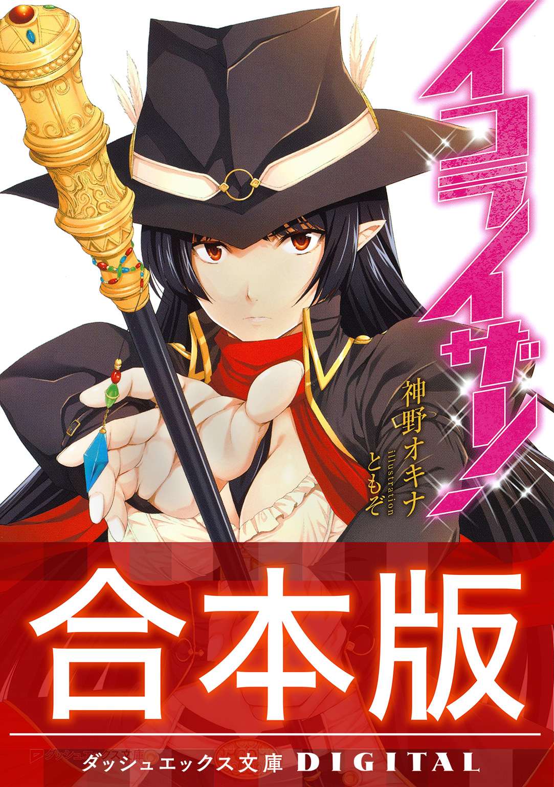
イコライザー！ 合本版
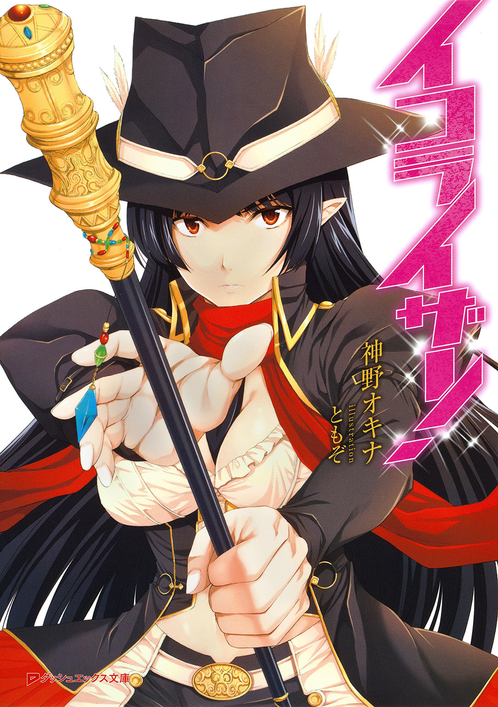
この本は縦書きでレイアウトされています。
また、ご覧になる機種により、表示の差が認められることがあります。
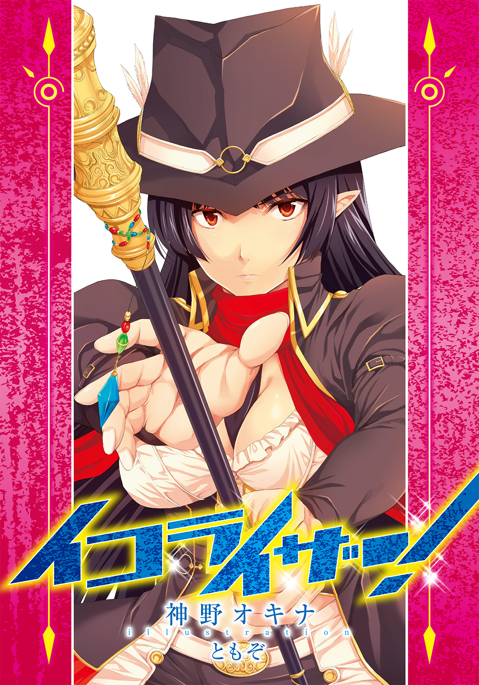
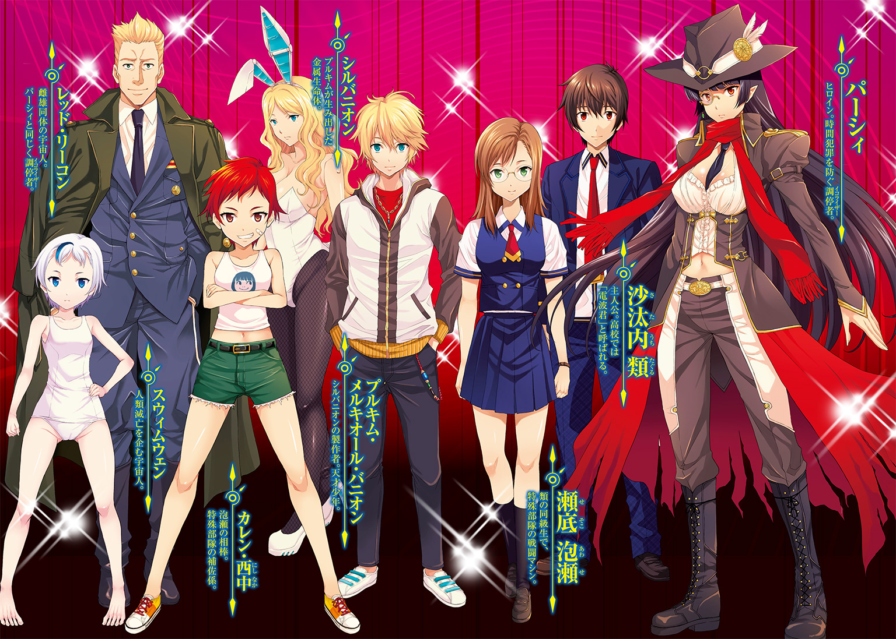
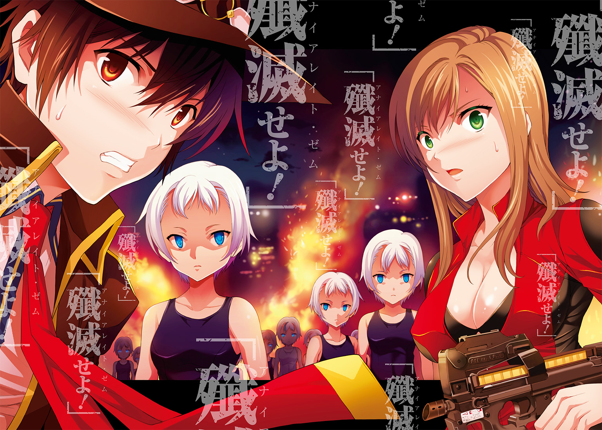
 ダッシュエックス文庫DIGITAL
ダッシュエックス文庫DIGITAL
イコライザー！
神野オキナ
○第一話：「They Call Me Trinity」（byフランコ・ミカリッツィ）
☆
「やぁ、タグル」
日の傾きかけた駅前のショッピングモールの入り口で沙汰内類は呼び止められた。
埼玉県の新興都市、朝ヶ市のメインストリートだというのに不思議に人通りのない日で、週末手前の金曜日、間もなく日も暮れるというのに、通りには車の行き来すらなかった。
振り向くと、少女が立っていた。
自分より三つは年下......十二、三歳ぐらいだろうか。
日に焼けた肌に、白人の血が入っているらしい彫りの深い顔立ちは整っていて、理知的な顔にノーズブリッジの単眼鏡が似合っていた。
背はタグルの胸あたりぐらいで、頭にはつば部分がテンガロンハットのように広く、本体の左右に大きな金色のメダルの塡まった黒の中折れ帽。
金色で鋲やらモールやらがあちこちについた、革製らしいロングコートも黒で、白いブラウス、腰から胸元までは茶色い革のコルセットできゅっと絞り、足下はどこでサイズを見つけてきたのか、間違いなくパンクロッカーなバイト先の店長もご愛用な、ドクターマーチンのブーツ。
初夏の五月とは思えぬコスプレまがいの格好なのだが、それがちゃんと「普段着」に見えるのは、その着こなしと、すらりと長い手足のおかげだろうか。
だが、タグルが奇妙に感じたのは少女の目だ。
明らかに自分よりも年下のはずなのに、目だけが、年老いた老婆のような、時間の重みがもたらす慈愛に満ちている。
顔立ちそのものは理知的で、不敵な笑みが似合いそうな鋭さがあるだけに、それだけで表情が酷く優しく見え――――その目が微かに潤んだ。
嬉しそうな笑顔だ――――まるで一〇年来の旧友に出会ったかのように。
「ずいぶんと久しぶりだね」
「？」
「タグル、この言葉を聞いたことはあるか？ 『いかなる過去があり、いかなる未来が待ち受けようともそれは些細なことである。大事なことは自己のうちに何があるかのみだ』」
「なに、それ？」
ちょっとひるむ。このところタグルはよく「ゲームの標的」にされることが多いからだ。いくらなんでも年下の少女にまでそういう対象にされているとは思いたくなかったが、今は警戒心の方が先に出る。
「ああ、やっぱりここで正しかったのか！」
そう言うと少女はタグルの首に抱きついた。
甘い、チョコレートに似た匂いと温かくてしなやかな身体の質量に思わずタグルは棒立ちになったままそれを受け止める。
「え？ え？ え？」
戸惑うタグルの身体を抱きしめ、子猫のように少女は頰をすり寄せた。
「ああ、タグルだ、私のタグル――――」
嬉しそうにきゃっきゃっと声まで上げた。
「え？ いやあの」
何とか少女を引きはがそうとするタグルに、少女は素早く囁いた。
「人違いなんかしてない。君はサタウチ・タグルだろう？」
ひょいと少女はタグルの首を解放し、道路に降り立ち、彼を見上げた。
「あ、い、いや確かにそうだけど......君は？」
「君の......そう、生涯の友人だ。まだ出会ってないが」
まるで自分のほうが十も二十も年上であるかのように少女は穏やかに微笑む。
「は？」
「あまり時間がないし、過度な情報は世界をゆがめるから手短に言う。タグル、君は今日、学校に忘れ物をしている」
「え？」
三秒間考え、タグルはバイトを終えて着替え直した学校の制服のポケットに触れた。
制服の内ポケットになく、他のポケットを探ってみたが出てきたのは財布と生徒手帳以外は、小銭と糸くずだけ。
「......ホントだ」
「忘れ物はバイト先にはない。学校に忘れてる......一度懐に入れようとして、腕時計を見たらバイトの時間が近かったんで慌てて飛び出し、内ポケットに入れたままだと思い込んでいたんだ。だからバイト先に行っても無駄だ」
「......君、見てたの？」
「いや、君から聞いた」
「？」
「取りに戻るかどうかは君の判断に任せる――――あと」
そう言って少女は「チョイチョイ」と外国人がよくやるように、人差し指を曲げてタグルを少しかがませた。
「おまじないだ」
そう言うと、少女の唇がタグルのそれに重なる。
「！」
真っ赤になって離れようとする少年を、少女は再び首っ玉にかじりつくようにして逃さず、たっぷり十秒は唇を重ね、それからロデオマシーンから飛び降りるようにして地面に降り立った。
「本当は色々説明したいが、あまり時間がない」
少女は酷く寂しげな笑みを浮かべた。
「もしも取りに戻るなら、私と、アワセにもよろしく......あと、ドーナッツを忘れるな。私はプレーンが好みだ」
少女の頰を光るものが流れる。
「君がこれから会う、あのころ、いや現在の私は傍若無人、ひどく無礼で、我が儘で、能天気でウンチクたれで、自分では宇宙一賢くて万能と思っているが、実際には無能で、人として様々なものが欠落しまくった愚かな女だ――――だから、よろしく頼む、私の愛しいタグル」
明らかに先ほど言ったようなただの「友人」相手には使わない言葉を少女は口にした。
「じゃあ、そろそろ行かねば――――愛しているよ」
その声はとても切なく聞こえた。
混乱しているタグルが思わず動きを止めてしまうほど。
「いつでも、どこにいても、君のことを想ってる。君もまた私に対してそうなってほしい―――そして、また私と一緒に私たちの王国を探そう！」
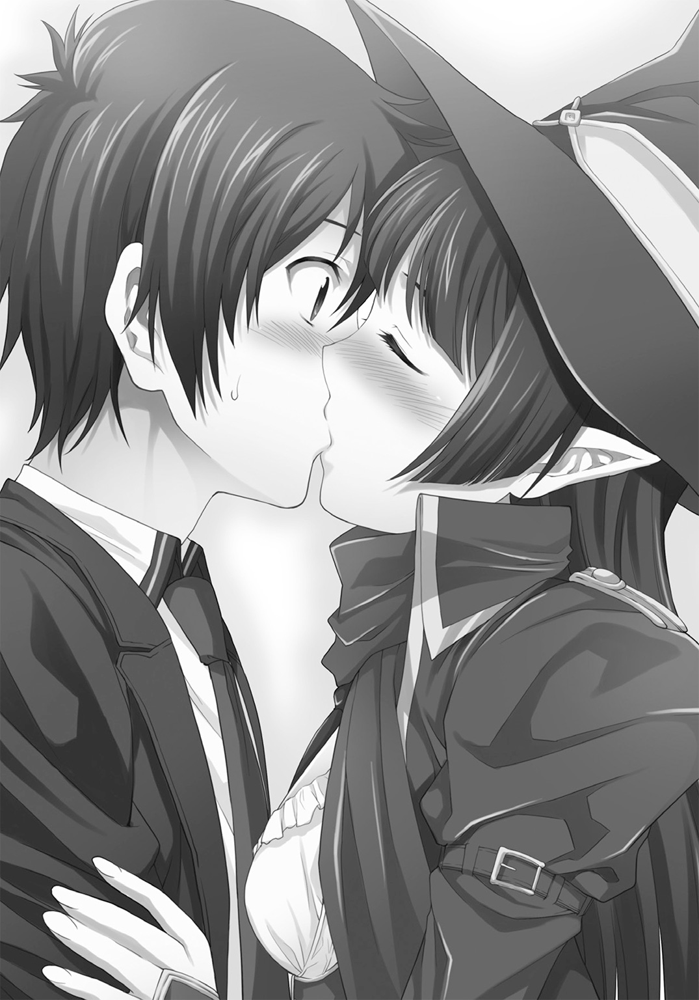
呆然とする少年に手を振ると、少女はコートの裾を翻して走りだす。
「あ、待て！」
突然現れておかしなことを言ったかと思えば、いきなりファーストキスを奪われて、タグルは少女を追いかけたが、キスの衝撃で妙に足がもつれ、さらにまるで子犬のようなダッシュ力で少女はみるみる彼を引き離した。
チャリチャリン、チャリンと何か小さな金属が弾み、擦れる音が少女のコートのポケットからして、やがてこぼれ落ちた。
「あ！」
追っているのに思わずその真鍮色したものを拾い上げてからまた後を追う。
それがいけなかった。
コンビニの角を曲がると、もうどこにもいない。
駐車している車の中、あるいはその下、がらんとしたコンビニの中にも、ビルとビルの間まで探したが、少女はいなかった。
「なんなんだ............あの子？」
ひょっとしたら何かの「ゲーム」かもしれない。
何しろタグルは入学して以来の「有名人」だ。中学生や小学生にまで「例の話」が知られていてもおかしくはなかった。
ぼんやりしていたタグルの視界の片隅を、銀色の毛並みを輝かせたウサギがよぎる。
「え？」
そちらへ振り向くが、がらんとした通りにはウサギどころか通る車もない。
「......くそ」
浮かんできた嫌な妄想を追い払うように呟くと、途端に世界が騒がしくなった。
何かが起こったのではない。
タグルの周囲に不意に群衆が現れ、道路には車が流れ始めていた。
そういえば、さっき少女を探しに入ったコンビニは、と見てみると、仕事帰りのサラリーマンやＯＬ、自分のような学生たちでごった返している。
「？」
数カ月前に「見た」状態がもっと悪化しているのか、と思った。
ちなみにあれから後、医者のすすめで脳のＣＴスキャンも取ったが、異状はなかった。
だとしたら医者の診断同様、何らかのストレスが原因で再び幻を見たということか。
「まあ、確かに今の学校生活はストレスだらけだけどさ......」
が、あの時のような不快さは皆無で、むしろどこか懐かしい気分が自分の胸の中にあることに気づく。
数カ月前に「見た」ものとは違う、もっと......優しい感じ。
「なんだったんだろう、あれ」
物の怪に化かされた、というのはこういうことなのだろうかと思いながら懐を探ると、やはり入れたはずのものは「忘れ物」のままだった。
「仕方ない、学校に戻ろう」
駅前の駐輪場に自転車を取りに戻りながら、タグルは呟いた。
三駅隣はちときついが、この時間、電車に乗るよりも、先週みつけた美味しいドーナツ屋で二つほどドーナツを買って道すがら食べる楽しみもある、と思い直していた。
手の中に握りしめた真鍮色の金属の小さな塊......潰れたライフルの弾だとは、今のタグルに知るよしもないものを、無意識のうちにコンビニ前の不燃ゴミのボックスに棄てたが、タグルの脳はそれを記憶しなかった。
☆
同時刻。
裏門から入ったらしい生徒のインターフォンを鳴らす音に、警備員は夜食を中断させられて、うめき声を上げることで罵り言葉に代えた。
「はい、こちら警備室」
インターフォンを押すと、奇妙な人物が見えた。
確かにもう夏も近く、プール開きも先週行われたと聞いていたが、それにしても水着姿の少女というのはどういうことか。
髪が脱色されているのは今のご時世、むしろ大人しいファッションだが、その少女はカメラを瞬きもせずのぞき込んで言った。
『忘れ物をしました、忘れ物をしました』
可愛らしい、しかし微妙に感情のない声。
「あなた、何年何組の、どなた？」
『二年Ｄ組のタナカハナコです。開けてください。中に入れてください』
パソコンにその名前とクラス名を入れて検索すると、一瞬画像が乱れたが、それは気のせいだったのか、すぐに今カメラに映っているのと同じ少女が、制服姿で正面を向いている写真と簡単な履歴が表示される。
「なんでそんな格好してるの？」
『いじめられたんです、いじめられたんです』
「いじめ？」
この前、法律が変わり、たとえ警備員でも学校に関係している者は「いじめ」と聞けば事情を聞き、報告する義務がある。
「ちょっと待ちなさい」
そう言って、彼は警備室の受付窓を開いて顔を出した。
「君、今......」
少女は先ほどまでとは打って変わった冷たく低い声で言った。
「先ほどの言動を否定する。今のは虚偽の情報である。そしてお前の業務は終了である。殲滅せよ」
「君、何を......」
少女の目をのぞき込んだ警備員の身体が、そのまま固まった。
☆
一時間後。途中でドーナツショップに寄って帰り道用の栄養を確保したタグルは、学校近くの坂を、自転車を漕いで登り切った所に奇妙な物を見つけて、首をひねった。
「棺桶......？」
西洋風で、六角形を引き延ばした形の、素材は不明ながら風景が映りこむほどつややかに光る黒地に金の金具が装着された棺桶。
それが、街灯に照らされて直立している。
「――――？」
さきほどの少女の件といい、何とも奇妙な風景に思わず自転車を停めて、棺桶の取っ手を握り、引っ張ってみようとして、やめた。
タグルは自転車を再び漕いで学校に辿り着く。
まだ開いている裏門脇に自転車を停め、中に入って校舎玄関脇に四畳半分だけ突き出て設けられた、警備室のインターフォンを押す。
「すみません、二年Ｄ組の沙汰内類と言います。教室に忘れ物を取りに来たんですが、開けてもらえますか？」
どたばたと音がして、受付の小さなカーテンが引かれ、人影が現れた。
「？」
「どなたかな？」
警備室からひょいと顔を出したのは、メダルの塡まった、テンガロンハットのようにつばの広い中折れ帽に赤いマフラー、ロングコートに黒髪、鼻掛けの単眼鏡......つまり、先ほど街中でタグルにいきなりキスしてきた少女そっくりな格好と顔立ちで、なおかつ、数歳成長させたような外見を持つ少女だった。
「わっ！」
（............どう見てもさっき、キスをした少女と同じ顔だよね？ いや、でもあっちはどう見ても小学生か中学生で、こっちは僕と同い年か二、三歳上だし......）
「き、君は......さっきの子のお姉さんか何か？」
少女は健康的に日焼けした顔に「不可解」と書いてあるような表情を浮かべた。
「君とは初対面のはずだが？」
同時にタグルは気づく。
この少女の目はある意味年相応で、あの少女のような見かけに不釣り合いな年輪を感じさせるようなところはなかった。
「あ、いや、そのさっき街中であなたによく似た子供を見かけたものだから......」
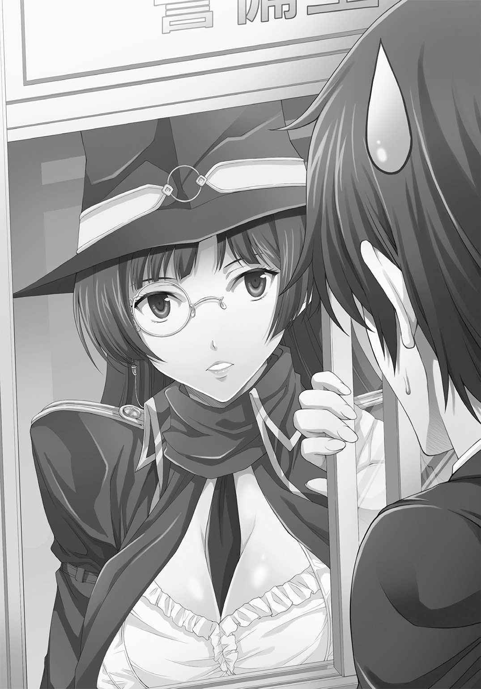
言い訳をする
「すまないが、学校はもう封鎖だ、鍵もかけた、宿直の先生もいない、帰ってくれ」
「あなた誰ですか？」
「警備員だよ」
「制服も制帽もないのに？」
学校荒らしというやつだろうか？
だが、犯罪者にしては堂々としすぎていた。
「あ、制帽はあるぞ、うん」
少女はソフト帽を外し、壁に掛かった制帽を勢いよく被るが、どう見てもサイズがあっておらず、ブカブカで目元まで隠れてしまう。
「あ、くそ臭い臭い臭い臭い！ どうしてこういう制帽の類は、いつまでも汗臭くなる構造のまんまなんだ！」
わたわたと帽子を脱ごうとする少女の背後に、ちらりと何か見えた。
「え？」
二足の靴。踵を下、爪先を上にしている。
靴の上には足首があって、さらに見慣れた警備員の制服の色をしたスラックスを穿いた足も見えた。
ぴくりとも動かない。
タグルの脳裏に、小学一年の頃、道ばたで倒れているお年寄りのために叫んで以来の言葉が明滅した。
おまわりさん、事件です。
くるりと踵を返し、しっかりドーナツ屋の袋を持ったまま走り出す。
確か坂を下りたところに交番があって、定時巡回もしていたはずだという情報を頭の中から引き出しつつ、自転車に鍵をかけなかった自分の判断に感謝する。
「し、失礼しましたーっ！」
「しまった、気づかれた！」
警備室のドアが開いて長身の少女が跳び出してきた。
スマートフォンを取り出そうとするタグルを見て、
「わ、ばか！ 殺したりしないって、あと通報なんかやめろ、私が来たときにはもう死んでたんだ、残念ながら手遅れだ。私がやったんじゃない！」
少女はそう怒鳴りながら後ろから羽交い締めにしてきた。
頭一つ高いらしく、タグルの後頭部から左右の頰にかけてを、ブラウスに包まれた豊満な胸の柔らかい塊が包み込むが、その感触を楽しむ余裕はない。
「お、おまわりさーん！ 殺されるぅう！」
ジタバタあがくが、少女は何かの体術を会得しているらしく、暴れるタグルの身体を巧妙に押さえ込み続けた。
「いいか、君に言い聞かせることがある。ひとつ、私は人殺しじゃない、ふたつ、警察の手に負えない事件が進行中で、人死にが増えるだけだから決着のつく一時間後まで警察に通報はするな、ここは危険だ、三つ、それが守れるなら、解放するからとにかく立ち去れ、以上だ！」
それだけ言うと少女は手を離した。
爪先が軽く浮く形で拘束されていたタグルはそのまま地面につんのめって倒れ、慌てて起き上がった。
「どういうこと？」
自分が思いっきりジタバタあがいてもかなわないこの少女が、もし警備員を殺すような人間ならとっくに殺されている、つまり彼女の言うことは本当ではないか、という判断は出来た。
「第一、君は一体誰なんだ？」
「ああ、そういえば自己紹介もしてなかったな。私は説得者というものだ、サタウチ・タグルくん」
「どうして僕の名を？」
「他にも色々知ってる。君が入学して三日目に、学校が爆破されて炎に包まれる夢を授業中に目を開けたまま見て以来『電波君』と呼ばれてることも」
「！」
一瞬、タグルの顔が羞恥で真っ赤になった。
出来れば思い出したくないことを、なぜ初対面の少女が知っているのか。
「あれは正夢......というより、今日から三日後、君が殺される瞬間に叫んだ精神のこだまが過去の君の脳で再生されただけだ。この町には時間の特異点が出来てるからね」
「どういうこと？」
ただの妄想や精神の錯乱ではない、と言われてタグルは驚いたが、その説明もまた意味不明だった。
「だが、私が来たから大丈夫、君は死なない。判ったら何を忘れたかは知らんがさっさと走って、十分以内に学校から三〇〇メートル以上は離れろ。出来れば一キロ以上」
「何いきなり妙なことばっかり言ってるんだよ、ちゃんと説明して！」
「この世で大事なのは納得のいく説明じゃなくて命だ、ではさらば！」
そう言うと、少女は警備室の中に戻る。
開けようとするタグルだが、素早く鍵をかけられた。
「なら！」
と受付の腰窓へ回り込むと、そこもパスウィダーを名乗った少女の、白い絹の手袋につつまれた指先が施錠するところだった。
どんどんと拳で叩くが、頑丈そのもののサッシには無駄な行為だ。
（だからって見過ごしておけるか！ 殺人だぞ？）
妙にムキになったタグルは素早く周囲を見回した。
この前壊れた花壇を補修するために積んである煉瓦が目に入った。
「じゃあこうだ！」
その一個を摑んで窓ガラスに叩きつけようとするよりも早く、中折れ帽に眼鏡の少女は、どこからともなく杖型の機械を取り出し、窓へと十二面体の宝石が埋め込まれた握り部分を突き出した。
握り拳ほどの宝石の真ん中部分がカチリと左右に開き、電極のようなものが突き出すと蒼く輝き、叩きつけた煉瓦は窓ガラスに跳ね返された。
ぶつけ方が悪かったのかともう一度叩きつけるが、手前で巨大で頑丈な風船を殴りつけたかのように、握りしめた煉瓦の塊は跳ね返された。
「？」
首を傾げるタグルに、少女は杖状の機械でぽんぽんと肩を叩きつつ、自慢げに微笑みながら壁のインターフォンのスイッチを入れた。
『この扉はもちろん、校舎全ての表面にある空気を高圧縮して強化した。これでトラックが突っ込んできても壊れない。窓ガラスを壊して中に侵入することは不可能になった、わはは、凄いだろう』
言いながら、少女はいつの間にか手にしたタグルの買ったドーナツの袋の中から、プレーンドーナツを一つ取り出してかじった。
『うん、美味い！ ちょうどドーナッツを切らしていたところだ、感謝する』
まるで子供のように顔をほころばせると、外見よりも幼い印象になる。
「学校爆破するんだろう、君も死ぬぞ！ 開けろってば！ あとドーナツ返せ！」
『私が爆破するわけじゃない、爆破する奴を爆破するんだ。それとドーナッツぐらいいいだろう？』
むっとした顔でパスウィダー。どうやら意外と子供っぽい。
「同じだし、ドーナツも良くない！」
『全然違う、私が爆破するのはこの学校だけ、奴らはこの学校が手始めだ、これは大きい。何よりも君の願いも叶う。あとドーナッツ、だ。ドーナツというのは正しくない。この素晴らしい食べ物に対する敬意が足りないと怒られるぞ』
「学校が爆破されろなんて願ってないってば！ だからドーナツ返して！」
『ん？ そうだっけか？ まあいい』
パスウィダーはコートの中からお茶のペットボトルを取り出してひと口飲んだ。
「だから良くないって！ あとお茶飲む前にここを開けて！ 説明してよ！」
『とにかく、今学校の中で進行していることは、君が関わってはいけないことだ、あとこれは最後の晩餐にとって不足ないので貰っていく――――生きて帰れたら、この分はカリフォルニアのランディ・ドーナッツを買ってきて埋め合わせをするから。
とにかく早く帰れ、三日後に死ぬ運命を回避できるんだ、今更繰り上げたりするな、じゃあな！』
そう言いながら最後のドーナツを口にくわえ、杖状の機械を小脇に抱えてパスウィダーと名乗った少女は身を翻し、校舎に通じるドアの向こう側に消えた。
「待てってば！」
取り残されたタグルはどうしようかと考える。
もともと「忘れ物」は大したものではないし中身も見ていない。
「電波君」扱いされるようになってから、学校生活に期待するのはやめているので、碌なものではないとは思う............が、万に一つ、いいことであったら嬉しい、という程度だ。
いわば、僅かな夢にすがっている。封筒の中のシュレディンガーの猫。
これ以上揉める必要もない。
あの少女は訳が分からない存在だが、どうもこの場を立ち去れば、自分の一生には恐らく二度と関わり合いはないだろう。
世の中の厄介ごとに自分から関わっても褒められることはない。
帰ろう。
なんか偉そうで傍若無人で、他人のドーナツを勝手に奪って喰ってしまうような少女だ。
〈あのころ、いや現在の私は〉
自転車に戻ろうとしたタグルの頭の中に、妙に鮮明に幻の少女の言葉が蘇った。
〈傍若無人、ひどく無礼で、我が儘で、能天気でウンチクたれで、自分では宇宙一賢くて万能と思っているが、実際には無能で、人として様々なものが欠落しまくった愚かな女だ――――だから、よろしく頼む、私の愛しいタグル〉
先ほどの酷く寂しげで、切ない声が頭の中で再生される。
同時に抱きついてきた少女の体温と甘い香り、唇の感触も。
「！」
思わずタグルは口元を押さえた。
あれは幻なんかじゃないのではないか、という確信に近い思い。
それと同時に何かが、自分の中で引っかかっているのを、タグルは感じた。
このまま何が起こるか知らずに帰っていいのか？ という好奇心のささやき。
そして蘇る。
数カ月前、入学したてのある日、授業中に自分の頭の中を襲った悪夢。
学校が燃えていた。
生徒も教師も、炎の中で小柄な影に追われ、銃声がする校庭で、廊下で、教室で、まだその頃は夏前で再開されていない水をたたえたプールの側で、体育館で、校門で、屋上で、死体となって動かなくなっていた。
「逃げろ！ 逃げるんだ、今すぐ、ここじゃない、ここは！」
叫んで走り回り、教師に羽交い締めにされるまでタグルは暴れたという。
当人にその辺の記憶はない。
いきなり学校が燃えて、気がついたら病院にいて、学校が燃えていないと看護師から聞かされた時、安堵で涙を流したことは覚えている。
薬物使用を最初に疑われ、様々な検査がタグルに施された。
受験ノイローゼだろう、と二週間後に医者は結論した。
タグルも、そう思うしかなかった。
母親は父親の転勤に付き合って家族が移動し続けたことが原因だと自分自身と父を責め、慌ててタグルは二人の間に割って入ったが、今も両親の仲はぎくしゃくしている。
そして、学校では「電波君」「イタコ君」などの陰口が囁かれ、タグル自身も学校の中では浮いているし、時折からかいの対象にもなっている。
すべて、あの幻のせいだ。
それをあの少女は「未来の自分から発せられたものだ」と言う。
本当なのか？
だとしたら、あの少女は何者なのか。何が起ころうとしているのか。
「............」
好奇心と理性と直感がない交ぜになって十秒ほど考え、タグルは妥協案をひねり出した。
「もしも、あそこから中に入れなかったら、帰ろう」
呟いて、タグルは、上から見るとＨ型の校舎の、東の片隅にあるサッカー部の部室の窓に回った。
外に置いてある壊れかけのボール入れを踏み台にして、高窓にゆっくりと手をかける。
普通にサッシの枠に手が触れ、横にずらすと、高窓はあっさり開いた。
「......やっぱり」
パスウィダーと名乗った少女は「校舎全体を普通の方法では破壊出来ないように強化した」と言っていた。
だから「窓ガラスを壊して中には入れない」と。
見方を変えれば「窓ガラスを壊そうとしなければ中に入れる」ことになる。
この高窓は、サッカー部にいる連中が、練習後部室への忘れ物を取りにいったり、授業をサボりたい時に使うのを、教室で小耳に挟んで知っていた。
何気なく聞いていたことだが、まさか役に立とうとは思わなかった。
（............決めたことだもんな）
ここが開かないのなら大人しく帰るつもりだったが、開いてしまった以上は、中で何が起こっているのかを確かめなければならない。
タグルは高窓に身体を滑り込ませ、汗臭い部室の中に潜り込んだ。
「......っぷ」
どうしてこう、体育会系の男子部室は汗臭くて汚いのだろう（もっとも、女子の部室に入ったことがないが）、と思いつつ、タグルは息を詰めるようにして部室の中を小走りに駆け抜け、ドアから校舎内に出る。
そのまま廊下を抜け、二階に一度あがって、欧米風にロッカーの並ぶ大廊下にある自分のロッカーから「忘れ物」を取る。
「............」
パスウィダーを含めた人の気配はない。
ばたん、という扉が開閉されるときの大きな音が、一階から響いてきた。
引き返す。
それから西校舎との境目にある東階段まで来たあたりで、西校舎の奥......体育館のあたりからパスウィダーの凜とした声が聞こえてきた。
「私の名はパスウィダー！ 時の流れの調停者として命じる、スウィムウェン。第六八〇五号銀河系の住人たちよ、この惑星もこの時代も君たちのものではない！ この建物内に張り巡らせた全ての装置を回収し、立ち去れ！」
答えはなく、次の瞬間には何かが爆発するような音が校舎に轟いた。
「！」
空っぽの校舎に響く大音響に思わず耳を塞ぎ、身をかがめる。
爆発音は今度はぐっと小さくなって何度も繰り返され、タグルは背筋がぞくぞくするのを感じた。
廊下の体育館側が明るく輝いている――――炎が燃えているのだ。
怖い。
とっさに携帯を見たが、驚いたことに圏外になっていた。これも少女のせいだろうか。
ともかく、今は大人にすがれる状況ではなくなっていた。
だがそれ以上にパスウィダーが心配だった。
奇妙な話だが、殺人犯かもしれない少女なのに、今やタグルはどこか「違う」という確信も同時に抱いていた。
どっちにせよ、タグルの父が常に言うように「死んでいい命などない」のは間違いない。
こっそりと、足音を立てないように身をかがめながらタグルは小走りに体育館へ向かう。
廊下はどんどん明るくなっていき、炎の熱と木材の燃える音で満たされ、さらに火災報知器の鳴る音が響き始める。
構わずタグルは走った。
体育館に通じる両開きの扉は、へし折れて廊下に転がっている。
ついでに、見覚えのある物体も転がっていた。
パスウィダーの持っていた「杖」だ。
思わず拾い上げると、黒い金属で出来ている「杖」は外見以上に機械的なディテールが多く、重いのに気づく。
さらに小さな爆発音がいくつも響く。
タグルは慌てて「杖」を手に燃えさかる体育館内に飛び込んだ。
奇妙なものが炎の彼方に見えた。
白いニーハイソックスを着用した、スクール水着（濃紺）の少女。
ひとりではない、体育館の真ん中に五〇人ほどいた。
みな、真っ白な肌で、銀色の髪をし、整った美しい顔をしていた。
唯一ないのは個性で、どの顔も同じで、身長も同じくらいだった。
表情まで「無表情」で統一されていた。
「？」
思わず足を止めたタグルを、周囲を睥睨していた一人が見つける。
「他に侵入者、パスウィダーの装備所持を確認」
十二、三歳の北欧系美少女の顔立ちなのに、漏れてくる声は、野太い中年男性のそれだ。
「関係者と思われる、装備破壊、殲滅せよ！」
言いながら、彼女はそれまで床に引きずっていたものを一斉に構え直した。
ＡＫ74アサルトライフル。自衛官の父の書斎にあった雑誌で、何度となく見ている。
タグルはすぐ側の入り口に飛び込み、銃弾が炸裂するのを背中に感じつつ、バスケットコート四枚を見ろせる観客席に駆け上った。
「報告、侵入者を再発見」
「肯定する。パスウィダーの『杖』を確認、相棒であると認識」
「否定する。一時判断保留、資料に載っている人物とは身長と体重、および性別が違う」
全員の目の中に、燃えさかる炎とは違う光が明滅し、回転するのをタグルは見た。
人工物、という言葉が脳裏をよぎる。
少女たちは単なるそっくりさんがあつまったのではなく、同じ鋳型から抜かれた「商品」のようにそっくりで、それと同時に顔も身体も完全に左右相称を保っていた。
美しいだけにその微妙な差のなさが際立って見える。
彼女たちは人間じゃない。
タグルは直感したが、動こうにもこの不気味な相手はどこへ逃げても追いかけて来るであろうという、不気味な冷静さと能力を感じさせた。
下手に動けば即死する。
頭の片隅で、警備員の死体（見えたのは足だけだが）が明滅する。
「否定する。推論、イコライザーのワークメイトはしばしば変更される、主な要因は性格の不一致、人生設計による職業としてのワークメイトの見切り」
濃紺のスクール水着は凹凸のほぼない身体を包み込み、少女たちは不気味に会話を続ける。それは大勢で行う独り言のようだ。
「肯定する、問題ない、殲滅せよ」
「肯定する、結論：殲滅せよ」
少女たちは互いを見ようともせず、口々にそう言ってタグルの抹殺を決定すると、手に持っていた武器を次々と構えた。
映画や漫画でおなじみのダネルＭＧＬリボルバー式グレネードランチャー、機関部そのものを肩に担いで発砲するバレットライフルの発展型、Ｍ82Ａ２対物狙撃銃。
ベルト弾倉の装着されたミニミ分隊支援機関銃に至っては少女数名が両手に一丁ずつ構えた............全ての銃口はタグルを狙っている。
「い！」
五〇以上の銃口に狙われて、思わず固まりそうになるタグルだが、本能が肉体を動かして真横に走る。銃の場合、自分にとって左側、相手にとっては右に移動する物は狙いにくい、という話をどこかで聞いたと脳の奥が叫んでいた。
「肯定する、攻撃開始」
「殲滅せよ！」「殲滅せよ！」「殲滅せよ！」「殲滅せよ！」「殲滅せよ！」「殲滅せよ！」「殲滅せよ！」「殲滅せよ！」「殲滅せよ！」
銃弾と砲弾がどかどかと観客席に当たって爆発と粉砕を繰り返しながらタグルを追う。
映画やテレビと違い、背後で発生する銃弾の撃ち込まれる衝撃波や音の響き、身体のあちこちに当たる破片、そして実際に自分が生活してる光景が破壊されていくのは、恐ろしいほどの「リアル」だった。
殺される。
それだけで座り込んで失禁したくなるが、それ以上に生存本能がタグルを動かす。
悲鳴が口から出てきそうになるが、出たらおしまいだという自覚があった。
少年は悲鳴を押し殺しながらすり鉢状の客席を上下ジグザグに移動していく。
もう少し冷静なら、銃撃がわざと彼を外しているのだと気づいたかもしれない。
「報告、移動速度による照準データ収集完了。殲滅せよ」
「肯定する、殲滅せよ」
「殲滅せよ」「殲滅せよ」「殲滅せよ」
というスク水少女たちの野太い最終宣告の声に被さって、
「あと二メートル走って横に飛べ！」
という低く押し殺したパスウィダーの声が響いた。
「どどどどっち？」
「左！」
言われるままに地面を蹴るのと、スク水少女の群れが引き金を引くのはほぼ同時だった。
ただし、僅かにタグルの動きのほうが速い。
一歩目。
銃弾が右のふくらはぎをかすめて衝撃波が衣類の生地をはたいた。
二歩目。
背中と胸を弾丸が横切る衝撃波。
これまでと違い、恐ろしく近くて、服の繊維がちぎれ飛ぶ。
三歩目。
グレネードランチャーの発射音が連続し、そして、左に......観客用の、もう一つの出入り口に向けて飛ぶ。
銃弾の炸裂する音と爆発音が一気に壁の向こうの音声に変わり、同時に、チョコレートのような甘い香りと共に柔らかくて温かいものが視界を塞いだ。
「大丈夫か、サタウチ・タグルくん？」
顔の真正面に、鼻掛け眼鏡をかけた少女の顔があった。
一瞬、心臓が跳ね上がる。
どうやら自分は彼女に抱き留められ、そのままくるりと背中を向けた彼女の陰になっているらしい。
「私の蒸気精霊杖をありがとう。何とか相手の最初の一撃を避けたのは良かったんだが、取り落としてしまってね」
そう言って手袋をはめた手が杖を受け取る。
「だが、一体どうやってここに入った？」
「部室の窓で鍵が開けっ放しになってるところがあるから、そこから」
「――――なるほど、亡くなった警備員はそれを見逃していたのか。全ての鍵がかかっているものだと思ってたんだが」
爆発や銃弾の炸裂する音はまだ連続している。
「移動しよう、私の周囲ならしばらく安全だが、力場発生装置はあと一分しか持たない」
そう言ってパスウィダーは頭上を仰ぐ。
見ると、小さな石鹼ほどの大きさの黒い物体がぷかぷか浮いていて、銃弾が撃ち込まれたり爆発が起こる度、それを中心にうっすらと黄色い光がドーム状に二人を包んでいるのが判る。
「あれ......」
「あらゆる物理、光学攻撃を防ぐので便利だが、五分間しか使えないのが難点でな」
そう言いながらタグルを立たせ、階段を降りていく。
「生命反応が消えた」
「肯定する。着弾による音波変化を確認。肉体的破損は観測されていない」
「肯定する、パスウィダーによる保護が行われたと確認される」
「結論、集中放火せよ。そして殲滅せよ」
「殲滅せよ！」「殲滅せよ！」「殲滅せよ！」「殲滅せよ！」「殲滅せよ！」
「殲滅せよ！」「殲滅せよ！」「殲滅せよ！」「殲滅せよ！」「殲滅せよ！」
そんな声が聞こえてきて、足並みをそろえた足音が響き始める。
「逃げたほうがいいと思うけど？」
観客用の階段を降りると踊り場、そこから右に降りれば外、左に行けば体育館に戻る。
「出来ればそうしたいが今は駄目だ」
「なんで？」
「奴ら、この学校全体の電気配線を利用して建物そのものを奴らの母船を呼ぶための誘導波の増幅装置にしている。このままじゃ一八〇〇万の増援部隊がやってくる」
「あれの？」
「そうだ――――出来れば、説得して返したかったんだが、スウィムウェンは交渉という概念が未発達でな。彼女たちをなんとかしないと、この時代で地球の人類は滅んでしまう」
話が壮大すぎる上に浮き世離れしすぎて、タグルはどう反応していいのか判らなかった。
体育館側の入り口に武装した人影が上履きの足音も高く、規則正しく近づいてくるのが見える。
「じゃ、どうするの？」
「こうするんだ」
パスウィダーはウィンクして、タグルから受け取った「杖」を頭上にかざした。
再び宝石の中から金属の端子が現れ、青い輝きが周囲を染める中、激しいスパークと金属同士が擦れて起こる悲鳴のような音が響いたかと思うと、体育館入り口付近からこっちの足が二ミリは宙に浮きそうな「どすん」という音とともに大量の埃が吹き込んでくる。
「なに？」
「とあるものを固定するネジの摩擦係数をゼロにしたんだ............上に戻ろう。ちとえぐいが奴らの本質が見られるぞ」
事情が分からぬタグルの手を引っ張って、パスウィダーは階段を再び上る。
「足下に気をつけたまえ、こういうとき、慎重さを欠いて階段で滑って転んで頭を打って死ぬ確率が二五〇〇分の一はある」
「え？ あ、う、うん」
観客席に出て、下を見ると、天井にいくつも取り付けられているサーチライト型の照明が二つ、スク水少女たちの上に落下し、無残に潰された少女たちの手足が、機材と砕けた床材の間に見える。
一瞬、警備室の足が脳裏に浮かび、思わずタグルはパスウィダーを見たが、少女は平然としている。
「大丈夫だ、すぐ起き上がってくる」
「そんな馬鹿な！」
「相手の姿に誤魔化されるな。あれは宇宙人だ」
「............」
判ったような、分からないような理屈だが、今現在はパスウィダーよりもスク水少女たちのほうに不気味さを感じるのは確かだ。
がぎがぎという木材と金属の擦れる音、さらに金属同士がひしゃげ、曲がる音。
「報告、再生完了、復旧する」
その声に振り向くと、異様な光景があった。
体育館の床で、照明の下敷きになっていたはずのスク水少女たちが、次々とそこから照明を持ち上げ、立ち上がってくる。
どう見ても照明は金属の塊で、重さは一トンは下らない。
それを、まるで紙で出来たニセモノのように持ち上げ、少女たちは立ち上がった。
手に手にひしゃげた武器を構えていたが、
「報告、武器破損箇所の再生を開始する」
とそのうちの一人が言うと、全員の腕の一部が細長くスライドして、そこから無数の光ケーブルのようなものが伸びてきて、生き物のように銃器類を覆っていく。
「！」
「判っただろう、あれは人間じゃない」
驚愕に固まったタグルの腕をパスウィダーが戻ってきて引っ張り、ふたりは再び走り出した。
「よーく判った！」
走りながら二人は校舎に飛び込むと角を曲がり、さらに二階、三階、四階へと駆け上る。
「上に行ったら追い詰められるよ！」
「奴らをこの校舎に引き込むのが狙いなんだ！ それに誘導信号の増幅装置の中心はこの校舎全体だからね！」
「報告、武器修復完了、追撃を開始する」
「殲滅せよ」「殲滅せよ」「殲滅せよ」
階段の下から男のものにしか思えない声が聞こえてくる。
「隠れよう」
そう言ってパスウィダーはタグルの手首を握って手近な教室の入り口に杖を向けた。
杖が光ると同時にカチリという音がしてドアが閉まる。
「窓際に」
慌てて、窓から差し込む月の明かりだけを頼りに、机にぶつからないように注意しながら言われたとおりにする。
「どうするの？」
「しばらく隠れる。奴らの音声と、光学センサーはそんなに精度が良くない。まして、ここは彼女たちの母船をこの時代に呼び込むための増幅装置だから余計な多次元スキャニングとかをしてしまうと、せっかく増幅した誘導信号が乱れる」
そう言って床に腰を下ろした。
タグルもその隣に座り込む。
「ところで君は馬鹿か？ それとも理解力に問題があるのか？ なんで逃げなかった？」
「あんな風に言われて素直に帰れるもんか！ ......まあいいや、アレは何？ ロボット？」
ようやくタグルは相手の正体を自分がまるっきり知らないことに気がついて尋ねた。
「スウィムウェン。一五八〇世紀に人類が接触するはずの『機会』生命体の一種だ」
一五八〇世紀、という単語は恐らく西暦一五八〇年か、一五八年後の言い間違いか、こちらの聞き間違いだろうと何となくタグルは理解し、むしろその次の言葉に反応した。
「機械には見えないけど？」
「機械じゃなくて機会生命体だ。自己進化自己増殖のための最適化手段を常に模索して宇宙をさまよいあらゆる生命体、知性体を侵食、同化していく、本来は金属生命体だが、確かにもうほとんど機械みたいなもんだし、当人たちはそう名乗ってる」
パスウィダーの解説は、一時間前なら「馬鹿」のひと言で片付けられるような話だったが、今現在は「事実」としてすんなりタグルの中に受け容れられた。
「つまりあれって自己改良するアンドロイドみたいなものってこと？」
「その通り、彼らが求めるものは至高の存在で、あの姿は今のところの地球という最大の的に同化した最終段階だ」
「......その結果があのスク水姿？ 確かにどうかしてる」
「ジョークは下手だな、君」
パスウィダーは苦笑を浮かべる。
「そんなつもりで言ったんじゃないよ」
「......まあいい。その時点での未来では人類は遺伝子絶滅兵器で滅びかけ、蜘蛛とハチに遺伝子融合することで闘争本能を強化して生き延びた。スウィムウェンはその最初の不幸きわまりない接触相手だ......地球外生命体なんかと融合すれば碌なことにはならないが、知らなかったんだから仕方ないし、戦争を仕掛けてきたのはスウィムウェンのほうだから、どっちもどっちだが」
「まって、蜘蛛とハチって地球の生き物じゃなかった？」
「そうか、この時代の人間も知らないんだな、蜘蛛と海豚とハチとカラスと雀、あと昆虫の七割は地球外生命体だぞ」
「は？」
「知らないことは幸せだろう？」
にやっとパスウィダーは笑った。
「もっとも、人類はその後融合を解いて穏やかさを取り戻し、僅かに生き残った彼ら......外見的に言えば彼女らだが......を保護し、千年の「存在固定」をかけて放り出した」
「エクソシストロック？」
「エクシテンス・ロックだ、時代から追放し、運命を固定化した。戦争に勝った前後千年、スウィムウェンが二度と現れないようにした」
「そんなこと出来るの？」
「『ドクター・フー』でいうところのタイムロックみたいなもんだ――――で、負けたスウィムウェンは至高の存在になるために『勝つまで負けるな』という厄介なものが本能レベルでの種族命令として存在している。
だから未来で自分たちを打ち倒す人類を、千年以上の過去に遡ってなんとか根絶しようと考えているわけだ......基本、先ほど見せた異様な腕力と現地調達の武器を使うことしか知らない脳タリンだが、逆に諦めるということを知らない。時間の流れに飛び込んで、まだ人類が遺伝子融合する前の地球世界を侵略して、未来の宿敵を抹殺しようという程度の知能と技術もある」
「つまりこれ、遠い未来のリベンジマッチってこと？」
「そういうことだ............理不尽だが、このままだと、我々は見つかって殺され、学校の封印が破られて、数千億体のやつらがやってきて、地球が滅ぶ」
「しれっと言わないでよ！」
「仕方がない、事実はシンプルに告げないとな。だいたい逃げろと言ったのに戻ってくるからだ......知らぬが仏という言葉がこの国にはあるだろうに」
「そんなルー語は知らないよ..................でも、タイムパラドクスが起こるから奴らの侵略って結局ないことになるんじゃ......いや、それ以前にひとつ訊いていい？」
「なんだね、少年」
「なんでそんな未来のこと知ってるの？」
「ああ、簡単な話だ。私は時間旅行者だからね」
「え？」
さらりとまた、正気を疑うようなことを、帽子を取って汗ばんだ前髪を直しながらパスウィダーは口にした。
髪の毛を指先でかき上げるとき、先端が尖りすぎている耳が見える。
（え、エルフ？）
今更ながらにタグルは驚く。
そんな少年の反応に気づかないまま、パスウィダーは答えた。
「と言ってもタイムパトロールではない。私は『調停者』だ」
「どう違うの？」
「まずその１。タイムパトロールはタイムパラドクスが『ある』ことを前提にして行動するという架空の組織だが、我々は組織じゃない、趣味人の集団だ」
「？」
「その２。あと五年するとデンマークのコペンハーゲンと、ノルウェーのオスロでそれを証明する数式の組み立てが始まるが、実は今君たちが考えているようなタイムパラドクスは発生しない」
「は？」
「過去に遡って歴史を大きく変えた場合、絶対時間計で計測される『未決定時間』内に修正しなければ、世界線が分岐してパラレルワールドが発生する。
それが無限に繰り返されていくだけだ......ということが判って以来、過去や未来、時には宇宙から、超技術を持った連中が、自分たちより劣った科学や文明を保有する時代の惑星で悪さをしかけることになった。
何しろ自分の親を殺しても自分は消えない――――ましてそれが赤の他人なら、どんなことでも良心は痛まない、というわけだ。
わかるだろう？
兵器の実験、欲求不満の憂さ晴らし、独裁制で千年続く王国が本当に出来るかどうかという社会実験............動機は様々だが、パラドクスが起こらないから裁きもない」
一気に説明するとパスウィダーは中折れ帽を被り直した。
「つまり、時間犯罪はある一定条件を満たせばやりたい放題、ということ？」
「そういうことになる」
口頭による要約問題を見事にクリアした生徒に向ける教師の笑顔をパスウィダーはタグルに向けた。
「............じゃあ、なんでこんなことを？」
タイムパラドクスが起こらないなら、放置するという手もあるはずだ。
が、パスウィダーは苦笑に近い笑顔を浮かべて頭を振った。
「それでも殺人は殺人だし、犯罪は犯罪だ。良心がある限り見過ごしてはおけないし、私はその行為を知り、阻止できる手段がある。やらない理由はない............タイムマシンが使えるからといって神のように振る舞っていいわけはない............まあ、ギリシア神話の神とかはクソ野郎ばっかりだが。それを観客のように傍観する、というのは心が腐る。心が腐れば死人と同じだ。私は時間旅行を楽しみたい、目的もあるのでね」
だから、自分のためにやっているのだ、とパスウィダーは言った。
その瞬間だけ、彼女の顔に羞恥の表情が浮かび、消えたのを、タグルは見た。
「............なるほど」
細かい事情はわからないが、どうやら彼女は正しいことをしているらしい、とタグルは納得した。
今の自分が信用し、運命を託していい人物だと改めて確信する。
少なくともいきなり機関銃やグレネードランチャーをこちらに向けて撃ってくるスク水少女軍団よりはマシだろう。
「で、どうするの？ 何か予備の武器とかある？ ここまで来たんだ、手伝うよ」
「武器はあんまり持たない主義なんだ。第一、君がここに引き返してくること自体、想定外もいいところだし」
「その杖の魔法でやっつけられないの？」
「いや、これは魔法じゃなくて、思考入力型の素粒子の簡易コントローラーというか......護身用なんだ。杖にもなるし便利だから持ってる」
「じゃ、何か他に武器は？」
「基本、この杖と弁舌だけで何とかするのが通常なんだが――――いや、キミが本当に訊きたいのはそういう意味じゃなくて、予備の武器だよな、うん」
パスウィダーは困ったような顔になったが、
「あ、そうだこれがあったか」
そう言って、コートの内に手を突っ込みしばらくごそごそとやったあと、一丁の銃を取り出した。
マシンガンでもなければ自動拳銃でもなかった。
タグルが見ても、明らかに古いデザインで、彫刻があちこち施された大型リボルバー。
「なにこれ？」
「つい最近まで私と一緒に働いてくれていた相棒の持っていたものだ。万が一の時に使え、あと私に向けるな」
「............」
受け取ってみる。
グリップの下端は鳥のくちばしのように丸められていて、なめらかな表面は機械による研磨ではなく、人の手......職人による丁寧な仕上げで、黒く、青く輝く表面がタグルの顔を映す。
「Webly&Scott MK1 Custum BLUE ALL AMO USE」と太くて短めの銃身に打刻されているが、微妙にそのうちの何文字かが上下にずれているのもその古さを示していた。
右手で握って親指があたる所にあるレバーを前に押すと、フレームのロックが外れ、「へ」の字に折れ曲がる。
六連発の弾倉には様々な直径の金色の薬莢が尻を見せていた。
打刻されている文字は44マグナム、38スペシャル、22ＬＲがそれぞれ二発ずつ。
銃に詳しくないタグルは、それがどんな異常なことか、理解していない。
「............」
この平和な日本で武器を持つというのは実感がわかないが、とりあえずタグルは無意識のうちに掌でくるりと弾倉を回転させると、それを元の形に戻し、アクション映画で見たように制服のベルト、腰の後ろに差し込んだ。
「で、これからどうするの？」
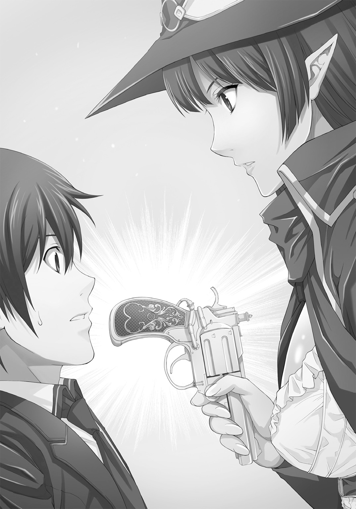
「とりあえず、奴らは私を殺してこの『蒸気精霊杖』、略称『ギズモ』を破壊しない限り、母船をこの時代に呼び込めない」
「でも僕たちの武器はこの銃と君の......」
「杖があるだけだが、大部分の機能を校舎を封印するのに使っているから、調べものや鍵をかけることには使えても、攻撃とかには使えない。その機能もないが」
「警察を呼ぶとか？」
「いや、奴らにとって今の時代の地球の警察や軍隊は気にかけるべき存在じゃないだろうし、彼らも中に入ってこれないから無駄だ......ああ、君が入ってきたような窓にも鍵をかけないとな」
そう呟くと、パスウィダーは杖の下にあるリング状のダイヤルをくるくると回し、杖を輝かせた。
「よし、これでもう完全封印だ。どこかの窓の鍵が開いていても外には出られない」
「でも、どうするの？」
「まあ見ていたまえ......私の記憶では......」
そう言って、パスウィダーは杖を光らせながら教室の床に向けた。
自分を中心に半円を描くようにすると、教室の片隅がぼうっと光った。
「よし、あった」
そう言うと彼女は足音を忍ばせ、光っている担任教師用の机の横にある床に杖で触れた。
フローリングの床が一メートル四方で区切られ、少し落ち込むと、横にスライドする。
そこに現れたのは鉄の梯子と、かなり大きな通路だ。
通っている学校の校舎のことだからよく分かるが、こんな巨大な通路が入るほど、校舎の床も天井も分厚くはない。
が、機関銃やロケットランチャーを撃ちまくるスクール水着少女の集団や、光る杖で学校を丸ごと封印する少女を目の当たりにすれば、何でもありだろうと思う。
「なんでこんな所にこんな通路が？」
「この学校が狙われるのは初めてじゃない」
にやりと笑ってパスウィダーが答えた。
「今から十五年前、この校舎を建てたのはブルドゥ寄生体に操られた連中でね、集まった生徒に仲間を寄生させて、脳内麻薬の精製工場を作ろうとしてた。寄生された生徒たちを時計塔に集めるための次元通路が、まだ残っていると思ってたんだが、ビンゴだな」
「何それ、知らない」
もうここまでくると彼女が口から出任せを喋っているのか、それとも知られざる真実を語っているのかが判らなくなってくる。
「当然だ。私とその銃の持ち主である相棒が阻止した。最後は自家用セスナの墜落事故に偽装したが」
「あ、時計塔が焼け落ちたっていう事件？ それは知ってる」
焼け残った時計の文字盤が、体育館の片隅にある記念碑の基礎に埋め込まれているから、タグルは覚えていた。
「行方不明が三人出た、って書かれてたけど......」
「ふたりは私と相棒、最後の一人は寄生体の作り上げたアンドロイドで教師になりすましてた............この国の特殊機関の連中と力を合わせて何とか倒したよ」
あっさりとパスウィダーは答える。
「そういうわけで今回は出遅れてしまったから、犠牲者がひとり出たが......君をふたり目にする気はない、来たまえ。この通路を通る限りは封印を解除しなくていい。安全なところまで来たら、彼らに最後の選択を与える......通信装置はあちらに残してきたからね」
そう言ってパスウィダーは帽子を押さえながらその中へ飛び込んだ。
真似をする気はなかったので、タグルは慎重に梯子を使う。
「最後の選択？」
中はずいぶん広いが、明かりは当然ない。
「ああ、ここごと吹き飛ぶか、それとも去るか」
「去るとはどうしても思えないけど？」
「やるだけはやってみる。最後まで交渉する......『ドクター・フー』のドクターと同じだ」
「さっきも言ってたよね、なにそれ？」
杖の先端を光らせて前を進むパスウィダーの足が止まった。
もの凄く信じられないものを見たような、怪訝そうな顔で振り返る。
「君、知らないのか？ 『ドクター・フー』だぞ？ イギリスで制作され世界各国で放送中の、半世紀以上続いたテレビシリーズだぞ？」
「......うん」
「信じられない......日本でも二〇〇五年に某公共放送局で新シリーズの第二シーズンまで放送したのに！ 確か数年前にＤＶＤのレンタルで第五シーズンからも......」
「驚くのはそこなの？」
「............いや、いい。そういえばこの時代、日本で人気なのはまだまだアメリカのテレビドラマだったことを忘れてた」
何となく肩を落として、パスウィダーは再び歩き始める。
（......わかんない子だなあ）
タグルも後に続いた。
どう見ても自分と同年齢か年上のはずのパスウィダーを、まるで年下のように考えている不思議さに、まだ少年は気づいていない。
数分ほど歩いて、扉が見えてきた。
「ここを開けると時計塔の記念碑の真裏だ」
そう言ってパスウィダーが取っ手を握り、開けると、炎と熱と光が周囲を取り囲んだ。
見覚えのある光景が、角度を変えて広がっているのが、その肩越しに見えた。
体育館だ。
「？」
首をひねった瞬間、タグルは身体全体を見えない力で前に押された。
「え？」
「しまった、罠だ！ 空間を歪めて出口を変えたな！」
引き返そうとしたパスウィダーの胸に、どすんと真っ向からタグルはぶつかる。
「わ！」
視界いっぱいにコルセットから絞り出されたような、柔らかい、大きな物体が広がり、次の瞬間、ロングコートの少女に抱きつく格好でタグルは体育館の中へと押し出された。
通路はパスウィダーの思惑とは異なり、体育館の壁に通じていたらしい。
その通路も内側から、コンクリートの壁がせり出してきて塞ぐ。
「ととととっと！」
辛うじてパスウィダーは後ろ向きに倒れるのを踏みとどまり、タグルを抱き寄せながら身を反転させ、熱気が吹きつけてきたが、杖が光るとそれも途絶えた。
「熱は遮断した、だが体育館はあと十分持たない、隙が出来たら私に構わず脱出しろ」
小声でパスウィダーが囁く。
「そんな......」
タグルの抗議を無視して、
「完全にお前たちの掌の上で踊らされたか」
タグルを抱きしめたまま、ロングコートの少女は自分たちの周りを囲む、フル武装したスクール水着少女たちを睨んだ。
「肯定する、パスウィダー」
燃える炎を背に、無言で立ち尽くすスウィムウェンたちの中から、金属音を思わせる少女の声が響いた。
スウィムウェンたちが左右に分かれる。
「存在確認・名を失ったロスティニアの女王、アークエルフの女。鋼鉄種族バオクーと銀種族ガルオフを滅ぼした怒れる騎士にして、炎の魔女」
ひとりだけ前髪に深紅のメッシュの入ったスウィムウェンが無表情に告げる。
「宣告する。我らの計画を邪魔する存在。最優先殲滅対象者。お前の戦いの旅はここで終わりだ」
恐らくリーダーらしいそのスウィムウェンが告げる。
「勧告する。降伏すれば、苦痛なくその肉体を滅ぼし、貴様の脳内データを偉大なる我らの共同体情報網に移植する。降伏せねば、神経細胞全てに数百時間の苦痛を与え、精神構造を余すところなく破壊するのだ......その場合、対象者は彼である」
とスウィムウェンのリーダーはタグルを指さした。
「え？」
思わず自分自身を指さすタグルに、ゆっくりとスウィムウェンは頷いた。
「勧告する、パスウィダー、貴様は自分の苦痛よりも他人の苦痛にダメージを受ける性質を持っている。故に、貴様は最後に殲滅する――――選択せよ」
「死 or Die なんて、そんな無茶な話があるか！」
勝手に「拷問して殺す」と指さされたタグルが思わず大声を上げる。
「否定する。パスウィダーに話をしている、現地人、お前にではない」
スウィムウェンのリーダーはにべもない。
話し合いも通じず、逃げることもかなわない相手。
「敵」としか言えない相手。
タグルは黙って腰の後ろに手を回して銃を握りしめた。
パスウィダーは杖を手に腕組みしつつ、スウィムウェンのリーダーを睨み付けていたが、
「私の答えは知っているだろう？」
と低い声で答えた。
大きく両手を広げ、杖を掲げてパスウィダーは続ける。
「警告する、今すぐこの時代を立ち去れ。過去は君たちのものじゃない。君らは一五八〇世紀で地球人類に敗北したんだ、受け入れろ」
「否定する。この時代であれば未来の書き換えは可能だ」
「生み出されるのはパラレルの未来だ、君らの敗北は決定している............どうしても聞き入れなければ、君たちごとこの校舎を爆破する」
「肯定する。問題ない。お前が昨日、この学校に仕掛けた磁力爆弾なら全て取り外した」
その言葉を証明するように、スウィムウェンの一列が割れ、そこに数十個の、分厚い円盤状の金属が山と積まれているのが見えた。
おそらくそれがパスウィダーが仕掛けた「磁力爆弾」なのだろう。
「我々も学習する。貴様のやり口はお見通しだ」
無表情のはずのスウィムウェンリーダーの顔に、燃えさかる炎の揺らぎが笑っているような陰影を付けたのは、タグルの気のせいだっただろうか。
「宣告する、あと十五分で母船が、我々を誘導装置としてこの時代にやってくる。そして我らを滅ぼした地球のあの男たちと、あの女たちの先祖を殲滅するのだ！」
スウィムウェンリーダーは右手を高々と掲げた。
「殲滅せよ！」
リーダーの声に、野太い他のスウィムウェンの声が唱和する。
「殲滅せよ！」「殲滅せよ！」「殲滅せよ！」
声は燃え落ちそうになっている体育館に響く。
タグルは銃のグリップをますます強く握った。
恐らく、このままだと死ぬ、という理解が頭の中にある。
成り行きで命を落とすことになるとは思わなかったが、今となっては仕方がない、と考えている。
パスウィダーは杖を両手で床に突き、やや顎を引いて、微動だにせず立っている。
タグルの側からはその背中と、床に落ちる影しか見えない。
それが数十秒続き、やっとパスウィダーは顔をあげた。
「判ってる。二四時間前に私が仕掛けたものは、だろう？」
後ろ姿しか見えないタグルにも、パスウィダーが不敵な笑みを浮かべているのが判る声で、彼女は続けた。
「半年前に仕掛けた爆弾は、今も君たちの足下にある......多分」
「多分？」
思わずタグルが聞き返すが、それはスウィムウェンリーダーも同じだったらしい。
「否定する。爆弾はおろか、時限装置や遠隔起動装置などの痕跡はない」
パスウィダーはゆっくりと後ろに下がり、タグルの横に立った。
やはり少女の顔には不敵な笑みが浮かんでいる。
「当たり前だ、こういう状況になった君たちに簡単に探知されるようなものを仕掛けておくものか」
そう言って炎の中、ロングコートの少女は高々と「杖」を掲げた。
「『この状況から脱出した未来の私』が仕掛けるのだ、見つからないように巧妙に仕掛けたに決まっているだろう！ 君たちがこの時代にやってきたという痕跡そのものを時間の流れから消し去るように、『アトスの炎』を！」
「まって、それじゃあ僕らも......」
タグルの腕に、パスウィダーは自分のそれを絡めて抱き寄せた。
チョコのような甘く柔らかい髪の匂いと体温に一瞬、少年が息を吞むのに合わせ、
「さらばだスウィムウェン！」
「杖」の先端が、今度は金色に輝いた。
タグルは目の前の体育館全ての床が地面の下から押されたように膨れあがり、無数に走った亀裂から赤い閃光と高熱が溢れる予感を靴底と頰に感じる。
視界の隅を、見覚えのある形だが、大きさはその五倍ほどもある機械が飛びあがった。
爆発の轟音も高熱も、衝撃波もその瞬間からすべてカットされ、パスウィダーとタグルは空中で固定されていた。
紅蓮の炎は体育館の屋根を突き破り壁を突き崩し、やがて青白い稲妻を伴ったものに変化する。
スウィムウェンたちの姿はすでに炎の中に見えない。
「さすが『ここから脱出した未来の私』、ちゃんと『アトスの炎』と待避用の大型エネルギーフィールド発生装置を設置していたか。それもこの前買ったばかりの新品だ♪」
ふふん♪ と鼻歌を歌うような笑いを浮かべてパスウィダー。
「なんだよ、そのご都合主義！」
タグルは思わず突っ込んだが、
「タイムパラドクスは起こらないからいいんだ」
とロングコートの少女は鼻掛け眼鏡の位置を指先で少し直すと、
「――――さ、急ごう。炎はちゃんと校舎も焼き払ってる。封印を解除して、一刻も早く半年前に戻って爆薬と待避用エネルギーフィールドを仕掛けにいかないと」
そう言って「杖」を振った。
ふたりを保護したまま、フィールド発生装置はゆっくりと崩壊する体育館を抜け、さらに炎が伸びて炎上する校舎を睥睨するようにしながら校庭に降りた。
思わずタグルは背後を振り返って、炎に包まれた校舎と体育館を眺めた。
あんまりいい思い出のない学校ではあるが、燃えさかる姿には何とも言えない哀しみがあった。
これからあの学校であるはずだった日々も、あった日々も全てあの紅蓮の炎のなかに消えていく。
「警備室以外は、これで全部燃える......校舎に隠れているスウィムウェンも、一掃だ」
パスウィダーが同じ光景を眺めながら言った。
「なんで警備室以外？」
「この炎は特別だ。有機物無機物問わず、全て焼き尽くす。時間の流れの中でここにスウィムウェンが来た、という痕跡自体を消し去るんだ......でも、警備員の遺体が見つからないと、家族の人は悲しむだろう？」
パスウィダーの横顔に、やるせない悲しみとも疲れともとれる表情が浮かぶのを、タグルは不思議な気分で眺めた。
「もう少し、早く来ればよかったが......」
「あの、タイムマシンがあるんだから、もう一度、今度は二時間早くついておけば......」
「それは無理だ。一つの事件の修正は一回だけ。何度も繰り返しては出来ない」
パスウィダーは溜息をついた。
タグルがＳＦドラマを知らないと言って嘆いたり、学校そのものを吹き飛ばしてもけろりとしているかと思えば、見ず知らずの他人の遺体を、遺族に届けるようにする心もある。
そして、彼女にそっくりな、妹のような別の少女。
色々なことが頭にわっと戻ってきて、どうやってパスウィダーに問いただし、あるいは話しかけるべきなのかを躊躇しているうちに、
「さて、『乗りかかった軍艦』という言葉もある、すまないがタグル、私を手伝ってもらうぞ」
燃えさかる校舎を背に、パスウィダーは歩き始めた。
「あ、う、うん」
そうだ、まだ事件は終わっていない。
「ひと息つく間もなしに仕掛けの準備か......っていうか、待ってよ？ これで僕も学校爆破犯？」
「安心したまえ、私がこの学校に来る前から半径五キロ圏内の監視カメラやシステムは一切停止している」
やがて、夜闇の彼方にヘリコプターの音やサイレン音が聞こえ始めた。
「でももう消防車とか来るよ！」
「大丈夫、私の船の『入り口』をこっちに引き寄せる」
パスウィダーは「杖」を翳した。
杖の輝きと共に、ふたりの目の前にふたつの光のリングが現れた。
それは互いにすれ違いながら上下に繰り返し移動をはじめ、低いうなり声のような音と共にうっすらと「入り口」が現れた。
「あ......」
思わずタグルはそれを指さした。
「あれ、学校の側の街灯の下にあったよね？」
それは、街灯の下に直立していた謎の西洋風棺桶だった。
「独創的だろう？」
にっこりとパスウィダーは微笑んだ。
「社会で唯一、中身が空でもドアを開けたがる人間がいない物......本当は昔のイギリスにあった青いポリスボックスにしたかったが、そんなことをしたらＢＢＣが怒鳴り込んできそうでな」
「交番のこと？」
「いや、交番制度は日本特有のものだ。一九六〇年代まで、イギリスには犯罪を通報するための専用の電話ボックスがあってな。場合によっては捕まえた犯罪者をその中に閉じ込めて......いや、そんなことはどうでもいい。それに棺桶は私の背負ったものには相応しい、それだけのことだ」
そう言いながらパスウィダーは棺桶の取っ手を摑んで引っ張った。
「来たまえ」
「いや、狭そうだし......」
「『入り口』だと言っただろう？」
そう言ってパスウィダーはタグルの手を取って棺桶の中に入った。
棺桶の中に入ると、中は広大な空間だった。
全体のイメージは純白。
広々としたドーム状の内側を巨大な樹木とも、金属の構造材とも見える質感のものが網の目状に覆い、さらにあちこちに人工の明かりがある。
足下は平らな鋼板のような床で、まっすぐ奥へ続いていて、全体の大きさがさっぱり判らなかった。
「これは......」
ぽかんとタグルが周囲を見渡しながら言うと、
「だから『入り口』だと言っただろう？ 早く来たまえ」
足を止めて振り向き、パスウィダーは笑う。
「......これがタイムマシン？」
慌ててパスウィダーに追いつき、歩きながら尋ねる。
「万能の船だ。宇宙にも行けるし次元跳躍も出来る」
「名前は？」
「『ロスティニア』......だ」
螺旋階段を上り、シートベルトのある、いかにもな座席と彫刻が施された、古めかしい針を使ったメーターなどの計器類が同じ向きに並ぶ、操縦席らしい場所にたどり着くと、パスウィダーは呟くように言った。
〈名を失ったロスティニアの女王、アークエルフの女。鋼鉄種族バオクーと銀種族ガルオフを滅ぼした怒れる騎士にして、炎の魔女〉
スウィムウェンのリーダーの言葉が脳裏に蘇る。
「あのさ、パスウィダー。僕の聞き間違いでなければ、その名前、さっきあのスウィムウェンとかいう連中が言ってた......」
「昔の話だ、さっさと行くぞ......時間も足りないし、人手不足なのでな！」
パスウィダーはそれ以上のタグルの言葉をはねつけるように鋭い声で言い、広い操縦席の中、スイッチを入れ、レバーを引き、ボタンを叩いて回る。
「......それと、私のことはパーシィでいい。親しいものは皆そう呼ぶ」
付け加えた時にちら、とタグルを見た時の目は先ほどの吐き捨てるような言葉を恥じているように見えた。
「あ、う、うん......でも時間は十分にあるんじゃ？」
「床を見ろ」
言われると、白い大理石で出来たように見えるそこには、大きなアナログ時計が映し出されている。
時計の示す時間は十一時十五分。
十二時の文字まで、長針から青い光が伸びている。
「それが絶対時間計だ」
なおも歩き回りながら計器類をチェックし、つまみを回しながらパーシィが説明する。
「十二時がリミット。変更した歴史が固定化されるまでの残り時間を示している――――今は十二時までの範囲が青だから正味四十五分以下ということだな」
パーシイが一番前にある席の肘掛けにある赤いボタンを拳で叩くと腹の底に響く大きな震動と共に、操縦席の照明がいっそう明るくなった。
「今回はその時間内に過去に戻り、準備を終わらせなければ、さっき私たちが助かった過去の変更はなし」
「つまり？」
「私は杖を掲げたまま何も起こらず、ふたりとも生きたままスウィムウェンに撲殺、ないし両手両足を千切られて彼女たちと同化させられるということだ」
「いまこうしてる僕たちのことは？」
「我々の記憶からも消去され、なかったことになる。つじつまを合わせる時間の修正力というのはそういうものだ」
「............」
思わずタグルは黙り込んだ。
「さ、出発準備は出来た。適当な席に座りたまえ」
すまし顔でそう言い、パスウィダーは手袋を脱ぎ、一番前にある座席に腰を下ろすと、壁から突き出た複雑な彫刻の施されている「台」に支えられた大きな水晶玉に両手を重ねた。
「わかったよ、パーシィ」
そしてタグルは手近な席に座った。
「シートベルトは締めたな？ ............では出発だ！」
パーシィが水晶を前に押し込むと、大きく世界が上下左右に揺れた。
「わわ！」
シートベルトをしてなければ床に放り出されて転がるぐらいの激しい揺れに思わずタグルが声を上げる。
「大丈夫、いつものことだ！ じきに収まる！」
「ほ、本当？」
そんな会話をしているうちに、震動も揺れも収まった。
「で、目的の半年前に到着するのにどれくらいかかるの？」
「ほんの二、三分、ってところかな」
「タイムマシンに乗っていても時間は流れるんだね......変なの」
「時間と歴史は違うんだ。歴史は人の認識でいくらでも変わるし跳躍も起こる。でも時間は流れていく。誰にも止められないし、ゆがめることも出来ない......ただ、人の歴史という概念が時間を超越する時はある......数カ月前の君のように」
「......？」
「あの時君が見たのは『あり得る未来』の選択肢のひとつだ。あの学校で起きる事件は時間の特異点が起こす現象で、そこならば未来が過去に影響を及ぼすような逆転現象もありうるんだよ。ただとても強い、他人を思いやる心が必要だ......君は凄い。それだけでもヒーローだ。今回私がこの事件を察知できたのも君の『叫び』のおかげだからね。」
「でも、パーシィは歴史を守っているんでしょう？ そっちの方が凄いよ」
「私はその中を多少自由に歩き回れるだけの風来坊だ。それに、全てを守りきれるわけじゃない......そうありたいと願って行動しているつもりではいるけれどもね」
「どうしてこの船を手に入れたの？」
「私の船として最初から作られて、与えられた――――ずいぶん昔の話だよ、いや君からすれば未来になるのかな。時間旅行をしていると色々感覚が分からなくなる」
「考えてみれば、たった三分で半年さかのぼれる、ってのも凄い話だなあ」
「毎日だと当たり前になるがね......さあ、そろそろ到着だ。二〇一七年十二月二十五日、午後十一時三十分！」
そう言って、パーシィは左手のレバーを引いた。
出発の時よりもっと酷い震動がタグルをゆさぶった。
☆
西暦二〇一七年。埼玉県朝ヶ市。
「............」
奇妙な感慨を覚えながら、タグルは体育館に設置するための「待避用エネルギーフィールド発生装置」とそれをスウィムウェンから見つからないようにするための機械をデイパックに入れて背負い、校舎の上に降り立った。
「ロスティニア」の入り口である「棺桶」は今回、校舎の屋上に固定されている。
つい数分前、燃えさかるこの校舎の上を横切ったのだ。
それが今は、かつてと同じようにそびえ立っている。
体育館も燃えていない。
本当に半年前に来ているのだ。
何よりも寒い............そういえば去年の冬は記録的寒さだった。
「噓じゃなかったんだ......」
「まだ疑ってたのか？」
「聞いてはいたけど実感はしてなかったもの............」
と言い終わる前にくしゃみが出た。息が白い。
「そういえばここは冬か」
パーシィは元からロングコートなので準備は万端というところなのだろう。
タグルの肩に「杖」を翳して光らせると、それだけで首から下は大分暖かくなった。
「なにしたの？」
「君の首から下の空気をちょっと圧縮した。これなら体温が逃げずにとどまるからな......で、首から上はこれを」
そう言って、パーシィはタグルの首に、自分が巻いていたシルクの手触りのする赤いマフラーを巻いてくれた。
「ありがとう......それにしても学校の屋上に棺桶が立ってるって、シュールすぎる風景だね」
女の子に自分のマフラーを巻いてもらうという行為に少しどぎまぎしながらタグルが言うと、
「本来は屋上の一部に偽装させるところだが、変形には手間が掛かる。設置作業自体には一時間もかからないだろうから、このままでいいだろう。さ、中に入ろう」
「警備員の人はどうするの？」
「まあ、これで姿を消してやり過ごすか、『見えない何かが作業してるという軽い恐怖体験』を後で語ってもらうことにしてもらうさ」
そう言ってパーシィは「杖」を光らせた。
「なるほど............ねえ、それ魔法なの？ それとも超科学？」
「この『蒸気精霊杖』に関して言えばいいとこ取りかな。『魔法』と呼ばれる行為を数学的に再現して、妖精蒸気を媒体として私の意志とリンクさせてコントロールしてる」
そう言って、パーシィは「杖」をドアに近づけた。杖が光ると同時に、がちゃりと鍵が開く音がする。
「まあ、とりあえずは便利だ。大抵のことには使えるしね。こんな感じで」
パーシィがノブに手をかけ、開こうとする。
タグルの脳裏に何かが明滅した。
中に入ろうとしたパーシィの背中から、何かが勢いよく吹き出す。
それは飛び散った彼女の血肉。
ゆっくりと膝をつく彼女の後頭部から赤黒いものが貫くように飛び散る。
その向こうに見えるのは......。
「パーシィ！」
身体が動いた。
彼女を押しのけ、腰の後ろに差しっぱなしにしてあったリボルバーを引き抜く。
最初に手渡されたときとは違い、その瞬間、銃はまるでタグルの一部だった。
片手で数発の銃弾をドアの彼方、階段の下に向けて叩き込む。
銃火の中、頭を吹き飛ばされるスクール水着の姿が見えた。
血ではなく、電子装置の破片が散らばる中、タグルは自分でも信じられない素早さで後ろに下がってドアを閉め、背後のパーシィに声をあげる。
「スウィムウェンだ！」
「なに？」
「鍵しめて！」
「わ、判った！」
杖が光るのと、金属の扉に少女の拳が内側から打刻されたのはほぼ同時。
「これはまずい」
「どうする？」
「あと二〇分、船は動かせないし、冷却のためロックされているから中に逃げ込むわけにもいかない............でもなんで奴ら、こんな所にいるんだ？」
「とにかく、急がないと」
「タグル、こっちだ！」
そう言って、パーシィは屋上の周囲に巡らされた金網を乗り越えた。
「ど、どうするの？」
おっかなびっくり、なんとかタグルも同じようにする。
真夜中の屋上の縁には風が下から吹きつけてくる。
うっかり見るとそのまま足を滑らせて落っこちそうだ。
と、パーシィは「アレスの炎」の詰まった古めかしい革の袋を背負い直しながら、
「飛び降りよう。さっきの要領で着地直前に足下の空気を凝縮すれば文字通りのエアクッションになる」
「だ、大丈夫なの？」
「これまで一〇〇回やって八〇回は成功してる」
「あとの二〇回は？」
「人間、考えたら負けだ！」
タグルの問いかけにそれ以上答えず、その肩をしっかりと抱き寄せて飛び降りた。
「わー！」
思いっきり叫んだおかげか、失禁だけはしないですんだ。
落下の直前「杖」がひときわ強く輝き、ゴムまりの上に座ったような感触がして、タグルは地面すれすれから数メートルの高さまで跳ねた。
もう一回、今度はそれよりは小さく。そしてさらに一回。
足から着地できた。
「――――！」
へなへな、とタグルはその場に膝をついて座り込んだ。
「し......死ぬかと思った......」
「急げ、奴らは落下しても死なない」
非情にもパーシィはタグルの腕を摑んで、引きずるように体育館へ走りだす。
「？」
「つまり、我々の後を追って飛び降りてくる、ということだ！」
言った背後でどすん、という音がして、振り向くタグルの目に、次々と屋上から飛び降りてくるスウィムウェンたちの姿が映った。
「そうか、ロボットだもんなあ」
「機会生命体だ、いいから急げ！」
次々あがる土煙の中、タグルとパーシィは体育館に向けて走る。
校庭に続く体育館の入り口を「杖」で開き、タグルたちは中に飛び込む。
が、そこが最後のゴールだった。
体育館の中には二〇体ほどのスウィムウェンたちがいたのである。
「どういうことだ？」
「解答する、お前がやったのと同じことだ」
一体だけ前髪の赤い、スウィムウェンリーダーが告げた。
「ここは時間の特異点である。貴様たちに『アトスの炎』によって消される寸前のスウィムウェンリーダー・２１８６デルタ５万飛んで23の放った最後の非常通信が、近くの時空を移動中であった我々のもとに届いたのだ」
「......やれやれ、『アトスの炎』で燃えつきるまでの時間なんて、数万分の一秒もないから、他のスウィムウェンには傍受されないと思ってたんだが」
「......ああ」
未来が過去に影響を与える。
時間軸が変更される前のタグルが、以前（？）やったのと同じことが起こったのだ。
「否定する、すぐに信号は消失したが、我々は次元時空の狭間にいたので時間の長い短いは影響なかった。故にここでお前たちを妨害し、未来を変更する」
全員が手に手に持った未来風のライフルを構えた......どれも銃口の奥にほのかに内側から輝くレンズが見える。
「パーシィ、あれってひょっとして......」
「どうやら、レーザーガンの類だ......こいつらは未来で武器を調達したらしい」
「肯定する。二名とも殲滅する......我々の未来のために！ 殲滅せよ！」
「殲滅せよ！」「殲滅せよ！」「殲滅せよ！」
銃を構えたままスウィムウェンたちは叫ぶ。
やがて、校舎から飛び降りてきたスウィムウェンたちもまた、タグルたちの背後で同じ武器を構えて唱和する。
「ひょっとして、この人たち、一斉に何か言わないと行動できない、とか？」
「......よく気づいた。あの唱和はただのかけ声じゃない、ドップラーレーダーだ。音波を放つことで周囲の状況をさらに細かく把握し、完全に我々を『殲滅』するための不確定要素がないことを確認しているんだよ。あと対象の恐怖心を煽るという効果もある」
「............最後に知る豆知識がこれかぁ」
手にしたリボルバーにはあと弾丸が三発あるが、さて、これでどうやって逆転するかと問われると「無理」以外の単語が思いつかない。
「――――いや、まだ大丈夫かな」
「？」
怪訝そうにこちらを見るパーシィに、
「パーシィ、『エアバッグ』を下じゃなく横にして、それから盾にしたら？」
とタグルは言った。
「――――なるほど」
「殲滅せよ！」
先ほどの校舎からの着地と同様に、タグルたち周辺の空気が圧縮され、風が吹く。
「宣告する、パスウィダー、汝の行為は無駄である。我々の武器は高出力光学兵器であり、その『杖』の出力程度では、空気レンズは作れず、密度を上げても光は直進する。空中への飛翔はさらに時間を必要とし、空中に移動しても我々の照準を安易とするだけ。殲滅は不可避である」
「でもないさ......飛びたいわけでも、レーザーの光を曲げたいわけでもない」
パーシィは小さく笑いながら言った。
「君らが嫌いなだけだ」
パーシィの杖の輝きが消えた。
周囲で圧縮された空気が一気に解放される。
タグルたちを空に飛ばすためではなく、スウィムウェンたちの身体を吹き飛ばすために。
「今だ、走れ！」
そう言ってパーシィは正門に向けて走り始めた。
タグルも大急ぎで後を追う。
走りながら、パーシィは杖をマイクのように口元にあてた。
「『ロスティニア』、次元砲起動！ 自動照準。体育館付近の時空粒子保持者に照準。彼らを別の次元に吹き飛ばせ！」
「なんだよそれ！」
「私の船が持っている数少ない武装のひとつで特定の相手だけを次元の彼方に放逐できる。ただし、条件が大雑把にしか設定できない上に、今回は警備員を巻き込まないように私たちも条件に含まれる！ だから急げ！」
「！」
訳が分からないが、とにかく急いだ方がいいのは間違いない。
なおも走るタグルの頭上から重々しい巨大な装置が動くような音が響いた。
校舎の屋上あたり............思わず振り向く。
真冬の夜の校舎の上に、初めてタグルは「ロスティニア」の外観を一部だけ見た。
そのパーツは高さ数十メートルにもなる、巨大な人の姿をしていた。
甲冑に覆われた、優雅な女騎士の姿をしている。
銀でメッキしたような輝きで、顔は兜の面頰を跳ね上げているので、誰かに似た、端整な顔立ちが見て取れた。
それは昔の船の先端にあった船首像らしく、そこから遙か後方まで巨大な船体がうっすらと見えたが、それ以上は夜の闇で判らない。
豊かな胸の前で交差していた腕がゆっくりと伸びる。
その目が輝き、サーチライトのように体育館を照らし、こちらを追いかけようとするスウィムウェンたちを包み込む。
「な......」
「いい船だろう？ だが見とれてないで急げ！ 中心はやつらだが、効果範囲はかなり広い、私も君も時間を旅してきているから、このままだと一緒くたにされて因果地平の彼方へ飛ばされるぞ！」
言われるままに走るタグル。
「どれくらい走ればいい？」
「あの校門を越えるぐらいまでだ！ あと三〇秒もない、急げ！......のわっ！」
言った途端、パーシィが転んだ。
そのまま前に転がり、立ち上がろうとして顔をしかめる............足首を押さえていた。
「くそ、こんな時に！ いけ、タグル、私は何とかなる！」
「うるさい！」
叫んでタグルは引き返し、かがんでパーシィの身体を背負った。
アドレナリンが出っぱなしになっているせいか、意外と軽いのがありがたい。
このままでは危険だとかなんだとかという恐怖心も理性も、先ほどの校舎からの飛び降りで麻痺している......そう自分に言い聞かせた。
「火事場の馬鹿力、なめるなああああ！」
叫んで走り出す。
「ばか、止めろ、君も......」
「うるさい、馬鹿！」
会話をするのももどかしかった。
あと一〇秒、校門まで七〇メートル、肩には自分より頭一つ高い少女。
それでもタグルは走る。
走って、走って、走って、走った。
「このおおおおおお！」
最後の一歩を思いっきり地面を蹴って飛ぶ。
校門を過ぎてアスファルトの地面に転がった。
転がりながら反射的にパーシィの頭を抱きかかえ、保護する。
やがて、眩い輝きが体育館を覆い、そして、消えた。
☆
「......起きたまえ、タグル」
優しい声で言われ、タグルは目を醒ました。
「すまないが、私の頭を解放してくれ」
「え......？」
気がつくと、タグルはパーシィの頭を抱きかかえて仰向けに倒れていた。
彼女の顔を解放すると、パーシィは落ちた単眼鏡をかけなおし、立ち上がる。
「どうやらお互い、因果地平の彼方へは行かずにすんだようだ」
「......どうなったの？」
後ろを振り返るが、体育館も校舎もしんとした冬の空気の中、たたずんでいる。
「奴らは消えたよ」
ぽつりとパーシィは言った。
「あんまりいい方法じゃないが、それ以外、選択肢はなかった......飛ばされた連中はどこかで生きているだろう」
「稼働中、の間違いじゃないの？」
「銀河知的生命体ガイド第四万三千五版に則ると、彼らは立派に生命体の概念に入るからね......さあ、急ごう。とりあえずまだ私たちの作業は終わってない」
「――――そうだね」
立ち上がったタグルはそういえば、と気がついて、
「警備員の人は？」
「無事だ、どうやら仮眠中らしい」
「............良かった」
歩き出そうとして、自分の靴がないことに気づく。
「あれ？」
「最後に校門から飛び出すとき、靴だけが効果範囲の中に残ったんだ。だから......すまない、あとで弁償する」
「わかったよ」
溜息をついた途端、アドレナリンの効果が切れたらしく、身体がどっと重くなってきたが、疲れを癒やしているヒマはなかった。
「とりあえず、設置作業を始めようか」
ぽんと肩に手を置くパスウィダーの声は優しかった。
☆
警備室の壁にタグルはメモをピンで留めた。
「２０１６年６月○日、必ず７時から８時15分まで校舎を巡回警備してください、あなたの命に関わります」と走り書きしたものだ。
さらにパーシィは例の「杖」を警備室のパソコンにかざして光らせた。
半年後の当日三時間前、同じメッセージが画面に表示されるはずだ。
「しかし、これで彼が助かるとは限らないぞ」
「わかってるけど、やれるだけのことは、やっておきたいんだよ.........ごめん」
「いいさ。可能性に賭けるのは嫌いじゃないし。それにスウィムウェンは阿呆だから。人がいなければそのまま強行突破するだろうからな」
「ありがとう」
「だが、上手くいくとは限らない............それだけは覚悟しておけ」
パーシィが溜息混じりに釘を刺した。
「判ってる............じゃ、未来の僕たちのために頑張ろっか」
そう言って何とかタグルは笑うことが出来た。
☆
西暦二〇一八年五月某日。埼玉県朝ヶ市。
「ロスティニア」の入り口である棺桶が現れたのは、タグルのマンションのすぐそばにある路地の奥だった。
外に出ると、初夏の暑さがアスファルトからむっと立ち上る。
つい数分前まで、あと一時間で雪が降る、という場所にいたのだというのが信じられない。
パーシィはタグルのアリバイのために、事件の起こる十分前に時間を合わせてくれた。
「......さて、ちょうど絶対時間計も......五、四、三、二、一......確定」
手首に巻いた時計を見ながら、パーシィが微笑んだ。
「おめでとう、とりあえず我々は生き延びた」
「良かったよ、本当」
そう言ってタグルも笑った。
「ところで、君は何を学校に忘れてたんだ」
「......ああ」
言って、タグルは制服のポケットから、これまでの大騒ぎの割には皺のない封筒を取り出した。
「手紙？」
事務用封筒ではなく、表面には「沙汰内君へ」と書かれ裏にシールで封がされている。
体裁だけは、どう見てもラブレターだ。
「うん......ま、中身は罰ゲームかもしれないけど」
苦笑とも、嬉しさとも、どちらとも取れる複雑な笑みをタグルは浮かべていた。
「罰ゲーム？」
パーシィが首を傾げるので説明する。
「これまでも、何度かあったんだよ。立場の弱い女生徒に、僕みたいな電波君に告白することが何かの罰ゲーム、ってやつ。ウチの学校の女子ってそういう奇妙な階級構造になってるみたいで」
「......ずいぶん陰険なことを考えつくもんだな」
「しょうがないさ」
「封、切らないのか？」
「切らない限りは失望もしなくて済む」
「中に幸運が入ってる可能性だってあるぞ？」
「『シュレディンガーの猫』は箱を開けない限り死なないよ」
「開けない限り、それ以上生きられもしないぞ？ ......というか、何故わざわざ持って帰ろうとした？」
「だって翌朝、誰かにロッカーの中に手紙が残ってたのを知られたら、出した人が困るかもしれないじゃないか............本当にラブレターなら酷くからかわれるだろうし、罰ゲームなら、しくじったかと責められる」
しばらく、パーシィは無表情に少年の顔を見つめた。
「............君はやはり、その手紙を開けるべきだ。中に何が詰まっていようとも」
「でもさ」
「君はいい奴だ。だから、きっと......その......イイコトがある、と思うんだ、私は」
「............」
しばらく考え、封を切るタグル。中の手紙を広げ、苦笑する。
中はひと言「なに期待してんの、ばーか！」と書かれていた。
罰ゲームを通り越して、単なるいじめだったらしい。
胸が痛んだが、不思議にそれはこれまでと違って軽いものだった――――自分の見た「幻」の正体を知ったからか、それともまだ、アドレナリンの効果が残っているからなのかは判らない。
学校が燃えてしまったからかもしれないが。
「やっぱ............ダメだった」
手紙を丸めて、タグルは肩をすくめた。
「そうか......すまない」
辛そうに眉をしかめ、パーシィは横を向いた。
「すまない......その、私はどうしても楽天主義で、いい人間にはいいことが必ずある、と信じてしまうんだ。君は......いい奴だし......その......」
「すまなくはないよ。君のおかげで単に僕の頭がおかしくなったんじゃなくて、ちゃんと意味があってあの幻を見た、ってのが判ったし。君のことを手伝えたし......あ、そうだ、これ、返すね」
ようやく思い出して、タグルはベルトに差していたリボルバーをパーシィに手渡した。
「持っていてもいいんだぞ？」
「冗談言わないでよ。日本は民間人が拳銃持ってちゃいけないんだ。それにうち、父さんが自衛官だから、そういうことを見逃してもくれないし」
「そうか......でも、その、本当に、すまない」
「いいんだ。一生分の運を使い果たす勢いの大冒険だったけど、終わってしまえば楽しかったし」
「いや、とはいえ......その、君の命を危険にさらしたり、私の命を救ってもらったりもしたし......なにか、お礼がしたいんだが」
「じゃあ、いつか、また会いに来てよ」
「それは......確約出来ない。私は旅人だし、『イコライザー』としての役割はいつ暇になるかも判らないんだ」
「じゃあ、僕のことを思い出したら、でいいよ。何十年先になっても、僕は覚えてるから......そうだ、船の中で写メ撮っていい？」
「あ......うん」
ふたりは一度「ロスティニア」の中に戻ると、タグルは入り口の取っ手部分に器用にタイマーセットしたスマートフォンを置いた。
そして、ふたりは並んで自画撮りモードの枠の中に入る。
「じゃ、あと十秒......九、八......」
シャッターが切られて、写真が残る。
「これでいいよ」
ピンぼけしてないことを確認して、タグルは満足した。
少なくともこの写真があれば、今夜のことが夢や幻だったと疑わないですむ。
「......やっぱり、私の気がすまない」
パーシィの呟きに「いいから、気にしないでよ」と言いながら振り返る。
その唇を、パーシィは少し身をかがめて奪った。
唇が合わさっていたのが、どれくらいの時間なのか、タグルには判らない。
もの凄く長かったような気もするし、僅かな一瞬だった気もする。
とにかく、パーシィと自分がキスをしたのは間違いなかった。
「な............」
「私にも開けろと言った責任がある......それに、今夜は助けてもらった。最後は特にな。その礼だ。ありがとう」
「いや......あの」
「私は、君が幻を見て叫んだ理由を知ってる。君がどれだけ凄いことをしたかも知ってる。明日もこの町の人たちが生きているのは君のおかげだ。誰にも言えないが、それが事実だ」
「ありがとう、パーシィ」
「それでは、これで私は去る――――また、会うときもあるだろう、そのときはまた手伝ってくれ」
「うん......判った」
「では、さらばだ！」
パーシィは片手をあげた。
タグルも手をあげ、軽く振って船から降りようとする。
が、
『何ご冗談を仰っているんですか、姫』
上から落ち着いた女性の声が降ってきた。
『この時代までスウィムウェンを追うためにほぼ連続の時間転移と次元転移を三〇回も冷却なしで繰り返し、次元砲を出力を絞った緊急可動させて、さらにまた時間転移、しかも微妙に時間をずらしてやらかしたんです、エネルギーがすっからかんな上に、メインエンジンが焼け付きました。当面動けやしません』
「な、なんだと？」
キスをした余韻で顔を赤らめたまま、パスウィダーが思わず天を仰いで叫んだ。
『申し訳ございませんが、現地時間で向こう二カ月以上は、ここにいて、エンジンの冷却と各部の損傷チェック、および私の療養が必要です』
「『ロスティニア』！ 君は私の船だろう、主の都合に合わせろ！」
パーシィは拳を握りしめてぶんぶん振りながら天井に向けて怒鳴る。
「私がせっかく爽やかかつスマートに去ろうとしたんだぞ、せめてこの町を出るぐらいのところまでは演出するべきだろうが！」
『無理です、姫様。もう私はこの位置から動けません』
その言葉が正しいと証明するように、船内の明かりが一気に暗くなった。
「パ、パーシィ、この声、何？」
「この船の人工知能だ、普段は黙っているがトラブルが発生すると出てくる......おい、お前、もう少し考えて......」
だが「ロスティニア」の人工知能は非情にも、主の言葉を無視した。
『これより自己診断モードに入ります、最低限姫様が生活するだけのシステムは機能しますので、骨休めをどうぞ』
「あ、こら、勝手に進めるなー！」
慌てるパーシィをよそに、船は沈黙してしまう。
「............」
薄闇の中、パーシィとタグルは顔を見合わせた。
「............あー、パーシィ、とりあえず今のお別れまでの流れはナシってことで、いいよ？」
「何故そこで私を哀れむような目かつ半疑問系なんだ！」
「まあ、ほら、人生思うように行かない、ってのは手紙の中身を見て実感したし」
タグルは口先だけではなく、実体験からそう言った。
「............なんということだ、人生は喜劇過ぎる」
しみじみと長身のエルフの少女は溜息をついた。
「とりあえず、ウチに来ない？ 母さん、このところシチューに塡まってて、いつも余るんだ。紹介するよ」
「いや、そんな......」
と言った途端にパーシィの引き締まった腹部から「ぐう」という音が鳴った。
「！」
真っ赤になって腹部を押さえる背の高いエルフの少女に、タグルは微笑む。
「ね？ 一緒に行こうよ」
あわせたように爆発音が扉の向こうから響いた。
「あー、今からあっちの僕たちは大騒ぎだね」
「ああ、そうだな」
パーシィの顔が感慨深げになる。
「行こう、パーシィ」
不思議な気分で少年は外へ......自分の時間へ通じる扉を開けた。
○第二話：「恋のショック」（byシルヴィ・バルタン）
☆
西暦二〇一八年・五月某日。アメリカ合衆国・コロラド州コロラドスプリングス近郊。
シャイアンマウンテンと呼ばれ、軍事的に有名な北米航空宇宙防衛司令部（NORAD）の最終防衛基地が存在する岩山の地下一〇〇メートル。
斜めになった手術台の上、少年は仰向けに横たわっていた。
美しい、中性的な美貌なのに、男が強く逞しいことを至上とするアメリカ人にしては珍しく、おどおどしたところがない。
目にも表情にも自信が溢れている。
髪の毛は剃り上げられ、サインペンでいくつかの線が描かれていた。
最も長いものはこめかみのあたりでぐるりと一周し、短いものはその線から頭頂に向けて走る四つの線。
脳外科手術のさいに記されるものでは、決してない。
手術台は複雑なシステムと直結していた。
ひと言で表せば「自動手術装置」というべきか。
彼の隣にはもうひとつ手術台があり、そこには男性向け週刊誌のモデルたちでさえもうらやむであろう完璧な肉体があったが、まだ十四、五歳の少年はそちらを一切見ようとはせず、その肉体の主も彼のほうを見ようともせず、微動だにしない。
少年の手の中に、盤面に跳ねる銀色のウサギが描かれたストップウォッチがある。
「あと二二分」
少年が呟いた。
「あと二二分で、僕への『神』の介入が止まる............あとはこの装置が、二分三五秒以内に手術を終えればいい」
だがその言葉には機械の作動不良を案じるようなところは欠片もなく、ただ、不敵な響きのみがあった。
「見ていたまえ、僕の『神』............天才を、この僕、プルキム・メルキオール・バニオンとアメリカ合衆国を甘く見たことを、後悔させてやる」
装置のある部屋に通じる唯一のドアが開き、そこから奇妙な物を納めたガラスのシリンダーを押して、手術着の女性たちが入ってきた。
「よし、シリンダーをＡ１にセットしたら、君たちは退出したまえ」
横柄な口調で命令する少年に女性たちは静かに頷き、王子に傅く家臣たちのように恭しい態度で言われたとおりに装置にそのシリンダーを設置した。
ガラスのシリンダーの中は透明な溶液で満たされ、その中を、細い神経が球根の根のように生えた、ピンク色の脳が浮いている。
彼の細胞を変化させて作りだしたものであった。
☆
西暦二〇一八年・五月某日。埼玉県朝ヶ市。
タグルの学校が爆発する当日、その二二分前。
「彼女」は、とある建築現場の中で同級生の千々裏成江と対峙していた。
そして今、投げ出された相手が戸惑いと恐怖の中、立ち上がる前に、「彼女」は通学鞄の隠しポケットから銃を抜いた。
チアッパ社製ライノ３５７マグナムリボルバーの３インチ銃身モデル。銃身とエジェクター・ロッドを収めるラグが通常の銃とは上下逆に付いているという変わった銃だ。
銃口から特徴的な六角形の回転弾倉までを覆う消音用のカバーをネジ止めしてある――――これならリボルバーでもかなり発射音を抑えられる。
本来なら「彼女」には必要ないが、素人にも判りやすいように銃口近くに装着した、レーザーサイトのスイッチを入れた。
成江の胸元に、光点が灯る。
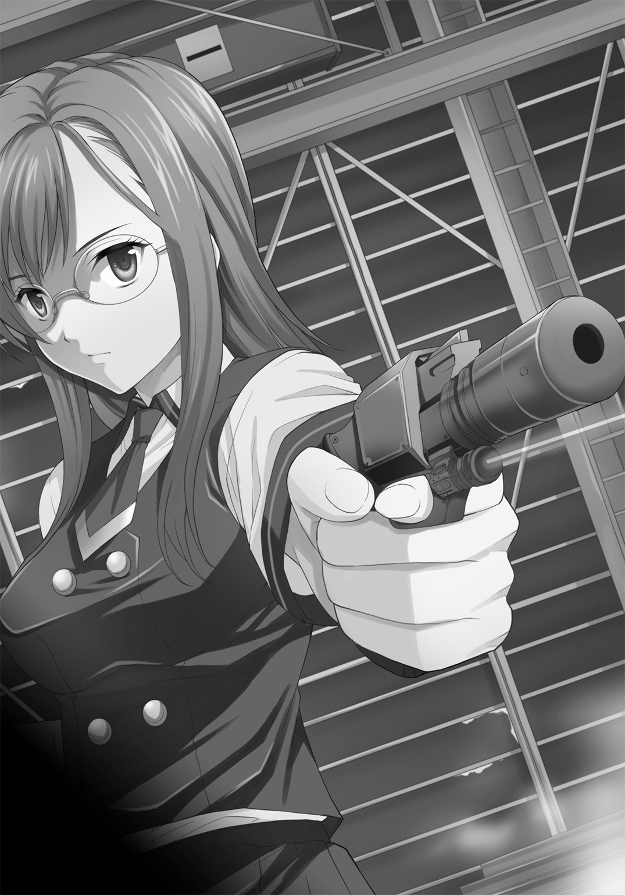
ひきつった笑みが、成江の顔に浮かんだ。
「な、ナンのつもり？ それ、オモチャの銃でしょ、せ、瀬底さん、あんたやっぱりオタクだったの？ い、いやねぇ。そんなもので脅して、なんの......」
すべてを言い終える前に、彼女は光点を移動させ、銃の引き金を絞った。
乾いた音を立て、少女の髪の毛がひと房散る。
引きつった笑いが凍り付く。
「くだらないお喋りはお断り」
「彼女」............瀬底泡瀬は教室での温厚そのものの穏やかさをかなぐり捨てて、肉食獣の冷徹さと、凶暴さをたたえた目で言った。
「内藤さんと綾川さんを登校拒否にさせて、水原さんを自殺未遂に追い込んで、沙汰内くんに、あんなひどいニセモノのラブレターを次々に送らせて笑いものにしてたのはあなた？」
「そ、それのナニが悪いのよ！ ゴスロリ勘違いちゃんに、オタ女に『電波君』でしょ？」
「彼女」の学年の「女王」であった少女は叫ぶ。
「それに、そいつらに何かしたのは私じゃない！ 私は言葉を口にしただけで、命令だってしてないわ！ 『そうなったら面白いわね』って言っただけで！」
「そうね、日本の法律にも、世界の法律にも違反してない」
さらにひと房、少女の髪の毛が散った。
亜音速に火薬を減らした銃弾はその背後に積まれたセメント袋に当たって煙をあげる。
「でも、私の法律には違反してるの......さ、バランスが取れたでしょう？」
泡瀬は冷たい笑みを浮かべる。
「あなたの、国会議員のお父様を後ろ盾にした横暴はもう腹に据えかねたの、女同士でも反吐が出るぐらい、我慢の限界」
「そ、そうよ、お父様は国会議員なのよ、一度は大臣も務めた......」
「そうね......政界ではそれなりの顔かもしれないけど、人である限り一発の弾丸で死ぬわ。知ってる？ ケネディ大統領を殺したのは、私が手にしているこの銃の弾丸より、ちょっと重い程度の弾なのよ......そして、日本の場合、死体が出ない限り、行方不明者はさして騒がれないわ」
「お、お父様が......」
「大丈夫、死体を消すのは難しいけど、私、慣れてるから。苛性ソーダって知ってる？ それが三〇リットル、廃品のバスタブがひとつ、あとは百円ショップでハンマーと大きいビニール袋をいくつか買ってくれば、あなたなんか文字通り、一昼夜でこの世から消えるの。溶かした後のソーダは下水に、骨はコンビニのゴミ箱にでも棄てればおしまいだし」
「なにが望みなのよぉおお！」
泣き叫ぶ少女に、泡瀬は冷たく、淡々とした声で告げた。
「簡単なことよ。ひとつ、学校ではおとなしくする、ふたつ、私の正体を話さない」
涙でぐしゃぐしゃになった顔で、成江はぽかんと口をあけて彼女を見つめた。
「あと、他の人があなたの真似をしたりしたら、ひとり見つける度にあなたの右の膝の皿を撃つ。何度でも、この銃で」
ふるえあがって成江はガクガクとうなずく。
「あなたを殺さないのは趣味じゃないから。でも、私があなたになにをしたかを口にしたり、お父様に泣きついたら、あなたを殺す。私の主義だから――――どんな護衛も無駄なのは、今日のことでわかってるわよね？」
泡瀬は、学校からショッピングに向かった成江の五人の護衛を、ほんの数分で全員無力化して拉致していた。
「わ、わかりました、わかりましたぁ！」
跪いてガクガクと頷く成江の姿は、学校の「女王」としての高慢さも威厳もなにもない、ただの十六歳の少女だ。
「判ればいいわ」
そう言って泡瀬は鞄に銃を収めつつ、くるりと成江に背を向けて歩き出した。
「わ......わかったわ」
しゃくりあげながら、成江が最後に毒づいた。
「あんた、沙汰内類が好きなんでしょう！ 好きだからこんなことするんだ！ この......イカレ女！」
泡瀬は成江に振り向いた。
「ちょっと違うわね。女生徒三人は図書館の常連で顔見知りだったの。でも確かにあなたの言うとおり」
泡瀬は冷たい、口元だけの笑顔を作った。
「私はイカレ女で、彼が好き――――だから、あなたを殺したい、でも我慢してるの。沙汰内くんはそういうの、嫌いだと思うから。大丈夫だと判ったら、すぐ殺すわ」
満面に笑みを浮かべる泡瀬に、今度こそ成江は血の気の完全に失せた白い顔で、愕然と口を開けた。
恐怖そのものをのぞき込んだ顔――――これまで、本物の暴力や死を間近で見たことがないのだろうと泡瀬は思った。
泡瀬は足取り軽く建設現場を後にした。
現場を囲む金属塀の入り口から出ると、ベリーショートをツンツンに立てた髪型の少女が、タンクトップとホットパンツに身を包んで待っていた。
「よくここがわかったわね、やっぱり『予感』がした？」
先ほどまでの凶気の仮面を外したように、疲れ切った表情で泡瀬は片手を上げた。
「まあね、走っていたらピン、ときたのよ」
泡瀬よりは小柄な一六〇センチの身長で、プロポーションはまるで少年のように細く、凹凸がない。それがまたラフな格好に似合っていた。
「言ってくれればアタシがやったのに。泡瀬がやることないよ、この程度のこと」
日に焼けた顔で、まるでガキ大将のようににかっと笑う少女の名は、カレン・西中。泡瀬と同じ「素性」の持ち主。
これでも泡瀬より二歳上だ。
彼女は車から飛行機までの操縦技術と装備の整備で泡瀬をサポートしてくれている。
訓練時代から妙に馬が合う親友といって差し支えない相手だ。
「言ってくれれば、あんな金持ちの小娘を脅すぐらい、アタシがやるのに」
「これは私の個人の問題で『暁』とは無関係だもの」
泡瀬は首を横に振った。
「プライベートに相棒を巻き込めないわ」
「えー？ 一度ああいう悪役みたいな脅迫、やってみたかったのになあ」
言いながら少女は停車していた真っ赤なＲＶ車の運転席に乗り込む。
泡瀬は助手席へ。
「............正直、脅迫行為は初めてだけど、なんかシンドイ。やっぱりテロリストって精神おかしいよね」
戦いは嫌いではない。
ややこしい権力だの国家の面子だののために働く彼女にとって、勝ち負けだけがある世界での戦いなら。
己のうちに存在する「ケダモノ」が解放されるぐらい激しい戦いであれば。
だが、陰惨ないじめの首謀者で人の屑とはいえ、千々裏成江は彼女に匹敵する戦闘力どころか、そもそも金と親の威光以外の武器は何も持たない弱者だ。
だから、「非常事態」故の行動とはいえ、気が重い。
鼻を鳴らしながら少女は制服の胸ポケットに収めていた眼鏡をかける。
度なしだが、彼女用に下半分だけ遠視用の読書眼鏡になっている代物だ。
「............でも、彼に関する限り、それもやむなしでしょ？ 愛よねえ」
笑いながらカレンはニッサン・エクストレイルのエンジンをかけた。
「............それは、否定しない」
赤くなりながら泡瀬は横を向いた。
彼女たちにとって一般人も含め、「恋愛」そのものが御法度だ。
「でもどうする？ ああいうタイプは折れてくれればいいけど、下手をすると前以上の凶暴さで襲いかかってくるわよ？」
「その時は戦って、またへし折ってやるわ。何度でもね」
「恋する乙女の心も、宗教と社会正義を求める心も突き詰めれば同じ純粋さなのよねえ......」
「............あなたって大人ね」
「二年ほどだけどね。年の功ってやつ？ でもまあ、良かったわ。今日は妙な胸騒ぎがするから、あんたが心配だったんだけど......」
笑い合う二人の少女の顔を、真っ赤な光が照らした。
「え？」
その方角を向いて位置を特定するころ、爆発音が轟いた。
「なにあれ？ 爆発？ 火事？」
「うちの学校の方角だわ！」
泡瀬もカレンも表情がこわばる中、それぞれの携帯と、車載無線にサイレン音のような非常コール音が響いた。
『「暁」各員に告げる、暁各員に告げる、本日二〇時三五分、時空震動感知、龍壱号案件発生、龍壱号案件発生。これは演習ではない、繰り返す、これは演習ではない』
「龍壱号案件？」
ふたりは同じ単語を同時に発して顔を見合わせた。
「まさか......そんな、対象は同じ場所に一〇年来なければ二度と現れないんじゃなかったの？」
「とにかく、急行しなくちゃ！」
カレンが思いっきりステアリングを切った。
タイヤに悲鳴を上げさせながら、エクストレイルは急カーブを曲がる。
☆
「えぐっ、えぐっ......」
千々裏成江はボロボロと泣いていた。
しゃがみ込んだ膝の周辺に黒い染みが広がっている。
最後の最後、思わず口を滑らせて、殺されると思ったとたん、失禁していた。
これまで、何不自由なく、美貌と財産に恵まれて生きてきた自分が、それら全てが何ひとつ役に立たない相手に、完膚無きまでにたたきのめされ、殺されると、無様に怯え泣きわめいた。
何よりも耐えがたいのは、最後の最後にこざかしい当てこすりを止められなかったということだ。
当てこすりは敗者が勝者にすることだ。
完全に、成江は泡瀬に負けていた。
あの時瀬底泡瀬の癇に障っていたら、今頃自分の身体は冷たくここに横たわっていた。
「殺してやる」
成江は呟いていた。
「殺してやるわよ、瀬底泡瀬」
ギリギリと奥歯が鳴る。
「お父様に叱られても構わない、あなたを殺してやる。女として生まれたことを最大限後悔させてから、殺してやるわ――――私を、一般人の分際で踏みにじってこんな屈辱を与えたんだもの、与えたんだもの、あなたには、死をもって償ってもらうわ......絶対、絶対に」
腹の底から溶岩をはき出すような声で、成江は己自身とこの空間に呪詛を刻む。
彼女は一切の反省をしていなかった。
「教えてあげるわ、世の中には人を踏みにじる権利がある人間がいるってことを。そんな人間を怒らせたらどうなるかってことを！」
そして、爆発音が響いた。
「............」
数千万分の一の偶然か、それとも必然か。
天空の彼方から、彼女の前に何かが降ってきた。
それはビルの屋上の作業場の床板をぶち抜き、派手な音を立てながら複雑に渡された鉄骨の間を綺麗に通り抜けて、一番下に積まれたセメント袋の山に直撃した。
「............？」
成江は、ふらふらと立ち上がり、その「落下物」に近づく。
初夏の夜風がコンクリの煙をゆっくりと吹き流し、それは崩れ、粉砕されたセメント袋の山の中に鎮座していた。
煙が完全に晴れた夜の建築現場で、成江は「落下物」と目があった。
☆
ほぼ同時刻、シャイアンマウンテン地下で少年は歓喜の声を上げた。
「全て完璧だ！ 完璧に終わった！ 二分ジャストだ！」
だが、手術台の上、少年の隣に横たわる女性はピクリともしない。
部屋の壁にも装置にも血が飛び散り、切断のさいに出たピンク色や象牙色の屑があちこちに付着している。
頭の縫合跡も生々しい少年は、そのままひょいと手術台から飛び降りた。
数十秒前に終わった手術の内容からすれば信じられない行為だが、少年の頭蓋骨はズレもしなければ、少年が白目を剝いて倒れることもなかった。
自分の手首を軽く握り、一分間脈拍を測る。
「脈拍は安定、心臓は動いている。僕の身体も、脳も安定状態だ！ これでいい、これで！ これで『神』に戦いが挑める！ 我らがアメリカ合衆国に栄光あれ！」
少年の声はうわずっていた。
「さぁ、これで計画を本格的に進められる！ 我らが『シルバニオン』よ！」
豊満な胸を揺らしながら、少年の隣の手術台から、絶世の美女はゆっくりと降り立った。
くびれた腰と、絞り出される乳房を強調するデザインのボディスーツとハイヒールが、血に汚れた床の上で、信じられぬほどメタリックな輝きを見せる。
「我ら『神』を殺し、宇宙の頂点に君臨せん！」
そう言って、少年は天井にあるテレビカメラに頷いた。
ドアが開き、今度は勲章の略章を山ほど付けた軍服姿の男女が入ってきた。
だれも部屋の状態に動じることはない。
彼ら、彼女らの全てが一度ならずこれ以上の陰惨な場所に足を踏み入れたことがある証拠であった。
「プルキム君」
中でも一番背丈が高く、威厳に満ちた軍服の老人が敬礼しながら尋ねた。
「君のプロジェクトはスタートしたかね」
「はい、将軍閣下、皆さん。プルキム・メルキオール・バニオン、本日ただいま、無事、『シルバニオン』計画を開始いたしました！」
少年と美女は、何百回も練習したかのように、同じタイミングでぴしっと陸軍式の敬礼を行い、軍人たちは笑いもせず、怒りもせず、大まじめな表情のまま、敬礼でこれを迎えた。
「人類を脅かす異星人をこれで殲滅出来ます！ お任せください！」
装置のガラスのシリンダーの中に浮いていた脳は、消えていた。
☆
西暦二〇一八年・六月半ば・埼玉県朝ヶ市。
「............さすがにあれから三日目ともなると、ヘリも減ってきたなあ」
そんなことを言いながら、沙汰内類は五月の空を見上げた。
各新聞社のヘリは減ったが、まだテレビ関係のヘリはあちこちに飛んでいる。
どうやら学校の爆発は建築時のガス管の配置ミスが引き起こしたもの、とされていた。
時の流れの調停者「イコライザー」であるパスウィダー――――パーシィの言うとおり、あの事件の一〇分前から学校が燃え上がったあたりまでの、全ての監視カメラ映像、音声、携帯画像にタグルたちの姿は映っていなかった。
とはいえ、学校が一つ、消防車が駆けつけてくるまでの僅か数分間で鉄骨すら溶け落ちる高温火災に見舞われたという事実は、やはりマスコミにとって「画」になる不可思議な事件として扱われている。
当然ながら学校は休校。生徒たちは一週間の自宅待機だ。
これからどうなるかは不明だが、恐らく事故調査もあって年内の学校再開はなく、生徒たちはそれぞれ、近い公立高校に分散されるという話がもうマスコミから流れていた。
「転校はしたくないなぁ」
ぽけっとそんなことを呟いていると、タグルは目的地に着いていた。
タグルの住むマンションの近くにある路地。
そこに昨日、いきなり出現した小さな店である。
幅二メートル弱の路地ギリギリに建っている店は西洋棺桶の蓋のような六角形のドアがついていて、上の金属プレートには柔らかい字体で「ろすてぃに屋」と彫られている。
率直に言って、パーシィにネーミングセンスはあまりないらしい。
「パーシィ、コーヒーとドーナツ持ってきたよー」
「あ、大分店内は出来上がってるんだね」
あっさりドアを開けて中に入るとタグルは周囲を見回した。
構造自体は路地にあわせて細長い、いわゆる「ウナギの寝床」的な形になっているが、よく観察すると店の幅は路地よりも左右に一メートルほど広い。
そこに腰までの高さでショーケースが並び、裏側で忙しくコートと帽子を脱いだパーシィが腕まくりして商品を並べていた。
どれも奇妙なデザインのアクセサリーや小物ばかりである。
「ああ、タグルか、ちょうどドーナッツに飢えていたころだ......感謝する。この礼は必ず」
「じゃあ、宇宙か、それとも過去の世界に連れていってよ」
「......そんなのでいいのか？」
「お金で返されても仕方ないしね」
ショーケースの上に、ドーナツとコーヒーの入った紙袋を置いて、タグルが言うと、
「修理に時間が掛かるからすぐの時間旅行は難しいが、近いうちに並行世界ならいけるようになる」
「並行世界？」
「まあ、何と言うか、鏡に映った、この世界とは少しズレた世界さ。こことはよく似てるけれど、違う。たとえば、君が女の子だったりするんだ」
「パーシィも別の姿でいたりするの？」
「いや......私はどういうわけか並行世界の自分を見たことがない」
何故かパーシィは視線をそらした。
「ふぅん......でも、うん、そういうのでもいいや」
「あんなにおっかない目にあったのに、どうして私にここまで親切にしてくれる？」
「まあ、その......」
と応えようとして少年はパーシィに出会う前に、夕暮れの街に現れた少女のことを訊いてみようと思った。
「あのさ......」
頭の中であの時の風景が浮かぶ。
赤い夕日、人気のない街角、懐かしそうな少女の目。
〈......の、......しいタグル〉
あれはなんと言ったのか。
（えーともの凄く大事なことを......）
と意識のピンセットを記憶の中に下ろそうとして、タグルは我に返った。
（あれ？ 何のことを訊こうとしてたんだっけ？）
気がつくと、さっきまで何かを訊こうと思っていた、という事実以外のことがすっかりタグルの脳裏から抜け落ちていた。
「あ......えーと、その......」
何かを言いかけたまま、少年はしどろもどろになって、話題を変えることにした。
「しかし、は、話は変わるけど、よくこんなに商品があるねえ」
「まあ、あちこちの時代や星を旅していると、気がつけば溜まっているもんでな」
とパーシィは追及はせず、あっさりと言いながらいそいそとドーナツの詰まった紙袋を開けた。
「でも、こんな安値でいいの？ このアクセサリーとか本当は一〇倍ぐらいしそうだけど」
水晶で出来た鎖に、よく見ると中でゆっくりと赤い渦が回転している宝石がいくつも繫がれたものに「一五〇〇円」の値札がついているのを見て、タグル。
「ああ、それはアンリキシャの交易商人から情報の見返りに買わされたものだ。本物なら君の言うさらに千倍はするが、全部盗難対策用のダミー、ニセモノだからそれでいい......第一、あと五〇〇個ぐらい奥にある。六角形の赤いダンボール箱は全部それだ」
タグルの示す商品にちらりと目をやった後、パーシィは紙袋の中からひとつひとつドーナツを取り出し、宝石を鑑定するように矯めつ眇めつしては、また一個一個丁寧に袋の中に戻す。
彼女にとって、アクセサリーよりもドーナツのほうが遙かに価値があるのは明白だった。
「へえ............」
タグルはあまりアクセサリーなどに興味はないが、それでもアルバイト先の店長がこの手のものが好きでよく見せびらかすから、それなりにいいものと悪いものの区別はつく。
そういう意味でパーシィの「商品」はかなりの「掘り出し物」ばかりであった。
「これは？ 何かの置物？」
タグルはふと、ショーケースの上に置かれた物に興味を惹かれた。
浮き彫りで唐草模様のようなものとどこかの言語らしいものがびっしりと刻まれた、分厚い三角形の金属の中央に、丸いレンズのような物が塡まってゆっくりと光ったり消えたりを繰り返している。
「いや、それは片付けるものだ。ゴルラム４の娯楽遊具で、床に置いて、このレンズを押してから上に乗っかると............」
ふわり、とパーシィの身体が浮いた。
「元々は宇宙船が隕石にぶつかったりするのを防ぐための慣性消去型停止装置や反発重力装置の技術応用だな。こういうハンモックというか、揺り椅子の代わりにもなる」
そのまま一メートルほど浮かび上がり、パーシィが身体を丸めると、なるほど見えないハンモックに揺られたようになる。
「うわ......」
「素敵な遊具で、子供を遊ばせるには最適だが、オーバーテクノロジーだからな。あと操作を間違えると大人数名を天井に張り付けてびくともさせないような反重力を発生させて危険だ。まだ技術が完全に枯れた物になる直前の商品だから、故障を起こすと、乗っている船が亜空間ジャンプのさい、絶対停止の方向に誤作動する」
「絶対停止？」
「正確には慣性の瞬間消去と絶対固定だ。移動していく物体の中にいようが上にいようが、その瞬間からの地点から動かなくなる............つまり宇宙船から、誤作動した場所に取り残されてしまうんだ」
「なるほど。そりゃこの辺じゃ売れないね」
「絶対停止の状態を長時間維持できれば宇宙で動かない目印になって便利だぞ。実際宇宙灯台はそうして作られてるし――――まあ当時は面白いからいくつか買って、寝返りを打ちながら空中を移動する睡眠を体験して大変楽しかったんだが、一度その故障のせいで『ロスティニア』に置いていかれそうになったんで使うのを止めて、壊れたやつは棄てた......これは別の機会に売ることにするよ」
パーシィが光の範囲から手を下に伸ばし、機械の側面に触れると光は消えた。
「でも意外だよ。てっきり何もしないでのんびり過ごすもんだと思ってた......ひょっとして、お金ないの？」
「硬貨や紙幣はないが金ならあるぞ」
そう言ってパーシィは壁に掛けていたコートの内ポケットから無造作に大きな麻袋を取り出し、中身をショーケースの上にあけた。
「これ......金貨？」
「ああ。この星のものではないが、二四金というやつだ。よその惑星ではともかく、地球ではどの時代に行っても通用するから一応持ってる。もっと小さいただの塊のやつや、日本の小判形のも含めると常に五トンくらいはあるかな。修理にも使うからロスティニアで合成も出来る」
「じゃあ、お店なんかやらなくても......」
「王侯貴族のように贅沢がしたいわけじゃない。人間は働いて休むものだ。休み続けるだけの日々は色々おかしくなる」
「なるほど――――そういえばお祖母ちゃんもそんなこと言ってたなあ」
タグルの目が懐かしそうに細められる。
「ほう、君の祖母も店舗を経営してるのか」
「うん。千葉で模型屋さんをずーっとやってる。『人間、身体が動ける間は動かないと腐る』ってよく言ってるよ」
「なるほど君のお祖母様は哲学者だな......うん、やっぱりここのドーナッツは美味しい！」
タグルの祖母の言葉に共感したのか、それともほおばったドーナツの美味さからなのか、パーシィは子供のような笑顔を浮かべた。
「本当にドーナツ好きだねえ」
「ああ、ドーナッツと『ドクター・フー』は地球の生み出した最良のもののツートップだ！ まったくアメリカという国は、法律で規制しないと食べ物にすぐペンキを入れたり薬品を入れて水増ししたりするようなことを平然とやるが、ドーナッツに穴を開けたことと、アイスクリーム製造装置を作ったことだけは評価に値するよ！」
「............本当に好きなんだねえ」
「ああ。どちらも心が折れそうなときには支えてくれるし、新しいものは常に良いという点でも共通だな......いや、『ドクター・フー』はもっとすばらしいぞ。歴史の勉強のとっかかりにもなるし、イギリス人の抑えたユーモアの良質な部分が凝縮されていてだな......」
それから長々と話し始めるパーシィの唇に、何となくタグルは目の焦点を合わせた。
健康的なピンク色の唇。
つい三日前、あれが自分のものと重なったのだ。
あれは外国人にはありがちな「励ましのキス」で好意以上のものはないと判っていても、やっぱりドキドキしてしまう。
「どうした？ タグル？」
キョトンとパーシイが尋ねる。
「あ、いや、何でもない」
にやっとパーシィが意地悪な笑みを浮かべた。
「ドーナッツのお礼にもう一度、キス、してみるかね？」
唇が妖しく、つややかに輝いて見えた。
「あ、いやあのそのいやいやあえあの、えーと、そ、そういうのじゃない！ そういうのじゃないから！」
慌てて手を振り、タグルは思いっきり否定する。
「と、といりあえあり、じゃなかった、とりあえず、何手伝えばいいの？」
「ああ、そうだな......奥の方に積んである木箱を店まで運んでくれ。そんなに重くないが、腰は用心するようにな」
「わ、判った！」
大慌てで奥のドアの向こうへ駆けていく少年の姿を、パーシィは余裕の笑みで見送った。
「......全く、タグルは可愛いなあ」
クスクスと笑う。
『何で年上の女性が少年を見守る時のような余裕の笑みをかましてやがるんですか、姫様』
と「ロスティニア」の人工知能が冷たい声でツッコミを入れてきた。
「なんだ、修理が終わったのか？」
『いえ、大まかな修理スケジュール予想が成立しました。幸い〈をやかた〉のおかげで大分短縮できそうですが、それでも通常移動と次元移動には二週間、時間移動まで含めるとさらに二、三週間かかります』
「一カ月か......」
パーシィは複雑な表情になった。三カ月と当初言われていたのでこの店を作ったが、どうやら無駄になりそうだという理由もある。
『なにぶん、冷却システムも損傷しているのが大きいのです、次元砲なんか使うから』
「五月蠅い」
口をへの字に曲げてパーシィは腕組みをした。
『細かいご報告は〈をやかた〉からお聞きください』
パーシィの足下の床が四〇センチ四方でぱかりと開き、中から貫頭衣のフードを目深に被った、身長四、五〇センチほどの二頭身の人物がひょこりと顔を出した。
「おお、〈をやかた〉。久しいなあ」
にっこり笑うパーシィに、貫頭衣の人物............〈をやかた〉は丁寧に頭を下げた。
頭を上げたフードの奥に、大福のようなのてっとした、口のない下ぶくれな顔と、大きな丸い目がふたつ、そしてあるのかないのか判らない首もとに小さな鈴が光って見えた。
額には消えかけたマジックの文字で「６」と記されているらしいのが判る。
「技術的な問題などで、私が手伝うところはあるか？」
〈をやかた〉は貫頭衣の袖から、ミトンを塡めたような手を振ると、どこからともなくプラカードを取り出した。
プラカードには子供が書いたような文字で「ではてみじかに」と記されている。
☆
タグルが木箱を運び始めた頃、二キロほど北にある小さなマンションの一室。
泡瀬とカレンは三日間、何もつかめないままに、気の重い報告を電話で済ませた。
「龍壱号案件」の対象がこの街にいるかもしれない以上、東京の本部に出頭することはできないからだ。
とはいえ、情報と呼べるものはほとんどない。
せいぜい、半年前と事件当日、奇妙なメッセージをメモとパソコン画面で受け取って、気味が悪くなって言われるまま巡回に出ていたことから間一髪、惨事に巻き込まれなかった、学校の警備員の、
「少女のような集団が殺し合いをしていたように見えた」
というあやふやな証言があるだけである。
てっきり叱責を覚悟していたが、彼女たちの上司は「まあ、仕方ないことだ」と諦めの溜息をついた。
「？」
『対象は滅多に証拠を残さない。それこそ隠しようのない大災害の最中現れた場合を除いて、対象は意図した相手と同じ写真に写ったり、映像に収まることはあっても、第三者記録を残すことは滅多にない』
秘匿回線で、スピーカー通話なので、ふたりともそろって上司の言葉を聞いていたから、泡瀬とカレンは顔を見合わせた。
『私も若い頃に二度、対象の事件に遭遇したが、対象の足跡ひとつ見つけられなかった............だからといって深追いすると、行方不明になる場合が多い。君たちも、くれぐれも対象とは距離を置いて慎重に対応するように「暁」の人員に余裕はないからな』
「あ、はい！」
ふたりはそろって答え、その後二、三の事務的通達があったあと、通話は終了した。
「なんか、閑職に飛ばされたと思ってたら、えらい最前線に来ちゃった感じね」
泡瀬は溜息をついた。
「まったくねー。よもや龍壱号案件なんて、あたしたちの世代で現れるなんて思わなかったわよ、ホント」
ところで、泡瀬サン、とカレンはニヤニヤ笑いながら泡瀬の肩に手を置いた。
「何よ？」
「えーと、これから過酷な戦場に赴くかもしれんわけですがー、どーよ、彼への告白は？」
「ど、どうしてそういう話になるの！」
顔を真っ赤に染めながら泡瀬。
「ほら、未練が残ると判断力が鈍って、却って死にやすくなるじゃなぁい？」
幼稚園児が大人をからかうように、カレンは後ろ手で身体をくねくねさせながら下から泡瀬の顔をのぞき込む。
「告白、してきたら？」
「お、おお、大きなおさわよ！」
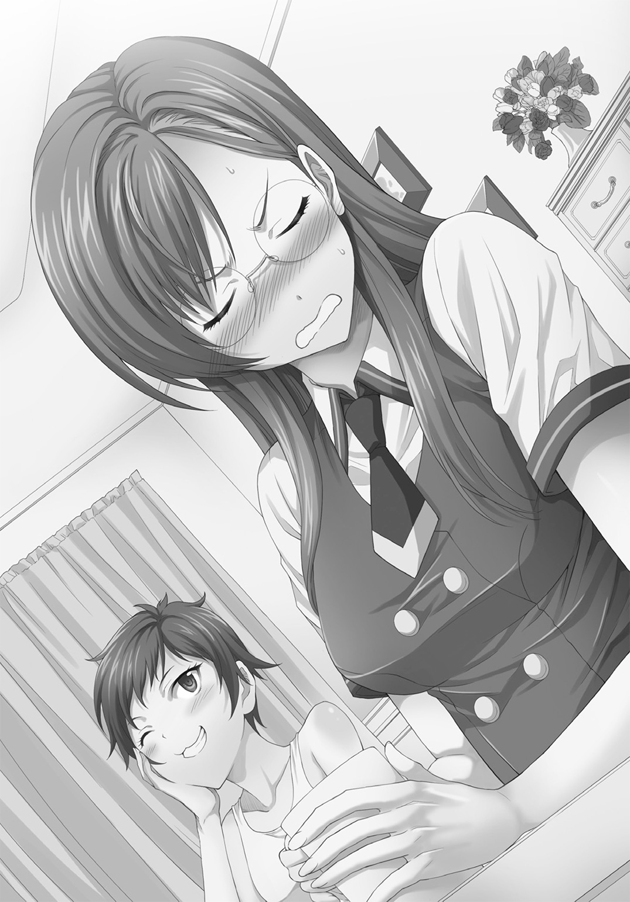
「おさわ？」
「お世話よ！ 舌がもつれたの！」
「あのさー、命短し恋せよ乙女、っていうでしょ？ さっさとタグルくんに告白して、自分の気持ちにケリつけてきたら？ 場合によってはアタシたち、また部署異動するかもしれないわけだし」
そう言われて、泡瀬ははっとした表情になる。
「そ、そうね......そういえば、龍壱号案件の対象は、二度出たら三度は出ない、っていわれてるんだっけ」
「この朝ヶ市は一度出たからアタシたちが監視者として送り込まれたけど、二度目が起こった以上、もう上はここにアタシたちを置いておく理由はないわけだし」
「............」
「まあ、ささっと告白して、ささっと付き合って、ささっと涙の別れをしたらいいのよ。どうせ後腐れがないってことになれば、本部だってお目こぼししてくれるわ、きっと」
「最初から悲恋前提で言わないで！」
「仕方ないじゃない。アタシたち『暁』の人間なんだから」
「............」
思わず泡瀬はうつむいた。
「............わかった、やってみる」
「それがいいよ、うん」
腰に手をあてて、カレンはにっかり笑う。
「それがいいよ、ホント」
☆
千々裏成江はその日のうちに「落下物」を自分の部屋に持ち込むと、翌日には電話による発注と即日配達でパソコンやモニタ、複数台の高級３Ｄプリンタなど大量の電子機器や電化製品を注文し、届いた荷物を「落下物」の周辺に積み上げた。
彼女の護衛たちは成江に「何があったかは極秘に」ということで自分たちが瀬底泡瀬に手もなく気絶させられたことに口をつぐみ、彼女の指図のままに行動した。
そして三日目の朝、「落下物」は彼女の部屋一杯に広がっていた。
四〇畳ほどもある絨毯の床にも、高い天井にもケーブルと金属フレームが広がり、シャンデリアの電源を取り込み、変形したプラスティックが木の根のようにのたうつ。
それを成江はうっとりと眺めていた。
「素敵。もうこんなに再生したのね」
「チヂウラ・ナリエに感謝すル」
ところどころおかしなイントネーションで「落下物」は答えた。
「こ、テイする。我々の、サイ、セイ能力は今現在フル稼働である。あと十二時、間あれば、戦、闘、可、能とな、る」
「あなたの望みは叶えてあげる。もっと機材を持ってきてあげるわ。その代わり昨日言った通り、私の望みを叶えて」
「リョウ・カいスル」
野太い男の声と少女の声が混じる中「落下物」の顔に掛かる焼け焦げた銀の髪が再生されて伸びつつ、その中のひと房が赤く染まっていった。
☆
瀬底泡瀬は、沙汰内類の住所を、二カ月ほど前から知っている。
実を言えば、例の「電波君」騒動を見たとき、泡瀬にはそれが何を意味するのか理解出来た。
彼女の家系には同じ現象を体験した者が多い。
ある日、目を開けたまま、「未来」を見るどころかその中にいるように感じて大騒ぎになるのだ。
有名な陰陽師、安倍晴明の家系に連なる一族は、泡瀬も含めて特殊な能力を持つのが当然で、中でも「予見」はかなりの数に及ぶ。
だから、タグルの身に起こったことが「予見」の一種だと判った............が、それを口にするわけにはいかない。
高校とはいえ、彼女の通う学校の雰囲気は、上流階級の中でも素行が悪く、東京の学校には通わせられない生徒が多いのと、少子化によって一度は廃校になったものが、人口の流動による再開校を行ったため、上級生がいないということもあってか、荒んだ中学の雰囲気を引きずっていて、タグルのことは瞬く間に陰湿なからかいの対象になった。
が、タグルはそれに「耐えて」いるのではなく「受け流して」いるように見えた。
泡瀬にはそこが不思議でならなかった。
過去を調べてみると、自衛官である父の都合で、何度も転校を繰り返しているとわかり、理解した。
この少年は人のつながりが、極論すれば一時的なものでしかなく、あっさり消えたりするのだと知っている。
そして、それを惜しむ心があるのだと。
彼女自身もこれまでの経験で親子の縁や情愛からは遠くなってしまった。
何しろ宮内省陰陽課傘下となれば、オカルトがらみの事件に子供の頃から足を突っ込む羽目になる。
特に「力」を欲する者が傾倒するオカルティックな道具や儀式に絡む事件ともなれば、優しさだの思いやりだのは容易く人の心から剝がれ落ち、ザラザラの欲望や利己心がむき出しになるのがこの関係の事件にはつきものの風景でもあった。
泡瀬自身も、修行や訓練で、自分の中にある柔らかいものが削り取られて、無機質な戦闘兵器になっていくのを感じることが多々あった。
誰もがそういうものなのだろう、と思う。戦闘で己のも含めた血にまみれて体験する泡瀬のような少女もいれば、沙汰内タグルのように学校内の人間関係で体験する者もいる、という程度で。
だから、この学校の中で、自分とタグルは同じものを見ている数少ない仲間だ。
学校や社会、常識や良識というもので作られた絶対的に見える世界が、実は薄紙一枚の書き割りだという真実を。
事実を彼に告げたら、少しは痛みは楽になるだろうか、とあり得ないことを考えるようになったのはそのころからだ。
やがて三駅ほど離れた街へアルバイトに通っているとか、例の騒動のおかげで、父母の仲がぎくしゃくしているという事実も。
ある日、彼女はタグルと図書館でばったり会った。
泡瀬自身、実際に本は好きだった。本は手軽だし電源も要らない。
情報収集の手段として、どこへ持っていくにせよ、目くじらを立てられる心配もない。
なによりも、それ以上に戦闘を重ねるごとに身の内にある「ケダモノ」の割合が大きくなる自分の、人間らしさの維持として必要だった。
だから図書委員になり、それなりに真面目にこなしている。
そこに、ふらりとタグルが入ってきた。
適当に小説を数冊見繕って泡瀬のいる貸し出しカウンターにやってきた。
少々動揺したが、努めて表情を出さないように、てきぱきと作業を終え、本を手渡した。
「ありがとう」
にっこりとタグルが笑った。
笑顔には媚びたところも、ひねたところもない。
学校での経験はこの少年の心の根を歪めていなかった。
見かけよりも、強い心なのだ、と、泡瀬は理解した。
その瞬間、泡瀬は自分が恋に落ちていることに気がついたのだ。
――――そして、現在。
泡瀬は、タグルの住むマンションの玄関先に並ぶ郵便箱の前に立っていた。
私服で来ようかと思ったが、何故か気がつくと制服に着替えていた――――やはりクラスメイトの瀬底泡瀬として彼と付き合いたいという願望が彼女にその選択をさせていた。
彼の部屋番号もとっくに判っている。
我ながら彼に手紙で告白するというのは馬鹿だと思った。
最大の問題は、これまでタグルにはこの手の悪戯や嫌がらせが山のようにあった、ということで。
だから文面は色々考えたあげく、何十枚もの便箋を無駄にして何とか書き上げた。
（――――どうか、誤解されませんように）
祈りながら、泡瀬はその手紙を投函すると、風のように走り去った。
☆
パーシィは、この前の事件のあった夜、タグルの家でシチューをごちそうになった。
その際、妙にタグルの母親に気に入られ（タグル曰く『母さんは宝塚マニアだから、パーシィみたいなタイプは好みなんだと思う』）、連日夕食を厄介になっている。
旅人に、余計な遠慮はないものだ。受けた恩はちゃんとあとで返せばいい、と思っているからパーシィとしては後ろめたさもない。
タグルを先に帰した後、身なりを整え、「ロスティニア」の倉庫から引っ張り出した、パリトシリン星系産のワインを土産にマンションにやってくると、郵便ボックスの前から走り去る眼鏡の少女を見かけた。
「タグルの学校の制服か......？」
三日も前に休校になった学校の制服を何故女生徒が着用してタグルの家のも入っている郵便箱の列の前にいたのか。
何となく引っかかって、パーシィは「蒸気精霊杖」を取り出し、光らせた。
「杖」を持ち、片眼鏡型のディスプレイでなければ読み取れない微かな彼女の生体反応の移動痕跡を追うと、タグルの家の番号が付いたボックスに手を入れた形跡がある。
「............」
さらに杖を光らせ、ダイヤル式の鍵が独りでに回転し、解錠の音。
パーシィは迷わず郵便箱の蓋を開けた。
郵便物はひとつ。
ふたたび迷わず、「蒸気精霊杖」の力で封筒の糊を一時的に無効にして封を開ける。
中には丁寧に折りたたまれた二枚の便箋、一枚は儀礼に則ってちゃんと白紙だった。
そこには「好きです、本当です。お話がしたいです。朝ヶ公園まで来てください。私は七時から待っています。瀬底泡瀬」とあり、裏返すと携帯電話の番号が記されている。
「......何という悪辣な」
パーシィは眉をつり上げた――――彼女の頭の中には三日前、寂しげな笑顔を浮かべて封筒をたたみ直した少年の横顔が浮かんでいる。
今回も「そういうこと」なのかもしれない。いや、わざわざ学校の制服を着用しているというのが怪しかった。
「ひとつ罠をしかけてがっかりさせ、さらにまた希望があるとロープを垂らして這い上がってきたところをぶん殴るということか、許せん！」
何故か頰が赤くなっているのに、当人は気づいていない。
そのまま丁寧に封を戻し、郵便箱の蓋を閉じて杖を光らせ、痕跡を消す。
コートの内ポケットから、「今日は遅れる、ワインはお母様に」と書いたメモとワインの瓶を入れた。
旅人として必要なもののひとつに、義俠心がある。
少なくともパーシィはそう考える。そうでなければイコライザーなど出来ない。
だからそのまま杖を持って、パーシィは郵便物を投げ込んだ少女を追跡すべく、靴音高く走り始めた――――ちなみに、七時まであと三〇分弱。
☆
約束の時間になってもパーシィが来ないのは珍しい。
といっても出会って三日も経過してないのだが。
とりあえずタグルは気になって下に降りた。何気なく、郵便ポストを見る。
「？」
ダイヤル式の鍵を開け、中にあったワインの瓶とメモ、そして封筒を引っ張り出した。
「......？」
パーシィのメモを見て首をひねり、封筒を開けて中を見る。
「............」
行くべきか行かざるべきか。
普通に考えれば閉校されてバラバラになるから、出した相手がタグルが来なかったことで責められるという事態は考えづらい。
ただ、今回の相手は瀬底泡瀬で、彼女のものらしい携帯電話の番号まであるのがこれまでと違っていた。
三〇秒ほど首をひねって、タグルはパーシィのメモと封筒をジーンズのポケットにしまい、スマートフォンを取り出した。
どうにも嫌な予感がしている。
「あー、お母さん？ パーシィちょっと遅れるって。郵便箱にワインの瓶入れとくから取りに来て、僕もちょっと出かける」
言って、一旦スマートフォンを耳から離し、時間を確認する。
「七時半には帰るよ、ごめんちょっと急ぐ......うん」
七時まであと二分。
☆
「チヂハラ・ナリエ」
のたうつような配線コードで埋め尽くされた自室で、うつぶせになって眠っていた成江は、「落下物」の声に起こされた。
「申告する・修復は不十分であるが、お前と我らの望みを同時に達せられる可能性が高まった」
「どういうこと？」
「説明する。我々の標的が一箇所に集まる。だが私の身体の再生はまだ不十分である。攻撃力も足りない。私を大型機械のある場所へ連れていけ」
「落下物」の声はいつの間にか金属音めいた響きのする少女のものに変わっていた。
「わかったわ」
満面の笑みで、成江は頷いた。
「さあ、私に抱きついて」
そう言って少女は両手を広げると「落下物」を愛しい妹のように抱きしめた。
ようやく上半身を再生し終えた「落下物」は姉にしがみつく妹のように抱きかかえられる。
成江の瞳孔は完全に開いており、その奥で、ナノマシンの放つ怪しい輝きが、「落下物」と同じ形、同じタイミングで瞬いているが、当人は知らない。
☆
投函して、そのまま普通に歩み去ろうと思っていたのに、気がついたら走り出し、走り出したら今度は身体が勝手に動いて、近くのビルの路地裏に置いてあるゴミ箱をジャンプ台代わりに、そしてエアコンの室外機をその次の足場代わりにし、さらに雨樋を僅かな間ロープ代わりにして、泡瀬はビルの屋上から屋上へと走っていた。
耳まで真っ赤になって、心臓が運動とは別の意味でドキドキしているのが判る。
そんな状態なので、彼女の警戒心は薄れていた。
泡瀬が追跡者に気づいたのはマンションの前を後にしてからしばらくしてのことだ。
ようやく冷静になってきて、投函した手紙の文面がまるでストーカーのようにも取れるものだと頭の中が後悔で一杯になって、それを頭を振って払いのけた途端に気づいた。
「？」
最初、タグルに見つかったのかと思ったが、彼女は走り出すと同時にパルクールの要領でビルの屋上を次々飛び越えている。
一般人のタグルが追いかけてこられるはずはない。
「誰？」
相手の気配はドンドン近づいてきて、直感が「危険だ」と囁いた。
直感に逆らうほど、彼女は愚かではない。だから速度を上げ、ビルから飛び降りた。
腕時計型のフックランチャーを使い、古いビルの看板の支え部分に竜頭部分を絡めて落下速度を落とすと同時に落ちる方向を真下に変えて、途中の階の窓の庇の上に着地する。
手首をひねると、同一方向の単結晶構造をもつ糸はあっさり切れ、予備の竜頭が時計内から押し出されて再装塡。
上を見ると、長身の影が、彼女と同じ庇の上に舞い降りるところだった。
「！」
黒革のロングコート、メダルの塡まった、テンガロンハットのようにつばの広い中折れ帽。
単眼鏡、アジア人にはほぼ皆無の、深い青が集まった長い黒髪。理知的な顔立ち。
全てに見覚えがあった――――ただし、紙資料で、だ。
（龍壱号案件！）
驚愕する頭の中とは別に、身体は危険回避を選択する。
☆
彼女の父の顔が利く建築機材レンタル会社の倉庫へ、成江は「落下物」を持っていった。
数十分で「落下物」は機能を再生する。
油圧ピストンとそれを動かす電動モーターの音、そして倉庫内を照らすサーチライトの輝きの彼方から、「落下物」は彼女に声をかけた。
「申告する。私は再生を完了した。これよりお前と私の共通の目的に対して行動を開始する」
「あなたのもう一つの目的はいいの？」
「肯定する。それは問題ない、すでに終了している」
「落下物」はそう答え、大きな瞳の中にリング状に周回する光を灯した。
「個体名チヂウラ・ナリエ、さあ、私の後ろに乗れ。お前には見届ける権利がある」
「ええ、喜んでおつきあいするわ」
口元に今までにない三日月のような笑みを浮かべて成江は頷いた。
☆
相手が僅かに曲げた足を伸ばすまでの間に、泡瀬はくるりと側転するように庇を乗り越え、さらに同じ要領で横に反転して足から二階下の庇の上に降り、そこから一気に飛び降り、向かいのビルの壁を蹴って落下速度を落として地面の上へ。
「なんで？」
着地したとき、ようやく肉体が反応して声が出た。
「どうして龍壱号がこんなところにいるのよ？」
同時に携帯が鳴り、泡瀬は耳に入れた Bluetooth カムを軽く人差し指で叩いて応答した。
『泡瀬、あんた、一体どうして龍壱号に追われてるのよ？』
街中の監視カメラに顔認識システムを連動させて市内を監視していたカレンの声は、うわずっていた。
「知らないわよ！ 私はあなたが言うから決意して、彼に告白するための手紙を出しに行って、気がついたら後ろにいたの！」
『えーと、彼女の顔を見てると、怒ってるみたい――――どうも厄介なことになっているような気配が濃厚なんだけど？』
「知らないわよ！」
カレンを怒鳴りつけ、今はそれどころではないと考えを改める。
「ああ、ごめんなさい。わからないけど............ど、どうしたらいいの？」
『道ばたで拾った宝くじで一等が当たった、っていうより、犬が歩いていたら棒に当たるどころかタンクローリーが突っ込んできたみたいな話で、アタシもわかんないわよ！』
「ほ、本部の対象発見時の指示って捕獲だっけ？ 観察？ 通報？」
駅前の帰宅ラッシュの人の群れの中を駆け抜けながら泡瀬が悲鳴に近い声をあげる。
『と、とりあえず本部に通報する、泡瀬、頑張って凌いで！』
「りょ、了解！」
気がつけば、自分がタグルと待ち合わせている公園に向かっているのに泡瀬は気づいた。
泡瀬が最後の角を曲がると、長身の影が改装工事が終わったばかりの公園の入り口の門の上、彼女を見下ろすように立っていた。
呆然としている泡瀬の前に、龍壱号案件、ことパーシィはひらりと舞い降りてきた。
「キミが、タグルのマンションに手紙を投函した人間だな？」
パーシィは腰に手を当て、ぐいっと少女の顔をのぞき込む。
「断っておく、タグルはいいやつだ。少なくとも私が知り合った最良の人間のひとりにめでたくランクインするぐらいにいいやつだ。キミはなぜ、そんな彼をおとしめる！」
パーシィは怒りがあちこちから吹き出すような声でさらに詰め寄った。
「彼は善人で、限りなく自分に対する災難に対して心が広い。怨嗟や憎悪という概念がないんじゃないかと思うぐらいだ。それを傷つけるのがそんなに楽しいのか？」
「いや、あの、その......」
「見ればキミはかなりの学識と常識を持ち、聡明そうに見える。ついでに言えばおとなしい文化系に見えて身体も鍛えているのがわかるが、それを表に出さないのは奥ゆかしい性格だからだろうと思う。ならばなぜ、タグルにこんなひどい仕打ちをするんだ！」
（え？ あの、この体術とか見て『身体も鍛えてる』程度のレベルなの、この人にとっては？ いや、でも、ついてくるどころか追い越せるんだから当然？）
と愕然としながらも、
「あ、いえ、その......」
いきなり自分の恋愛事情に、よもや仕事上の監視対象が乱入してくるとは思わず、戸惑う泡瀬に、気にすることなくパーシィはさらに詰め寄る。
「キミは恥を知らないのか？」
そもそも、どうして「暁」の監視対象でもある、特殊存在が一高校生が学校内でいじめられていることを知っていて、しかも自分の身内のように義憤に駆られているのか。
（まってよ、ということは沙汰内君が見た『予見』って......対象に深く関わることなの？）
タグルの件は本部に報告しているものの、まさか監視対象がここまで深く関わる案件だとは思ってもみなかった。
「いいか、私の名前はパスウィダー、色々あってタグルとは縁がある者だ、だから言わせてもらう、このような卑怯な真似はやめたまえ！」
その時、詰め寄られた泡瀬の視界の片隅に、タグルの姿が見えた。
こんな状況なのに、それだけで胸が弾んだ。
「待ってよ、パーシィ！」
タグルはふたりを見て状況を悟った。
「違うよ、彼女じゃない。僕をからかったりするのは別のグループの人たちだよ、きっと彼女は僕と同じで標的にされたの！」
「そうかもしれないが......」
「書かされたんだよ、きっと。瀬底さんはおとなしくって、どこのグループにも所属してないんだから！」
「............本当か？」
なおも訝しげにパーシィは泡瀬を見た。
「ち、違います！」
とにかく混乱しながらも泡瀬は否定した
「わ、私があの手紙を書きました。じ、自分の気持ちに素直に書いたんです、沙汰内くん、私、ほ、本当に......」
「いや、いいんだよ、大丈夫。うん」
タグルはうんうんとうなずきながら泡瀬を手で制した。
どうやら「そう言わないと成江たちからいじめられる」と認識しているらしい。
「ち、違うの！ そういうのじゃなくて！」
「わかってる、わかってるから......ありがとう、瀬底さん」
間違いなく、その「ありがとう」は「ごめんね」と同義語だった。
ちゃんと告白してフラれるならともかく、誤解の果てに告白とも認識されない、というのはたまったものではなかった。
「しかし、悪を見逃し、それに従うのは良くない！」
「そうだけど、今彼女を責めても事態は解決しないって」
「だから違うって言うのにー！」
半泣きで泡瀬は叫んだ。
☆
倉庫周辺の全ての建物のブレーカーが落ちていく中、「落下物」は凄まじい勢いで全ての電力を移動するためのエネルギーに変換していった。
倉庫の中は青白い輝きに満ち、それは「落下物」の足下に渦を巻く稲妻が放っていた。
中枢部に対して、あまりにも巨大な下半身を持つに至った「落下物」の上に乗って、成江は喜悦の表情を浮かべた。
自分が今、瀬底泡瀬以上の力を持っていると、確信できたからだ。
「では、これより出発する――――殲滅せよ！」
☆
「いや、だからどう違うんだ？ 君は圧力に屈してタグルにああいう手紙を書いてしまったんだろう？」
「違います、龍壱号！」
思わず、泡瀬は対象の暗号名を口走っていた。
「......なんで日本政府の使う私の呼び名を知っている？」
「あ、いやあの、そ、それは......」
その時、派手な雷鳴を轟かせながら、公園の真上に、直径二〇メートルはある巨大な稲妻の輪が現れた。
「！」
思わず見上げる泡瀬たちの前で、稲妻は青白い放電を繰り返しながら風を巻く。
顔を覆いながら、泡瀬は見た。
その中央に何もない「穴」としか呼べぬ空間を生み出し、そこから、ゆっくりと巨大な影が降りてくる。
「殲滅せよ！」
その声を聞いた途端、明らかにタグルが驚愕の表情を浮かべた。
「なんであれがこんな所に？」
「わからん！」
パーシィが応えながら、どこからともなく金属と宝石で出来た「杖」を取り出した。
それは、異様な姿をしていた。
下半身は、以前ニュースなどで見た、瓦礫の山や荒地作業に特化した多脚型作業車を数台組み合わせた八本脚。
両腕はビルの取り壊し等に使われる、三本爪で廃材などを握り砕くタイプのアーム。
さらにあちこちに、釘打ち機を改造したとおぼしい、釘を板状のクリップに山のように並べたものが繫がる機械が装着され、ヘッドライトの部品と、工事現場用のサーチライトまでごちゃごちゃとついている。これだけ見れば、寄せ集めの多脚作業重機。
だが、それらを繫ぐ胴体の部分、その中央に配置されているのは、どう見てもスクール水着を着用した銀髪の少女なのだ。
「なに......あれ？」
まだ、泡瀬は「スウィムウェン」という存在を知らない。
「殲滅せよ！ 殲滅せよ！ 殲滅せよ！」
前髪のひと房が赤く染められたそのスク水少女は金属をこすりあわせたような残響をひく少女の声で声を張り上げる。
「何故お前がここにいる、スウィムウェン！」
パーシィが叫んだ。
同時にスク水少女の中枢部分の陰から、泡瀬にとって見覚えのある少女が姿を現した。
「千々裏成江！」
泡瀬の声に、成江は口元に手を添えた優雅な仕草で高笑いを放った。
「三日ぶりね、瀬底さん、それと......言葉を交わすのはこれが最初で最後になるわね、沙汰内くん」
成江はぎらぎらと輝く目でふたりを見下ろしながらまた笑った。
「私たちは協力しあうことにしたの。彼女たちは修復と増殖、私は復讐」
「バカ！ そいつらは人類を絶滅させるのが目的だぞ！ どうせ介入時間は切れているから、失敗するがそれまでに何人の血が流されると思う？」
パーシィが叫ぶが、成江は「だから？」と逆に問い返した。
「私と、私が認めたお友達は彼女への協力の見返りに除外されるわ、いいこと？ 世の中は踏みつぶすことが許されるエリートと踏みつぶされることしかできない非エリートがいるのよっ！」
見開いた目の中、瞳孔が大きく開きっぱなしになった顔で、成江は笑みを浮かべた。
まるで、鮫が笑ったような、凶気に満ちた笑み。
「彼女、何かされてる？」
タグルがパーシィに訊いた。
「判らない、だがあの少女の様子からすると何らかの洗脳を受けてる可能性はある............くそ、あいつら妙な小技を覚え始めたな？」
「パスウィダー、沙汰内くん、あれは彼女の地金が出ただけです！」
そんなことを言っていると、稲妻の渦は消え、八本の金属の脚が公園の道路のアスファルトと、公園内の芝生を突き破る。
「最優先標的を設定、セソコ・アワセ、サタウチ・タグル、パスウィダー。殲滅せよ！。殲滅せよ！」
無表情に、スク水少女の姿をしたスウィムウェンリーダーが叫ぶ。
「ほう。私がこういう状況で標的の三番手になるのは珍しいな」
「感心してる場合？」
『何があったの、泡瀬？』
「私の頭がおかしくなってるんじゃなければ、スクール水着の中学生ぐらいの上半身に、重機改造の下半身を持ったロボットがこっちを殺そうとしてる」
『は？』
そんなそれぞれの状況をよそに、自らを地球の素材で再生したスウィムウェンリーダーはゆっくりと立ち上がる
「さあ、三人とも血祭りよ！」
成江は目を輝かせて、釘打ち機を改造したマシンガンのひとつを自分の前に固定し、即席の銃座にして狙いをつけた。
「どっちにせよ、スク水多脚重機に殺されるのはごめんだな」
「同感！ それに瀬底さんを巻き添えにはできないよ！」
「いやあの、わ、私は......」
わたわたしてると、成江が叫んだ。
「しんじゃええええええ！」
パーシィのかざした「杖」が輝いて、発射された数千本の釘が空中で制止する。
「弱ったことに彼女は本気か......『規定外に刃物』ではかなわん、ひとまず逃げよう！」
「同感、瀬底さん、いくよ！」
「え？」
タグルが自分の手を取っているという状況に、一瞬泡瀬の頭は真っ白になった。
そのまま三人は公園の中を駆け抜ける。
さほど広い公園ではないから、あっという間だ。
その間にスウィムウェンリーダーは釘打ち機のマシンガンを撃ちまくり、八本の脚で砂場と雲梯と滑り台を破壊し、タグルたちに撃ち込まれた数万本の釘は、パーシィの杖を中心とした半径五メートルの範囲内では空中に固定されたが、その他は流れ弾となって近くのビルの壁を崩壊させた。
公園の反対側の出口を抜ければ、すぐそこに解体作業途中のマンション、あとは住宅地。
「このまま街中には出せない！」
「パスウィダー、一時的にシールドを解除してください。二秒でいい！」
泡瀬は太股に装着したチアッパ・ライノを引き抜いて言った。
どうするつもりだ、とか、それで何が出来る、という言葉はなく、
「わかった！」
とその場でパーシィは立ち止まり、一瞬杖の輝きを消した。
空中で止められていた数万本の釘が一気にざらりとアスファルトの上に落ちる中、泡瀬はライノの引き金を絞る。
六発のマグナム弾がスウィムウェンの首の後ろにある太い電源ケーブルを切断した。
激しいスパークとともに、スウィムウェンの下半身である建機パーツから一気に力が抜け、前につんのめるようにして倒れ込み、地響きとともに公園の通路のアスファルトが粉砕され、土埃が舞い上がる。
「よし、でかしたアワセ！」
パーシィが杖を光らせると、切断されたケーブルの断面をさらに溶かした。
「これでもうこのケーブルの回路は使えない」
満足げなパーシィの言葉に抗議するように、スウィムウェンリーダーは頭を上げた。
「回路Ｂによる緊急起動開始」
再びモーター音が響き、サーチライトが灯り、建機部分の脚が力を取り戻す。
スウィムウェンの額に、弾を再装塡したライノを泡瀬は向けた。
六発の銃声がひとかたまりになり、銃弾もほぼ同一点に集中し......空中で止まった。
「しまった、もう力場を展開するようになってるのか！」
「しねええ！」
つんのめった拍子に額をうった成江が、そこから血を流しながら釘打ち機を構える。
パーシィが杖を再び光らせるまでのタイムラグ。
☆
一瞬よりさらに短い時間を刹那という。
だとすれば、それは成江が釘打ち機の改造品を構えて引き金を引く三刹那前。
沙汰内類には、その後の光景が見えた。
パーシィの杖が光るまでのタイムラグで、再展開されるフォースフィールドをすり抜ける釘打ち機の釘。
小さな血しぶき。
額と胸を撃ち抜かれ、仰向けに倒れはじめる泡瀬の姿。
今なら間に合う。
身体は動いた。
泡瀬の身体を抱きかかえつつ、反転しながら横へ。
額を撃ち抜くはずだった釘はこめかみをギリギリで通り過ぎたが、胸を撃ち抜くはずだった釘がタグルの肩に当たる。
骨はそれたが、痛みは少年の脳天を灼いた。
「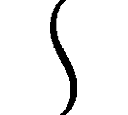！」
辛うじて悲鳴を抑えたが、涙が出そうになるのは仕方がない。
腕の中、呆然とこちらを見る、「生きた」瀬底泡瀬に、微笑みかけることが出来たから。
「大丈夫、瀬底さん？」
「あ、あの、沙汰内くん......」
たら、と汗のようなものがこめかみを流れる鉄錆の匂い。どうやら一発かすったらしい。
それを見て、泡瀬が真っ青になった。
「さ、沙汰内くん！」
「か、かすり傷だよ、うん」
そっと泡瀬を地面に下ろし、その瞬間腕の筋肉の動きでずきんと痛む傷口を、何とか奥歯を嚙みしめて我慢する。
その背後ではスウィムウェンリーダーの八本脚が、もの凄い音を立ててパーシィの張ったシールドを殴りつけ、シールドの効果範囲を示す円を描いて地面が割れた。
「タグル！ 大丈夫か！」
杖をかざしながら、パーシィが後ろを向いた。
「あ、くそ、なんてことだ！ 四発も当たってるぞ！」
「え？」
てっきり肩とこめかみだけだと思ったタグルが振り向いた。
「背中に三本、肩に一本。痛くないか？」
「今、もの凄く痛くなった」
正直に答えた。言われるまで気づかなかったが、確かに四箇所、冷や汗にしてはとろみのありすぎるものが背中と左腕を伝ってるのを自覚する。
「走れるか？」
「何とか」
「ドーム状でフィールドを張ってるが、このままだと中の酸素が持たない。一瞬移動用に変形させるために解除するから走れ。工事現場に入ったら何とかする。君とアワセ君はそのまま逃げろ」
「もう、今更無理だし、第一、あのスウィムウェンの攻撃目標は僕たち全員だよ？」
「そこは私が何とかする」
「何とか、ってどうするの？」
「安心したまえ。私は天才だ」
「こんな時に冗談言ってる場合？」
「冗談なんかじゃないぞ、天才は冗談と噓は言わないものだ」
「しょっちゅう言ってるじゃないか！」
「とにかく、あのマンションの工事現場まで走りましょう。沙汰内くん、今刺さってるのを抜くと出血がひどくなるから、このままで行くわよ！ パスウィダー、解除を！」
「了解だ！ 三、二、一！」
いつになく、力強い声で泡瀬が言い、タグルの、無事な方の手を引いて走り始めた。
思いがけず、力が強い。
「わわわ！」
タグルはそのまま引きずられるようにして走り始めた。
圧搾空気の弾ける音と作業用サーチライトが追いかけてくる中、三人は走る。
背後のスウィムウェンは相変わらず「殲滅せよ」と叫び、成江は凶気の笑い声をあげながら、釘打ち機を改造したマシンガンを撃ちまくり、路地や塀に次々着弾の穴が空き、八本の脚が地面をえぐる。
☆
タグルのこめかみから、血が流れているのを見た瞬間、泡瀬は覚悟を決めた。
たとえ正体がばれようが、「暁」の規定を違反して一般人にその活動が目撃されようが構わない。
タグルの手を引いて走りながら耳の中の Bluetooth のスイッチを入れる。
「カレン！」
叫ぶと最初のコールが始まった瞬間に相手が出た。
『アンタの位置ようやく特定したわ、応援、要る？』
「ええ。『特装五型』を特急で。目標は私の前二メートル」
『............本気？』
「本気！ カウントゼロでやっちゃって！」
『この若い身空で失業かぁ』
カレンの声は苦笑まじりだったが、拒絶はしなかった。電話の向こうでキーボードが叩かれ、マウスの滑る微かな音が聞こえる。
「ごめんね、カレン」
『あんたが教官を最初にぶん殴った日から覚悟してたわよ......それ、射出！』
道路を駆け抜け、マンションの解体現場を塞いでいるパンタグラフ型横開きシャッターの鍵をライノで撃って破壊し、飛び込む。
もとは八〇年代バブルのころに建てられた豪奢な高層マンションで、広いエントランスホールに彫刻や絵画を飾っているようなものだったが、クレーンを使って上から徐々に解体され、今は二階部分の天井まで壊されて、ぽっかりとした広い空間になっている。
気がつけば途中までアスファルトを掘り返す音と「殲滅せよ！」の叫びをあげて追ってきたはずのスウィムウェンの気配がない。
「追っ手は？」
尋ねる泡瀬に、パーシィは、
「飛んだ、多分、三秒後ぐらいに我々の目の前に来る！」
言われて前を見る。
奥に解体作業用の車両が何台か見えるが、スウィムウェンはその上に落下してきた。
トン換算の物体が落下した衝撃で周囲の壁に亀裂が走り、その一部が崩れ、下敷きになった際に横転した作業車両のパーツがさらに周辺を破壊。
さすがにこの移動に成江は付き合うわけにはいかなかったのか、彼女の姿はなかった。
（これなら......！）
同時に泡瀬はこのタイミングで別のものが落下して起きた震動を察知していた。
大質量の着地の結果、舞い上がった微細なコンクリートの粉塵が煙となって立ちこめる中、泡瀬は「到着」のブザーを Bluetooth のイヤフォンから聞いて、タグルの手をそっとほどいた――――「特装五型」の収まった金属カプセルが、右手奥の床に突き刺さっているのを確認。
砂礫と化しそうなほどに亀裂が入った大理石の床の上を走り、肌身離さず持っているキーホルダー型の作動スイッチを入れると、ダブルベッドほどもある大きさの「特装」の収まったケースが展開する。
内部に巧妙に折りたたまれた、西洋甲冑を一回りゴツくしたようなデザインの外装骨格式の装甲強化服が立ち上がり、着用しやすいように姿勢を変える。
泡瀬は駆け寄りながら素早く制服の上着とスカートを脱ぎ、靴を放り出して下着姿になると背中を開けてうつむくようにしている「特装」の中に同じポーズをして「入った」。
背中から後頭部にかけて開いていた装甲が閉じると真っ暗な中「特装稼働開始」の文字がヘッドアップディスプレイ表示される。
「血液駆動式特四動力起動」の文字が出ると同時に、泡瀬の頸動脈に金属リングが固定され、その内側から出た針が、彼女の動脈に刺さる。
そして首から下を装甲服の内側から染みだした耐衝撃、防火能力を備えたポリマーリンゲルがしっとりと包み込み、血液が吸い出される感覚。
この装甲服の要所要所には、木曽のとある山奥から産出され、特殊な製法で精錬された金属で出来た歯車が埋め込まれている。
この歯車は特定の家系の人間の血を与えられると回転をはじめ、同時に「超能力」と呼ぶよりほかない超常現象を意図的に引き起こすことが可能となる。
たとえば......。
泡瀬は立ち上がると、両の拳を打ち鳴らした。
「召還、雷神雷狐！」
蒼い稲妻が拳の間からほとばしり、むき出しになった鉄筋をつたって周囲の壁を這い回っていく。
その稲妻は空中で数匹の狐の輪郭を描いて、稲妻で出来上がった狐は、単なる輪郭から、稲妻の塊となって泡瀬の足下に降り立つ。
このような現象だ。
今から二千年ちかく昔に見つかったこの歯車を「清明歯車」と呼ぶ。
これを組み合わせ、現代のテクノロジーでさらに強化した血液駆動式特四動力体を両手両脚と胴体に組み込んだ装備が「特装五型」
特命機関「暁」の中でもこの装備を使いこなせる者は数少ない。
上官への不服従で本来ならクビにされるはずの泡瀬が、閑職扱いの場所への転任という形で残されたのは彼女の身体の中を流れる『血』で装備を使いこなすことができるためだ。
泡瀬は踵を返し、パーシィの張った力場障壁を殴り続ける敵めがけて駆ける。
稲妻で出来た狐もまた、空中を舞いながら彼女に従い、スウィムウェンへ体当たりした。
高圧電流の塊が一瞬で分解されることで、空気中も含め、各部の表面に残った僅かな水分が爆発的に蒸発、露出したあらゆる動力部分、電気系統が破壊され、スウィムウェンは横転した。
そこへ、泡瀬の装甲服が襲いかかる。
「豪腕招来！」
叫ぶと同時に今度は炎が泡瀬の装甲服の拳を覆い、灼熱した拳が八本の脚の付け根を溶かす。
潜在意識に「今が緊急事態である」と告げ、超常能力を一時的に引き出すためのキーワードは日常使う言葉でなければ、どんなものでもよく、「暁」の装甲服使いたちの中でも様々だ。
中には映画のセリフや、洋楽の歌詞を使う者もいる。
だが、何となく泡瀬はこの祝詞っぽいものを選んでいた。
「此神床に命座奉る掛巻も綾に畏き大神の大前に 恐み恐みも白さく」
泡瀬は半ばトランス状態、半ば正気を保つための言葉を口にした。
「日に異に蒙り奉る大神の大御恵を崇め奉り喜び・奉りてありせども、我大神の力もて、目の前の輩を討ち祓い、打ち清め、御身心にそいて御国が盾となり、剣となり、拳とならん！」
彼女が組み立てた祝詞の形式に則って作られた無意識下コントロール用キーワードを唱えつつ、次の攻撃に合わせて能力を発動させ、あるいは強化、補足する。
「轟蹴足招来！」
灼熱の爪先が蹴り上げる。
「剛力招来！」
鋼の腕が釘打ち機を改造した機関銃を引きちぎる。
突き飛ばすと、スウィムウェンのボディは、脚を全て破壊され、スク水少女の上半身と、解体作業用のアームが四本残るだけとなった。
「怨敵退散！」
拳に光――――最後に一発、スウィムウェン本体にくれてやれば全て終わる。
「解析完了」
だが、スウィムウェンがそう宣告した瞬間、泡瀬の拳ははじき飛ばされた。
「一種の意志エネルギーによる原始的な物理破壊の相乗効果数式を、無効に設定」
スウィムウェンリーダーの声と共に、これまでにない恐ろしいほどの速さで、二本の解体用アームが打ち下ろされる。
「上半身用アーム部分、速度対応および打撃力、最適化完了」
とっさに交差した両腕で受けるも、地面に足底がめり込み、さらに次の行動を泡瀬に取らせる隙を与えず横殴りの一撃が脇腹を襲う。
「剛体しょう......」
キーワードを唱え終えぬ間に、泡瀬の装甲強化服は数十トンの衝撃に殴り飛ばされた。
崩れかけた壁を突き破り、転がってさらに解体された瓦礫の山に突っ込み、ようやく泡瀬の強化装甲服は止まった。
スウィムウェンは、己の下半身であった建機の残骸を爆発ボルトを起爆して切り離した。
後ろにある二本のアームで彼女の本体を治めたコックピットから上を支え、立ち上がる。
「装備最適化完了」
スウィムウェンはアームを脚代わりにしてガシャガシャと、泡瀬の埋まった瓦礫の山へと近寄った。
「最優先標的、瀬底泡瀬を排除。バランス最適化完了。殲滅せよ」
そう言って、アームのうち一本を振りかざす。
「こっちも完了だ、スウィムウェン！」
パスウィダーの声に振り向いたスウィムウェンの目に、彼女めがけて飛んでくる、巨大な解体作業用の鉄球が映る。
☆
数トンの鉄球にはね飛ばされたスウィムウェンはもはや残骸以外の何物でもなかった。
「......まあ、あんまりいいこととは思えんが、機械と人間、どちらを優先すべきかと言えば、やっぱり人間だしな」
鉄球を受けて、厚みが一〇分の一以下になったスウィムウェンが完全に無力化したことを「杖」をかざして確認して、パーシィは肩をすくめた。
念のため、さらに杖を使って回路をショートさせ、熱で彼女の頭脳回路を溶解させることで「再利用」も出来ないようにしておく。
壊れてひしゃげた解体作業車両の中に、今となっては絶滅したと思われていた鉄球を使用するものがあるのを見て、パーシィは「杖」を使い、その一部を復旧させた。
さらに「杖」で空気を固めるエアクッションを鉄球の下で膨らませて、それをスウィムウェンの近くまで転がし、地面でバウンドさせたのだった。
「タグル、そっちはどうだ？」
「パーシィ、手を貸して！ このパワードスーツ、どこから外せば瀬底さんが出せるのか判らない！」
泡瀬が戦っている間に、パーシィの持っている応急キットで傷を処置したタグルが、瓦礫の山をひっくり返して泡瀬のパワードスーツを掘り当てたものの、どうすればいいのか判らず助けを求める。
「判った」
パーシィが「杖」をかざすと、パワードスーツの非常プロセスが発動し、装甲がばらばらと接続を外して、下着姿の瀬底泡瀬をはき出す。
「瀬底さん、瀬底さん！」
タグルが揺さぶると、首に採血用のリングを塡めたまま、泡瀬はうっすらと目を開けた。
「瀬底さん！ 良かったぁ......」
「沙汰内......くん......私......私......」
血の気の失せた顔で、泡瀬は必死にタグルに話しかけようとし、そのまま気を失った。
視界の片隅を一瞬、銀色のウサギが横切った気がした。
☆
目が覚めると、見たこともない、細長い天井が見えた。
「......？」
身体を起こすと、大きな革張りのソファの上に自分が寝かされていると気がついた。
場所はアクセサリーショップらしい。狭いがやけに奥行きのある店の、真ん中に置かれたソファの上で眠っていたのだ。
頭が微かにくらくらするのは、血を抜いて血液駆動式特四動力を使ったからだ。
だが、それ以外の外傷はない。
少なくとも最後、スウィムウェンの攻撃をうけた際に胸部打撲で肋が数本折れていたし、転がり、ぶつかった瞬間に左の臑と、右肩の骨が折れる音を聞いた。
だが、身体を動かしてみても痛みが走らない。
「？」
服は......着けている。
ジーンズは大きめ。Ｔシャツはきつめ。相棒の持ち物に違いない。
どちらもデザインに見覚えがあった。
「カレン？」
相棒の名前を呟いて周囲をさらに見回すと、店の奥から会話が聞こえてきた。
「そういうことだったのか......イギリスの『インテリジェンス９』やアメリカの『ブラッドソード』以外にも各国に私たちを追う組織があるとは聞いていたけど......」
「アタシたちふたりはその中でも落ちこぼれだけどね」
「だが、私をとらえるとかすれば、エリートになれるんだろう？ どうする？」
「............やめとくわ。本部はあくまでもあなたたちを『監視しろ』ってことだし。それにこれは政界のスキャンダルになりかねない話だもの」
「そうなのか？」
「元大臣経験者の娘が親のコネを使って人類存亡の危機を招きかねない化け物に協力した上、自分自身も怪物にされかけたんだから十分よ」
「なるほど」
会話している人物たちは店の奥につまれた、どう見ても人類の言語とは思えぬ文字が書かれた薄赤い、六角形のダンボール箱らしいものの陰にいるようだ。
近づいてみると、さらに奥には一人掛けのソファ三つと低めのテーブルが据えられている。テーブルはまるで古い砂糖菓子で出来ているような磨りガラスの天板で、その上にペットボトルのお茶が三本、置かれている。
「あ、泡瀬、もう起きたの？」
パスウィダーと語らいながら、カレンがこちらに気づいて手を振った。
「ええ......いったい、これは......」
「龍壱号案件対象者と今回の事件の後始末についての相談中」
「な、何和んでお茶してるの？」
「まあ、仕方ないわよ、相棒が監視対象と一緒になって戦って、色々派手に壊したりしたし」
「仕方がなかったのよ、あの場合」
「本部もそれは認めてくれるって。だから今回のコトはお構いなし、アタシたちはこのまま、朝ヶ市に残って監視任務続行、だってさ」
「沙汰内くんは？」
「タグルは今、肩の傷を治すために治療装置の中だ。どう見ても君の方が重傷だったからね......あと三〇分もしたら出てくると思う、ご両親には私の店の緊急入荷を手伝ってもらってることにしてるから、まあ出てきたらすぐ家に帰ればいい」
少しホッとする。
肩の方はともかく、背中にまで釘が撃ち込まれたのだから、少し心配だったのだ。
「............ところでアワセ、君ほどの者が彼女たちに脅されて彼に告白したのはなぜだ？」
呆れたことにパスウィダーはまだ泡瀬の行動を誤解しているらしい。
「き、決まってるじゃない......脅されてなんかいなかったのよ、パスウィダー」
泡瀬はあれだけ事情を説明したのに、と少々腹が立って、敬語を忘れた。
「つまり？」
「その......さ、沙汰内くんのことが、私、本当に......好きなの」
その瞬間の何とも言えない雰囲気を、どう表現すれば良いのか。
あっけにとられたようなパーシィと、苦笑いしているカレン、そして一世一代の告白内容をリピートせざるを得なくて真っ赤になる泡瀬と。
沈黙はたっぷり一〇秒はあったのではないか。
「そ、そうか............うん、タグルはいいやつだ、よろしく頼むぞ」
何故か顔を赤らめながら、こくこくとパーシィは頷き、テーブルの上のペットボトルのお茶のキャップを開けるとゴクゴクと飲み始めた。
「......あなたは、どうなの、パスウィダー」
「パーシィでいい」
お茶を飲むのを中断してパーシイが言い、次いで泡瀬の質問の意図に気づいて、固まる。
「彼があなたと付き合っているというのなら......」
彼女が自分を追いかけてきた時に言った台詞と、タグルとの呼吸のあった会話を聞いていれば、ふたりの出会いが今日初めてとは思えない。
ひょっとしたら、自分の見ていない間に、タグルとパーシィはそれなりに深い関係になっているかもしれなかった。
もしもそうだったとしたら、自分は潔く身を引こう、と思っている。
「ち、違う、私はその、違うぞ！ 確かにこの前ダマされたりひどい目にあったりしたタグルにその、ほんのちょっとした去り際のサプライズでキスはしたが」
「キス！」
愕然とする泡瀬。
「いやちがう、私は、その......違うんだ、その、えーと、つまりだな、吊り橋効果というモノがあって......」
しどろもどろで言い訳するパーシィと、目をつり上げた泡瀬を交互に見やり、カレンは素知らぬ顔でペットボトルのお茶のキャップをひねった。
「人生って、ままならないわよねえ」
☆
同じ夜、東京・新宿。
その部屋には、誰も残っていなかったし、何も残されていなかった。
人がいた痕跡は皆無。
壁に飛び散った血痕の他は何も、ない。
エアコンは快適な温度を保っている。
このマンションの他の住人たちが何のリアクションも起こさなかったぐらい、静かに。
「あ、あの......ど、どうでしょう？」
油に汚れた作業服の、頭がはげ上がった五〇代の男性が、おどおどしながらそう言うと、スーツこそイタリア製の高級品だが、首から上は皮膚の下に粗野を滲ませた男は鮫のような笑みを浮かべた。
「いやあ、社長さん、アンタんトコの装置は最高だぁねえ！」
ぽんぽん、と空手ダコが盛り上がった指がばんばんと作業服の男性の肩を叩く。
「あのクズ野郎どもが、今回もまた影も形もなくなった！ 綺麗さっぱりだ！ 血痕が残るのはまあ、どうにでもならぁな。業務用の漂白剤を山と使えばルミノール反応だってどうにかなる！」
快活に笑いながら、男は部屋の中を見回した。
新宿の片隅にあるマンションの一室............つい三時間前まで、ここは、このイタリア製スーツを纏った男の組織に反抗し続けている、チーマー上がりの愚連隊（と男は呼んでいた）が根城にしていた。
銃器の売買、売春、合法ドラッグと呼ばれる科学薬品の製造と販売、密輸までこなしていた。
昔はこういう連中は男が所属するような「暴力団」と呼ばれる組織に属していたが、今は暴対法もあって、「民間人」という顔で同じ商売を始める。
ふざけたことに五時まではサラリーマンや公務員をやって、終わればこういう仕事をして「副収入」にしている奴までいるのだが、警察の手前もあって暴力的な始末は出来ない。
周囲に示しがつかないがどうしよう、と考えあぐねていたところへ、男の組の傘下である違法金融業者から金を貸りて首が回らなくなった町工場の社長が妙な物を持ってきた。
人間を三〇人、跡形もなく一時間で片付けてしまうという触れ込みの「装置」だった。
当初、その形を見たとき、男は激怒した。
どう見ても金髪碧眼の少女の等身大フィギュアだったからだ。それもスクール水着姿の。
が、「装置」の外見はともかく、能力はこちらの想像を遙かに超えていた。
怒りにまかせて社長を銃で殴ろうとした途端、「装置」は社長を守るために一瞬で男から銃を奪い、あっという間にへし折った。
粗悪品のトカレフでもなければ樹脂パーツを多用するグロックでもない。バブル時代にチェコで購入した鋼鉄製のＣｚ75の初期型だ。
それからかれこれ一カ月、この「装置」は男の期待を一切裏切らない。
おかげで東京はおろか、関東全域の勢力図が塗り替わり始めている。
「いやあ、この姿なら逆に怪しまれんし、完璧よゥ！ いやあ、完璧、完璧！ ロシアの奴らからミサイルまで買い込んだと聞いた時は驚いたが、使う間もないたぁな！」
「装置」には新しい「装備」が追加されていた。
背中に装着したハーネスから伸びる金属アームで、戦艦と戦車を付き混ぜたようなデザインの三連装、四連装（！）の砲塔をいくつか支えている。
頭にはアンテナのようなパーツの付いたカチューシャ。
「えーとですね、速射型のレールガンと、小型ミサイルの一種を発射するんです。最近息子がハマってるゲームを見て思いつきまして......」
「いや、いいわい。社長。アンタの『商品』のことは信用しとるからな」
細かい説明は苦手らしく、男は手を振ってスペック説明を打ち切らせた。
「しかし、この装備はゴツいのぅ。まるで戦艦じゃぁ」
上機嫌で男はさらに社長の肩を叩いた。
「なあ、社長、在庫あるだけ買ってやるからこいつら全部持ってこいよ、な？」
「あ、はいあの......でも、その、在庫の組み立てというか、完成にはまだ金が足りませんで、今稼働しているこいつと、今弟分さんのところで動いてる十三台しか......」
「おうおう、金ならいくらでも出す、親分衆も、こういう『装置』にならいくらでも金、注ぎ込んでくださるわ......あとで舎弟に金届けさせるわ......いくら必要だ、社長？」
「と、とりあえずこれぐらい......」
社長は指を五本立てた。
「一千万の束で、か？ 億単位の束で、か？」
「えっと、箱で、です......」
「............」
沈黙。
男は無表情で社長を眺めていたが、やがてまた鮫の笑みを浮かべた。
「社長、ええ商売するのぅ......気に入ったわ！」
バンバン、と背中を叩く。
「あ。ありがとうございます......」
「じゃ、三箱でいいな？」
「いえ、それは困ります、五箱はないと......」
「............社長、ええ商売するのぅ」
いったん下から上へ、ねめ上げるような視線で男。
「あ、ありがとうございます」
その無言の圧力を感じているのかいないのか、社長はぺこぺこと頭を下げた。
しばらくの沈黙。
「............じゃ、三億五千じゃどうだ？」
「いえ、五箱はないともう、ギリギリでして......」
「......ええ商売するのぅ、社長」
そんな交渉とも、ブラックジョークとも取れる不思議な会話の最中、予定された行動を終了した「装置」は、じっと部屋の片隅で立ち尽くしている。
ここにいた数十人のセレブな愚連隊を一人残らず、跡形もなく消し去ったのに、返り血ひとつ、その細い身体には存在しなかった。
○第三話： 懐かしのラヴァー・ボーイ（byクィーン）
☆
夏の夜の雨の常で、最初は温かいのに、次第に冷たくなっていく。
ぼんやりと、タグルは目を半開きにして、顔の左半分だけでその雨を受けていた。
ビルの屋上で、倒れてる。
立ち上がれない。右の脇腹にいくつかと、左の太腿に空いた穴から流れる血のせいだ。
いや、撃たれたからだ。
ぼんやりした頭にはあまり複雑なことは浮かばない。
出血によって意味のない、五歳児レベルの思考にまで頭の中身が落ち込んでいた。
（えーと、うたれたんだよね、たしかに）
あらためて身体を動かそうとする。両腕ＯＫ、右足ＯＫ、左足......動かない。
脇腹からどくどくあふれ出すものは異様に温かかったのに、それもなんとなく判らなくなってきた。
（ひょっとして、血、止まってないかな？）
手を動かして傷口に当てようとするが、ぶるぶる震えるばかりで何も出来ない。
（ああ、コート、汚しちゃったな......パーシィに、怒られる......）
タグルはパーシィのコートと帽子を身に纏っていた。
精霊蒸気杖は、目の前に転がっている。
やがて帽子が外れて転がり、雨に打たれて、特徴的な本体につけられたメダル部分が濡れ光ってるのが目に映ったが、タグルにとってはどうでもいいことだった。
それでも、震える手を伸ばし、手に取って、頭に被る。杖は重くて持てなかった。
（ああ、このまま、雨の中で死んじゃうのか......）
夜空をちらりと見上げる。雨粒が目に入るが、特に何も感じなくなっていた。
（パーシィ、泡瀬さん、無事だといいけど......レッドさんも、大丈夫......だよね？）
タグルはそれ以上目を開けているのが辛くなってきて、目を閉じる。
☆
沙汰内類が屋上で倒れる半日前。
空には雲ひとつない、完璧な晴天であり、灼熱の太陽が照りつけていた。
高速道路のアスファルトは溶けそうになっている。
普段なら心地よい真紅のカワサキのNinja Ｈ２Ｒの９９８㏄直列４気筒エンジンが奏でる音が今は遠い。
その時、瀬底泡瀬は二カ月に一回義務づけられている「暁」本部への面談報告を済ませて「ろすてぃに屋」へ急いでいた。
パーシィこと「龍壱号案件」の監視のためなのはもちろんだが、沙汰内類がアルバイトの入っている週二日以外は、ほぼ毎日そこに入り浸り......というより、商売っ気のないパーシィの代わりに店員めいたことをしているからだ。
ようやく面談が終わり、大急ぎで彼女は朝ヶ市を目指している。
「まったく、第一監視対象の任務に戻るんだからヘリぐらい使わせてくれればいいのに！」
フルフェイスのヘルメットの中でぼやくが、元々予算も人員も限られた「暁」としては仕方がないことだというのも判っている。
本来なら前回のスウィムウェンとの戦いで大破した装甲強化服のことを詰問されているところだから文句も言えない。
さらに、龍壱号当人と接触したことで、別の「優秀な」メンバーと交代することもなく......つまり、当分はタグルと同じ学校に通うことができるのだ。
その嬉しさに比べれば、何ほどのこともなかった。
ただし、ツナギのポケットに入れたメモリスティックに入っている資料は............かなり気にかかる難物だ。
「............それにしても、暑いわね」
高速で飛ばしているのに、革ツナギの下が汗でぐっしょりになってきているのが判る。
今日の最高気温は関東全域で平均三九度。
走っているうちにタイヤが溶けてきそうな温度な上に晴天ときているから、アスファルトの輻射熱が酷い。
ようやく「朝ヶ市」の表示が過ぎた。
あと十分ほどでタグルに会える。
「あ............着替え、どうしよう？」
☆
西暦二〇一八年。埼玉県朝ヶ市。
六月に入ったばかりであっという間に梅雨が明けた。
となれば、もう初夏ではなく、夏の始まりである。
「暑いなぁ......」
タグルは汗をぬぐいながら、学校からの帰りがてら、パーシィの顔を見ようと「本日定休日」の札の下がった「ろすてぃに屋」のドアを開けた。
外以上にむっとする熱気が襲ってくる。
「わ......な、なに？」
てっきり昨日と同じくクーラーが効いているものだとばかり思っていたタグルはすっかり面食らってドアの前で立ち尽くす。
「パーシィ？ どうしたの？」
そういえば店内に明かりはない。
「？」
中に入る。ドアは万が一を考えて開けっ放しにすることにした。
「パーシィ？」
奥にいくと、昨日設置した応接セットの手前に置かれた三人掛けのソファで、青いブラジリアンビキニを着けた残念な生き物が溶けていた。
「ああ、たぐるかぁ......あちゅいなぁ」
紐と、掌の半分ほどの布で構成された、ほとんど局部を隠しているだけの過激なビキニ姿で、ダラダラに汗をかいたパーシィは、面倒くさそうにこちらを見上げた。
豊満な胸の谷間も、引き締まって軽く腹筋の浮いたお腹も、さらにその下、高い位置にある腰とそこから伸びる長い足も汗に光っていて、その体温と、甘いパーシィの体臭とが、妙に生々しくタグルの五感に訴えてくる。
これで彼女の頭の中がもう少し普通、もしくは大人の女性であれば、たまらずタグルは硬直して動けなくなるか、逃げ出したかもしれないが、残念なことにこのロングヘアのエルフ美女は、実生活においてはちょっと頭のいい子供同然の中身である。
「なんて格好してるんだよ！ パーシィ！」
それでも純情さが顔を赤らめさせて、タグルは大声を出した。
「熱放散のために布地面積を、私の常識の範囲で減らした結果だ。これ以上は全裸だが、さすがにそれは文明人としてマズいのでな」
「......どーいう理屈だよ。本当......で、どうしてこんなことに？ クーラーの故障？」
尋ねるとパーシィは「違う」と力なく首を横に振った。
「『ロスティニア』のやつ、今日、修理の終わった次元移動用のエンジンにチャージして再起動するため、全ての電源を落とすと言いだしおってな......このありさまだ。ハスティニアの氷球がどこかにあったはずなんだが、こういうときに限ってどこにしまい込んだのか出てこない」
「なにそれ？」
「サッカーボールぐらいの大きさで、周囲の熱を吸い込んで冷気にしてはき出すという結構な代物なんだが、『熱心さ』とか『熱意』といった感情の熱まで吸い込むのが難点でな」
「......外に出て喫茶店かどっかで涼んでればいいのに」
「再起動する時は私がここにいて、生体認証キーにならないと、色々マズいんだ......暑いぃ......先週まで梅雨でざあざあ降ってたんだ、今年の梅雨は短いっていうんだから今日ぐらい延長というか、追加分が降ってきてもいいじゃないか」
「梅雨明け三日目でそれはないよ......アイス買ってこようか？」
「アイス！ 素晴らしいなそれは！」
がばっとパーシィは起き上がった。
途端に紐水着で辛うじて「全裸ではない」と言い訳しつつ圧倒的な質量を見せつけていた、汗ばんだ二つのまあるい水蜜桃が盛大に激しく揺れて果汁のごとく汗が散り、慌ててタグルは横を向いた。
「揚げたてのドーナツとホットコーヒーって手もあるけど？」
「なに？ ......うーん......」
今度はソファの上で腕組みして、真剣に悩み始めたアークエルフの時間旅行者を、タグルは完全に元気な妹と対する兄の目つきで微笑みながら見つめた。
「ドーナッツとコーヒーはいいものだが、この夏の暑さでは...いや、むしろ暑いからこそ熱い物を食べてというのは理にかなっているが、今でさえこの汗では...えーと、うーん...」
「まったく、子供なんだから」
「な、何を言うか！ 私はちゃんとこう、大人の女としてだな、どちらのほうがより高尚な食べ物かつ有意義な時間になるかという考察を......」
そんなことをパーシィがくどくど言い始めるタイミングを見計らったかのように、
「こんにちは、沙汰内くん、いますか？」
と革ツナギ姿の瀬底泡瀬が顔を出した。
「アイス、買ってきたから、一緒にどうかな、って......」
「おおおおお！ アイスか、じゃなかったアワセか、入れ入れ！ タグルもいるぞ！」
さっきまでの哲学的命題はどこへやら、パーシィは破顔し、両手を広げて泡瀬を招き入れた。
☆
「あー冷たい！ 美味い！ やっぱり夏場はアイスが一番だ！ アメリカのナンシー・ジョンソンには足を向けて寝られないな！ うん！」
泡瀬の買ってきたアイスバーを両手に持って交互に食べながら、パーシィは歓喜の表情を浮かべた。
「だれ、そのナンシーって？」
「アイスクリーム製造装置の基礎を作った女性だ。知らないのか？」
「いや、知らない」
「まあいい、あとでその辺のいきさつは話すこともあるだろうしな......あー美味い！ 冷たい！ 最高だ！」
店の奥にいると熱であっという間にアイスが溶けそうなので、玄関付近まで三人は移動し、ドアを開け放って少しでも外気を入れようとしている。
「タイムマシンも意外と不便なんですね、こういうときって」
記録用のクリップボードを団扇代わりにして、開いた革ツナギの胸元を仰ぎながら泡瀬。
「この船は自己進化と自己改良をしてくれるからかなりマシな部類だがな」
「へえ......」
「で、新しくなった学校はどうだ？」
「まあ、なんか空気変わったって思うよ」
タグルたちの通っていた公立高校は、大方の噂に反して再出発が決定した――――実際にはパーシィが出現したことにより「暁」が強権を発動させて存続させたのである。
今の授業は少々離れた所にある、数年前廃校になっていた小学校をそのまま使い、灰と化した本来の敷地内で急ピッチで新校舎が建造されている。
ただし、これまで通っていた多少ガラの悪い「良家の子女」は親がこぞって転校させてしまったため、階層社会は崩壊、学校の雰囲気は大分明るいものに変わっていた。
「多分、千々裏成江があんなことになっちゃったってのも大きいとは思います」
泡瀬がぽつりと付け足した。
発見されたとき、千々裏成江は改造された釘打ち機を警官に向けて撃ち、取り押さえられながらも、わめいていたという。
「そういえば、千々裏さんってどうなったの？」
「わたしもよくは判らないんだけど、どこか遠くの病院に入院療養してるみたい」
泡瀬は少々の罪悪感を抱えた顔で答えた。
タグルは彼女が自分のいじめに対して成江に抗議した、という話しか知らないため、泡瀬のその表情に少し不思議そうな顔になる。
「タグルをああいう陰湿ないじめに巻き込んだ上に、スウィムウェンと手を組んだんだ、本来なら刑務所に送られてもおかしくないから、まあ、穏便な始末じゃないかな」
追加で近所のコンビニで買ってきたカップアイスを食べながらパーシィが結論した。
「時が経てば、スウィムウェンの影響も消え去って社会復帰出来るだろう。それでも治らなかったら私が診る」
どうやらアイスバー二本とカップアイス一個でパーシィはある程度復活したらしく、先ほどまでのぐでっと溶けた感じは消え、颯爽とした口調も戻ってきていた。
「まあ、多少医術の心得はあるからな。深層心理ぐらいなら......」
とか言っていると、ぐおん、という腹の底に響く音と共に店内の明かりが点灯し、少ししてひんやりとした空気が流れてきた。
「お、我が船も復活か......ありがたい」
「へえ、ということはこっちとしてもありがたいな。こっちへ来るときちょっと壊れた上に、エネルギーもちょうどゼロになっちまったからね。部品と燃料わけてくれよ」
明るい男性の声が割り込んできた。
「え？」
タグルが振り向くと、いつの間にか入り口に大柄な金髪の白人男性が立っている。
その偉丈夫はこの暑い中、コートを肩から羽織り、中には昔のドイツ軍っぽい軍服を着用していた。
「レッド！」
パーシィが驚いた顔になる。
「いつこっちに来たんだ！」
「三分ぐらい前かな、久しぶりだね、パーシィ。珍しく今日は露出狂だなぁ！」
そう言ってレッドと呼ばれた男性は両手を広げ、パスウィダーとハグしあった。
「その紐水着はパッシュトライドの大統領から貰ったやつだな、懐かしい」
「そうだよ、レッド、しかし変わらずに男か！」
「まあね。今回は運がいいんだ――――ところで君はまだ処女なのか？ そろそろ俺が相手をしてやろうか？」
「抜かせ馬鹿者」
互いに笑いながら、二人はぱんぱんと背中を叩き合って......いや、レッドの手はさりげなく下りて、パーシィの紐ビキニに辛うじて覆われている、よく引き締まった上向きのヒップを鷲づかみにしていた。
そのままこね回すのを、タグルと泡瀬は呆然と眺めた。
ここまで堂々としたセクハラ............いや、痴漢行為を初めて見たからだ。
「それ以上私の尻に触るなら、このまま膝を君の股間にぶち込んだあと、私の蒸気精霊杖で胃の消化速度を二〇倍に促進し、最後に君の銃で死なないようにキミの股間の面白スティックを破壊することになるが、覚悟は出来ているな？」
氷のような声でパーシィ。
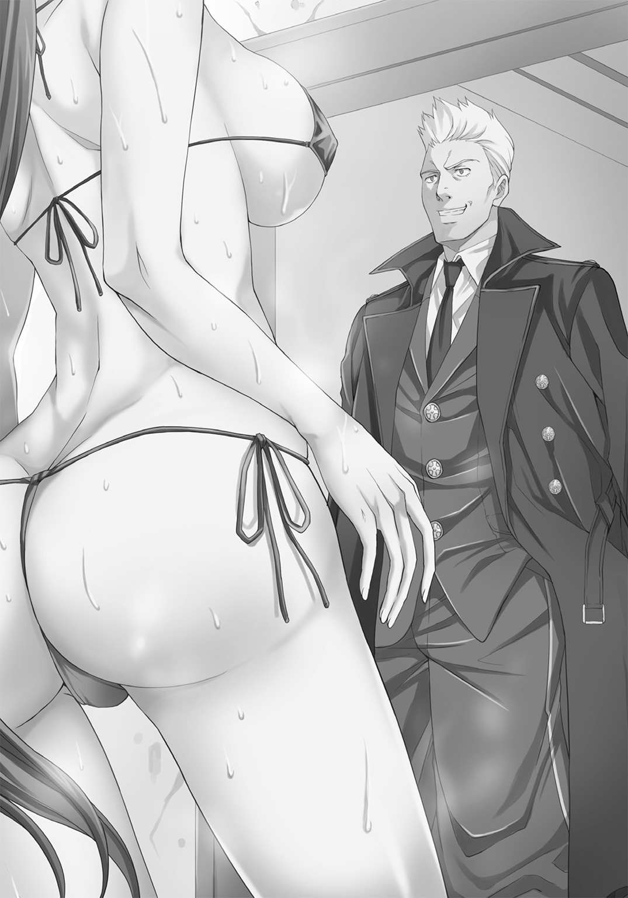
そして手首を振ると、いつの間にか例の「蒸気精霊杖」が握られている。
「はいはい、長い付き合いなんだからいいじゃないか、触るぐらいで減るものじゃなし」
「減る、お前が触ると減る」
「寂しがり屋のくせに意地っ張りなところは変わらないんだな」
「五月蠅い」
そんなやりとりをして離れると、パーシィはタグルたちに男性を紹介する。
「タグル、アワセ、こいつはレッド・リーコン――――私と同じ『イコライザー』だ。外見は私や君たちとよく似てるが、サルリーンという雌雄同体の宇宙人だ。気に入れば男女の別なく孕ませるし、孕むから注意するように」
「は？」
思わずタグルと泡瀬は同時にパーシィの言葉を聞き返した。
男だから孕ませるというのは判るが、孕むというのはよく分からない。
「わははは、ユーモアだよ、パーシィのユーモアはいつもわかりにくいから。長広舌の蘊蓄垂れだし」
と颯爽と金髪の好青年は笑った。
「ユーモアなんかじゃない」
じろっとパーシィが横目でレッドを睨む。
「またまたぁ。パーシィは寂しがり屋さんだからなぁ」
「貴様、何を言うか！」
真っ赤になって反論するパーシィは兄にからかわれる妹そのもので、いつもどこか「お姉さん」っぽく振る舞おうとしている彼女とは違って、タグルには新鮮だった。
「へえ......」
そして、タグルは初めて見るパーシィ以外の「イコライザー」の存在と、ふたりのあまりの親密さぶりに戸惑いつつ、それでも「沙汰内類です」と自己紹介する。
「こちらは高校生のサタウチ・タグル。そしてセソコ・アワセ、タグルのクラスメイトで『暁』という私の監視機関のメンバーだ」
「あ、いえあの、ど、どうも......」
秘密組織の一員であるという素性まで一気に紹介されて、泡瀬はタグル以上に戸惑いながら頭を下げた。
「やあ、俺はレッド・リーコン。君がパーシィの新しい相棒？」
そう言ってレッドはタグルに握手を求めた。
「あ、いえ......えーと、そうなの？」
パーシィに尋ねると、
「まあ、それで......いいんじゃないかな？」
ちょっと横を向きながらパーシィが答えた。
「......だそうです」
「なるほど、今度はずいぶん早く決まったものだね」
「まあ、スウィムウェンがらみで色々あってな」
「あいつら、まだこの辺の時空をウロチョロしてるのか？」
「むしろ出会う度に数が増えて凶暴化してる印象だ」
「そうか......タグル君、彼女はフーヴィアンだから、『ドクター・フー』の蘊蓄を山のように聞かされるから覚悟しておきたまえよ」
いつの間にかタグルの手を取って握手し、がっしりハグしながらレッドが言った。
「あ、はい」
筋肉でよろわれた肉体に包まれる圧迫感と、鍛え上げた筋肉の意外な柔らかさに目を白黒させるタグルは、先ほどのパーシィ同様、自分の背中から腰まで丁寧にレッドになで回されたことに気づかない。
そしてレッドはタグルを解放すると泡瀬の方に向き直った。
「なるほど......で、君が秘密機関のメンバー？ ずいぶん若いねえ？」
「あ、いえ、あの......」
「日本の秘密機関は何処の世界でも若い女性を起用するのが上手いなあ」
「？」
そして泡瀬のほうも握手され、気がつけばハグされている。
「君、タグル君のことが好きなの？」
「！」
耳元で囁かれて硬直する泡瀬の動揺をいいことに、レッドはここでも彼女の腰回りを触ってから離れた。
「ちょっと来いレッド」
離れたレッドをパーシィが引きずって店の隅に移動する。
「レッド、彼らは駄目だぞ」
パーシィがすかさず小声でレッドに警告した。
「ふたりともそういうことには早すぎる！ この国には特に厳しい法律があるんだぞ、判っているのか？ 『イコライザー』は現地の法律を遵守する、それがポリシーだろう？」
「判ってる。ふたりとも君同様まだ清い身体だ。大事に愛でよう。綺麗な若木だ。こういうのを『猪鹿蝶』とか言って日本人は『風水』だと言うんだろう？ バショーのワビサビだな、うん、トランティニヤン」
「話をはぐらかすな！」
「............この時代までの青少年は世間がなんだかんだ言っても一部の例外を除いてウブでいいなぁ。あの青くて硬い肉体は今だからこそだぞ。ああ、ベッドの上でどう反応するか楽しみだよ、うん」
さっきまでの感触を反芻しているのか、ニコニコしながら両手を揉みつつ、パーシィの方を見ようともせずにレッドが同じく小声で返す。
「人の話を聞け！」
「あと三年ぐらい待てば俺の好みの年齢になる。それまで待つさ。あのふたりとなら妊娠してみたい。きっと可愛い子が生まれるぞぅ」
にこにこと言うレッドに、
「――――お前のそういうところがついていけない」
パーシィは珍しく溜息をついた。
「君は『イコライザー』のくせにこういう部分で常識に囚われすぎる。もうちょっと俺みたいに自由になれ。楽しいぞ。温かいし、気持ちいいし。何よりも寂しくなくなる」
「お前の脳の中にある意志決定領域を、社会良識の檻の中に永久につなぎ止める方法をそろそろ見つけないといかんな。このさい灼けた針金を使う脳外科手術でもいいから」
「まあ、それよりも、だ」
パン、と手を叩いて、レッドは真面目な顔になり、
「この時代から妙な時空震動を最近感知したんだが。何があったか心当たりはないか？ おかしな事件とか、国際情勢が急に動いて大規模戦争が始まりそうだ、とか」
「そんなに大きな戦争なのか？」
「ああ。第二次世界大戦規模だ。大々的な時空改変が起ころうとしてるのかもしれん」
「まってくれ、この時代は向こう五十年、そんなことはもう出来ないはずだ」
「だからこそ、絶対時間計が妙な動きをしてる、と言っただろう？」
☆
「ろすてぃに屋」店内から「ロスティニア」船内へ。
パーシィはさっそく「本日臨時休業」の張り紙を棺桶型ドアに貼り付けると、「ロスティニア」の操縦室に移った。
「そういえば、このところスウィムウェンを追い返したり、この店を開くドタバタでこの時代がどうなってるかは見てなかったな」
パーシィはそう言いながら操縦室正面にある大型モニターに分割してニュースを映す。
日本国内だけではなく、世界各国のものも画面に出して、一斉に音声を流した。
「............こんなに日本語で世界各国のニュースって流れてる？」
タグルが首を傾げると、
「いや、それは君が一度時間旅行をしたからだよ。脳の言語野が対応して言語や文字の意味を自動翻訳してるんだ、しばらくは......二カ月もすれば普通に戻る。だが便利だろう？ 文字もそのままで意味は理解出来るし、慣れてくると新聞を一度読めばその国の言語をある程度書くことも出来る。文学的に美しいかどうかはともかく、短文ぐらいならＯＫだ。おかげで君と私は会話が出来る............もっとも私はちゃんと日本語を話しているのだがね」
「あ、それでこの前の中間試験、英語の点数良かったのか」
ぽん、と手を打って納得するタグルをよそに、パーシィは目を見開き、「杖」を輝かせると画面と音声を早送りにした。
数分後。
「ま、大体の近況は判った」
とパーシィは日本のニュース番組をひとつだけ映して他の画面を消した。
速度も通常に戻している。
「しかしまあ、株価に三面記事、芸能ゴシップ、世の中の四割は平和だなぁ」
パーシィが呟いた。
「そうかなぁ？」
タグルとしては首を傾げざるを得ない。
「世界の四割............特に日本は、よその国が戦争やら紛争やらで大騒ぎなのに、飢え死にする人が出るとニュースになるほど珍しいし、それを見過ごした行政は国際社会の恥だと言われる、ここまで暢気な国と時代は珍しいよ、実際」
「そう言われれば確かに」
「ほんの七〇年前まで、この国で飢え死には珍しい死に方じゃなかった。食事が出来ても、中に入っていた爪楊枝で死ぬ、なんて例もあったぐらいだ」
「爪楊枝？」
「高級ホテルや高級食堂から出る残飯を雑炊にして売る商売が昔はあって、東京に住む人間の何割かはそれを食べて生きてた......私も食べたことがあるぞ。で、用心しないと中に爪楊枝や折れた箸の一部が混ざっててそれが喉に刺さって死んだりした」
「！」
「今でも世界の何割かはそうやって飢えをしのいでるところがあるんだよ」
ぽかんとするタグルの横でレッドも頷く。
「たしかになあ、俺も『イコライザー』として言えることは、この国と個人の状況に限って言えばどんなに現状が悲惨に見えても、過去の方が良かったことはまずないね」
うんうん、とレッドが頷いた。
「............なんかホッとするような、不安になるような......」
「まあ、未来は信じるものだ、ということさ、タグル」
「そういうことで納得しとく」
そしてパーシィは再び画面と音声に意識を集中して黙り込む。
ちょいちょい、とレッドがタグルの袖を引っ張って耳元に囁いた。
「ところでタグル、パーシィは相変わらずドーナツ中毒か？」
「あ、はい、ええ、毎日食べてます」
「俺は随分前から言っているんだが、君からも忠告しないといかんよ、パーシィのドーナツの食べ方は異常だ。毎日三キロでも喰う」
「え？」
「いや本当だ。一度それで栄養失調になって倒れた。遺伝子調整されたアークエルフだから、確かにドーナツばかり喰ってても病気にはならないが、限度はある。たまには君の手料理を食わせてやるといい。そうすればパーシィはコロッとなつくぞ。彼女、手料理に弱いからな。特にできたての手作りドーナツを喰わせてみろ、テーブルの上でタップダンスを踊りながら喜ぶぞ？ いや本当」
「レッド、勝手に人の隠し設定を作るな。ちゃんと聞こえてるぞ」
そんな話をしていると、テレビの中のニュースキャスターが、
「本日、あのメッセンジャーアプリケーションの王者、ＬＩＶＥ‐ＩＮを蹴落として世界一のシェアを獲得した『シルバーバニー』の制作者が緊急来日しました、その理由は？」
と思わせぶりな口調とＢＧＭと共にＣＭ明けの予告ショットを映し出した。
「アメリカ人美少年、プルキム・メルキオール・バニオンくん来日！」
の文字が躍り、性別の判らない美貌をもつ十代の若者と、秋葉原や新宿などの街並みを背景にした画面の中。
「！」
タグルの目が丸くなる。
「パーシィ、今の............」
「見た、間違いない、アレだ」
「なんだ、彼も知ってるのか、アレを」
――――とその時、
「戻りました！」
もうひとりの「イコライザー」出現の報告と、レッドのための追加のアイスを購入するために近くのコンビニに行っていた泡瀬が戻ってきた。
そんな彼女に「良かった、泡瀬さん、待ってたよ！」という嬉しい言葉がタグルよりかけられた。
「ど、どうしたの？」
「こっち、こっち、これ！」
急いで手招きされて、パーシィが見入っているモニターの画面に目を向ければ、そこには彼女にとっても縁浅からぬ「もの」が映っていた。
白い肌、耳の下あたりまでしかない金髪のショートヘア。
そしてスクール水着にニーハイソックス。
「スウィムウェン......」
間違いなく、この前、公園で自分たちを襲ってきた相手そのものだった。
その時と違うのはこちらは太腿から下がちゃんとある「完全版」であり、スクール水着が真っ白なことと、前髪の赤いひと房をのぞき銀色だった髪が全体的に金色になったことぐらい。
「スウィムウェン」はテレビ画面の中で、高級ホテルの一室に直立不動でいた。
『これは、一体なんなんですか？』
日本語で聞くアナウンサーに、金髪碧眼の美少年は細く長い脚を優雅に組み替えながら、にこやかに答える。
『これが私の日本に来た最大の目的です、よく出来ているでしょう？ これはただの人形ではありません、ガイノイド......日本で言うところの女性型アンドロイドなのです。ねえ君、そうだよね？』
少年が語りかけると、「スウィムウェン」はこくりとぎこちなく頷き、ゆっくりと数歩歩いて軽くジャンプし、くるりと一回転したあと、カメラの前で一礼した。
『ハジメマシテ、ワタシ、ハ、あんどろいど、デス』
たどたどしい合成音はしかし、タグルたちの知るスウィムウェンの野太い声でも、リーダーの少女の声でもなく、辛うじて「女性」と認識できる程度の高音の音声だ。
『これは......』
女性レポーターが啞然とする。
会話するのはともかく、未だ世界において、人と同じようにジャンプし、着地後一回転するほどの性能を持つ二足歩行ロボットは夢のまた夢だ――――それを、どう見ても人間にしか見えない少女型ロボットはサーボ音をさせながらやってのけた。
『まだ正式名称は決まっていません。私はこれを日本のとある下町の工場のホームページで発見し、何が何でも広く世界に売り出すべきだと感じました。今回の来日は『シルバー・バニー』で得た全ての資産をこの少女型アンドロイドの一般販売という一大事業に注ぎ込むためなのです』
『しかし、この外見というのは、その......』
女性レポーターの複雑な表情を、プルキムは笑い飛ばした。
『あなた方日本人は恥じるかもしれませんが、我々外国人にとってはこの形態こそが興味深く、求心力のある外観なのです。もちろん、こうなったのには理由があります。このタイプはまだ試作型です。将来的には成人女性、成人男性など、様々なバリエーションを製造販売する予定です』
『具体的にはどういう目的でこれを......』
『決まっているじゃないですか』
にこやかな笑顔で少年は答えた。
『世界平和と人類への貢献のためですよ。介護補助、話し相手、家事手伝いの一切......人は日常の細々としたことから解放され、本当の『やるべき仕事』のみに集中する時間を得ることが出来るのです』
『は、はぁ......』
あまりに気宇壮大な言葉に明らかに圧倒されて戸惑うレポーターは、中継時間の終了をヘッドホン越しに告げられたらしく、「では最後にバニオンさん、日本の視聴者にメッセージを」とまとめに入った。
少年は物怖じせずにカメラに向けて何か喋り始めたが、パーシィはその顔をじっと見つめたまま、音声を消した。
「アワセ、このプルキム・メルキオール・バニオンというのは何者だ？」
「知らないの、パーシィ？ これだけの有名人なら歴史に名前が残っているんじゃ......」
タグルが驚いて尋ねると、
「私の知っている歴史には登場しない名前だ」
パーシィは顎に手を当てて考え込む。
「つまり、この世界の歴史は歪み始めている可能性があるということだ............『ロスティニア』の時間航行機能が回復していれば絶対時間計でわかるんだが」
「たまたまパーシィが知らないだけ、とか......」
「あり得ない。この時代のことは結構深いところまで知ってるつもりだ。特に文化と芸術、テクノロジーに関しては。何しろこれからの三〇〇年の人類の行方はこの数十年で決まる」
「へえ......」
素直に感心しているタグルの横で、泡瀬は顔を引き締めた。
「プルキム・メルキオール・バニオンは、表向きはシステムエンジニア、そして五年前に亡くなった女優のエミリア・バニオンの養子。十歳でＭＩＴを首席卒業、以後ＦＸ取引とコンピューターネットワークシステムの開発で財を成した......ってことになっています」
「なってる？」
パーシィの片眉が上がった。
「彼の経歴はその八割がよく出来た偽装です。細かい資料は山とありますが、諜報関係者が見れば一発で判ります」
「よく知ってるな？」
「実は今日、『暁』の本部であなたに相談しろと言われた特殊懸案事項がそのプルキムのことなんです――――詳しいことはこの中に」
そう言って泡瀬は革ツナギのポケットからメモリスティックを取り出した。
「ふむ」
パーシィはそれを受け取ると、いつも通りどこからともなく出した「杖」の先端の端子に挟み込み、杖を光らせた。
「なるほど」
鼻掛け式の単眼鏡になにやらめまぐるしく数字や写真が流れていくのがタグルの側からは見えるが、さてパーシィがどうやってその速さで流れる情報を認識しているのかは判らない。
「アメリカ国家安全保障局がらみか............しかし、なんでスイムウェンが？」
「あ......ひょっとして、スウィムウェンって地球で作られた、とか？」
タグルの言葉に、パーシィは首を横に振った。
「そんなわけはない。私は奴らがあの姿に変化する瞬間に立ち会った......どういうわけであれを『地球人に対抗する最強の姿』と結論づけたのかは未だに謎だが、それまではもっとこう......なんていうか......うーんと......いや、まあとにかく、人間の姿はしてなかった」
「なるほど」
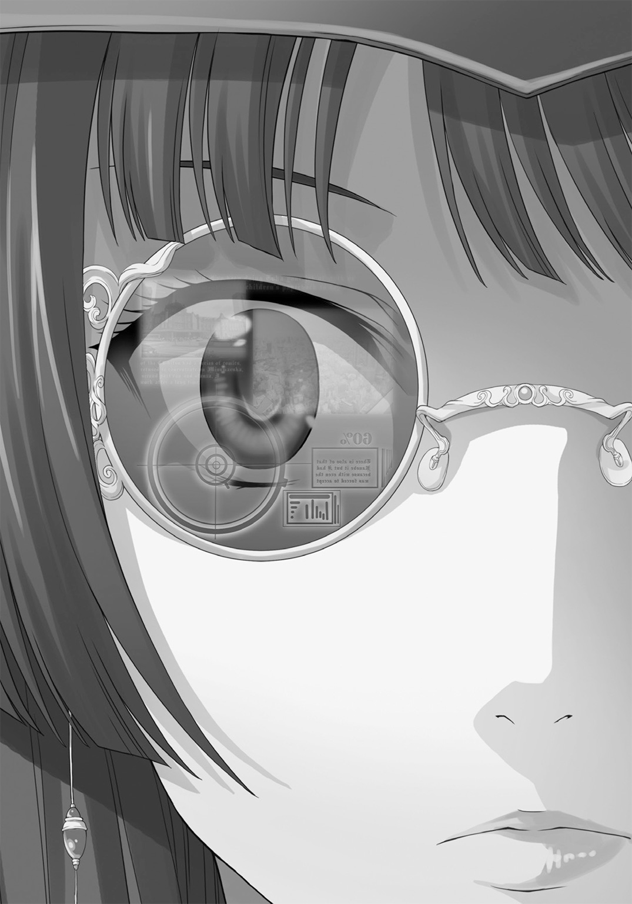
「で、もう一つのファイルの中身ですが......」
「それがとりあえず差し迫った問題だな」
「どうしたの？」
「『スウィムウェン』がヤクザと国内にいるマフィアとの抗争に使われてるらしい。とある町工場から流れてきた『兵器』としてな」
「は？」
「もう推定七〇〇人近くが犠牲になってる。最新は今朝だ......つまり、あのスウィムウェンはプルキムの横に立っていた一体だけじゃない」
「つまり『スウィムウェンに似たアンドロイド』をアメリカ政府が作ってるってこと？」
「スウィムウェンの残骸がまだ他にもあって、そこから再生したんでしょうか？」
「それはありえない。この前の事件のあと、あれこれ調査したが他にスウィムウェンの残骸はなかった。焼け跡の質量的に見てもあれきりだ......ネジぐらいはあるかもしれんが、そこから再生するとなればまた時間がかかるだろう」
「偶然そうなっただけ......とか？」
「偶然には必ず不具合がある。この偶然には不具合がなさ過ぎる」
タグルの言葉にパーシィは言い切った
「こういう場合必ず、どこかで二つの事象が繫がっていて、それが細すぎて見えなかったりするから偶然に見えるだけだ」
「説得力があるような、ないような......まあ、とりあえずこれがおっかないものなのは間違いないよね？」
「少なくともこの数日で数百人が行方不明になって、同じ頃、その数百人のいた場所の街頭カメラや、個人撮影の動画にこの『スウィムウェンそっくりなアンドロイド』が映っているのは事実です」
泡瀬の顔は少し強張っていた。
今回は装甲強化服なしであの怪物と戦うことになると考えているのだろう。
「どちらにせよ、『暁』はこのアンドロイドを危険だと認識しています。日本政府やアメリカ政府は違うかもしれませんが」
「なるほど」
パーシィはニヤリと笑った。
「そういう意味では協力出来そうだな」
「上層部は期待していると思います」
まっすぐこちらを見つめる泡瀬に「せいぜい頑張らせてもらおうか」と肩をすくめ、パーシィは、
「プルキム・メルキオール・バニオンの足取りはともかく、今回の来日の日程はいつ、どこでどう決まった？」
と尋ねた。
「来日は唐突です、少なくとも日本の外交関係筋に話が来たのは今から七二時間前、ホテルが決まったのは入国して二時間後」
「じゃあ、来ていきなりホテルを取ったの？」
「彼、ゴールドラインカード持ちだから、国内でどんなホテルでもロイヤルスウィートを案内してもらえるもの」
「クレジットカードの中でも最高ランクに位置するカードだ。真っ黒なカードに金のラインが入ってる、世界中あらゆる場所で使える上に、上限はない。たとえタグルでもそのカードを持っていれば惑星ひとつ......は未来の話だったな......そうだな、ふらりと秋葉原にやってきて、駅前のビルを全て買う、と言ってもＯＫだ」
「へえ......でも、結局翌月からローンで支払うんでしょ？」
首を傾げながらきょとんと言うタグルに、パーシィは吹き出した。
「ははは！ その通り、タグルは賢いなぁ」
そう言って手を伸ばし、タグルの頭を撫でる。
「なんか馬鹿にしてない？」
「いや、本当に賢いと思うぞ。そうだ、ゴテゴテと権威というオマケが付いてくるが、結局は借金が無限に出来るというだけのことだよ」
と微笑み、パーシィは泡瀬のほうを見て慌ててタグルの頭を撫でていた手を離した。
この前うっかり「キスをした」と口を滑らせて以来、どんなに「ふたりのことを応援するぞ」と言っても泡瀬は「暁」の工作員としてはともかく、恋する女性としてはパーシィを疑いの目で見ていた。
「そ、それでアワセ、その荷物の中にスウィムウェンが入りそう大きさの貨物コンテナとか、スーツケースはなかったか？」
「税関にあんな大きなものを通したという記録はありません、パスウィダー」
「......だとしたらバラバラに持ち込んで組み立てた？」
「彼は手ぶらで日本に来てるわ。本当にその日、いきなり飛行機に乗って日本に来たの」
「ホテルの人の出入りだ。監視カメラの画像が欲しい」
「判りました......ここにパソコンはありますか？」
「初代Appleなら......いや、冗談だ。泡瀬......ではまずいな。タグル、携帯電話を持っているか？」
「スマートフォンだけどいい？」
「大歓迎だ」
☆
「ロスティニア」の起動となれば、コックピットはパーシィのひとり舞台だ。
「ちょっとふたりとも待っていたまえ、すぐに準備するから............レッド、手を貸せ」
「やれやれ、相変わらず全部ひとりでやってたのか、君は」
パーシィとレッド・リーコンのふたりが忙しく走り回り、あうんの呼吸であちこちのレバーを引いたり押したり、ダイヤルを回したりをする様は、どことなくパントマイムの演者に見える。
主役がパーシィたちなら自分たちはここでは観客か、黒子だろうな、とぼんやり泡瀬は思った。
なら、今は幕間で、ここは舞台袖ということになる。
「......泡瀬さん、大丈夫？」
まだわたわたと走り回るパーシィを一緒に眺めながらタグルがそっと尋ねてきた。
「え？」
「なんかちょっと疲れてるみたいだから」
「あ、いやあの、そんなこと、ないから......それに、その服、暑くない？ 脱水症とか」
「いや、だ、大丈夫だから」
泡瀬は真っ赤になった。
そうなると、ぴったり合わせた革ツナギや髪の毛から、汗の匂いを感じて、泡瀬はやはり着替えてくるべきだったと後悔する。
いっそ、パーシィに頼み込んでこの船のシャワールームを使わせてもらい、何か着るものを貸してもらおうかと思っていると、
「よし、これでＯＫ！」
パーシィが最後のレバーを引き、コンソールの一角がスライドした。
様々な配線がむき出しになったそこへタグルの携帯を納めると、蓋が閉まる。
それからパーシィはコックピットの壁に埋め込まれた金色の金属で出来たキーボードを支えるアームごと取り出し、泡瀬に向ける。
「正面がディスプレイだ、暗証番号を打ち込む間は横を向いているから操作を頼む」
「あ、はい」
慌ててキーボードを打つと、ちゃんとパーシィは横を向いていた。
「アクセスしました」
簡素な画面に東京の某高級ホテルの監視カメラ画像が出る。
先ほどテレビで見たばかりのプルキム・メルキオールが本当にパスポートと財布と携帯電話以外は何も持たずにチェックインする様子が映る。
「当日のこのホテルへの宅配は三六件、うち十一が手荷物、二五が小包、行き先は半分が客室、残りがホテルへの預かり、もしくは業務上必要な書類、食品などで、電子機器の配達はありません」
「顔認証プログラムは入っているかね？」
「ええ」
「じゃあ、荷物じゃなくて人を探せ」
「人？」
「歩いて入ってきた可能性もある」
「まさか？」
「スウィムウェンはスクール水着しか着られないわけじゃない。上から服ぐらい着用できる......その上でカツラを被ればもう判らない」
「了解しました、パスウィダー」
「通信、通話記録は？」
「ＮＳＡの保護下にある人物だから触れません、パスウィダー」
「ふぅん......じゃあ、ハッキングしよう」
「簡単に言う......いや、言えるんだっけ、君の場合」
「その通り」
笑ってパーシィは杖を取り出した。
握り部分の宝石が割れて端子が露出する。
「あー、一応警告しとくが、以前それで君、三秒で探知されてＮＳＡの特殊部隊にマークされてなかったか？」
あきれ顔のレッドの突っ込みに、
「安心したまえ、あれはここじゃない未来の話だ――――さあ、アメリカ合衆国の秘密の扉を開けるぞ！」
そう宣言し、パーシィは杖の先端を床に突き刺した。
☆
プルキム・メルキオール・バニオンはゆっくりとベッドの上に起き上がった。
壁に掛かった姿見を見ながら、頭髪の位置を直す。
インタビューを終えた後、仮眠を取って時差の埋め合わせをしたのだ。
インド系の血が二〇分の一入った端整な顔立ちは、男女の性別を超えた美しさを持っていて、過去のいきさつをあまり知らない人間からは「お母さんのエミリーそっくり」と言われて苦笑する羽目になることが多い。
その目が追憶に細められる。
『日本は良いところよ。いつでもママを忘れずに迎えてくれるの』
最後の一年、めっきり酒量の増えた母がよく言っていた。
『こんなにぶよぶよになった身体でも、まだ私をヒロインとして見てくれるの』
母は腹筋のなくなった腹をつまんで笑ったものだ。
そして事実、母が亡くなって一〇年が過ぎても、来日早々インタビューの申し込みに来たテレビ局のディレクターはエミリア・バニオンの名前を口にした。
『あなたのお母さんのファンです、今でも』
本来なら危険だから予定のなかった日本のマスコミのインタビューを受ける気になったのはそのひと言だった。
もしくはまだ少し罪悪感があるのかもしれない。
母が好意を持っていた国に、これから自分たちが起こすことに対して。
「ママ......僕はそれでも、やるよ」
プルキムは呟いた。
そして、視線を部屋の片隅に立ち尽くす、母とは似ても似つかぬ細い、ちいさな人影へ。
タグルたちが「スウィムウェン」と呼ぶスクール水着を着用した少女型アンドロイドは身動きせずにその視線を受け止めていた。
そして、プルキムはその隣の影へと目を移す。
少女型アンドロイドよりも頭一つ半は背が高く、圧倒的なグラマラスさを誇るような身体のラインを持つ影へ。
「そう............ママのために」
そんな天才少年の真後ろ、ベッドの上で、いつの間にか銀色のウサギが後ろ足だけで直立しているが、少年はおのれの追憶に気を取られて気づかない。
☆
過去二週間の通話記録は全てアメリカ本国のＮＳＡ本局と彼の経営する会社へのもので、数十秒にも満たない。
Ｅメールも数行で、単なる業務連絡ばかりだ。
「意外と友達の少ない奴だな......いや、よっぽど用心深いんだろうな」
パーシィは光を消した「杖」を床から引き抜いて溜息をついた。
「なんとなく定年間際のスパイの通話記録と似てるな。家族も親友もなく、ひたすら関係各所と本部に連絡をしてるだけ、っていう......」
「そういうものなの？」
「少なくとも七〇年代の冷戦真っ盛りのころのスパイは......まあいい、とりあえず次はプルキムが泊まる前に誰がこの部屋を、いつ借りたか、だな？」
「ホテルの宿泊記録を調べます、パスウィダー」
すぐにその人物は見つかった。
「ロシア情報局のエージェントか......協力する可能性は低そうだな。そうだ、その後に部屋の模様替えとかしてないか？」
「......このエージェントが出立した翌日に大々的にやっています。壁紙も貼り替えるような大がかりなもの......恐らく、盗聴器とかの回収でしょうか」
「まあ、宿泊者が他の宿泊者に対して仕掛けて帰る場合もあるからな。これぐらいの高級ホテルなら、三年ぐらい待ってればＶＩＰの弱みがつかめるかもしれないし」
「情報機関って、そんなに気が長いんだ......なんかすぐに盗聴したり爆破したりして速攻で終わらせてるイメージだけど」
「映画と違って、現実のスパイは今も昔も地味でせせこましいことの繰り返しだよ、タグル。アワセが私を待っていたのと同じ理屈だ」
そう言いながら、パーシィは泡瀬がスクロールさせている画面を見つめ「止めてくれ」と手を上げた。
「これだ............業務用エアコンが三台になってる。取り外されたエアコンは二台、交換された設置金具も二台分」
「つまりその三台目のエアコンが......」
「スウィムウェンの『包装用紙』だ............アワセ、この業務用エアコンがどこから来たか突き止められるか？」
「はい......荒川にある町工場のうちの一件から直接出荷されていることになっています」
「これは偽装だな。こんな簡単に判るようにはしない............その町工場の持ち主と、金主を探れるか？」
「今すぐは無理ですが『暁』本部に頼めばおそらく......」
「じゃあ頼んでくれ、大急ぎだ。恐らくこの工場に荷物を届けた奴がいる。そっちが本命だ......多分。アメリカの情報機関はどこも大がかりなトリックが大好きだからな」
「了解です、パスウィダー」
そう言って泡瀬は自分のスマートフォンを取り出して電話をかけた。
「さて、あとはもう一つの事案だな。胸が悪くなりそうだが」
「？」
「都内で見かけられた、ゴロツキ共の抗争に用いられたスウィムウェンの追跡だよ。このふたつの線が交差するところに真相がある」
「でも、死体が出てないんじゃ警察はアテに出来ないんでしょ？」
「オマケにゴロツキ同士の抗争だ。共倒れを狙ってるんだろう......だが、ある程度決着がついたところで残った方を潰すための情報収集は警察も公安もやってるはずだ」
「公安って国内のテロリストとか、国や政府を相手にする犯罪だけを扱ってるんでしょ？」
「とはいえ、点数は稼ぎたいだろうし、スウィムウェンが反政府組織にわたれば脅威どころじゃないという建前もある............ただし、警察と公安は互いにいがみ合うように作られてるから、情報はバラバラ、共有はされてない......そこが我々の付け目だ」
「付け目？」
「国内の邪魔がふたつ減る上に、正確な情報が手に入る。何しろ互いに批判的な組織が集めたひとつの事象に対する情報だからね」
「へえ......」
そうこうしているうちに、パーシィは電話をしている泡瀬をよそに、ひょいひょいとキーボードとマウス代わりの指先で情報のタブをいくつか開いて同時に自動スクロールさせ始めた。
「これでよく読めるね」
「ようは慣れだ、タグル............しかしこれだとますます謎だ。どう考えても二〇体のスウィムウェンもどきが同時刻に行動して、少なくとも毎日五〇人前後の人間が行方不明になっている............タグル、生き物が死ぬと残るのは？」
「――――死体？」
「正解だ。成人男性ひとりの死体を完全に消し去るには苛性ソーダが三〇リットルと十二時間という時間が必要だ。その後残った苛性ソーダを流し、骨を砕いて大体ひとり頭二〇キロ前後は残る。奴らに殺されているのは毎日五〇人、それがかれこれ二週間続いてる」
「えーと、五かける七で三五〇で、さらに二倍の......七〇〇人？」
「死体をどう処理しているんだろうな？ あれがスウィムウェンそのものの仕業だとしたら、奴らは死体を残すことに躊躇なんかない」
「まあ、奴らにとって死体の利用方法なんてないからな。頭悪いから生体部品の利用とか考えないし」
何度か戦ったらしいレッドが頷く。
「映画みたいに始末する人たちがいる、とか？」
「それでもこれじゃあ工場が必要だ......で、半分の件数は繁華街のど真ん中で、銃撃戦らしい騒ぎを聞きつけて警察がやってきた頃には壁の血しぶきや弾痕、破壊された家具以外は何も残ってなかった......通報してから駆けつけるまで五分もかかってない」
「死体を消しちゃうほどの高温のレーザー......じゃないよね？」
「それなら火事になる......だが、私にもこの時代に合ったこれだけ大量の死体の始末の方法が判らないということは、人類にとってはかなり驚異のテクノロジーが使われてるってことになるな」
「だよねぇ......ところで、あのアンドロイド、スウィムウェンだったら、やっぱり見つけたら破壊するの？」
タグルが尋ねる。
「――――ああ。もしもそうだったとしたら、いや、そうじゃなくても殺戮兵器としてのアンドロイドは人類には時期尚早過ぎる」
パーシィは溜息をついた。
「ロボットはもっと......そう、夢のあるものであるべきだ。アジモフのＲ・ダニール・オリヴォーとか、テヅカ・オサムのアストロボーイやフジコ・フジオの青い猫型ロボットとか、ユウキ・マサミのＲ・タナカイチロウみたいにな。のっけからゴーレムやターミネーターでは、ニューヨーク万博の時のロボット技術者たちが夜泣きする」
「でも、結局開発されるんでしょう？」
「一〇年早いか、遅いかの違いでも、その間生きていける人たちがいるんだ、それは大きい」
「一〇年後なんだ」
「......もののたとえだ。実際には......まあいい。とにかく、これで下調べはおしまいだ、さっさと会いに行こう。金髪の天才美少年のところにね！」
「了解です、パスウィダー」
「タグル、一緒に来るか？」
「もちろん！ ......で、この船で行くの？」
「悪いが、ウチの船は燃料切れだ、誰かさんの船と違って小さいからな。あと半日は動けないぞ」
レッド・リーコンが溜息をつくのに、
「そんなことは判ってる。甚だ遺憾だが、外へ出よう。歩いて電車を乗り継いで、あとはタクシーで行く」
言ってパーシィは「ロスティニア」船内から「ろすてぃに屋」店内に戻って入り口ドアを開けた。
「うわ！」
慌てて戻って後ろ手にドアを閉める。
「なんだ、この暑さは！ さっきよりも暑くなってないか？」
「関東一円、どこも軒並み三九度だって言ってるじゃないか」
「これは異常だ、天気まで異常だ.........」
溜息をつく。
「車を出します、パスウィダー」
苦笑して、泡瀬がスマートフォンを取り出した。
☆
プルキム・メルキオール・バニオンは軽い食事をとって、深々とソファに腰掛けた。
携帯電話が鳴る。
「ええ、判ってますよ将軍。彼女が動き出したんでしょう？ ええ、待ち受けていますよ。彼女が必要ですから――――何もさせないために」
そして、ノックの音がした。
「ええ、今、来たようです............どうぞ、鍵は掛かってない！」
「今日は是非、入っていい？ と言ってみたかったんだがな」
ドアを開けて、パーシィがマントのようにコートの裾を翻して入ってきた。
おっかなびっくりという感じでタグルが続き、最後に泡瀬が堂々と革ツナギにスーツケースをさげて入ってきた。
「あなたのことは知っている、お友だちふたりもね」
プルキムは立ち上がって三人を迎え入れた。
「護衛がだれもいないから怪しいとは思っていたがね」
案内も乞わず、ずかずかと中に入ると、パーシィは応接セットの三人掛けのソファにどっかと腰を下ろした。
ちらりと視線を部屋の片隅に立つ「スウィムウェンもどき」に送り、
「あれが何か知っているのか？」
「ああ、知っている。我々はＡＪ４型ガイノイドと呼んでいるよ............君がこの前対決したまるっきり同じ外見のアンドロイドとは別物だ、調べてごらん」
「............」
パーシィは立ち上がるとつかつかと「スウィムウェンもどき」に歩み寄って杖を輝かせ、首をひねった。
鼻掛け式の単眼鏡に嵐のように情報が流れていくのがタグルからも見える。
「なるほど、確かに外見と能力はほぼスウィムウェンなのに、細かい造形と中に入っているＯＳはかなりお粗末なものだな」
その瞬間、プルキム・メルキオール・バニオンの顔が、怒りに引きつりそうになったのをタグルは見た。
システムエンジニアということは、パーシィの言う「お粗末なＯＳ」を作ったのも彼に違いない。
これまで見てきた「優秀」と言われる同年代の少年や少女は、否定されると一気にカッとなって怒りを抑えられなくなる存在ばかりだったので、タグルは素直に感心した。
単にプライドが高いだけではなく、この少年は「大人」なのだ、と。
「ひょっとして、彼女たちをモデルにして偶然作っただけなのか？」
「いや、君たちやスウィムウェンの存在を知ったのは先週だ。その頃にはすでにこれの一〇〇〇体目がロールアウトしたところだったよ」
「どこでだ？」
「テレビを見ただろう？ あれは日本のとある下町の工場が開発したもので、来年、我々が世界規模で高機能介護ロボットとして発売するって。来週からその町工場はサクセスストーリーの舞台になる」
「そんな町工場は存在しない」
ここへ来る途中、カレンの運転する車の中で「暁」からの報告を受けていた。
すべてペーパーカンパニーであり、工場も、社員も存在しない。
「ああ、存在しない」
プルキムは不敵な笑みをタグルたちに向けた。
「すべて偽装だ......あれを実験するためのね。実地試験だ――――ＡＪ４型ガイノイドの能力と威力と基礎資料を得るためのね。兵器はやっぱり実戦をかいくぐって改良しなくちゃ」
「自分の国でやれ。君の国はそもそもあちこちで戦争をしているじゃないか」
「戦場で試験を行えば敵国にデータがわたりやすくなる。それは困る。我々は未来の戦争............そうだな、都市部における密かなテロの排除にこれを改良して使いたい」
意味がわかるかな？ という顔で美少年はパーシィを眺めた。
「もう、大砲を撃ち合い、戦闘機を飛ばしてミサイルを撃ち込むタイプの戦争をしていれば何とかなる時代は終わりだ。並行して二つの戦争を、レイヤーを重ねるように展開する必要があるんだ。その戦いにも我が国は勝たなくちゃいけない」
「で、そのためにこの国で実験か？」
「理想的な国なんだよ、日本は......そして、新宿は日本の中で最も軍事ロボットの実験に適した場所だ。裕福で、ビルがあって、様々な人間がうごめいていて、国全体の治安がいい。大規模な戦闘を繰り広げていても、起こる半径が決まっていればすぐさま修復される......そして国民性は従順で潔癖症。社会的悪と見なされた存在に対する冷淡さは我が国以上だ」
「な......」
パーシィの座るソファの後ろで、思わずタグルが口を開きかけ、黙り込んだ............腹は立つが、確かに事実だ。
この再生力と社会的モラルの高さは後腐れない兵器実験には格好の場所であるのだろう。
だが、腹は立つ。
自分の感情をもてあましているタグルに、プルキムは構わずに話を続ける。
「テロルの時代だからね、他の国ではこういう『実験』は出来ない。貧しすぎてビルもないか、混乱が収まらずに国連が動くことになるか、どちらかだ」
「............で、よくできた法治国家の、しかも社会悪と見なされる存在同士が殺し合う分には構わないじゃないか、といいたいのか？」
「さてね」
プルキムは肩をすくめた。
「判っているのか。犠牲者の中には、その連中の家族も、子供もいたんだぞ」
「そこは次のバージョンから改良するさ」
笑うプルキムの顔が強張った。
「そういう問題じゃなかろう」
エアコンの冷房ではない冷気のようなものを、タグルは自分のすぐ側から感じた。
こちらに背中を向けているパーシィから放たれている気配。
「どうするつもりなんだ？」
「我々はこのガイノイドを戦争を終わらせた後は本格的に世界平和に使うつもりだよ。戦争のない、犯罪にすぐ対応出来る平和な世界のために」
「それは管理国家とか、警察国家とか呼ぶべきものじゃないのか？」
「視点にもよるね......一般民衆はパンとサーカスがあればいい、とローマ人が言ってたよ。パンは仕事、サーカスはインターネット回線でなんとかなる」
沈黙が降りた――――空虚なやりとりは、もう終わりだという意味の。
「プルキム・メルキオール・バニオン。お前の計画も、お前の所属する国家機関の計略も、私にとっては無法の極みだ。そのスウィムウェンもどきの人形ともども、粉砕する」
「そう言うと思ったよ」
ようやく、強張りがプルキムの顔から取れた。
長い脚を組み直す。
「で、多分君が邪魔しにくるのは理解してた」
「お前が指を鳴らすとＮＳＡの特殊部隊が窓を破って突入してくるのか？」
「いや、人間は............特に大人は信用していないんだ」
言った瞬間、風が吹いた。
タグルの襟首を、誰かが後ろに引っ張って風景が流れる。
衝撃とともに、タグルは絨毯の上に背中から転がった。
一瞬息が詰まる。
身体にソファが砕けて飛び散った木材の破片が当たる。
一回転しながら、天地逆になった風景。
パーシィは横へ飛び、ソファはさっきまで彼女が座っていたあたりで真っ二つにへし折れていた。
数瞬前まで離れた位置にあったスクール水着を着用したアンドロイドの手刀が叩き折ったのだと気づいた時にはさらに一回転していた。
立ち上がりざま、タグルは学生鞄の中からパーシィから預けられたリボルバーを取り出し、素早く三点射する。
スウィムウェンもどきの首に三つの穴がかたまって開いて、僅かによろめくのへ、スーツケースの側面を開いて中に仕込んでいたＦＮ－Ｐ90を握った泡瀬が銃弾の雨を浴びせる。
スクール水着を着用したアンドロイドは呆気なく穴だらけになってきりきり舞いを演じながら絨毯の床に倒れた。
「動くな！」
泡瀬の声に、プルキムは微笑みながらゆっくりと姿を消していく。
「！」
「立体映像だよ。彼は私たちと直接話をするほど愚かでも度胸を誇示するマッチョでもないらしい」
「そんな......だって、そこにいて、座って......」
と指さしたタグルは、プルキムが座っていたソファが影も形もないことに気がついた。
「ソファの周辺がそのままホログラムだったんだろうさ......」
パーシィがそこまで言った時、金属の音があちこちで響いた。
どう聞いても錠のかけられる音だ。
それだけではなくて、シャッターが勢いよく閉まるような音も連続した。
「やれやれ、どうやらこの階丸ごと爆破するつもりらしい......まあ、ここは最上階で、爆風は普通横と上に抜けるものだから下の階を破壊する心配はないんだろうな」
「のんびり言ってる場合？」
「アワセ、窓を撃ってくれ。タグルもだ」
「............ひょっとして、アレ？」
タグルは「いやぁな顔」になった。
「仕方なかろう、今見たら防弾だが完全に弾をはね返せるわけじゃないらしい」
「了解です、パスウィダー」
何も知らない泡瀬がＰ90を構えて引き金を引いた。
「............ったくもう、知らないからね！」
言ってタグルも銃を向けて残りの三発を撃つ。
銃弾を受けてガラスは真っ白にはなったが、それでも貫通弾は出なかった。
「これだけ亀裂が入れば大丈夫」
そう言ってパーシィが杖をかざし、光らせると窓ガラスは砕け散って、地上一〇〇メートル近くを流れる強風が一気に中に吹き込んでくる。
「さあて、行こうか！ タグル、アワセの手を取れ！」
「......泡瀬さん、ごめんね」
「え？」
戸惑う泡瀬に構わずタグルは彼女の手を取ると、窓際から飛ぼうとするパーシィの、杖を持っていない左手のほうを急いで摑んで、窓ガラスの破片を踏みしめ、最上階の部屋から空中へとダイブした。
「泡瀬さん、大丈夫だから、驚かないで！」
自分でも「無茶を言うなぁ」と思いながらそう叫んだ。
案の定、瀬底泡瀬が驚かないはずはない。
「え――――――――――っ！」
泡瀬の声は尾を引いて、四五階建てのホテルを落ちていく。
三人が二〇階あたりまで来たところで最上階が爆発を起こし、夏の夜空を真っ赤に染めた。
「パーシィ、早く！」
高さは一〇倍近くあるが、さすがに二度目ともなると、タグルも度胸がついている。
「まだだ！」
そう言ってパーシィはぎりぎりで「エアクッション」を作りだした。
場所はホテルをぐるりと囲むように作られた庭園施設の端っこ、裏口近く。
三人は何度かバウンドし、やっと地面に足が着いたあたりでパーシィが杖の輝きを解除すると、泡瀬がだらりとタグルの身体にもたれかかってきた。
「わ、あ、泡瀬さん!?」
着地の寸前まで悲鳴を上げていたのだが、どうやら「エアクッション」で減速が始まる前に気を失っていたらしい。
「さすがはパスウィダー」
そこにもプルキムの立体映像が待ち受けていた。
「あの状況から逃げ出せるとはね」
さすがに室内とは勝手が違うのか、時折身体のあちこちにブロックノイズが走る。
「君をこの場で殺すのがベストの選択だと思ったんだけど、なかなか上手くいかないね.........どうだろう、交渉しないか？」
「問答無用で抵抗すると言ったら？」
「あれを見たまえ」
プルキムのホログラムが指さす方角に、別のスウィムウェンが現れた。
背中からいくつもの金属のレール部品が生えていて、その上を滑るように戦艦の砲塔のようなものが並んでいる。
「つい一〇分前まで、とある大陸系犯罪組織を壊滅させていたガイノイドだ......調べてみるがいい」
「――――？」
首を傾げながらも、パーシィは杖を向けて握りの部分を輝かせる。
一瞬で、彼女の顔が変わった。
「............そういうことか！」
「さすがにわかったらしいね」
余裕の笑みを浮かべながら、プルキム・メルキオール・バニオンは腕を組んだ。
「そうだ。僕のガイノイドは武装した奴は殺して、非武装の相手は殺さない状態で、量子レベルの分解を施して転送、とある場所に『一時停止』の状態で保管している............戦場では、時に捕虜も必要だからね」
「貴様......そういうことだったのか！」
睨みつけるパーシィだが、プルキムの余裕の表情は変わらない。
「............道理で、死体も生きた人間も現場に残ってないわけだ」
「本来は単体でのテレポーテーションを目指していたら出来上がった副産物の機能だ......君たちがさっき相手にしたタイプは試作品だからその機能を省いて、スピードと破壊力に特化させたつもりだったんだがね」
さて、とプルキムは交渉に話を戻した。
「今のところ非武装、あるいは降伏した連中が二五〇人、僕らの『格納庫』の中に量子分解された状態で収納されている。ただし、僕が命令すれば、あるいはしなければ、彼らは今度こそ本当に『死ぬ』ことになる......『格納庫』の管理信号の問題もあるから、彼女たちを停止状態まで破壊しても同じことになる――――ああ、そうそう、女性と子供も五〇人ほどいるよ？」
タグルはその会話を聞きながら、周囲をさりげなく観察していた。
こちらの状況を伝達するシステムなしに、こんな会話は出来ない。
まして屋外である。
「下衆だな」
「手段を選ばないのさ――――それに、時間を駆け回っているんだろう？ 君の事件が時系列順で発生しているとは限らないから、殺しはしない。だが邪魔はしてほしくない。君のタイムマシンにも興味はない。過去を変えるより現在と未来を変える方が面白いからね」
「何が、望みだ？」
「パスウィダー、君がほんの二日間、僕らのもとで何もしないだけでいいんだ」
爆発で起こった炎の中から、ちらちらと白い灰が舞いおりる中、次第にサイレン音が聞こえ始めた。
その真っ赤な空に雲が渦を巻き、稲妻が轟く。
「さぁ、急いだほうがいい。警察や消防が駆けつけて君たちを見つけると厄介だ」
三秒だけ、パーシィは黙り込んだ。
「くそ、暑いな」
呟いて、パーシィはコートと帽子、そしてマフラーを手早く脱いでタグルに放り投げ、胸元もあらわなノースリーブの上着とぴっちりしたズボンにブーツという姿になった。
「預かっておいてくれ、タグル............こう暑くちゃ、思考がまとまらない」
「あ、う、うん」
驚くほどひんやりするコートと帽子を受け止めつつ、失神した泡瀬も支えるということをかろうじて両立させながらタグルは頷いた。
「ひとつ、条件がある」
「判ってるよ、その少年と少女に手は出さない............僕らにとって脅威なのは君と、君の操るテクノロジーだけで、多少体術の出来る日本のエージェントと、一般の高校生に興味はない。ただ、杖と単眼鏡もその少年に預けてもらおうか............君が持っていると色々困ったことになりそうだからね」
「良かろう。装備はほとんどそのコートの中にある」
言ってパーシィはタグルに今度はゆっくりと杖を手渡し、単眼鏡を少年の胸ポケットに入れた。
「アワセと一緒に家に帰れ。船を頼む」
「判った」
タグルは頷いた。
その途端、これまでどこに隠れていたのか、二メートル近いスーツ姿の大男たちが、次々と現れ、パーシィの腕を後ろに回して真っ黒な手錠と拘束バンドで縛り上げた。
「パーシィ！」
「これは私の問題だ、君はもう、普通の生活に戻れ」
長い黒髪を夜風に悠然とたなびかせつつ、エルフ特有の尖った耳を露出しながら、パーシィは微笑んだ。
男たちは無言でパーシィを引きずっていく。
両手がふさがって何も出来ないタグルに、念のために銃口を向けているところもふくめ、プロだった。
「では、二日ほど、彼女を預かるよ、サタウチ・タグルくん」
プルキムが微笑み、今度はぶつっとモニタの電源を切るように姿を消した。
タグルは泡瀬を背に抱え、遠ざかっていくパーシィの背中を見送るしかない。
☆
パーシィは、ホテルの裏から出てきた真っ黒なＲＶ車の中に押し込まれた。
車はゆっくりと走り出す。
「しかし、外はひどく暑いな」
パーシィはドアの窓ごしに爆発で赤く染まった空を見上げて嘆くように言う。
「これは異常だ、天気まで異常だ............これは、ただの異常気象じゃない。昔、確かにこんな空をどっかで見たんだが」
☆
しばらくして、タグルの背中で泡瀬が身じろぎし、うめき声をあげた。
「大丈夫、泡瀬さん？」
声をかけると少女はゆっくりと目をあけ、そして慌ててタグルの身体から離れた。
「ご、ごごごめんなさい、私、私っ！ ......あれ？ 沙汰内くん、パスウィダーは？」
耳まで真っ赤になって尋ねる泡瀬へ、つられてこちらも赤くなりながら、
「連れていかれた......向こうの方が一枚上手、ってやつだったみたい。四八時間後には返すと言ってたけど」
「噓よ、絶対に」
即断する泡瀬に、タグルはゆっくりと頷いた。
「僕もそうだと思う」
少年の手は、パーシィのコートのポケットに突っ込まれた。
二つに折られたちいさな紙片が一枚出てくる。
広げてみると「コートを着て、帽子をかぶり、私の代行をしてくれ」とボールペンの走り書きで記されている。
そして最後に「いかなる過去があり、いかなる未来が待ち受けようともそれは些細なことである。大事なことは自己のうちに何があるかのみ」と書いてあった。
「やっぱりね............パーシィの噓つきめ」
蒸気精霊杖や単眼鏡はともかく、どんな気温だろうが外に出るときは肌身離さず身につけているコートと帽子を「暑いから」と脱いでタグルに放り投げるには理由があると思っていたし、最後に交わした視線にも「意味」を感じていた。
「あの............瀬底さん、お願いがあるんだけど」
「？」
「その、仕事がらみで断られても怒らないから、いいかな？」
「あ、は、はいっ」
「これから、僕を............瀬底さんの出来る範囲でいいから、手伝ってほしいんだ」
「え？」
「ちょっと、アメリカ相手に戦争しなくちゃいけないみたいだから」
言って、タグルはパーシイのコートを広げながら袖を通し、帽子をかぶった。
案の定、帽子はともかく、長身でグラマラスなパーシィのコートはブカブカだったが、何となく襟元の裏を探る。
指先にちいさなスイッチらしいものが当たって、スライドさせると、空気が漏れるような音がして、コートはタグルの身長と体型に見合った大きさに縮小した。
ホテルの窓に映った姿を見ると、どうやら微妙にデザインもタグル用に変わっている。
そんなタグルをじっと見つめて、泡瀬は生真面目な顔で、言った。
「私が『ではお言葉に甘えて』と帰るような人間に見えますか、沙汰内くん。あと、私のことは泡瀬と呼んでください。命、預けるんですから」
少女は先ほどのホテルからのジャンプの時よりも勇気を振り絞って付け加えたが、タグルはその意味に気づかず、ただ感謝の微笑みを浮かべ、
「じゃあ、行こうか、泡瀬さん。僕のこともタグルでいいよ」
言った瞬間、銃声が四方から轟いた。
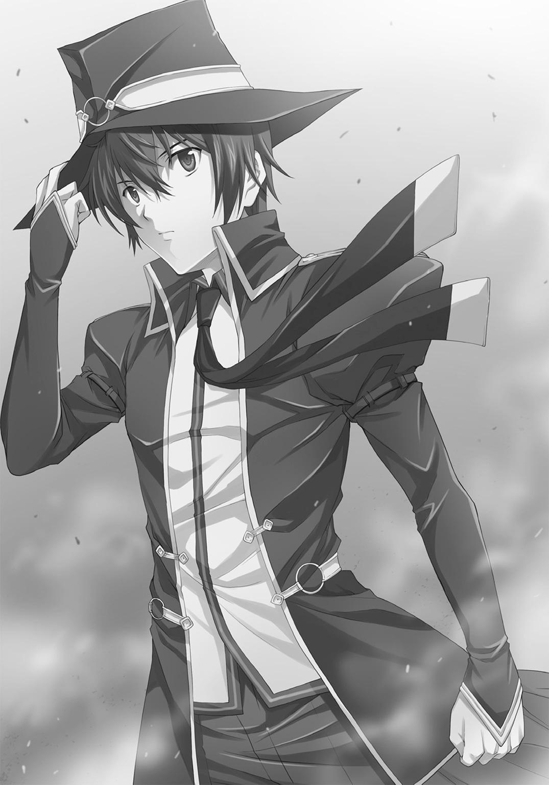
○第四話「長い夜」（byシカゴ）
☆
タグルと泡瀬はほぼ同時に茂みの中に飛び込んだ。
耳をつんざくような高周波の爆発音と共に、立っている木々の上半分が、そのまま僅かに位置をずらして落ち、倒れて地響きを立てる。
先ほどのガイノイドが、ゆっくりと砲塔を巡らせ、タグルたちを探る。
反撃しようと銃を抜いて、すでに弾丸が空だということを思い出し、くの字に本体を折って排莢する。
大小様々な空薬莢が地面に散らばった。
「えーと、大きいほうがいいかな」
呟いて学生服のズボンの中をあさり、中に入っていた銃弾を取り出す。
バラバラの大きさの弾丸から、なるべく大きめのものを選んで弾倉に押し込むと、22口径の装塡されていた穴はカシャリとデジカメのシャッターのような音を立てて広がり、45ＡＣＰが収まっていた穴は僅かに縮んで44マグナム弾を飲み込み、固定する。
「大丈夫、タグル君？」
ＦＮ－Ｐ90片手に、匍匐前進でやってきた泡瀬が、その光景を見て目を丸くする。
「その銃......何？」
「便利だよ、どんな弾丸でもシリンダーの全長からはみ出さなければ使えるんだって......そっちの弾は足りそう？」
「ええ。でも......」
どかん、と近くの木が根元から粉砕されて倒れた。
「このまま匍匐で移動しましょう。あの砲塔型レールガンは厄介だから、なるべくこちらから攻撃しないで。合図したら立ち上がって、まっすぐ走って」
「うん」
頷いてふたりは茂みの中を移動していく。
移動を始めると、またレールガンの発射音がして、こんどはふたりにかなり近い所の地面が吹き飛んだ。
「！」
思わず声をあげそうになるが、それが多分敵の狙いで、何か叫ぼうものならさらに精密に射撃をしてくると思い、悲鳴を押し殺して、泡瀬の後を追って進む。
きゅい、きゅい、というレールの上を砲塔が走る音が遠くに聞こえ、重々しい足音が遠くへ歩いていくのを感じてホッとする。
どれくらい匍匐前進を続けたのか。
「今よ！」
泡瀬の言葉に立ち上がり、転げ落ちそうになる帽子を押さえて走り出す。
泡瀬は途中で振り向いてＰ90を連射した。
最初の五発が相手の頭に命中し、派手によろけたが、そのままＡＪ４型ガイノイドは戦艦の砲塔型レールガンをこちらに向ける。
タグルは振り向いて泡瀬の腕を強く引いて仰向けに倒れた。
一瞬前まで彼女の上半身があった辺りを空気が引き裂き、ホテルの壁面が吹き飛ぶ。
泡瀬を抱きかかえながら、タグルは首を起こし、銃をガイノイドの鎖骨の辺りに向けて引き金を引いた。
狙った場所にぴったり穴が開いてスクール水着の身体が前に倒れる。
そのまま、レールガンが地面に向けられたまま暴発し、吹き飛んだ地面がＡＪ４型ガイノイドを高々と空に飛ばす。
「あ......ありがとう」
もうもうと立ちこめる土煙の中、タグルの上に覆い被さる形になった泡瀬が、顔を真っ赤にして離れた。
「たぶん、あれで当分は攻撃できなくなると思う」
ビルの屋上に、壊れた操り人形のような格好で、ＡＪ４型ガイノイドが落下していくのが微かに見える。
「泡瀬さん、大丈夫？」
「怪我はないわ......今のも『見えた』の？」
「今のは直感、見えてたらもうちょっと上手く反撃してる」
苦笑いしながらタグルは立ち上がった。
泡瀬もＰ90を油断なく構えながら立ち上がる。
見上げるとビルの彼方、吹っ飛ばされた先の屋上で先ほどのガイノイドが立ち上がって砲身のへし折れたレールガンをこちらに向けるのが見えたが、ひしゃげた全身フレームと金属アームも相まって、空しく照準を合わせることも出来ず、砲塔部分もふくめ、身もだえするような動きを続けている。
辛うじて戦闘可能だから、停止信号は発信されないだろう。
「いまのうちだね、ひとまず逃げよう」
タグルは泡瀬の腕を引いて走り出したが、すぐに何かが落下する気配を感じて伏せる。
レールガンの発射音よりも先に、立ちこめる土煙にトンネル状に穴が開いて、風景があらわになる。
煙の彼方に数体のガイノイド。
同じように戦艦の砲塔型の装備をしているものもいれば、ミサイルがずらりと並んだランチャー風の装備をしているものもいる。
新品そのもので数は三体。
「増援！」
泡瀬がＰ90を構えるものの、破壊が大量殺人に結びつくために躊躇する中、タグルは迷わず引き金を引いた。
それぞれの両膝に穴が開いて、三体とも倒れるが、数秒経たずに立ち上がり始める。
目が赤く輝き、タグルは自分たちの身体に別の方向から照準用レーザーの光点が灯っているのに気がついた。
「伏せて！」
今度は泡瀬がタグルの上に覆い被さるように飛びつき、二人の身体すれすれの地面と木々に銃弾が炸裂する。
背後からの銃弾だった。
「狙撃手がいるんだわ！」
「なら！」
タグルはこれまでの記憶を頼りにスイッチを入れ、パーシィの「杖」を作動させた。
それで空気を操り、まだ周囲を漂う土埃をさらに巻き上げる。
「大通りへ！」
泡瀬の言うとおりに走り出そうとして、タグルは足を止めた。
通りに出て走る自分たちを狙って、ガイノイドたちは周囲のことを考えずに発砲し、屋上かどこかにいる狙撃手たちも同じように狙って撃ちまくる。
その結果、爆発で集まってきた野次馬たちが血肉の塊に変えられ、地面に当たった跳弾で子供の手を引いてその場を歩いていただけの母親が顎の下から脳天を貫かれる。
突如として倒れた母親にきょとんとした顔でしゃがみ込む幼女の顔を、ガイノイドのレールガンの、照準調整で放たれた一発が消し飛ばし、その向こう側、慌てて逃げようとしていた老夫婦をすぐそばを走っていた自家用車ごと鉄くずのシェイクの彩りに変えてしまう。
転がった元タクシーはそのままコンビニエンスストアに突っ込んで爆発、炎上、火だるまになって出てきた客や従業員が悲鳴を上げることもできず――――。
「駄目だ、逃げられない！」
タグルは叫んで泡瀬の手を引いて逆に走る。
「た、タグルくん！」
「いまあっちにいったら人死にだらけになる！」
「『見えた』の？」
タグルは無言で頷き、さらに土埃を舞い上げながら走る。
未来が見えなければ、そのまままっすぐに逃げ延びることができただろうが、知ってしまってなお、誰かを犠牲には出来なかった。
「ごめん、泡瀬さん！」
「大丈夫、わ、私たち、な、仲間でしょう？」
精一杯に自分を励ますように言う泡瀬の声が、嬉しかった。
タグルは土煙の中、ガイノイドたちのレーザー照準の光がこちらを探るのを見た。
澄んだ空気の中ならともかく、埃や煙の立ちこめる中ではレーザーは丸見えになる。
それがあちこちを移動しながら確実にこちらに近づいてきているのが見えるのは恐怖だが、先ほど「見た」光景に比べればまだ自分だけだから怖くない。
（いや、違うって！）
タグルは気づいてぎくりと足が止まりそうになった。
（泡瀬さんは巻き込めない！）
そう思った瞬間頰をひっぱたかれるような、剃刀で切り裂くような痛みが同時に走った。
「？」
頰を撫でてみると、深く斬り裂かれている。
弾丸がかすめたのだと気づいた瞬間、タグルは銃をその方向に向けていた。
一瞬、「杖」の機能を止めて、埃が晴れた瞬間、夜空の一角へ向けて銃を放つ。
拳銃で、狙撃銃と対等に渡り合うには、最低でも一〇メートル以内に近づかなければならないが、素人のタグルはそのことを知らない。
そして、撃った。自分の思うままに。
夜空の彼方、近くのビルの屋上からパリンという音がワンテンポ遅れて響き、狙撃手の叫ぶ声が聞こえたが、その後もなにやら英語で「信じられない」とか「神様」みたいなことをわめいているのを聞きつつ、タグルはさらに二発をそれぞれ別の方角へ撃った。
同じ音、そしてよく似た内容の罵り声とも恐怖とも取れる声。
だがそれで弾丸は終わった。
走りながら装塡する暇はないから、そのままベルトの後ろに差し、「杖」をどう使うかに集中する。
（たしか、分析以外、一度にふたつの行為は出来ないんだよな）
つまり今のように風を操りながら周囲を探ったりは出来ても、風に渦を巻かせながら片方で空気を圧縮して防弾板の代わりを作ったりは出来ない、ということだ。
どこかで切り替えねばならないが、恐らく視認されたが最後、新しく現れたガイノイドたちに粉々にされるのは見えている。
だからといってガイノイドたちを破壊してしまうわけにはいかない。
必死に考えるタグルには、いつ自分がそんな複雑な操作を覚えていたのかという疑問を感じる余裕もなかった。
「だとしたら......」
タグルはパーシィの単眼鏡を取り出して鼻にクリップした。
「ひとつの操作対象をふたつに分けての集束と高密度化、高速化は矛盾するか？」
杖のダイヤルを動かしながら問うたタグルへの答えとして、見たこともない文字が表示されるが、少年はその意味を理解出来た――――可能、だ。
「よし、じゃあ............えーと、泡瀬さん、突っ切るよ！」
言ってタグルは足を止め、自分たちを覆っていた土煙のカーテンを加速させる。
風は地面を削り、木々の葉をちぎり取り、轟々と音を立ててタグルたちの周囲を渦巻く。
「あの、悪いけど、僕に抱きついて、合図したら僕に抱きついたままジャンプして！」
「え？ あ、は、はいっ！」
空気の移動速度を高速化、高密度化しながら全てを一気に足下へ移動させる。
レーザーの光が前後左右からゆっくりとタグルたちに近づいてくるのが見えた。
「今だ、飛んで！」
「は、はいっ！」
ふたりは呼吸を合わせたかのように、同時に地面からジャンプした。
杖を振り下ろす。
その瞬間、周囲を渦巻く全ての風と空気を圧縮して足下に............そして解放。
タグルたちは超小型の竜巻に乗って空高く舞い上がった。
「！」
泡瀬がしがみつき、パーシィほどではないにせよ、クラスでは一、二を争う豊かな胸が二の腕に押しつけられるのを意識して危うく集中が途切れそうになるのを慌てて持ち直させ、タグルは杖をさらにコントロールして自分たちの背中に空気を圧縮、解放して前へと飛ぶ。
落下しながらも一瞬で数百メートルを移動し、地面に落ちる寸前にエアクッションを作って降り立つ。
場所は靖国通りに近い、とあるビルとビルの間に出来た路地。
さすがにガイノイドたちは追ってこない。
「急ごう、泡瀬さん」
言って走り出そうとしたが、泡瀬はしっかりとタグルの身体にしがみついたままだ。
「？」
見ると、目をつぶって、細かくぶるぶる震えていた。
「だ......大丈夫？ もう飛ばない？」
ああ、そういえばこの少女はつい数分前にも数百メートルの高さを飛び降りたばかりだったのだと思い出す。
自分だって最初に飛び降りたときは一回だけで、それだってこんなに高くはなかった。
「ご、ごめんね、泡瀬さん。もう大丈夫だから」
「あ、ありがとう......」
まだ頭がフラフラするらしく、それでも何とか歩き出す泡瀬を、タグルは慌てて支えた。
「あ、あのた、タグル君......だ、大丈夫だから」
「とにかく急ごう」
大丈夫だからとふらつく泡瀬を置いていくわけにはいかない。何しろ彼女をこうしてしまったのは自分なのだから。
人々の目は最上階が燃えさかるホテルに向けられている。
夕方の大渋滞で、パトカーも消防車もまだ現場にたどり着けないらしく、数百メートル離れたこの通りに固まっていた。
「何か、飲む？」
近くのコンビニを指さしてタグルが訊くが、
「大丈夫、それよりもとにかく離れましょう。とにかくあのホテルから離れないと」
泡瀬はけなげにもそう言って足を進めた。
何とか、大久保あたりの小学校を遠く左手に眺めながら大久保通りに合流するところまであと僅か、というところでタイヤを鳴らしながら真紅のＲＶ車が止まり、中から小柄な少女がドアを開けた。
「やっと見つけた！」
「カレン！」
「念のために区役所前にスタンバってたら、あんたたちってば爆発が起こってしばらくホテルの間をチョコマカ、と思った途端に五〇〇メートルぐらい一気に移動するし、その後は徒歩移動っぽいし、化け物にさらわれたかと思ってヒヤヒヤしたわよ！」
「色々あったの」
「ところでタグルくん、その格好、何？ あとパスウィダーは？」
「説明は道々します」
タグルは後部座席に滑り込む。
「とりあえず『ろすてぃに屋』に向かってください！ 急いで！」
☆
「どうやら、中止命令を出す必要もなく、君のお気に入りなふたり組は僕のＡＪ４ガイノイドとＮＳＡの狙撃班の手を無事に逃れたそうだ......しかし、あのサタウチ・タグルとは何者なんだい？ 二〇〇メートル離れたビルの上の狙撃兵のスコープだけを撃ち抜いたそうだけど」
ポケットの携帯電話で報告を受け、プルキム・メルキオール・バニオンは愉快そうに背後の人物に語りかけた。
「おまけに、ガイノイドたちは一体が攻撃不能状態に陥っているものの行動は出来る程度に損傷してて、それ以外は無傷だ......一体、どうやったんだ？」
五〇メートルの地底には、人工の明かりのみがある広大な場所があった。
プルキムの前には立ち仕事用の机があり、ノートパソコンが広げられている。
彼はそれを使ってタグルたちを狙うガイノイドたちに指示を与えて操っていた。
「ねえ、パスウィダー、本当はあのふたり、何者なんだ？」
『この地球で何にでもなれる存在......高校生と言う。知らないか？ 実は君もそうだぞ？』
プルキムの前には、黄色と黒で塗られた巨大な特殊コンテナが鎮座している。
特殊合金と防弾はおろか数発ならロケットランチャーの直撃すら耐えうる防爆ガラスで作られた「特殊要人保管庫」。
あらゆる通信、攻撃を受けつけず、専用のコードを知る者以外は開けることが出来ない。
地球上で最も完璧な移動牢獄の一種だ。
「ところで居心地は如何かな、パスウィダー」
『以前『ブラックリスト』というテレビドラマで似たようなのを見たが、あれよりも格好いいな。気に入った............どてっ腹に星条旗カラーでＮＳＡとデカデカと書かれているセンスを除けば............あと、もう少し服を着させてもらえれば、だな』
スピーカー越しにそんなことを言いながら、パーシィはコンテナの中に据えられた豪奢なソファの上で長い脚を組み直した。
「まあ、それでもダグラドナの重合金監獄に比べれば広いし快適だ。もっともあっちは囚人惑星に落っことして中身を一〇〇年生かして監禁するために色々仕掛けがあるからだが」
リラックスしきっているが、彼女は一切の服を身に纏っていない。
健康的に日に焼けていながら、染み一つ、皺一つない肌も相まって、彼女はまるで自然の作り出した彫像のようだった。
タグルたちへのガイノイドとＮＳＡ狙撃部隊の襲撃を打ち切ることを条件に、全ての衣類を脱いでこの中に入った。
パーシィの服はすべて、ＮＳＡの分析に回されている。
くびれた腰も、砲弾のように大きく迫り出た胸も、長い脚もすべて晒しているが、彼女はプルキムを虫とでも思っているかのような冷淡さと自然さで牢獄の中に座っている。
「それはそれは............しかし、まるで君はサタウチくんたちを心配してないんだな？ これから先、我々の追撃があるかもしれないのに」
そして、プルキムも、全裸のパーシィに対して、一切動じる様子がない。
『仲間だからな。ああ見えて何度か修羅場もくぐってる。絶対の死地からなんとか逃げ延びてしまえば人間、案外しばらくは死なないものだ』
「............」
心の底を見据えるような目つきで、プルキムはじっとパスウィダーを見つめていたが、パスウィダーは平然としている。
「まあいい。あなたがここにいるだけで僕はありがたい」
『ひとつ、聞きたいんだが』
パスウィダーは人差し指を一本立てて気取った様子で言った。
『何故四八時間私を拘束していたいんだ？ 四時間でも、十二時間でも、一年でもなく、何故四八時間なんだ？』
「それはお楽しみだよ」
『随分意地悪なんだな。どんな計画がある？』
「本当は一度でいいから『実は二七分前に全て実行したよ』と言いたいところだけど、今回は君を抑えることから始めなければならなかった。地球の技術ではガイノイドを製造するには時間がかかりすぎてね............だからナイショだ」
プルキム・メルキオール・バニオンはそう言って笑った。
『まあいい......ところで、もうひとつ聞きたい。本当にあのＡＪ４型ガイノイドとやらは君が理念を見つけ、設計し、製造工程を指揮し、組み立て、運用しているのか？』
「運用はあくまでもＮＳＡだよ。僕はただ、理念を見つけ、設計し、生産ラインを管理しているだけ。今回は視察旅行と、これからのことに関して君が危険因子になるから、その対抗策を立てるためだ」
『危険因子か。私はこれだけ平和主義者なのに？』
「だが君が『正義の味方』ではあっても『国家や政府の味方』であるとは限らないことは、それこそ歴史が証明している」
たとえば、この一〇〇年でいえば、と前置きし、プルキムは続ける。
「君がアストロフォ人との取引を粉砕したおかげで、ルーズベルト大統領は持病を治すことなく戦争中に亡くなったし、パイロファナクスによって知能を増加させたケネディを暗殺したのも君だ」
『アストロフォが要求したのは子供一五〇〇人の脳で、ルーズベルトはそれを知って私に阻止を依頼した。ケネディの脳をパイロファナクスに喰わせてベトナム戦争で核を使わせようとしたのはＮＳＡの基礎を作った上流階級の連中だろうが......それに、クーデターをソディオカントの技術で画策したマッカーシーを諦めさせたり、ニクソンにちゃんと辞任の幕引きをさせたり、色々いいこともしてるぞ？ 第一、９１１の翌日、私がいなければ国防総省とホワイトハウスで何が炸裂してたか、君はちゃんと知っているんだろう？』
「まあね」
『世界のパワーバランスで言えば、第二次世界大戦後にアメリカと中国はそれぞれ三つに分割されたほうが世界は丸く収まっていた。私がそれをしなかったのはワシントンとリンカーン、マルコムＸとフォレスト・Ｊ・アッカーマンに借りがあって、キング牧師とハーヴェイ・ミルク、レイ・ブラッドベリとマイケル・ジャクソン、そしてキミは名前さえ知らない数多くの、歴史に名前の刻まれない本物の英雄たちに頼まれたからだ――――さて、本題に戻ろう――――本当に君がゼロから作ったのか？』
「そうだ、僕が作った。ある日天啓が降りて、僕の中にあの設計図が一気に浮かんだ。ネジや関節を構成するパーツ、制御装置の配置、配線、構成素材の配合率にいたるまで、だ」
『いつだ？』
「二年前だよ、僕は特別なんだ、だから、神のひらめきを得た」
プルキムは笑みを深めた。
『神のひらめきか。夢でも見たのか？』
パーシィの目が疑わしげに細められる。
「まあね」
『そして神のひらめきで殺戮兵器を作ったというわけか、少女の姿をした』
「テレビでも言ったとおり、あくまでも生活補助および介護がメインだ。もちろん、古式ゆかしい強固なプロテクト、アジモフ博士謹製のロボット三原則は組み込み済み......ちょっとだけ、いくつか回路基板を外せば無効になるがね」
『それはプロテクトとは呼ばない』
「――――ピックアップトラックや大型ＲＶ車に機関銃を載せてゲリラが使う『テクニカル』と同じさ。元々の目的以外のことにユーザーが使用しても、それはユーザーのしたことで、製造元に責任はない。しばらくしたら色々非難されるだろうが、そのときには防護措置をとっていくだけだ。まあ、大抵三日もすれば破られるプロテクトだけどね」
『今の状態のこいつらならそのとおりだろうが、ＯＳそのものを書き換えられたらどうするつもりだ？ 世界に天才は多い。それに私が知る限り、お前の作ったあのガイノイドは上手く使えば異星人の地球侵略にはうってつけだ』
「その心配はしてないよ。何しろ僕は天才だからね、完全なプロテクトをしてる。機能低下はその代価さ」
『お前にその天啓を与えた相手なら？』
「大丈夫だよ、僕はプルキム・メルキオール・バニオン、神さえ超える天才だ、一を聞いて千を知る、万を知る存在だ！ 最初に与えられた一滴の水を、滝のごとく変える！」
プルキムの目はぎらぎらとした奇妙な輝きを宿していた。
パーシィを見つめながら、彼女もふくめた周囲を見ているわけではない、もっと遠いもの、遠い光景を見ている目。
栄光という光を見つめすぎた目。
☆
「............まあ、簡単に帰ることが出来るとは思わなかったけど」
タグルはＲＶ車の中で溜息をついた。
「これじゃまるで戒厳令だよ」
車に取り付けられた液晶画面には、タグルの家の周辺にあるコンビニや電柱に取り付けられた防犯カメラの画像が次々と映っている。
そのどれにも、完全武装した警官隊と自衛隊が一メートルおきに立っているように見えるほどに整然と警備している風景があった。
この警戒網は『ろすてぃに屋』の周辺を半径一キロにわたって固めている。
しかもあちこちに投光器や、工事用のバルーンライトがおかれて昼間のように明るいのが、三キロ離れたここからも判る。
車はコインパーキングの一角に停めてあった。
個人経営のためか、監視カメラが壊れていてまだ修理されていない。
隠れるにはうってつけの場所だ。
「うちの政府はアメリカ様の言うことには逆らえないからなぁ......」
カレンが皮肉そうに唇を曲げた。
「警察までいるということは、ＳＡＴの狙撃部隊もいるってことね。通常の方法じゃあっという間に射殺されるわ」
泡瀬の表情は硬い。
「また例の風を圧縮したジャンプ、してみる？」
カレンのひと言に、泡瀬はぎくりと助手席から後部席のタグルへ振り向いたが、少年は苦笑を浮かべて首を横に振った。
「あれはどこへ逃げてもいいからやれたんです、今回はぴったり『ろすてぃに屋』の前に降りなけりゃいけませんから、そんな精確さは難しいですし、着地と同時に撃たれたら防ぎようがないですよ............でも、いいんですか、泡瀬さんもカレンさんも、一応政府の人......ですよね？」
「ああ？ 気にしない気にしない」
カレンは笑って手を振った。
「どうせうちら『暁』は政府機関の中でも鬼っ子だもの」
「ありがとうございます」
ぺこりとタグルは頭を下げた。
「それよりもタグル君、いいの？ 君こそ民間人じゃない？」
「それはそうですけど、友達に頼まれたことを放り出して、見捨てて逃げるわけにはいかないですよ」
「......タグル君、勇気ある撤退というのも、世の中には必要だと思うわ」
カレンとは真逆に、泡瀬の顔はシリアスそのものだった。
「あなたが逃げると言うのなら、私はいの、い、いの、命がけでもあなたを、ま、守る......まも、守ります」
彼女にとってはいささか芝居がかったその言葉を口にすることに顔は真っ赤にならなかったが、舌がもつれ、泡瀬はそのことを恥じて真っ赤になるとうつむいた。
「ごめんねー。この子、こういう時にトチるクセがあって」
なははとカレンが笑いながらうつむいた泡瀬の髪の毛をくしゃくしゃとかき回す。
「ありがとう泡瀬さん」
タグルは自分を気遣ってくれる泡瀬の心が嬉しくて微笑んだ。
「でも、やっぱり僕はやるよ............それに、いま判ったんだ。パーシィがこのコートと帽子と杖まで僕に渡した理由」
「？」
☆
一方、パーシィの目は最新式の牢獄の中で細められた。
「ということはソフトウェア以外に、ハードウェア的な対抗策がある、ということか？」
『よく分かるね？』
牢獄の向こう側から聞こえるプルキムの声は、わかりにくい皮肉に気づいてもらえた優等生の楽しみに満ちていた。
「君は芸術家肌だからな。私にＯＳのことを貶されて今ごろになって反撃するのがいい例だ。職人や技術畑の要素が強ければそれを肯定してから説明するか、黙ってる......あのガイノイドが君の現在の最高傑作であるなら、あんなにあっさり私たちに向けたり、ヤクザ同士の抗争なんかに使わせるものか」
パーシィは自分が囚われてまで探りたい真相を、今聞き出すべきだと理解していた。
彼は勝ち誇り、自分は文字通り、武器ひとつない裸の状況下で
『そうだよ......あの、ＡＪ４型ガイノイドは、もはや旧式だ、僕はすでに、次世代機を作り上げている、これまでとは全く無縁の、究極の人類の魂の乗り物としてのボディ、義体だ！ その最高のデモンストレーションを四八時間で行い、世界と合衆国に認めさせる！』
「それはとっくの昔にシロウ・マサムネという漫画家が提示した概念だぞ？」
『思いつくなら誰でも出来るが、完成させられるのは僕が神に等しい天才だからだ』
「では、神そのものが相手ならどうする？ 君にそのインスピレーションを与えた」
『神を殺すさ。僕はキリスト教徒じゃないし............そろそろその準備も終えたからね......言っただろう？ 一を聞いて千を作り出す天才だ、と』
その言葉に、パーシィは首をひねっていたが、
『ああ、そうか！』
とすぐに手を叩いた。
「この天候、この気温、あの空......そうだ、一五〇〇年前のバルンムウで見たんだ。インチキ教祖が『神』を名乗る未来の彼自身を引っ張り込んだときだ！ 生贄型時空渦動による大規模な時空強制連結の前兆か！」
『へえ......僕以外にこの答えを出す人間がいるとは思わなかった』
愉快そうにプルキムが笑うが、パーシィは逆に背筋が寒くなった。
彼女は、それが招く結果を見ている。
呼び出すものが問題なのではない。その際に発生することが問題で......いや、それ以上に、やはりこの状況下で呼び出されるものが問題だった。
あのＡＪ４型ガイノイドの形状が、どうしても彼女に不吉な予感をさせてならない。
「やめろ、君が何を考え、どんな防御策を施しているか知らないが、呼び出す予定のものが問題じゃない！ 異次元ゲートは開けた瞬間から次元と次元の狭間で彷徨う連中がわっと押し寄せてくる！ 一九〇六年のプロヴィデンスと同じだ！」
『ああ、Ｈ・Ｐ・ラヴクラフトが神経症を発する理由になったあの騒動だよね？ 知ってるよ。資料を読んだ。大丈夫、あの時よりも科学は発達し、そして僕がいる！ 時間旅行よりは楽さ』
笑いながらプルキムは両手を広げてみせた。
「馬鹿を言うな！」
パーシィの背筋が寒くなる。
この手の人間を、彼女は山のように見てきた。
ギリシアのパルテノンの中で、ローマの宮廷で、フランスの城の中で、ベルリンの演説台の上で、日本の大本営と呼ばれる作戦指揮所で、アメリカのホワイトハウスの暖炉の前で。
勝利と変革こそが世界を救うと信じている者の目。
そのための犠牲は聖なる供物と信じている目。
老若男女の別なく、誰の奥底にもある「絶対正義」という麻薬に中毒した目だ。
「止めろ！」
パーシィは叫んだ。
「あの時は私だって死にかけたほどの戦いだったんだ！」
思わず窓に駆け寄り、拳で防爆ガラスを叩く。
『大丈夫だよ、パスウィダー、僕は完璧だ。そしてアメリカ政府は潤沢な予算と装備を与えてくれた......デモンストレーションは完璧に一時間きっかりで終わる』
「まて、どういうことだ！」
『言ってみたいセリフがある、ってさっき言っただろう？』
剃刀でつけた傷のような笑みがプルキムの顔に浮かんだ。
『今から二七分前、それまで遺伝子保管庫に保管していた全ての遺伝子を使って、召喚用の異次元ゲートを開け始めた』
満面に笑みを浮かべてそう告げると、金髪の美少年は右手で頭を押さえ、左手で腹を抱えて笑い出した。
「貴様！ 七〇〇人を殺したのか！ 今度こそ本当に！」
パーシィの声に、しばらくして彼は笑いすぎて目に浮いた涙を拭って、
『何にでも始めと犠牲は必要だ......なぁに、気にすることはない。どうせ大半は犯罪者だからね』
「そんなことがどんな人間であれ、人の可能性を奪う理由になるか、それならまずお前が先に死ぬべきだろう、このクズ野郎！」
パーシィの拳がガラス窓にたたきつけられ、血が滲む。
『騙されて悔しい？』
高笑いをするプルキムを、パーシィは睨みつけた。
視線で人が殺せるなら、パーシィはこの瞬間、プルキム・メルキオール・バニオンを殺せていたに違いない。
『素敵だよ、君の怒った顔！ 間もなく、僕が呼び出した存在がやってくる、多分君に真っ先に挨拶しに来るだろう！ ゆっくりと語り合いたまえ！』
金髪の天才少年は高笑いをしながら去っていった。
「くそ、くそ、くそ！」
長いブルネットの髪を振り乱し、パーシィは何度も拳をたたきつけた。
「私は、私は、私は！」
涙が流れていた。
「......くそ......くそ......」
そのままずるずるとくずおれ、全裸のエルフの少女は膝を抱えた。
「......七〇〇人だぞ、七〇〇人だ......どいつもこいつも、どうして大義とか正義とかいう麻薬に中毒した途端、『たかが』とか『たった』とか言い訳をして、人殺しに禁忌がなくなるんだ！」
アークエルフの呻くような声が、牢獄の中にこだまする。
しばらくパーシィは己の無力さと失策に肩を震わせていたが、ふとそれを止めた。
「............おかしいぞ？」
声にもう湿ったものはない。顔をあげた。
「なんでわざわざ異次元の扉を開けてまで『標的』を呼び込む必要がある？ デモンストレーションなら人間相手でも十分のはずだ、東京なら誰を選んでもアメリカ人観光客以外なら『とても不幸な犠牲者』と言い張れる。
本来の敵である中東の反乱分子が装備をグレードアップさせたことに対抗するため、という理由を使いたければ自分たちの古くなった技術を横流ししてしまえばいい。
ましてあのガイノイドは旧式だ、四足歩行の砲台代わりになるポンコツロボットを作るぐらいの技術なら......いや待てよ、そもそもプルキムにあの発想を与えたのは誰だ？ あんなことをすれば人類の歴史は無駄に発展する。侵略とかしたいのならそれこそ頭の悪い発想だ、ソディオカントみたいに策略は弄するが鍛え上げた戦士の魂が絶命する時の精神波を喰いたいような連中じゃない、じゃあ人類同士の......いやまて、『頭が悪い？』」
パーシィはまだ血の滲む手を細い顎に当てて考え込んだ。
「最近、このフレーズをどっかで使ったな？ 頭の悪い連中......武器を敵に渡して、いや、自分たちの使う武器を敵に作らせて用意させた？ それも、そこそこのデキのダミーを作るための情報をコミで、となれば......あいつらだ！ とっくに最初っから答えは出てたじゃないか、この馬鹿！ 手の込んだ方法だから誤魔化されて！」
それ以上の推理を遮るように、爆発するような閃光と、炎が監獄のある部屋の隔壁を舐めつくし、照明類を粉砕、ショートさせて一瞬にして焼夷弾を投げ込んだような炎が一気に渦を巻き、重さ一〇トンはある特殊監獄を大きく揺さぶった。
「！」
驚いて立ち上がるパーシィの見た光景は、炎の地獄そのもので、全てが赤く照らされている。
そこに、見覚えのある影が立っていた。
華奢な少女の身体、細い手足、白いニーハイソックスに濃紺のスクール水着、胸には白いゼッケン。
「..................やはり、貴様たちだったのか、今回の黒幕は！ まったくしつこいぞ！」
☆
タグルは車から降りると、高々と杖をかざした。
「来い、『ロスティニア』！」
杖が輝き、高周波の音と共に、たった数時間離れていただけなのに、驚くほど懐かしさを感じさせるあの入り口がタグルたちの前にゆっくりと、蜃気楼が実体化するかのように現れ始める。
「よかった......言ってみるもんだなぁ。本当に来てくれた！」
タグルの言葉に思わず泡瀬とカレンは振り向いた。
「確証なかったの？」
泡瀬の声に、
「いや、なんとなく......だってその、単眼鏡のおかげでいくらか判るけど、パーシィと違って僕は『ロスティニア』の主じゃないし......」
あはは、とタグルは笑った。
ドアを開けようと取っ手に手をかけると、開かない。
「あれ？」
『申し訳ありません、サタウチ・タグル様。今現在、姫様が私を使用出来ない状況なのは理解していますが、あなたを最上位命令者に任命するためのシステムの書き換えにあと五分お待ちください。蒸気精霊杖も一時機能停止し、使用権利を書き換えます......今の状態では機能をフルに使えませんので』
「ロスティニア」のＡＩの声がそう告げた。
「あ、はい、お待ちします」
こくこく、とタグルは頷いた。
「......ちょっと泡瀬」
カレンは目の付け根をもみながら泡瀬を手招きして耳打ちした。
「あんたの彼氏、なんか凄くラッキーなだけの能天気に思えるんだけど？」
「いや、あのカレンはまだ彼のこと、よく知らないから......」
「ふたりとも、どうしたの？」
「ろすてぃに屋」の入り口でもある黒い棺桶の前で待ちながらタグルが尋ねる。
「いや、なんでもないわ、ほら泡瀬、いこいこ。五分後にはとりあえずひと息つけるよ」
「ええ」
そう言ってふたりがタグルの後を追おうとしたとき、彼女たちが背を向けたコインパーキングの入り口、さらにその向こうの反対車線から閃光とともに、高熱を含んだ風が吹きつけてきた。
「！」
本能でカレンと泡瀬がそれぞれの銃を構え、振り向く。
炎の塊が三つ、反対車線に生まれ、そこから細い、少女の姿へと変化しながらこちらに向けて悠然と歩いてくる。
躊躇なく、泡瀬はＰ90の引き金を引き、カレンは車に積んでいたグレネードランチャーを撃ち込んだ。
爆発と銃声が交錯し、アスファルトが砕け散り、爆発の閃光が周囲を照らして振り向いたタグルの顔を照らす。
ガイノイドは破壊されたと、タグルもふくめた三人のだれもが思った。
だが、炎は消えたがその中心であった少女の影はこちらへ向けて歩みを止めない。
三体の影は、ゆっくりと進むと近くの路上パーキングの高級車を、そして自動販売機を持ち上げた。
投げつけられた車はタグルたちの近くにあるビルの壁を粉砕し、炎上する。
「照準修正、再攻撃用意」「武器の調達を必要とす」
「スキャン終了、パスウィダーの仲間を二名確認、第二、第三優先殲滅対象」
「現在の殲滅を優先、武器の現地調達を第二順位に変更」
口々に出てくるのは、野太い男の合成音。
燃えさかるビルの炎に照らされて、その姿があらわになる。
「うそでしょ......」
泡瀬が呆然と呟く。
「殲滅せよ！」「殲滅せよ！」「殲滅せよ！」
相手は間違いなく、ＡＪ４型ガイノイドではなく、数千年後の世界からやってきて、もう少しでタグルを焼き尽くし、泡瀬を惨殺しようとした機会生命体、スウィムウェン。
先ほどと同じ爆発と炎があちこちから上がった。
「殲滅せよ！」の声があちこちから響く。
この駐車場を囲むあらゆる路地から、足音高く、スクール水着少女たちの影が現れる。
「ふたりとも、後ろへ！」
そう言ってタグルが前に出て杖をかざすが、杖は光らない。
「しまった......！」
「タグル君、後ろへ！」
泡瀬が前に出る。
スウィムウェンたちの歩みは止まらない。
どう勘定しても三〇〇体はいた。
「うわ......これって、絶体絶命ってやつ？」
カレンの顔がさすがに引きつった。
武器は何も持ってないが、その白い手指が届けば、タグルたちの身体はバラバラに引き裂かれるに違いない。
「殲滅せよ！」
たったひとつの言葉を繰り返す大合唱が、タグルたちを包む。
○第五話「雨を見たかい」（byクリーデンス・クリアウォーター・リバイバル）
☆
雨は止まない。
タグルはだんだん手足の先から血が通わなくなってきて、冷たく、何も感じなくなってきているのに軽く驚いた。
本来なら慌てふためくはずなのだが、その元気すらない。
（これ......多分、すぐそばで見たら血だまりの中に倒れてるように見えるんだろうなぁ）
当たり前のことさえ違和感があった。
（死ぬのかなあ......こんな、冷たくて、寂しいのは嫌だなぁ......）
☆
沙汰内類が屋上で倒れて雨に打たれるようになる数時間前。
「...やはり、貴様たちだったのか、今回の黒幕は！」
『肯定する、パスウィダー』
ひと房だけ前髪の赤いスウィムウェンは無表情に答えた。
ガイノイドとそっくりな外見ながら、やはり「本物」らしく、質感や「人間そっくりに作られた造形物」としての情報量が圧倒的に違っていた。
「プルキム・メルキオール・バニオンの頭の中に侵入して思考に介入したな？ 単純明快な力押ししかできなかったお前たちが何故こんな手の込んだことを？」
『否定する。我々は愚かではない。我々は自らの計略の根本的欠点を別種族との提案と取引により修正し、過去に遡り我々はこの人類個体に接触したのだ』
「取引だと？」
火災警報が鳴り響き、防火シャッターが降りる中、スウィムウェンは「肯定する」と答えた。
だが、それに続く答えは「どの種族との提案と取引か」の部分は飛ばされていて、後者のことになっていた。
『人類個体・プルキム・メルキオール・バニオンは己の社会的作業行為能力行使方法と能力の劣化による精神的苦痛にさいなまれていた。論理的に言って、彼はこのまま技術者としての盛りを過ぎ、失職する可能性が九八パーセントを越えていた。我々はそこにオーバーテクノロジーの生体電波伝達による技術提供という飛躍を与えた。人類の脳は論理の飛躍が行われると、結果もたらされたものに疑問を持たない、さらにこの個体には『天才』という呼称が与えられていたため、さらに不信感や恐怖がない。かくて我々はこの時代を『再発見』し『侵入』することが出来た』
「......そのためにあのガイノイドは人間を分解して管理出来る能力を持っていたわけか」
他の生物と見なせばアメーバでも攻撃するスウィムウェンとどの種族が「取引」出来たのか、パーシィは興味を持ったが、それ以上に、本当の問題を理解することさえ許されずに笑っていたプルキム・メルキオールのことが哀れで、能面のごときスウィムウェンの無表情を睨みつけた。
会話の間に、天井のスプリンクラーが作動して炎が消火されはじめた。
『肯定する。人類のＤＮＡと断末魔の精神波は、我々にとって有効な誘導信号となる。そして、我々専用の大型兵器もこの時代の技術レベルの最高峰を使って用意出来た』
「なぜそんなことをする？ お前たちのこの時代への絶対時間は終わった。再介入しても時間の修復力でお前たちのしたことは片っ端から消去されていく。仲間を呼べば呼ぶほど、文字通り燃え尽きるぞ」
『肯定する、我々が出現時、高熱を放出したのは時間の修正力によるものである』
パーシィの言葉に、スウィムウェンは動じずに応えた。
『また、我々のみでは直接介入することは出来ない。だがこの時代の人間が我々を呼び寄せれば、それはこの時代の人間が引き起こした事件になる』
「............なんだその理屈は！」
思わず怒鳴ったが、確かにその可能性はある、とパーシィは内心冷や汗をかいていた。
実際「異次元の怪物」のほとんどは時間の流れから外れた存在が亜空間で変質した者であり、それが時折、伝説や噂に残るほどの事件を引き起こせることを考えれば、突破口には違いない。
魔法使いだの科学者だの、個人が呼び出すだけでも場合によっては小さな町ぐらい軽く消え去る大騒動が起きることをパーシィはよく知っていた。
ましてプルキム・メルキオールの背後にはアメリカの防衛のためなら手段を選ばないＮＳＡという巨大な組織がついている。
『そして、決定的な変化が起これば、時間は本来の流れのために我々のいる時間を切り離し、枝分かれさせ、この世界はいくつもある並行世界のひとつに変わるだけだ』
スウィムウェンの解説の間も、天井を走るパイプの一つから液体窒素が放出され、周囲の気温が無理矢理下げられ、監獄の中にもうっすらと霜が張る。
「くそ！ お前のせいで私まで凍死だ！」
『否定する、お前はこの程度では死なないことはコレまでの記録で明白である』
スウィムウェンは頭をひとふりすると、自らに張り付いた氷を振り払った。
隔壁がゆっくりと開く。
『やあ、来てくれたね、僕のひらめきの『神』、スウィムウェン！』
アメリカの天才少年は満面の笑みを浮かべ、両手を広げた。
「プルキム・メルキオール・バニオン！ 貴様、こいつらが何者か知っているのか！」
防爆ガラスにしがみつく勢いのパーシィに、プルキムは微笑みを向けた。
『知っているさ、パスウィダー。君の宿敵で、遠い未来、我々を滅ぼしに来る連中だろう？ だが遠い、数千年も未来の話だ。侵略されたのは僕らじゃない、彼女たちを倒したのも僕らじゃない、人類の子孫たちが勝手にやったことだ。親が子供のやったことにいちいち責任は取れない、だが交渉は出来る』
「な............」
『とっくにそのことは織り込み済みなんだよ。彼女たちとは先月ようやく話がついた......僕らは交渉開始の時点で彼らに〈負けた〉と白旗をあげたということさ。あとは長い長い戦後になる』
「な......」
『肯定する。我々は地球人類に勝つために来た。この時代最強の国家のひとつが降伏を示し、軍門に降ることに我々は満足し、彼らの協力をもって他の国を降伏させれば我々は本格的に地球人類に勝利したことになる。我々に勝利の後の統治および支配の興味と欲求はない』
スウィムウェンはプルキムの言うことを肯定した。
『いい取引だろう？ 彼らは勝ちたい、僕らは彼らになら負けてもいいから地球では勝ちたい。両者ともに損をしない』
☆
周囲は燃えさかり、火の海だが、空だけは涼しげにそこにあった。
夜空に星が瞬くのを、タグルの単眼鏡が映した。
星は、そのまま彼らの目の前に降ってきた。
青い光の星だった............みるみる大きくなってサーチライトのように周囲を走査する。
スウィムウェンたちの間でぱちぱちと音がして何かが弾ける気配。
『相手のシールドを無効化した、タグル君、アワセ、撃て！』
聞き覚えのある野太い青年の声がスピーカーで増幅され天空から降ってきて、青白い、パーシィの「ギズモ」と同じ青い光が周囲を照らしたかと思うと、軽快な数挺の重機関銃の掃射音がして、次々とスウィムウェンたちをなぎ倒していく。
タグルたちも慌てて銃を撃ちまくり、なおも立ち上がり、あるいは仲間の屍を乗り越えて殺到してくるスウィムウェンを倒す。
ほんの数秒だったのかもしれないが、タグルにとっては一瞬のようでもあり、数時間のようにも思える時間が過ぎた後、ようやく立っているスウィムウェンはいなくなった。
『大丈夫か、みんな？』
夜空にうっすらと半透明のアウトラインが描かれ、それがゆっくりと実像を伴って出現してくる。
寸詰まりの飛行船と、エイを組み合わせたようなデザインの飛行装置だ......翼も、エンジンらしいものも見当たらないが、先ほどの青白い光はここから放たれていた。
「ひょっとして......レッドさん？」
『覚えててくれて嬉しいよ！ タグルくん、みんな怪我はないか？ 船の修理が終わったんで駆けつけたんだ！ 伏兵って大事だねえ！ ヒャッホー！ 俺かっこいいー！』
レッド・リーコンの陽気な声がスピーカーで増幅されて響く。
今頃コックピットで片手でガッツポーズしながら陽気に笑ってるに違いない。
船の修理をすると言って車でホテルに向かうタグルたちとは分かれて行動していたが、ちゃんと合流しにきてくれたのだ。
「なーんかあの人、ノリノリだねえ」
ぽかんとカレンが空を見上げて呟いた。
「まあ、ああいうアメリカンなノリは嫌いじゃないけどさ」
「伏兵は大事と言うより、ありがたいと思うわ......今回は特にね。お礼代わりにあなた、彼にハグしてもらってきて」
「セクハラ受けてこいって言うの？ それってパワハラじゃない！」
「私もやられたもの」
「同調圧力は嫌い！」
安堵してカレンと軽口をたたき合いながら、ようやく泡瀬は笑みを浮かべることが出来た。
Ｐ90の弾倉はもう空だった。
☆
「そんなことですむと思うのか、天才のくせにそれも見抜けないのか！」
『矛盾のない取引に、裏はないものさ』
「ちがう、君はやつらに深層心理を操られているんだ、『天啓』とやらを受けたときに、意識の奥底にバックドアを作られてるんだ！ 考えろ、気づけ！」
『僕は天才だ、全てを理解した上でこの降伏条約を結んでいる、アメリカ合衆国大統領とＮＳＡ長官の代理としてね』
『ゆえにあと三〇分後、私を含めた最初の三〇〇〇体は最初の現地のビーコンとして信号を発し、時空間を越えて残りの我々がやってくる。うち四千万体は歴史の修正力によって燃えるつきるが、それでもなお、三千五百五十五万六千五百四十一体の我々が到達する』
「プルキム！ こんな無茶をしたら、東京は次元渦動エネルギーのバックファイアをモロに受けることになる！ こいつ一体が出現しただけで、周辺の絨毯や壁紙が一瞬で炭化するほどの熱が出たんだ、三千万体以上ともなればどうなるかの見当はつくだろう！ 大虐殺どころじゃない、地球規模の環境破壊だ！」
パーシィの血相が変わる。
「まして歴史の修正力はさらに数万倍になってお前たちスウィムウェンをも焼き尽くすぞ！ 単体での出現............いや、千体規模なら何とか耐えられるかもしれんが、万単位は何億度の炎になると思う？ 計算しろ！ 立ち去れ！ 諦めろ！」
『肯定し、否定する。スウィムウェンに死の恐怖はない。必要な犠牲である、計算はすでに行われ、必要な犠牲数は把握し、可能と決議された。我々は勝利のために存在を全うするのだ』
「イカレ機会生命体に何を言っても無駄か......で、私にそんな話を聞かせてどうするつもりだ？」
『お前の努力が全て無に帰するのを、その監獄の中から眺めさせ、お前の感情を揺さぶり、我々の屈辱を晴らす。未来の地球人類以上に、我々を敗北させてきた〈イコライザー〉、個体名パスウィダー、お前に敗北を味わわせることが目的である』
『これも、彼女たちとの交渉条件のひとつでね......一〇〇年ほど君を監禁して、我々の歴史が改変されないと判明したら、殺してもいい、と』
プルキムがパーシィの窓をのぞき込みながら、悪戯っぽくウィンクした。
『否定する』
いきなり背後のスウィムウェンが言った。
『我々はお前たちの提案を記録したが、この項目のみ、同意するという返事はしていない』
『なに？』
振り向こうとしたプルキムの胸から、不意にスウィムウェンの白い指先が生えた。
手刀がその心臓を貫いたとパーシィが悟ったときには、その手はもう引き抜かれ、鮮血が窓を染める。
☆
「船の修理が終わった途端、パーシィの装備譲渡の反応が出た上に、君の世界で絶対時間計が異常な反応をし始めたもんだから、気になって来てみたんだが」
レッドはそう言ってあの妙に輝かしい笑顔を浮かべた。
それだけで、タグルはホッとする。
変わらぬもののありがたさが身に染みた。
「ロスティニア」が書き換えを完了したから中に乗り込め、と指示を出した。
「その様子じゃ、どうやらパーシィは敵に捕らわれた、ってところか」
「ええ」
「じゃあ、俺の船を収容するよう『ロスティニア』に頼んでくれ、新船長どの」
「は？ あ、そうですね、は、はい」
こくこくと少年は頷きながらドアを開けた。
途端に、甲高い警告音と、赤い光がタグルたちを照らす。
『さっそくですがタグル様、私の修理が九〇パーセント完了いたしました。ゼン・キャノン以外の全ての装備が使用可能です』
「りょ、了解、レッドさんの船を収容して！」
『承知いたしました』
不吉な警告音の鳴り響く真っ赤な船内を進み、タグルたちは操縦室に入る。
久々に床に表示された絶対時間計は長針が十一時五九分から十二時ちょうどの間を激しく行き来してぶるぶると震えている。
『ご覧のように絶対時間計に異様な反応が出ています。何者かが時空法則を無視して、歴史に介入しようとしているようです。通常なら歴史の修正力で弾き出されますが、彼らは何らかの方法でパラドクスの許容現象を引き起こし、これを無効化しています』
「ロスティニア」のＡＩが落ち着いた声で物騒なことを報告した。
『【転換点】以外の時間に介入して歴史に変更を加え、それが成功してしまった場合、元になった時間の流れそのものが歪み、捻れてこの宇宙を維持できなくなる可能性もあります』
「結果として、どうなるの？」
『生み出されるはずの並行世界も、元になった時間も、他の並行世界の要素へ変換、分解されて消滅します。場合によっては新たな宇宙の礎になるでしょう。早い話が、消えて無くなります。この船に乗っている場合に限り、別の並行宇宙に逃れれば安全ですが』
「か、解決策はある？」
『はい、タグル様。改変しようとするものを殲滅、粉砕すればこの状況は終了いたします』
「この船に武器は？」
『四つ、ございますが、次元砲は使用出来ません』
「残り三つのうち今使えるものは？」
『浮遊惑星処理用の重力子魚雷と、高出力レーザー、および体当たりでございます』
「............特攻ってこと？」
思わずカレンがそうツッコんだ。
『この時代の言語に照らし合わせると、それが一番ふさわしい呼び名でございますね』
しれっとＡＩは答えた。
「どれくらい時間があるの？」
『あと三〇分でございます』
「パーシィの居場所は分かる？」
『はい、タグル様。ですが姫様を救助して、それからこの状況を解決するには時間が五分足りません。姫様が収容されている場所にもスウィムウェンがおりますし、私の転送システムや入り口の転移を妨げる、乱数粒子障壁が五重に張り巡らされております。ご自身と皆様が徒歩、あるいはレッド様の船で突入したとしても、スウィムウェンとＮＳＡの攻撃を受けて死亡する確率は九五・九九九九九九パーセント、それ以外の方法で突入した場合九九・九九九九九九九九九九パーセントの確率で全滅します。また、この船の武装はそれぞれにオペレーターが必要であり、この人数は運用できるギリギリの数です。また、武器を使用する場合はあなたの指示が必要です』
「船長をレッドさんに......」
『最上位命令者の再切り替えはさらに一〇分が必要です』
「つまり、パーシィは諦めて世界を救え、ってこと？」
『効率的にはそれが一番です。そして今、私の主はタグル様であり、姫様は第二命令者でしかありません、最優先対象はあなたです、タグル様』
タグルは五秒間、黙って視線を床に落とした。
「判った、『ロスティニア』、パーシィの意志を尊重する。最優先される標的はどこ？」
『現在この次元で最も近い場所は新宿都庁上空です』
「全速力でそこへ向かう。発進して！」
『了解です、タグル様。賢い選択に賛辞を............次元偽装解除、戦闘態勢に移行します』
ごうん、という地鳴りのような音がして、「ロスティニア」が動き出した。
人々が騒然とする中、全長八〇〇メートルの巨大な、旧式の潜水艦のようなフォルムを持つ青い船体の舳先に、銀色の鎧を纏った女騎士が胸の前で手を交差させた像が取り付けられているのが印象的な巨大な飛行物体が埼玉県朝ケ市上空に姿を現し、そのまま、信じられない速度で新宿へと移動を開始した。
☆
腕が引き抜かれると、プルキムは倒れてそのままになった。
『苦痛はない、これは慈悲である......だがパスウィダー、貴様の場合には急速排除が最上策であるが故に選択する。パスウィダーの生命活動を停止する』
監獄内のスピーカーはスウィムウェンの決定を伝えた。
「なんてことをする！ 貴様たちの協力者だろう！」
呆然としながらも叫ぶパーシィに、スウィムウェンは無表情のまま、
『いずれ地球人類と惑星そのものが我々の資源として全て利用される。この個体の活動停止時期が早まったのみで、変更はない』
「やっぱり全て破壊し、滅ぼすつもりか」
『否定し、肯定する。全ての破壊は最後である。まず全地球人類の生命活動の停止、およびその後の人体の再利用工場の建設と稼働による兵力不足解消とさらなる我々の種族改良、惑星の破壊による高熱、および重力分解による、地表と地中資源、原子レベルの利用。それこそが我々の望みであり、我々が失った資源的、効率的被害の補塡方法である。また、パスウィダーの早急な排除は、我々の計画が最後まで完遂されるための障害排除として最優先事項でもある』
「お前をぶっ殺してから全てを終わらせてやる、と簡潔に言え！」
パーシィの叫びを無視して、スウィムウェンは拳を振りかざした。
「肯定する。硬度力場展開、右腕に出力の七五パーセントを集中。打撃開始」
パーシィの入っている特殊要人保管庫の防爆ガラスに、遠慮なく何度も拳が打ち込まれ、特殊合金で戦車以上の装甲と重さを持つ監獄は揺れた。
「うわっ！」
拳が振りかざされる度に揺れる監獄の中、パーシィは思わず脚を滑らせて倒れる。
「くそ！ ガンガン五月蠅い！ 一発でこんなもの破壊するぐらいの科学力はないのか、お前たちには！」
『騒音による苦痛も、これまでのお前の行為に対する僅かながらの代償補塡行為である』
さらに数発。ついに防爆ガラスにも白い亀裂が入った。
さらに数発拳が叩き込まれると、とうとうガラスを拳が突き破る。
☆
新宿の都庁上空まで来た「ロスティニア」はそのまま垂直上昇を始めた。
ある高度まで来ると、それまで何の変哲もない真夏の空が、眩い閃光を立てて壁となり、上昇を阻む。
船体そのものが黄金色に輝き始めた。
時間の修正力による圧力を自らのエネルギーに変え、時間に侵入してこようとする存在がいる時空間へと無理矢理割り込み始め、やがて金色の輪が「ロスティニア」の舳先に現れ、じわじわと船体がその先にある極彩色の輝きに満たされた中へと潜り込んでいく。
「ロスティニア」の船尾が金色の輪の中に入ると、輪自体も小さく収束して消え去った。
極彩色した時空間の奔流の中、ロスティニアの巨大な船体は木の葉のように上下左右に揺さぶられながら、恐ろしい勢いで流されていく。
『時間流に侵入、目標確認』
戦闘用に照明を消し、コンソールの光のみがうっすらと輝く「ロスティニア」の操縦室でＡＩが淡々と報告する。
正面のメインスクリーンに、巨大な円盤状の時空船が十数隻投影される。
あの全てにそれぞれ一〇万近いスウィムウェンが搭載されているのだ。
『目標接触まであと十五分、武器使用域まで五分』
「了解、左舷、右舷の時空フィールド用レーザーの使い方は何とか覚えました！」
コンソールに指を走らせ、高出力レーザーのコントロールスティックを微調整しなが泡瀬が答える。
「重力子魚雷、装塡完了。照準はよく分からないけど、多分当たると思う。さっきも命中させたし」
こちらはカレンだった。
「出力調整は順調」
レッド・リーコンがこの中ではもっとも忙しく、コンソールのあちこちをいじりながら出力調整を繰り返している。
「防御シールドを前面に集中。敵艦に体当たりしてから攻撃を開始」
闇の中、タグルの命令が響く。
☆
闇の中、ごくりとタグルは息をのんだ。
胃がきりきり痛んだ。
ここから本当に戦闘となる。
レッドや泡瀬、カレンの命を自分が好き勝手に使うのと、同義語だ。
そして無責任にも自分は............
『あと三〇秒で最初の敵艦に衝突』
だが、これは自分で選んだことだ。
大博打だが、いまさら降りればもっと人が死ぬ。
タグルは落下する暗闇の中、指示を出した。
「『ロスティニア』船首変形開始。衝角戦用意！」
『了解、当艦フィギュアヘッド収納、液化金属放出、磁力フィールド展開............船長、鋭角、鈍角どの角度にしますか？』
「どの角度がいいの？」
『鋭角ならば突き刺さる深さは確実ですが、反対に引き抜くのが難しくなります、鈍角はその逆です』
「了解、最初は数をこなそう、鈍角で！」
『了承しました船首ラム、鈍角変形』
磁力フィールドによって液化金属は浅い角度の巨大な刃物へと変形していくと、力場フィールドを集束させることで固められ船首ラムへと完成される。
『最初のターゲットを補足、如何いたしましょう』
タグルは息を吸い込んだ。
彼の周囲の暗闇ではそろそろこんな命令をしている暇がなくなることを知らせる最終警報が鳴り始めている。
「突撃開始、以後各個撃破、攻撃タイミング、破壊行程、操舵方向そのほかは各員に任せる！ 各自自己判断で行動せよ！」
『了解、タグル様、ご武運を............姫様をお願いします』
「ロスティニア」のＡＩの声は微かに敬意を含んでいるように聞こえた。
「ありがとう、ＡＩさん」
頷いて、タグルは闇の中、自分の身体を縛り付けたシートのアームを握りしめる。
☆
拳が引き抜かれると、スウィムウェンリーダーの両手が、窓枠を上下に押し開き始めた。
奥歯がむず痒くなるような異音を放ちながら、特殊合金が無理矢理こじ開けられていく。
「殲滅せよ！」
スウィムウェンの上半身が監獄の中に素早く飛び込むと、パーシィの腕を摑んで引きずり出す。
「うわっ！」
そのまま霜の張った床に放り棄てられ、パーシィの肢体は突風に晒された木の葉のように転がり、壁にぶつかって止まった。
パーシィの右肩で嫌な音が響く。
さらに背中全面を壁にぶつけ、呼吸の止まった状態でのたうつパーシィに、ゆっくりとスウィムウェンは近づいた。
「殲滅せよ！」
声と共に、手を伸ばそうとしたスウィムウェンリーダーの頭上が砕けた。
轟音と共に到達した圧倒的な質量によって、防御シールドを作動させる暇もなく、スウィムウェンリーダーはその下敷きになった。
フットボールを巨大化させたような奇妙な形の金属の塊。黄金色に輝いていた。
「ダ、ダグラドナの重合金監獄！」
ようやく壁に背中を付ける形で上半身を起こしながら、パーシィは呆然と呟いた。
「なんでこんな所に？」
破壊のためにわき起こったコンクリートの粉塵と冷気の霧が立ちこめる部屋の中、その中心部あたりに丸く線が走り、持ち上がると下に向かって外れ、同時にあちこちがスライドして人影が床に降り立つ。
「パーシィ！」
銃床がリング状の弾倉も兼ねているという奇妙な形のアサルトライフルを肩からスリングで下げた沙汰内類がパーシィの衣装と帽子を纏って飛び出してくる。
「大丈夫？」
「右肩を......やられた、多分、脱臼してる......大丈夫、今自分でなんとかする」
安堵の声をあげて右肩を押さえ「ごきり」と肩を入れたパーシィは次の瞬間、あることに気づいて慌てて顔をあげた。
「タ、タグル、来るな！」
「大丈夫、スウィムウェンはもう壊れてるよ」
彼女の「杖」をかざして確認し、少年は霧の向こうからやってくる。
「いや、あのそういう意味じゃ......」
ない、と言い終える前に、タグルは霧を抜けて、パーシィの前に立っていた。
「......」
「..................」
パーシィはタグルの顔を見上げ、タグルはパーシィの姿を見下ろしている。
両脚を前に投げ出して壁にもたれた、一糸まとわぬ全裸の姿を。
一瞬の後。
「きゃああああああああ！」
しなやかな長身を縮こまらせて、パーシィの口から悲鳴があがった。ついさっきまで、プルキムに全裸を見られても悠然と脚を組み替えた少女と同じには見えない。
「あ、あ、ああっっち、あっちを向いててくれ！ は、裸なんだっ！」
「ごごごごごごめん、見てない、見てないから、今の見てないっ！ 思ってたより胸大きいんだなとか、無駄どころかアンダーがないんだとか、綺麗なピンクなんだ、とか思ってない、考えてない！」
パーシィは少年に背を向けつつ、胸元と脚の付け根を左腕、右の掌で隠し、タグルはあらぬことを口走りながら慌てて後ろを向いた。
（ズルイよ、この前の紐みたいなビキニの時は平然としてたのに！）
思わずそんなことを考える。
「こ、コート、脱ぐから！」
「いや、今君が装備を脱ぐと『ロスティニア』の最上位命令者の書き換えでまた手間取る、それよりも私のギズモを渡してくれ、あとコートの左二番目のポケットにあるハンカチ。それでとりあえずの服を作る」
「う、うん！」
背中を向けた少年はそっと上下逆にして、ハンカチを載せた握りがパーシィのほうに向くようにしてから蒸気精霊杖を手渡した。
青白い光が輝き、「いいぞ」とパーシィに声をかけられてタグルは後ろを向いた。
パーシィは、以前店番の時に着けていたのと同じような、白い紐で作られた水着のようなものを纏い、左手で突いた杖で立ち上がる。
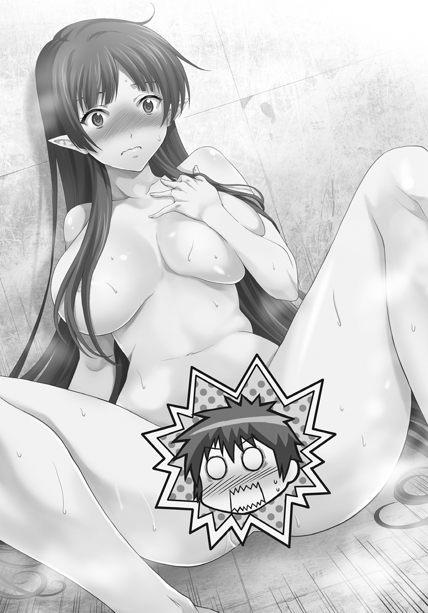
「これでいい」
そして、昂然と胸を張った。
「いや、あのそれ全裸とあまり変わらないような......」
「これでいいんだ！」
まだ顔を赤くしながら断言すると、パーシィは肩を押さえて呻いた。
「大丈夫？」
「くそ......アドレナリンも万能じゃないな。肋にもヒビが入ってる......タグル、コートの右側、上から三番目の内ポケットの中に外科治療用ナノマシンの入った無針注射器があるから出してくれ。右だぞ、左にあるのは麻酔銃だからな」
「緊張して間違えるからそういうこと言わないでよ！」
言われるままにそうすると、ちいさな水鉄砲のようなものが出てきて、パーシィに渡すと、自分の右肩にそれを打ち込んだ。
「これで脱臼は何とかなる......」
「大丈夫？」
「痛みまでは抑えないからしばらく呻いていると思うが気にするな......そうしないと神経の再生に良くないのでな。しかし『ロスティニア』はどうした？ 君の命令なしでは動かないはずだが？」
「時間をこじ開けて入ってこようとしているスウィムウェンの船を迎撃しに行ってる」
「君が指揮しないで？」
「指揮ならしてる」
タグルはそう言ってポケットからパーシィのくれたシールを貼ったスマートフォンを取り出した。
「こちらタグル、無事に突入成功、パーシィは保護した、安心して全員戦って！」
『よっしゃあ！』
レッドの声が威勢よく響いた。
『こっちも二隻目の土手っ腹で撃ちまくってるところだ、残り十三隻、片付けたらあとで会おうぜ！』
通話が切れた。
「ＡＩに聞いたら音声でも指揮には変わりがないって。帰りはレッドさんの船が自動操縦でここまで来るから、それで」
「............君は裏技を見つける天才だな」
軽く微笑むパーシィだが、タグルは怪訝な顔をした。
「その人......」
自分の足下に転がっている身動きしない霜の塊を一瞥し、パーシィは溜息をついた。
「プルキム・メルキオール・バニオンだ。スウィムウェンに騙されて、殺された」
「いや、そうじゃなくて......頭」
「？」
タグルの視線を辿ってみると、白い霜に覆われたプルキムの金色の頭髪がずれていた。
カツラらしい。
しかもその下にある地肌にはまっすぐな縫合線が見えた。位置からすれば眉よりやや上の部分をぐるりと一周している。
「手術跡............というよりこれは移植......なんでだ？ スウィムウェンの奴らが手術？ そんなことならＮＳＡが許さないだろうし、ＮＳＡが彼を手術したなら傷病記録があるはずなのに、アワセの記録にも、私が調べたほうにもそんなものは......」
パーシィが首をひねる前に、落下物の気配がした。
「パーシィ！」
タグルが抱きついて後ろに下がらせなければ、そのまま落ちてきた天井の瓦礫に、プルキムの死体ごと踏みつぶされていたかもしれない。
「大丈夫？」
慌ててパーシィの胸元からタグルは離れた。
「あ、ああ、しかし......問題発生だ、タグル」
頭を振りつつ、なおもいやみったらしく痛む肩に顔をしかめながら、パーシィは少年に視線で示した。
「え？」
タグルがその先へと振り向くと、埃まみれの床に人影が伸びていた。
人影はひとつではなかった............どう見てもスウィムウェンの群れだ。
タグルの開けた穴の縁にそって遙か屋上まで続いている。
「殲滅せよ！」
「殲滅せよ！」
例の言葉の合唱が起こった。
「僕たちとレッドさんで一〇〇〇体はやっつけたと思ったのに......」
「そういえば『我ら最初の三〇〇〇体』とか言ってたな、あいつ」
パーシィが苦く言いながら、杖を左手で構える。
☆
とにかく、悪霊に取り憑かれたように、泡瀬は引き金を引き続けた。
高出力の単照射型レーザーはそのたびに「ロスティニア」が突っ込んだスウィムウェンの時間船の傷口を広げ、灼きつくす。
「このこのこのこのこの！」
カレンも同じように魚雷発射のトリガーを引き、装塡作業を繰り返す。
今頃敵艦を外から見れば、内側からポップコーンが膨らむようにぼこぼこと船体があちこち膨らみ始めている頃だろう。
やがて、激しい震動と共にぐん、と泡瀬は座席に押しつけられた。
これまで突き刺さっていた敵船が破壊され、船がまた自由になったのだ。
『十八隻目、撃破いたしました』
「ロスティニア」のＡＩが簡潔に今回の勝利を伝える。
「あと何隻ありますか、レッドさん？」
泡瀬の問いに、出力調整と操舵を担当しているレッド・リーコンは額に浮いた汗を拭いながら爽やかな笑みを浮かべた。
「大分減ったぞ、あと二〇隻だ！」
「わーい」
カレンが力ない声をあげる。
『その前に問題発生です、先ほどの船のスウィムウェンのうち一四〇〇体前後が本船表面に取りついた状態です。排除しないと各種武装、および本体装甲面への破壊工作が始まるかと思われます』
「なにか、そういうときに使える装備や武器はありますか？」
『はい、ございますが最低でもおひとり、その装備ごと外に出ていただかねばなりません』
「レッドさん、レーザーのエネルギーの再充塡と、魚雷の再生産から計算して、次の敵艦までどれくらい時間、ありますか？」
「まあ、一〇分、ってところだな」
「わかりました、私、出ます」
泡瀬はシートベルトを外して立ち上がった。
『了解です、では左手の入り口から移動用カタパルトに』
「泡瀬、大丈夫なの？」
カレンが珍しく不安そうに尋ねるのへ、
「大丈夫、格闘戦と近距離戦は私の本分よ」
ニッコリ笑って泡瀬は親指を立て、ＡＩの言うままに左手の入り口に入った。
何もない、と思った瞬間、恐ろしい勢いで身体が横に流れ、泡瀬は一瞬で、無数の鎧甲冑のようなものが立ち並ぶ空間の真上に飛ばされていた。
「なに、これ......どうしてパスウィダーしかいないはずの船にこんなに？」
空間は広大だった。
立ち並ぶ鎧甲冑めいた何かは、どう大雑把に見積もっても数千体はある。
そして、どの鎧甲冑もぴかぴかに磨き上げられて、僅かな天井からの光に輝いていた。
よく見れば一体一体微妙にデザインが異なる。
顔の部分も鳥のようなものからドクロのようなもの、あるいはただの一枚の板を曲げただけというような単純なものまで。
普段ならパーシィのコレクション、と思うかもしれないが、戦闘モードに頭も身体も切り替わった泡瀬は「違う」と断じた。
ここは、虚ろな、物の展示場ではない。
「暁」や彼女の実家にある宿業を背負った刀や鎧、武器を集めた場所と同じ、無念と、本来自分たちが存在するべき戦場への渇望とも怨嗟ともとれる感情の気配。
同時に泡瀬は自分たちが使う「特五装備」が本来どこから来たものなのかを理解した。
こちらのほうがひと回り細身になっているが、デザインの基本や、装甲の関節構造部分や背面に伸びている細いパイプの配置などは、間違いなくここに並ぶものが基本になっている。
主を失った武器たちの墓場。
そのままゆっくりと泡瀬は立ち並ぶ鎧甲冑の真ん中に下ろされた。
寒気にも似た「かつて人がひしめいていた名残」が泡瀬の皮膚に刺さってくる。
今まで知らなかったが「ロスティニア」には広大な墓地があるのだと理解する。
それ以外、この膨大な気配の名残の説明がつかない。
『肉体精査完了、アワセ様に合うようにパーツを調整いたします............お好みは？』
「色は赤、左腕の装甲は分厚い方がありがたいわ」
鎧たちの間が開き、遙か彼方から手や足、頭部や胴体のパーツが飛んできて、泡瀬の頭上で組み上がり、降りてくる。
いつも使っている「暁」の装備品よりも、それは寄せ集めのパーツなのにスマートで、明らかに高度な技術で作られているのが判る。
どうやって装着するのか、と思うと、鎧はそのまま一瞬半透明になると泡瀬の身体に「重なり」、実体化する。
『申し訳ありません泡瀬様、女性用の武器は現在メンテナンスが終わっておりませんので、いま空中に浮かぶどれかをお選びください』
ＡＩの声に合わせて、目の前にいくつもの無骨な武器が現れた。
『銃器類は時空間移動中で照準、弾道に変化が大きく、本船に傷がつく恐れのある威力のものしかないので、近接専用武器のみとなります』
泡瀬は、その中で、もっとも無骨で、最も重そうな武器を取る。
『本当にそれでよろしいのですか？』と「ロスティニア」のＡＩが訊ねるほどに。
それは両手持ちの柄がついたナタのような、斧のような刃物。
『斧山刀はかなり扱いが難しいですが？』
「ええ。それと肩と背中の盾はいらないから外して。当たらなければいいだけだから」
泡瀬は頷いた。ここに幸いタグルはいない。戦闘機械としての自分を見られる心配はなかった。
だとしたら、効率が第一だ。
「これが壊れたら、お代わりを撃ち出してもらえるかしら？」
『ご安心を、今のアワセ様の鎧の装甲は、地球の、艦載機を全て発進させた空母五隻と同じ防御力をもち、強度はさらにその五倍ございます。武器の強度はさらにその七倍。スウィムウェンの一〇〇〇体ごときでは、壊れることはございません』
「では、行きましょう......船の上に運んで」
すべて言い終わる前に、泡瀬は凄まじい勢いで流れる極彩色の空の下、果てしなく続く金属の表面に立っていた。
宇宙ではなく、時間の流れの中。
『蛇足ながら、鎧自体が発生する人工重力によってアワセさまは自在にこの船の上を移動出来ます、どうぞご武運を』
もはや見慣れたスク水少女たちが、その空の下、大理石の表面に貼り付く虫のように両手両脚で取り付いているのが見えた......明らかにこちらに気づき、わしゃわしゃと方向を変えるのが、妙におぞましい。
「............」
武器を肩に担いで泡瀬はゆっくりと息を吸い、吐いた。
目を半眼に閉じる。
何が何でも目の前にいるこの連中を打ち倒し、タグルのもとに戻る。駆けつける。
それだけを決めていた。
あの少年の中に見た光だけを目指して帰る。
その光が、少しは自分をまともな存在に変えてくれると、泡瀬は信じているから。
いつもの祝詞はこの戦いにふさわしくなかった。
はじめのかけ声はひとつでいい。
終わるまでは無言、全ての気迫と誓い、戦う相手への強烈な呪いの言葉。
「外道・鏖殺！」
頭に浮かんだそのひと言を口にした瞬間、泡瀬は自分を包むこの鎧のような宇宙服が歓喜にわななくのを感じた。
間違いない、この鎧を含めた、全ての「ロスティニア」内の鎧は墓標であり、主の帰還を待つ兵士たちだ。
なぜそんなものが「ロスティニア」の中にあるのかは判らない。
自分はどうやら彼らに認められた。いまはそれだけが重要だ。
勝てる、という確信を持って刃物の柄を握りなおした。
亡霊が後押ししてくれる戦士が負けるはずはない。
封じるはずだった裂帛の気合いが口から放たれる。
「殲滅せよ！」「殲滅せよ！」「殲滅せよ！」「殲滅せよ！」
みるみる近づいてきたスウィムウェンの首を最初のひとなぎで一〇個飛ばした。
「アナイ......」
返す刀でさらに一〇。
泡瀬は「ロスティニア」の表面を、戦の風となって駆け抜ける。
☆
「肉体の死亡を確認・プロトコル42を開始」
暗闇に光が灯り、筒状の室内を照明が照らした。
筒状の部屋はゆっくりと回転しながら、壁であり床でもある部分に納めた白い円筒状の棺をひとつずつベルトコンベアで送り出していく。
送り出された棺は隣の部屋の床に整然と敷き詰められ、やがて、最後に部屋に送り込まれた棺の蓋がモーター音と共にゆっくりと開いた。
天井からの照明に、銀色の衣装がきらめく。頭に着けたカチューシャ型のセンサーユーニットがヒコヒコと動いて状況を確認。
そしてゆっくりと立ち上がる。
白いなめらかな肌には、産毛がないことと、人工皮膚の下に埋まるメンテナンス用のパネルラインが線で引かれている以外、人間と見まごうばかりの質感を持っていた。
一カ月ほど前、シャイアンマウンテンの地下深くで起動した「彼女」は久しぶりに大地を踏みしめた。
「シルバニオン・ナンバー01、起動シークエンス完了。プロトコル47へ移行する」
胸は張り詰め、腰の大きくくびれた美女は、立ち上がると同時にそう宣言し、他の棺の蓋も一斉に開きはじめる。
「さぁ、精鋭諸君。我々の戦争を始めよう」
赤銀色のバニーガール衣装にしか思えぬものに身を包んだ美女は、プルキム・メルキオール・バニオンの声でそう言った。
☆
上にいるスウィムウェンたちが飛び降りるのを見て、タグルの乗ってきた重合金監獄が落下したおかげで開いた隔壁の中へ転がり込むと、ふたりは階段を駆け上ることにした。
「パーシィは後ろのほうに集中して、前は僕が！」
そう言うと、タグルはレッドの船の中にあったアサルトライフルを構えて階段の上から襲いかかってくるスウィムウェンたちを撃った。
レッド・リーコンの話では、三二世紀の銃で、長い銃身に内蔵されているのはパーシィの杖と同じ能力の光であり、スウィムウェンたちのシールドを無効にして弾丸を叩き込むらしい。
グリップの下部から銃本体までぐるっと半周するようなドーナツ型の弾倉を持つそれは奇妙に軽く、反動も優しい。
だがそれでもパーシィがくれたリボルバーのほうがよく当たるとタグルは思った。
とはいえ、六連発と三千五百連発ではこの状態でどちらが役に立つかは明白だ。
弾倉を半分ほど消費して、なんとか地上に逃げ出す。
半開きになったシャッターをくぐり、外に出ると、熱風が嵐のように荒れ狂い、空が次第に赤く染まって輝いているのが判る。
まだ夜の九時のはずだ。
「ここ......新宿？」
目の前にある案内版には右手の階段が地下鉄副都心線・大江戸線東新宿駅Ａ１出口、左手にまっすぐ行けばハローワーク新宿があると表示されている。
振り向けば、どうやら式典や結婚式などに貸し出されている高級イベント会場らしい。
ということは道向こうのセブンイレブンの間にあるこの通りは都道３０２号線。
「君たち、どうしたんだ！」
恐らくタグルが落下した時の衝撃で集まってきたのだろう野次馬を整理していた警官が、ふたりを見つけて飛んできた。
「いやあの、その、と、とにかく危ないです、テロリストがいるんです！」
慌ててコートの中に銃を隠しながらタグルが言う。
「悪いことは言わない、とにかく全員に避難命令を！ ここは危険だ！」
パーシィも言うが、何しろ紐水着に巨大な宝石の塡まったステッキを持った格好で言われても、錯乱した少女と、同じくパニックに陥った少年にしか見えない。
「わかった、判ったから来なさい......おい誰か、毛布とか羽織るものを！」
「いや、それどころじゃ......」
タグルが押し問答を始めそうになったとき、
「殲滅せよ！」
の合唱が聞こえ、スウィムウェンたちが隣のビルの屋上から、タグルたちが出てきた入り口から、あるいは窓ガラスを突き破って地面に降り立った。
ビルの屋上には例のＡＪ４型ガイノイドから奪ったとおぼしい砲塔ユニットを付けているものもいる。
「な、なんだ君たちは！」
「お巡りさん、逃げてください、こいつらえーとその、怪物です！」
「何を言ってるんだ君は！」
怒鳴られながらタグルは「まあ、そう思うよなあ」と内心呟いていた。
何しろ外見だけで言えば可愛らしい銀髪碧眼のスクール水着少女である。
それが十数階のビルの上から飛び降りて無事だという異様さに、人は目の前で、しかも大混乱の最中となるとなかなか気づかない。
これが正常バイアスというやつだろうか。
群衆の中にも携帯やカメラ、スマートフォンを向けてシャッターを切っているものが後を絶たない。
「仕方ない、タグル！」
そう言ってパーシィが杖をかざして光らせた。
全ての街灯監視カメラや携帯などがスパークして人々が悲鳴を上げる中、スウィムウェンの砲塔ユニットも火花をあげ、発射されたレールガンや小型ミサイルがあらぬ方向へ飛んでいって爆発し、駐車中の車や社員たちが退社した後のビジネスビルのいくつかの壁を吹き飛ばす。
「逃げろーっ！」
パーシィが声を張り上げ、今度は全員が従った。
わっと蜘蛛の子を散らすように逃げていく。
タグルたちもその中に混じった。
パーシィはちゃっかり、警官からかけてもらった毛布を身に纏っている。
「今のどうやったの？」
「裏技だ、杖から半径一メートル以上、直径二キロ圏内の電子機器全てを一瞬だけ最高出力にしたエネルギーでショートさせた。スウィムウェンにも多少効......かないみたいだな」
パーシィの振り向いた先を見ると、倒れていたスウィムウェンたちが起き上がり、上半身を微動だにさせない奇妙な走り方で群衆の間を縫ってこちらを目指して駆けてくる。
「もういっぺんやったら？」
「一度やったらあと一〇分はチャージ時間が必要なんだよ！ ところでレッドの船はいつ来るんだ？」
「僕らが地上に出たら自動操縦ですぐ飛んでくるはずなんだけど......見えた！」
上空に一瞬、光の屈折のおかげで不可視フィールドを展開した、ずんぐりとしたレッドの船のアウトラインが横切っていくのが見える。
「よし、追うぞ！」
タグルとパーシィは新宿文化センターの案内の看板のあたりで角を曲がり、細い裏道を抜けてこの辺りでは唯一の都立高校へ向かう。
レッドの船が、高校のグラウンドらしい所へ着陸するのが見えた。
ふたりは校門を乗り越え、タグルのギズモで鍵を開けて校舎を抜け、セキュリティのサイレンが鳴る中、グラウンドにたどり着いた。
着陸したレッドの船はハッチを開けて待ち受けている。
「ゴールだ！」
タグルよりも早く走りながらパーシィが振り向いた瞬間、何かがタグルの腰の横をかすめ、パーシィの引き締まった腹部に突き立った。
長さ三〇センチほどの建築用鉄筋。
どこかの工事現場で引き抜いてきたのか、歪に歪んでいるのに恐ろしく正確で、常人にはあり得ない速度の投擲をさらに二本、右の太腿と左肩に受けて、パーシィは仰向けに倒れた。
「パーシィ！」
駆け寄ったタグルはパーシィに刺さった鉄筋を抜こうとして、それが大出血を招くと思いとどまり、後ろへマシンガンの銃口を向けて引き金を引いた。
軽快な発射音と共に追いすがってきたスウィムウェンがもんどり打って倒れる。
「大丈夫......ちょっと痛いが......我慢出来る......」
慌てて先ほどの無針注射器を取り出すが、パーシィは首を横に振った。
「そいつはもう空っぽだ。大丈夫、脱臼を治したらナノマシンはこっちの傷に取りかかるはず.........ただ、しばらく影響で意識が......仰向けに......運んでくれ......腹圧で......」
「判った！」
言うとタグルは仰向けのパーシィを担いで走る。
ハッチの中に飛び込むのと、後から追いすがってきたスウィムウェンたちが閉じたハッチを拳で叩くのはほぼ同時だった。
「音声入力、発進！」
「ロスティニア」が豪華客船なら、こちらはライトバンクラスの広さの操縦席で、後部座席を倒し、仰向けにしてパーシィを寝かせながら命令すると、頼もしいエンジンの噴射音と共に機体が上昇し、すぐにがくんと止まった。
「どうしたの？」
正面のスクリーンに、機体のあちこちに配置されたカメラからの映像が映し出される。
一〇〇〇体近いスウィムウェンたちが校庭に殺到し、肩車をつなげるようにしてこの船の外壁にしがみつき、船の錨のようになっている。
それどころか、地上のスウィムウェンたちは上のスウィムウェンたちを引っ張り、船ごと地上に引きずり下ろそうとしていた。
「武装解放、しがみついたスウィムウェンたちを撃って！」
叫ぶタグルの単眼鏡に、巨大な×印と「武装使用不能」という異星の文字が浮かぶ。
状況がスクリーンの半分に表示された。
スウィムウェンたちはこの船の武装にもしがみつき、動きを止めているのだ。
「ああ、くそ！」
このままでは地上に引きずり下ろされ、スウィムウェンになぶり殺しにされる。
タグルはパーシィの血で汚れた杖を拾い上げ、帽子を深くかぶり直した。
後部座席のパーシィはぐったりとなって動かない。
「ヒーローごっこ、だね」
苦笑を浮かべたつもりだが、自分の意に反して引きつった笑いしか顔に浮かばないのを感じつつ、タグルはハッチを開けるスイッチを掌で叩いた。
「音声入力、僕が出たらハッチをすぐ閉じろ、スウィムウェンたちが離れたら、即座に発進、『ロスティニア』へ戻れ、絶対に引き返すな！」
ハッチから吹きつける熱い風を頰に受けながら、タグルはそう叫ぶと、ハッチの縁に指をかけているスウィムウェンの頭と上半身を撃ち抜いた。
そのままコートの襟足から背中へと杖を差し、少年は船から飛び出す。
「殲滅せよ！」「殲滅せよ！」「殲滅せよ！」「殲滅せよ！」「殲滅せよ！」「殲滅せよ！」「殲滅せよ！」
頭を撃ち抜かれた仲間を放り出し、下からまた別のが迫り上がってくる奴の肩の上にまたがり、「ギズモ」を上を向いた口の中に突っ込んでスイッチを入れる。
「殲滅せ......」
青白い輝きがスウィムウェンの口の中で輝いて、タグルの乗っかったスウィムウェンは硬直した。
のたうつ蛇の頭に、肩車してもらうように乗った状況から、船にまとわりついている他のスウィムウェンたちをアサルトライフルで狙い撃つ。
他に五本のスウィムウェンで出来上がった「錨と鎖」があったが、その全てが銃弾にちぎれ飛ぶと、船は一気に加速して上空へと駆け上がる。
タグルは自分の土台になってくれたスウィムウェンの口からギズモを引き抜きつつ、そのままのけぞるように空中へ躍り出た。
落下する。
自分のギズモを作動させた。
一瞬光ったが、先ほどの最大出力でのスウィムウェンの硬直状態を作ったせいかギズモは沈黙し、ギリギリのところでまた輝きを復活させる。
ギリギリで「エアバッグ」がタグルを受け止め、校舎の屋上に緩やかに下ろしてくれた。
だが、スウィムウェンまで消してくれるわけではない。
「殲滅せよ！」「殲滅せよ！」
「殲滅せよ！」「殲滅せよ！」
錨と鎖と化していたスウィムウェンのうち、校舎に一番近いものが屋上にしがみつく。
その上を残りのスウィムウェンたちが昇ってくる。
銃弾は半分以下。タグルが背中に差したパーシィの杖のエネルギーはまだ半分で、今度使えばあっという間にまた枯渇するのは落下しつつ確認していた。
「さて、どうしたもんかな？」
声は微かに震えていた――――どうやら自分はどこまでも格好良くはなれないらしい。
『人類よ』
聞き覚えのある声が空から降ってきた。
「プルキム？ なんでだ？」
凍りついて死んだはずのプルキムの声に、タグルが聞こえてきた方角の空を見上げると、見たこともないバニーガールの巨大な立体映像が浮かんでいた。
そして、破壊された新宿の街並み、今タグルがいる学校の周辺の映像がその横に投影される。
『いま、この瞬間、我々は侵略を受けている！ シンジュクは今火の海だ！ だが安心せよ！ この機械人類、スウィムウェンに滅ぼされる心配はない。我がアメリカ合衆国............いや、私、プルキム・メルキオール・バニオンは、彼らの技術を応用し、己の脳を改造することで彼らに協力するふりをしながらその高度な技術をさらに改良し、人類のための究極の方舟であり、戦士を用意した！』
カメラが移動し、プルキム・メルキオール・バニオンの声で喋るバニーガールの背後に並ぶ、銀色の衣装をまとったバニーガールの群れを映した。
『私の母、偉大なる大女優にして慈善活動家でもあった、エミリア・バニオンを完全に再現したこの超義体、『シルバニオン』が人類を救い、勝利へと導く！』
プルキムの声と映像に、スウィムウェンたちはタグルを襲う手を止めて見上げている。
タグルの脳裏に、パーシィが幽閉されている部屋で見た、プルキムの死体の頭の縫合跡が思い浮かんだ。
パーシィの予想では、恐らくプルキムはスウィムウェンのテレパシーでガイノイドの技術革新に至る情報を与えられ、スウィムウェンの装備充実と時空介入再開のための準備をしていたという。
だが、彼が自画自讃するほどの本物の天才なら、何故そのことに気づかなかったのか。
思考操作をされている、とパーシィは言っていたが、実はそのことに気づきこれを逆手に取っていたとしたら。
『見よ、この胸、腰、究極のプロポーションを持つ美の女神！ 私は究極の愛をもって、脳だけとなり、この身体を地球人類のために操ろう！ そしてこの任務に自らの肉体を棄てて脳を差し出してくれた、アメリカ海兵隊の精鋭男女五〇〇人もまた！』
一斉にバニーガール型サイボーグ、シルバニオンが敬礼をした。
どの義体にも個性はなく、最初に喋っているプルキムの声をしたバニーガールとそっくり同じ顔とプロポーション、そして衣装......ただ、今喋っているプルキムの脳を持つシルバニオンだけは赤銀のバニースーツだ。
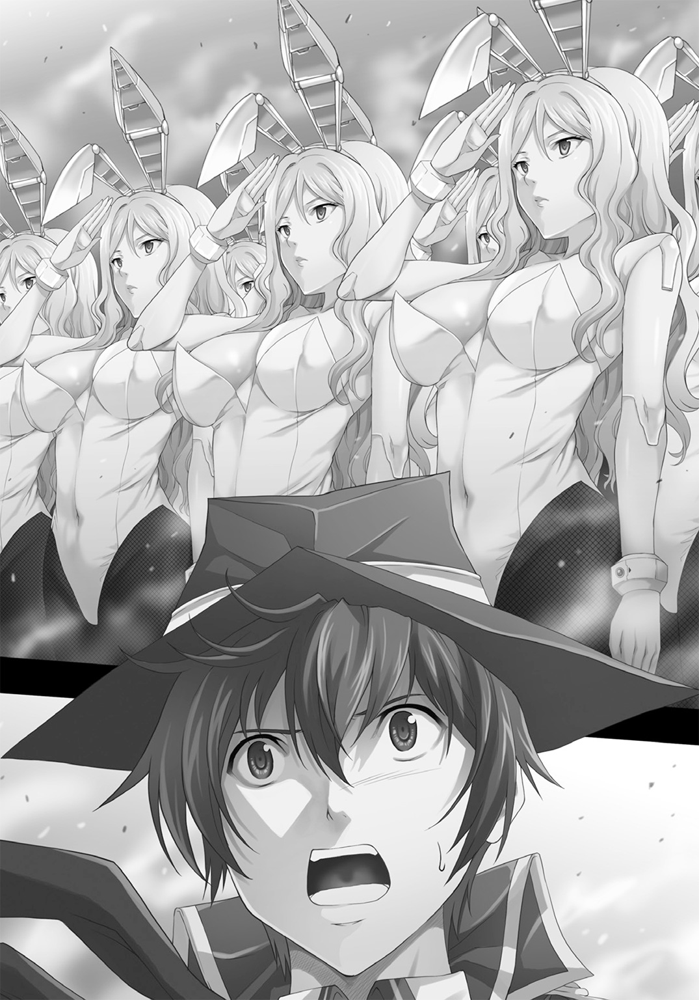
『人類の希望、シルバニオン！ その初陣を今、地球人類にお見せする！』
爆発音が、先ほどまでパーシィを閉じ込めていたＮＳＡの新宿支部の地下から起こった。
爆風と炎の柱がただでさえ熱気を帯びた夜の中、天空へと駆け抜ける。
上空に無数の銀色の煌めき。
赤い衣装のものを筆頭にした、五〇一体のシルバニオンが飛翔している。
「スク水少女の次は、バニーガール軍団？」
ぽかんとタグルの声が校舎の屋上に吸い込まれる中、スウィムウェンたちは一斉にタグルではなく、空中から降りてくる銀色のバニーガールたちに対して攻撃態勢を取った。
「殲滅せよ！」
そのひと言を繰り返す数千体の大合唱に迎えられ、シルバニオンとスウィムウェンの戦闘が開始された。
☆
最後の一隻が膨らみ、破裂するような爆発を見せて散る。
その光景を、瀬底泡瀬は「ロスティニア」の通路の窓から眺めていた。
手には例の鈍器のような刃物。
とうとう船の外壁を破って中に侵入してきたスウィムウェンを間一髪、全て掃討したのである。
通路には残骸と化したスウィムウェンの群れが、佃煮のように転がっている。
泡瀬は戦士としての欲求が完全に満たされた、満面満足の笑顔で、そのまましばらく「ロスティニア」の通路に仰向けに寝転がった。
☆
「もーだめ、指が、指が......」
そう言って、カレンはコンソールの上に突っ伏した。
何しろ泡瀬が侵入してきた敵の掃討に向かったため、魚雷のみならずレーザー砲のトリガーや照準まで彼女に回されてきたのである。
「いやあ、こちらの体力が間に合って良かった」
汗だくになって座り込みながら、レッドはそれでも爽やかな笑みを浮かべた。
「カレンちゃん、大丈夫？」
「もう、腕が、指が............」
「大丈夫揉みほぐしてあげよう」
そう言ってレッドは立ち上がろうとしたが、そのままシートにまた戻った。
「いかんな、俺ももう限界だわ、もう少ししたら揉んであげるよ、色々とツボ知ってるから」
「せ、セクハラ行為もコミでしたら結構です」
「大丈夫だよ、そんなに怖がることはないじゃない。君、アワセちゃんよりも年上でしょ？ 十分俺の好みだよ、カワイイし、綺麗だし......」
「へばってても、口説き文句は出るんですねえ......」
「そりゃもう、温かいし、気持ちいいし、何よりも寂しくなくなるんだもの」
あははは、とレッドは笑った。
『レッド様の船が接近、あと三〇秒で収容されます、中には乗員一名、姫様のみです、重傷を負っております、誠に申し訳ありませんが、おふたりとも、急いで格納庫へお向かいくださいませ............アワセ様は現在睡眠中ですので』
「ロスティニア」のＡＩの告げた言葉に、レッドの笑顔が消える。
「判った！」
そう言って走り出す。
「うわぁ......タフだぁ......格好いいけど、恋人にしたら夜、大変そう......」
コンソールに突っ伏したまま、カレンは呟いた。
☆
一方的な戦闘になった。
数だけで言えばシルバニオンは五〇一体、スウィムウェンは二〇〇〇体。六倍近い差がある。
だが、最初の一撃が強烈だった。
シルバニオンたちの左腕が真っ二つに割れ、中から高出力レーザーが照射され、着地までの数秒のうちにスウィムウェンたちの約半数と校舎の七割を文字通り寸断したのだ。
バラバラにされたスウィムウェンたちと、崩れる校舎の上に降り立ったシルバニオンたちは、そのまま乱戦、接近戦に持ち込んだ。
そうなるとカフス部分のパーツが鋭く伸びて高周波ブレードとなり、スウィムウェンたちを切り刻む。
豊満な胸を模した次元転移ジェネレーターはぶるぶると震えながらスウィムウェンの武器を無効化し、手足に仕込まれた重力子操作システムが巨岩の重さを決して折れぬ針の先.........拳へに集中させる。
シルバニオンは破壊の女神であり、スウィムウェンは哀れな獲物でしかなかった。
「我ら最大の敵は、地球製であると認識。警告、警告、スウィムウェン各位に告げる......」
最後に残ったスウィムウェンのリーダーの首を、真っ赤なバニースーツのシルバニオンリーダーがあっけなく引き抜いて、虚空へ投げ捨てる。
「見よ、我らシルバニオンの勝利を！」
赤いリーダーは拳を虚空に高々と上げて宣言した。
その様子はリアルタイムの立体映像で新宿の暑い夜空に投影されている。
駆けつけてきた警察のサーチライトに照らされ、さらにシルバニオンのリーダーは、プルキム・メルキオール・バニオンの声で宣言した。
「世界の脅威は迫っている、今すぐ、全人類をシルバニオンにして立ち向かおう！」
「......え？」
とりあえず戦闘に巻き込まれないようにと校舎の階段を下り、地上に着いたばかりのタグルは顔をあげてその言葉に首をひねった。
「この身体に収まれば性差別も、外見の差別も、知能の差別もない、性格の不一致すら！ 我らは一つ、シルバニオンとなる！ 機械と一体化することで、人と機械の限界を乗り越えるのだ！」
呼応するように、例の新宿支部が三度爆発し、その炎の中から直径数十メートルの銀色の球体が浮かび上がる。
「見よ、我らが城！ 人類の砦、グレート・シルバニオン・フォートレス、略してＧＳＦ！」
何処に継ぎ目があるのか判らないその本体から、大量の触手のようなマニピュレーターが地上に向けて伸ばされる。
その先には警官隊と野次馬たちがいた。
悲鳴をあげる男女を問わず、マニピュレーターは身体に巻き付き空中に持ち上げるとそのまま銀色の球体......ＧＳＦの中に取り込んでしまう。
悲鳴と電気ノコギリが何かを切断し、溶接用のバーナーがスパークを上げるような音が連続して聞こえ、一分もしないうちにその後部ハッチが開いて新しいシルバニオンが半壊した校舎の上に飛び降りていく。
下のハッチからは力を失った人影が次々と地面に向けて落下していった。
「まさか......あれ、脳を取り出してシルバニオンの身体に埋め込んでる？」
ＧＳＦとはシルバニオン製造工場であるらしい。
「スク水少女の脅威が去ったと思ったら、今度はバニーガールに全人類が改造されるってこと？」
こんな馬鹿馬鹿しい人類の脅威の連続は、テレビでも映画でも観たことがない。
だが、間違いなく目の前で、本物の人間を使って行われていることだった。
「ああ、ママ！ 世界が全てママになるよ！ 慈悲深く美しく、賢い存在になるよ、ママ！」
ＧＳＦの上で、うっとりとプルキム＝シルバニオンが叫ぶ。
「何を考えてるんだ！」
思わずタグルは銃を構え、プルキム＝シルバニオンの足下に狙いをつけて引き金を絞る。
元々威嚇射撃のつもりだったが、銃弾はプルキム＝シルバニオンの周囲で弾けるよりも先に、豊満な胸が激しく揺れて展開される次元転移フィールドに阻まれて空中で停止した。
じろり、とプルキム＝シルバニオンがこちらを睨む。
死神と目が合った、というのはこういうことだろうとタグルは思う。
「やめろ、プルキム！」
タグルはそれでも叫んだ――――脚が震えるが、それでも、このままここを逃げ出すわけにはいかなかった。
銃を構えたまま、タグルは凍りつきそうになりながらも、必死で頭を巡らせた。
パーシィならこういうときどうするか。
頭の中でこれまでのパーシィとの会話や騒動の中で得た情報や話、「ロスティニア」の中で見たものがバラバラのパズルのピースをひっくり返したように溢れる。
とにかくこの行為を止めようとするのは、間違いないし、それは正しい。
「君か、サタウチ・タグル......パスウィダーはどうした？」
「彼女は自分の船に帰ったよ」
「ああ、今ごろは時空の狭間でスウィムウェンの時間移動船と戦っている頃だな。おかげで僕らは助かったよ......あと二〇〇〇体もいれば危なかった。天才の僕でも、スウィムウェンに気づかれないようにこの身体に脳を移動させて、残った肉体を遠隔操作出来るようにするので手一杯でね、奴らの始末は君たちに任せっきりで心配だったんだが、杞憂だったな」
突風が顔に吹きつけられ、プルキム＝シルバニオンの顔がタグルの前にあった。
足がすくむ。
悲鳴を上げて降伏してしまおうかという考えが一瞬、頭をよぎった。
その向こうでＧＳＦが次々と人々をシルバニオンに作り替えていくのが見える。
その瞬間、辛うじて少年は両脚に力を込め、文字通り立ち直った。
「止めろ、その機械の身体がどれだけ素晴らしいか知らないが、強制するな！ ここにいる人たちは君たちと違って望むどころか、それが何かさえ知らないんだぞ！」
「新しすぎる何かは常にそういう受け取られかたから始まる............だが、今世界はスウィムウェンの脅威にさらされているんだ......いや、他の異星人の脅威からもね。全人類が一丸となり、同じ思考と強さを持って立ち向かうべき時なんだよ」
プルキム＝シルバニオンの表情が優しく微笑む。
「君のような勇気のある少年は大好きだし、優秀な素材になるよ............さあ、おいで、一緒に同じ未来を見よう」
その言葉に、ぞわりとした嫌悪感と恐怖を感じてタグルは引き金を引いた。
銃弾は全て、プルキム＝シルバニオンの額ギリギリのところで停止する。
「無駄だよ」
横殴りの拳をとっさに肘で受けたつもりだったが、それでもトラックにはね飛ばされたような勢いでタグルは右へ............ＧＳＦの真下に飛ばされ、転がった。
その脚に左腕に、胴体に触手型マニピュレーターが絡みつき、少年の身体を持ち上げる。
「このおっ！」
タグルがライフルを触手の根元に向けて撃つが、銃弾は見事に弾かれた。
携帯が鳴る――――天佑の響き。
タグルはとっさにコートのポケットからスマートフォンを取り出した。
「パーシィ？」
『残念ながら彼女は現在ナノマシン活性化のための治療ポッドの中だ』
レッド・リーコンの声だった。
『今、最後の一隻を沈めた......そっちはどうだ？』
「携帯、スピーカーにしてください！」
声が残響音を伴い、スピーカーに切り替わったと判った途端、タグルは叫んだ。
「『ロスティニア』急速反転、隕石除去用の絶対停止装置を作動、僕の周辺にいる、二足歩行で人類ではない、高電圧で動く存在全てにロックオン！」
『承知しました、タグル様、現在五二三の対象にロックオン完了です』
慇懃な「ロスティニア」のＡＩの声が答えた。
その瞬間、タグルには「見え」た。
いつもなら避けるべき光景。
だが、今回は同じように行動すべき光景だった。
スマートフォンを戻しながら、背中に差したままになっているパーシィの蒸気精霊杖を引き抜く。
杖の握りの下の表示を見ると、ようやくチャージが貯まっているのが見えた。
タグルの前に拘束された女子高生が、触手型マニュピレーターの付け根のすぐ後ろにある、絞り込むような動きで開閉を続ける「投入口」へと放り投げられそうになるのへ、スイッチを入れたままにしたパーシィの杖を放り込む。
「投入口」は素早く異物を感知して閉じたが、パーシィの杖は真ん中あたりまでハッチの中に入った状態で固定される。
数秒後、タグルが仕掛けたタイマーが作動する。
最大出力......ただし、前回とは違い、方向は杖の先端に集束して。
悲鳴をあげても追いつかないような苦痛がタグルの頭の中を揺さぶるが、人体以上に影響を受けるのは機械だ。
ＧＳＦのハッチから火花が散った。
タグルのギズモも火花を散らし、真っ黒焦げになって手から落下した。
触手型マニピュレーターも力を失う。
パーシィの杖がハッチから落ちるのを受け止めた瞬間、タグルもまた拘束を解かれた。
十数メートルの距離で、タグルは杖を使って「エアクッション」を周囲に敷き詰めた。
同じく拘束を解かれた人々が、無事に地面に降りられるように。
タグルが見上げると、ＧＳＦはよたよたと半壊した校舎に突っ込むところだった。
「今だ！」
タグルはポケットからスピーカーモードのスマートフォンを取り出して叫ぶ。
その次の瞬間、タグルめがけて殺到しようとしたシルバニオン五百数体と、スウィムウェンの残骸は、タグルの視界から消え失せた。
宇宙空間で、あるいは時空の流れの中で、最も重要なことは加速と停止......「ロスティニア」は唐突な隕石の出現や、他の危険を回避するために瞬間的に加速をゼロにすることが出来る機能を持っている。
これは船自体のみならず、停止させたい相手に対しても使える。
これを応用したのが、以前パーシィが「ろすてぃに屋」でうっかり売ろうとして引き下げたゴルラム４の娯楽遊具、重力ハンモックだ。
タグルは以前「ろすてぃに屋」でパーシィがいつものようにウンチクと経験談混じりで語ったその機能を覚えていた。
宇宙における太陽系の移動速度は秒速六〇〇〇キロであり、時速に直すと約二一六万キロ。
「絶対停止」されたシルバニオンたちは、遙か彼方に取り残されている。
『タグル様、停止時間は一〇分しかもちませんが、それでもよろしいのですか？』
「ロスティニア」からの問いかけに、タグルは「それだけあればしばらくは十分だよ」と答えて溜息をついた。
「君らが戻ってくるまでどれくらいかかる？」
『あと三時間ほどです』
言われてタグルはうんざりという顔でうなだれた。
「あ、あの............ありがとうございます」
先ほどタグルが杖を投げて助ける形になった制服姿の女子高生が、頭を下げた。
「あ、いえ、どうも............ははは」
「あの、あなたは一体......」
「僕はその............えーと......『イコライザー』ですから、はい」
上手いセリフが思い浮かばず、それだけ言って、タグルはそそくさと走り出した。
途中で、パーシィの杖を使って空気を圧縮し、夜空へと舞い上がる。
何度か飛び上がって、数軒目のビルの屋上に降りた。
スウィムウェンを倒したせいか、それとも爆発や大火事は雨雲を呼ぶのか、空模様が急に怪しくなり、涼しい風が吹き始めた。
「この辺で雨宿りして............」
と周囲を見回していると、とん、と何かが脇腹を突いた。
空に雷鳴が轟く。
「？」
屋上の照明に照らされて自分の脇腹にインクがこぼれたような染みがあるのが見えた。
さらに、小さな飛沫がその横にふたつ、吹き出した。
「あれ......？」
手で触れようとしたとたん、膝に力が入らなくなり、タグルはそのまま倒れた。
先ほど聞いた雷鳴が、遠距離からの銃声だったと気づくが、その頃には本物の雷鳴と共に土砂降りの雨が少年の上に降り注いだ。
☆
タグルが倒れた数百メートル先のビル。
「ズレた」
舌打ちと共に、ヒスパニック系の男はボルトを引いて薬莢を排出した。
豪雨の中、灼けた薬莢が濡れた屋上でジュッと音を立てる。
「今日は下にずれる。この国の湿気は厄介だ」
「雨が降り出した上に西風が急に吹いたんだ、仕方がない」
狙撃手の相方であり、その護衛役でもある黒人のスポッターが取りなすように肩を叩いて、無線を入れる。
「こちらアディソン・９。最優先コードＰＳＷＤ09発動中につき『イコライザー』を名乗る少年を狙撃、腹部貫通銃創を三発負わせましたが、まだ死亡には至っていません。標的が倒れたため、狙撃位置を変更して止めを刺します」
「その必要はないよ、ＮＳＡの諸君」
不意に、彼らの背後から声が投げられた。
振り向きざまにスポッターが、手に握っているＨ＆ＫＭＰ７サブマシンガンを向けて引き金を引こうとしたが、青白い輝きが招いた電撃が、彼らを沈黙させた。
「私の名前はパスウィダー。お前たちに宣告する」
水溜まりになりつつある屋上に転がった無線機を拾い上げ、声の主は告げた。
「今後、沙汰内類に手を出すことは許さない。彼は私の相棒だ――――これからの世界が安全であってほしければ、そうしろ」
相手の答えを待たず、声の主は無線を屋上にたたきつけて破壊した。
☆
流れ出る血が、死を確実に呼び寄せているのを自覚しながら、タグルは夜空を見上げる。
雨音にかき消されながらも、遠くに救急車や消防車のサイレンの音が聞こえる。
「パーシィ、大丈夫かなぁ......」
呟いたその上に影が落ちる。
長い黒髪。マントのようなコート。そして大きな金属のメダルの塡まった中折れ帽。
「ぱー............しぃ？」
雨と、体力低下で霞み始めた目を、タグルは怪訝そうに細めた。
パーシィその人なのか、それとも同じ格好をしている別人なのか、判別がつかない。
「大丈夫、君はまだ、こんな所では死なない............私の、大事なタグル」
そう言ってその女性はタグルを抱き上げると唇を重ねる。
やさしく手を、はだけた胸元に導き、柔らかなふたつの丘の中に滑り込ませた。
「ああ、君の手だ......久しぶりだ......なんて冷たくなって......」
涙ぐむその女性は、そのままタグルの身体を抱きしめる。
「この言葉を覚えているか？ 『いかなる過去があり、いかなる未来が待ち受けようともそれは些細なことである。大事なことは自己のうちに何があるかのみだ』」
「覚えてる......君が、メモ用紙に書いてた」
「ならこの時間、この時で間違えてないな」
そう言って、女性はタグルの唇を再び奪った。
温かいものが身体の中に流れ込み、脇腹で固まっていく。
なにか、硬いものが落ちる音が三つ重なって聞こえたようだ。
反対に女性の姿が、さっきまでよりも随分と小さく、幼くなっていくように、タグルには思えた。
「私の生体エネルギーをキミに移した。だいぶ身体が縮んでしまったがこれでいい。これから出会う五月の頃の君には、この姿のほうが......それに気を逸らすいいものも手に入れた」
そんなことを言いながら小さな指が、タグルの体内からこぼれ落ちた三つの弾丸を拾い上げた。
「君は......？」
「全てを教えられなくてすまない。おやすみ、タグル」
小さな唇が、タグルの額に押し当てられた。
猛烈な睡魔がタグルを襲い、そのまま眠りの中に引き込んでいく。
☆
「まったく、いくら疲れているとはいえ、あの豪雨の中、ビルの屋上で眠っているとは......最初見つけたときは死んでいるのかと思って冷や汗が出たぞ！」
「ロスティニア」の操縦室で目を醒ましたタグルに、パーシィがあきれた顔をした。
「え............寝てたの？」
タグルの問いに、パーシィも泡瀬も含めた全員がこっくりと頷いた。
「まあ、今日はタグル君も俺らも大冒険だったものな、仕方ない」
「あ、そういえば『ロスティニア』は大丈夫なの？ 戦闘とか、あと急に引き返してもらったり、瞬間停止使ったりで、また壊れたりしてない？」
『おお、なんと優しいお言葉なのでしょう。こき使うだけこき使って、ねぎらいのひとつもない姫様とは大違いです』
「五月蠅いぞ、『ロスティニア』」
「ロスティニア」のＡＩがわざとらしい皮肉を口にし、パーシィは口をへの字に曲げた。
「そうか、寝てたのか......てっきり撃たれたかと思った」
「まあ、私のコートを着用している限り、弾丸程度は恐れるに足りん。コートの隙間を狙われるとそうとも言えんが......」
「そういえばパーシィ、怪我は？」
「大丈夫だ、治療器の中に入って一〇分もすれば肩も腹も元通りだ............見てみるか？」
「い、いいよ！」
その言葉に安堵するタグル。
「純情な少年をからかうもんじゃないぞ、パーシィ」
レッドが苦笑しながらパーシィを窘め、「それもそうだな」とパーシィは大人しくそれ以上のからかいを止めた。
「............さて、とりあえず、『ロスティニア』の修理は完了した、ここでお別れだ」
「え？」
「これからレッドを彼の時間に送り届けたら、時を遡って今回のことの原因を調べていこうと思う」
「原因？」
「スウィムウェンどもに今回の計略の種を植えつけた奴がいる。君が寝ている間にＮＳＡにハッキングをかけたら、プルキム・メルキオール・バニオンに、自分の脳をシルバニオンに移すタイミングを教えた奴がいる、いやそれ以前に私の知ってるこの時代の歴史に、彼の名前はない――――どう考えてもこの辺に連なってるのは同一の存在だ。人か、それ以外かは判らないが」
「誰なの？」
「わからん。ソディオカントにしては計画が杜撰すぎるし、ギリシア神話の神々にしては規模がデカ過ぎる。マルシオニムスはすでに謀略の時代を終えているからこんなことはしないし......とにかくわからないんだ」
いらいらとパーシィは答える。どうやら相当に今回の「黒幕」が頭にきているらしい。
「でもどこをどう調べるわけ？」
「さっきの戦闘のついでに『ロスティニア』にデータを取らせていた。何か、今までになかった小さな『傷』があちこちの時間についてる。まるで足跡のように、ね」
「つまり足跡を追っていく、ってこと？」
「不思議の国のアリスと同じだ。いずれ今回のことを企んだ奴に繫がるだろうし、少なくともここで思案してても始まらない。とりあえずは幕末の京都あたり――――危険な旅になる。タグル、君は連れていけない。もちろん、アワセもだ」
瀬底泡瀬は答えなかったが、タグルはくってかかった。
「冗談でしょ？」
「......人生には謎のひとつやふたつ、あったほうがいいこともある。君はこの時代の人間だ、この時代に残れ」
「いやだ」
「君の時間は今、この時代とシンクロしている、きちんとな......だが私と来れば、それは判らない。下手をすれば帰るべき場所を失い永遠に時間と空間の間を彷徨うことになる」
「旅に出て一〇〇〇年過ごしても、出発五分後に帰ることは出来るんでしょ？」
「出来るが、旅の途中で君が死んだら、元には戻せない！ 安全な人生を生きろ、君自身の時間を！ 今回のことは本当に助かったが、ここで終わるのが一番いいんだ！」
「で、安全な人生を選んで、年寄りになっても『一体あの真相は何だったんだろう』って空を見上げるの？ やだよそんなの」
「一時の好奇心で身を滅ぼすな、と言ってるんだ！」
「嫌だ」
「これは、君が考えてるような甘っちょろい冒険なんかじゃないんだ、間違いなく今回の事件の裏で糸を引いてる奴は危険な存在だ、今回のこと以上に危険だ、私だって君をかばいきれないかもしれないんだ！」
「本来なら、僕はスウィムウェンが起こす爆発に巻き込まれて死んでたんでしょ？ 一度死んだものは二度も死なないよ」
「うるさい、出ていけ！ 君なんか嫌いだ！」
パスウィダーは子供のように地団駄を踏んだ。
「出てけー！」
「嫌だね......『ロスティニア』！ 僕の優先命令権は現在何位だ？」
『お答えしますタグル様、現在も変更がないので第一位です』
「では命じる、僕の命令なしに出航するな！」
『御意のままに、タグル様』
「な......」
ぽかんとパーシィが口を開けた。
「なに馬鹿なことをしてるんだ！ この船は私の船だ！」
「僕を連れていかない限り、最優先命令権は返さない！」
「船を泥棒するのか！」
「命令権を返さないだけだよ！」
「この！」
じっと二人はにらみ合う。
三〇秒ほどして、
「あー、パーシィ、これはもう負けだと思うぞ」
咳払いをしたあと、取りなすようにレッドが会話に入ってきた。
「レッド、無責任なことを言うな、安全の保証は出来ないんだぞ！」
「君も俺も、安全が保証されてるから時間の旅に出たわけじゃなかろう？」
「それはそうだが............わかった、連れていく、連れていくから命令権を返せ」
「いやだ」
タグルは不信感で一杯の目をパーシィに向けた。
「旅の準備をしてこいとか言って僕が出ていったらさっさと出発するつもりなんだろう？」
「............」
図星、と顔に書いてある表情で固まるパーシィ。
「タグルに考えを読まれるようじゃもう負けを認めた方がいいと思うんだが。駆け出した瞬間の子馬を無理矢理止めようとしても危険なだけだぞ？」
「......ああ、もう知らんぞ！ 君の命の保証は出来かねる！ 死んでも文句を言うなよ！」
パーシィはそう言ってぷいっと横を向いた。
その横顔には言葉とは裏腹に、どこか嬉しそうな表情が混じっていると思ったのは、タグルの気のせいだっただろうか。
「た、タグル君が行くなら私も行きます！」
泡瀬が必死の決意で宣言した。
「よし、話は決まった！ 確定、僕も泡瀬さんもこのまま出発！」
「あー、あのアタシは......」
まるっきりそのつもりがなかったショートカットの少女が、すっかり会話に割り込めないうちにえらいことになりそうだと、はかない抵抗を試みたが、
「カレン、申し訳ないけど同行よろしくね」
と、いつになく真面目な顔の泡瀬が両肩を摑むと「しかたないかぁ」と諦めてくれた。
「じゃあ、カレンさんもＯＫということで！」
タグルはパーシィを真似て勢いだけでこのまま押し通すことにした。
「僕たちと『ロスティニア』は、これから時間の旅に出発する！ 行き先は、さっきパーシィが言ってた幕末の京都！」
「ロスティニア」のＡＩが恭しく答える。
『承知いたしましたタグル様、では船長としてエンジン始動と、発進のかけ声を』
「うん......エンジン始動！」
大きな唸りをあげて、「ロスティニア」が震動し、エンジンが動き始めた。
タグルは目を輝かせ、いつか見たＳＦ映画の船長のように、勢いよく前を指さした。
「発進！」
それが、自分の人生における最初の大きな決断の言葉になるのだと、少年はまだ気づいていない。
あ と が き
こんにちは、こちらでは初めまして。
神野オキナでございます。
「イコライザー！」如何だったでしょうか。
子供の頃から、「時間旅行もの」が大好きでした。
過去に遡って自分の過ちをやり直す、というだけでなく、歴史上の人物に会ったり、事件に関わったり、場合によってはそれを僅かながら修正したり......藤子不二雄Ｆ先生の「Ｔ・Ｐぼん」や長編映画のドラえもん、横山光輝先生の「時の行者」など、漫画でも何度も扱われ、傑作も多いジャンルです。
小説でもオリジナルであるＨ・Ｇ・ウェルズの「タイムマシン」はもちろん、「夏への扉」「我、ゲイスバーグの冬を愛す」、国内でも筒井康隆先生の「時をかける少女」、眉村卓先生の「夕ばえ作戦」「なぞの転校生」という古典もあるくらい。
テレビで言えば「トワイライトゾーン」「タイムマシンにお願い」からイギリスのテレビドラマ「ドクター・フー」、日本の「タイムスクープハンター」、そして映画でいえば「バック・トゥ・ザ・フューチャー」から「ビルとテッドの大冒険」「デジャヴ」「君がぼくを見つけるまで」等々。
そして「時間旅行もの」だけでなく、いろんな作品の好きな要素を詰め込んで、とにかく楽しく、ある程度何でもアリで、一気に駆け抜けるような作品にしてみました。
小ネタもあれば大ネタもあります。
残念美人のパーシィと、どこかのんびりしたまんまのタグルの冒険、おつきあい頂ければ幸いです。
では、短いながら謝辞を。
今回、イラストのともぞさんと、担当編集の日比生さんには作者の我が儘なども含め、本当にお世話になりました、ありがとうございます。
そして、これをお買い上げくださった読者の皆様に無限の感謝を。
神野オキナ拝
著者紹介
神野オキナ かみの おきな
この作品、小難しい理屈は引っこ抜いて、時間はおろか宇宙やら並行世界やらを飛び越えての大アクションを展開していくつもりです。残念美人ながら結構謎の多いパーシィと、どこかぽやーっとしたお人好しのタグル、戦闘マシンであることを隠しつつ恋に焦がれる泡瀬の三人の旅路をどうぞお見守りのほどを！
illustration
ともぞ
今年も非常に寒いので、風邪をひかないように頑張りたい...そう思ってたら、早速風邪を引いてしまいました。
皆さんもお気をつけ下さい。
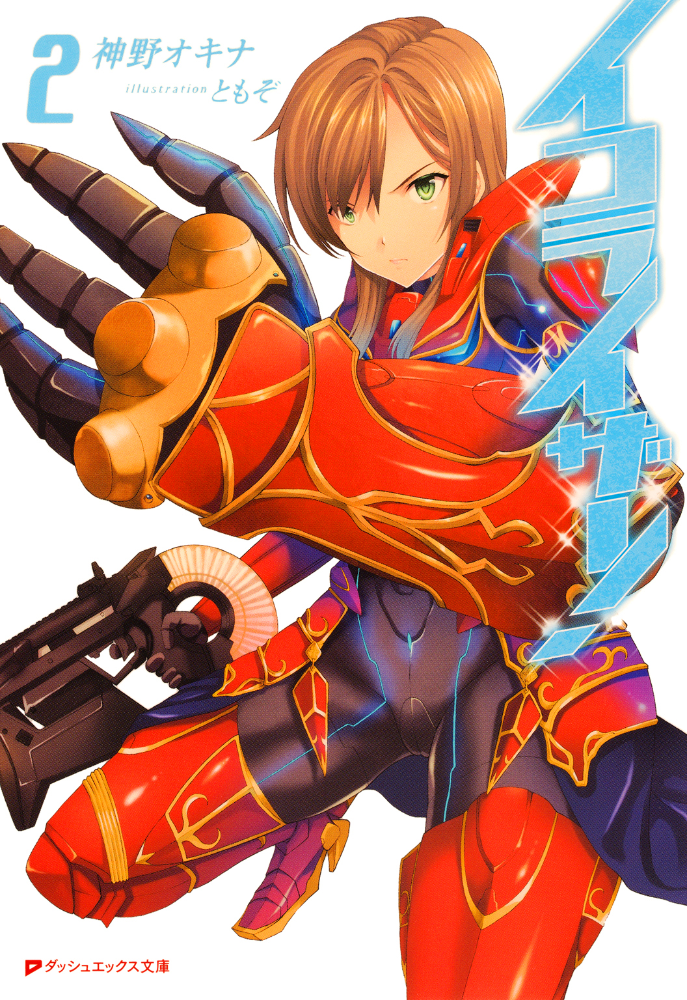
この本は縦書きでレイアウトされています。
また、ご覧になる機種により、表示の差が認められることがあります。
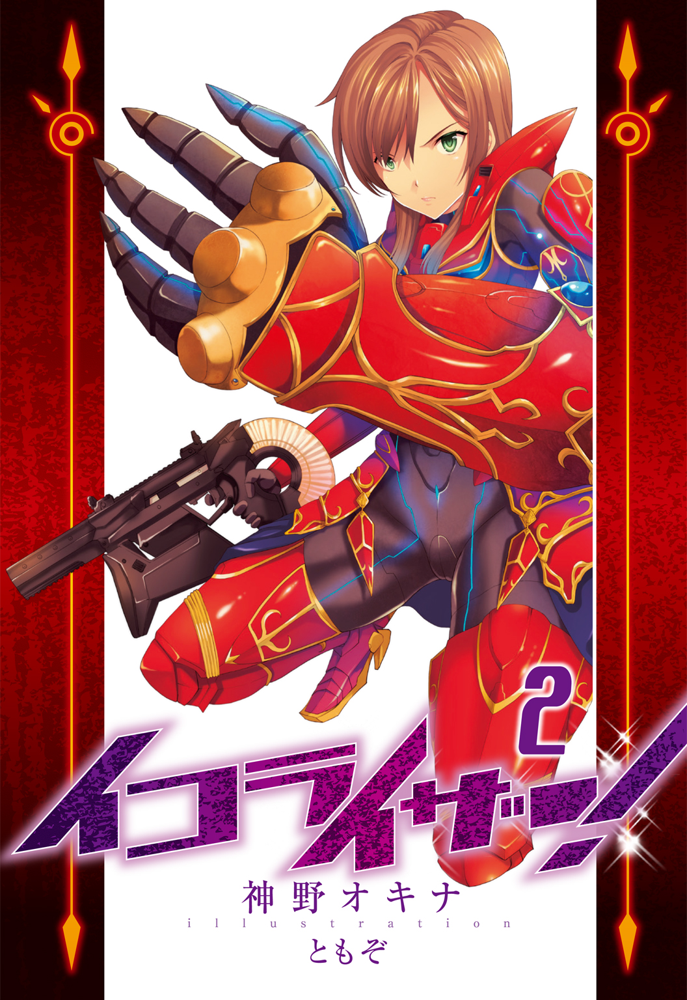
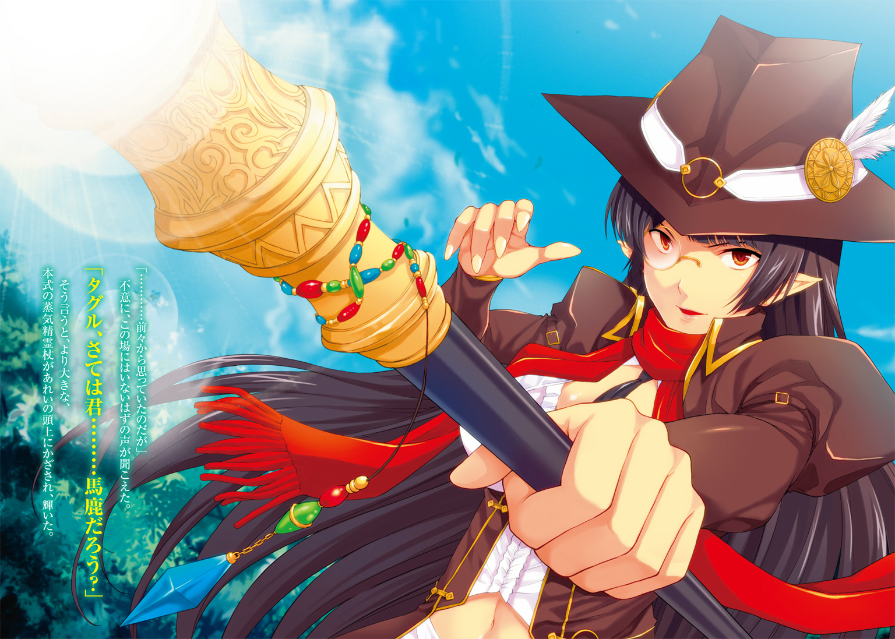
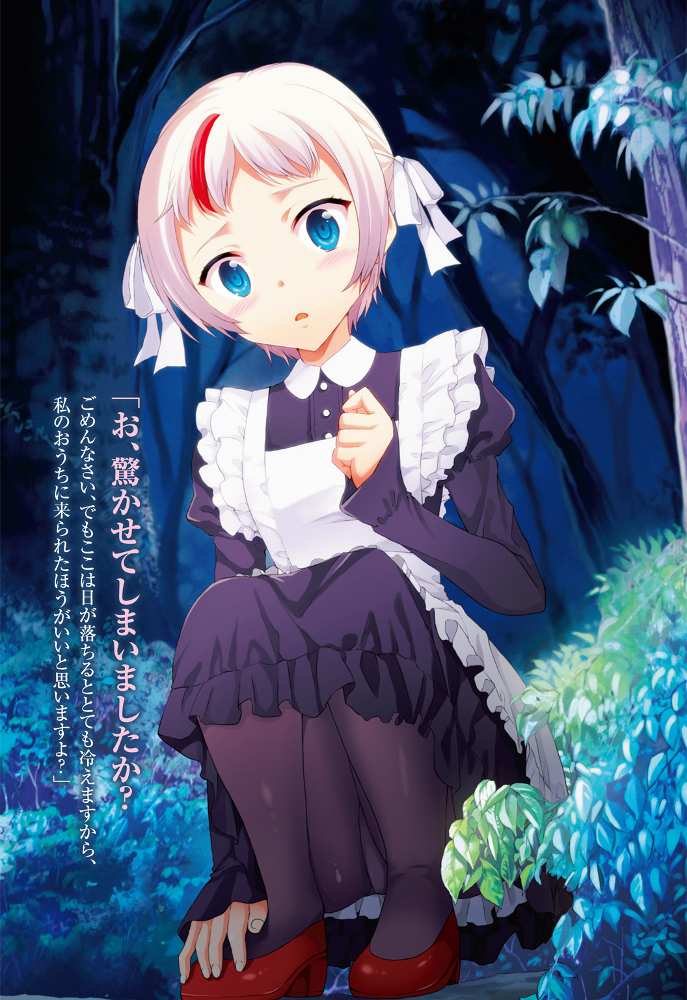
 ダッシュエックス文庫DIGITAL
ダッシュエックス文庫DIGITAL
イコライザー！ ２
神野オキナ
○第一話：「おとこ独り」（byフォー・コインズ）
☆
到着までまだ一時間あった。
「幕末、幕末、幕末、幕末、幕末、幕末、幕末、幕末、幕末、いい響きじゃないか」
時間調停者のパスウィダーこと、パーシィはそう言って時空航行船「ロスティニア」の操縦室の中で、くるくると回ってみせた。
革製のようにも、布製のようにも見える不思議な質感の素材で出来たロングコートの裾がふわりと広がる。
「なんか東京都バスガス爆発とか爆弾ハンバーグ＆松飾りスペシャルの略称みたいな感じで」
「そんなこと考えるのパーシィくらいだよ。ていうか、それ料理？」
「知らん。今思いついた」
「まったくもうよくもまあ、そんな変なことばっかり考えられるねえ」
沙汰内類はそう言って苦笑いした。
システム上、今の彼はこの「ロスティニア」の船長だが、実際の操縦はパーシィと、今はこの船のどこかで寝ているレッド・リーコンにしか出来ないので、何も手を出せない。
「そうか？ 私はそんなこと思わない。なぜなら日本の幕末というのはそれぐらいいい加減な時代だからだ」
そう言ってパーシィは真顔になった。
「あと一時間弱で着くが、本当に、非常に、まったくいい加減だ。何しろ最初は攘夷とか言って外国勢力を討ちはらうべし、だったのが、だんだん自分の実力が分かると、いつの間にやら今度は公武合体だのなんだのというふうに話は変わり、徳川幕府と将軍が悪い、に化けて、気がついたら天皇を頭にいただいて、西洋に追いつき追い越すことが目標になっていて、誰も不思議に思わない時代だ」
長い黒髪のエルフの少女は、ちょいと帽子を直す。
「ちょんまげを切って、腰の刀を取り去って、だけど和服に草履で歩いていく時代に突入する前夜祭............にしては人死にが多すぎるがな」
歴史に詳しい人間が聞けば三時間は説教確実の、しかし、タイムトラベラーであるだけに妙に実感のある言葉をパーシィは並べた。
現在、タグルとパーシィをはじめとした仲間たちが乗る万能の船「ロスティニア」は、幕末へ向かって時間の流れを移動している。
さっきまでその操縦をひとりでバタバタとやっていて、どうやら最終調整が終わったと、思った途端にこの長広舌である。
「まぁ早い話が何度も何度も裏切りがあるし、思いこみで人を殺したり、殺されたり、馬鹿なことばっかりがある............第一、アメリカでは南北戦争で殺し合いが終わって大量の銃器が東海道のヤクザにまで流れこみ、その横で新撰組だのなんだのが闊歩している時代だぞ？」
「そうなの？ その時代って刀しかない時代、ってイメージだけど」
「なに言ってるんだ。世界と日本が如何にずれていたかが如実に分かる時代で、人の心も結構荒れ果ててる。うっかりしているとあっという間に疑われて斬り殺されてしまう時代だ。今の日本とは違う」
さらにくるっと回ってパーシィはタグルの胸を人差し指で突いた。
「ぼーっとしているタグルなんてあっという間に斬り殺されてしまうかもしれないぞ、注意したまえ」
「いくら僕でもそれほどバカじゃないよ」
タグルはそう言って口を尖らせる。
「でもパスウィダーが言うことも正しいかもしれないわ」
タグルの隣で瀬底泡瀬がそう言って真剣な顔になった。
「泡瀬さんまでそういうこと言うの？」
タグルが嘆くのへ、
「いやそういうのじゃないの。確かに幕末という時代は非常に殺伐としているから、場合によっては私だって本当に斬り殺されるかもしれない。注意が確かに必要だわ。特に身分の差はこの時代、まだ絶対だから」
「身分の差？ ああ、そうか、士農工商で階級分けされてるよね」
「そう、この時代、士農工商は絶対なんだもの。もし、私たちの身分が武士だったとしても、私は女だし、タグルくんは、うっかり侍らしからぬ行動を取ると、士道不覚悟で殺されてしまうわ」
「まあ、士道不覚悟ってのは新撰組みたいな元々侍じゃない連中が、それだけにより侍らしく振る舞うために大声で叫んでる、っていうぐらい衰退はしてるけどな」
下に無数にある部屋のひとつで一眠りしていた、軍服姿の偉丈夫、レッド・リーコンがひょいと顔を出してきた。
「............なんか、複雑な時代なんですねえ。この前図書館のアーカイブで見た時代劇とはえらい違う感じで」
「へえ、タグル君、何を見たんだ？」
「えーと。確か『新選組血風録』だったかな？ 色のないテレビ番組でした、三話ぐらいでしたけど」
「また随分と渋いとこ見てるねえ」
「まあ、あの映画に描かれてるぐらい人間が皆殺伐としてる、特に侍は......だから気をつけたまえ」
「そういえばパーシィはどういう風に変装をするの？」
「私か、私はタイムトラベラーだから、このままでもう慣れてる。だから、むしろ心配なのは、君たちの方だな。特殊な交渉術、なんてものはないからなあ。やはり、変装だろう。タグルは浪人の息子で僧侶の修行を終えたばかり、アワセは......そうだ、君ら、新撰組のメンバーの名前を言えるか？」
「近藤勇、土方歳三、沖田総司、芹沢鴨、斎藤一、山南敬助、永倉新八、藤堂平介、谷三十郎、えーっと後は............」
読書好きな泡瀬らしい答えが返ってきた。
「すごいや、僕全然わからない」
最初の四人は「新選組血風録」の主要人物だから覚えているが、それ以後はさすがに知らない。
「決まりだ、泡瀬が姉だな.........三階下の衣装部屋に行ってこい。音声入力すれば衣装をそれっぽく選んでくれる。多少の不具合は衣装型立体映像だが何とかなるだろう」
「あの、パーシィは一緒に行かないの？」
「行くさ、勿論。だが二手に分かれて調べた方が早い。それにひとりの方が気楽だ」
「そんなもんかなぁ......」
「ああ、そうだった、これを渡すのを忘れていた」
そう言ってパーシィはロングコートの内ポケットから青と黒、二本の万年筆のようなものを取り出した。
もっとも、大きさが万年筆サイズなだけで、実際にはところどころがクリアガラスになっていて、そこにびっしりと歯車が回っていて、支柱が往復していたりするので、大分怪しい。
「これ、何？」
「私が持ってる蒸気精霊杖の小型版だ。通称は『ギズモ』。簡略版なので出力は流石に私のものの半分だが、精度は抜群だし、この前のスウィムウェン相手にやってみせたような瞬間最大出力を使ってもチャージが戻るのが短くてすむ。なによりも......」
と、パーシィはその機械の三分の一あたりに指をかけてくるりと回した。
半分が外れ、中にはさらにくるくる回転する円錐状の歯車が組み合わさった支柱が透明な樹脂かガラスのようなものの中に見え、その先端にはどう見てもペン先と思えるものがあった。
「これは字が書ける。ちなみに無重力空間でも書けるし、こいつから出る分析光で書いたものを消して、同じ精霊杖の光を当てないと読めないようにすることも出来る............さ、好きなのを選びたまえ」
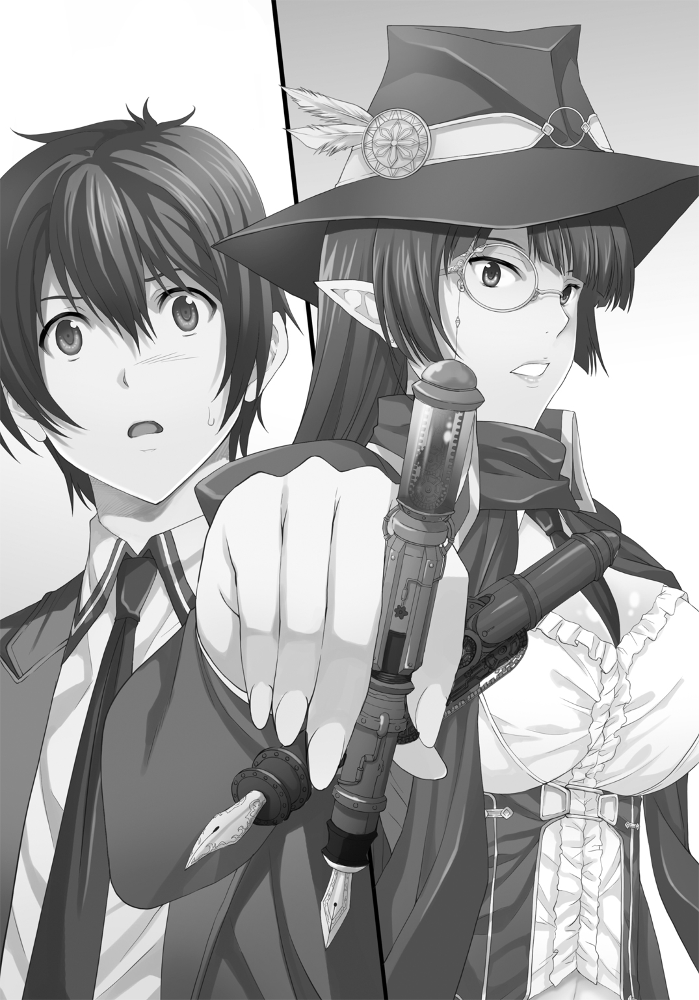
「............なんか、オモチャっぽいなぁ」
「オモチャと同じ機能と言ったんだ、オモチャじゃない！ だいいち、十代目ドクターのソニック・スクリュードライバーのオモチャと同じ機能でさらにグレードが高いんだぞ！ 凄く苦労したんだからな！」
「何にでも書けるの？」
「水と空気以外ならコンクリートだろうがガラスだろうが毛皮だろうがＯＫだ」
「それなら便利かも」
「だろう？」
得意満面の笑みを浮かべるパスウィダー。
「泡瀬さん、どっちがいい？」
「えっと............じゃあ、私、青を」
「じゃあ、僕は黒............と」
「よしよし」
パーシィから受け取り、タグルはその小型の蒸気精霊杖を手の中で重みを確かめたり、いじり回したりしながら首を捻った。
「やっぱオモチャっぽいなあ」
「そういうことを言うなら返してもらうぞ！」
「怒ることないでしょ？ ............で、どうやって使うの？」
パーシィは溜息をついて、
「蒸気精霊杖として使う時はキャップを今の状態に戻して、側面か、ペン先のないほうの端に付いてるボタンを押せ。結果は横にある窓に数字になって表示。使い方を変えるときはここがダイヤル式で回るから、数字を変えろ。今はとりあえず０００............時空の歪みを見つけるための分析モード兼地理調査モードにしてある。鍵を開けたり、かけたりするときには数字を３５７に合わせろ。機械を停止させるときは１３３、あと、高いところから飛び降りる際の『エアマット』を作るときは４５４だ」
「なるほど............あのさ、炎とか出せない？」
「マッチぐらいの火なら作れるが、大規模なのは無理だな」
「パーシィのは？」
「私のは封じてある」
「なんでまた？」
「大きすぎる火は、碌なことにならない――――それに炎というのはコントロールが難しいんだ、勝手に燃え移ったり、拡がったりもするし」
「なるほど......」
納得しながらも、タグルは以前、体育館でスウィムウェンと呼ばれるスクール水着の少女の姿をした機会生命体が「炎の魔女」と彼女を呼んでいたことを思い出して首を捻った。
「パスウィダー、これガラスのような部品が多すぎるんですが、壊れやすいものでしょうか？」
「いや、それはガラスじゃなくて透明アルミニウムの一種だ、折れたり曲がったりはしても、砕け散ることはないから安心したまえ。あとＧショック並みに頑丈だ。私の最高傑作の一つだぞ？」
泡瀬は「なるほど」と頷いたが、タグルは疑いの目を片眼鏡の少女に向けた。
「本当？」
「どうして疑いの目を向けるんだ、タグル？」
「いや............なんかパーシィの発明ってことはボタン押した途端に煙を噴きそうで......」
「失礼な！ そうだと思うなら試しに使ってみるといい」
「ＯＫ、それじゃ............」
タグルは「０００」になっているのを確かめて、「ロスティニア」ブリッジの反対側の壁に向けると、側面のスイッチを入れた。
ぽん。
可愛らしい音がして、ボタン部分から煙が上がる。
「............」
「............」
「............」
「............」
タグル、泡瀬、パーシィ、そして面白そうにその様子を眺めていたレッド・リーコンが黙って顔を見合わせた。
「パーシィ、お前、また回路に手を加えただろ？」
レッドがニヤニヤ笑いながら言うのへ、
「いや、今度はパワーアップとか集束率とかではなくてだな......」
「お前さん、物作りの天才なのは認めるが、むやみにいじりたがるのが玉に瑕だな............よし、ふたりとも貸してみろ、ちょっと直してやるから」
そう言って、レッドは懐から、タグルたちと全く同じデザインの、しかし名前に合わせたのか真っ赤な小型蒸気精霊杖を取り出した。
太い親指でダイヤル錠のようになっている部分を器用に動かして「７０４」の番号にして、タグルと泡瀬の蒸気精霊杖へと向ける。
青白い光と、小さなハム音と共に、チカチカとそれぞれの蒸気精霊杖が光り、気がつくと煙で汚れたタグルのものは汚れまで綺麗に元通りになっていた。
「これで大丈夫」
とにっこり頷くレッドの顔に「本当ですか？」と疑問を差し挟む余地はなかったので、タグルはさっきと同じことをした。
今度はレッドのものと同じような作動音と光が壁に照射される。
「............よかった」
「............」
ぷう、とパーシィは子供のように一瞬頰を膨らませたが、すぐにぷいっと横を向いた。
「ちなみに、何か反応があれば作動音が大きくなるはずだ、大きくなる方へどんどん近づけば私が求める『歪み』があると思う、以上！」
そのまますねた子供のようにつかつかとブリッジを出ていく。
「............怒らせちゃったかな？」
「まあ、気にするこたぁないよ」
苦笑しながらレッドが言った。
「多分、部屋に帰ってドーナッツの一つも食べたら機嫌が直る......まあ、疑うかもしれないが、あいつ自称するだけの天才ではあるんだ。俺のこいつもパーシィが作ったものだし」
「え？」
「最初にあいつが作った五本の小型蒸気精霊杖のうちの一本がこれだ............かれこれ百年近いが、未だに故障したことがない。まあ、俺もそれなりに手入れはしてるが」
「へえ......」
「ただ天才だけに気まぐれでな、同じものを作ればいいのに、やたら改良したがるんだ。むしろ俺がやったのはデチューンでね.........ハイスペック、フルスペック症候群っていうか、性能を高く作ることばかりして、あんまりバランスを考えないところがあるんだ、あいつは」
「............なるほど」
どうやら自分たちのものは在庫品ではなく、わざわざ作り起こしたものであるとわかり、すこしタグルは罪悪感を覚えた。
「ところで、レッドさんのもの以外の三本はどうなったんです？」
「一本はちょっと前までパーシィの相棒をやってた奴に、一本はあいつ自身が持ってるあの杖だ、で、俺と、知り合いのタイムウォーカーに一本」
「タイムウォーカー？」
「時間を旅するというより、時間を巡って歩いているような奴のことだ、まあ、いずれどっかで会うだろうよ」
「残り一本は？」
そう訊ねた途端、レッドの顔に一瞬辛そうな表情がよぎった。
「さぁな。確かどこかでなくしたとか言ってたと思う」
明らかにタグルは「噓だ」と直感したが、同時にそれ以上は訊いてはいけない、と同じ直感が囁いた。
「そうですか......」
今はそれよりも、パーシィが探せと言っていた「時間の歪み」というのはどういうものだろう、ということのほうが気がかりだった。
「そういえば、泡瀬ちゃん、カレンちゃん、何処行ったか知らない？」
「ああ、カレンなら、自分の部屋で報告書書いてます」
「ふむ、じゃあ遊びに行こうかなぁ」
「あ、いやあの、えーと......それはよしたほうが」
「どうして？」
「書類仕事しているときのカレンって、そのちょっと......いや、かなりおっかない状態なので」
「それはますます面白そうだ」
手をすりすりと擦りあわせながら、レッドは満面の笑みを浮かべてくるりと背中を向け、ブリッジを出ていく、
「あの、ほ、本当にやめた方がいいですよ！」
慌てて声を張り上げる泡瀬に軽く手を振って、
「分かってる分かってる！ 集中している女の子の横顔ってのもいいもんだからねえ！」
と、スキップしそうな勢いでレッドは部屋をあとにした。
「............行っちゃった......」
「泡瀬さん、そんなにカレンさん、おっかないの？」
「とりあえず、私、絶対に書類仕事が終わるまでカレンには声かけないようにしてるの」
パーシィを監視し、場合によっては武装まで使うことをよしとする秘密機関「暁」の実行部隊の少女はきっぱりと言い切った。
「でも、パソコンで......」
「未だにうちは、手書きなの............それも修正液使用不可、筆使用」
「え......？」
「だから............怖いのよ。集中しているのを邪魔された時のあの子」
横を向いた泡瀬の視線は、どこか遠くへ向いていた。
「......」
やがて、「ロスティニア」全体に響く声で、「ぎゅあああああ！」というレッド・リーコンの悲鳴が聞こえてきた。
「......ね？」
「――――とりあえず、レッドさんとカレンさんは今回の調査には同行できない、ってことだね」
「ええ」
☆
それから大体一時間後。
がちゃり、と扉が開き、夕暮れ前の陽の光が差し込んできた。
「うわぁ」
「ロスティニア」の西洋棺桶型の扉を開けると、冷え冷えとした冬の京都の空気と共に、強い土と、木の匂いがタグルの鼻孔をくすぐった。
どこかの町屋の路地の奥らしい。
事前にブリッジの下にある「衣装部屋」で機械にコーディネートさせたので、タグルは若い頭巾姿の僧侶、泡瀬は付け毛で武家の娘風に髪を結い上げて、浅黄色の着物の上に藤色の打ち掛けを羽織る姿である。
もっとも、これは全て精巧な立体映像である。
「とりあえず、これだけ君たちには渡しておく」
とこちらはいつもと一切変わらないパーシィがずっしり重い小さな布袋をふたりにそれぞれ渡した。
「紙で包んだ一分銀が三つ、二分金がふたつ、むき出しのびた銭が二〇〇枚入ってる............この時代の物価はさっき教えたとおりだ」
いまは自室で唸ってるレッドの言うとおり、自室でドーナツを食べたらしいパーシィはすっかり元の機嫌にもどっていた。
「結構あるね」
「場合によってはここで一泊する可能性もある............ただ、くれぐれも銀と金は見せるな。このふたつの入った紙包みだけ別に持っておくとかもＯＫだ......ああ、そうそう、くれぐれも言葉遣いは気をつけろよ。自由、平等、恋愛、民主主義、意外なところでは友達、となんて言葉はまだこの時代、存在しないからな」
「あ、分かった」
「それもだめだ。『わかりました』もしくは『承知いたしました』だ」
「時代劇口調、ってやつ？」
「体言止めもだめだぞ」
「了解............いや、承知いたしました、パーシィ殿」
「よろしいぞ、タグル殿。では、今は昼の三時............夜の七時までにはここに戻ってきたまえ」
「はい、パスウィダー」
「でも、パーシィはその格好でいいの？」
「これぐらい派手だと、この時代では『異人さんが歩いてる』ですむ。京都は微妙だが、まあ、新撰組にでも出会わない限りは大丈夫だろう」
「新撰組かあ......」
「そういえばここは西暦では何年なんですか、パスウィダー」
「一八六四年、新撰組は絶頂期にある............だから気をつけろよ、うっかりカタカナ言葉なんか使ってみろ、夷狄に通じる逆賊だの、薩長の手先とか言われて後ろからバッサリだ、どっちもどっちも、どっちもどっちもーっ！ でイカレた時代だからな」
「............とにかく、気をつけて調べるよ」
「殺伐とはしてるが、今より空気も水も綺麗だし、茶店の食い物も意外に美味い。ただし、生水は飲むな、熱いお茶だけにしとけ」
「この寒さじゃ飲まないよ」
苦笑しながらタグルは応えた。立体映像の下はそれなりに防寒装備をしたつもりだが、爪先からじんわりと染みこんでくるような京都の寒さは感じている。
「それと、この時代茶店でもどこでも、食事は頼んでものが来たら即払うのが常識だ。時代劇みたいに店を離れる時に支払うという制度じゃないから注意したまえ」
「承知しました、パーシィ殿」
「うむ。では、あとでな」
とパーシィは颯爽と早足で歩き出し、
「じゃ、行こうか」
「あ......は、はいっ！」
タグルと泡瀬はのんびりと歩き始めた。
二一世紀のような、無味乾燥なコンクリートやアスファルトの埃とガソリンエンジンの排気煙のない、木とそれが燃える匂いと、米の炊ける匂いが漂う一九世紀の日本へと。
☆
人混みの中に来るとそれが様々な人の体臭になった。
垢の匂いも混じってくるし、人や、あちこちをうろつき回っている野良犬の排泄物の匂いもしてくる。
最初の驚きと楽しさもこうなると辟易に変わるが、あちこちの路地に「杖」をかざして回っているうちにその匂いも気にならなくなってきた。
やがて、その中に「いい匂い」をかぎ分けられるようになり、そこへ目を向けると、いかにも仕立ての良い着物を着けた女性だったり、武家でも洗いざらしではない着物を着け、漆のはげていない鞘を持つ刀を差した立派な身なりの侍だったり。
そして、香袋を扱う店先だったり。
「............昔は人の生活の匂いがした、ってのは本当なんだなぁ」
ぽけっとタグルは呟いた。
「公衆衛生の概念が違うもの。この時代まで綺麗にする、というのは食器が匂わないように水で洗う、他人に汚いと嫌われるから風呂に入る、っていう社会の付き合いの中で必要なことなの。細菌やウィルスさえ知らないから、消毒という概念もないし、『手を洗おう』という言葉さえ、汚れているからみっともない、以上の意味はないわ」
「へえ............泡瀬さん、詳しいなぁ」
「どうしてもパスウィダーがらみのことを調べていくと歴史も学ぶから......」
タグルの賛辞に、瀬底泡瀬は頰を赤らめた。
「あ、そうか。そういえばパーシィって、ずーっとあの姿で記録されてるの？」
「ええ、だから事が終わった後の追跡はとても楽............といっても滅多に文献に残らないからそれなりに大変だけど」
「なるほどねえ......」
町中を歩いていくと、やたら急ぐ人の姿が目につく。
「さて............どこで話を聞こうか？」
「まずは寺の前にある茶店ね............幸い、京都なら事欠かない場所だわ」
「了解......じゃなかった、分かりました、姉上」
ちょっと気取って頷く僧侶姿のタグルに、思わずぷっと泡瀬は吹き出した。
☆
「ふふふふ............来たわね、私の邪魔をするタイムパトロール！」
彼女は夜の迫った京都のとある小さな寺のお堂の中、ぬくぬくと張り巡らされたエアバリアの中で、警報システムの詳細を読み取って肩を震わせた。
「私の美しい歴史を刻むチャンスを、邪魔されてたまるもんですか」
そう言って、彼女の指がキーボードの上を走り、巨大なトラックボールを操作する。
「鴨ちゃん、行っちゃって！ 今の時間そこの屯所に詰めてる連中は言いなりだから！ 土方歳三と沖田総司はもう会津藩のお屋敷にご機嫌伺いで出てるから......と」
空中投影型の立体映像モニターには、誰かの視点で、ゆっくりと板張りの廊下を歩いていくのが映る。
やがて、歴史的に有名な浅葱色のだんだら模様の上着を着けた青年たちが詰めている土間に来ると、彼女は黄色いカバーを跳ね上げ、中にあるボタンを押しながら、マイクを握った。
「新撰組筆頭局長、芹沢鴨である」
彼女の声は野太い男の声に変換され、画面の向こうに響く。
去年暗殺されたはずの人物が現れたことに驚き、思わず刀に手をかける古参の隊士たちが、一瞬固まり、しかしその後刀を右手に持ち換え、背筋を伸ばして「芹沢先生、おはようございます！」
と一礼し、残りの新参隊士たちもそれに倣った。
このアンドロイドの顔面全体から放射される催眠光線は彼らの記憶を操作し、とっくに殺されたはずの人物が指揮を執ることを「偉い人だから当然だ」と納得させていた。
「不逞浪士が、京都に火を付けようとしておるとの密訴があった。新撰組はこれより出動し、その浪士たちを斬る！」
彼女の声が変換されて隊士たちの脳に届く。
「はい局長！」
彼女の操る「芹沢鴨」は隊士たち数十人を引き連れて、屯所を出た。
彼女の目的を妨げる者を斃すために。
☆
武家娘と僧侶という取り合わせに、最初どの茶屋の人間も訝しげに眺めたが、泡瀬とここまで来る道中で相談し、決めていた「色々ございまして、一度京都を観てから本格的な仏門に入ろうと」というタグルの言葉の「色々」という部分に勝手に想像を膨らませたらしく、緩やかに警戒を解いてくれた。
「最近の京はどうですか？ 江戸では随分と物騒な話しか伝わってきませんが」と暇そうな茶屋の老婆や、客を見つけて話を聞くと、異口同音に「みぶろが来てからというもの、血なまぐさいことばかり起こりましてナァ」と溜息混じりの返事が返ってくる。
「そんなに悪い人たちなんですか、みぶろって」
「まぁなぁ......ありゃ人やおませんなぁ」
のんびりと大坂から京に来たという商家の主人が遠慮がちに、しかし吐き捨てたくなるような思いを込めて頷く。
「江戸から来はった人にこう言うのもなんやけど、ほんま、あの連中ときたら、人を人とも思わん。仏心を出したら、自分の仲間さえ腹切らせよる。人でなしや」
「はぁ......」
「二年ほど前やったかなぁ。お仲間のひとりが町娘に惚れて、夫婦になりたい言うたら、副長の土方いうお人が独身やのうなることは『局中法度に反する』言うて、腹切らせてしもたんや............阿呆ちゃうかと」
「............」
泡瀬が何か言いたそうだったが、ぐっとこらえる。
「阿呆や、ほんまに。人の色恋にまで口出しするなんて野暮の極みや。ほんま、みぶろや」
壬生の狼ども、を略して「壬生狼」と言い、京都の言葉になると「みぶろ」になる。
「関東のお人にはちと胸悪うなるかもしれへんけど、こういうのはようないわ」
「なるほど」
「まあ、最初の局長やった芹沢鴨はんを暗殺したのが今の局長の近藤はんいうこっちゃから、殺伐としても当然かもなァ......」
興味深く聞いているだけのタグルたちを見て、安心したのか、それとも僧侶姿の御利益か、商人は大分声を低くして、それでも深い話をしてくれていたが、さらに妙なことを言いだした。
「そういえば、最近芹沢はんの幽霊がちょこちょこと屯所やら町中に出てくるそうや」
「芹沢って誰です？」
「新撰組の初代の局長はんや。えらいてんごばかりやらかすお人でなぁ。大坂で相撲取り相手に道を譲れ、譲らないで斬り殺したり、あてらみたいな商家を脅して御用金用立てたりとまあ、乱暴狼藉の極みなお人やったが、四年ほど前に一緒に芸者もろとも首を落とされはった」
「............で、その人の幽霊が？」
「そうなんや」
ふたりと商人の話を聞いていた、隠居らしい頭巾姿の老人が話に交ざってくる。
「この前から、芹沢はんの幽霊が、死んだ隊士を率いてあちこちに現れちゃあ、開国派の連中を斬って棄ててるいうことや......やっぱ今まで殺した人たちの霊魂が成仏をさせへんのやろうねえ」
「............」
タグルと泡瀬は顔を見合わせた。
「これ............かな？」
「でしょう......ね？」
「ありがとうございました」
そう言って立ち上がる。
「最近だとどの辺で......」
と訊ねかけたとき、どやどやと人混みが剣呑な気配にどよめいた。
「？」
「みぶろや」
と誰かが囁き、そのささやきがどやどやと拡がってくる。
「ひょっとして......」
タグルの言葉に泡瀬が頷く。
「路地へ」
「うん」
頷いて、ふたりは慌てて茶店を出、近くの路地へと走っていく。
☆
彼女にとっての標的はすぐに見つかった。
「芹沢鴨」の目に、他の京都の民とは違い、立体映像で姿を誤魔化しているふたりの少年と少女が路地に向かうのが見える。
「ゆけ、あの僧侶と武家娘が不逞浪士だ！」
指さすと、催眠光線によって死んだはずの芹沢鴨の命令に背かないようになっている新撰組隊士たちは一斉に抜刀して駆けていく。
「さぁて、これでもうＯＫ」
にやっと笑うと、彼女は「芹沢鴨」をその場から歩み去らせつつ、その外装を変化させた。
五七〇〇万枚のホログラム外装が一瞬で変形し、会津藩の藩士のひとりに偽装させる。
あとは隊士のひとりに「お前、襟元がたるんでおるぞ」と袷を直してやるふりをして取り付けたカメラで成果を確認すればいい。
「おう、瑠璃さん、おるがか？」
野太い声がお堂の入り口で起こった。
念のためカメラで確認すると、天然パーマを無理矢理ひっつめるように髷にして、ボロボロの袴に真新しい「革靴」を履いた、二十代半ばの青年が立っている。
「今開けるわ」
そう言ってコンソールを操作すると、電磁ロックされたお堂の扉が開く。
「おう、どうなっちょる？」
「どうやらタイムパトロールが来てるみたいだから、さっさと斬り殺すように新撰組を向かわせたわ」
「そうか、そりゃあいい」
瘦せこけた男はそう言って懐手にしていた右手を袷から出して、無精髭の生えた顎を撫でた。
この時点では「知る人ぞ知る」人物であり、およそ百年後、ひとりの作家が彼を主役にした小説を発表するまで、地元である土佐でさえ、その名を知るものは滅多にいなかった男は、にやりと野太い笑みを浮かべた。
「しっかし、あんたのこの機械はあいかわらず訳が分からん上にごっついのぅ。わしゃあ、黒船より、こいつが欲しいわ」
「あげてもいいけど、今のあなたじゃ使いこなせないわよ」
冷ややかに言いながら彼女は機械を操作し続ける。
「わかっちょる。だからおんしに頼んでおるじゃなかか」
「あたしはね、新撰組が残ってくれればいいのよ。沖田総司と永倉新八、土方歳三あたりがね......近藤は死んじゃってもいいからさ」
「まぁ、わしが天下とったら薩長はまず最初に潰して、土佐藩の上士共を皆殺しに出来れば文句ないわい。勝先生と武市さん以外は味方がやない」
青年は普段は澄み切って輝いていると他人に思わせる瞳に、暗い情念の炎を宿らせながら呟いた。
「とにかく、薩摩と長州なんかが勝つと世の中碌なことにならないんだから、頑張ってよ、龍馬」
「わかっちょる。わしが望むんは侍が土佐の下士以外皆殺しにされて、百姓町人で動かすでもくらしずむの国家じゃ.........で、頼みじゃがな」
「分かってるわよ、今度は誰を暗殺すればいいの？」
「さすが、話が早い............わしの進める薩長同盟のためにも、長州の椋梨藤太と、高杉さんのところの山本狂介をちょいと斬ってほしい。ありゃ日和見の男じゃ」
前者はともかく、後者は後の明治陸軍元帥に対して大胆不敵な言葉であるが、この青年はそんな未来をまだ知らない。
「あのふたりをさっさと殺らんと、長州は戦争になってしまうがじゃ。そうなったら日本の夜明けは遅れるぜよ」
「分かった、このタイムパトロール......いえ、邪魔者の討伐が終わったらさっそく何名か引き抜いて向かわせるわ」
言いながら、彼女はモニターを凝視していた。
その寝乱れた長髪の一本を、さりげなく土佐藩の青年の指が抜いたことにも気づかない。
床になにやら怪しい五芒星を小さく、細く尖らせた白墨で描いたことはなおさらだった。
その五芒星が一個だけではなく、ここに来る度に部屋の四隅に書き込んでいることも。
歴史好きの平凡なＯＬだった自分が、今や、日本の歴史を改編する大役を担っているのだ。そんなことに構ってはいられない。
心が震えるが、まずはその前に、邪魔者を抹殺せねばならない。
高校生ぐらいの年齢で、少し心は痛んだが、彼女はこの時代、勤皇の志士たちも、幕府を守る侍上がりの連中も口にする言葉がすっかり身に染みこんでいた。
すなわち「大事のためには少々の犠牲はやむを得ない」。
☆
路地に向けて走り込もうとしたら「待て！」と声をかけられた。
明らかに自分たちを目指して、映画でも観たあのだんだら模様の羽織をつけた連中が追いかけてくる。
「どういうこと？」
「何か分からないけど、刀を抜いた新撰組に話し合いは無理、急いで！」
戸惑うタグルの腕を、泡瀬は無理矢理引っ張って走り出す。
「待て！」
声をかけてくるほうを見た瞬間、これまで味わったことのない殺気がタグルの顔に飛んできた。
「！」
背筋が寒くなった。
どの顔も今の日本人にはない、がっしりとした顎で、太い眉であるだけではない、目の光が尋常ではなかった。
銃で撃ち合うのではなく、白刃の下をくぐり抜け、相手の血肉を抉り、あるいは抉られながら切り結び、生き残ってきた男たちの背負う「業」がそのままタグルの身体に吹きつけてくる。
その数およそ三〇。
肩に背負うようにしてきらめく白刃は、これまで友達の家で見た模造刀のような分厚さはなく、みな細く、薄く、血で薄赤く輝いているように見えた。
そして早い。
袴の股立ちを高くとり、上半身を全く揺らさない走り方でやってくる姿は異様でもあった。
（殺されるな、これは）
頭のどこかで直感が囁き、タグルは必死になって走った。
スマートフォンを取り出し、電話をかける......一見すると無駄な行為だが、タグルのも泡瀬のも、パーシィによって「改良」が加えられている。
『なにがあった！』
さすがに出発前「迂闊に使うな」と釘を刺した後の連絡だけに、パーシィの声は鋭い。
「新撰組に追われてる！」
『何をしたんだ？』
「分からないよ！ 普通に歩いていたらいきなり追われたんだ」
『下手に攻撃や防御をするな、とにかくギリギリまで逃げろ！』
「分かった！」
「タグル君、二手に分かれましょう！ 私が彼らを引きつける！」
立体映像を解除して、この時代では目立ちすぎる身軽な革ツナギ姿になった泡瀬が叫ぶ。
そんな、とか、駄目だ、と止める余裕もなく、彼女は足を止めて腕を引っ張っていたタグルを路地の角へ遠心力で投げ込むようにすると、左右の蔵の海鼠壁を蹴って飛び上がり、屋根の上に昇ると同時に、地面に腰に下げたものを投げつけた。
壁に当たって新撰組の足下に転がったのは円筒形の本体の上下に六角形の蓋が付いたような音響手榴弾。
「うわああ！ 目が！」
「み、耳がぁ！」
派手な爆発音と煙と閃光に、彼らが恐慌状態に陥っている間に、泡瀬は音響手榴弾を結びつけた細いワイヤーで回収しつつ、新撰組の背後に降り立つと「後ろに逃げたぁ！」と野太い声を作って叫び、派手な足音をわざと立てながら走り去る............前に、大店の主人を思わせる立派な身なりの中年男が立ちふさがった。
「？」
首を捻る間もなく、その姿が一斉にモザイクのように崩れ、次の瞬間、新撰組の羽織に鎧の胴丸と、鉢金を巻いた背の高い、大兵肥満の青年に姿を変える。
手にはいつの間にか扇。それを広げると「盡忠報國の士 芹澤鴨」と達筆な文字で大書されている。
「芹沢鴨の幽霊......どう見てもアンドロイドか何かだけど」
呟く泡瀬の声に、芹沢鴨はぱちんと扇子を閉じ、ゆっくりとこちらに歩き始めた。
「この！」
泡瀬は腰のホルスターからチアッパ・ライノ３５７マグナムを引き抜いて撃った。
装弾された六発が一発に聞こえるような銃声が京都路地に轟く。
だが、それはほぼ重なって響く金属音と、弾丸が土や木を貫く音も伴っていた。
３５７マグナムの弾丸は、全て側の蔵の壁や足下の道へ弾き落とされている。
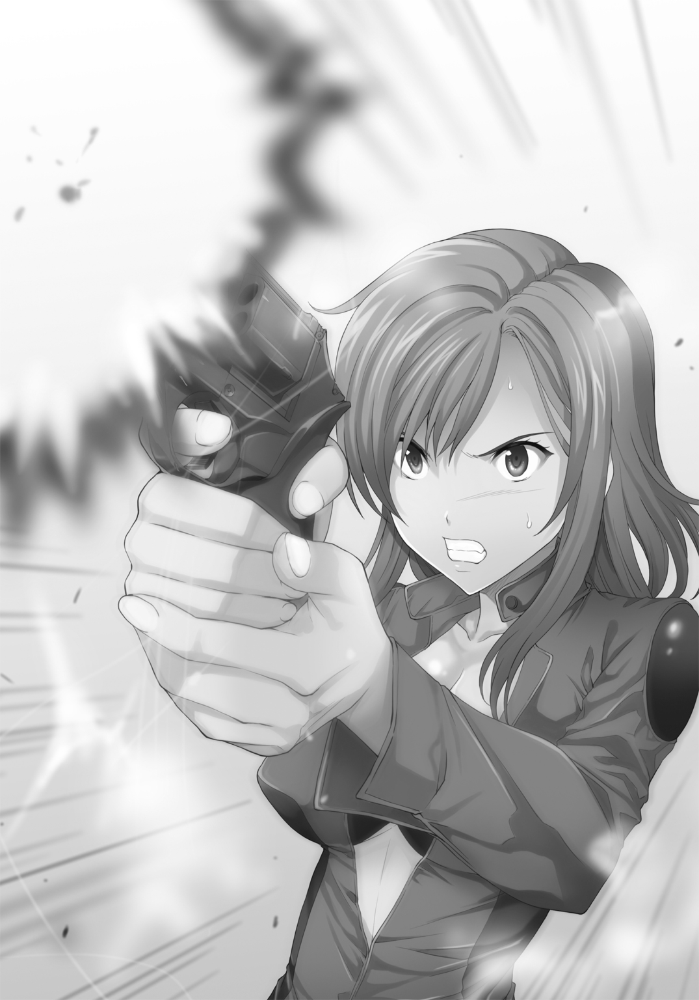
「確かに、禁裏の衛士の槍を鉄扇で凌いだ、って聞いたことはあるけど、銃弾まで防げるわけ？」
しかし、ひるまず泡瀬はライノをホルスターに収めつつ、もう一つの武器をかざした。
タグルがしてみせたのと同じようにボタンを押し込む。
透明感のあるプルシアンブルーの「杖」の先端が輝き、芹沢鴨に化けたアンドロイドの身体の表面に幾つものスパークが散って動きが停まる。
その瞬間、迷わず泡瀬はアンドロイドの肩を蹴って再び屋根の上に飛んだ。
瓦を踏み砕くことなく、すぐに走り出す。
きゅいきゅい、というモーターの作動不良の音が響いたが、芹沢鴨の亡霊はそれ以上追ってこなかった。
だが、代わって新撰組の呼び子の笛の音が響き始めた。
☆
泡瀬の撃った銃声を、パーシィはそこから数百メートル離れた路地で聞いた。
「アワセか！」
タグルならともかく、プロである彼女が撃ったということは、それなりの相手ということなのだろうと判断し、パーシィは銃声の響いたほうへ蒸気精霊杖をかざして作動させる。
同時に妙な反応が彼女の片眼鏡に現れた。
「モザイク変形の遠隔操作型アンドロイドだと？ やっぱりここで何か悪さをしてる奴らがいるということか！」
パーシィはコートを翻して走り、やがて大店の裏手にある塀の上に飛び上がって手をかけると、一気にその上にあがり、走り出す。
☆
泡瀬が閃光手榴弾を投げるのを見て、タグルは迷うことなく走った。
これまで潜った修羅場で自分の能力の上限は知ってるし、今ここで持っている銃で泡瀬を援護するにしても、下手をすれば彼女に当たりかねないと思っていた。
やがて呼び子が木霊し、あちこちから捕り方やら新撰組の別の隊士たちがやってくるのが見えた。
とにかく逃げねばならないが、この碁盤のように整然と区切られた町は、初めて来た自分がどこにいるのかがさっぱり分からない。
グルグル回っているのかそれとも、それなりに遠くに来ているのか。
やがて、ばったりと新撰組に出会った。
「あ」
慌てて身を翻したのがまずかった。
「待て、怪しい奴！」
と逆に疑心を買って追われることになってしまった。
路地を走り、曲がりしていくうちに、だんだん自分を追う足音が増えていくのが分かる。
そして、とうとう突き当たりに出てしまった。
「追い込んだぞ！」
「あの小坊主、不逞浪士らしい」
「なにやら我らのことを聞いて回っていたとか」
「局長命令で即座に叩き斬れとのことだ。どうやらそやつ、火付けを目論んでいるそうな」
「なんと、では池田屋の生き残りどもか！ 許さぬ！」
タグルは先ほどまで親切に話をしてくれていた人たちがあっさり自分のことを新撰組の連中に喋ったことを知って軽くショックを受けた。
（まあ、誰も斬り殺されたくはないか）
そう考え直してどこかに出口がないかと周囲を探す............あった。
右手の塀の片隅、風が吹いて潜り戸が微かに軋んだ。
手をかけるとあっさり開く。
天の助けとタグルは中に入り、そっと閉めてかんぬきをかけ直した。
どこかの離れのある料亭の裏庭らしく、料理の匂いと日本酒の匂いが微かな香の匂いと共に流れてくる。
タグルは庭の茂みに身を潜めた。
慎重に身を潜めたつもりだが、がさりと枝に上着の裾を引っかけてしまい、音が鳴った。
「誰だ？」
深くて、渋い声が離れから響いた。
息を詰めていると、障子の向こうで笑う気配があった。
「どこのどいつか知らんが、こっちへ来い。庭は寒いぞ」
数秒、タグルはためらったが。
「追われているのだろう？ 俺もひとりで退屈しておるところだ、酒が飲めなくても話し相手は出来るだろうし、食い物もある」
そこまで言われると、出ていかないのも失礼だろうと思い、茂みから出て、靴を脱ぎ、それを持ったまま障子を開けた。
ほのかな暖かさがタグルを包む。
「こ、こんにちは」
中には大きな火鉢と、料理の盛られたままの大きな黒漆の箱膳がひとつ、そしてこちらに背を向けて左手を腕枕に寝転んでいる侍らしい姿があった。
月代は剃らずに伸ばしているのが分かる。着物はややくたびれているが汚れてはいない。
「中に入ってさっさと障子を閉めろ」
「あ、はい」
障子を閉めて正座していると、男はゆっくりと起き上がった。
それなりに上背があるのに、ネコ科の動物を思わせるしなやかさだ。
先ほどの新撰組の男たちと同じ目がタグルを射たが、こちらには殺気がない。
「あの、ありがとうございます」
タグルはとりあえず助けてくれた礼を言って頭を下げた。
殺気を一瞬でも感じたら腰の後ろの銃を抜く、と決めていたが、何も起こらない。
「顔を上げろ。話し相手が欲しいんだ、俺は殿様じゃない。ただの用心棒だ。頭を上げてくれないと話もできん」
「は、はい」
タグルが頭を上げると、にやりと笑う。
端整で、一見冷徹に見える顔が、笑うと子供のように朗らかに見える。
その顔を見た途端、ようやくタグルの身体から緊張が抜けたが、男は次にとんでもないことを口にした。
「随分と珍しい逃れ者だな。坊主の格好をして何をしてたんだ、『イコライザー』？」
「え？」
「細かい話は後だ。どうやら狼どもが気づいたらしい、隠れろ」
そう言って男は手招きした。
☆
「お、お客様方ぁ、し、新撰組の方たちの宿改めでおますー！」
番頭の声が何度も同じことを連呼して料亭の中を駆け巡るなか、ずかずかと新撰組たちは料亭の全ての部屋を開けて回った。
突き当たりに人の出入り出来る場所はこの料亭しかないということで、ズカズカと強制捜索に入ったのだ。
「離れだ！ 離れを探せ！」
隊長の声に、タグルは暗闇の中で身を固くした。
本当にここで見つからないのか、心配だが今更ジタバタしても仕方がないと開き直ることにした――――といってもそう簡単にはいかない。
さすがに今更騙されているのかも、という考えは浮かばないが、見破られやしないか、という心配はある。
やがて、どたどたという足音が響いてきた。
☆
「宿改めである！」
新撰組の隊士が荒々しく障子を開けた。
「相変わらず無粋な連中だな」
タグルに用心棒、と名乗った男はそう言ってタグルに会ったとき同様に寝転んで背を向けて答える。
「ここに怪しげな坊主が来なかったか？ 年の頃は十三、四、やたらこぎれいな袈裟と頭巾を............」
現代人のタグルは、この時代の人間からすれば幼く見える。
「知らんな」
用心棒は素っ気なく言葉の途中で答えた。
「ここは俺ひとりだ。さっきからずっとだ。分かったらさっさと出ていけ」
「貴様、新撰組十二番隊隊長殿に対して無礼であろうが！」
隊士のひとりが激高して刀に手をかけると、残りの連中も我先にと同じことをした。
「どっちが無礼だ」
用心棒はタグルに対してとは打って変わった辛辣で嘲笑的な声音で続ける。
「ここは俺の部屋だ、落ちぶれ果てて浪人してるが、こう見えても侍の端くれ、となればここは俺の城。そこへ勝手に入ってきて、大音声でこっちが知りもしないことをぎゃあぎゃあわめき立てる。質問に答えてやれば気にくわないと刀に手をかける。お前たち、俺が会津の紋付きだったらそんなことはするまい？ そういうところが無礼だというのだ」
よっこらせ、とわざとらしく声をあげながら男は背を向けたまま起き上がった。
「侍でもないドン百姓が、やっとうが少し出来るからと幕府の混乱に乗じて成り上がり、名字帯刀を許されて舞い上がり、増上慢になるから京の町屋の連中に壬生狼だの人斬り人足だのと言われるのだ」
「貴様ぁ！」
とうとう隊士のひとりが刀を抜いて男の背中に鋭い刺突をかけた。
両脇にいたふたりも同じく刀を抜いて斬りかかる。
ただの斬檄ではない、室内戦で鍛えられた、振りかぶる動きを最小限に、むしろ身体ごとぶつかっていくような袈裟懸けだ。
刀を抜いて挑み、逃げれば「士道不覚悟」として切腹せよと言われ、それに殉じる男たちの斬檄である。
隊長が「待て」と言う暇もない、瞬時のことだった。
きん。
涼やかな音がして、用心棒の刀は鞘に収まった。
氷柱のように輝く三本の刀が、一本は天井に、二本は畳に突き立っている。
「次は喉を薙ぐ」
口をへの字に曲げた男の顔を見て、隊長の顔から血の気が引いた。
「ひ............土方先生」
「俺は土方などではない、ただの用心棒だ」
「いえ、あの、は、はい、ひ、土方先生、ご、ご無礼をばいたしました、か、かようなところにいらっしゃるとは思わず、し、失礼を！」
「土方ではないぞ」
「は、はい、分かっております、はい！」
慌てて呆然とする隊士三人の襟首を引っ摑むと、隊長は何度も頭を下げつつ、他の隊士たちに「ここで見たことは他言無用、先生がいないと仰るのだ、他に逃げたのだ、間違いない！」と半ば悲鳴のように叫びながら去っていった。
「もういいぞ、『イコライザー』」
用心棒が言うと、床の間の掛け軸の掛かった壁がくるりと反転して、僧侶の立体映像を纏ったままのタグルが出てきた。
「あの、どうしてあの人たち......土方先生ってあなたのことを呼んでましたけど、本当に土方歳三......」
「いや、違う違う」
そう言って用心棒は笑って顔の前で手を振った。
「向こうが俺に似てるのさ。長生きしてるとたまにこういうことが起こる」
口調が優しく、砕けたものになった――――本来はこちらが地なのだろう。
「............はあ」
「だが、『イコライザー』としては新顔だな。お前さん。名前は？」
「あ、沙汰内タグルと言います」
「............ふむ、初めて聞く名だな。パートナーはいるのかい？」
「えーと、僕のほうがパートナーというか、そのワークメイトといいますか......」
「ワークメイト？ ってことはパスウィダーか、それともまさか......レッド・リーコンじゃないだろうな？」
「あ、いえ、パスウィダーのほうです。レッドさんも一緒にいますが......」
「なるほど」
用心棒は苦笑した。
「パスウィダーなら納得だ。レッドの場合、男だとお前さんみたいな真面目そうな奴は苦労しそうだからな。まあ、あいつの場合は男の時だろうが女の時だろうが苦労だらけだろうが」
「？」
「さて、そろそろ河岸を変えよう。屯所に戻れば俺が土方じゃないことはすぐに判るはずだ」
「あの、あなたは......」
「俺か？ 俺はいまはただの用心棒だ。名前はとっくになくした............すまんが裏口で待ってろ、俺はこの料亭の主に新撰組と揉める前に姿を消すと告げてくる」
☆
裏口で待っていると、用心棒はすぐに戻ってきた。
「京の商人はなかなか腹を割らんが、逆に一度割るとなかなかに義理堅い、新撰組を青い顔させて追い返したと喜んでくれた」
そう言って手に持った、小判が数十枚は入った「切り餅」を懐に入れる。
「凄いですねえ......」
「まあ、『イコライザー』と違って俺みたいな『タイムウォーカー』は滅多に時間を移動したりはしないからな。生活費というやつは必要なのさ」
「『タイムウォーカー』？」
同じ単語を今朝方レッド・リーコンが口にした気がする。
「ああ、俺のような奴はそう呼ばれる。俺は不老不死なのでな。過去に遡って自分の時代までのんびりと生きていく......まあ、俺の場合は昨今、そうもいかないことも多いが」
「不老不死ってことは、用心棒さんも宇宙人ですか？」
「そんなところだ............と言いたいが、君らと同じ地球人だよ。三百年ほど前に、古代アステカ文明に伝わる特殊な仮面が日本に流れ着いてね。当時、俺は陰陽師をやっていたんだが、興味本位で被ったとたん、遺伝子レベルで改造されて、以来、歳も取らないし死ぬことも出来ない」
「はぁ............」
どこかで聞いたような話だ、と思いつつタグルは頷いた。
世の中、信じられないようなことはあるのだろう。
「加えて失われた数千年前の知識もいくらか頭に入った。で、『イコライザー』のことも、科学の知識に関してもいくらか分かるようになった。多分、二百年ぐらい先までの技術は俺の頭の中にある――――せっかくそういう身体になったのだから、ということで過去の時代の生活を体験していこうと思ってな。まあ『イコライザー』にとっては現地協力者のようなものだ」
夜の闇の中に入った京都の町を歩きながら、タグルは思わずポカンと口を開けた。
永劫の命の使い道としては随分贅沢なことなのかもしれないが、驚くより他はない。
「この辺で最近おかしな話を聞いたんですけれども」
「芹沢鴨の亡霊の話か」
「あれは本当だ。実はこの前、近藤勇が斬られそうになったそうだ」
「......どう思います？」
「芹沢鴨は死んだ、それは間違いない、だとすればこの時代の人間の策略か、そうでなければ......時間犯罪だろうな」
「ですか............」
「となるとまあ、間違いなく土佐の坂本龍馬という男が絡んでるだろうな」
「え？」
「そういえば君らのいる時代では英雄扱いだそうだな、以前レッドに聞いた............実際には出自憎悪の塊でな、最近時間犯罪者と付き合うようになってから江戸と京都を手始めに日本中を焼き払って侍を皆殺しにしたいらしい。侍で生き残るべきは土佐の下士以外は、江戸の勝海舟と今は獄に繫がれている土佐の武市半平太だけだそうだ」
「んな......」
司馬遼太郎の坂本龍馬小説の愛読者が聞いたら、半泣きになって殴りかかってきそうな話を、用心棒は平然と口にした。
「まあ、放っておいても歴史は辻褄をあわせるもんだが、『イコライザー』が来たということはどうやら大事になるということだろう」
用心棒の横顔は月の光に照らされて厳しく引き締まっている。
ふたりが歩く足音以外、冷え冷えとした道に響くものはなく、月は蒼く、高い。
現代と違い、まだ午後八時前なのに町はほとんど真っ暗だった。
タグルが観た昔の時代劇映画でも随分昔は暗いのだと思ったが、それでも居酒屋などの夜の店の明かりはあった。
それすらもやはり電灯による明かりだったのだと気がつく。
そして、ほんのりと明るく輝く一角があることに............あれが京の色町、祇園という場所なのだろうとぼんやり思った。
この暗闇の中に見える明かりの輝きは、この時代の人たちにとって、確かに桃源郷に見えたことだろう、としみじみ思った。
「まあ、大体京都であいつがいそうな所は見当がつく......それにしても迷惑千万な話だ。走りまわる側は勤皇だの佐幕だの、世界の命運を一人で背負っているような顔をして、人を斬り殺しても『大の虫を生かすには』と恬然としているが、巻き込まれる庶民はいい迷惑というものだ。勝手に殺し合って、勝手に死ねば良いものを」
「............」
「未来は少しはマシになっているかね？」
「あ、え、ええ多分......そうだと思います」
「そうか、少し明るい気分になれるな」
そんな会話をしていると、ふたりの上に影が落ちた。
「タグル！ 無事だったか！」
「タグル君！」
パーシィと泡瀬が屋根の上からタグルたちの前に降り立った。
「久しぶりだな、パスウィダー。そっちのお嬢さんもワークメイトか？」
「まあな。久しぶりだ、『タイムウォーカー』。今は素浪人か？」
「用心棒だ、お前さんも出来ればそう呼んでくれ」
「昔の『風野新十郎』の名前はやめたのか？」
「その名前を知ってる奴も皆死んだからな。今は名無しの用心棒が気に入ってる」
「なるほど」
「ところで話は聞いた。諸悪の根源の居場所に心当たりがある」
「私も大体の方角は見当がつくが、案内してくれるとありがたい。どうもこのところおかしなことばかり未来では起こってて、その原因の手がかりのひとつがここにありそうなんだ」
「分かった」
☆
幸い「芹沢鴨」の故障は一時的なもので、すぐ自動修復で何とかなった。
「現地調達はそろそろ限界ね」
言って彼女はお堂の奥にある観音像の顔を押した。
かちり、という音と共に観音像の顔は奥に引っ込んで回転し、仏像を収納した、仏殿を模した箱自体が遙か奥へと移動した。
壁全体が下に沈み込む。
そこには、透明なチューブカプセルが数十個並び、中には新撰組の隊士たちがずらりとうつろな表情で並んでいる。
ただし、その顔は全て現役の隊士ではなく、これまでに戦って死んだり、暗殺されたり、切腹させられたりした「幽霊」たちだ。
そのことで分かるとおり、全てが彼女の操る「芹沢鴨」と同じくアンドロイドだ。
彼女にこれら全てのアイテムを与え、この時代に連れてきてくれた「恩人」は最後の手段と言っていたが、まさに今がその「最後の時」であると彼女は判断していた。
「切り札はこちらが不利になる前に使わないとね」
そう言って、彼女はコンソールをいじって、隊士たちの羽織の色を黒く変え、白い糸で半分の人数に長州、残り半分に薩摩藩の紋を入れる。
それから部屋の真ん中にせり上がってきたＴ字レバー型スイッチに手をかけた。
「さぁて......」
息を吸い込み、それを押し下げようとした途端。
「なにをするつもりだ」
蒸気精霊杖の作動する高周波音と、電磁ロックが解除される音が重なった。
扉が開く。
そこには鍔のえらく広い中折れ帽を被り、コートを翻す片眼鏡の少女と、緊張した面持ちで古い上にあちこち謎の配管が走るリボルバーを構えた少年、落ち着いた表情で風変わりな形をしたリボルバーを構えたセミロングの少女が立っていた。
「決まっているわ。京都の町を焼き払うの。薩長のせいにしてね。そうすれば薩長が朝敵になるわ。長州で逆転を狙う高杉晋作にとっては格好の援護射撃でしょ？」
「なるほど、長州征伐は別の意味に化ける、か。徳川幕府は公武合体の速度を速め、逆に薩摩は崩壊へと進んでいく.........という計算かね？」
パーシィはますます激しく輝く蒸気精霊杖を突きつけながら言った。
「私の名はパスウィダー。時間犯罪を未然に防ぐ『イコライザー』だ。君が誰かは知らないが、歴史の流れを変えるのはやめたまえ！ この時代に起こることはすでに全て確定している。背けば君は歴史の強制力によって消去される。運良く成功してパラレルワールドに分岐させたとしても、それは非常に不安定だ。元の歴史と同じことが一度でも起これば、途端に再び全て元の歴史に飲み込まれて消え去る、その場合、分岐を作った君は存在そのものが消去されるんだ、命を無駄にするな！」
「いいのよ！」
パーシィの説得に、彼女は目を吊り上げて叫んだ。
「私は二〇一〇年にＯＬをしてたの。歴史好きで、新撰組が好きで............でも、彼らは全滅する、どんなにそれが美しくても、一度ぐらいハッピーエンドの歴史が見たいのよ！ もうアンハッピーエンドやビターエンドはたくさん！ この歴史を変えられれば、私だって変わることが出来る！ ただのＯＬじゃない、歴史を生み出した神様になれる！」
「幻想だ！ そんなことは上手くいかない！ 歴史を生み出すのはその時代の人間だけに与えられた権利で、未来の人間にその権利はない！ 時間の修正力を甘く見ては駄目だ！」
「うるさい、変な名前つけてるけど、結局あなたたちはタイムパトロールなんでしょ？ ドキュメンタリーのカメラマンと一緒で、目の前で人が死んでもそれが歴史通りなら注意もしなければ助けようともしない冷酷非情の屑よ！ 私は違う！」
それ以上の説得を受け容れようとせず、ＯＬはレバーを押し下げようとした。
その身体が、後ろに向けて吹っ飛ぶ。
タグルが銃を構えつつ、左手に握って隠していた蒸気精霊杖を使い、本来なら高いところから飛び降りる時に下に空気を固めて作る「エアクッション」を作り、元ＯＬである彼女に向けて開放したのだ。
細い身体は後ろのチューブにぶつかり、頭と背中を打った彼女はそのまま力なく床に倒れ込んだ。
「わわわ！」
慌ててタグルが駆け寄って抱き起こす。
「大丈夫、脈はあるから」
タグルに寄り添って駆け寄った泡瀬が彼女の首に手を当てて微笑む。
「良かったぁ―」
「まったく............一体、どこのどいつがこんな装置を......」
パーシィは蒸気精霊杖を使って彼女が「芹沢鴨」を操るのに使っていたコンソールシステムを調べる。
☆
土佐藩の青年は、紙細工の部屋をじっと暗闇の中見つめていた。
全て色をつけた和紙を米粒をすりつぶして作った米糊で貼り合わせ、蒸気機関さえよく見たことのない人間とは思えぬ精度で全ての装置が再現されている。
彼女を示す赤い、人型に切り抜いた紙はぱったりと倒れ、すうっと青くなるのを見て、青年は舌打ちした。
「なんちゅう愚かぇ女だ」
それから人差し指と中指の二本を立てて「剣指」とし、口の中で呪文を唱えてちょい、と今は真っ青に変わった紙人形を突いた。
「ほい、しまいのご奉公をしちょき」
すると、紙人形はひょいと立ち上がった。
☆
とりあえず気絶しただけだと分かってホッとしたタグルの目の前で、元ＯＬの彼女が、まるで見えない巨大な指に摘んで起こされたように立ち上がった。
「え？」
彼女の両目は固く閉じられ、不器用な操り人形のようにひょいと両脚を曲げず、ぴったりとそろえたまま飛び上がると、さしもの泡瀬も間に合わぬ素早さでＴ字レバーを押し下げた。
「わーっ！」
青白いスパークが室内に満ちる。
「タグル、その女に何をしたんだ！」
「なんにもしてないよ！」
「くそ、龍馬の奴、また妖術か！」
「何それ？」
「あいつ、土佐一条氏が京から伝えた妖術を使えるんだよ！ 交渉とかが得意なのもその応用だ！」
「そんな話教科書にない！」
「当たり前だ！ そんな非科学的な話、載せられるか！ 霊子操作術が世界に認められるのは君たちのひ孫の時代だ！」
「そんなことよりパスウィダー、どこを破壊すればこの放電、止まるの？」
「放電はじき止まる！」
そう言った途端、本当に放電は終了した。
「問題は......」
まぶしさから逃れるために顔を覆っていた腕を下げ、パーシィは苦い顔になった。
「それが終わった後だ......放電はエネルギー充塡の副作用にしか過ぎない」
透明チューブの中で、かくん、と死んだはずの新撰組隊士が、彼らが蛇蝎のごとく嫌っていた薩長の紋を入れた羽織姿で顔を上げた。
数十本のチューブが一斉に開く。
ゆっくりと、男たちはそこから歩み出た。
『我ら』
一斉に男たち......正確にはそれを模したアンドロイドたちは口を開いた。
『我ら、姫様の御為に命捧げん』
それを聞いた瞬間、パーシィの顔が引きつるのを、タグルははっきりと見た。
『我ら、姫様の御為に命捧げん』
連呼されるのかと思ったが、アンドロイドたちはそれっきり黙り込んでゆっくりと歩き続ける。
「タグル、アワセ、さっきと同じことを一斉にやるぞ、構えろ！」
パーシィの言葉に、タグルと泡瀬は蒸気精霊杖をそれぞれ構え、最後に本人も自分の杖を構えた。
「五、四、三、二、一......今だ！」
一斉に「エアクッション」が開放され、アンドロイドは後ろの壁へと叩きつけられる。
だが、それだけだった。
再び身じろぎし、壁に半ば埋まった己を引きはがすようにして出る。
うち数体が、壁を素手で握り砕くのをタグルは見た。
ほとんどが腰の刀は形だけだったらしく、折れたり曲がったりしているが、指先だけでも触れればタグルたちの命は確実にない。
さらにゾンビのように手を前に突き出した彼らの指先から青白いバーナーの炎が噴き出した。
「着火装置内蔵か！」
「どうするの？」
「今回ばかりは逃げられん。こいつらを町中に出したらそれこそ京都は火の海だ」
「『ロスティニア』に援護を............」
「無理だ、この堂内は時空的にロックされてる、今まで誰にも見つからなかったのは認識攪乱結界だけじゃなくて、時間的にも存在しないからこの時代の人間には見つからなかったんだ。ロスティニアが近づけばその途端、半径十キロが時代から切り離されてドコへ流れていくのか見当もつかない」
「じゃあ、蒸気精霊杖の一斉電磁パルスで......」
「それしかないな............ふたりともダイヤルを『９９９』に」
「わ、分かった」
「了解！」
「セッティング出来たか？」
「出来た」「出来ました」
「よし、いくぞ、三、二、一......今だ！」
一斉に三つの蒸気精霊杖が光ったが、新撰組アンドロイドの間に見えない壁が出来たかのように数十センチ手前でバチバチと火花が散っただけで終わった。
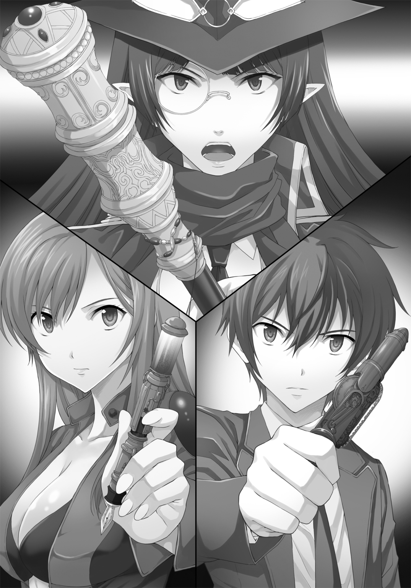
「しまった、こいつら、個別に蒸気精霊杖専用の無効化フィールド張ってる！ デッドロック・シールドだ！」
「どう違うの？」
「デッドロック・シールドは『ドクター・フー』に出てくる............」
「あーもう、そんなこと言ってる場合？」
「仕方ない、撃つわ」
「駄目だ！ 撃ったら爆発する！」
「え？」
「あいつらの動力は不安定化されたジキソニウムだ、高出力だがある一定以上の衝撃を受けたら爆発する！」
「うわぁ......」
思わずタグルは天を仰いだが、
「ならば斬ればいい――――伏せろ」
渋い声が背後から来て、タグルはその声に従って床にかがんだ。
タグルの背後を影が飛ぶ。
顔を上げた瞬間、タグルが見たのは銀の光がアンドロイドたちの間を稲妻のように駆け抜ける風景だった。
気がつくとあの用心棒が片膝をついて刀を収め、立ち上がるところだった。
「来るなと言われたが、出てくるのが遅いのでな、嫌な予感がして来てみた............どうやら刀でも役に立つことがあるらしい」
「土方............歳三......」
初めて明るいところで浪人の顔を見た泡瀬がポカンと呟いた。
「残念ながら別人だ」
そう言って、用心棒は爽やかに笑った。
「それと、お前さんたちを助けたんで、龍馬のほうは取り逃がした。すまんな」
「それは構わない。術が破られた以上、向こうもかなりの痛手を被ってるはずだからな」
苦笑を浮かべながら、パーシィが用心棒の手を握った。
「ありがとう」
「なに、そのうち俺のほうも助けてもらうだろうさ」
男の笑顔は風のように爽やかだった。
☆
唯一起動されずに無事だった「芹沢鴨」のアンドロイドと、元ＯＬの彼女を回収し、「ロスティニア」は出発した。
元ＯＬは鎮静剤を投与し、暴れないように護送カプセルに収める。
その際、身分証明書なども出てきた。
「――――どうやら、自称したとおり二〇一〇年の人間だな、彼女は」
「ロスティニア」のブリッジ、パーシィはその書類の年号をチェックして溜息をついた。
「となると、彼女が単独で時間旅行が出来るわけはないし、あのアンドロイドの説明がつかないね」
「恐らく、別の時間犯罪者に見込まれてつれてこられたんだろう。歴史好きで、時間改変願望が皆無の人間は珍しいからな。これを見ると歴史研究会に参加している上に、歴史関係のブログや同人誌も出しているみたいだから、そこを見初められたな」
「あ、この人の会社、学校の近くだ」
横からパーシィが広げた身分証を覗き込んでタグル。
「しかし『姫の御為に命捧げん』か......」
パーシィは堂内のことを思い出して苦い顔になった。
「なんだそりゃ」
顔のあちこちに痣を作り、絆創膏を貼り付けたレッド・リーコンが、パーシィに負けず劣らず苦い顔になる。
「どうしたんですか？」
「俺もパーシィもあんまり思い出したくないフレーズだからさ」
「どういうことです？」
「まあ......」
ちら、とレッドはパーシィを見やると、ブリッジの椅子に腰掛けた少女は腕組みをして、珍しく鋭い目でこちらを見、レッドに対して首を横に振った。
「その辺のことは、ちょっと後で......」
という言葉を言い終える前に、警告ブザーが鳴った。
「どうした？」
パーシィの声に、空中投影型スクリーンが展開し、先ほどタグルたちが運び込んだ元ＯＬの使っていた機材を、芹沢鴨が素手でぶん殴って壊して回っている光景が映った。
『第十二格納庫で回収したアンドロイドが起動しました、同じく回収したコントロールシステムを素手で破壊しています、自動防衛システムで攻撃して停止させますか？』
「だめだ、私たちが行って止める！」
蒸気精霊杖を摑んで走り出そうとするパーシィに、「ロスティニア」のＡＩは、
『残念ながら姫様、アンドロイドは自爆モードに入っています。爆発まで......』
どぉん、という腹に響く震動が「ロスティニア」内部を駆け抜け、タグルは泡瀬と共に床に転がりそうになってレッドの逞しい腕に抱き留められた。
「あ、ありがとうございます」
思いがけず泡瀬とレッドの腕の中で抱き合う形になって、真っ赤になってタグルは礼を言う。
「なぁに、美少年と美少女は宇宙の宝だから」
にこっとレッドは微笑んだ。
「損傷報告！」
パーシィの声が斬りつけるように響く。
『第十二格納庫大破、パージして再構築します。ですが、現在のエネルギー事情を鑑みて、これ以上の時間航行は危険です、一旦、起点ビーコンを打ち込んだ二〇一八年七月×日に戻ることをお薦めします』
「分かった............仕方ない、起点ビーコンまで戻れ」
パーシィががっくりとうつむいて手を振った。
『............と、第二命令者が申しておりますが、よろしいでしょうか、タグル様』
「あ、はい......お願いします」
『承知いたしました』
「パーシィ、大丈夫？」
「抜かった、起動してない時点であのアンドロイドの中を調べるべきだった......」
『残念ながら姫、あのアンドロイドの自爆装置は動力源にはありません。外装を構成する五八〇〇万枚のモザイク型外装変換システムの素材そのものが時間流の中にいることを検知すると変質する仕様でした。故に事前察知はほぼ不能かと』
「それでも、対爆容器に入れるとかしとけばよかった」
『姫がうっかりして私を損傷するのはこれで通算三五四二万飛んで三回目です、今更反省なさっても............』
「うるさい、黙れ！」
☆
未だに報告書を制作中のカレン・西中はそのまま部屋の中に放置しておくことにして、タグルと泡瀬は一旦「ロスティニア」を降りた。
例の元ＯＬは当人のアパートに、幕末にタイムトラベルした日の翌日の朝、眠ったまま置いてきた。
「ろすてぃに屋」のドアに化けた入り口を閉める。
「本当にこの前出てから五分しか経過してないんだ............」
スマートフォンの時刻をウェブで同期させて、泡瀬は溜息をついた。
「当たり前かもしれないけど、驚くね」
くすっとタグルが微笑む。
「それじゃあ、また明日」
「ええ、また明日」
そう言ってタグルは泡瀬と別れた。
背を向けた自分に泡瀬がずっと視線を送っているとは気づかないまま、自宅のマンションの中に入ろうとすると、スマートフォンが鳴った。
「？」
母からだった。
『あのね類、今日は外食しない？ ちょっと参加したいイベントがあるの！』
母の声は妙に弾んでいる。
「まあいいけど............どこ？」
母が指定したのは一つ離れた駅前にある大型書店だ。
そう言われて、タグルは冷蔵庫に母がその書店のチラシを貼っているのを見た。
確か母が熱狂的ファンの大長編漫画の作者がサイン会に来るという内容だったと思う。
「............ったく、母さんったら」
あの堅物の父とどうして結ばれたのかが分からないポヤポヤしたところの多い母は、宝塚などの演劇ばかりではなく未だにマンガやアニメ特撮の類が大好きで、親子関係が上手くいっているのもそのマンガやアニメ、ゲームを通じてなので、タグルとしてはあまり文句はない。
そして、同時にチラシの画像が脳裏に妙に引っかかった。
「ま、いいか」
危険な「警報」は感じなかったので、タグルは思い出せないことはそのままでいいと思い、指定された場所に向かった。
☆
「あ、類............！」
ワンピース姿の母は、ションボリ落ち込んだ顔でタグルを書店前で迎えた。
「どうしたの、母さん」
「新刊は買えたんだけど、サイン会のね、整理券貰うの忘れてたの......せっかく先生が来てたのに。明日から三度目のルーブル美術館の展示とかで世界中回るから、今年はもう関東圏内のサイン会しないのにぃ......」
どう見てもタグルを生んで育てているとは思えないぐらい、年若い外見の母は、そう言ってうなだれていた。
「高校時代から貰い続けてるんでしょ、一回ぐらいいいじゃない」
「でもねえ............」
という会話をしていると、書店の入り口がにわかに騒がしくなった。
振り向くと、しなやかなネコ科の野獣のような滑らかな足取りで、長身に苦み走った顔の中年男性が、サングラスをかけて周囲ににこやかに手を振りながら出てくる。
「あ、先生だー！」
現金なもので、ぱぁっと明るい顔になった母は、先ほどのションボリムードはドコへやら、ぴょんぴょん飛び跳ねて手を振った。
周囲に公平に手を振ってにこやかな笑顔を振りまいていた「先生」が一瞬、こちらを向いて手を振ったように、タグルは思えた。
（まさか）
気のせいだろう、と思っていたら、「先生」は書店前に停めてあったリムジンへは向かわず、まっすぐこちらへやってくる。
「やあ、タグル君、久しぶりだねえ」
その声に聞き覚えがあった。
「先生」がサングラスを取る。
幕末の京都でタグルにとってはつい一時間前、実際には百数十年以上前に彼らを救ってくれた用心棒の顔がそこにある。
「ど、どうもお久しぶりです、用心............いえ、先生」
ぺこりとタグルは頭を下げる。
「最後に会ってから大分たったねえ。こちらはお姉さん？ いや、以前サイン会で高校生の制服姿をなさっていたからお母さんなのかな？」
幕末の時とは違い、随分砕けた柔らかい口調で「用心棒」の「先生」はタグルの母に顔を向けた。
「お、覚えていてくださったんですか！」
「ファンの顔は見忘れないんですよ、知っているでしょう？」
「はい、はいっ！」
「今日はどうしたんだい？」
「あの、えーと母が先生のファンで、でも整理券を......」
「ああ、タグル君のお母さんなら特別だよ、それ、ボクの新刊ですよね？」
「先生」はめざとくタグルの母が小脇に抱えている書店のビニールの上から中身を察して言った。
「あ、はい、そうです！」
母は大慌てでビニール袋から新刊を出し、シュリンクを破って「先生」に差し出した。
胸ポケットに差した奇妙な形の白い万年筆で、「先生」はすらすらとカバー下、表紙の裏に母のリクエストを聞いて、タグルもよく見るあのキャラクターの横顔を描いて手渡した。
そのとき、ようやくタグルは「先生」の持っている万年筆が、自分の持つ小型の蒸気精霊杖と同じものだと気づいた。
「これからもどうかよろしくお願いします」
「は、はい！」
母は泣かんばかりだ。
「しかし良かった。明日からフランスなのでね。君から聞いていたから、ここでサイン会をしたんだが、君の姿が見えないんで心配してたんだ」
そして、懐から封筒を取り出した。
「これは最後に君に助けてもらった時のお礼だ。源内先生と渋沢の爺さん、吉田のくそジジイ、そして俺と紅葉からの、な」
「え？」
「今の君には分からないが、やがて分かるよ、それじゃあな」
「あ、はい」
タグルは言われるままに封筒を受け取って懐に入れた。
「九割は今の銀行に、一割は明治の銀行へ持っていくがいい。金に換えてな」
「は？」
「それじゃあ、沙汰内さん、また！」
混乱するタグルと感動している母を残し「先生」は人混みをボディガードたちにかき分けさせて、リムジンに乗り込んで去っていった。
「............」
呆然と見送るタグルに、母は万年筆のインクが早く乾くように本を開いたまま息を吹きかけつつ言った。
「本当、先生はお変わりないわぁ......ねえタグル、知ってる？ 先生ってね、新撰組の土方歳三の写真そっくりでね、他にも過去に似た人がいるものだから本当に漫画に出てくる石仮面を被って不老不死になったんじゃないかって、お母さんが大学のころ、よくネットでネタにされてたのよ？」
「へえ、そ、そうなんだ......」
よもや本当のことは言えず、タグルは多少引きつった笑顔で答えたが、幸いにも母の視線は「先生」のサインに向けられていて、気づかれていなかった。
☆
「............本当に綺麗さっぱり消え去ったものだな」
芹沢鴨型アンドロイドの自爆で大破した格納庫に足を踏み入れ、パーシィは呟いた。
「残ったのは装置の切れっ端だけ......？」
かがみ込んで、その「装置の切れっ端」を拾い上げる。
そこには横を向いてしゃがみ込んだ銀色のウサギのマークが打刻されていた。
「これは......まさか、いやいや、あの頃の私たちの装備はあちこちにあったから、これもきっと......」
苦笑を浮かべようとして、パーシィはそれが出来ないことに、まだ気づいていない。
○第二話：「木枯らしの少女」（byABBA）
☆
「え？ 空」
タグルは自分が空中に放り出されたと知って、一瞬意識が途切れそうになった。
何しろどう考えても周囲の山々から考えて、高度数百メートル。
万物を受け容れてくれる水でさえコンクリートになる高さだ。
「ぎゃああああああああ！」
思わず叫ぶが自分の声は聞こえない。
風が渺々と耳の中で木霊する。
ぐるぐると風景が回り、天と地が互い違いに混ざっていく。
「そ、そうだあの杖！ ちっこいの！」
慌てて内ポケットをあさると、ふわりと小型の蒸気精霊杖こと「杖」が浮かび上がる。
「わわわわわわわ！」
慌てて手を伸ばし、離れていこうとする小さな万年筆型の黒いギズモを摑まえる。
慌ててダイヤルを合わせて、緑の方角――――青はきっと空だ――――に合わせてボタンを押し込んだ。何度も、何度も。
その度に「エアマット」が彼を跳ね返し、落下速度を落としていく。
問題はそれが時折上下逆になったり、左右になったりすることだった。
嵐の中を舞う木の葉のように、タグルは上に弾み下に飛ばされ、左右に移動しながら落下する。
辛うじて、速度自体は落ちていた。
☆
数十分前。
「修理が終わった」とタグルのスマートフォンに連絡があって、さっそく「ろすてぃに屋」に瀬底泡瀬共々来てみると（カレン・西中は報告書提出のために同行できないとのことだった）、奥のブリッジでパーシィが次々表示されるデータを見ながら唸っているところだった。
「どうしたの？」
「この前の幕末時代、君たちや私が調べたデータ、あと例の吹き飛んだ格納庫に収めていたあのＯＬが使っていた機械のざっくりしたデータを調べ直していたところだ」
パーシィは難しい顔になって顎に手を当てた。
「例の時空の傷だが、こいつはパラレルワールドにまで波及してる」
「？」
「この前の騒動の原因になった歴女なんだが、彼女にタイムマシンとアンドロイドを与えたのが誰なのか調べてみた、アンドロイドはエクシルシオ人、タイムマシンは一方通行のもので一六〇〇世紀代のものと判明した。つまり『仲介業者』がいる......ところが、彼女の記憶にはその辺がすっぽり抜け落ちてる、記憶処理だ。ただ、完全に消しきったわけじゃない」
画像が映し出される。
「ここ、どこ？」
「君たちの世界で言えば大正時代の東京は浅草界隈だ。だがこれを見ろ。浅草十二階が建っているのに、映画館街がある。この二つは並んで建ったことはないんだ」
「......どういうこと？」
「それに町を行く人たちの格好を拡大すると......」
そこには洋服、和服を身に纏ったコボルトやエルフ、ドワーフたちも交じった風景。
「これ、どういうこと？ 映画のセットか何か？」
「いや。パラレルワールドだ」
「我々の時間軸で大政奉還がされた後、九州に隕石が落下して、そこから出てきた化け物に襲われた世界だ、一度行ったことがあるよ」
レッドが頷いた。
「位置は特定できる。向かってみよう」
「了解」
「並行世界ねえ......」
「行けば分かるが、そこは隕石から現れた物質によって霊的物質が解き放たれて......まあ、早い話、ファンタジー世界と融合して、本来の時間軸から枝割れしちゃったんだよ」
「ファンタジー世界？」
「ああ、」
「ソディオカントとという厄介な連中がいてな、そのせいだ......彼らは戦士が命がけで戦う状況とその際に発生する死の精神波を食べて生きている」
「時間旅行者って、そういえば地球人ばかりじゃないんだっけ」
とはいえ、タグルの脳裏に浮かぶのは、スクール水着を着用した少女の姿をした機会生命体、スウィムウェンぐらいだが。
「そ、俺もそのひとり」
とレッドが片手を上げた。
「あ、そうか、レッドさんも異星人でしたっけ？」
「疑問符を付けるなよタグル君」
「では、とりあえず行ってみよう」
あとはパーシィとレッドが走りまわり、「ロスティニア」はエンジン音を響かせながら出発した。
「並行世界かぁ......これから行くのはどういう」
意味でパラレルなんですか、と言い終える前に、衝撃が「ロスティニア」内を駆け巡った。
驚き、よろめき、転がる。
タグルはとっさに泡瀬を抱き寄せた。
攻撃は一回だけではなく、七回ほど続いた。
その度に激しい震動と共に、「ロスティニア」のブリッジは激しく前後左右に傾く。
「な？」
「攻撃か？」
「違う、船らしいものはない、こいつは次元機雷か、自動攻撃装置だ！」
『姫様エンジンルームに中破、伝導パイプに歪み発生、第六、第七時空冷却変換装置を強制シャットダウンします』
「機雷は普通船首に当たるものだろうが！」
そんなパーシィとＡＩの会話を聞きながら、床に投げ出されたタグルと泡瀬は、
『次元遅延信管、もしくはタイムラグ攻撃にセットされていた模様です』
「七発全部が？ この船の大きさを知ってるということか？」
『レッド様、正確にはあと二発です』
「なに？」
「ブリッジを次元封鎖、第三レベルのダメコン（ダメージコントロール）開始！」
『了解、次元封鎖をかいし......』
します、と言う前に残り二発の機雷だか自動攻撃装置だかが作動し、激しい震動と、天地がひっくり返るように勢いよく傾いたブリッジの床を滑り、泡瀬とタグルは抱き合ったままロスティニアのブリッジ入り口から放り出された。
『します』
の声を聞いた途端、周囲が虹色の光に包まれ、泡瀬が腕の中から消えた。
そして、タグルは空に放り出された。
☆
「うわあああああああああああ！」
何百回「杖」のボタンを押したことだろう。
辛うじてタグルはあと数十メートルで地面、というあたりでかなり減速が出来ていた。
（よし、あと一回か、二回！）
そう思って焦りが出た。
僅かに身体が空中でバランスを崩し、「杖」の先端が横を向いた。
弾かれて近くの杉の木に突っ込む。
「のあっ！」
木の枝に目をやられないようとっさに顔を腕で覆う。
幹に肩からぶつかり、手からギズモが離れた。
枝にぶつかりながら落下する。
後は訳が分からなくなった。
最後はがさがさという音が無限に連続し、それが途切れた瞬間、タグルは落ち葉と腐葉土で出来た地面に左肩を下にして落下し、したたかに身体を地面に打ちつけた。
昔から受け身だけは父に教えられていたので、頭を軽く浮かせることには成功するが、暫く動けない。
「あ......う......」
どれくらいそうしていたのか、なんとか、タグルは身体を起こした。
朝の日差しが柔らかく森の中に降り注いでいる。
「いたたた......」
左腕にかなりの打撲傷を受けたことが分かる。
「あーこんちくしょ、ここ、どこだろ？」
悪態をつきながら周囲を見回すが、針葉樹の森が拡がっているばかりで、さっぱり分からない。
山の形で......とか考えて、「そういえばここは並行世界かもしれない」と思い当たり、「そうなれば山も形が変わっている可能性がある」と考えるのをやめることにした。
「あ、そうだ、えーと、杖！ ギズモ！」
言いながら周囲を探すと、奇跡のように脚の間に落ちていた。
「よかった......」
ボタンを押そうとしてダイヤルがエアバッグモードのままだと気づいた。
「えーと、たしか『０００』で探索分析モードだから......」
ダイヤルを合わせてかちりとボタンを押し込むと、捜索モードの光が出た。
上下左右、耳を澄ませてあちこちへ向ける。
微かにだが、音が大きくなった。
「あっちか」
立ち上がろうとして、まだ打ち身に身体が悲鳴をあげていて、倒れそうになるのを何とか我慢する。
手近な枝を拾って、タグルはそれを杖にして歩くことにした。
（おじいちゃんとかって、毎日こんな感じで歩いてるのかなぁ......）
そんなことを考えながらヨタヨタと百歩ずつ歩いては「杖」を向けてスイッチを入れる、を繰り返していく。
幸いタグルのいるところはなだらかな斜面になっていて、谷やら吊り橋はなく、ひたすらまっすぐに歩いていけばよかった。
日は中天を越えて傾いていったが、音は次第に高くなり、やがて最初の枝よりもさらに杖にし易いＴ字型に分かれた枝を見つけて歩いていく。
「こんどから、ナイフぐらいは持っていくようにしよう」
堅く誓ってさらに歩き続ける。
あと二時間ほどで夕日に変わるだろう、というあたりで、タグルは座り込んだ。
喉がからからに渇いてる。
「こういうときはどうすればいいんだっけ？」
思わずスマートフォンを取り出して検索しようとしたが、亀裂の入った画面に電波が入っていることを示す表示が「ない」のは見て取れた。
この冒険の旅に出る際に「改造」してあるから、単に携帯会社の電波塔がない、という意味ではなく、「ロスティニア」がこの近辺に存在しないという意味でもあった。
「ますますえらいことになってきたなぁ」
ダイヤルを「修復」に合わせてスマートフォンに光を当てつつ、タグルは嘆息した。
「えーと、少なくとも植物があるってことは、水がどこかにあるわけで、水は人間に必要だから......」
考えをまとめようと口にしていて、だんだんパーシィの戯言よりも混乱してきたのを感じながら、タグルはどっと疲労が身体を襲ってきたのを感じる。
「あー、喉が渇いた」
どさっと横倒しになる。
どれぐらい、そうしてただろうか。
「あの............」
いつの間にか寝てしまったらしく、さらに乾ききったタグルの顔の上に、人影が落ちていた。
目を開ける。
「！」
思わずタグルは外に出るときは腰の後ろのホルスターに差している銃を引き抜こうとして、今回はそれすらないことに気がつき、次に思わず「修復」モードのまま万年筆型の「杖」を向けてボタンを押し込む。
光は相手の顔から胸元にかけてを照らし出した。
「お、驚かせてしまいましたか？ ごめんなさい、でもここは日が落ちるととても冷えますから、私のおうちに来られたほうがいいと思いますよ？」
ふわふわのエプロンドレスに、ショートの銀髪、こめかみのあたりのひと房をリボンで編み上げた少女はニッコリと微笑んだ。
だが、その背格好といい、顔立ちといい、その少女はタグルがこの冒険に出るきっかけになった機会生命体――――スウィムウェンだった。
☆
コンソールから火花が散り、不安定なエンジンによる移動で次元遮断したにもかかわらずブリッジはガタガタと揺れている。
「よし、タグルがおっこちたのは間違いなくこの次元だ、さっき彼の『蒸気精霊杖』の使用反応が出たから完璧！」
「時間的にはどうなんだ？ タグル君おっことして百年後じゃ洒落にならないぞ？」
「そんな！」
思わず泡瀬が声をあげる。
彼女が「ロスティニア」の中に残ることが出来たのは単なる偶然に過ぎない。
タグルが彼女を守ろうと抱き留め、自分の背中を出入り口のドアにぶつけようとした際にブリッジ全体を次元的に一時切り離し、衝撃などの影響なしに船を操れるようにするための次元遮断装置が働いた結果、境界線にいたタグルは、本来真っ二つになるところを安全装置が働いたことで放り出されてしまったというわけだ。
だが、並行世界の時間の流れは、そこに所属しない他の並行世界の住人や「ロスティニア」の内部にいるパーシィたちにとっては様々で、一分が三百年になったり、その逆もある。
「その時には並行世界で時間跳躍を行う！ また船のエンジンが壊れるかもしれないが、第一命令者の命と人生がかかってるんだ、納得するだろう？ 『ロスティニア』！」
『もちろんでございます姫様。タグル様はお優しい方です、あのような方を再び主にお迎えすることは船の喜び、多少の犠牲はやむを得ないと判断します』
「............私の時とはえらい違いだな、まあいい、とにかく、緊急停止だ、何かに摑まれ！」
怒鳴りながらパーシィは両手を目の前にあるレバーにかけ、思いっきり引いた。
全員が前につんのめるような衝撃がブリッジ内を揺らし、コンソールのあちこちから火花が散る。
巨大な龍が絶命する時のような不気味な響きが船内全体を震わせた。
やがて、それが途切れる。
「よし、どうやら停止したぞ............もとい、無事に到着だ。一キロほど森の中を滑走したっぽいが、まあ、樹木以外の生き物を巻き込んだ形跡はない」
ふう、と溜息をつきながら、パーシィが計器類をチェックして言う。
「半径一キロ圏内に、コンクリートや人工物は......あれ？ 反応がおかしいな？」
「どうした？」
シートベルトを解除しながらレッドが訊く。
「どうもセンサー類がおかしいらしい。周辺は森なのに、一キロ周囲は建物が密集してることになってる――――『ロスティニア』！ 光学センサーに切り替えろ！」
そう怒鳴るパーシィの前にあるコンソールの一部がぱかりと開き、そこからミトンを塡めたような手がプラカードを差し出した。
「なになに......『ぜんしすてむおーばーひーと、いちじしゃっだん（シャットダウン）してれーきゃくしてからさいてんけんしまし、しばしおまちを』......〈をやかた〉が言うのでは仕方ないな」
ふう、という溜息をパーシィはついた。
「となれば、自分の目で見る必要があるな」
「ところでここは私たちの世界で言えばどこになるんですか、パスウィダー」
ライノリボルバーを再点検して、泡瀬が問うのへ、
「まあ、ニッポンの関東あたりだと思う『ロスティニア』が一キロ滑走して大丈夫な森林があるということは、埼玉か、千葉の奥地だろう」
言いながらパーシィは壁の金属で出来たボタンを押して、機械的に次元遮断を解除すると、両開きの扉に手をかけた。
「レッド、手伝え」
「分かった」
巨漢のレッドが手伝うと、あっさりとドアは開く。
真っ暗な「ロスティニア」の中を、パーシィは自分の杖を光らせて明かり代わりにしながら進む。
「ああ『ろすてぃに屋』のほうもひどいことになってしまったな......」
出口付近に来ると擬装用店舗「ろすてぃに屋」の中はショーウィンドウがひっくり返り、ガラスが砕け散り、商品が散乱していた。
「足下に気をつけろ」
言いながら、やや斜め上に傾斜した店内を進み、扉に手をかける。
「さて、外はいったい......」
と言いながらパーシィが扉を開けると、眩い輝きと、大量の蒸気の漏れる音があちこちから響いてきた。
『動くな！』
女性の鋭い声が、機械増幅されて響く。
『中のものたちに告げる！ お前たちの船は完全に包囲されている！ 無駄な抵抗をやめ、ただちに降りてこい！ 繰り返す、貴様たちは我々、宮内省陰陽軍、第一霊子隊と、第二近衛師団が包囲している。逃れることは出来ない！ 降伏せよ！』
そう声をあげる金髪のショートヘアの女性は、瀬底泡瀬や、パーシィの「ロスティニア」内にある「鎧」によく似たデザインの装甲服に身を包み、頭部を覆うパーツだけを後ろに跳ね上げていた。
それ以外は、犬の顔をした兵隊や、額から二本の角を生やし、三メートル近い巨体の大男の兵隊、もちろん、普通の人間、日本人の姿もある。
「ああ、ようやく分かったよ、レッド、アワセ」
パーシィは溜息をついた。
「ここはパラレルワールドで言えばニッポン、しかも東京のど真ん中だ............我々の世界にもある場所、明治神宮内だよ。もっとも規模はかなり違うが」
「え............」
パーシィの背中越しの風景を見ながら、泡瀬は驚いた表情になった。
「あー、今回の不時着は申し訳ない、事故だ！ 敵意はない！ 私の名はパスウィダー、この場の最高責任者は貴女でいいのか！」
パーシィは杖を右手に持ったまま、両手を上げて問うた。
『そうだ、私は第一霊子隊隊長、電光寺まりあ！』
「交戦の意志はない！ 船の故障で不時着しただけだ、許してほしい！」
『その判断の権利は私にはない、判断するためにも、官邸まで同行していただく！』
「了解だ、しかし留守中この船に『鍵』はかけていく」
『承知した。そちらの乗員は何名か？』
「四人............いや、今は行方不明者が出ているので私とあとふたりだけだ！」
「パスウィダー！ 危険すぎます！」
思わず抗議する泡瀬に、
「こういう場合の噓はすぐ見破られると相場が決まってる............全員出よう。『ロスティニア』、我々が出たら休眠モードに......あ、そうかＡＩ自体がダウンしてたっけ......〈をやかた〉、後の留守番を頼む」
「〈をやかた〉って、誰です？」
「修理用の......まあ、気のいい連中だ。人類ではないけどね」
「？」
「さ、とりあえず手を上げてゆっくりと出ていこう」
「は、はい」
☆
どこから見てもスウィムウェンそっくりな少女は、そこから五分もない所に建つ古風な洋館にタグルを案内した。
中に入ると、どことなく掃除したばかりの清廉さ............というか、洗剤の匂いがした。
「ちょっとお待ちくださいね、今お水を持ってきますから」
「あ、ありがとうございます」
ぺこりと頷いて、タグルは応接間に通され、革張りのソファに座らされた。
「............」
周囲を観察する。
豪奢なシャンデリアにも、ソファにも塵一つ積もっていないのに、人の気配は少女以外皆無。
「............どういうことだろ？」
独り暮らしをしていい広さの家ではない。
豪奢な暖炉に敷物、壁の絵。今自分が座っているソファも前にあるローテーブルも、いずれも機械加工のように精緻に作られながら間違いなく人の手による微妙なアールがかけられ、角が丸められている。
金がないなら、こんな調度品は置かない。
「あの、家の方はどなたもいらっしゃらないんですか？」
「ええ、独りがよいものですから。でも。そろそろお祖父様がいらっしゃるので、つい昨日、家の大掃除をしていただきましたの。いつもは私ひとりですむのですけれども、ひとりでは手が回りきらなくて......気がつくと埃が積もったりしているものですから」
遠くから少女の声。大声を張り上げているようには思えないのに、ちゃんと聞こえた。
「よく聞こえるなあ」
首を捻りながら暖炉の上を見ると、一列に写真立てが並んでいるのが見えた。
「............」
身体は痛んだが、好奇心が勝って近づいてみる。
青年、中年、壮漢、老人と、それぞれ少女が写っている。
すべて白黒写真で、必ず少女が背もたれの高い椅子に腰を下ろし、脇に男性が立つ、という構図は変わらない。
少女のドレスはデザインが違うが、男性たちのほうはほぼ同じく背広かタキシード。
あまり精度の高くない昔の写真ながら、技師の腕がいいのか、ただの安売り品ではなく、身体に合わせたオーダーメイドだとタグルでも分かるほどの高級品。
背景は恐らくこの家の暖炉の近くだろう。
後ろに掛かっている絵が同じだ。
「............？」
だが奇妙な違和感を感じて、タグルは首を捻った。
この写真は何かおかしい。
「それは私の家族ですわ、小さい兄様、大兄様、お父様、そしてお祖父様。皆忙しくて、滅多にここへ帰れないのですけれど」
ティーワゴンを押して、少女が戻ってくる。
「そうですか............あ、そうだ。僕はタグルです、沙汰内タグル」
「わたくしは楡木あれいと申します。タグル様はどうしてこのような山奥に？」
「まあ、その............ちょっとした事故というか、間違えてと言いますか............船と言うか、飛行機みたいなものから落ちまして」
「............ひこうき？」
あれいと名乗った、どうみてもスウィムウェンにしか見えない少女は小首を傾げた。
「............」
口にしてから、タグルはこの世界が自分たちとは違う進化をしたパラレルワールドだということを思い出した。
飛行機が存在しなくてもおかしくはない。
「いえまああの、色々ありまして、気がついたら迷っていたというわけでしてあははは」
そう言って誤魔化す。
「とりあえず、お座りくださいませ。打ち身は早めに手当てをしませんと、後々が大変ですわ」
「あ、いやあの、ありがとうございます、やり方を教えてもらえれば自分で......」
「大丈夫ですわ、私お兄様やおじさまやお父様の手当てもいたしますから、男の方のお身体はよく見ていますので」
「いやあのそういう意味じゃなくて！」
打ち身は腰から太腿まである。それ以外もあるかどうかチェックしておく必要があった。
つまりそれは全裸にならねばならないということで。
たとえ自分より五歳は年下の少女とはいえ、女性に全裸を見られるのは困る。
「まあまあ、殿方が乙女のように恥ずかしがるものではありませんわ」
そう言うと、あっという間にあれいはタグルの服を脱がせて救急箱から取り出した大瓶からべっとりとした黒い粘液物を木のヘラで布の端切れに塗りつけ、それをタグルの身体のあちこちに貼るとさらに上からてきぱきと包帯を巻いて固定した。
「打ち身によく効く薬草ですの、明日一日はお剝がしにならないように」
にっこりと少女は微笑んだ。
「あ............は、はい」
恥ずかしがる間もなく終わった治療に、タグルはひたすら感じ入るしかない。
あれいの手際の良さは本職の看護師でも舌を巻くほどのものだった。
（しかし、スウィムウェンによく似てるのに、こんなに笑うと可愛いのか......）
ぽかんとそう思う。
☆
「帝都」東京。
パーシィたちは手錠こそかけられなかったが、周囲を武装した兵士と、蒸気甲冑（と呼んでいた）を纏った少女たちが固めた状態で、蒸気エンジンが動かす護送用トラックに乗せられてガタゴトと移動を始めた。
「ボルトアクションライフルがメインなのと、装備品や制服から見て、昭和十五年前後でしょうか、パスウィダー」
近くにいる特定の相手にしか聞こえない、特殊な発声法で泡瀬は長い脚を組み直したパーシィに話しかけた。
「技術的にはな。だがここはいろんな種族がいて共存しているらしい」
「ざっと見ただけで、エルフにドワーフにゴブリン、コボルトまでは確認出来た。階級も上の奴らがいる、ってことはそれなりに平等に扱われてるらしいな」
同じ話法でレッドが話に入ってくる。
「船は大丈夫でしょうか？」
「『ロスティニア』の中には許可なくそう簡単に入れるものじゃない。むしろ心配なのはタグルのほうだ。何とか彼女らの協力を取りつけて、捜索範囲を広げないと......ＡＩの再起動となるとかなり時間がかかる」
「タグル君が外に放り出されてどれくらい経過してますか？」
「たぶん、四、五時間ぐらいだろう。タグルは妙に強運だから生きているとは思うが、怪我をしてないかが心配だ」
「怪我............骨折とかですか？」
「彼の応用力ならギズモでなんとかしてると思うけどね」
「とりあえず、楽観的予想も悲観的予想もしないで、彼女たちを説得することから始めねばなるまい」
「出来なかったら？」
「逃げる」
『それは無理だな』
不意に天井に取り付けられていたラッパのような形のスピーカーから声がした。
『さっきから全部聞こえてるぞ』
声は先ほど投降を呼びかけてきた電光寺まりあだった。
「では話が早い。我々はこの世界の人間ではない、君たちに敵意はないし、途中ではぐれた仲間を救助し、この世界の時空移動痕と、我々の世界から何かが侵入していないかを調査したらすぐに帰る。だから解放してくれ。二四時間前後で大体のことが終わる」
パーシィの言葉に、苦笑の気配が伝わってきた。
『いきなり現れて、明治神宮を破壊した君たちをどう信用しろと言うのかね？ とにかく先ほども告げたように君たちを解放する権限は私にはない。然るべき所でお待ちの方にそれは訴えたまえ』
「............まぁ良かろう。私にも公園を破壊してしまった罪はある」
口をへの字に曲げて、パーシィは憤懣やるかたないという顔で腕を組む。
☆
二時間ほどソファで横になっていると、タグルは打ち身の熱が引いていくのを感じた。
痛みも軽くなってきた気がする――――もっともこれは、安心出来る場所だ、と身体が認識したせいもあるかもしれない。
「お腹空きました？」
屋敷の奥、厨房から声がした。
「あ、いえ」
............と言いかけて「ぐぅ」とタグルの腹が鳴った。
肉の焼ける匂いと、濃厚なチキンスープの匂いがあったせいもあるだろう。
「もうちょっと待ってくださいね、もうすぐパンが焼けますから」
「え？」
ご飯が炊けた、というのはこれまでの人生で何度も聞いていたが、パンが焼けたというのは初めてだった。
ちょっと興味が湧いて、タグルはまだ地味に痛む身体を杖にすがって............と思ったらあの木の枝は消えていて、その代わりに無骨ながらかなり高級な、赤樫の木の枝を使った立派な杖が置いてあった。
「あの............この杖......」
「お祖父様の予備です。よろしければ使ってくださいませ」
（どこまでも心配りの細かい子だなぁ......）
感心を通り越して感動すら覚えながら、タグルは杖を突いて厨房へ向かった。
「うわ......」
そこは外の寒さを凌ぐような熱の中にある。
立っているだけでじんわりと汗が噴き出てくるような熱気は、薪を使う小さな家ほどもありそうな巨大な竈がメインだからだ。
しかもただの竈ではなく、そこから巨大なパイプがあちこちに伸び、冷蔵庫らしい巨大な扉や、湯沸かし器らしい細長い窓の付いた太いシリンダー状の機械、ミキサーらしきものや、野菜の皮を剝き、細かく刻んでは鍋に投入するロボットアームのような機械にも伸びて、かつ、天井から眩い光を投げかけている。
恐らく、この屋敷と厨房設備を全て動かしているのがこの竈の熱なのだろうとタグルは思った。
あれいはその間をコマネズミのようにチョコマカと動き回り、鍋の温度を見、機械が切った野菜を、これまた機械のアームが揺すっているフライパンの中に納め、ぐるぐると炎の上を回転する鳥肉（一羽まるごと）に別の鍋からすくったソースをかけ、鉄の扉の小窓を開けて中を肉眼で確認し、食器類を火を落とした竈の近くにおいて温める。
「今日は地元の猟師さんがくださった鴨の良いのがありますから、それで」
「あ、ありがとうございます」
ぺこりとタグルは頭を下げた。
「いやですわ沙汰内様。私のほうが年下なのに」
くすっとあれいが微笑む。
額を腕で拭うが、顔には汗もない。
（凄いなあ）
素直にタグルは感心した。
「でもあれいちゃん、ひとりで大丈夫？」
「ええ、お父様やお祖父様が来られる頃にはいつも自分でやりますわ。最初のころはみつえさんという家政婦の方に教えてもらってました」
「............なるほど。で、その人は？」
「みつえさんですか？ 二カ月ほど前でしょうか、ご結婚なされるということでおやめになられました......こんな山奥ですから、なかなか次の人が見つからないもので」
「なるほど............ここへはどうして？」
「少し胸を患いまして......今はすっかり良くなったのですけれども、転地療養は続けた方が良いとお医者様が仰るそうです。もう一年近くになりますわ」
「へえ......」
これだけ動けるのにまだ療養しろというのは随分不思議な話だった。
この前手直しをしたとはいえ、屋敷そのものは随分年季が入っているように見えるから、恐らく昔から建っていたのだろう。
「さぁ、出来ましたよ」
そして竈の中から焼きたてのコッペパンをミトンも塡めない素手で取り出し、あれいはすばやく皿に並べた。
「でも、この山の気候はとっても大変で......建てて五年しか経ってないのに、もう毎週のように大工さんを呼んで修理してますの」
「へえ......え？」
ふと気になって、タグルは万年筆型の「杖」を取り出し、周辺に向けて探査モードで光を向けてみた。
「どうなさいましたの？ それは......ひょっとして懐中電灯というものですか！」
あれいが目を輝かせる。
「あ、いやあのその、ちょっとちゃんと動くかどうか気になって、あはは」
タグルはそういえば不躾な行為だったと思い、慌ててギズモをポケットに収める。
「私、そんなちいさなものは初めて見ました！」
「いや、まあ万年筆のオマケみたいな機能ですよ............それよりも、もう食事の用意は終わったんですか？」
聞いたらパーシィがヘソを曲げそうなことを言いながら、タグルはあれいの興味をそらした。
「ええ、今日は鴨の丸焼きとジャガイモのポタージュ、に野菜を炒めたものです。私は大人ではないのでお酒は飲みませんが、沙汰内様はどうなさいますか？」
「あ、いや僕も未成年ですから、お水かお茶で......」
「では食堂でお待ちくださいな」
そう言って少女は壁の巨大なレバースイッチをがしゃりと入れた。
「この廊下の途中を左に曲がってすぐの扉の向こうですから。電気は点いておりますから」
「あ、はい」
言われて歩き出す。
来たときと違って、廊下は明かりに照らされていた。
「ひょっとして、あの竈で全部の電気をまかなってるとか？」
凄いなあ、程度に少年は思っているが、本格的な知識を持っていれば、それがタグルのいる世界では不可能に近いエネルギー効率で成り立っていることに気づいたかもしれない。
言われたとおりの場所を曲がって扉を開けると、絨毯とシャンデリア、そして果てしなく長いテーブルと椅子のある広大な空間が現れた。
「............」
こういう場合、客である自分はテーブルの奥に座るべきだろう、とは思うが、そうなるとホストであるあれいは反対側で、会話もままならない。
ちょっと考えて、タグルはテーブルの隅に座ることにした。
ついでにポケットからギズモを取り出し、さらに周辺を調べた後、表示窓を覗き込みながら聞いてみる。
「ここは築どれくらいの館なんだ？」
表示窓には「１８８５＋20」という表示が出た。
「一八〇〇年............のわけはないか、年数で表示して」
かしゃりと表示が変化し、今度は「49＋0.2」と出た。
「五十年前後............？ 不動産詐欺にあったとか？」
タグルは首を傾げる。
☆
くねくねと曲がりくねった夜の山道を斬り裂く、最新式蒸気タービンのかかったエンジンの響きが機内にまで伝わってくる中、老人はいらいらと時計を覗き込んでいた。
昨今流行の小型蒸気計算機の入ったものではなく、彼クラスの金持ちでなければ販売店の軒先さえ潜ることの出来ぬ、自動巻き式の最高級腕時計だが、自動で日付変更線をまたいだ時に時刻変更まではしてくれない。
その結果、彼は「予定」に一日遅れてしまったのだ。
正確には二十時間十三分。
夽間県の山奥を走る最高級自動車の後部座席。いつもは心地よく、眠りにさえ誘うことのあるソビエト帝国製の革シートが、今は囚人用の堅くて冷たいベッドのように思える。
「急げ」
老人は車に乗って五十回以上は繰り返している言葉をまた口にした。
『はい旦那様、現在当車両は法定速度を解除した状態で、この山道で事故を起こさぬギリギリの速度を維持しております』
排気される蒸気をコントロールして、不自然さをなくした人工音声が答えた。
運転席に人はいない。
彼は人を信用せず、故に最新式の精霊駆動型の自動運転装置が運転用シートを取り去った場所に収まっている。
彼の血を年に一回与えるこの装置は、決して彼以外の命令を聞かないし、裏切ることもない。
「いそげ」
そう言っても、あと四時間以上はかかる場所なのだと分かりつつ、老人は若い頃のようにいらいらと親指の爪を嚙んだ。
この夽間は霊山が多く、飛行機を飛ばすことはおろか、この自動車道を通すかどうかで一悶着あったような場所なのが、なんとももどかしい。
「あれいが......儂のことを忘れる前に、いや忘れても、どこかに去ってしまわぬようにせねばならぬ......ああ、やはりこれを戻すべきだったのか？」
老人はまた何十回ともなく繰り返された嘆きをまた口にしつつ、側に置いた鞄に手を当てた。
その中にはこの半世紀近く、一度は棄て、そしてずっと保管されていたものが眠っている。
そしてそれが、とある信号をこの瞬間から放ちはじめ、災いを呼び寄せていることは、まだ誰も知らない。
☆
「よりによって、引っ張っていくところが国会議事堂の地下とはな......君たちのセキュリティの感覚はどうなっているんだ？」
ごうんごうんと大げさな唸りをあげて降下するエレベーターの中、パーシィは溜息をついた。
「見ず知らずの信用もおけぬはずの人間を、いきなり国家の中枢に連れてくるとは」
「気にすることはない。あなたたちの出現は予告されていた」
パーシィの「ロスティニア」に格納されているのによく似た、青地に銀のラインが入った装甲服を身に纏ったまりあが答える。
「君の仲間の沙汰内タグルという人物が十年前、我々を助けてくれた際に残してくれた伝言の中に、君たちが今日、明治神宮に不時着することがな」
「タグルが？」
颯爽とした男装の麗人、という雰囲気のまりあは口の端を吊り上げて不敵な笑みを浮かべる。
「そうだ。当時の私はまだ十歳だったが、彼は颯爽と現れて、世界を蝕もうとする異形の怪物どもを退治してくれた」
「............」
パーシィたちは思わず顔を見合わせた。
「その沙汰内タグルというのはどういう人物だった？」
「十五、六歳ぐらいかな、当時......君と同じ帽子を被り、よく似たデザインのコートを翻して現れた――――この霊子装甲服は彼の残してくれた技術を発展させたものだ」
「............どうやらこのパラレルワールドの未来に、タグルのパラレル存在もいるらしいな」
「だが、ここは枝分かれして二百年も経過してないぞ？ 十年以上の未来はまだ出来上がっていない」
「別のパラレルワールドから来たのかもしれん」
「あの............タグル君本人の未来、という可能性は」
おずおずとレッドが言うと、パーシィと泡瀬は双子の姉妹のように偉丈夫の顔を眺め、
「それは、ない」「それは、ありません」
と言い切った。
「そこまで言い切るかなぁ......」
オチがつくのを待っていたかのようにエレベーターの到着を知らせるチャイムが鳴り、蛇腹式のドアが開く。
地下数十メートルにあるとは思えない広大な部屋がそこにあった。
「ようこそ、『いこらいざぁ』諸君！」
そう言って、背筋のぴんと伸びた、羽織袴姿の中年男が明るい笑顔を見せた。
「統一皇紀二五一五年、原化元年の世界へ！」
「え？ 未来なんですか、ここ？」
思わずパーシィを見る泡瀬に、
「皇紀二五一五年は、我々の世界で言うところの一八五五年、本来なら安政二年の江戸末期だ、安政の大獄の真っ最中に大地震が起きて、クリミア戦争でセヴァストポリ要塞が陥落した年になる............つまり、我々の世界より八十年以上歴史の流れが速い」
「............」
泡瀬はぽかんとした顔になった。
「さすがパスウィダー殿。沙汰内君の言うとおり、色々ご存知のようだ」
「失礼だが、あなたは誰だ？」
「これは失礼。私の名は小栗忠順と申す。日本内閣官房長という役職についております」
「小栗............まさか」
泡瀬の顔色が変わる。
「なるほど、今で言えば大蔵省から陸軍、海軍の長を経験した大物か」
「そちらの世界では拙者、いや私は首を刎ねられたそうで」
にっこりと男は笑った。
幕末の傑物と呼ばれ、「明治政府のなしたることは彼の成そうとしていたことの総て猿まね」と賞賛されつつも、タグルや泡瀬の世界では後に、生き残った勝海舟にケチョンケチョンに貶され、後に昭和も末期になってようやく一般における名誉回復が行われた小栗上野介とも呼ばれた男の笑みだった。
「ところで、私たちをこんな国家の中枢に招き入れてもいいのかね？」
「ええ、あなたは我が国を救ってくれた英雄のご友人であり、今、この国を襲いつつある災難から守ってくれる存在だと伺っておりますので」
「............もうひとりの沙汰内タグルのことか？」
「ええ、彼はこれを見せれば必ずあなたたちは助けてくれると仰りました」
そう言って、小栗官房長は懐から一枚の古びた写真を取り出し、パーシィに手渡した。
ハガキより一回り大きいサイズのそれを見て、パーシィもレッドも、泡瀬も表情が緊張する。
「――――！」
「これがさらに大量、かつ巨大になって東シナ海から這い上がってくるかもしれんのです」
「資料は？ 他に資料はないんですか？」
泡瀬の声に、小栗官房長は頷いて、
「こちらに閲覧用の机もふくめ、用意があります。どうぞ」
☆
風呂を浴び、あれいの「お兄様」のパジャマに着替えると、少女直々の案内で元は家政婦の住んでいた部屋だという場所にタグルは通された。
食事をして、しばらくあれいと話をして分かったことだが、この並行世界は総て蒸気と霊子力と呼ばれる万物に宿るエネルギーを効率よく電気や熱に転換して成り立っている文明社会らしかった。
少女向けの娯楽小説から海外文学、医学書まである図書室でざっと歴史の本に目を通したが、一七八〇年に日本は徳川家治晩年の「大決断」により開国、徳川幕府は緩やかに解体し、国家の主体を日本国皇帝に委譲、会津、京都、薩摩（島津）による連合体制で国家を再スタートさせた――――ところまでは何とか理解出来たが、その後の「妖魔戦争」という項目からが滅茶苦茶で、少々頭を抱えそうになった。
一八〇〇年。鹿児島に大地震が発生し、そこから怪物が現れ、九州一帯は一時壊滅、関門海峡を絶対防衛線として、日向内記大佐率いる会津白虎大隊、清川八郎大佐率いる関東浪士大隊の奮戦、しかし一部が防衛戦を突破して関東にまで侵入、帝都東京にも甚大な被害が及ぼうとした寸前............
「『イコライザァと名乗る存在が空からやってきて、敵を殲滅、そして封印した』............だって？」
さらにページをめくると、見覚えのあるシルエットの精密画が載っていた。
多少ディティールは変わっているが、間違いなくパーシィのコートと、あの帽子だ。
「『イコライザー』は歴史に介入しない、って言ってたのに」
呟いて、タグルは枕元のスタンドの黄色く温かい光に照らされた本を前に首を捻った。
「でも、これ......怪物の正体ってなんなんだろ？」
数冊ある「大日本共和国歴史」と「我が国の歴史の謎」などの本をめくってみるが、妖魔戦争において日本が戦った相手の詳細は「怪物である」以上のことは書いてなかった......いや。
ページの片隅にある、ノンブルと呼ばれるページ数を表す数字が飛んでいるのに、タグルは気がついた。
本の綴じしろを調べてみると何冊かは二ページ、それ以外のものの中にはページの最後の何行かを覆い隠すように「妖魔戦争があった」と記述が終わるように印字された細い紙を貼っているものもあれば、「ギズモ」で調べると数十ページを取り去った後、わざわざページを再接着し、背表紙を作り直したものまであった。
「奇妙奇天烈摩訶不思議、って感じだなあ」
ちょっと考えてみる。
（よっぽどグロいのが載っているんで、子供に対する影響を考えて削除したのか？ ......でも、写真ばかりが何十枚も続く本じゃないし......記述そのものが削除されてる？）
（それとも後世に残したくない記述があって、それ以後の出版物は全部こうなってるのかなあ？ もしくは、ここの歴史書自体が全部偽物――――？）
考えれば考えるほど分からなくなる。
不意に、「ぼううん」という音が鳴って、慌ててタグルはベッドの下に隠れようとした。
音はなおも鳴り続ける。
小さな音だが屋敷自体が広く、他に雑音が聞こえないために（例の竈は料理をする機械を止めると、燃焼音さえ殆どしないような代物だった）、酷く大きく聞こえたのだろう。
時計の音は十二を打って止まった。
「ふぅ............」
どうも自分が「冒険」に出ているという自覚があるだけに神経過敏になっていると思いながら、タグルはベッドに戻った。
「とりあえず、もう今日は寝よう」
自分に言い聞かせるようにして、電気を消す。
全館暖房が行き届いているので、毛布一枚でも大丈夫そうだった。
肩まで毛布を引き上げて目を閉じると、あっさりと眠りに落ちた。
自分で思っていた以上に山歩きで消耗したのか、打ち身のための貼り薬に何か眠りを誘って回復を早める成分が入っていたのかは分からない。
☆
「ああ」
夽間の山奥に向かう車の中、老人は懐中時計を見て嘆息した。
「あれいは全てを忘れてしまう......また、一からやり直しだ」
☆
「やれやれ」
小栗官房長の手渡した分厚い五冊からなる資料報告書を読み終えて、パーシィは溜息をついた。
「まあ、確かにあのタグル君と同一のタグル君とは思えない......かな」
その側で四冊目を読み終えたレッドが肩をすくめた。
「よく出来た報告書ですね......しかも、私の世界の『暁』で使っているような報告書式です。筆こそ使ってませんけど」
「しかし、よくもまああの時代の装備とひとりの知恵だけでここまでの封印が出来たものだ」
パーシィは思いっきり伸びをする。
「とりあえず、今夜は寝よう。明日には『ロスティニア』のＡＩも修理が終わって再起動してるだろう。『をやかた』の腕は最高だからな」
「............私はここで最後まで資料を読んでから寝ます」
「睡眠はお肌に必要だよ？」
にこっとレッドが言うと、
「いえ、なんかこう............胸騒ぎがして」
「タグル君は無事だよ」
「そうだと思いますが――――でも、なんというか、その、いままで感じたことのない苛立ちが」
「――――浮気？」
「まさか！」
飛び上がりそうに腰を浮かせた泡瀬に、レッドは笑った。
「大丈夫、ああ見えて案外タグル君はモテるかもしれないけど、誰彼構わず手を出すほど馬鹿じゃないよ」
「お前が言うと妙に説得力がないぞ、レッド」
パスウィダーが肩を回し、背伸びをしながら笑う。
「だが――――タグルが浮気をするようなタイプじゃないのは、私が保証する」
にっこりと笑った。
「だからアワセ、疑うなよ？ 疑いは疑いを呼び込む」
「――――はい」
目を伏せて、泡瀬は頷いた。
「さて、小栗判官にドーナッツと寝床を要求してくるか！」
そう言ってパーシィは泡瀬の手を取った。
☆
闇の中「それ」は再起動した。
「それ」を統べる存在が行動できるレベルまでの補修を終了したという反応が出たのだ。
五十年という時間は「それ」らには関係がない。ただ自分たちの補修はすでに完了していた。
自分たちが埋まっていた道の下、川底、塗り込められたトンネルの壁を突き破り、敷かれていた線路を捻じ曲げ、「それ」は次々と現れた。
さらに、この世界に渦を巻いている霊子力............それを使用するうちにたまっていく澱のような「悪意の欠片」が「それ」にまとわりつき、浸食し、変貌を遂げさせていく。
真夜中の道に、山奥に、川底に、線路の途中に「それ」は立ち上がって周囲を睥睨し、統べるべき存在の位置を特定しようとした。
「ひいっ！」
中には「それ」を見て驚くものもいて、中には警官もいた。
「お、おのれ悪霊！」
叫んで腰の拳銃から銃弾を放つ。
鋳型の段階で特殊な護符を刻まれた弾丸は、五十年かけて錬成され、さらに「それ」と融合した「悪意の欠片」の力の前では灼けた石へ落ちる水一滴ほどの効果も及ぼさない。
警官と会った「それ」は二体が融合して一体の身体になったものであった。
蜘蛛のように手足をついて這い回り、逃げようとした警官の背中に飛びかかる。
悲鳴と、骨と肉の砕ける音が帝都の路地をこだまする。
☆
朝が来た。
「............？」
タグルは妙に寝床が狭くなったような気がしつつ目を醒ました。
幅も高さもタグルの身長以上ある窓から光が差し込んでいる。
「............」
ひょこっと起き上がり、うつらうつらしたまま、何か奇妙な違和感を感じる。
「............？」
ふわふわした頭のまま、とりあえずベッドから降りようとして、何かが邪魔をしているのに気づく。
下を見る。
天使の寝顔がそこにあった。
「............」
二秒ほどその横顔を............ネグリジェ姿のあれいの横顔を、タグルは眺め、急速に脳に血が回ってきた。
正確に言えば、顔が真っ赤になった結果、そうなった。
「のわあああああ！」
思わず叫んで反対側に転がり落ちる。
「ん............」
小さな可愛らしい声をあげて、少女が起きた。
ひらひらしたネグリジェはさすがに良家の子女らしく透けて見えるような下品なものではなかったが、それでも朝日に照らされた少女は美しい。
「ななななな、なんでこんなところに？ あれいちゃん？」
そう言いながら、一生懸命昨日の夜、自分が眠る部屋を間違えた可能性がないかどうかを思い出そうとするが、確かにこの部屋から自分は一歩も動いていないはずだとしか答えが出ない。
「あ、おはようございます、沙汰内さん............昨日はとっても寂しかったので、ついお邪魔しました」
「いやあの、つ、ついってその！」
決して幼女趣味があるわけではないが、それでも「異性かつ他人」がベッドの中に潜り込んでくるという状況自体、タグルにとっては初めてのことである。
「すみません、本当はお祖父様の......」
そう言いかけたあれいの言葉を遮るように、エンジン音が響き、こればかりは並行世界でも変わりない急停車する車のブレーキ音が聞こえた。
「あれい、あれい！」
どかどかと激しい足音。
「あ、お祖父様ですわ！」
あれいはぱっと明るい表情になると、ネグリジェの裾を翻してタグルの部屋から出ていった。
その様子は何とも無邪気で、ドアが閉まった途端、ようやくタグルは溜息をついて「間違い」がなかったと確信できた。
とりあえず用意された「お兄様」の服............仕立ての良いグレーの背広に吊りズボン、蝶ネクタイというクラシカルなものだった............に着替えてタグルは部屋を出て「お祖父様」に挨拶することにした。
廊下を通ると、会話が聞こえてくる。
「あれい、わしが分かるのかね？」
「ええ、お祖父様ですわ。どうなさいましたの？ とてもお疲れになった顔をなさって.........あ、沙汰内様！ ご紹介いたしますわ、私の祖父です。お祖父様、こちら沙汰内タグル様、昨日森で出会いましたの！」
「あ、どうも、沙汰内類と言います」
と頭を下げると、老人は口元だけに笑みを浮かべ、少年の手を外人風に握りしめた。
「ようこそ沙汰内君。わしは楡木公明と言う。孫がご迷惑をかけたのではないかな？」
言われて一瞬心臓が跳ね上がりそうになったが、タグルは何とかそれを押し隠し、「いえ、こちらこそ森で迷っていたところを助けていただきまして」と挨拶した。
「あれい、お客様にお茶をお出ししなさい、わしは彼と話がある」
「はい、お祖父様。いつも通りオレンジペコーでよろしいですわね？」
「ああ、頼むよ............ついでに着替えてきなさい」
「はい、お祖父様」
孫に顔を向けたときだけ、本当の笑みが目にも浮かぶのを、タグルは察した。
本来は狷介な性格だが、あれいにだけは愛情を注いでいるのだろう。
ふたりっきりになった瞬間からが厄介だな、と予感しながら、アレイがネグリジェを翻して応接間から厨房へ続くドアを閉めるのを眺める。
果たして、老人はドアが閉まると同時にタグルに厳しい視線を向けた。
「君はいったい、あれいに何をした？」
老人の目は炯々と光り、尋常ではない感情が渦巻いているのが分かる。
「彼女が昨日までのことを覚えていられるはずはないんだ！ 今日がちょうど十年目なんだから！」
そう声を押し殺して叫ぶ老人の顔をまじまじと見て、タグルは気がついた。
暖炉の上の写真立てに視線を向ける。
間違いなかった。
パーシィが好きそうな言葉が脳裏に反響している。
（在り得ないことを除けば、如何に信じられないことだろうと真実だ）
シャーロック・ホームズの信条。
「あなたは............あれいちゃんのお祖父さんじゃないですね？」
タグルは常識では考えられないことを、素直に口にしていた。
「お兄さんで、お父さんだ」
老人の顔に明らかな狼狽が見えた。
さらに畳みかけるように、タグルは告げた。
「あれいちゃんは歳を取らないで五十年もここにいる............違いますか？」
○第三話：「ザットル・ビー・ザ・デイ」（byバディ・ホリー）
☆
「あれいちゃんは歳を取らないで五十年もここにいる............違いますか？」
タグルの言葉に、老人は明らかに狼狽し、次に怒りの表情を浮かべ、そして拳を握りしめてうつむいた。
「何故分かった？」
「彼女は五年前にここに来た、と言ってましたけど、家は築五〇年、人は誰もいないのに、この広大なお屋敷で暮らして不便がない............大人の使用人か管理人として、ならともかく一〇歳ぐらいの子ではどう考えてもおかしいですよ。さらに、あの蒸気の発電機というか動力源............あれは十年前据え付けられたものでしたし、何もしてない僕が汗ばむほどだったのに、あれいちゃんは汗一つかかずにあの中を働いていた」
タグルはいちど言葉を切り、息を継いで続けた。
「それに......写真です。お兄さんの写真は画面が寝ぼけてる感じなのに、お父さんやお爺さんの写真はとってもシャープで、画素数............じゃなかった撮影粒子も細かい。でも写真の状態はどれも同じで去年焼き付けられてる。普通はどれかが古びてるはずです.........あとは、あなたの顔を見て」
「なるほど.........どれだけ気を遣っても、分かる者には分かってしまう、ということか」
老人は疲れ果てた顔で、ソファにどっかと座った。
途端に身体が一回りは小さくなったように思える。
「で、どうする？ 君もまた、あれいを怪物として殺すかね？」
「僕は彼女が怪物だとは思いませんよ」
にっこりとタグルは笑った。
「それに、一宿一飯の恩義もあります」
「本当かね？」
「ええ」
タグルは頷いた。
「僕はあれいちゃんが悪い人間には思えません............できれば、話していただけますか、どうしてこういうことになったのか、あと『昨日までのことを覚えていられるはずがない』ってどういうことです？」
「――――ここまできたら、隠しても仕方がないな」
老人は溜息をついて話し始めた。
☆
わしがまだ少年から青年と呼ばれるようになるころだ。
半世紀近く前、私は関東防衛のための浪士隊の技術連隊の試験に落ち、意気消沈してこの山奥をさすらっていた。
もとから学問は出来てもあまり身体は強くなかったが、己が持てるものを持って、この国難に立ち向かうのが青年の気概だと誰もがいきり立っていた時代でな。
だが、敵が防衛戦を突破して関東に進軍しつつあると聞いて、わしは家宝の刀と、自ら作った自動甲冑と迫撃砲を担いで、ここで敵と戦い、斬り死にしようと思っておった。
三日目ぐらいか。持ってきた食料も尽きて、空腹を覚えておったころだ。
いきなりこの屋敷の建っていた少し先にある崖の辺りに火の玉が降ってくるのが見えた。
敵が来た、わしはそう思って駆け出した。
だが、そこにはあれいがおった............といっても、彼女の身体は右半分がなかった。
じゃがそれでも残った左腕で立ち上がり、わしにむかって話しかけてきたのだ。
なんと言っておるかわからんかったが、「あれい」という単語だけは聞き取れた。
傷口の部分からは見たこともない機械の固まりが見えた。
わしはそこに、偉大な技術の宝の山を見いだした。
驚いたよ。即座に自分の自動甲冑を分解し、彼女を修理することにした。
だが、最初に左の胸からこぼれ落ちた、不気味な黒い、六角形の部品を持ち上げた途端配線がちぎれてしまい、彼女は動くのをやめた。
がっかりして、しかし今さら出した工具や外した部品を元に戻す気力もなくして、わしは黒い部品を崖下に放り投げ、そのまま山の中腹でひっくり返ってひと晩を過ごした。
そして翌日、目が覚めてみると、あれいがいまの姿でそこに眠っておった。
そばにあった部品で自分で自分を自動的に修理............自己修復したのだ。信じられるか！
わしは思わず駆け寄った。
自己修復したのなら、目覚めるかもしれんと思ってな......そして、その通りになった。
が。
ところが、だ。
あれいは目覚めたが、ひとつだけ完全に直らなかったものがある。
記憶だ。
あれいはすべての記憶を失っておった。
だから、わしの妹ということにし、わしはあれいをつれて里に下りた。
当時はあれいを調べていくことで、超越した技術を手に入れるつもりじゃった。
事実、手に入ったよ。
彼女の身体を調べ、あの時修復された際に排出された部品を研究しただけで、わしは世界に並ぶ者のない機械工学技術を手に入れ、さらにそれまで護符や祈りに頼るしかなかった霊子技術と結びつけることで、親の遺産をつぎ込んで立ち上げた会社は瞬く間に大きくなった。
「楡木の殿様」と呼ばれるほどにな。
そして、記憶が定期的に失われるのだと知ったのは、十年後、わしが三五になったときじゃった。
その出会って十年目の日の翌朝、徹夜の会議を終えて帰ってきたわしを、いつものように出迎えなかったあれいは不思議そうな顔をして「あなたはどなた？」と訊ねたのだ。
わしは驚き、落胆した――――いつの間にか、自分があれいを本当の肉親のように思っていることに気づいたからだ。
父母はすでに亡く、天涯孤独だったわしにとって、あれいはそういう存在になっていた。
そしてわしは「あれいの父」になった。
あれいは事故に巻き込まれ、長いこと昏睡状態で、記憶を失っていると。
兄がいたが心配しつつ、海外に留学したのだ、とな。
幸いわしはすでに裕福だったから、そのことを裏付ける写真は大量にあった。
十年目の日の午前十二時になると、彼女の記憶は一度消える。だが、微かに残っているのだろう。私がすぐそばにいると、彼女の記憶は継続される。
その頃には「歳を取らないご令嬢」の噂が近所にたつようになった。
わしは急いでこの夽間に土地を買い、屋敷を建てて住まわせるようにした。
夽間なのはわしの地元ゆえ、多少の無理が利くからじゃ。
それにこの山は昔から奇跡の起こる山という伝説もあるでな、あれいを守ってほしいとも思っておった。
出来れば毎月、最悪でも半年に一回、必ず帰るようにしてな............だが、この二十年は会社はますます大きくなり国事にまで関わるようになった、おかげで昨日までに帰ることが出来なんだ。
そして、あれいの記憶はさらに曖昧になってきた。
もとからわしが食事をするときにのみ食事するような子であったが、このところ、時間の流れを記憶しなくなってきたのだ。
それが彼女なりの自分の姿が一切歳を取らないことに対する本能のようなものの処し方なのか、それとも別の異常が発生しているかは分からぬが。
いまのあれいは一年を一週間、ととらえておるのだ。
だから、半年ぶりに帰ってきたわしを、三日ぶりぐらいだと思い込んでおる。
食料品はすべて冷蔵庫の中で、一年ごとに業者を変えて輸送しておるから、気にも留めまい。
昨日、君は七面鳥か鴨を食べたか？
そうか、鴨か。昨日、猟師が持ってきたと言わなかったか？
わしがそうあれいに説明したのは三年も前のことじゃよ。
☆
「............」
老人の告白が終わる頃、厨房からあれいの「そろそろお茶をお持ちしますわよー！」という明るい声が聞こえた。
老人の話を総合すると、昨日の夜抱いたもう一つの疑問も明らかになっていた。
削られた歴史書の「妖魔戦争」の相手の姿、項目。
あれいが本来の自分を思い出さないため、しかし社会常識は身につけさせるためにこの老人が打った手段だったのだろう。
だがそれは............タグルにとっては非常に厄介な問題が現出したことに他ならない。
半分になっても、周囲の機械を吸収して再生する能力、「あれい」という単語。
おそらく「殲滅せよ！」という「奴ら」の口癖の一部だろう。
なによりもあの姿形。
そしてパラレルワールドだから大丈夫かもしれない、という予測が成り立たない「妖魔戦争」の項目。
あれいの正体は明白だった。
だが、なぜ「奴ら」と同じ行動をせず、半世紀近くも「妹」や「孫」の立場に甘んじていたのか。
「............だが、そのうち、私は自分が酷く孤独な存在になり果てていることに気がついた」
老人は顔を上げ、気弱な笑顔を浮かべた。
「人は変わるものだ。それは金持ちか否かでも変わるがそれ以上に............時間が心を変えていく。わしは様々な人間に裏切られた。だから、齢八〇にして、永遠に続く友情も信じられないし、真心も信じられない。だが、あれいは違う。機械だ、機械故に信じられるのだよ」
その顔は初見に感じた狷介さはなく、本来の............五十年前にあれいに出会った当時の、身体の弱い秀才の笑顔だった。
「どうか沙汰内君、わしからあれいを奪わないでくれ」
「............」
タグルは返すべき言葉を思いつかなかった。
五十年の孤独を埋め合わせていた存在を、老人から奪う権利が自分にあるとは思えなかったし、あれいが「奴ら」............スウィムウェンのように邪悪で危険な存在には、どうしても思えなかったのだ。
ついこの間、新宿で命がけの戦闘を行ったはずなのに............いや、だからこそ。
「僕に............すくなくとも僕にはあなたから、あれいちゃんを奪う権利はないと思います」
「............そうか」
老人は安堵して椅子に深々と身を埋めた。
「あの............今日、もしくは明日でもいいんですが、僕を東京まで............いえ、近くの町まで送ってもらえますか？」
「わかった。だが知っての通り夽間は飛行機を飛ばしてはいけない霊的結界の地だ。私の車で送ることになるがいいかね？」
「ええ」
「では、あれいとお茶を飲んだらさっそく行こう。ここから東京までは車と電車を乗り継いで九時間はかかる」
「え？ そんなにかかるんですか？」
タグルの世界の群馬県はどんなにかかっても二、三時間で東京に辿り着くはずだ。
「霊的防衛拠点が増えたんで、迂回路ばかりになってしまってね」
「............なるほど」
「はい、皆さんお茶が入りましたよ！」
そんな話をしていると、両開きのドアを背中で押し開けながらあれいがお茶の入ったワゴンを引っ張ってきた。
☆
「やれやれ、ひと晩明けたらこの有様か」
帝都東京の国会議事堂地下で、夜明けと共に起きだしたパーシィの前に、瞬く間に関東全域で起こった、「水着少女型の怪物」の目撃、および襲撃案件の報告電報が山積みになった。
「あ、それとこれ......あ、朝食でございます、どうぞ」
資料と共に、ティーワゴンにサンドウィッチとコーヒー、そしてパーシィ用の山盛りドーナツを載せて、黒い髪を肩口で切りそろえた一〇歳前後の少女がよたよたとやってくるのを、すかさずレッドが資料を受け取り、よろめきそうになった少女の身体を支えた。
「あ、ありがとうございます」
「大丈夫？ お嬢ちゃん、お名前は？」
「さ、桜子と言います。勤王院桜子。宮内省陰陽軍、第一霊子隊、幼年組です」
「そうか、若いのに大変だねえ、お兄さんはね、レッド・リーコンって言うんだ、よろしくね」
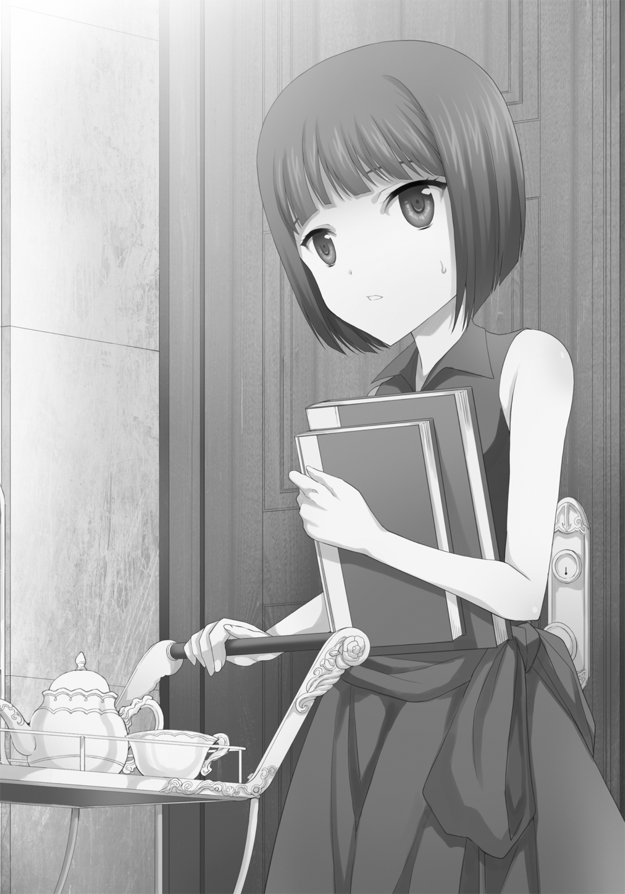
「レッド、やめておけ。さすがに犯罪の匂いが濃厚すぎる」
口をへの字に曲げて、それでもドーナツを皿ごと抱え込んで確保しながらパーシィ。
「はいはい......失礼だなあ、俺はさすがに幼女には手を出さないよ、ただ五年、一〇年先を見据えているだけだって」
「そういうのを変態と言うのだ」
呆れ果てつつ、ぱくぱくとドーナツの山を平らげていくパーシィに、桜子はぽかんと口を開けて見とれていた。
「こんなに綺麗なのに、こんなに大食いなんて......あんなにあったドーナッツの山がもう半分以下に......」
どうやらカルチャーショックに近いものを受けているらしい。
ブラウスとスカートの上からも分かる節制と鍛錬を繰り返していることは明らかだから、こんな異様な食べっぷりの女性は見たことがないのだろう。
「あー、きみ、このおねーさんはね、ドーナッツに関しては色々残念な人なんだ、君はこういう人を見習わずに、まっとうな美人になりなさいね」
思わず横で、同じくぽかんとしていた泡瀬が噴き出した。
「残念な人とはなんだ」
「鏡見ろ」
ぽんぽん、とレッドは呆れ顔で桜子の肩を叩いて、異様な光景に魂まで奪われそうになった少女を現実世界に戻し、さらに「もう下がっていいよ」とその場を去らせた。
「しかしスウィムウェンどもめ、いったいなんで一斉に目覚めた？ というか関東全域というのはどういうことだ？」
指についたドーナツの油と欠片を舐めながらパーシィ。
「奴らのことだ、部品からでも再生したんだろうさ」
報告電報を見ながら、レッドが関東全域を映す地図に色とりどりのピンを刺していく。
「で、お前は何をしているんだ、レッド？」
「時系列順に整理しようかと......」
「そんなもの、頭の中でやれ。事実は一つ、奴らは昨日の午前〇時ごろから一斉に動き始めた。移動方向は目撃情報と、監視結界の報告を見れば明らかだ............やつらはグンマに向かっている」
「でも、たしかそのあたりにはスウィムウェンを二度と関東圏に近づけないための霊子結界機と増幅構造体がずらりと並んでいるんじゃ......」
昨日、資料を読み終えた後、この国の歴史書を一時間弱で読み終えて頭の中に叩き込んだ泡瀬が訊ねるのへ、
「スウィムウェンに効率という言葉がないのは君も知っているだろうアワセ。何かはまだ分からないが、奴らは必要なものがそこにあれば、どんなに犠牲を払ってでも赴くし、手に入れようとする。奴らは殲滅するしか手がないんだ」
そして、パーシィは高々と蒸気精霊杖を掲げた。
「来い、『ロスティニア』！」
高周波の音が響き、光の輪が現れて二つに分かれ、すれ違いながら上下に動く中、ゆっくりと西洋棺桶の形をした扉が現れる。
「新宿でタグル君がやったのを聞いて、さっそくか――――格好いいことに弱いのも変わらないよなあ」
とレッドが突っ込むのを無視して、
「とにかく急ごう、今表示を見たらグンマでタグルが『杖』を使った形跡がある！」
そう言ってパーシィは中に入った。
「え？」
泡瀬も慌てて扉を潜る。
「おいおい、何も伝言残さなくっていいのかよぅ！」
意外とまめなレッドは、近くにあった朝食のサンドウィッチ用のナプキンに「グンマに敵集結、先に行きます」と彼の赤いギズモの万年筆機能で書き残し、慌てて後を追った。
☆
「やっぱり、沙汰内様も行ってしまわれるのですね」
あれいの悲しそうな顔を、タグルは困った顔で見つめた。
「ごめんね、あれいちゃん。でも僕には探さなくちゃいけない人たちがいるんだ............でも本当にありがとう。君がいなかったらどうなってたことか」
「いいえ、私は困った人を助けただけです」
そう言って、少女はうつむいた。
本当に彼女はスウィムウェンなんだろうか、とタグルはやはり信じられない思いだった。
「あと一日、ここで休んでいかれればよろしいのに......」
「ごめんね。友達なんだ............その人たちを見つけたら、必ず戻ってくるから」
あれいのことを隠すべきか、それとも知らせるべきかはともかく、タグル個人としては必ず彼女に会いに戻ると決意していた。
ひょっとしたら彼女が人間らしくなった理由を調べれば、スウィムウェンたちとも、何かのきっかけで話し合いが出来るかもしれないからだ。
「分かりました............約束ですよ？」
そう言って、少女は小指を差し出した。
「うん」
タグルも少女の小指に、自分の小指を絡める。
「指切りげんまん、噓ついたら針千本のーます♪」
少女の歌声に自分の声を重ねる。
☆
「くそ、なんだこれは！」
パーシィはレッドも手伝わせて忙しく「ロスティニア」を飛行させながら声をあげた。
「スウィムウェンに似ているが、もっとややこしい存在が一万近く関東のあちこちからグンマを目指しているぞ！」
「スウィムウェン独特の融合路の反応よりも、霊子力のほうが勝ってるな............細かいことは固体を回収して調べないと分からないが」
「そんなヒマがあるか！ タグルが危ない！ グンマの街にも非常警戒態勢を敷いてもらえ！」
「夽間市および、各市町村は常備されている霊子結界機をフル稼働させています............恐らくこれを破ることは出来ないかと思います」
通信装置を担当している泡瀬の報告に、パーシィは頷いた。
「とにかく、奴らの行く手を絶対に阻まないように市民に徹底させろ、あの連中は目標があるようだ。総ての個体がこの付近に向けて動いてる............何がある？ 資料は？」
『軍隊の施設などの記録はありません』
資料を読み込ませた「ロスティニア」のＡＩが即答した。
『ただ、登記記録によると、そこには楡木財閥の別荘があります』
「ああ、霊子隊の一番のパトロンだな。政治的にも金銭的にも後押ししているらしい。かなりの金額だ」
「その資料なら俺も見た」
「私も読みましたけど......なんか不自然なぐらい金額が巨大なのが気になりました」
泡瀬が通信装置と各種センサー類を使ってタグルを探しながら言う。
「どういうことだ？」
「財閥の純利益の三五パーセントも寄付しているんです。しかも会長自身の蓄えまで。普通財閥とか大金持ちが多額の寄付を寄せても、純利益の五パーセントが普通です。ここの税制がどうなっているか分かりませんが、優遇措置があったとしても異様です。おまけに彼は叙勲まで辞退しています」
「富の次は名声ってのはよくある話だが、それですらないのか......確かに引っかかるなぁ」
「電脳化されていれば、こういう場合の情報も得やすいが、残念ながらここの通信、記録技術は総て紙に頼るものだからな。オマケにパラレルワールドともなれば安易に過去や未来にも行けない」
「でも、過去にやってきたタグル君そっくりの人物がいたんでしょう？」
「パラレルワールド同士の時間の流れは独特だから、その辺がまあ、なんかごちゃごちゃと絡んだ理由でもあるんだろう――――だが、なんで我々が来ることが見通せたのか。それよりもあの機雷だか自動攻撃装置だかだ。何故設置されていた？」
パーシィはいつも以上に顔を引き締めて外部モニターを見つめた。
「どうにもシルバニオン騒動以来、誰かの手のひらの上で踊らされてる気がしてならん」
「それに関しては俺も同感だな」
レッドが素直に頷いた。
「どうも、いやな感じがする............パーシィ、何か見つけてないか、最近」
「............分からん。だからこそ不愉快だ」
「敵影、どんどん別荘へ向けて集結していきます」
「タグルの位置は？」
「人工衛星が飛んでいない時代ですから、どうしても......」
「仕方ない。アワセ、コンソールの穴に君の『ギズモ』を突っ込んでスイッチを入れろ」
「え？」
「『ソニック同士は共鳴する』という訳ではないが、ギズモを分析走査モードで使えば一番遠くにあるギズモが呼応する。ほんの一瞬だけだからギズモだけでは追跡は難しいが、この船のセンサーと連動させれば精査が可能なはずだ。いくらグンマが霊的結界の秘境とはいえ、それぐらいは何とかなるだろう」
「了解。やってみます！」
「『ロスティニア』！ センサーでタグルの位置を把握したらスウィムウェンどもが一番固まった所へ、人払いのための結界レーザーを展開後、重力子魚雷を三〇〇発、効果範囲限定で撃ち込め。幸いここは山ばかりだ。何とかなるだろう」
『姫様、いくら何でも少々それはやり過ぎでは？』
「ロスティニア」のＡＩが珍しく忠告をする。
「この世界のスウィムウェンは嫌な気配がする―――予感は小さなうちに消しておくのがこういう場合は一番いい」
単眼鏡に様々な表示をさせながら、パーシィは苦虫を嚙みつぶしたような顔になった。
「............と、とにかくセンサーと同期、『ギズモ』作動！」
泡瀬が言われたとおりにコンソール横の穴に彼女の青いギズモを押し込んでスイッチを入れると、独特の高周波が船内に鳴り響いた。
『タグル様の位置を特定しました............楡木財閥保有の別荘の玄関付近から移動を開始しています。速度からすると乗用車あるいは移動装置に乗っている模様」
「やった！」
泡瀬が声をあげた。
「よくやったアワセ、『ロスティニア』、進路をそっちに向けろ。スウィムウェンどもが結集する前にタグルを保護する―――ついでに別荘に人がいれば、その人たちも救助だ」
「............それと姫様、もうひとつ、こちらは悪い知らせが』
「どうした？」
「タグル様のそばにスウィムウェンがおります」
「ナンだと！」
☆
「♪」
結局、指切りしたものの「麓の町の駅まで」ということで、少女はタグルについてきてしまった。
楡木の老人は、一瞬ためらう表情を見せたが、あれいがタグルの手を握って離さないのを見て、「仕方がない」と溜息をついた。
「そういえば、お屋敷から出るのは久しぶりです！」
にこにこと笑いながら、あれいは流れていく山の風景を見つめていた。
老人の車はかなりゆったりとしたリムジンタイプで、タグルとあれいが隣り合い、老人は進行方向に背を向けた形で向かいの席に座っている。
そのあどけない表情は、本当に少女そのものだ。
（やっぱり、何かの間違いだよ）
タグルはそう思う。
（パラレルワールドなわけだし、僕らの知っているスウィムウェンとは別の存在かもしれない、いやきっとそうだって）
とは思うものの、心の何処かで自分の最も信用すべきもの............直感が「否」と言っているのはどうしようもない。
問題は何に対しての「否」なのかが分からないということだ。
こうして仲良くしていることか、それとも彼女が「よいスウィムウェンである」という認識か、それとも............。
（ああもう、もうちょっと考えに集中できる時間が欲しい）
そう思うが時間を遡る手段を得ているタグルであっても、今この瞬間を停止させることは出来ない。
ぴぴ、と高周波の音がタグルの胸元で鳴った。
「？」
内ポケットに差したままの「ギズモ」を見ると、見たことのない番号が並んでいる。
「？」
一瞬首を傾げ、タグルは即座に気づいて携帯電話を開いた。
アンテナの表示がフルで立っている。
「やった！」
連絡を取ろうとするタグルの視界の片隅に、老人が懐から物騒なものを取り出すのが見えた。
ふんだんに彫刻を施して金箔を要所要所に貼り付けた、象牙の握りを持った自動拳銃だ。
大分小ぶりだが、この至近距離なら十分タグルを殺せる。
「な、ど、どうしたんですか、楡木さん！」
「やはり君は政府の人間か、それとも重役連中が使わした間者の類か―――その機械から手を離したまえ」
「いや、これは違います、その電話で」
「そんな小さな電話があるわけはない、通信装置だろう............わしの秘密を奴らに伝え、わしからあれいを奪うつもりだ」
「違います、僕はこの世界の人間じゃないんです！」
「一般人ではないことは最初から理解していたよ」
ますます誤解を深めながら老人は銃を握り直した。
「お祖父様、どういうことですの？」
あれいが目を丸くしたまま訊ねた............あまりに唐突なことに、少女は老人が何をしようとしているのか理解しかねているらしかった。
「拳銃は危ないものだといつも仰ってたではありませんか」
「あれい、お前には難しい話かもしれないが、沙汰内君は我々の敵なのだよ。彼が通報すれば、政府の連中が駆けつけてくるか、それともわしが多額の罪滅ぼしの寄付を霊子軍にしていることを好もしく思わない会社の重役連中か............どちらかがお前とわしを捕まえに来る」
「そんな............沙汰内様はお兄様みたいにお優しくて、心の美しい方です、お優しい人です！」
老人は顔を歪めた。
かつての若者だった自分と、目の前の少年を比べて「同じ」と言われた皮肉になのか、それとも愛しい少女の目の前で殺人を犯す決意をしたためかは分からない。
「運転手、停めろ―――殺しはしないが、ここで降りてもらう。脚に一発だけ撃ち込ませてもらおう。大丈夫、わしらが遠くへ逃げるための時間を稼ぐ程度だ。だから動かないでほしい」
「お祖父様！」
老人の言葉に従って、自動操縦の自動車は路肩に停車した。
ドアが自動で開く。
「君はまだ若い、死にたくないだろう」
「............」
タグルは老人の目の中に「本気」を見て溜息をついた。
五十年、人を信じることが出来なくなり、少女だけが人生の頼りの杖と化した老人の心の寂しさにさっきは同情したが、それは半世紀をかけて固まった妄執というコインの裏を持つのだという事実に思い至ったのだ。
そして凝り固まったものが露出した人間を説得するには時間が必要で、今はその時間がないのだということにも。
今は従うしかない。
ガードレールというより曲げた鋼板、という面持ちのものの前に立つ。
「動かないでくれ給え。弾丸が逸れると大動脈を傷つけて失血死する」
学究の徒だったとはいえ幕末を生き延びただけあって、老人の構えには隙が見つけられない。
タグルは両手を挙げたまま、痛みに備えて奥歯を嚙みしめた。
（えーと、たしか前見たテレビだと撃たれたら仰向けに倒れた方が出血を銃弾がフタする形になるから助かる可能性が高くなるんだっけ？）
そんなことを考えていると、
「だめです、お祖父様！」
とあれいがタグルの身体にしがみついた。
「あれい、どきなさい。沙汰内君を殺すわけじゃないんだ」
「怪我をさせるんでしょう！ 銃弾の傷は腐りやすいんです、御本で読みました！」
「あれい、大丈夫だ、ここは戦場ではないし、沙汰内君も手当ての方法はわきまえている」
思わず「いえ、銃弾の傷の手当ては知りません」と言おうかと思ったが、タグルは黙って「いいんだ、あれいちゃん」と少女の頭を撫でた。
老人の目には危ない光が宿っていて、ひょっとしたら（あれいに当たらないように気をつけるようにしてはいるだろうが）銃を撃つかもしれない。
―――そして、何よりも銃弾というのは狙ったところに必ず当たるとは限らない代物だ。
万が一、あれいに当たったら......と思って、彼女がスウィムウェンだから大丈夫ではないか、という考えが頭をよぎったが、それは振り払う。
ひょっとしたらそのことで、あれいがスウィムウェンに戻ってしまう可能性だってある。
（撃たれるならそれも運命だ）
覚悟を決めて両手を挙げていると、老人は片目をつぶって狙いをつけた。
（そういえば、昔は拳銃って片目で狙うものと思い込まれてたって泡瀬さんが言ってたっけ）
そう思った次の瞬間、何かの影をタグルは視界の片隅に見た。
「？」
首を傾げるより先に、「なにか」が見えた。
次の一瞬、老人の首が横殴りに吹き飛び、次に側に立って心配そうにタグルを見ていたあれいの身体が真っ二つになるのを。
タグルはためらわず前に飛んだ。
タグルは完全に覚悟を決めていたから、安心しきっていた老人も反応できず、そのままあれいごと押し倒される。
「貴様っ！」
タグルを睨みつける老人の目の中を、黒い人影が飛び、次の瞬間、勢い余った腕が斬り飛ばした自動車の屋根の一部が宙を舞った。
「！」
タグルは啞然とする老人から銃を奪うと、後ろを向いて引き金を引いた。
三発の銃弾は今にも襲いかかろうとした、あれいそっくりな無表情の顔面を撃ち砕く。
もんどり打って倒れ、あれいそっくりな顔をした少女の顔を持ち、その身体から幾つもの手足を繫いで八本の「脚」を生やした謎の生物とも機械ともつかぬ代物がジタバタと動き、停まる。
「早く車で逃げてください！」
四方に注意しながらタグルは叫んだ。
スウィムウェンが状況に応じて外観を変えたりパーツで補ったりするのはすでに知っている。
問題はスウィムウェンの場合、仲間がいる可能性があることだ。
足下がむずむずする感覚。
ガードレールから身を乗り出して下を見る。
崖の表面を、長い手足を何本も生やしたスウィムウェンが、無数に昇ってくるのが見えた。
「！」
とりあえず一発ずつ、一番手前にいる数体のスウィムウェンの額を狙って撃つが、距離があるのか、いつもの銃ではないせいか、上手く当たらない。
「急いで！」
振り向いて叫ぶが、
「だめだ、今ので自動操縦装置が破壊されてる！」
老人が叫んだ。
「じゃあ走って！ スウィムウェン............いや、化け物が来る！ あれいちゃん、後ろを見ないでお爺さんと一緒に走って！」
「沙汰内様は？」
「僕なら大丈夫！ 銃があるから！」
「沙汰内君、これを！」
老人が懐から予備の弾倉を放り投げた。
一本しかない。だが、ゼロよりましだった。
「ありがとうございます」
予備の弾倉をポケットに入れて、タグルは銃を構えながら後退した。
やがて、じわじわと昇ってきた最初の一団が道路に現れた。
「しかし、おかしいなこいつら......いつもの『殲滅せよ！』がない」
そして、どのスウィムウェンも異様に手足が長く、蜘蛛のように胴体から何本も生えていたり、その長い手足も、先端は普通の裸足であったり、あるいは手であったりと、異様な形状をしていた。
中には胴体が半分ずつ別の個体とくっついていたり、頭が複数あったりもした。
何よりもボディ部分に例のスクール水着がなく、着物だったり、ドレスだったりしている。総て薄汚れ、焦げついていて、まるで火事の中から逃げ出してきた――――あるいは、ソフトビニールの人形が何十体も焼却炉の中で燃やされ、解け合った状態で逃げ出してきたような。
「パーツがないから身内で代用した......だけじゃないな、これ」
冷静になるために、情報を口に出す......これはパーシィから教わった。
「なんだ、妙な気配がする、第一、どうして何も言わない、何が目的だ？」
『ワれラのりーだぁヲ、返セ』
スウィムウェンの一体がひずみまくった声をあげた。
両目は硬く閉じられていて、開いた口の中で眼球が動いてタグルを睨む。
『パすウィーだぁノ仲間ヨ、ワレラにりーだぁを引キ渡セ』
「何のことだ？」
『とぼケるナ、お前ガ、隠シテイルモノダ、逃がそウトシテいるモノだ』
別のスウィムウェンが言う。こちらは口を閉じているが見開いた目の中に小さな口があった。
『この近クにアルのハ知ッテる、場所ヲ教エろ』
「知らないよ！」
言いながら銃を撃つ。
あれいの存在に気づかれてはならない。
最初に二体は額に銃弾を喰らったが、すぐに立ち上がり、それ以後の銃弾は明滅する光の壁に阻まれ、すぐに地面に落ちた。
遊底が後退したまま停止し、タグルは弾倉を入れ替えるとまたスライドを引いて装塡したが、これでは意味がない。
『アキらめヨ』
『抵抗ハ無意味デアル』
口調もいつものスウィムウェンとは違う。
老人と少女の靴音が遠ざかっていく。
「分かった、隠し場所を教える――――これからポケットの中に手を入れてそれを取り出す、動くなよ」
タグルは銃を持ったまま両手を挙げ、内ポケットに手を入れた。
「ギズモ」を手探りで操作し、スウィムウェンのシールドを無効化して撃つ、そしてまた時間を稼ぐつもりだった......が。
『そコか、死ネ』
スウィムウェンの一体が一瞬で近寄り、鎌のように長い前足を振り上げ、下ろす。
その鋭い爪先がタグルの頭を抉る寸前に、青白い光がスウィムウェンの身体をバラバラに引きちぎった。
「タグル君！」
轟、と風が吹いた。
一気に加速した「ロスティニア」が、その加速と同様、瞬間停止装置を使って一気に停止し、そこから瀬底泡瀬が真紅の装甲服に身を包み、タグルの前に舞い降りる。
片膝をつき、巨大な左の拳を地面に打ち込んで衝撃を吸収させると、少女は立ち上がった。
右手には、タグルも以前新宿で使ったＣ字型弾倉のアサルトライフル。
「泡瀬さん、ありがとう！」
「タグル君は下がって！」
振り向かず、泡瀬は巨大な左腕の装甲を盾に、次のスウィムウェンの攻撃を防ぎ、片手でアサルトライフルをぶっ放す。
スウィムウェンのシールドを無効化する銃弾は、あっさりと彼女たちを蜂の巣にし、生き残りを大きく後退させた。
「さすが......」
と、タグルの身体がふわっと宙に浮いて、あっという間に「ロスティニア」の中に戻された。
僅かに遅れて泡瀬と、タグルがここまで乗ってきた車も同じようにして回収される。
「感心してる場合か、とりあえずこの辺一帯を焼き払う『アトスの炎』を使うぞ」
「ロスティニア」のハッチを閉じながら、パーシィが言う。
「久しぶりに使うからトラクタービームが上手く作動するか心配だったが、杞憂に終わったようで何よりだ」
「パーシィ！」
「再会できて嬉しいよ、タグル。その蝶ネクタイ、似合うぞ。クールだ」
薄い笑みを浮かべてすぐ消し、パーシィはコートを翻して車に駆け寄ると、歪んだドアを開けて、後部座席に「杖」をかざし、反応が高くなった所にあった物......老人の黒い鞄を手に取った。
タグルは広大な「ロスティニア」内部の空間をポカンと見上げる。
「こんな場所、あったんだ」
「ブリッジのすぐ下だ。使うのは百年ぶり............こちらは回収した、アワセ、大丈夫か？」
『ええ、こちらは平気、装甲服を脱いだらすぐ後を追うから、タグル君と先に行ってて』
「了解だ」
そう言いながらもパーシィは歩みを止めていない。
慌ててタグルは後を追う。
「忙しくなるぞ、本来『アトスの炎』は投下爆弾としては使えないが、今回はロスティニアから直接落とす必要がある。時限信管にして、落下した後暫くしてスイッチが入るようにする必要があって、色々苦労したが何とか十発分を確保した、それならこの辺一帯にいるスウィムウェンどもを存在ごと消去できる。本来はガンマ線バースト弾がいいんだが、あれは調整が難しいし、周辺一帯を焼け野原にする............」
タグルはパーシィに追いつき、そして追い越して前に回り込んで顔をつきあわせた。
「待って、助けてほしい人がいるんだ！」
「知ってる、お人好しの君のことだ、自分を殺そうとした老人とあのスウィムウェンの残骸を、と言うんだろう？」
「残骸じゃない、あれいだ！」
「同じだ、あれは不完全に再生しただけのエラー品のスウィムウェンだ。老人のほうはちゃんと救出するが、あのスウィムウェンは駄目だ。そもそも『ロスティニア』にスウィムウェンを載せるなんて、言語道断だぞ！」
「違う、彼女はあれいだ、スウィムウェンじゃない！ 笑うし、親切だし、子供なんだ！」
タグルの言葉に、パーシィは怪訝な表情になった。
「なんでそうかばう？ まさか君、奴らに洗脳を！」
「そんなわけないだろ！」
「議論はなしだ。君も、この中身にあるものを破壊した後の彼女を見れば分かる」
「？」
するりとパーシィはタグルの横を抜けると、そのまま歩き続ける。
後を追うタグルは、いつの間にかブリッジに戻ってきていた。
「やぁ、タグル君、怪我はない？」
ニッコリ笑うレッドに「ありがとうございます」と頭を下げて、少年はすぐにパーシィに向き直り「その鞄の中身がどう彼女と関係するの？」と詰問する。
パーシィは無言で鞄の中身を壁から引き出したテーブルの上にぶちまけた。
「杖」をかざして調べ、ひときわ反応が高くなった、赤い、革張りの小箱を取り上げる。
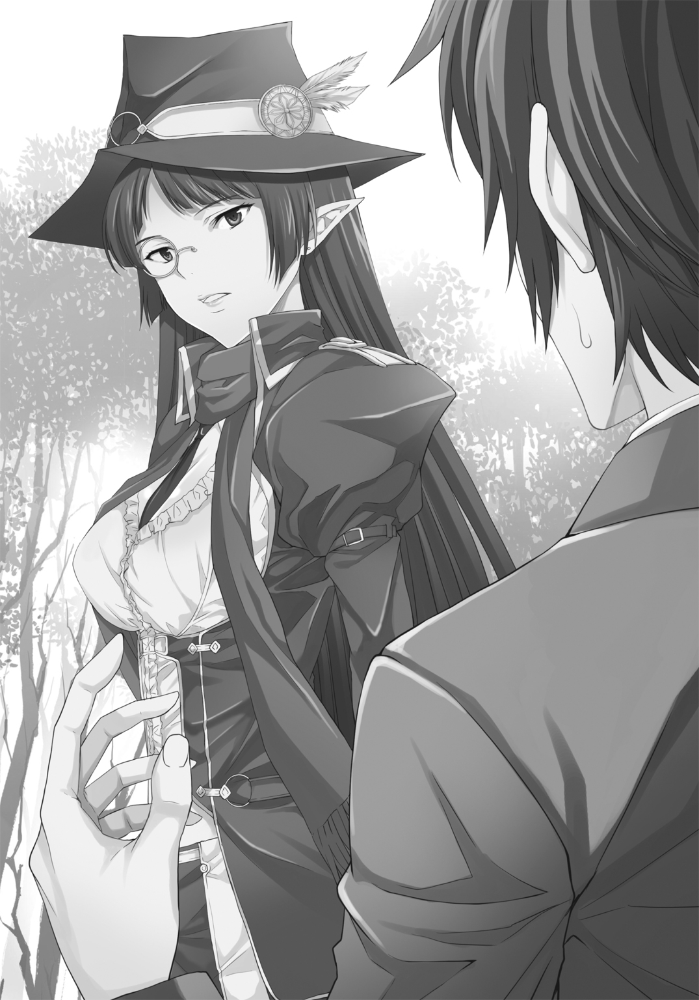
「こいつの中身が、彼女の本性だ」
そう言って蓋を開ける。
中には、一切の光を反射しない、真っ黒な八角形の装置が、赤い天鵞絨の布に収まっている。
「これ......何？」
「スウィムウェンリーダーの高速処理マトリクスだ。スウィムウェンの軍勢を率い、命令し、攻撃するための総ての情報を一般個体の数千倍の速さで処理し、半径二千キロ圏内の全部の個体に送信する。ザ○で言えば小隊長の角だ」
「？」
「最後のセリフは忘れろ。つまりこのマトリクスを持つモノがスウィムウェンリーダーになる............あの、前髪が赤い奴だ」
「え？」
そういえばあれいの前髪もひと房薄く赤かった。
「奴らが君に質問しているのをモニターしてた。君が隠そうとしていると奴らが誤解していたのはこれだ。逃そうとしていたのはあの再生不良のスウィムウェン............こっちは当たってたな」
「どういうことなの？」
「簡単な話だ。このマトリクスが偶然外れた状態であのスウィムウェンは再生した。本来ならこれを失ったスウィムウェンリーダーは次のリーダーを発生させるために自壊するか取りもどして再生するか、だが、マトリクスが完全破壊されていなかったために中途半端に再生してるんだよ」
パーシィは弟のダダに困る姉の表情でタグルを見つめる。
「これを元に戻せば、あの個体は完全に再生するが、その瞬間、これまでの記憶も人格も消える。だが、これを壊せばあの個体は自壊する............どっちにせよ、我々があの個体を破壊することに変わりはない、だとしたら私は自分と自分の仲間のリスクを下げるほうを選ぶ」
「............」
パーシィの言うことには筋が通っていた。
論理としても完璧だ。
「そのマトリクスをどこかに永遠に隠してはおけないの？」
「時間がないんだ、見ろ」
パーシィがディスプレイの一つを指さすと、それは拡大される。
「この周辺の映像だ」
木々の間を無数の変形した八本脚のスウィムウェンがわらわらと進んでいく姿が空撮されている。
中には、何十体も融合したような巨大なものも含まれていた。
「今から半世紀前、阿蘇山の火口に出来た次元の裂け目から現れたスウィムウェンの生き残りだ......当時の技術では完全に殲滅出来なかった上、この次元特有の文明が生じさせる霊子力の使用後に出る『澱』が融合して、異常な増殖を見せている............言動にもそれは現れていただろう？ 私の計算ではあと三日もするとこの数が五〇倍になる。そして奴らはリーダーを探す、あるいは奪われたマトリクスを探し続ける」
「............」
「だから、破壊するしかないんだ」
「そんなことは駄目だ！」
思わず叫んだタグルをじっと見て、深い溜息をついた後、パーシィは怒鳴った。
「何を言うんだ。機械を壊すだけのことだろう！」
「生命体なんでしょう？」
「分類学的にはそうだが、彼らは侵略者で虐殺者だ！」
「パーシィ、虐殺の定義って何？」
「なんだ急に？」
「一人でも一億人でも、無抵抗の人間を殺すこと、だよね？」
「まあ、大体あってる」
「これはそうじゃないの？」
まっすぐにタグルに見つめられて黙り込むパーシィ。
「君は、甘いというか、ズルイというか......」
「あの、気づいたことがあるんだけど、いい？」
泡瀬が不意に話に割り込んできた。
「気づいた？」
「気づいたっていうか、思いついた、っていうか......ふたりの会話を聞いていたら、第三の道がありそうだ、って思って」
「？」
「タグル君、そのマトリクス持って。一緒に行きましょう」
「どうするつもりだ、アワセ？」
「マトリクスがないとその子は生きられない、でも元に戻すとただのスウィムウェンになる............だったら、押しつければいいのよ」
「？」
「その上で、彼女がそのあれいちゃんじゃなく、ただのスウィムウェンに戻ったらタグル君はパーシィの言うことを聞くこと」
「.........そういうことか、アワセ。キミは頭がいい！」
首を捻るタグルをよそに、パーシィが笑顔を浮かべた。
☆
瘴気渦巻いて夜のような曇天の空を、颯爽と巨大な葉巻型の飛行装置が行く。
全長七〇〇メートル、全幅一〇〇メートルの巨大な船だ。
銀色の地金が夕日に輝く。
帝都東京、ひいては日本の平和を脅かす怪異と戦うために建造され、ニュルンベルグ条約で国外に出ての戦闘を禁止されているからこそ、日本に保有を許された霊子隊の空中戦艦「轟閃」である。
蒸気圧縮された霊子力に単極磁場を加算することで、世界全体を走る霊脈から無限に浮力と速度を得る、世界にまだ三台とない浮遊推進装置を備え、四段階からなる高圧縮装甲でびっしりと覆われたこの空中戦艦には、霊子頭脳により百発百中の精度を誇る四六インチ無反動砲を前方に四門、後方に二門、地上への攻撃用に三門を搭載、さらに左右側面には三インチ破壊速射砲を三〇門に、空対空機銃を六〇門。
さらに「轟閃」のものを簡易小型化して一時間の空中戦が可能となった小型霊子ジェット戦闘機「荒鷹」を一〇機。
そしてなによりも、一体で戦艦一隻の能力を持つと言われている霊子装甲服を纏った第一霊子隊が三五名乗り込んでいる。
巨大な艦内にある、巨大な「霊子隊詰め所」という名の格納庫には、その三五名の乙女たちが勢揃いしていた。
「総員整列、カシラ、中！」
副長である武龍ミナツの声の下、全員がキヲツケ、の姿勢で背筋を伸ばし、ミナツの「傾注！」の声に総員が前方中央、一段高くしつらえられ、ボルトで床に固定された小さな縁台に顔と総ての神経を向ける。
「霊子隊諸君」
金色の髪をなびかせ壇上に上がった、第一霊子隊隊長、電光寺まりあは日本と旧帝ロシア（現・ソヴィエト帝国）の貴族の血を引く怜悧な美貌を全員に向けた。
「黒地に金線走るベレー、ジャケツは濃紺に金モール、佩刀ベルトの金具は銀の色」と数十年前作られた隊歌にあるとおりの格好をした女性たち。
帝都の女子なら一度は憧れる「男以上の職業婦人の鑑」の姿。
下は一二歳から上は二八歳まで。
文武両道、中でも歌舞音曲を通じて霊子を操る能力を保有し、その力が衰えるその日まで戦い続ける帝都の美しき御盾たち。
「これより我らは死地に向かい、沙汰内類氏、およびその仲間の救助にあたる――――いかなる不条理的状況が発生し、いかなる不利な状況に陥ろうとも、この方針は決定事項であり、死守項目である」
ここでまりあは言葉を切り、全員を見回した。
「今から半世紀前、沙汰内氏が東京を死守してくれたからこそ、我らは生まれ、育ち、今ここにいる。祖父母の恩を我らが返すのだ............だが、全員死ぬな。それは許さない、隊長命令だ」
そしてまりあはにこっと笑うとそれをすぐ打ち消し、背筋を伸ばして敬礼した。
「総員、戦闘準備！」
「ハイ、戦闘準備開始します！」
一斉に隊員が唱和し、一斉に壁に並ぶそれぞれの霊子装甲服に向けて駆け出していく。
「――――桜子」
まりあはその中、一度パーシィたちに食事と資料を運びに行った日本人形のような少女を呼び止めた。
「はい、隊長！」
少女はすぐに直立不動になって敬礼した。
二二になる自分より十歳年下の少女に、まりあは優しく微笑みかけた。
「今日は貴女の初陣です。激しい戦いになるでしょう」
「はい、覚悟はすでに出来ております！」
少女は痛々しいほどの真面目さで答えた。
まりあの表情が少女の純白さに一瞬痛みをこらえるように歪んだが、すぐにいつもの（そして部外者には決して向けたことのない）優しい笑みを浮かべ、
「緊張するかもしれませんが、何事にも初めてはあるものなのです、恐れず、しかし無謀にならず、生きて帰ってきなさい」
数年前、たったひとりで「澱」が固まって生まれた平清盛の怪物と兵士の亡霊兵団からやんごとなきお方を守って奮戦、ついには壊滅させた過去を持つ英雄にそう言われ、少女の目が潤んだ。
「ありがとうございます、隊長！」
それだけをようやく言い、少女は背筋を伸ばして敬礼した。
まだ身体の大きさに合っているとは言えない、腰の備前長船祐定を吊るしたベルト金具がかちゃんと鳴った。
☆
老人の脚は逃亡のために必死に動いていたが、ついに力が落ち、微妙な道路の凹凸に爪先を引っかけてしまった。
嫌な音を立てて足首を捻り、倒れる老人を、咄嗟にあれいが支えるが、その間に彼女たちを追うスウィムウェンたちが距離を縮め、ついにはその影がふたりの上に覆い被さった。
「逃げろ、あれい。わしはいい」
足首から来る激痛を顔に出さず、老人は言うが、みるみる顔は青ざめ、これまでの運動とは違う冷たい汗が顔を一気に濡らし始めた。
「駄目です、お祖父様！」
「ここで、お前がお前のままであるのを見ながら死ねるなら本望だ」
「お祖父様、何を仰ってるんですか！」
『りぃだぁノ素体ヲ確保すル』
ふたりの会話を一切意に介さず、スウィムウェンは前足を振りかざした。
「お祖父様、ごめんなさい！」
そう言うと、あれいは老人を抱え上げた。
一気に走り出す。
恐ろしい速度で、あっという間に追いついたはずのスウィムウェンが彼方に遠くなっていく。
「あ、あれい......」
老人の驚きを、少女は聞いているのかいないのか、そのままひたすらに走り続けた。
そして、別荘に辿り着くと、ドレスの裾を破いて、老人の足首に巻いて固定する。
「お祖父様......いえ、お父様、そしてお兄様」
呆然とする老人をそっと玄関先に降ろし、あれいは寂しい笑顔を浮かべた。
「わたし、ようやく思い出しました......総てあなたでしたのね」
「あれい......記憶が......」
「今朝から違和感はありましたけど、今さっき、ようやく総てが理解出来ました......五十年も私を匿ってくださって、本当にありがとうございます」
少女はぺこりと頭を下げた。
「ですが、お別れです――――私は、この世界にとっての敵です。でも、お兄様に助けられたご恩は忘れません。そしてあれいとして、最後を迎えたいと思います............私の仲間たちにとっては重大な裏切り者と呼ばれ、他の人たちは同じ化け物と呼ぶでしょうけど」
少女は息を吸い込んで、言い切った。
「私は、楡木あれいです」
「あれい......」
「私は、あなたの妹で、娘で、孫です............ご恩を今、お返しします。五十年、ありがとうございました」
そう言って少女は身を翻した。
「あれい！ 待て！」
今度は人を運ぶわけではない。
だから本来の総ての力を解放した。
踏み出す力の強さと空気摩擦で靴が破損し、服がちぎれ、燃えあがり、本来の彼女の姿である濃紺のスクール水着がその残骸から原子分解、再生をしてその裸身を覆う。
「私の、大事な人に、世界に、触れないで！」
叫んであれいは跳躍した。
先頭を進む、自分と同じ顔をした怪物の頭を振りかぶった拳が上から下へと撃ち抜き、着地と同時の回し蹴りが前足をへし折る。
バランスを崩した仲間の脚を摑んで少女は振り回した。
自分の七倍はある大きさの仲間を棍棒代わりに数体を破壊し、放り投げると、次々と振り下ろされる前足を風のように避けて真下に回り込むと手刀を打ち込む。
装甲の薄い腹部を貫かれ、内部構造を引き抜かれたスウィムウェンが倒れ込むのを尻目に跳躍し、スライディングして次々と同じように始末していく。
『何故、ワレラに敵対スル、リーダー素体？』
数十体のスウィムウェンが融合した巨大なカニのようなシルエットのスウィムウェンが、表面にびっしり並んだ無数の口で一斉に問う。
『仲間ヲ殺スノカ。我々ハ、オ前ノヨウニ、あっぷぐれーどセネバならヌ、オ前ニハ、責任ガあル。情報ヲ共有セよ』
「私は、あなたたちの仲間じゃない！」
少女は毅然とした態度で叫んだ。
「私の名は、楡木あれい！」
少女の叫びに、
『回収ヲ、断念スル。素体ヲ殲滅セヨ！』
残った全てのスウィムウェンの群れが一斉に唱和した。
『殲滅セヨ！』
唇がガチャガチャと収納され、真っ平らな皮膚に変じた次の瞬間、数千の目が開き、一斉にあれいを見た。
『殲滅セヨ！』『殲滅セヨ！』『殲滅セヨ！』『殲滅セヨ！』『殲滅セヨ！』『殲滅セヨ！』『殲滅セヨ！』『殲滅セヨ！』『殲滅セヨ！』『殲滅セヨ！』『殲滅セヨ！』
呪文のような声が山々に木霊する中、異形スウィムウェンたちの身体から、黒い瘴気のようなものが吹き出し、周囲を黒く染めていく。
「............！」
思わずあれいが口元を腕で覆うほど、それは禍々しく、異様な光景であり、空気だった。
唱和が一斉に途切れた。
山をも崩すような地響きを立て、あれい目がけてスウィムウェンたちが殺到する。
最初の一撃を、これまでと同じようにあれいは拳で迎え撃とうとしたが、拳は一瞬、相手の前足を阻んだものの、黒い瘴気がバチバチと瞬時の火花を散らすと、次の瞬間、あれいは弾かれた小石のように吹っ飛んだ。
路面をバウンドし、転がって、止まるところへ、さらに鋭く尖った手刀の前足が襲いかかり、辛うじて避けた路面に深い穴を穿つ。
その数と速度は機関銃のようになり、あれいは転げ回ってそれを避けるしかない。
やがて、その背中が、山肌に当たって止まった。
少女の細い太腿を、手刀の先端を持つ前足のひとつが貫いた。
「――――！」
右の太腿を押さえ、声にならない悲鳴をあげるあれいの右腕を、足首の先端を持つ別の個体の前足が鈍いキレ味の鉈のようにへし切って、飛ばした。
赤い火花が散り、山肌にあれいの腕が跳ね返り、ごろりと転がる。
断面から血は流れず、銀色した人工筋肉などの機械の一部が見えた。
「ここまで............なの？」
顔をしかめるあれいの問いに、答えるものはいなかった。
同じ色と形をしながら、感情を一切持たぬ無数の目が見つめ返すだけだ。
一斉に十数体の異形スウィムウェンの前足が振り下ろされる。
銃声が轟いた。
さらに風が渦を巻いて瘴気を吹き飛ばす。
真っ赤な拳が、前足の固まりを横殴りに叩き折って遙かな彼方へ飛び散らせる。
青い籠手に握られた銃弾が、残った胴体をズタボロのガラクタへと変えて後退らせる。
遙かな高みから落下した、ふたつの影の着地が起こした衝撃は、その一瞬後に地面に亀裂となって吸収された。
黒い装甲服、そして先ほどタグルを回収した片腕のゴツい赤い装甲服。そして同じ赤ながらこちらは大きく、両腕がゴツく、さらにギラギラするメタルレッドの装甲服。
「？」
呆然とする少女に、両手にアサルトライフルを持った青い装甲服が振り向いて、顔を覆っている装甲バイザーを跳ね上げた。
沙汰内タグルの笑顔がある。
「迎えに来たよあれいちゃん。少し、待ってて」
そう言ってすぐバイザーを元に戻すと同時に敵に向けてアサルトライフルをぶっ放した。
「せいっ！」
鋭い気合い声を上げながら瀬底泡瀬が一瞬で敵のど真ん中に飛び込み、巨大で分厚い斧山刀を下から上へと振り上げ、逆に振り下ろす。
「そうれぇっ！」
メタルレッドの装甲服を身に纏ったレッド・リーコンが手にした巨大な槍をぶんぶんと振り回しながら泡瀬の後に続く。
破壊の風となった三人が無限に湧いて出ているとしか思えぬ数のスウィムウェンの中に切り込んでいく様を、傷だらけのあれいは片手を地面について立ち上がれぬまま、呆然と眺めた。
☆
人と並んで戦う、という体験は瀬底泡瀬にとって初めてのことだった。
基本「暁」の要員は個人戦闘を想定した訓練しか受けない。
圧倒的に人員が少なく、装備も特殊な彼女たちは基本個人戦闘を想定した戦い方しか教わらない。
だから最初は上手くいくかどうか不安だった。
まして、自分の隣にいるひとりは沙汰内タグルだ。
レッド・リーコンが持ち込んだ三二世紀の対スウィムウェン用のアサルトライフルを両手で撃ちまくりながら突き進む少年の姿は、百戦錬磨の兵士もかくやという勇ましさと剛胆さ、そして悪霊のような幸運があるように見えた。
（............どうしてそんなことが出来るんだろう）
彼女の知る限り、沙汰内タグルにそんな能力も経験もない。
だが、彼はたびたび泡瀬やパーシィの危機を救い、非常事態においてはど素人丸出しなのに銃器を華麗に扱い、訓練された兵士のように動き、パルクールの熟練選手も舌を巻く運動能力を見せる。
何かを隠しているわけではなく、本人もいわゆる「火事場の馬鹿力」程度に思っているらしいがどう見ても違う。
何かがある。
それが同時に奇妙に不吉なモノに思えて、泡瀬は胸騒ぎを覚えたが、今はそれよりも優先すべきことがあった。
戦いながら適当な「対象」を探す。
あれいを気にする必要はなかった。
彼女の行動と行為は「ロスティニア」でモニターしていたし、その決意も知っている。
何よりも今、スウィムウェンたちが求めているものは、泡瀬の腰に下がるパウチの中にあった。
すぐに倒せて、さらにもう一度すぐ倒せる相手。
いなければ、作らなければならない。
幸か不幸か、霊子の「澱」と融合したスウィムウェンは破壊されても即座に再生をはじめ、泡瀬の知るスウィムウェンよりもその速度は恐ろしいほどに速い。
大抵は近くのより大きな個体に破片が融合していくのだが、そこをさらに狙って攻撃すると、歪なバランスながらスウィムウェン単体になる個体が現れるはず......だ。
斧山刀で左右に融合した個体を唐竹割りにし、横薙ぎにする。
彼女の横で、レッド・リーコンは「どっせえい！」のかけ声も賑やかに泡瀬よりもゴツい両腕の装甲に仕込まれた衝撃波粉砕器で大きく融合したスウィムウェンを文字通り粉々にしている。
「こいつは確かにパーシィの言うとおり、『アトスの炎』じゃないと退治できないな。すぐ再生してくる！」
「まったくです！」
タグルとレッドの声を聞きつつ、泡瀬は自分たちの都合にぴったり合ったスウィムウェンが立ち上がるのを黒い瘴気の彼方に見た。
「タグル君、レッド、二時の方角、見つけたわ！」
手足の長さが違う状態のまま、よたよたと再生して立ち上がるスウィムウェンの一体の胸を、泡瀬は腰のパウチの蓋を開きつつ、左腕に持った斧山刀で叩き割った。
「さあ、くれてやるわよ！」
そう叫びながら、泡瀬はパウチの中から取り出した黒い、八角形の装置を胸の破損箇所に押し込む。
外皮を破壊され、剝き出しになった機械の胸の中に、装置は装甲服の倍力効果もあって、メリメリと沈み込み、細いワイヤーのような回線がみるみるうちにそれを覆い隠していく。
そのまま泡瀬は胸にマトリクスを収めた個体を蹴り飛ばした。
遙か後方に吹き飛び、地面をバウンドして鋼鉄の板を曲げただけのガードレールに、大の字になってめり込む。
「パーシィ！」
『あと二〇秒待て、まだ奴は完全にマトリクスを取り込んでない』
「了解！」
その間、襲いかかってくる他の異形化スウィムウェンたちを破壊し、時間を稼ぐ。
（なんか以前やったオンラインゲームみたい）
今は自分たちが元いる世界で、カレン・西中と遊んだことのあるゲームにも、一度限界までダメージを与えた後、パーティ全員で経験値を分けるため、後方支援に回っていた連中が追いつくまで、ちまちまとザコキャラを斃しつつ待っていたことがあるのを思い出す。
たしかあの時は相手の体力ゲージの回復がある程度貯まって、全員の一斉攻撃での撃破をして、さらに経験値を狙う、ということだった。
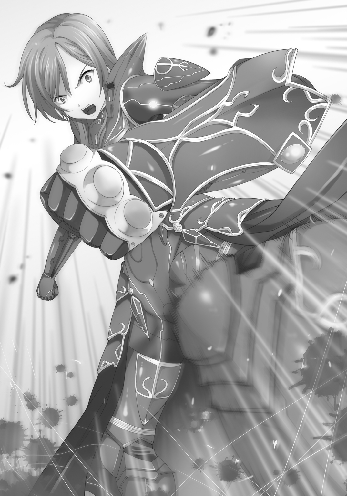
結局その時は泡瀬よりもカレンが焦って攻撃を当てすぎてしまい、一斉攻撃どころかふたりだけで経験値を取ってしまい、他のパーティメンバーから文句が来たのだが。
「大丈夫、泡瀬さん？」
タグルがライフルの弾倉を取り替えながら横に来た。
最初は敵を引きつけるために派手に二丁アサルトライフルだったが、今は予備の一挺を背中に回し、両手で狙いをつけながら無駄弾を減らしつつ撃っている。
「ええ。でもあまり近づいちゃ駄目、なるべくお互いに距離を取って、パーシィの合図で一斉攻撃、覚えてる？」
「うん！」
素直に頷いて離れていきながらライフルを撃ち続けるタグルが妙に頼もしい。
（『ふたりで一緒になにかする』ってこういうことじゃないとは思うけど......）
妙に心が弾んでいるのは否めない。
そして、
『アワセ、タグル、今だ！』
パーシィの声に、泡瀬は意識を慌てて前に戻した。
鋼板の中から、スウィムウェンが嫌な音を響かせながら己の身体を引き剝がして立ち上がる。
ガクガクと、派手に上下に揺れながら歩いていくが、その歩みはやがて滑らかなものになっていった。
合っていなかった左右の手足の長さが整っている。
背筋が伸び、顔がまっすぐに泡瀬を見た。
眼窩の部分にはきちんと眼球が塡まり、開いた口の中には白い歯が並んでいる。
鋭い牙も。
そして、金色に目が輝いた。
「状況確認・マトリクスの継承完了、再起動完了、アップデート終了。補正完了、霊子残滓再利用システム再構築開始」
声はいつものスウィムウェンだった。
「情報並列化開始」
他のスウィムウェンたちが動きを止め、ブルブルと震え始める。
「な、なんだ？」
レッドが首を捻るが、タグルは構わずライフルを構えて撃った。
新たにリーダーに「させられた」スウィムウェンの手前で、銃弾がはじけ飛ぶ。
「？」
「霊子力を利用した多次元フィルターの構築により、お前たちの武器は我々を傷つけることは不可能である」
前髪のひと房を赤く染めながら、スウィムウェンリーダーは宣言した。
腕を伸ばしたスウィムウェンの指先から肩口まで真っ黒な色に染められ、空中に真っ黒なレンズ状のモノが現れたと思った瞬間、そこから雷鳴と共に稲妻が奔り、周囲の岩や地面に当たって一瞬で中に含まれた水分が蒸発することで爆発する。
「！」
泡瀬とタグルは慌てて身を翻し、
「どういうこと？」
『やつら、霊子力を操る知恵をつけたんだ！』
パーシィの声に焦りが混じる。
『下手をすると「アトスの炎」さえ防ぐ可能性がある！ 撤収しろ！ 数も増えてる！』
「どうして？」
タグルの声に、
『霊子力を使って近くにある物質を片っ端から自分たちの部品に再構成してるんだ、どんどん炭素系生物に近づきつつある！』
「そうだ、あれいちゃんが！」
タグルが叫んだ。
「やつらが再起動命令を出したってことはあの子も！」
『その固体は諦めろ、タグル！』
「いやだ！」
『だだをこねるな、馬鹿！』
「言いたきゃ言え！」
そう言ってタグルの黒い装甲服は走り出した。
「パスウィダー、タグル君を回収して」
『もちろんだ！』
トラクタービームの黄色い輝きがタグルの青い装甲服を包み、空中に連れ去ろうとするが、少年は空中で器用に鎧をひとりで脱ぎ捨てると、そのまま地面に降り立って走り出す。
『ああ、馬鹿、何を！』
黄色いトラクタービームを切ると青い装甲服はガシャリと地面に落下し、さらに濃くなる瘴気の中に見えなくなる。
「もう一度！」
『だめだ、瘴気が濃すぎてロックできない！』
「泡瀬ちゃん、ここはオレが引き受ける、タグル君を追いかけろ！」
「ありがとう、レッドさん！」
飛びかかってくるスウィムウェンの頭を斧山刀で斬り飛ばし、泡瀬は身を翻して青い装甲服から落ちたライフルを拾い上げ、タグルを追う。
「タグル君！ 停まって！」
だがタグルはあれいを抱き起こす。
「だめ！」
言いながら泡瀬はライフルを構えた。
装甲服のバイザーに照準が連動する。
拡大、さらに拡大。
タグルは手足を失った少女型アンドロイドを抱き上げる。
「スウィムウェンの急所は首の付け根......」
呟いて、引き金に指をかける。
自分の息が大きく耳に響く。
いつもなら不動の照準が微妙に揺れている気がした。
撃てない。
「............」
意識を集中しようとした。
いつもの泡瀬なら、距離二〇メートル以内で、五センチ四方になら銃弾をたたき込める。
タグルの背中越しに見える少女の首の根元は間違いなくそれよりも大きい。
それなのに。
やはり、撃てない。
「............まったく！」
小さく自分自身を罵って、泡瀬はライフルを背中に回して走った。
☆
「大丈夫か、あれいちゃん！」
タグルはぐったりとなったあれいを抱き起こして揺さぶった。
人間ならともかく、あれいは機械なのだとはっきり分かる傷だから、むしろ揺さぶったほうが回路が接触していいかもしれない、とタグルは判断していた。
「沙汰内......さま......お祖父様を......お兄様を......」
「分かってる、必ず助けるから！」
「私......ようやく......思い出しました......あれいは、機械で、妖魔なのですね？」
「ちがう、君は、君は......！」
「でも、私......楡木あれいとして命を全うしたいのです......お願いです、私が、私でなくなったら......」
「そんなことを言うな！」
「駄目なんです、さっきから再起動命令が、強くて......もう、正気を保てません」
「！」
「タグル君！」
「あ、泡瀬さん」
「何してるの！」
「あなたは......沙汰内様のお友達ですか？」
霞みつつあるらしく、目を細めながらあれいは微笑んだ。
「お願いします、沙汰内様を連れてお逃げください、ここから一キロほど行ったところにある屋敷にいる、私の......祖父も......おね......がい......」
ジジッ、と音がして、少女の声が途切れ、目が見開かれて瞳孔が開く。
「だめだ、あれいちゃん！」
タグルは懐から「杖」を取り出して再生モードにしてスイッチを入れた。
「沙汰内......さま......」
「タグルでいいよ、それより、しっかりして！ 再起動しちゃ駄目だ！」
「でも、駄目です......破損が酷くて......お願いです、タグルさまのお友達さん、私が目を閉じたら、タグル様の代わりに、私を撃ってくださいませ」
雪山でうつらうつらしはじめた遭難者のように、少女は頭をゆっくりと動かしながら呟くように言った。
「急所は、首の付け根です............私たちはつねに、そこが............そこが......」
「駄目だったら！」
「ああ、もう！」
泡瀬も装甲服の胸部分を外して自分のギズモを取り出し、タグルに渡した。
「二本分ならもう少し持つでしょ！」
「ありがとう！」
受け取ってタグルは少女に二本のギズモを向ける。
「............前々から思っていたのだが」
不意に、この場にはいないはずの声が聞こえた。
「タグル、さては君............馬鹿だろう？」
そう言うと、より大きな、本式の蒸気精霊杖があれいの頭上にかざされ、輝いた。
「老人のほうは救助した。彼女の意識を保つには私のギズモで十分だ、君らはレッドを回収して戻れ」
「でも、あのスウィムウェンたちは......」
「そろそろ騎兵隊が来る。かなり荒っぽいから注意しろ」
「？」
その時、疾風が瘴気の黒い霧を吹き晴らした。
『吹けよ浄化の疾風！ 我ら光の剣！ 護国の御盾！』
思わず風の吹いてきた方向をタグルたちが見上げると、そこには巨大な銀色の船体が、夜空を覆わんばかりに浮かび、その表面に月光が煌めいている。
『我ら帝都霊子隊、推参！』
スピーカーから四方の山々に轟く音声が流れ、同時に派手な火花をあげて、タグルたちのによく似た装甲服が次々と空中戦艦「轟閃」から放たれて地上を目指し、後尾からはアームで固定されていた小型ジェット戦闘機が発進するのが見えた。
「まさに推参（呼んでもいないのに来ること）だな。さあレッドの馬鹿を回収して引き上げよう！ タグル、君の馬鹿には負けたよ！」
パーシィは顔をしかめたつもりらしいが、タグルにはどう見ても笑っているように見えた。
☆
「............」
二〇〇メートルほど進んだ先に、レッド・リーコンはいた。
スウィムウェンの残骸が散らばる中、すでに主戦場はさらに数百メートル先に落下してきた装甲服の群れへの対峙へと移り、周囲には動くものはない。
その真ん中にぽっかり出来た空間に、レッドは半ばで折れた槍を道路に突き刺し、それに寄りかかっていた。
装甲服のヘルメットは吹き飛び、額と口の端を血がひと筋流れている。
「よぅ、どうだった？ 女の子は救えたか、タグル」
汗まみれのレッドがにやりと笑った。
「れ、レッドさん......」
「素晴らしいタイミングで現れたな、ふたりとも」
座り込んだレッドが弱々しく微笑んで、右手の親指を上げる。
左の胸に槍の穂先が突き刺さり、どくどくと血の色で、メタリックレッドの装甲服を汚していた。
「いやあ、しくじった......槍が折れたから殴ってやろうと思ったら、あのやろう、折れた先端を拾ってオレの胸に突き刺して......」
げほげほとレッドは咳き込み、赤黒いものが月光に煌めく。
「れ、レッドさん？」
ばったりと仰向けに倒れるレッドに、慌ててタグルと泡瀬は駆け寄った。
「すまん――――止めを。スウィムウェンの野郎、僅かに心臓をずらしやがった。これじゃおちおち死ねない」
「でも！」
「もう助からん、パーシィは忙しそうだから、君たちに看取られたいんだ」
「............わかりました」
タグルは意を決してレッドの胸に刺さった槍の柄を握って引き抜こうとするが、収縮した分厚い筋肉がそれを許さない。
泡瀬がタグルの手の上にそっと自分の手を添えた。
「沙汰内君、ここは私に任せて............レッドさんは早く、楽になりたいのよ」
そう言われて、はっとタグルは泡瀬の横顔を見た。
「駄目だ、瀬底さんだけに、辛い思いはさせない。僕も、一緒に罪を負う」
「気にするな、ふたりとも......これは俺が望んで頼んでる、いわば人助けだ。辛いのはさっさと終わらせて、せいせいして次の人生に生きたいんだよ」
にやっとレッドは笑った。
「頼むよ、ふたりとも、気にするな」
こくり、とタグルと泡瀬は同時に頷いた。
「手首をひねるの。そうすれば空気が入ってすぐに......楽になる」
「わかった」
そして、ふたりは同時に同じ方向に刀をひねった。
ごぶり、という肉と鋼の間に空気が入る音。
大きくレッドは身体をのけぞらせ、タグルと泡瀬はそれに合わせて槍を引き抜いた。
驚くほど出血が少なく、噴き出す血が皆無だったのはすでに体外に流れ出てしまったからだろう。
そして、のけぞったままのレッドは長い溜息のような息をひとつ吐いて、ゆっくりと身体を弛緩させた。
目を閉じて、薄い微笑みを浮かべたまま。
同時に鎧のような装甲服が展開し、見慣れた軍服姿のレッドがその中で大の字になって微笑むような表情のまま、月光に照らされる。
「............」
タグルは何も言えず、槍を握りしめたまま、その姿を見つめた。
「.........」
ふたりは、どちらともなく目を閉じ、同じ罪を犯した者同士として肩を抱き合った。
タグルは目を閉じる。
僅かな間の付き合いだったが、親切で陽気なムードメーカーで、時折パーシィとの間に割って入ってくれたりもした。
なによりもタグルが一緒に旅をしたい、と言ったとき説得してくれたのは彼なのだから。
（パーシィとは恋人同士だったんだろうか）
ふと、初対面の時に見せた親密さを考えるとそれが正しいのではないか、と思う。
いま、後ろで必死にあれいを助けているであろうパーシィに、このことをどう告げるべきかと迷っていると、
「あの............沙汰内君」
戸惑い気味に泡瀬が声をかけてきた。
「？」
目を開けると、金色の光が薄く周囲を染めているのに気づく。
「！」
光の根源はレッドの遺体だった。
身体の内側から光っていて、洋服の繊維の間からもその光が漏れている。
やがて光は強くなり、爆発的な輝きになったかと思うと不意に収束した。
そして消え去る。
「............んー！」
血が広がっていたはずの床の上で、レッドの服が大きく伸びをして起き上がった。
服には勿論中身が入っている。だが、それはレッドではなかった。
少なくともレッド・リーコンと紹介された人物は筋骨たくましい偉丈夫だ。
だが、今レッド・リーコンの服を着けて起き上がったのは、年齢こそ同じ二〇歳半ばほどだが、腰まである長い、軽くウェーブのかかった赤毛を煌めかせた、豊満な胸を揺らした女性だった。
「あー、この胸の重み、肩が凝るなあ。男と違ってブラが必要なのが玉に瑕なんだよなあ」
などと言いながら、その美女はくるくると左右の肩を交互に回して、身体の調子を確かめていたが、やがてタグルたちを見てにこっと笑った。
「や、驚いた？」
「あの............あなた......誰ですか？」
「誰って、レッド・リーコンだけど？」
声までちゃんと女性だったし、喉仏もなかった。
美女は服の襟裏に指を入れて何かのスイッチを入れるような仕草をすると、服もコートも、それどころかブーツまで一瞬にしてサイズが縮んだ。
「おー、もう生き返ったのか」
奥であれいの脈を取り、杖を光らせて肉体の状態をモニターしていたパーシィが振り返って暢気に言う。
「ああ、タグルたちが手伝ってくれたお陰で一気に逝けたよ」
そう言って笑う顔のどこかに、確かにレッドと同じ明るい部分がある。
「ホントに............レッドさんなの？」
「まあね」
そう言って立ち上がり、絶世のブロンド美人になったレッド・リーコンはタグルたちをぎゅっと抱き寄せた。
「ありがとう！ いやあ、大抵の人間って、トドメを刺してくれ、って言っても及び腰になって結局死ぬまで苦しむんだけど、泡瀬と君のおかげで短くてすんだよ」
「あのえーと、つまり、その......どういうことなんですか？」
不思議に柔らかい薔薇の香りに鼻腔をくすぐられ、妙にそわそわした気分になりながらタグルが訊ねる。
なにしろパーシィ並みの大きな、しかも下着なしの柔らかさの水蜜桃が自分の顔に当たっているのである。
「わ、わたしにも何が何だか......」
同じようにドギマギした表情で泡瀬。
「俺............じゃなかった、あたし地球人じゃないから」
あっさりとレッドは答えを口にした。
「は？」
「これまで言ってなかったけど、あたし、サルリーンっていう異星人の種族なのよ。で、死ぬ度に男女の性別が入れ替わっちゃうわけ」
「なんでまた......」
「人間だって生死が関わるところじゃ生殖本能が刺激されるっていうでしょ、アレと一緒。で、あたしたちは相手が人型生物であれば大抵の相手と子作りできて子孫を残せんの。素敵でしょ？」
「あ............」
そう言われてみれば、やたらと男の自分の身体を触っていたのも納得がいったし、パーシィがタグルたちに近づくことをとがめるようなことを言った理由も分かる。
種族的に両性愛者なのだ。
「でね............再生したてって、すっごくその............わかるでしょ？ ふたりとも」
耳元で、レッドが囁いた。
あの厳つい偉丈夫と同じ中身とは思えない妖艶な美女の声で、身体で。
タグルの意識にその柔らかさと暖かさが妙に染みこんできて、心臓が勝手に早鐘を打つ。
「あ、いやあの、ぼ、ぼくはその............」
「わ、わたしも、その............」
「大丈夫、だれだって初めてはあるもの............ふたりとも、ね？」
少し離れて、レッドはタグルと泡瀬の双方をそれぞれじっと見つめた。
潤んだ瞳と、柔らかく艶光る唇。
とたん、タグルも泡瀬も、脳の中がぼんやりとした。
「じゃ、まずキスから............」
ゆっくりと三人の唇が近づき............。
「何をしておるか馬鹿者」
冷たいパーシィの声がして、三人の頭に「ギズモ」の握りがココン、と音を立てた。
一瞬に我に返り、慌ててタグルと泡瀬がレッドの（文字通りの）魔の手から離れる。
「............ったく、お前の悪い癖だ。どうしてこう真面目な人間を悪の道に誘おうとするんだ？ ふたりとも未成年だぞ？ しかも再生時に出るフェロモンで籠絡しようというのはフェアじゃない」
「悪いことじゃないでしょ、気持ちいいし、温かいし、寂しくないし」
頭をさすりながら女性となったレッドが口を尖らせた。
「まったく、お前のそういうところは男の時でも女の時でも変わらんから困る！」
「パーシィ、あれいちゃんは？」
「誰にものを言ってる？ 私は天才だぞ？ とにかく、流れ弾がおっかないからそろそろ『ロスティニア』に戻るぞ。大丈夫、彼女たち霊子隊は霊子を使った戦いのプロだ――――今もギズモで調べてたが、みるみるあの異形化したスウィムウェンたちが片づけられてる」
そう言ってる間に、閃光が山々を染め、タグルは振り向いた。
何かの呪文を唱える、年齢もまちまちの女性たちの声に合わせて、その光は巨大なものになっていく。
「あれは......」
「多分、霊子結界だ、上空にある戦艦の動力源を触媒にしてこのへん一帯に存在する異形化したスウィムウェン総てを滅ぼすだろう」
「あれいちゃんは？」
「彼女は普通のスウィムウェンが自己改良した存在だ、範囲の中に入らない......だが、爆風は怖いから逃げるぞ」
「うん！」
「ちぇっ、せっかくふたりともようやく落とせると思ったのにぃ......」
「ぐだぐだ言うと置いてくぞ、レッド！」
☆
それからあとのスウィムウェンに関することは、パーシィの言ったとおりになった。
帝都霊子隊はスウィムウェンを殲滅し、立ち込めた瘴気を見事に浄化した。
もともとこの世界においては夽間という土地自体がそのための装置でもあったらしい。
楡木翁に関しては、これまでの世間への貢献を鑑み、あれいを匿っていたことに関しては「騙されていた」ということになった。
そして......
「どう？ あれいちゃん」
タグルの質問に、寸分変わらぬ姿になったあれいはくるくると回ったり、スキップしたりして、「ロスティニア」の一角にある広い、アンティークな家具で統一された部屋の中を回ってみて、にっこりと微笑んだ。
「はい、すっかり元通りです、タグル様」
「その、タグル様ってのはやめてくれないかなぁ？」
「では......タグル兄様？」
「うーん......」
「あー、君たち、仲のいいところ悪いんだが」
おほん、とわざとらしい咳払いをしてパーシィが言った。
「彼女の手足を補修し、危険性を総て排除する常時可動型の『杖』を内蔵することに成功した天才に対する賛辞がまだないようだが？」
「天才？ どこに？」
と混ぜっ返したのはパーシィの隣でにやにや笑っている、女に変わったレッド・リーコンだ。
「レッド、黙れ」
「はいはい」
「ありがとうございます、パーシィお姉様」
ぺこりとあれいは頭を下げた。
「本来なら、あそこで見捨てたほうがよろしかったはずの私を助けてくださって、ここまで直していただいて本当に感謝いたします」
心の底からの言葉に、しかし、パーシィは少々心苦しい笑顔を浮かべた。
「いや、まあ、気にするな」
「でも、どうして彼女はスウィムウェンに戻らなかったのかしら？」
タグルの横で泡瀬が首を捻る。
「最初に私がギズモで調べた時、あの日の前にも『ギズモ』の光が照射されている形跡があったんだ............タグル、覚えはないか？」
「あ、そういえば最初に会ったとき思わずスイッチが入ったんだっけ」
「多分それだな。それまでマトリクスなしで再生しては、一〇年ごとにリセットして、いわば足踏み状態だったあれいの自動修復を、君は一歩進めたんだよ」
「？」
「ギズモの修復モードは多少の部品の欠けを無視することもできる。その結果、独自の回路が形成された。異形化したスウィムウェンがやってきたあの時、ギズモの光を当てると彼女が意識を維持できたのは、ギズモの修復光がその回路を強化し、進化させていたからだ............だから彼女は一〇年ごとにリセットされるはずの記憶を維持し、それどころかマトリクスに保存されていた過去の記憶と今の記憶をすりあわせ、スウィムウェンだった自分と、人間として育てられた自分との間に自己確定させた」
「............もうちょっと分かりやすく言うと？」
「つまり、今の彼女はスウィムウェンではなくて、無害で、アンドロイドに近い存在ということだよ」
「しかし、どうしてマトリクスから引き離されたときにあれいちゃん、死ななかったんだろう」
「そこは分からんな」
あっさりとパーシィは言い、一瞬、女レッドが「ふぅん」という顔になったが、タグルの視界には入っておらず、泡瀬が怪訝な顔になった。
「彼女をとりあえずどうするの？」
「捨てていくわけにはいかない。彼女自身はスウィムウェンだ」
「殺すの？」
「友達の命を助けてくれた相手を殺せるか！ だが、彼女はこの船から出られない。出てしまえばスウィムウェンに察知される。一生この中だ――――すまんな、あれい」
この部屋はパーシィがあれいのために用意した部屋である。
「構いませんわ、お姉様。ここはとても素敵ですもの」
にっこりとあれいはパーシィに微笑みかけた。
その瞬間、パーシィの顔が泣きそうに歪むのを、タグルは見た。
「？」
「悪い、アレイ。私のことはパーシィと呼んでくれ、パーシィお姉様も、パーシィ様もなし、だ............頼む」
「はい、パーシィ」
「............？」
「さぁ、お別れの時間だ、行こう」
☆
ロスティニアの六角形の棺桶型出口は、帝都東京の浅草演劇街近くにある、神社の境内裏に出現していた。
沈む夕日が美しく周囲を染めている。
高層ビルのない世界の東京の空は、あくまでも高かった。
「あれい......」
楡木翁はそれ以上は言葉を詰まらせて膝をつき、少女の身体を抱きしめた。
長い影が地面に落ちる。
「どうか、どうか元気で」
「ええ、お兄様も、どうか末永く」
少女の姿をした機械の命は、そう囁くように言って、母のような手つきで老人の頭を撫でた。
「おおう、そうだな、そうだとも、生きていればまた会える」
タグルは黙ってそんな別れの風景を眺めていたが、視線を外して、帝都霊子隊と一緒に並んで、茶目っ気たっぷりに敬礼している、女の姿になったレッド・リーコンを見やった。
彼はこの世界に残り、帝都霊子隊に協力する、と言いだしたのだ。
その申し出は予測されていたのか、それとも歓迎されていたのか、霊子隊の隊長である電光寺まりあはあっさりこれを了承し、神社の外で車を出して待っている。
「本当にいいんですか？」
「まあね。ほら、今のあたしは女だし、入隊には問題ないわよ、っていっても霊子能力はよくわかんないから、しばらくはアドバイザーというか、オブザーバー扱いになると思うけど.........まあ、自分の船は持っていくから、ヒマが出来たら遊びに行くわよ」
そう言って、赤いルージュが似合う美女となったレッドはキュートなウィンクをタグルに送った。
タグルは戸惑いつつも、どうにも外見が変わりすぎているが、ノリは間違いなくレッドその人だと少し安心はする。
「それに、ちょいと気になることもあるしね」
「もうひとりの僕のことですか？」
「それはもちろんだけど、その前、こっちに来るときのことよ」
「？」
「あの時空機雷よ。どうも威力が弱すぎる。マノナピリウムが抜かれてた気がする」
「そんなことしたら起動しないだろう？」
パーシィが怪訝そうな顔になった。
「実を言えば出来んの。でもね、そのためには別の圧力物質と、破壊する対象の正確な大きさと体積のデータが必要って聞いたわ」
「まさか、ロスティニアのデータが外に漏れるはずはない」
言い切ったはずのパーシィの顔が「可能性」に思い至ったらしく苦しげになるのを、女レッドは無視して、
「それにあれをこの辺に、あのタイミングで設置してた、ってのも気になるしね............第一、あんな霊子の残り滓を操ってこっちの武器を無効化するようなスウィムウェンへの対抗策はちゃんと学んでおかないと」
「すまん、頼む」
「じゃあね、パーシィ」
そう言って、レッドは目を閉じ、顔をパーシィの前に突き出した。
「何の真似だ？」
「お別れのベーゼを」
その唇に、素っ気なくパーシィは「杖」のクリスタル部分を軽く当てて、
「もう一回死んで男に戻るか？」
「んもう、ケチぃ」
「やかましい、結果はちゃんと報告してこい」
そう言ってパーシィは踵を返し、さっさと中に入ってしまった。
「相変わらず淡泊ねえ......」
と呟いた後、レッドは泡瀬を手招きした。
「？」
ついつられてタグルも行こうとするが、楡木翁が、彼を呼んでそちらに行く。
「沙汰内君、こんなことを頼める義理ではないが、どうか、どうかあれいを頼む」
そう言って老人は頭を下げた。
「いえ、その、僕もあれいちゃんがいい子だから助けただけですし、助けた以上、面倒を見る覚悟は出来てますから」
そう答えて老人の頭を上げさせようとする。
☆
「なんですか？」
怪訝そうな泡瀬の耳元に唇を寄せて、女レッドは囁いた。
「タグル君はガシガシ押した方がいいと思うよ――――あのあれいって子を一緒に助けた以上、あなたたちの関係は一歩前に進んだわけだし。だからあの子を妹のようにふたりで可愛がりなさい。ちょっとおっかないかもしれないけど」
「え？」
内心、大丈夫だとパーシィが言っていても、中身がスウィムウェンであるということで警戒していることを見破られて泡瀬は驚いた。
「いい？ 男の子に好かれたかったら、人を嫌うようなところを見せちゃ駄目――――少なくとも決定的な関係になるまでは」
「け、決定的な関係って、な、なんですか？」
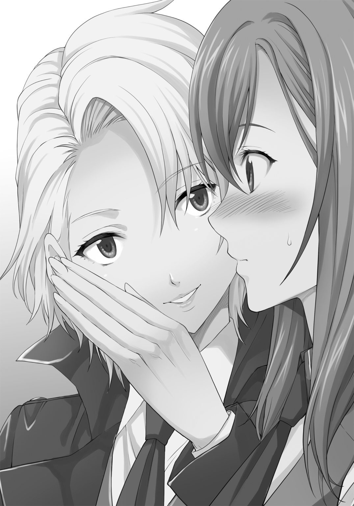
「そりゃもう............うふふふ、言わなくてもわかってるでしょー？」
そう言って、レッドは羽織っているコートの裾を翻し、なおもタグルの手を取って願い続ける楡木翁の肩を叩いて、別れの時間を終わらせた。
「それじゃ、また必ず会いましょうねー！」
手を振って、老人を引きずるように境内からレッドは去っていく。
その姿が完全に消えてもしばらくの間、あれいは手を振り続けた。
「――――そろそろ、行こうか」
タグルが肩に手を置くと、「はい」とあれいは頷いた。
☆
レッドがひとりいなくなっただけなのに、妙に「ロスティニア」のブリッジは広く感じられた。
あれいは自室に戻っている............念のため、彼女はブリッジには立ち入りを許されていないのだ。
「とりあえず、タグルの時代、我らの世界に戻ろう」
忙しく、最初に出会った時のようにひとりでブリッジ内を走りまわって機器を操作しながらパーシィが言った。
「そうだね」
タグルは頷いた。
少なくとも、今回は大分疲れた気がする。
「............」
その横に、さりげなく瀬底泡瀬は並んで立った。
以前より、少しだけ距離を詰めて。
手が、少年のそれに伸びたが、指を摑むところまではいかない............そんな微妙な距離が、少しだけ縮まっていた。
○第四話：「対自核」（byユーライア・ヒープ）
☆
汝、己自身の顔を見よ。
どこかで聞いた声がそんなことを言った気がした。
闇の中、王女は目覚める。
暖かい寝床、暗い寝室には彼女の大好きな縫いぐるみや玩具が整然と並べられている。
女の子らしからぬ騎士の剣や鎧まであるのは、彼女の立場の故だった。
寝床で少女は耳を澄ます。
次元龍の咆哮が聞こえないかと。
そうしたら、寝床から出ても誰も叱ることはない。
龍を狩る一族である彼女の「王国」は、その航路に次元龍が出たともなれば、王女の父である国王から、一般兵に至るまで戦い、これを斃す。
斃した龍からは総てが取れる。
内臓からはクローニングシステムで肉を作るための良質の基本タンパク質が、牙を含めた骨格と骨髄からは特殊合金と高圧縮された良質のカルシウム、心臓と血は王国を動かすための「無限の炎」を生み出す燃料となり、脳は遺伝子レベルまで分解して人々の治療や霊子コンピューターの基本回路へと組み替えられていく。
そして、次元と次元の間にある狭間の世界の歪みから生まれる次元龍は次々と現れ、放置しておけばかならず他の世界に、あるいは時間軸に災いを及ぼす。
これは聖なる職業であり、王女の国はその職人の集団で出来上がった移動国家なのだ。
一頭の次元龍が取れれば王国は百年栄える。そして生み出された技術を様々な並行世界の人間と取引していく。
「王国」は時間を遡るが、過去であれ未来であれ、同じ時間軸の人間とは取引をしない。
「おねえさまぁ」
窓から差し込む人工の月の光が、彼女の部屋と隣の部屋を繫ぐ入り口に、金髪の影を照らし出す。
「どうしたの、リーファ？」
「こわいゆめをみたのです、りゅうがおっかけてくるゆめなのです」
枕をぎゅっと抱きしめた少女は、王女の妹で、五十歳年下だった。
アークエルフの少女にとってはそれぐらいの年齢差は、ヒト族にとっての三、四年というところか。
父と同じく、黒に近い青の髪の色を持つ少女と違い、妹は母譲りの美しい金髪と白い肌を持っていた。
活発で「おてんば」とか「じゃじゃ馬」と呼ばれる王女とは違い、彼女は生まれたときから病弱で、本や人形で遊ぶことを好んだ。
普通ならここまで違う姉妹はどちらかがどちらかを疎んじるものだが、姉である王女は、妹を決してないがしろにしなかった。
三年前、彼女の母がこの世を去るとき、その手を取って「妹を、リーファを私の代わりに守ってあげてね」と頼んだからだ。
そして、少女は父と同じ誇り高き龍の騎士としてその願いを引き受けた。
もうひとつ、彼女は人の短所ではなく、長所を先に見つける名人だったのである。
だから妹も「暗くて、うじうじしていて自分の意見もはっきり言わないくせに、何かと自分を頼ってくる厄介者」とは思わず、「思慮深くて、優しくて、男の子を泣かせては叱られる自分にいつまでもくっついてきて頼りにしてくれる、美しく、守るべき妹」と考えていた。
「龍が来るの？」
「はい、黒くて、おおきくて、みっつのくびをもつりゅうなのです」
「ああ、トリロジェイドのお話ね............そんなに怖かったの？」
妹が怯えているのは、王女の王国では有名な「不死身の邪龍」と呼ばれ、初代国王がようやく三つの首のうち二つまでを刎ね飛ばし、「時の始まり」に封印したという物語だ。
ちょうど王女は最近、ただ絵本を普通に読むのに飽きて、いろいろ脚色したり足したりするようになっていた。
今回は少々龍の強さを強調する場面に熱が入りすぎてしまったようだと反省する。
「いいわ、姉様の横にいらっしゃい」
「ありがとうございます、ねえさま」
「お礼なんかいいわ。私が作った物語の龍だもの。私が退治してあげます」
そう言って王女は微笑んだ。
妹は「んしょ、んしょ」と自分には少々高いベッドに登り、シーツをめくって中に入ると、姉にしっかり抱きついた。
「............」
王女は優しい笑顔を浮かべ、愛しい妹の頭を撫でた。
やがて、ふたり分の寝息が寝室に聞こえ始める。
ふたりの上に影が落ちる。
「ああ、お姉様。そして私......私だった存在」
腰まである長い金髪を煌めかせながら、影は言う。
「なんと幸せな時間、なんとはかない時間。お姉様、私............いまはその幸せを大事に」
小さな声で呟き、姉の頰に触れようとして、指先を止めると、美しい影は現れたときと同じように、消えた。
☆
汝、己自身の過去を見よ。
頭の中でそんな声が響いた気がした。
「............シィ？ パーシィ？」
「え？ あ？ ど、どうした？」
タグルに肩を軽く揺すられてパーシィは我に返った。
「あの、どうしたの、いきなりぼーっとして？」
「そ、そうか......あ、い、いかん！」
慌ててパーシィは次元を移り、時間をタグルたちの時代へ移動していた「ロスティニア」の緊急制動をかけた。
巨大な歯車同士が嚙み合い、あるいは歯ぎしりするような異音とともに、激しく船の中全体が前につんのめる。
さらに船全体が前後に揺れた。
「わあっ！」
思わずタグルもパーシィも前に向かって転がった。
咄嗟にタグルをかばって抱きしめる。
同時に、何か奇妙な違和感と、集中力を欠いていたのではなく、自分が目を開けたまま一瞬眠っていたことに、パーシィは気づいたが、それを誰かに告げる暇はなく、そのまま船の床の上を転がり続けた。
そしてもうひとつ思い出す、自分の緊急制動がかなり荒っぽく、かつ滅茶苦茶な、手順を二、三個すっ飛ばしたものだったことを。
やがて、そんな思考も焦りもあとでこの「ロスティニア」を制御するＡＩにたっぷりと嫌味を言われるであろうという予測も、眠りの中に落ち込んでいく。
☆
必然としてタグルは久しぶりにパーシィの胸の谷間に顔を埋めることになったが、これまで同様、それを楽しんだりしている余裕はなかった。
激しい震動が船を包み、ふたりはブリッジの床を転げ回る。
「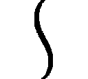！」
悲鳴もなにもかも、タグル声はパーシィの胸の谷間に吸い込まれてしまう。
ようやく止まって、しばらくしてもタグルはまだパニックの中にあった。
もっともそれは震動からくるものか、女性の豊満な胸の中に抱きしめられているからかは分からない。
だが、時間が経てば後者のほうが強くなるのは一六歳としては当然だ。
「ぱ、パーシィ、も、もう大丈夫だから、大丈夫だから！」
わたわたと暴れたが、なかなかパーシィの腕の拘束は外れない。
そのうち、こんなところを泡瀬に見つかったらどうしよう、という考えが頭にようやく浮かんできた。
「た、タグル君、大丈夫？」
遠くから壁を叩く音と、泡瀬の声が聞こえる。
確か、あれいの部屋に泡瀬と一緒に出向いてお茶を飲みながら、こちらの世界と向こうの世界の違いについての話をしていて、タグルが「そろそろ着くはずだけどな」と席を外してブリッジに向かったはずだ。
そしたらパーシィが珍しくぼんやりと操縦席に立ち尽くしていて、声をかけた途端に慌ててブレーキをかけた............ところまで思い出す。
だとすると、泡瀬は未だにあれいの部屋の中だろうか。
とにかく状況を確認せねば、と慌てて身体を動かして、何とか柔らかいモノから顔面を引き抜いた。
「............ふぅ」
見ると、暴れたときに顔が引っかけたらしく、少しひりひりする部分があるのと、パーシィの胸元を留めているボタンが外れ、押さえ込んでいた水蜜桃がこぼれんばかりになっているのが見えた............いや、正確にはコルセットの上、ブラウスの中、ふたつのたわわな果実を支えている黒い下着が見えた。
「く、黒............」
どうでもいいことに衝撃を受けつつ、タグルは震える指を伸ばして、何とか指先だけで、なるべくパーシィの地肌に触れずにボタンを再びかける。
こんどはさっきより大きな溜息が出た。
「タグル君！ パスウィダー！」
「タグル兄様！ パーシィ！」
あれいも声を上げている。
「僕は大丈夫、そっちは？」
「ドアが開かなくなりましたー！」
あれいが答える。
「あれいの力でも開かないの！ いったい、何があったの？ パスウィダーは大丈夫？」
「パーシィは......」
とりあえずブリッジの床に転がった帽子を拾い上げ、パーシィの首筋に、以前レッド・リーコンから教わったように指を添えると、とくんとくんと、脈打っているのが分かった。
口元に耳を近づけてみると、規則正しい息が聞こえる。
「――――寝てる？ 『ロスティニア』！ パーシィは大丈夫？」
『はいタグル様。姫様は現在熟睡中です。時空現象に起因するもので、詳しくはお教えできませんが、最低でも十五時間はこのまま眠り続けるはずです』
冷静なＡＩの声にタグルはほっとした。どうやら最悪の状況ではないらしい。
「時空現象？ 大丈夫なの？ ひょっとして泡瀬さんたちが閉じ込められてるのもそのせい？」
『アワセ様、アレイ様の区画のみならず、ブリッジ以外全ての部屋のドアがロックされておりますが、これは時空現象に起因するものではありません。姫様の操縦が無茶をしたため、緊急事態だと防御機構が誤認現象を起こしたのです。しばらく解除出来ません』
「何とかならないの？」
『タグル様に、とあるモノを持ってきていただければ時間は五分以内に短縮できます』
「何を持ってくるの？」
一瞬、タグルは危険を覚悟した。
「ロスティニア」を起動させるのに必要なものとなれば、稀少鉱石とか、核燃料である可能性もある。
『はい、ニューヨークの五番街にある屋台売りのドーナッツショップ「フィッシャー・キング」のドーナッツを四つ、包んでくれる新聞紙ごと持ってきていただければ』
「............は？」
どう聞いてもそれはパーシィの好物である。
「ひょっとしてそれ、ドーナツの匂いでパーシィを起こそうとか............」
『いえ、この時代のニューヨーク五番街にあるドーナッツショップ「フィッシャー・キング」のドーナツ四つと、そこから染み出した油を吸収することで、緊急コードの解除に必要な原子鍵が作成可能なのでございます』
「............本当？」
『本当です、ＡＩは噓をつきません。そう設定したのは姫様ですから』
「納得した――――でも、ニューヨークかぁ............遠そうだなぁ。っていうか実際遠いよね？」
『いえ、大丈夫でございます。今現在の当艦の位置は、アメリカ合衆国。ニューヨーク東二番街でございますから』
「............え？」
『姫様がブレーキをかけ損ねたのでございます』
☆
落書きだらけで、小便臭い路地に出現させた入り口から外に出る。
路地をおっかなびっくり抜けて外に出ると、秋の風と呼ぶには少々冷たい早朝の空気がタグルの背中を撫でていく。
ニューヨークの九月の最低気温の平均は一六度。
「うわぁ......」
東京でも滅多に見ないアール・デコ風の建物の外壁に、翩翻と星条旗が翻っているのが見えた。
そしてアジア系の顔が珍しい、多種多様な人種のヒトの流れ。
「本当にアメリカだ......」
呆然と見上げながら、タグルは頭を振った。
耳をすませると、人々の会話が日本語になって聞こえてくる......以前シルバニオン騒動の時にも言われた「時間旅行者の特典」によって翻訳されて聞こえてくるというのは本当らしい。
少し安堵した。少なくとも会話に不自由はしなくてすみそうだからだ。
「PawnShop」か「Exchange」の看板のある銀行か、両替所をまずは探す必要があった。
何しろパーシィが眠っている以上、タグルは金の延べ板の置き場所は知っていたものの、ドル紙幣の置き場までは知らない。
だから、金をドルに換える必要があった。
もしくは、今タグルのポケットに入っている円を交換する所でもいい............とはいえ、高校一年生の哀しさ、何とか万札が一枚入っている程度なのだが。
アメリカの物価がどれくらいか、タグルにはさっぱり分からない。
しかもタグルの時代である二〇一八年より二十年ちかくも昔だ。
「............いっそＡＴＭをギズモでいじったほうが早い気もするけれど............それって犯罪だしなぁ」
とにかく、タグルはきょろきょろと周囲を見回しながら歩くことにした。
――――泡瀬がこの場にいたら、真っ先に止める行為である。
☆
「よっこいしょ」
王女はそう言って空中に開いたハッチから、朝の空気の張り詰めた裏路地に飛び降りた。
この日のために調達したドレスのポケットから細長くて、短い「魔法の杖」を取り出してかざすと、開けっ放しになっていた丸いハッチは閉じ、そのまま消えた。
「これで、父上は気づかない。うん、わらわは天才！」
にっこりと満面の笑みを浮かべ、スキップしながら路地から外に出ていく。
奇しくも、その場所はタグルがキョロキョロしながら歩き始めた路地の、すぐ隣にあった。
☆
タグルは、おっかなびっくり通りを歩き始めると同時に、白人の中年女性が何事かをわめいている状況に出くわした。
「ドコ向いて歩いてるの！ ここはＮＹよ！ ひとりっきりで歩くなんて、死にたいの!?」
よほど忙しいのか、それとも私生活か仕事で何かあったのか、いかにも神経質そうな顔を歪め、乱れた赤毛をかき上げながら、女性は倒れた子供に矢継ぎ早にそれ以上に汚い言葉をまくし立てた。
「！」
中年女性の視線の先には道ばたに尻餅をついた形で倒れた、一〇歳前後のブルネットのセミロングヘアの少女がいて、顔を真っ赤にして何事かまくし立てている。
服装は二〇世紀のＮＹよりも、数千年前のファンタジー王国が似合いそうな、ふわりとした薄衣と、分厚い革が使われていて、ご丁寧に耳まで尖っていて、エルフの子供そのままだった。
二秒もするとそれが中年女性に負けず劣らずの罵詈雑言だと分かったが、
「何言ってるか分からないって言ってるのよ、ドコの移民の子か知らないけど、子供だからって大人を舐めるんじゃないわよ！ それともオタクの子供？」
と手をふりかぶった。
「わわ！」
慌ててタグルは怒り○った中年女の前に立ちはだかる。
「だ、駄目です、子供に手を上げちゃだめです！」
「他人の子だろうが何だろうが、私に舐めた口をきいたらどうなるか分からせるのよッ！」
目が充血していて、明らかに寝ていない顔の女性がまくし立てるのから、とにかくタグルは少女を引き剝がすべく、その手を取って、身体をたぐり寄せながら走り出した。
「逃げるの、卑怯者！ 殺してやるわよ！」
背中にテンションが高すぎてちょん切れたワイヤーのような女の声が響く。
暫く走るだけ走って、角を曲がって、走って、また走って、ようやくタグルは息をついた。
それから少女を地面に下ろす。
「ごめんね、なんか危ない感じだったから............えーと、僕の言葉、通じてる？」
「うむ、あれは間違いなく睡眠不足と私生活の刺激、および興奮薬物の過剰摂取からくるヒステリー状態であった。救出、大儀である」
そう言って少女が偉そうにふんぞり返った。
「褒美をやろう」
少女の手が、スカートのポケットに入った。
「好きなだけ取るが良い」
緑色の札束だった。
「............？」
手渡されたモノをそのままひっくり返し、ぱらぱらとめくってみると、どれも一〇〇ドル札。
ざっと見ても百枚はあるから一万ドル。
「こ、こんなにどうしたの？」
「汚れて古いのもあるが、犯罪手段で得た汚い金ではない。こつこつと集めた」
確かに、一〇〇ドル札には違いはないが、古さ、新しさにはばらつきがあるのが分かる。
「えーと、ここから五番街までタクシーで行って、ドーナツを四つ買って帰るのって幾らぐらいかかるかな？」
「そんな庶民の暮らしのことなど、私が知るわけなかろう」
どこまでも少女は偉そうに、腰に手を当ててふんぞり返った。
（どういう素性の子なんだろう？）
タグルは首を捻る。
最近見た犯罪者の心理を掘り下げるＦＢＩに実在する特別チームを描いたドラマの登場人物たちなら、今頃少女の言動と紙幣、および格好からある程度の推測は出来たかもしれない。
が、悲しいかな、ただの高校生でしかないタグルにとっては、せいぜい「とにかく一緒にしばらくついててあげて、親御さんのところに返さないと危ない」という事実だけは分かった。
「まあ、えーと一ドル一〇〇円だから、東京と同じぐらいの値段だとして......三枚もあればいいかな？」
と少年は二枚だけ引き抜き、少女に札束を返し、さらにその上に自分が持ってきた金貨を二枚置いた。
「お礼は要らないけど、これと交換ってことで」
「ふむ............一九世紀のソブリン金貨か。この女王とバラと盾の紋様は面白いから好きじゃ。もう少し取るが良いぞ」
「じゃ、あと二枚ぐらい」
ちなみに発行当時、一ソブリンは三ポンド一七シリング一〇ペンス半。
ただし今、タグルが少女に渡したものは古美術品、古銭関係において、希少価値としてはトップクラスの、メアリー一世女王が鋳造した最初のソブリン金貨である。
少年と少女は、自分たちが額面的にはやや正しく、美術的にどれだけデタラメな取引をしているか、気づいていない。
「さて、君............じゃなかった、あなた様はどこからいらっしゃったのですか？」
タグルは普通の子供として扱うより、王侯貴族として扱ったほうがいいだろうと思い、へりくだった口調になった。
「うむ、ここではないどこかじゃ」
随分と哲学的な言葉で、少女は答えを返した。
「えーと、どこかにお急ぎでしょうか？」
「いや、妹のために物見遊山と買い物がしたいだけじゃ。帰り道はちゃんと知っておるし、迎えも来るぞ」
「なるほど」
頭の中で今までのデータを組み立ててみる。
おそらくどこか金持ちの娘がエルフのコスプレをしたまま外に出た→金持ちなのでお小遣いは大量にある、もしくは大量に貯め込んで持っている→時間がくれば誰かが迎えに来る→恐らく発信器か何かがある。
あとは選択肢が残るだけだ。
このままほっといて自分のやるべきことをさっさと済ませて「ロスティニア」に戻るか、それとも、この少女の気まぐれに付き合う、もしくは......。
「えーと、お嬢様」
「なんじゃ、下郎」
「特にお時間の余裕があるのでしたら、どうか私の買い物にお付き合いいただけませんでしょうか。買い物を済ませ次第、しばらくお嬢様とご一緒させてくださいませ」
「何故じゃ？」
「今のような危険な者も世の中にはおりますゆえ、えーとそのー、なんだ、えーとあの、まあ、とにかく危なっかしいから護衛します、はい」
おとなしくたおやかで、いかにも深窓の令嬢というふうなあれいと違い、この少女はどこまでも高飛車で偉そうだったが、タグルはかといって放っておくのは危険すぎると思った。
さっきの中年女性の件もあり、今頃になって「犯罪都市ニューヨーク」とか「アメリカ犯罪社会の闇」とかいうニュースでさんざん聞かされた単語が脳裏をよぎったのもある。
まして日が暮れれば夜になる。
「ふむ、よかろう」
少女はそっくり返って許可を下した。
「お主にわらわの道案内を許す。名前を申せ、下郎では呼びにくい」
「タグルといいます、お姫様」
「タグー？」
「タグル」
「タグゥ？」
「いえ、タグル」
「えーい、お前なぞタグーで十分じゃ！」
舌が回らないことを恥じて真っ赤になりながら少女は癇癪を起こした。
「はいはい、わかりました。タグーで十分です、お姫様」
こういうタイプの子供は頭が良くてプライドが高い分、これ以上いじるとヘソを曲げるので、タグルは自分の名前については妥協することにした。
「えーと、ではとりあえず」
少年は制服の上着のポケットに入れていた、「ロスティニア」内でプリントアウトしてもらった地図を広げた。
ただの紙にただのインクでプリントしたのではなく、「ロスティニア」謹製の特殊インクと紙なので、タグルの位置が明滅し、地図全体が今のタグルの位置に合わせてぐるりと回転した。
「ほう、この時代の人間にしてはしゃれたモノを持っておるな」
少女の呟きは雑踏の騒がしさに消える程度の小ささで、タグルの耳には届かなかった。
「えーと、日本とは逆の車の流れだから............このままここで手を挙げればいいのかな？ タクシー！」
そんなふたりを、斜め向かいのビルの屋上から、じっとカラスが眺めている。
やがてイエローキャブと呼ばれるニューヨーク名物の黄色いタクシーを捕まえた少年たちを追いかけて、カラスはじっと下を見たまま羽ばたいた。
その目がカメラであり、身体の総てが人工物で出来上がった監視用のカラスであることを知るものは、一般人の中にはいない。
☆
「モニタリング継続中」
昼も夜もない職場に、電力ではない光で真昼のように照らされたオフィスの中、顔の真ん中に目がひとつしかない以外は美しい顔をしたオペレーターが、ずらりと並んだ立体投影型ディスプレイを見ながら報告する。
「種別Ｔ。王族だと思われます。接触者もＴ。どちらも保護対象です、危険度は低いようですが、重要度は高い、と。ナンバー６、指示をお願いします」
「よろしい」
ふわふわと浮遊する卵形のカプセルのような椅子で脚を組み、ずらりと並んだオペレーターを見下ろす空中で声がした。
金髪を丁寧に撫でつけた、剃刀のような印象の男は、この組織の長だ。
元はイギリスの情報部にいたが、冷戦時代も半ばにある理由をもって退職し、ここに転職してきた。
この組織の人員に名前は存在しない。番号だけがある。
「Ａクラスナンバーで今、身体が空いている者はいるか？」
「Ａ‐７と、Ａ‐３のコンビが」
「よかろう。少々派手になるかもしれんが、許可する」
「装備使用許可のレベル設定を」
「クラス３」
「了解.........『召喚Ａ‐７、Ａ‐３に通達、レベル３案件発生、二番街のポイントＢ‐２へ急行されたし』繰り返す............」
☆
彼らの組織は、隠蔽のために存在する。
アメリカ合衆国の平和のため、いや、世界秩序を乱さないために。
本部はワシントンにあるが、最大の支部はニューヨークとロサンゼルスにある。
あらゆる便宜を図られ、しかし、合衆国政府も、それを支える総ての組織も、彼らに介入できない。
初めてその存在が発生したのは南北戦争の最中だという。
南軍の名将、ロバート・Ｅ・リー将軍は、「それ」が天から現れ、中から現れた「だれか」と会話した。
その結果「今アメリカ国民が争っている場合ではない」と降伏を決意したところから、組織の準備は始まったとされる。
やがて戦争が終わり、リーは恩赦を受けてワシントン大学の学長に就任し、その傍ら組織の原型を作った。
あらゆる予算、機材をアメリカ合衆国から提供され、しかし、決して内政に干渉せず、政府もまた干渉しない特別な組織を。
以来百年近く、組織はあらゆる政党からも、政治からも無関係に活動を続けた。
唯一の例外は一九四三年、ナチス・ドイツが彼らが隠そうとしていた「存在」に勝手に接触し、その技術を応用しようとしたときのみである。
結果、翌年にヒトラーは全身を食い破って出てきた「何か」によって死に、劣悪な能力値の、しかし唯一成功したクローンがベルリンの塹壕で、自分が偽物であるという自覚もないまま自殺して、ヨーロッパにおける第二次大戦は終わった。
だが歴史はある程度隠蔽出来ても、情報化の波は防げない。
故に組織は、八〇年代から徐々に「都市伝説」として己の情報を開示していった。
テレビ番組においてクリス・カーターという男に情報を与え、最初はネガティブなイメージを氾濫させた。
その後はコミカルな形に変えていく............人は一度怖いものがコミカルなものになっていくと「無害」だと信じるからだ。
九七年には自らの組織をモデルにした映画のスポンサードまで行った。
だから現在、アメリカで、黒いスーツ、サングラスをした男たちが不可思議な現象やモノを「なかったこと」にしてまわっていると誰かが騒いでも、こう言って収められるようになっていた。
「お前、映画の観過ぎだよ、メン・イン・ブラックなんているはずがないだろ？」
と。
かくて、「ナンバー６」が命じた数分後には、同じ黒いネクタイとスーツ、サングラスをかけた男ふたりが、二一世紀二年目にしてすでに骨董品から美術品扱いになりつつある、黒のリンカーンコンバーチブルで現場へ向かった。
☆
明らかに一〇〇ドルでは多すぎる程度の道のりであったが、白人の運転手に「おつりはいいです」と渡すと喜ぶどころか、
「馬鹿言うな、オレは物乞いじゃねえぞ」
と不機嫌になって、きっかり二〇ドル分だけを取り、おつりをじゃらじゃらとタグルは押しつけられた。
「じゃあ、これはチップで」
と一〇ドル紙幣を二枚ほど押しつけたが、「多すぎる」と言われたので、タグルは「じゃあこれはペイ・フォワードということで、あなたがまた、多すぎると思った分だけ誰かに親切にしてあげてください」と、自分にとっては古い映画のセリフを借りて言うと、運転手はにやっと笑った。
「日本人も気の利いたことを言う奴がいるんだな。今年ビデオで見たが、あの映画は良かった」
そう言って、ドングリ眼の鬼瓦みたいな顔をした太い眉の運転手は親指をぐいっと上げて「分かったよ」と受け取ってくれた。
タクシーが去った後、ようやくタグルは町並みを眺めた。
ニューヨーク五番街は、よく見慣れた風景だった............といっても、現実ではなく、映画やテレビの中で、だが。
「ここ、ブロードウェイっていうんじゃなかったっけ？」
地名と地番がようやくタグルの中でぴったり合った。
「これタグー、タグー」
と「お姫様」がタグルの上着の裾を引っ張った。
「わらわはアレが食べたいぞ、所望じゃ」
指さした先が、スタンド売りのドーナツ屋............タグルの目的地だった。
「なにか美味しそうな匂いがするのじゃ」
「はいはい」
見ると一個二五セントと書いてある。
一ドルは一〇〇セントだから、一〇〇ドルあれば四〇〇個は買える。
だが、先ほどタクシーで崩してもらったので、タグルは「ロスティニア」注文の四個でひと包みのドーナツと、一〇個でひと包みと一個包みのドーナッツを買った。
合計十五個、どれもプレーンだ。
それとコーヒーをひとつ、怪しげな色のジュースをひとつ。
揚げたてを新聞紙に包んでもらい、それから「この子にもひとつ」と二五セント硬貨を黒人のおばちゃんに手渡す。
「あいよ、ありがとう............あんた、日本人かい？」
「ええ」
「日本じゃあ、山のようにドーナッツの種類があるんだって？」
「ええ、まあ」
「でも、プレーンドーナッツなら、アメリカが一番、そしてアメリカじゃうちが一番だよ！」
「はい、そう聞いて来ました」
「日本人は素直でいいねえ！ 景気もいいらしいし！」
タグルは思わず笑う。自分たちの前にドーナツを買ってたフィリピン人にも同じことを言っているのを聞いていたのだ。
「じゃあ、いい一日を！」
「ええ」
そう言って歩きながら、「はい、姫様」と手渡した。
「王族は歩きながらモノは食べぬ」
今にもかぶりつきたい、という顔をして、少女は言った。
「じゃあ、そこのビルの壁を借りよう」
「？」
タグルはアールデコ調の、道に面した窓が高い位置にあるビルの壁に背をもたれかけて、揚げたてのドーナツをひとつ、口に運んだ。
「これなら、歩きながらじゃないでしょ？」
「う、うむ............立ち食いも良くないが、ここは王宮ではなく、いわば外地、となれば立ち食いもやむなしじゃな！」
妙な理屈をこね上げて、少女はタグルがやるように、ビルにもたれかかってドーナツにかぶりついた。
暫くもぐもぐと口を動かし、やがて、ごっくんと飲み込む。
じっと、少女は自分のかじったドーナツを見ていたが、やがて。
「............美味い！」
ひと言言い切るとガツガツと食べ始め、あっという間に一個を平らげてしまった。
「............」
まるで、パーシィの小型版のような食べ方に、思わずタグルは持っていたジュースを勧めるのも忘れて「はい」と自分が食べるはずだったもうひとつを差し出す。
「うむ、褒めてとらすぞタグー！」
少女はタグルの分も受け取るとかつかつと食べ始めた。
ガツガツ、というほど口が大きくないが、大人顔負けの勢いだった。
「もうひとつ、いく？」
「うむ！」
あまりの食べっぷりの面白さに、タグルは飢えた子猫にミルクをあげる感覚でさらにもう二つを食べさせた。
さすがに四つ以上食べさせる訳にはいかなかったのでそこでやめたが、少女の胃にはちょうどよかったようだった。
「ああ......この世界にはなんという美味な食べ物があるのじゃろうなぁ......」
うっとりと少女は言い、夜風に吹かれて手から飛びそうになった新聞紙を、慌ててタグルは手に取ってポケットに入れた。
「これはなんという食べ物じゃ？」
「それはドーナツというんだよ」
「でも、売っていた所に書いてあった言葉も、あの売り手のおばちゃんが言ってた言葉もドーナッツ、とあるぞよ？」
「ああ、そういえばそうだね............って、文字読めるの？ おばちゃんの言葉も聞き取れる？」
「うむ、さきほどようやく分かるようになった。わらわは頭が良いのじゃ」
「すごいねえ」
時間旅行者の特典で、世界のどこへ行っても会話に不自由はないが、逆に相手が今、本当はどんな言葉で喋っているのかは分からない。
「喉が渇いた」
「はいはい」
タグルはようやく手に持っていた謎の色をしたジュースの口を開けて、少女に手渡した。
「............なんじゃこれは？ 変な味じゃな」
少女は一瞬顔をしかめたが、そこは砂糖の魔力でぐびぐびと一気に缶の中身を飲み干した。
「おいタグー、わらわは次に、あの綺麗な塔に昇りたい」
指さす先には二つの背の高いビルがあった。
朝日を受けて白金の色に輝いて見える白亜の塔だ。
片方だけ大きなアンテナが垂直に立てられている以外、まるで双子のようにそっくり同じビルだった。
「右と左、どっち？」
「どっちもじゃ」
少女はなんとも困った答えを返してきた。
東京都庁のように下で繫がった一つのビルではないから、恐らく二度、同じ高さを昇る羽目になる......それ以前にあのビルに果たして入れるかどうか。
「――――あんなビル、ニューヨークにあったっけ？」
自分たちが生まれる前の、しかも異国の風景を知るはずもないタグルは首を傾げた。
「では、早う行こうぞ。時は金なり、じゃ」
少女はすたすたと歩き始める。
その姿は背筋がぴんと伸びて、颯爽としていた。
同時に、人の意見は聞かない、と背中に書いてある。
「............じゃあ、行ってみようか」
とりあえずドーナツは確保した。あとは少女の我が儘に付き合うべきだろう、とタグルは判断した。
携帯電話を取り出し、「ロスティニア」のＡＩに連絡を入れる。
「タグルです。ドーナツは確保。ただ、ちょっと迷子を拾っちゃったんで、二時間ほど遅れるかもしれませんけど、大丈夫かな？」
『タグル様、少々それは困ったこと......』
ブツッと音がして、通話が途切れた。
タグルは通じなくなったスマートフォンをあれこれいじったが、ついにはアンテナそのものが立っていないことに気がついた。
「............？」
嫌な予感が背中を撫でた。
「なにをしておる、タグー、こっちへ来い！」
そんなタグルをよそに、少女はタグルを手招きすると、パーシィのようにどこからともなく、三〇センチほどの長さの棒を取り出した。
「階段をいちいち上がるのは好かぬ。一気に行くぞ」
先端にＬＥＤでも仕込んでいるのかと思うぐらい光るその棒を右手に、左手で少女はタグルの手を握った。
「しっかりわらわの手を摑んでおれ」
そう言って、少女は棒の先で円を描いた。
「え？」
☆
「目標を確認。瞬間転移した」
リンカーン・コンバーチブルの運転席で、内ポケットに入れた通信妨害装置のスイッチから手を離しつつ、ＭＩＢのＡ‐３は呟いた。
『周辺の記憶操作は必要ですか？』
「いや、ほとんど人間は気づいていない。朝のラッシュアワーに感謝だ」
黒い肌のこめかみに貼り付けられた通信装置が、組織の支部に彼の言葉を送り届ける。
「転移先が分かりました世界貿易センタービルの北棟です」
隣の席で彼の相棒であるＡ‐７が手帳型の次元レーダーの分析結果を報告する。
「これより確保と保護に入る」
『了解、急いでください』
彼の耳の中に塗られたスピーカーから直接音が響く。
『予定通りなら、彼らを暗殺する存在があと十分以内に到着します』
「了解、通信終了」
ビルの陰からＡ‐３は相棒のＡ‐７と共に車を出した。
「グッモーニンＮＹ！ 二〇一一年九月一一日の朝だ！ 日本じゃ数日前、宇宙ロケットが打ち上げられたそうだけど、ウチの国の宇宙開発はどうなっちまってるんだろうなあ？」
彼らが去った後、早朝出勤する連中を相手にしているホットドッグの屋台から、ラジオが軽快なＤＪの声を流し始めている。
☆
あれいの部屋は快適で、食事も水も問題はなかった。
が。
ひとつだけ、瀬底泡瀬にとっては重大な問題があった。
......いや、人類全体にとって、重大な欠陥がこの部屋にはあった。
さらに、今現在、彼女にとってその重大な欠陥が、何よりも必要な状況が発生していた。
原因は............今は片づけられたティーカップの中身である。
「あ、あの......『ロスティニア』、タグル君はまだ？」
両脚をきつく閉じ、もじもじしながら制服姿の泡瀬が天井に向かって話しかけた。
「ロスティニア」のＡＩは優秀なので、どこに話しかけても問題なく返事が返ってくるが、何となく今は天を仰いで懇願したい気分だった。
『申し訳ありません、今通信が入ってきたのですが唐突に途切れました』
「！」
この十分ほどで青ざめていた泡瀬の顔がますます青くなる。
「誰かに襲われたの？」
『いえ、迷子を拾われたそうで二時間ほど帰りが遅れるかもしれない、と............』
がっくりとうなだれ、泡瀬はそのままよろよろと部屋の壁に片手をついて倒れまいとした。
唇が青ざめてくるのを自覚する。
「泡瀬姉様、大丈夫ですか？」
あれいが心配そうに声をかけてきた。
身体に触れないのは十分ほど前「お願いだから今は触れないで」と懇願されたからだ。
「あ............あれいちゃん」
ふりむいた泡瀬の顔は、青さを通り越して紙のように白い。
「さ、さっき破壊せずにこの部屋を出るのは無理、って言ってたわよね？」
「は、はい」
その顔と声は、スウィムウェンであるあれいをして凍りつかせる類のなにかを含んでいた。
「破壊したら大丈夫？」
「まあ、破壊を覚悟すればこれぐらいの扉でしたら............でも、それはまずいわよね、って先ほど......」
「撤回する」
泡瀬の声は、あれいの言葉を途中で断ち切る斧の強さがあった。
「もうだめ............限界......破壊して、ぶっ壊して、お願い」
声は激しくなかったし、大きくもなかったが、圧倒的な強制力に満ちていた。
『アワセ様、何をお考えですか？』
ロスティニアが冷静な声をかけてきたが、
「いい、『ロスティニア』？ 申し訳ないけどこれからあれいにお願いしてここの扉をぶち壊してもらうわ」
『それは............』
「もんくは、この部屋にトイレを設置しなかった自分か、パーシィに言いなさい、わたしは、社会的生物として、ヒトとして、乙女として、今すぐトイレが必要なの！」
天井を見上げた泡瀬の声の迫力にＡＩすら黙り込んだ。
「あれい............やって！」
「は、はいっ！」
大慌てで進化型スウィムウェンは扉に張り付き、「せーの」と拳を振りかざした。
☆
ロスティニアで、破壊の轟音が轟いたのと同時刻。
気がつくと、タグルは北棟の展望台の中にいた。
「え？」
「瞬間転移じゃ。わらわは天才だからできるのじゃ。労力が省けたことを感謝せよ」
得意げに言い、手を振ると、少女の魔法の棒はどこかに消えていた。
「今の棒、どこしまったの？」
「いえ、姫様............申し訳ないのですがもう少し僕にお付き合いいただけますか」
「何故わらわがそちの都合にあわせねばならぬ。あの塔に昇ることを優先せい」
あからさまな不満の表情で少女。
「もう一個、ドーナツあげます」
「............よかろう」
あっさりと少女は頷いて、タグルからドーナツを受け取った。
「ちょっと友達が心配なので、これから下に降ろしていただいた後、タクシーを拾って二番街に......」
もどります、と言いかけて、タグルは言葉を止め、少女を自分の背後に回した。
いつの間にか、目の前にサングラスに黒スーツの男がふたり、立っている。
ひとりは黒人の壮漢で、もうひとりは白人系の若者だ。
白人のほうはいかにも鍛えている身体が背広の上からも確認出来る体型だが、黒人のほうはほっそりしている............が、これまでの経験から同じぐらい、あるいはそれ以上に苛烈な自己鍛錬をしている相手だと、タグルは予測できた。
なによりも、ふたりとも立ち姿が安定しすぎている。
格闘技などで身体を常に鍛えている人間でなければ、こういう立ち方はできない、とタグルは泡瀬から教えてもらった。
「何か、御用ですか？」
タグルは銃を持ってこなかったことを後悔しながら、それでも少女を守ろうと一歩前に出る。
「君たちを保護しに来た。我々は敵ではない、信じてほしい」
「どこの人ですか......お姫様、知り合い？」
後ろを見ずに訊ねると、少女はタグルの上着の裾をしっかり握りしめ、
「しらぬ、このような連中はしらぬ」
「家に帰りたくないからって噓言ってない？」
「王族は噓は言わぬ！」
「その通りだ、我々は彼女の知り合いじゃない」
あっさりと黒人の壮漢はそれを認めた。
「だが、彼女に関わる人を知っている。その人から保護を依頼された............頼む、一緒に来てくれ。あと五分以内に、君たちを狙う殺し屋が来る」
「どうしてそんなことが分かるんですか？」
「『パスウィダー』だ。彼女が警告した」
「......え？ パーシィが？」
「君はやっぱり知っているのか」
とＡ‐７は頷いた。
「彼女は知っての通り時間を旅するから、我々に警告してきたのがどの時系列の彼女かは分からない。だが、少なくとも三日前、我々のもとに現れた『イコライザー』の『パスウィダー』は彼女にとって重要な人物が今日の午前八時三〇分にはここで、ドーナッツを買ってるはずだから保護してくれと頼んできた。今日は歴史の転換点になる事件が発生するから、それに乗じて『敵』が来る、と」
「歴史の............転換点？」
「この前あった世界貿易センターの爆破事件のような......」
「世界貿易センター......爆破......って？」
思わずタグルは振り向いた。
遙か彼方、朝日を浴びてそそり立つプラチナの、もう一つの建物。
空は抜けるように青い。
タグルは、この光景を歴史の授業と、テレビで見たことがある。
思わずスマートフォンの時計を見た............ここに出て数秒で、この時代の時間と日付に合わされているはずだ。
八時四五分。
マンハッタンの喧噪を打ち破るような、飛行機のエンジンの音が響く。
「............！」
この前の「もう一つの東京」とは打って変わって高層ビル立ち並ぶ街の空を、白い旅客機が横切り、このビルへと突き進んでいく様が見えた。
が、飛行機はそれ以上、先に進まない。
気がつくと、総ての音が消えていた。
クラクションの音も、人々の足音も、電話の音も、エンジンの音も、なにもかも。
「？」
最初はパーシィの引き起こした現象だろうかと思ったが、違った。
周囲を見回してみる。
展望台の窓枠に、飛行しているハトが見えた。
だが、ハトはそれ以上浮かび上がるでなく、地面に落ちるでもなく、ピンで留めたように固まって動かない。
一羽だけではない。何羽も上昇しようと羽根をそれぞれ動かしているところで停まっている。
「た、タグー......」
ぎゅっと少女がしがみついてくる。
「世界が、停まっておるぞ......」
少女の言うことは真実だった。
タグルの周辺の時間が停止している。
ＭＩＢのふたりも、タグルに何かを言おうとしたまま、口を半開きにして停まっていた。
少女がガタガタと震え始めた。
「......こんなこと、父上の他に出来るものがおるとしたら......それは......」
「その通りだ、お姫様」
不意に、タグルの前に細身のスーツ姿の影が現れた。
緩やかにウェーブした金色の髪、性別が分からないほどのほっそりした体つきに、同じく、整いすぎていて性別の分からない美貌。
だが、鋭い眼光と小さすぎる腰の大きさから、タグルは相手が男性だと確信した。
「時の............決闘士」
少女が怯えきった声で言う。
「何、それ？」
「僕らはよくその名で呼ばれる」
そう言って、美少年はあでやかな笑みを浮かべた。
男のタグルでさえドキッとするような。
「まずは、邪魔者から死んでもらおう」
いつの間にかそのしなやかな白い手は黒革の手袋に包まれていて、さらに、その美貌に似合った細長く、刀身の薄い細薄剣を握りしめていた。
白い肌から引き抜いたかのような白く輝く刀身。
電光の速さでその切っ先が動き、血しぶきが散った。
○第五話：「サウンド・オブ・サイレンス」（byサイモン＆ガーファンクル）
☆
タグルの横をすり抜け、「時の決闘士」を名乗った美少年は小さな少女の首筋目がけて剣を突き立てようとしたが、タグルの拳の甲を貫いた刃は大きく彼女からそれた。
涼しい音がして、フルーレが半ばからへし折れる。
「さすが、沙汰内タグルだ。この程度の安物の武器では意味はないと思ってはいたが」
少年は驚くでもなく、半分に折れたフルーレを投げ捨てた。
「『戦士の魂』を受け継いだものなら、当然と言えば当然だが、自分の拳を犠牲にしてその子を守るとはね」
「た、タグー！」
「大丈夫だよ、お姫様」
少年は激痛をこらえてなんとか笑顔を作り、少女の頭を無事なほうの右手で撫でた。
「いきなりこんな小さな子を殺そうなんて、どういう考えなんだ！」
「個人的に借りのある人から頼まれた。自分のためにその子か、君を殺せ、と」
「時の決闘士」は笑みを消し、冷え冷えとした目でタグルを眺めた。
「その子がイヤなら、君が死ぬしかない」
「どっちもいやだよ」
「なら、僕を殺すことだ」
「殺すしかないの？」
「僕らの種族は強いものと戦い、勝つこと、あるいは死ぬことこそが使命だ」
「............めんどくさい話だなぁ」
半ばうんざりした顔で言いながら、タグルは上着の裾を剣の破片に巻き付けて、引き抜く。
「ひぃっ！」
思わず情けない声が出たが、タグルは地面に剣の先を投げ捨てた。
内ポケットに入ったままのハンカチを取り出して、傷口を縛ろうとするが、上手くいかない。
「タグー、私がやる」
少女がそう言って、自分のスカートの裾を、落ちていた剣の先で切り裂いて、タグルの手に巻き付けて、器用に縛った。
さらにどこからともなくまたあの「杖」を取り出して光を近づける。
「とりあえず、血を止めるぞ」
「ありがとう、お姫様」
一〇歳になるかならないかの子供なら、血を見るだけで泣き叫んでもおかしくないのに、この少女の胆力は大したものだとタグルは感心した。
「わらわの名はレライウェアじゃ。『龍を狩るもの』たちの王たる娘、炎の騎士を目指すものじゃ、タグー」
「わかった、レライウェア殿下」
「レラでよい」
「逃げる手段はある？」
「うむ」
「じゃあ、ここから逃げて」
「馬鹿者、わらわは戦士の子じゃぞ」
「戦士の子でもなんでも、今の君は子供だよ」
目線を美少年から外さず、タグルは言い聞かせる。
「とにかく、駄目なら二番街でこれを光らせて」
言って、タグルは「ギズモ」を少女に手渡した。
「............君らにひとつ警告しておく」
呆れたように美少年は溜息をついた。
「そういう会話は僕に聞こえないところでやるものだ............全部教えてどうする」
「............」
思わずタグルは真っ赤になった。
「安心しろ、そこの子供なら知っていると思うが、我らは正式に決闘を挑まれるとそれを形式通りに受けねばならない。挑まれたら、挑んだ相手以外を傷つけることは許されない」
「決闘宇宙人ってわけか」
「そういう種族だからな」
「わかった。じゃあ僕は君............名前は？」
「ギリオム」
「えーと僕、沙汰内類は時の決闘士、ギリオムに決闘を申し込む............でいいの？」
「ああ」
むすっとした顔で、美少年は頷いた。
「場所と時間はどうする？」
「あ、出来ればその......一時間ぐらい欲しいんだけど？」
「怪我を治すという選択肢はないんだな」
「そんなに待ってくれないだろう？」
「その通りだ。決闘を百年後にでも指定されたらたまらない」
「なるほど」
「............本当にこの時代の人間は、決闘のやり方も知らないんだな。君は日本人だろう？ 敵討ちとかは伝統文化じゃないのか？」
「日本じゃ禁止されたって歴史の授業で習ったよ」
「なんで君みたいなのが『戦士の魂』を受け継いだりしたんだろうな......まあ、いつだってあれはそういうものだけど」
「それ、なに？」
「君みたいに時間の流れから『イコライザー』に呼びかけることが出来た存在の中には、たまに『戦士の魂』を受け取るものが現れる。それを受け取ったものは、我々を負かすほどの戦闘能力を持つと言われてる............そんな人間を斃すのは、一族の名誉だ」
「名誉ねえ......」
「今までに勝てたものはひとりだけ」
「なるほど」
甚だ迷惑極まる話だが、それでも、今はこの少女............レライウェアを助けることが出来る。時間も稼げる。
「場所と時間は僕が指定する、いいか？」
「ああ。決闘なんか初めてなんだ、お任せするよ」
「いいのか？ 僕にとって圧倒的に優位な場所になるかもしれないぞ？」
「............ということは、優位な場所なんかにするつもりはないんだろ？」
タグルはずきずき痛み続ける手を押さえながら苦笑いした。
いきなり現れて、人の手を貫くような相手なのに、自分が妙な愛嬌を感じているのに気づいている。
少なくとも瘴気を纏ったスウィムウェンや、全人類を自分と同じ姿に改造して「進化」と言い切るシルバニオンよりはましだった。
「なら、派手な舞台にしよう............今から十分後、ここだ」
彼は足下を指さした。
「今、総ての時間は完全に停まっているわけではない、ゆっくりと流れている。そうだな我々の時間で十分で、この世界の時間は十秒進む。今は八時四五分三〇秒。あと三十秒であの飛行機はこのビルに突っ込んでくる............これはパスウィダーでさえ止めることが出来ない。なぜならこの日、その瞬間から始まる悲劇が歴史の転換点だからだ。絶対時間計にも反応がないから、事件を停められない」
「で、君が死んだらその瞬間に僕たちはテロに巻き込まれて死ぬのか？」
「いや。これを君にやる」
そう言って、美少年は手袋を塡めていない左手で上着の内ポケットからブローチのような機械を取り出し、タグルに放った。
「これを持っている限り、時間はゆっくりとしか進まない。安全なところまで行ったら壊せ」
「なるほど............本当に公平に決闘をしたいんだな、君は」
「当たり前だ」
今更何を、という顔で美少年が言うのが、妙にタグルにはおかしかった。
「違った状況で会いたかったな」
「そういうものだ、人間は............武器は？」
「持ってない。現代社会で武器を持ち歩くとろくなことはないし、そんなに長い時間出歩くつもりもなかったから」
「仕方ないな」
ギリオムが指を鳴らすと、タグルと彼の間に、大きな金属の箱が現れた。
ギリオムが近づいて触れると、表面は数万枚の小さな鱗のようになって下に吸い込まれ、現れたのは四角い光のフレームの中に浮かぶ武器だ。
剣や刀、棍棒からナイフ、拳銃にライフルまである。
どれも同じものが二つずつある。
「好きなものを取れ、僕も同じモノを使う」
「そうだなぁ......」
武器まで持参するマニアぶりに半ば感心しながら、タグルが選ぼうとすると、横に不意に気配が湧いた。
「なら、私がやるわ」
横を向くと、額に汗を滲ませた瀬底泡瀬がいた。
「あ、泡瀬さん！」
「あれいに部屋の扉を破壊させたの。嫌な予感もしたし」
タグルは一瞬、なんで嫌な予感「も」なのか、と思ったが、突っ込むよりも先に、バイクのツナギ姿の泡瀬はずいとさらに一歩出て、タグルを庇うようにした。
その時、タグルは背後に泡瀬のバイクが停めてあるのを見て納得した。
最近、パーシィに頼んで改造してもらった「反重力走行機能」を使ったのだろう。
この停止した時間の中動けるのは、彼女もまたタグルやレラと同じく、この時間軸にいる人間ではないからだ。
「タグル君は素人、私が相手よ、決闘宇宙人」
傲然と、冷徹に、一歩も引かぬ覚悟の泡瀬は、まさに「暁」の戦闘要員そのものだった。
見とれそうになると同時に、タグルの頭に一瞬先の光景が明滅する。
一気に踏み込んできたギリオムの手刀が、泡瀬の肩を砕き、さらに膝が泡瀬の首を挟んで身体ごと一回転、その首をへし折る光景を。
タグルは思いっきり泡瀬の肩を引いて抱き寄せた。
恐ろしい疾風の気配が背中から首までを一気に撫でて、停まる。
「なるほど、初めて見たが『戦士の魂』の能力は素晴らしいな。どうやって僕の攻撃を見抜いた？」
「............」
きょとんとした表情で自分を見上げる、腕の中の泡瀬に微笑み、そっと立たせてやりながら、タグルは大きく息をついた。
「見えるんだ、何となく」
「見えても動けるとは限らない」
この上もなく楽しそうな表情で、ギリオム。
絶好の遊び相手を見つけた子供のようだった。
「やはり君は素晴らしい敵だ、沙汰内タグル」
「褒めてもらって嬉しいよ............って言えばいいのかな」
ギリオムは両手を広げて、宣言した。
「さあ女、そこの子供を連れて立ち去れ！ ここからは決闘者同士の世界だ！」
☆
「............これで良かったのでしょうか？」
吹き飛ばされた扉を両手に持って、廊下の隅にある「再生装置」へ通じる搬送口に放り込みながら、あれいは溜息をついた。
『おそらく、問題はないと思います。人類が社会生物である以上、排泄行為をそこいらへんでやるというのは年齢と知性の問題でもありますから』
『ロスティニア』のＡＩはあくまでも冷静だ。
『それよりも、この時間軸の、我々以外の全ての時間が停滞しています』
「え？」
あれいは顔を上げた。
「どういうことですか？」
『どうやら我々以外にも時間旅行者か、時間犯罪者がいるようですね』
「そんな......タグル兄様と、泡瀬姉様が！ どうしましょう？」
『あなたは未だにスウィムウェンです、むやみに艦外に出て、万が一あなたの存在を認めたスウィムウェンが仲間を呼べばさらに状況は悪化します』
うろたえるあれいに、「ロスティニア」ＡＩは冷静に意見した。
『............仕方ありません』
珍しく考え込んだ風に、「ロスティニア」はあれいに言った。
『本来なら許可されていないことですが、今回は非常事態です。〈をやかた〉たちは決して人を傷つけたりする行為は出来ないので、あなたに頼むしかありません............あれいさん、申し訳ありませんがブリッジに行って、姫様を起こしてください。手段は問いません』
☆
二〇一六年の一二月。とある学校の屋上。
「ありがとう......それにしても学校の屋上に棺桶が立ってるって、シュールすぎる風景だね」
女の子に自分のマフラーを巻いてもらうという行為は初めてなのか、少しどぎまぎしながら沙汰内タグルが言うが、パーシィはそれを放置し、
「本来は屋上の一部に偽装させるところだが、変形には手間がかかる。設置作業自体には一時間もかからないだろうから、このままでいいだろう。さ、中に入ろう」
「警備員の人はどうするの？」
「まあ、これで姿を消してやり過ごすか、『見えない何かが作業してるという軽い恐怖体験』を後で語ってもらうことにしてもらうさ」
パーシィは「杖」を光らせた。
「なるほど............ねえ、それ魔法なの？ それとも超科学？」
まだ知り合って間もない少年が訊ねてくるのへ、ついつい生来の解説癖が口をつく。
「この『蒸気精霊杖』に関して言えばいいとこ取りかな。『魔法』と呼ばれる行為を数学的に再現して、妖精蒸気を媒介として私の意志とリンクさせてコントロールしてる」
そう言って、パーシィは「杖」をドアに近づけた。杖が光ると同時に、がちゃりと鍵が開く音がする。
「まあ、とりあえずは便利だ。大抵のことには使えるしね。こんな感じで」
パーシィはノブに手をかけ、開こうとする。
ぱん、という音が先だったのか、それとも胸に棒を突き立てられるような衝撃が先だったのかはわからない。
「あ............くそ、しまった......さきまわ......り」
さらに銃声が響いて、パーシィは心臓だけでなく、腹部と肩にも銃弾を受けた。
慌てた少年が彼女の襟首を摑んで引き出し、扉を蹴って閉め、そのまま彼女の身体を「ロスティニア」の中に運び込む。
「パーシィ、パーシィ！」
泣きじゃくる少年。
「いや............いいんだ、タグル......私は......これで......らくに......」
「何言ってるんだ！ このままだと僕たち殺されて消えちゃうんだぞ！」
『姫様。その傷で絶対時間計の示す時間内に敵を一掃するには方法はひとつしかありません』
「ロスティニア」のＡＩが告げた。
『遺伝子融合し、沙汰内様のお身体のなかで傷を癒やすしかございません』
「だめだ......アークエルフと今の人類じゃ......危険......すぎ......」
「いいよ」
少年は即断した。
「パーシィが死ねば僕も死ぬ、でも、今はパーシィが生き残ることができる？」
「だめ......だ」
「いいからやって！」
「だ......め......」
手を伸ばしたが、それ以上は気力が持たずパーシィは目を閉じた。
あとは身体がナノマシンで出来た培養液に沈んでいく感覚。
自分の遠い記憶の欠片、ほとんど覚えていたはずなのに、数百年というアークエルフのみが生きる時間が摩滅させてしまったディティールが総てはっきり埋まっていく。
思い出したくないことも、何故忘れてしまっていたのかと驚くようなことも。
総て、全て、なにもかも。
そして、自分と融合した、沙汰内類という少年のことも。
恥ずかしいことも、嬉しいことも、悔しいことも、悲しいことも。
ふたりはひとりとなり、ひとりはふたりとなる。
遺伝子の中でタグルはパーシィの傷を癒やし、同時にパーシィはタグルという存在を学ぶ。知識、身体の動かしかたから思考、記憶............。
短いヒト族の生涯で何が分かる、と馬鹿にしていたところが、まだ自分にあることにパーシィは驚いた。
遺伝子配列を変更することで、パーシィはタグルになり、タグルはパーシィに変わることが出来るように選択した。
沙汰内タグルはパーシィの半身であり、パーシィはタグルの半身になった。
記憶も経験も融合する。
互いに影響を受けあい、心から知り尽くした相手。
短命のヒト族が自分の人生を理解出来るだろうか、膨大で複雑な記憶に心が折れるのではないか――――そんな恐怖が最初あったが、タグルはそんな彼女の心配を楽々と乗り越えてきて、また彼女を驚愕させた。
タグルの時間で二年が過ぎ、ふたりは融合を解くことが出来たが、離れようとは思わなかった。
自分を全て理解する伴侶に、すでに互いが......。
〈違う！〉
パーシィは夢の中で叫んだ。
〈あの時、私はタグルに肩を引っ張られて間一髪、難を逃れたんだ！〉
〈死にかけもしなかったし、タグルと融合することもなかった！ 第一、いまタグルと恋仲なのはアワセじゃないか！〉
〈なんだ、この記憶は！〉
（そう、あなたの記憶じゃない）
誰かが微笑んだ。
（これは、私の記憶。そしてあなたの記憶）
そして、真っ黒な瘴気を含んだ風が吹きすさぶ荒野。
ふたりは対峙していた。
その場にはもう動くモノはなにもない。
帽子はどこかに飛び、片眼鏡は砕け、杖は光を失ってただの棒きれと化している。
パーシィの腕には冷たくなった......の身体が。
彼方で彼女と対峙する相手もまた、誰かを腕に抱いていた。
相手は金色の髪をなびかせながら、彼女を罵る。
だが胸が痛むのは、その言葉のせいではない。
それは......それは......
引き裂かれ、薄汚れたドレスに包まれた相手の胸で、銀色のウサギの横顔を象ったブローチが揺れた。
〈なんだ、これは、なんだ！〉
パーシィは叫んだ。
目の前にある光景はどこもかしこもおぞましいものだった。
考えたくもない、悪夢の具現化だった。
（目覚めなさい。パスウィダー。炎の魔女。後悔の騎士、失われしロスティニアの女王）
誰かが、誰かの声で告げた。
（時間の矛盾も何もかも、今のあなたを妨げられない............世界も、時間も全てあなたの味方になる可能性が、まだある）
〈うるさい、黙れ！ 黙れ黙れ黙れ黙れ黙れ黙れ黙れ黙れ黙れ黙れ黙れ黙れ黙れ黙れ黙れ黙れ黙れ黙れ黙れ黙れ黙れ黙れ黙れ黙れ黙れ黙れ黙れ！〉
パーシィは子供のように耳を塞ぎ、目を固く閉じてわめいた。
わめいて誰かの声を追い出そうとした。
〈あの子は死んだ、私が殺した！ 私が、私が七億の民と共に葬り去ってしまった！〉
パーシィの固く閉じた瞳から涙が溢れる。
〈私がこの手で、愛用の剣であの子を殺した！ 仕方なかった！ すでに銀色のウサギの騎士のおとぎ話に喜んでくれた、あの子の魂は死んでいたんだ！〉
〈だから、こんなことが起こるはずはない！ だれだ、誰の残留思念だ！〉
（起こったの。ここではないどこかで）
〈母上！ そんなに私をお責めになられるんですか！ 母上！〉
泣き叫ぶパーシィに、声は告げた。
（目を醒ましなさい。忘れずに、全てを忘れて......そして、今度は間違えないで。望みのステップを踏めるのは一度だけ）
〈............？〉
ボロボロの格好をしていたもうひとりのパーシィが抱えていた人影ごと、ふいに風景から消えた。
なおも何かを言って罵っている相手も消えた。
風景も消えた。
すべてが蜃気楼のように。
さらに全てが暗転し、そして......。
☆
「............シィ、パーシィ！」
がくんがくんと肩を揺さぶられて、ようやくパーシィは自分がびしょ濡れで寝ていたことに気がついた。
それだけではない。
どこかで見た、見慣れぬ天井が目の前にあり、その視界の隅からひょいと、あれいの顔が覗き込んでいた。
「............ここは、どこだ？」
恐ろしいほどの倦怠感を感じながら、しかしなんとかパーシィは目を醒ました。
手足を動かすと、自分が四本の脚があるバスタブのお湯に服を着けたまま浸け込まれていることに気づく。
おかげで、酷い寝汗にまみれて、という最悪の感覚は味わわずにすんだ。
「ブリッジから一番近い第七浴室です！」
「............なんで、私はバスタブに浸かってる？」
「非常事態なんです、『ロスティニア』のＡＩさんも賛同しました、とにかく起きて、タグル兄様たちを助けに行ってくださいませ！」
「............状況が今三つほどわからん、どういうことだ『ロスティニア』！」
『姫様が気絶している最中に起こったシステムフリーズを解除するためのキーの材料を入手するために外に出たところ、居合わせた【時の決闘士】がタグル様に決闘を挑んでおります。その場所は世界貿易センターの北棟、時間の流れを停滞させ、旅客機が突っ込んでくる寸前の数十秒を引き延ばして戦う、ということです。これなら負けた側は死体を晒さず、すべて発見されずに終わるでしょう』
「ばかな、タグルは引き受けたのか！」
『その通りです』
「何故だ！」
『とある時間旅行者の少女を守るためです』
「まったく......どこまでお人好しだ、あの少年は！」
嘆いてパーシィは立ち上がり、しかし身体をずっしり水以上に重くしている独特の疲労感に思わず倒れそうになった。
慌ててあれいが彼女を支える。
「大丈夫ですか、パーシィ？」
「ああ、『イコライザー』の職業病だ............本来の時間軸で、今私は９１１テロに乗じたとある陰謀を阻止するために戦ってる。向こうが先にこの時間軸に着いていて、私は後で偶然辿り着いた。こうなると、先に着いた私がこの時間軸を去るまで、後から来たこの私はろくに動けなくなる............どういう理屈かは分からないが、多分、時間の修正力が『イコライザー』に必要以上のことをさせたくないんだろう............くそ、眠い」
頭を振って、パーシィは帽子とコートを脱いであれいに手渡す。
「私はついでにシャワーを浴びて頭を少しでもはっきりさせる。あれい、君は第四八衣装室から予備のコートと帽子、それと服を持ってきてくれ。あと............濃いコーヒーを鍋一杯に作ってくれないか。できればドーナッツがあればなおいいんだが、それはこの状況下では......」
「大丈夫です」
しっかりとあれいは頷いた。
「な............に？」
「私、ドーナッツとか、お菓子作り、得意なんです！ お祖父様によく食べていただきました！ だから、今日はパーシィに食べてもらおうと思って三キロも作りすぎて、タグル兄様に『それは数日に分けた方がいい』と言われたばかりで......」
「ほ、本当か？」
それまで睡魔と戦っていたパーシィの半分閉じていた目が開き、顔がみるみる明るくなる。
「よし！ それを聞いて眠気が覚めた、頼むぞあれい！ プレーンドーナッツを二キロほど用意してくれ給え！ それだけあれば戦える！」
☆
瀬底泡瀬は泣きながら真紅の愛車、カワサキNinja Ｈ２Ｒを操って、停まった時間の中、世界貿易センタービルの壁面を駆け下りる。
９９８㏄のエンジンとは別に、パーシィに取り付けてもらった重力および慣性制御装置によって、バイクは落下しているのではなく、しっかり壁面にタイヤを貼り付かせ「走って」いる。
バイクは地面にぶつかる直前、重力の方向を変え、泡瀬はちょっとバイクをジャンプさせて無事に道路に戻った。
そのまま二番街の路地までバイクを走らせる。
悔しかった。
確かにあの「時の決闘士」の言うとおり、自分は今回何も出来ないし「お呼びではない」存在なのだと胸に刻まれる。
だが、今、危険な目に遭っているのは沙汰内タグルなのだ。
本来なら自分がやるべき「戦い」を少年にさせていることが、彼女の中に忸怩たるものを認識させている。
だから、黙ってバイクを飛ばして、ロスティニアの入り口がある路地のひとつ隣の路地に辿り着くまで、バイクを停めなかった............もっとも、時間がほぼ停止している状態のニューヨークの街中に彼女の危険は何もないが。
タイヤを鳴らしながら路地に辿り着くと、それまで目を閉じ、しっかり泡瀬の腰にしがみついていた少女を引き剝がすようにして降ろす。
この少女がいなければ、という憎しみが少しあることは否めない。
だが、そんな気持ちは少女の顔を見た瞬間、消え去った。
少女は泣いていた。
声を押し殺し、鼻水も涙も流れるがままにして。
ここまでの道筋、ずっと泣いていたのだ。
「............大丈夫、あなた？」
かがみ込んで、少女の目線に合わせて泡瀬が訊くと少女はそれに応えず、
「タグーが、タグーが............」
と食いしばった歯の隙間から押し出すような声を出すと、そのまま大きな声で、立ったまま泣き始めた。
「わらわじゃ、わらわのせいでタグーが、タグーが死んでしまう！ 殺されてしまう！」
少女はタグルと会った時からは信じられないほどに大声でそれを繰り返し泣きじゃくった。
「............」
「わらわが、わらわがいけないのじゃ、こっそり抜け出して、妹のためのお話の冒険を作るための材料を探そうとして......それだから............だから......」
レライウェアはそう叫んで泣き続けた。
泡瀬にはそれがこれまでの訓練で、「暁」としての調査任務で見た、「生き残り」の人々に重なった。
生死の境から脱出し、生き残って、良かった、助かったと思うよりも先に、自分が助けてくれた人々の死を招いたのではないか、怪我を招いてしまったのではないかと自らを責める人たち。
多くは目の前にいる少女よりも年上だったが、むしろ子供のほうが、そういう罪悪感を背負いやすいことを泡瀬は知っている。
以前、彼女も同じ思いをしたことがあるから。
「タグーはあんなに手に怪我をして、わらわ、わらわを守ろうとして、わらわが馬鹿なことをしなければ、しなければ......」
泡瀬は堪らなくなって、少女を抱きしめた。
「いい、よく聞いて............あなた、名前は？」
「ひぐっ、うぐっ............レライウェア......」
「レライウェア、よく聞いて。悪いのはあなたでも、タグル君でもない。襲ってきた奴よ。あの決闘好きな変態美少年が悪いの。タグル君の手を怪我させたのはあいつ、決闘を挑んで殺そうとしているのもあいつ。あなたじゃない。あなたは何も悪くない。タグル君の危険はあなたのせいじゃない」
「でも、わらわが、わらわが............こんな冒険なんかしなければ............ひぐっ、えぐっ、ドーナッツを食べてこの街を歩いて、タグーと一緒に少し遊んで帰ればよかったのじゃ」
「............楽しかったの？ タグル君と遊んでて？」
「............」
こっくん、と少女は頷いた。
「そうでしょ？ タグル君、いい人なんだ」
にっこりと泡瀬は微笑んだ。
「そんないい人が遊んでくれた子が、悪い子の訳ないでしょ？」
「でも、タグーは怪我をしておる、あんな状態であんなに強い奴と戦ったら殺されてしまう！」
「大丈夫、タグル君はレライウェアが思ってる以上に冒険を潜り抜けてきて、強い人だから」
最後だけ、泡瀬は噓をついた。
「スウィムウェンって知ってる？ あいつらと戦って、勝ったんだよ？」
「でも............でも......」
「そんなに心配なら、来年の今頃、この時間にここに来て。タグル君は勝って、生き延びて、きっとあなたに贈り物をするから」
これまでのことを考えれば、この少女も間違いなく時間旅行者だろう、とアワセは見当をつけていた。
「でも............でも......」
「大丈夫、これから私が引き返して加勢するから。こう見えても強いのよ？」
「それは............分かる」
ぐすっ、ぐすっと大泣きの山を越したらしく、感情のコントロールを取りもどしつつあるらしい少女が冷静に言った。
「そう。じゃあ良かった」
笑みを浮かべて、泡瀬は少女の頭を撫でた。
「レライウェア！ レライウェア！ どこにいるのです！」
女性の声が路地の奥からして、まるでファンタジー映画から抜け出てきたような金髪で長身の美女が、銀色の、「ロスティニア」にあるのとよく似たデザインの装甲服を着けた女性兵士を引き連れてやってきた。
女性兵士たちは手に手に、見たこともないデザインのライフルに、長い直剣を装着しているのがまたスチームパンク風だった。
「母様！」
レライウェアが驚いた顔をする。
「どうしてここに？」
「あなたの魔法の痕跡を追ってきたのです。半日も姿が見えないので心配しましたよ？ リーファが熱を出してしまって、あなたを呼ぶのです」
「え？ リーファが？」
「あの子は魔法は使えなくても直感は鋭い子です。あなたに何かあったと察したのでしょう............そしてここへ来てみたら世界の時間が停留している......何があったのです？ そして、この方は？」
「あ、瀬底泡瀬と言います」
泡瀬は頭を下げた。
自分や、自分が見てきた人の一部とは違って、この子にはちゃんとした、心配してやってきてくれる親がいてくれるのだという事実にホッとする。
「とにかく、お嬢さんが無事で良かった。どうか心配せず後のことは私たちに任せてここから立ち去ってください。もうすぐここは大変なことになりますから」
それだけ言うと、泡瀬はカワサキにまたがって再びエンジンをかけた。
「では、お気をつけて......レライウェア、来年の今日、この時間、またね！」
そう言って泡瀬は手を振り、バイクのアクセルを開けた。
☆
泡瀬がタグルのもとへ引き返し始めた頃。
「では、決闘を始める前に」
と「時の決闘士」の少年は「武器ケース」から拳銃を一挺取り出すと、無造作に自分の左掌を撃ち抜いた。
異星人なのか、タイムウォーカーのように地球人がそうなってしまった存在なのか、そういえばタグルは聞いていなかったと思い出したが、とりあえず少年の血は赤かった。
「！」
いきなりのことに驚くタグルの前で、少年は拳銃を元のケースに戻し、追い払うように手を振った。
再びケースの表面を金属の鱗が覆って、隙間も何もない面に変化してただの金属の箱に戻るとケースはゆっくりと姿を消した。
その間に、ギリオムのスーツの袖が分解され、黒い革の包帯となって少年の掌を覆う。
どうやら最初に攻撃したとき、気がつくと革の手袋をしているように見えたのは同じカラクリらしかった。
「ハンディキャップだ。君だけ左手が使えないのは不公平だからね」
「............便利な服だなあ」
もう驚くのはそれぐらいになっていた。
ギリオムは少々得意げに、
「僕らの民族衣装であり、戦装束であり、死に装束だからね。服のデザインは戦う惑星ごとに変化するが、実体はこういうものだ。安心したまえ、これ自体に攻撃する機能はない。こうして包帯を巻いたり、衣装を変化させたりするだけ――――それも、普通の布や革以上の性能と機能は持たない」
と胸を張る。
「公平なんだね、どこまでも」
「決闘は神聖だからね」
言って、少年は嬉しそうにタグルの選んだ武器を腰から抜いた。
長い両刃の剣。柄はしっかりと革が巻かれているが、実質鍔から持ち手まで金属の一体成形品だ。
「よく刃物を選んだものだ。やはりサムライの血筋なのか、君は？」
「どうなんだろう。小学校の時調べたら幕末まで遡っても商人だったよ」
言って、タグルはおっかなびっくり同じように剣を抜いた。
銃のほうが早く決着がつく、と思ったが、剣のほうがまだ生き残る確率は高いように思えた。
剣は驚くほど軽い............地球の品物で言えば、一番近い重さはプラスティックだ。
「では............剣の切っ先を交差するように重ねて............そう」
ギリオムの言うとおり、タグルは切っ先を重ねた。
ふたりはＭＩＢのエージェントたちに危害が及ばないように、展望台の真ん中あたりに移動している。
「では、始めよう」
次の瞬間、相手が一歩踏み込んでくる光景が見えた。
タグルは難しいことは何も考えず、全てを「戦士の魂」とやらに任せることにした。
鋭い突きをギリギリでかわし、さらに振り向きざまの一撃を剣で受ける。
その時ようやくタグルは困ったことに気がついた。
決闘は、どちらかが倒れるか「参った」と言わせなければ終わらない。
タグルの場合「参った」と言っても終わらないが、恐らく相手のギリウムもそれは言わない。「戦士の魂」は自分の命や自分の近い人の命に関わることは何とかしてくれるが、それは今まで相手がスウィムウェンやシルバニオンだったから「止めを刺す」という選択肢と一体化していたが、さて生身の相手に止めを刺すつもりが、自分にはない。
だとしたら、この戦いを自分の勝利としてどうやって終わらせればいいのか。
（しまった）
自分の浅はかさに呆れた瞬間、ギリウムの剣の切っ先がくるりと、受け止めたタグルの剣を支点にして方向を変え、喉ギリギリを斬り裂きに来る。
辛うじて避けたが、代わりにネクタイと、首の皮が薄く切れた。
相手が猛烈な「突き」の連続攻撃に変わるのを、すべて自分の剣を使って身体の外側へ受け流す。
そして、受け流し続けた最後に相手が一撃必殺の剣も折れよという突きを叩き込むのを上方へ弾きながら懐に入り、肘を打ち込もうとして、一瞬躊躇した。
これまでの機械の怪物たちではなく、人を殴ることへの違和感。
それが少年を躊躇させた。
「甘いよ、タグル君」
耳元で、ギリウムの声がして、彼の膝が打ち込まれる。
バックステップで躱そうとしたが、完全に避けられる距離ではなかった。
股間を打たれるのは逃れたが、そこから相手の臑が、バネ仕掛けのナイフのように伸びて、さらに僅かに捻られながらみぞおちに靴底が叩き込まれる。
タグルは文字通りふっ飛び、展望台の窓ガラスにぶつかって止まったが、ガラスはその衝撃に細かい亀裂が走って真っ白になった。
蹴った脚を今度は軸足にして、さらに回し蹴り。身体を沈めたタグルの、頭があった位置のガラスをギリウムの踵がぶち抜いた。
横に転がるタグルを追って銃弾のようにさらに軸足を変えての、今度は下から上に斬り裂くような蹴り。
耐えきれなくなってガラスが砕け、しかし停まった時間の中故に床にまっすぐに落下せずにわだかまるのを背中に感じながら、タグルはさらに転がって立ち上がる。
「............君は人を殴ったことがないのか、ひょっとして？」
タグルはこくんと頷いた。
ギリウムは呆れ顔になる。
「何のための『戦士の魂』だ！」
「自分の身を守り、誰かを守るために使ってる......と思う」
何しろ、ギリウムに言われるまで、これは単なる偶然か、あるいは最初の騒動に巻き込まれたときの、いわゆる一種の後遺症の類だと思い込んでいたから、実感もなにもない。
とにかく、レライウェアと泡瀬を助けるための方便だ。
「変な奴だ、君は。自分の命が惜しくないのか？」
「分からないな。でも、自分可愛さに人を見捨てたら一生後悔すると思う。そういうのは、いやだ」
「そうか......いい奴なんだな、君は」
「誰もがみんな、そうなんじゃないかな。普通」
「............訂正しよう、幸せな奴だ、君は。苦労知らずだったんだろうな」
ギリウムが再び剣を構えた。
「今は苦労してる」
タグルは溜息混じりにそう言いながらこちらも剣を構える。
☆
五番街の大通りを逆走する泡瀬の前に、急に白いドレスを着けた金髪の少女が現れた。
「！」
慌ててブレーキングし、滑りだす後輪タイヤに対し、逆ハンドルで対応する。
バイクは白煙を上げながら、少女の手前で停まった。
こちらへ来る途中、気づかなかったわけではない証拠に、バイクの起こした風に、少女のドレスの裾と、腰まである長い金髪が揺れる。
「な......」
時間は凍結されているはずなのに、どうして歩行者が、しかも自分のバイクの前に現れるのか。
反射的に泡瀬はバイクから降りつつ、腰の後ろにある、ベルトポーチに偽装したホルスターから銃を抜いた。
チアッパ・ライノ３５７マグナムを相手に向けたが、引き金を引く指が躊躇した。
パーシィのように尖った耳を持つ少女は、驚くほど温かく、優しい笑みを浮かべて彼女を見、両手を広げて抱きついてきたからである。
殺意や敵意は皆無だった............なによりも直感が「撃つな」と彼女に命じていた。
「ああ、やっと会えた――――私の、愛しい人」
「――――え？」
柔らかくて、小柄で、泡瀬がうっとりするような香りを漂わせた女性は、そう言って彼女を抱きしめた。
「あなたは知らないと思うけど、私はあなたを知っている。どれだけ優しいのか、どれだけ苦しんできたのか、どれだけ本当は傷つきやすい心なのか」
その言葉は初めて聞くことのはずなのに、まるで、何度も言われたような、あるいは一度だけ言われた言葉のように、泡瀬の胸を懐かしく灼いた。
「ま、待って、あなた誰？」
泡瀬は少女を引き離し、訊ねる。
銃や武器を使って脅す相手ではないと、直感が囁いていた。
もっといえば敵ではなく、味方だとも。
「私は」
処女雪のように白い指が、抵抗する暇もなく、システムヘルメットのチン・バーごとバイザー部分を引き上げた。
泡瀬は素顔を晒した状態で、少女と対面した。
年齢は幾つぐらいだろう............自分よりひとつ下か、それとも三歳ほど上か。
どちらとも取れるのは複雑な思考が出来る大人の部分が大きいからではないか。
顔立ちは整っていて、優しげな笑顔が似合う、やや垂れ目気味の眼差し。
生真面目なのか、口元は笑みを消せば真面目な一直線になりそうだ。
会ったことはないはずなのに、どこかで覚えがある、不思議な雰囲気だった。
第一、自分に人物分析がこうも自信を持って出来たことは、あまりない。
当然だ、と誰かが頭の隅で囁いた。
だって彼女は――――。
「あなたの恋人」
そう言って、少女は泡瀬の唇に、自分のそれを重ねた。
驚いて突き放そうとした瞬間、泡瀬の意識はゆっくりと眠りの中に飲まれてブラックアウトした。
くずおれる革ツナギ姿の少女の身体を、細い腕からは信じられない力でしっかりと支え、金髪碧眼で、エルフの耳を持つ美女は、彼女を歩道まで肩に担いで運ぶと、凹んだ、大きなショーウィンドウの窓枠に腰掛けさせた。
その胸元で、銀で出来たウサギの横顔を象ったブローチが揺れる。
「今は暫く、私のことは忘れて、お眠りなさい......彼か、彼女が死んだら迎えに来るから」
そっと泡瀬の頰を撫でると、エルフの少女はじっと、時間の停滞が終わった十数秒後には破壊され、跡形もなく消え去る二つのビルを見上げた。
「いえ......今は駄目かもしれないけれど、二度とないチャンスを生かすためには、どこまでも食らいついて挑戦する............それがあなたの信条だものね、泡瀬」
そしてそっとチンガードとバイザーを閉じて、美女は懐から、銀色の小さな万年筆型の「杖」を取り出し、スイッチを入れた。
泡瀬のバイクのエンジンが動き、勝手に自走して路肩に停まる。
「......あなたがあのバイク、大事にしていたのを忘れてたわ、ごめんなさいね」
振り向いて、眠りの中にある泡瀬にそう言うと、少女は次に「杖」を頭上にかざした。
万年筆サイズの「杖」は三段階に伸びて、最後には万年筆の先端ではなく、木を削った枝のようなものを滑り出させた。
「さて――――ギリウムではやっぱり『彼』も『彼女』も処理できないみたいね」
その木の枝の形状はツインタワーまでタグルと自分を転送した、あの少女の持っている「魔法の杖」と寸分違わぬ代物であったが、それを知るものはなく、少女は光り輝く先端で頭上に円を描くと、そこから漏れた眩い光に包まれ、次の瞬間にはニューヨークの街角から姿を消していた。
☆
「ロスティニア」のシステムを復旧させつつ、「時の決闘士」の作り上げた停滞フィールドに巻き込まれないようにする調整に暫く時間がかかり、何とか安定して、タグルと泡瀬を探し出すのに五分もかかった。
そして、一キロのドーナツと一リットルのコーヒーがパーシィの胃の中に消えている。
「くそ、タグルは世界貿易センタービルの北棟で決闘の真っ最中、泡瀬は三番街の歩道で気絶か............何があった？」
「け、決闘！」
あれいの顔が青ざめる............もっともスウィムウェンである彼女に血は流れていないので、そういう表情になった、ということだが。
「見ろ」
そう言ってパーシィは「ロスティニア」の中を忙しく走りまわり、メインスクリーンにＷＴＣの展望台を破壊しながら戦うタグルたちを映し出した。
互いに細剣を持ったふたりは、まるで入念な打ち合わせをしたあとのプロの武道家同士のように剣を振るい、それを避け............をもの凄い速度と手数で行っている。
剣だけではなく、拳や脚、肘、全ての部位を使っての攻撃だった。
「は、はやくタグル兄様を助けてください！」
「駄目だ、今下手に手出しをすればタグルが逆に危ないし、『時の決闘士』たちは他者の邪魔によって仲間が斃されたり、敗北したりしたら総力をあげてやってくる――――決着がつく寸前にタグルを助け出すしか......」
パーシィが言い終わる前に「ロスティニア」内部が大きく揺れた。
「きゃあっ！」
思わず黄色い声をあげて転がるあれいを抱き留め、パーシィは即座に立ち上がる。
「なんだ............これは......？」
コンソールに「杖」を突き刺し、センサー類の所とメインシステム間を走りまわっていると、あるデータが分割されたメインスクリーンに流れていく。
「............なんだ？ これは......まずいぞ！ あれい、留守を頼む！」
そう言ってパーシィは自分の杖を引っこ抜くと、ブリッジを飛び出した。
☆
無音の、風も吹かぬ世界で、タグルとギリウムは戦い続けていた。
何とか相手の攻撃を躱したり受け流したりしつつ、タグルは展望室を一杯に使った決闘を続けていたが、それも限界に来ていた。
最初は何とかタイムリミット......ここへ突っ込んでくる旅客機がその役割を果たしてくれるだろう、と思っていたが、どうやら相手はそうなるぐらいならタグルもろとも死ぬつもりだと理解出来たからだ。
それ以前に、もう体力のほうが尽きてきた。
あれだけ軽かった剣が重くてたまらない。
だが、皮肉にもその状況下でも............もしくはだからこそ、一瞬先の未来が見え、身体は動く。
だが、次第に身体がついてこれなくなり、相手の剣が次第にタグルの身体を傷つけ始めた。
さらに、掌からの失血も馬鹿にならない。どうやらレライウェアが止めてくれていたのが、ここまでの戦いでまた傷口が開き、再出血が始まっているらしかった。
床に自分の赤い手形が幾つも付いている。
そして、それは相手も同じらしく、息が上がっていた。
ギリウムのほうは傷口を包帯状のモノで巻いているだけだから、出血は続いていて、タグルのようにあちこちに血の手形はないが、あちこちに血の跡が付いている。
「なあ、頼むからそろそろやめるなんて言わないでくれよ」
ギリウムが真面目な顔で言った。
「僕は、君ほどの人間と命のやりとりが出来て楽しいんだから」
「そんなに強くないよ、これまでだって君の攻撃をやり過ごすだけで精一杯だ............なあ、休憩しない？」
「本当に君は度しがたい相手だよ」
苦笑を浮かべながら、ギリウムが一歩前に踏み出した。
これまで以上に激しい打ち合いでレイピア同士に火花が散る。
砕けた刃の破片がタグルの頰をかすめ、ギリウムの額を切った。
がちゃんと、二つの剣の鍔が絡まり合う。
片方は相手の首をそのまま押し切る、あるいは切っ先で刎ねることを目的に、もう片方はそれを防ぐことを目的に、ぐるぐると剣は絡まり合うようにして動き、そして、二人とも互いの渾身の力を込めて相手を弾き飛ばそうとする。
「こんなに長い決闘は初めてだ！ 素晴らしいよ！」
「褒められたって嬉しくない！」
タグルが叫んだ瞬間、ビル全体を震動が走った。
「え？」
足下から脳天まで貫くような鈍い震動。
壁面が波打つように動き、残った窓ガラス全てが粉砕され、ゆっくりと落ちていく。
そのまままっすぐに落ちるはずのガラスの破片のいくつかが、窓から離れた位置に立つタグルの背中にかかった。
床が前に傾き、そして後ろに傾いた。
「わ！」
タグルはそのままたたらを踏んで留まろうとしたが、ずるり、と自分が立ち上がるときに付いた血の手形がその脚をすくい上げる手助けをした。
ギリウムが遠のく。
タグルは窓の外に放り出されていた。
そのままあとは落ちて、落ちて、地面にたたきつけられて死ぬ――――そう思った瞬間、目の前を羽ばたきながら飛ぶハトの群れが見えた。
置物のように羽ばたく途中で固まったままのハトの背中に、思わず手を伸ばして摑む。
ガラスの置物のような手触りがして、一瞬、スピードが落ちたが、タグルの周辺の時間軸に影響されてすぐにハトは生き物の柔らかさを取りもどし、羽ばたく。
その瞬間だけで、タグルの落下する線はそれまでと微妙に変わった。
ハトの群れの上に落ちる。
一瞬だけ堅くなり、そして吸収するように柔らかくなるハトの群れの上を、タグルは羽ばたきの断続する音に包まれながら、でこぼこしたベルトコンベアの上を滑るように落下する。
だが、それで稼げたのはほんの十メートルほどだ。
が、最後の一羽を落ちたタグルが下を見ると、数メートル下には白いものが拡がっていた。
旅客機の胴体上部だと気づいた時には反射的に受け身を取っていた。
ジュラルミンの機体の上、思わず跳ね上がる瞬間、レイピアを機体に突き立てて、機体の上から外れないようにし、タグルは何とか旅客機の上に着地していた。
轟音を立てて風が吹きつけてくる。
そのまま身体が転がって、タグルは垂直尾翼に剣を突き立てて何とか飛行機の上に留まる。
「......しまった！」
タグルが乗った瞬間、彼の時間軸に影響を受けた旅客機は凍った時間から切り取られ、恐ろしい勢いで進み始めた。
みるみるプラチナ色の建物が近づいてくる。
機体の上に、ひらりとギリウムが飛び降りた。そのまま突き進んでくる。
「まだ続けるの？」
「当たり前だ！」
言った瞬間に飛行機が爆発した。
「え？」
機体が次々に爆発し、ギリウムが爆風に飛ばされた。
思わずタグルは垂直尾翼の上を駆け上ってジャンプし、ギリウムを空中で抱き留めると、彼のレイピアを握って垂直尾翼の端に突き立てた。
剣は限界までしなったが、辛うじて折れずにふたりの体重を支えた。
さらに爆発。
顔を背けて破片と爆風をやり過ごしたタグルは、この飛行機の後ろに、もう一機飛行機があるのを見た。
ほんの十メートルも離れていない。
「？」
そして、前を見る。
よく見ればこの飛行機の機首はまだＷＴＣの壁面に達していない。
ニュースや後年の画像では間違いなく、最初にＷＴＣに突っ込んだアメリカン航空11便はその手前で爆発したりしていない。
ずぼりと中に潜り込むようにして消えてしまうのだ。
「どういうことだ？」
そして、垂直尾翼の機体番号を見る。
「機体番号が、ない？」
それどころか、どこの航空会社のマークもない、真っ白な機体だった。
何もかもがデタラメの極みだ。
だとしたら、あの時自分を外に放り出した震動は何だったのか。
だが飛行機はゆっくりなのは変わらないが、タグルとギリウムの影響で前よりも速く進み、あと一分もしないうちにＷＴＣ北棟に突っ込むのは間違いない。
「タグル！」
声と共にエンジン音が響いた。
「パーシィ！」
パーシィが、帽子のつばとコートの裾をはためかせ、泡瀬の真っ赤なカワサキNinja Ｈ２Ｒにまたがって、ビルの壁面から、飛行機の上にジャンプしてきた。
そのまままっすぐ突き進む。
飛行機がさらにあちこち爆発し、構造材が捻れる音が、龍の歯ぎしりのようにタグルの耳の裏に響く。
「私がいいと言ったらレイピアを離せ！」
叫び声が聞こえた。
パーシィのバイクの前輪が、垂直尾翼の根元に乗り上げるが、勢いは止まらない。
たちまち垂直尾翼の頂点まで駆け上がった。
「今だ！」
パーシィがそう叫んだのと、タグルがレイピアを手放したのと、捻れた機体の構造材が臨界に達して機体そのものがへし折れ、粉々に砕け散るのはほぼ同時だった。
ギリウムの襟首を摑んだタグルの首っ玉を横抱えにして、パーシィのバイクは飛び、アメリカン航空11便の機体を駆け抜け、さらに遠くに飛んだ。
その瞬間、タグルはあの何も描かれていない飛行機の残骸がすうっと圧縮され、黒い点になって消えるのを見た。
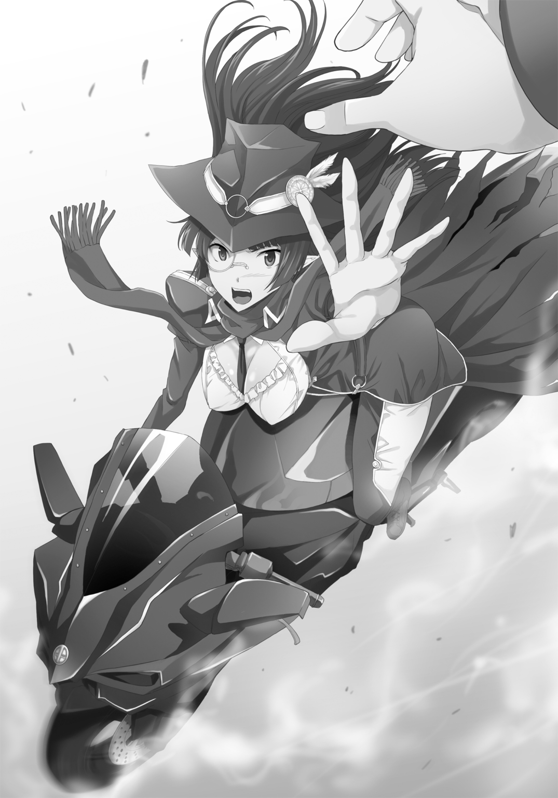
そして、その点にさらに吸い込まれるように、アメリカン航空の飛行機がゆっくりと前に進んでいくのも。
「タグル、あと三分間、ここに摑まれ！」
そう言って、パーシィの手がタグルの空いた左手を取り、カワサキのシートの後端に摑まらせた。
パーシィ自体はアクセルをふかしつつ、どこから取り出したのか愛用の蒸気精霊杖を取り出して眩い輝きを灯した。
カワサキの車体の中からひゅいいいん、という高周波のモーター音が響き、空転する前後二つのタイヤの下に、光点が集まる。
落下速度がその途端、急に落ちた。
やがて、バイクはゆっくりとＷＴＣから数百メートル離れたブルックリン・ビレッジ・シティ・ホールの前の道路に着地する。
タグルたちもゆっくりと、見えない手で支えられているようにそっと地面に下ろされた。
蒸気精霊杖の輝きを消し、またどこかへとしまったパーシィは、溜息をついてタグルのほうを向いた。
「大丈夫か、タグル？」
「う............うん、でもあの白い飛行機は何？」
「タイムトラップだ――――特定地域の時間を歪めて、存在しないものを作り、時間の修正力で中にいる全ての存在を強制消去する――――」
同じく、地面に下ろされていたギリウムが呟く。
「どうやら僕の依頼人は、僕を見限ったらしい――――まあ、商売じゃないし、僕のことは見越しての依頼だから、何か仕掛けるかもしれないとは思ってたが」
「さてどうする『時の決闘士』。タグルは君の命を救ったと思うが？」
面白そうにパーシィがギリウムに訊ねた。
「............分かった、我ら種族が決闘をやめる唯一の例外は、決闘の最中、不慮の事故などで死にそうになった我々を相手が救った場合、だ――――それには従う」
つまり、ここでギリウムとの決闘は終わり、ということらしい
「面白いことになったものだ。さて、世に聞こえた最も高潔なる暗殺者、『時の決闘士』が決闘を中止した相手をどうするか、タグル、知ってるか？」
「知らないよ。第一『時の決闘士』って存在自体、今日初めて知ったぐらいだもの」
「彼らはその相手を生涯の友とする。決して裏切らない。相手が異性なら身も心も捧げる」
「............？」
タグルはまじまじとギリウムを見た。
「ひとつ、真面目に聞きたいんだが」
どう答えていいのか分からぬタグルに、ギリウムのほうから切り出した。
「君はその............ひょっとして両性愛者か？」
「いや、違うよ............そういう知り合いはひとりいるけど」
さて、レッド・リーコンのことをそう呼んでいいものかどうか、とちょっと考えながらタグルは答える。
「そうか」
その時、ギリウムが残念そうな顔をしたのか、それとも安堵したのか、タグルには分からない。
彼はその言葉を言ったときにはすでに踵を返していたからだ。
「では、また会おうタグル――――悪いが、同族以外の友達は初めてだから、これから迷惑をかけるかもしれないが」
そう言って、彼はつかつかと、南に向けて歩き始めていたからだ。
何となくタグルには、ギリウムが少し照れているように思えた。
「まあ、変わった人には慣れてるから――――また会おう、ギリウム」
安堵と共に、タグルは笑ってその背中を見送った。
ギリウムは振り向きもせずに左手を上げて軽く振った。
「さぁ、我々も行こう、タグル。アワセはもうアレイに頼んで『ロスティニア』に運び込んである」
「泡瀬さん、何かあったの？」
「何者かに麻酔薬を投与されて眠っているだけだ............おそらく、今回、タイムトラップを飛ばした奴だろうな」
そしてパーシィは再びカワサキのエンジンをふかした。
「さぁ、いくぞ、乗れ」
「はいはい」
言ってタグルはよっこいせとほぼ１０００㏄のバイクのシート後端にまたがった。
「ねえ、パーシィ」
タグルは「無理だろう」と分かっていても言わずにはいられなかった。
「これからここで起こること、止められないの？」
「止めようとはしたんだ。だが、三〇〇機がアメリカ中に突っ込むのを四機に減らすのが精一杯だった。それが史実通りのことだから」
背中を向けたまま、パーシィは苦い声で答えた。
「この事件は、歴史的に起こらなくてはいけないことなんだ――――我々が防ぐことが出来るのは、変えることが出来るのは時間犯罪者の介入による歪みだけなんだよ、タグル」
いつもと違って、パーシィの声には覇気がない。
「............分かった」
タグルはそれ以上何も言えず、黙って頷いた。
「ところでさ............最後にひとつ訊いていい？」
遠慮がちにパーシィの腰に手を回しながらタグルは訊いた。
「なんだ？」
「どうしてその帽子、落ちないの？ あと、いつものギズモは何処にしまってるの？」
「企業秘密だ」
「そう言うと思った」
パーシィはクスッと笑ってバイクをスタートさせた。
○第五・五話：「サークル・ゲーム」（byバフィ・セント＝マリー）
☆
西暦二〇〇二年・九月一一日
早朝のニューヨークは哀しみの朝を迎えていた。
去年発生した世界貿易センターへの旅客機衝突から始まった九一一同時多発テロの爪痕も生々しく残る、まだコンクリートの砕けた埃があちこちに吹きだまり、行方不明者の連絡を待つ家族の、あるいは家族とはぐれてしまった者たちの貼り付けた黄色い紙はあちこちの街角に貼り付けられている。
そして、二番街の小さな路地に、ひとりの少女が現れた。
今回は両親の許しを得て、両脇と後ろに美しい女性たちが護衛につき、全員の服装も護衛はＯＬ風のモノトーンなパンツスーツに、ハンドバッグに偽装した無反動レーザーガンを下げ、少女もまた、黒いワンピースに黒いリボンという、喪服の目立つ街では今もっとも目立たない服装だった。
尖った耳は全員、イヤリングの形をした光学装置で隠してる。
「八時四五分でございます、お嬢様」
少女の背後に立った護衛が、申し訳なさそうに囁いた。
「............もう少し待て」
珍しく「頼む」という口調を滲ませて少女は言った。
「あ、こっちだ、間違いない！ 今度こそ間違いない！」
「良かったぁ......まだいるかしら？」
男女の声が遠くから聞こえたのを、少女の耳はヒクヒクと動いてぱっと顔が明るくなる。
「いた！ お姫様！」
角を曲がって、沙汰内タグルと瀬底泡瀬がやってくる。
「良かった、まだいてくれた！」
冷や汗を搔きながら、タグルは周囲の護衛たちに軽く会釈をすると、少女の前にかがみ込んだ。
「無事............じゃったのじゃな、タグー！」
少女はタグルに抱きついた。
「僕らにとっては事件の一週間後なんだけど、お姫様はあれからどれくらい経ってるの？」
「一カ月じゃ......父様と母様に叱られて、しばらく禁足処分を受けておった」
「そうか、大変だったね......」
「タグー、怪我は大丈夫か？」
「うん、もう平気」
そう言ってタグルは「ロスティニア」の治療器を使って傷跡も残らない掌を翳してみせた。
「ほらね」
「良かった......結局、『時の決闘士』を斃したのか？」
「いや、親友になった......多分ね」
「そうか、良かったのぅ......アワセ、お主も無事か？」
「ええ」
アワセは微笑み、後ろ手に持っていた小さな箱を取り出した。
丁寧に包装し、リボンもかけてある。
「これ、プレゼント」
「開けてもよいかや？」
「ええ」
少女はその場でもどかしげに包装を解き、厚紙で出来た小箱を開けた。
「おおう、何とも可愛い！」
濃紺のビロードの布の中、西洋甲冑をつけ、面頰を跳ね上げたウサギの騎士が二匹、ちょこんと並んで鎮座している。
大人の親指サイズの銀細工だった。
「今回のことの記念に、って思って............安物だけど。ふたりで買ったの」
「ひとつは妹さんに」
「大事にする！ 絶対大事にする！」
少女はウサギの入った箱を丁寧に元通りに閉め、胸にかき抱いて宣言した。
「それじゃあ、またね」
タグルは手を振って立ち上がった。
一緒に行動し続けるならともかく、時間旅行者同士は、あまり約束をして頻繁に会うものではない、とタグルはここへ戻ってくる前に、パーシィに聞いていた。
だから、少女と会うのはこれが最後かもしれない。
「うむ............また時の環が、遠く接する所であおうぞ」
少女は泣くことなく、こういうときの時間旅行者同士のかわす、定番の挨拶を口にし、ニッコリ笑って手を振った。
「じゃあね、レライウェア、元気で............時の環が遠く接する所でまた」
「またね、レライウェア」
「うむ、ではふたりとも、息災でな！」
そう言って少女は元気良く踵を返し、歩き始め......陽炎が揺らぐように、消えた。
「じゃあ、行こうか。パーシィを待たせておくわけにもいかないし」
「ええ」
タグルと泡瀬は頷きあって、路地を出た。
☆
レライウェアが自室に一瞬で戻ると、今回の騒動で新たにつけられることになった小姓役が待っていた。
「姫様、いかがでしたか？」
「うむ、レッド、あやつ生きておった！」
「『ウサギのタグー』でございますか？ 私も是非お会いしとうございました」
妹と同じ金髪の、ふたつ年上の少女はそう言って少女の服を着替えさせた。
「うむ、じゃがあれはただのウサギではなく、優しくて、強いウサギであった............そうじゃ、今夜からのリーファへの寝物語、決まったぞ！」
「はい？」
「二匹の銀色ウサギの騎士と決闘狼の話じゃ！ うむ、きっとあ奴は喜ぶぞ！ そうじゃ、城の料理人に命じて、物語を作る間に食べるためのドーナッツを作らせよう！ レッド、お前も食べるといい！ あれはとても美味しいぞ！」
少女はそう言って満面の笑みを浮かべた。
☆
「なんだ、もう帰ったのか」
タグルたちが戻ると、パーシィはブリッジのテーブルで山盛りのドーナッツをぱくついている最中であった。
「まあね............って、なんかパーシィ、あれいに料理が出来るとわかってからこっち、毎日それしか食べてないんじゃないの？」
「失礼な、ちゃんと食事も食べてるぞ」
「デザートは？」
「ドーナッツだ」
「............」
「なんだ、その目は」
「ちょっと呆れてるだけ............で、誰に会ったかは訊かないの？」
「相手は時間旅行者だろう？ そういうときはあまり訊かないようにしている。時間旅行者同士というのは時折、実は複雑怪奇な関係で結ばれていたりするからな」
すました顔でそう言いながら、パーシィはコーヒーをひと口飲んだ。
「それに君とアワセが約束をするぐらいの相手だ、悪い奴じゃなかろう」
「そういうもんかな？」
「ああ、そういうものだ............さて、君たちが帰ってきた以上、出発しよう............アレイ！ すまないがこれを時凍庫に保存してきてくれ」
「はい」
にっこり笑って、ブリッジの隅で控えていたあれいが大皿の上のドーナツを持っていく。
「ねえパーシィ、時凍庫ってなに？」
「ああ、この船がタイムマシンも兼ねていることの最大の御利益だ。中に入れた品物の時間を一時停止状態にして保存するところでな、そこに置いておけばドーナッツはいつまでも腐ることなく、熱々の揚げたて状態で保存されるんだ」
「............」
どうやらパーシィにとって、ドーナツはどんな非常時においても世界の中心らしい。
☆
「♪」
軽い足取りで、エプロンドレス姿のあれいは、二キロのドーナッツを載せたトレイを片手に持って、「ロスティニア」の一角にやってきて扉を開けた。
広大な倉庫のような空間は、しかし通常のそれとは違い、全ての品が空中に浮いて停まっている。
あれいはパーシィに教わったとおりの経路を通って、奥の一角の「空きスペース」にドーナッツの皿を置いた。
時凍庫の中にあるのは様々なものだ。
どうみてもガラクタにしか見えない何かの残骸らしきものから、生き物であるらしいと辛うじて判別できるものまで。
中にはとても直視できないものや、可愛らしくていつまでも見ていたいものもある。
中でもあれいがお気に入りのものは、「空きスペース」の隣に浮いていた。
「今日も元気ですね、うさぎさん♪」
そう言って、あれいは親指大の、かなり古びてディティールがあちこちすり減ったウサギの騎士の銀細工に手を振って時凍庫を後にした。
☆
「さて............タグル、アワセ」
あれいの姿が消えると、パーシィはいつになく真面目な表情になった。
「今回の調査である程度のことが分かった。だから次の行き先は君たちの時代の宇宙になる」
「宇宙のどの辺り？」
「そうだな、五〇億光年ほど彼方だ。そこにいる、とある存在に会いに行く」
「とある存在って？」
タグルの質問に、パーシィは大真面目な顔で答えた。
「笑うなよ............そこに悪魔がいる。正真正銘、本物の悪魔が」
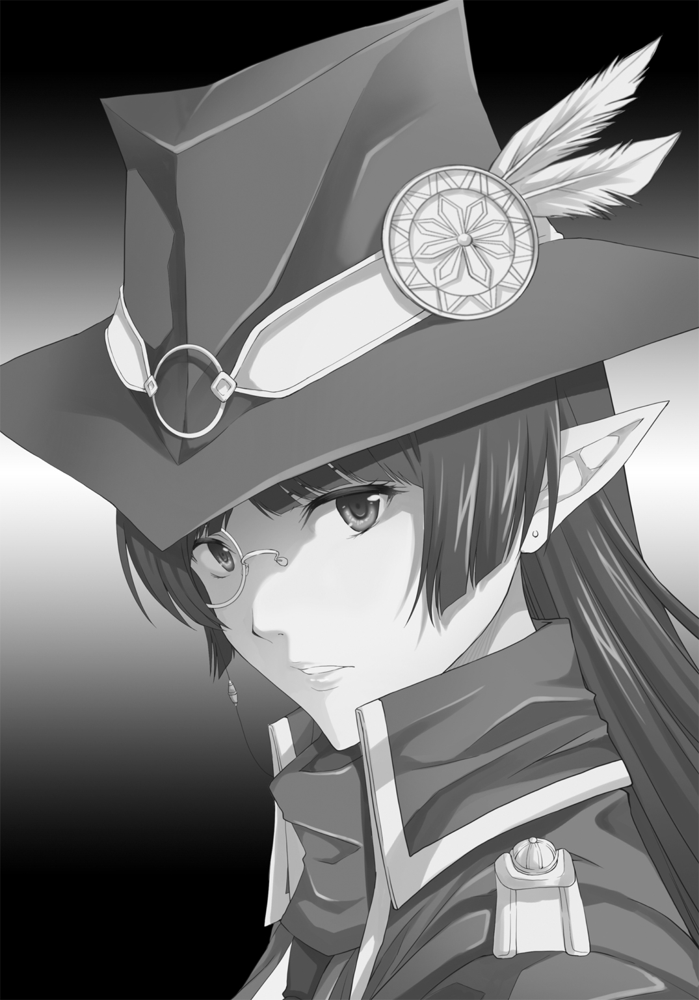
あ と が き
☆
お疲れ様です、神野オキナです。
そんなわけで「イコライザー！」第二巻をお送りします。
残念美人で時間旅行者のパーシィと、ぽやーっとしたところのあるタグル、相変わらず恋する少女でもある泡瀬に、ツッコミ役かつボケもやるレッド・リーコンの四人が今回の中心であります。
色々今回判明したこともあれば、ようやく描くことの出来た謎や設定も出てきます。
特にレッドに関しては本来一巻でやるはずだったのが、枚数オーバーになったため、そのお話を一度ボツにして、ここでの披露となりました。
パーシィにも、タグルにも、そして泡瀬にもどうやら色々と、当人たちさえ知らない謎がありそうです。
そしてこの本は作者として一番、スケジュール的に苦労して送り出した作品です。
今現在「本当に間に合うのかしら？」と首を捻りつつの執筆作業の真っ最中です。今がいつかとても言えないほどに。
もう中盤以降は四十五分仕事をして、十五分休んでを繰り返しながらの執筆となりました。
こういうとき、本当にタイムマシンがあるといいんですが......というベタな話はともかく。
一巻はこれまで読んだ様々な時間旅行もののオマージュという側面がありましたが、この巻から、本格的に彼らの物語となります。
本編を読まれた方はおわかりの通りでしょうし、まだお読みになられてない方はどうぞお早くお読みください。
三巻も間髪を容れずに執筆作業に入りますので、少々お待ちください。
今回もスケジュール面では担当の日比生さんとイラストのともぞさんには大変お世話になりました。ありがとうございます............なんか色々言葉は浮かぶのですが、今はもう本当にそれしか言えないぐらい大きくお世話になりました、ありがとうございます。
そして、これをお買い上げになってくださった読者の皆様には特に大きな無限の感謝を。
では、三巻でお会いしましょう。
神野オキナ拝
著者紹介
神野オキナ かみの おきな
前回まではただの高校生だったタグル君でしたが、今回からは「イコライザー」として旅することとなります。過去に遡ったり並行世界で少女と触れあったり、現代に続く歴史的事件を目撃したり、色々ですが、さて、どうなりますかお楽しみに！
illustration
ともぞ
イラストの細かい〆切を教えてもらってなかったので余裕な感じで仕事してたら、どうやらかなりタイトなスケジュールだということを今知り、焦りながらここにコメントを書いてます。
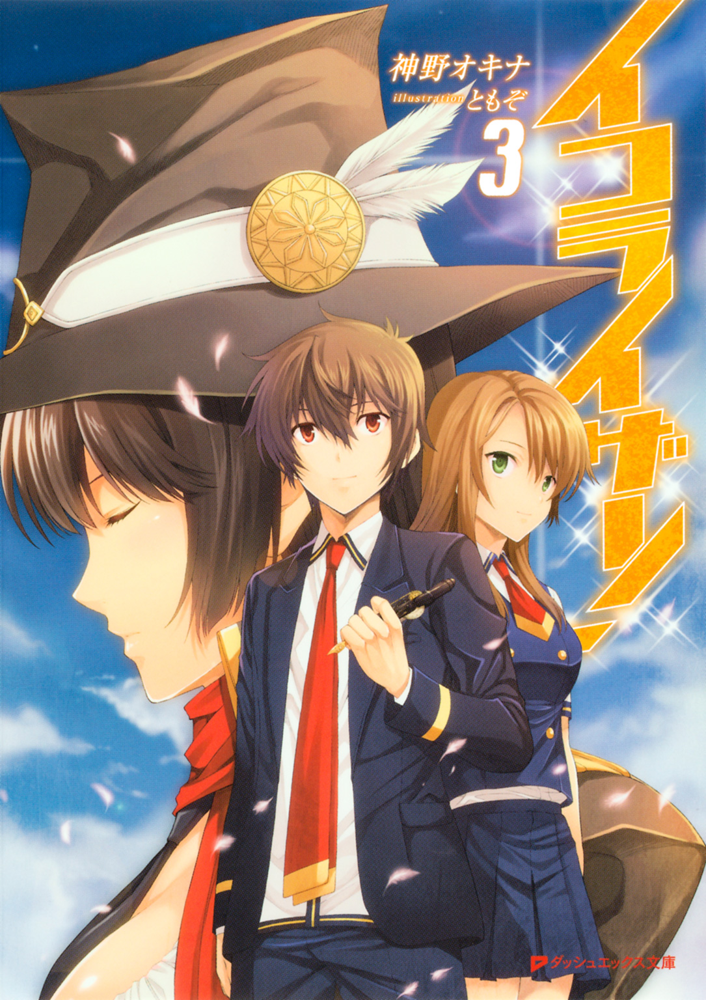
この本は縦書きでレイアウトされています。
また、ご覧になる機種により、表示の差が認められることがあります。
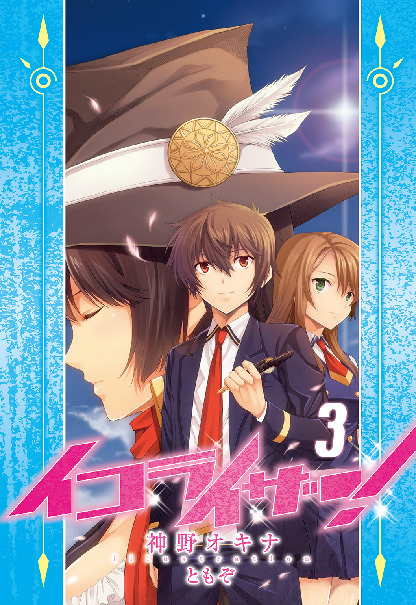
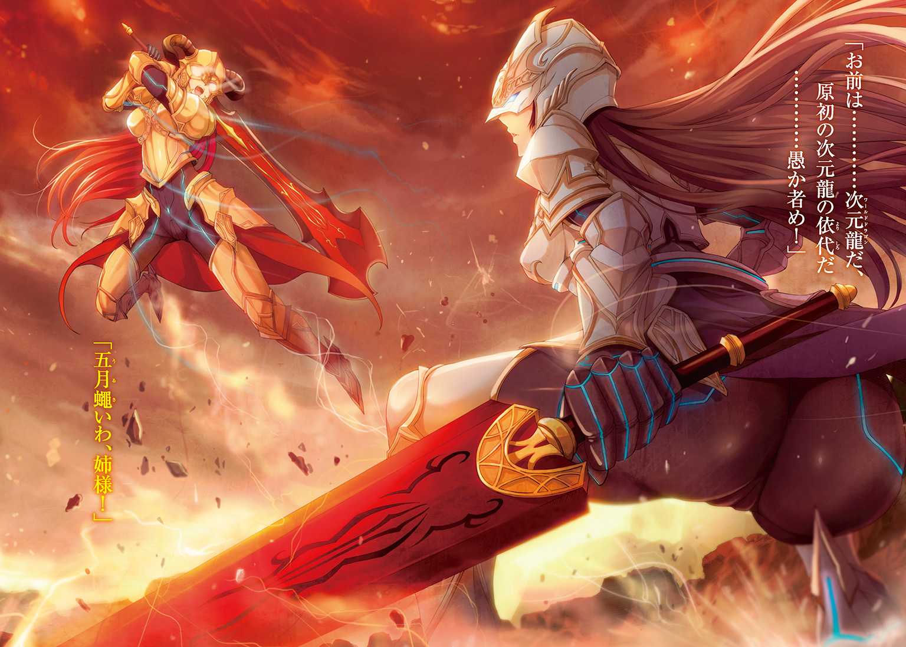
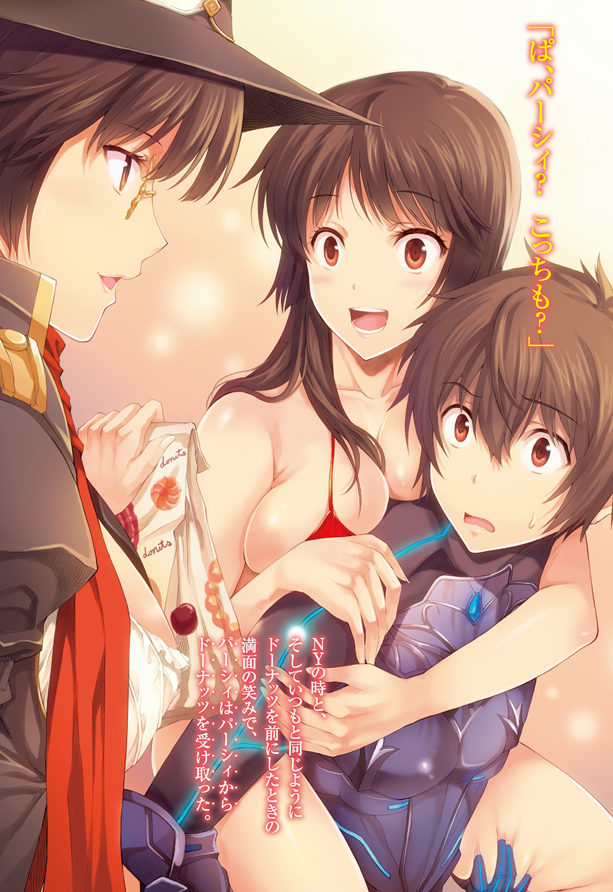
 ダッシュエックス文庫DIGITAL
ダッシュエックス文庫DIGITAL
イコライザー！ ３
神野オキナ
○プロローグ：「不思議な夢」（by 石原裕次郎）
☆
「アワセ」
そっと彼女の手が頰に触れる。
唇が重なる。
それだけで泡瀬は満足だった。
手を繫ぐ、肩を寄せる。
ひとりではない、体温がそこにある。
風が吹き抜ける赤い草原。
クリスタルで出来ているかのように透けて見える草の葉がざわめく大地と、それを映しているかのように赤い空。
「あなたをここに連れてきたかったの」
そこはどこまでも続く広大な平原で、遥か彼方に、それでも巨大だと分かる規模の建物の廃墟が見えた。
「ここは、私の故郷があった場所」
白いドレスを翻し、尖った耳を持つ美女は、両手を広げてくるくると回る。
彼女は、とても大人で、自分よりももっと長い時間を生きているのに、時折こういう子供のような仕草が似合う。
そのことを言うと、彼女はにっこりと微笑んだ。
「私がそう見えるのは、あなたと恋をしてるからよ」
そのひと言だけで、泡瀬の胸は高鳴る。
「あなたのお蔭で、乾ききっていた私の心は潤いに満ちたの......あなたがいれば、もう何も要らない」
泡瀬はそのひと言を聞いただけで背中に甘い電流のようなものがはしり、彼女を抱きしめていた。
☆
「............」
瀬底泡瀬はまだ薄暗い部屋の中で目覚めた。
二〇×五年の日本。ここはパーシィことパスウィダーとよばれる時間旅行者の船「ロスティニア」ではなく、彼女自身が所属する組織「暁」によってあてがわれたマンションの自室。
二〇〇一年のニューヨークでの戦いから一週間近くが過ぎている。
時計を見るとまだ夜明け前の四時だった。
「......」
自分がとても素敵で、同時にとても後ろめたい夢を見ていた気がする。
でも、思い出せなかった。
「なんだろ......？」
空白の記憶を探ろうとしているうち、泡瀬は再び奇妙な睡魔に襲われて、そのままこてんとベッドの上に横になった。
微かな寝息をたてる泡瀬の表情は、最初無邪気なものだったが、次第に苦悩に歪んでいき、いつしかシーツを握りしめていた。
○第一話：「やさしい悪魔」（by キャンディーズ）
☆
一九四五年の凍る冬が、未だに続いているかのような春の最中、ドイツ第三帝国の首都、ベルリンは陥落しようとしていた。
貧しい前歴を隠すためヨシフ・スターリンと名前を変えた指導者の意を汲んだ政治将校に蹴り飛ばされるように、イワン・コーネフ元帥率いる第一ウクライナ方面軍の兵士たちは敵の首都へなだれ込んできたが、しかし勝ち戦の喜びに打ち震えてもいた。
一方、ついに首都にまで攻め込まれたドイツ軍は文字通り女や子供まで動員しての抵抗を続けていたが、それも空しい、戦争という溶鉱炉が人の死と弾薬とで十分煮えたぎったその中身をありったけぶちまけた最後の一滴、断末魔の火花に過ぎない。
そんなベルリンの地下に張り巡らされた下水道を、とあるロシアの分隊が進んでいる。
彼ら......いや、彼女たちには極秘任務が与えられていた。
この当時、ソヴィエト連邦と呼ばれた国の広大さを示すように、出身も人種も様々な彼女たちだったが、皆、一度スターリングラードという地獄の中で砕かれ、そこから這い上がってきた猛者という意味で、男たちと変わらぬ能力を持っている。
中でも、マーリカ・シュンダワという変わった姓の持ち主である、この分隊の隊長には、奇妙な幸運と、死をも恐れぬ強い精神力があり、事あらば「英雄」と呼ばれる人間の足を引っ張ることしか考えていない政治将校たちでさえ、一目置く部分があった。
マーリカは、敵から奪ったＭＰ‐40を握りしめ、真っ暗な中を迷いなく進む。
部下たちはヒメモグラの子供たちのように、その腰から伸びたロープに繫がって歩いていく。
酷い悪臭も、一カ月以上風呂に入っていない身には気にもならない。
分隊長殿は、まるで暗闇でも目が見えるかのようだ、と分隊の誰もが思い、なぜそこまで見ることが可能なのかと問う者もいたが、彼女は「猟師をやっていた祖父のおかげで夜目が利く」とだけ答えていた。
マーリカにとって、それ以上答えることは意味がなく、同時に危険なことでもあった。
彼女の、いつも髪の毛に隠れている右目が特殊な人工眼球で、赤外線投射や光増幅回路のおかげで本当に夜でも見通せたり、数キロ先の人間をズームできることや、緊急時には紫外線レーザーを発射することもできる、などと教えても、この時代、得になることはひとつもない。
腰に提がるホルスターに、ソヴィエト軍制式のナガンリボルバーではなく、一風変わった仕組みを持つアメリカ製のスタール社製リボルバーが入っていて、それが銃弾ではなく、雷撃を発射することを教えたほうが、よっぽど有益な情報だった。
彼女たちは朝から歩きづめで、ようやく目的地近くへたどり着いた。
「ここね」
マーリカは立ち止まると火縄ライターを懐から取りだし、点火した。
小さな光だが、それだけで分隊の仲間たちの間に安堵の溜息が拡がる。
彼女にとって、そのためのライターの火だった。
受動光量を調整された彼女の右目は、目の前に壁の仕掛けと、その向こう側に拡がる広大な通路をすでに透視している。
「少し、ここで待ってて」
ライターの火を分隊の副隊長に渡して、マーリカはもこもこに着ぶくれた毛皮の外套姿で、壁の仕掛けのスイッチを探し、壁を作る煉瓦のひとつを押し込んだ。
がりごりと重々しい音を立てて、機械式の扉が開く。
広大な空間から吹き付けてくる風が、一行の頰を打った。
ベルリンの地下にある通路は、それほどに大きく、広く、果ての見えないものだった。
「なるほど、確かにこの先なら『加工場』ぐらい作れるかもね」
呟いたマーリカに、
「分隊長」
声を殺して副隊長が話しかける。
「この先に？」
「政治将校たちの情報が間違ってなければね」
マーリカは腰の後ろにＭＰ‐40を回し、スタール・リボルバーを引き抜いた。
引き金を軽く引いて、撃鉄を起こして止める。
「先行してみるわ。三〇分経って戻らなかったら帰還して。その時は大急ぎでね」
微笑んで、マーリカは独特のデザインをした毛皮の帽子を深くかぶり直した。
「明かりの使用も許可します。アメリカ製の懐中電灯だから、きっと帰りは持つわ」
「分かりました、分隊長」
副長が敬礼し、残った部隊の仲間たちも敬礼する。
それに、照れた顔で軽く手を振ってマーリカは歩き出した。
「一万五千人の人間を使った『最終軍団』......この果てにあるのかしらね」
この二年ほど、ベルリン市民を含めたドイツ国民のかなりの数が行方不明になっており、それはすべて総統府の地下深くで、トゥーレ協会、と呼ばれるヒトラー専属のオカルト集団によって「なにか」と引き替えにされたのだ、というヨタ話は、よく聞かれることだった。
ヒトラーが引き替えにした「なにか」とは「最終軍団」と呼ばれる不死身の兵士、あるいは究極の兵器であるのだと。
アメリカが「マンハッタン計画」と呼ばれる秘密兵器の開発に成功したらしいと知ったスターリンは、アメリカが作る物ならばドイツにもあるはずだ、ならばヒトラーのラストバタリオンは同じものであろう、という直感のもと、彼女たちを派遣したのである。
もちろん、マーリカはドイツ軍が原子爆弾を作ることを断念したことを知っている。
彼女が危機感を抱いているのは、ヒトラーという人物の側に見え隠れする、とある「存在」の影だ。
トゥーレ協会の長はルドルフ・フォン・ゼボッテンドルフということになっているが、彼女はその裏側に別の「存在」を感じていた。
モスクワの大学を出、故郷に戻ってきて、義勇兵に参加する直前の三日間（とされ、マーリカにとっては数年にも及ぶ長い時間）、彼女は様々なものを見てきた。
その彼女の目からすれば、間違いなくトゥーレ協会を裏から操り、表向きは活動を停止した一九三七年以降も、ヒトラーやその腹心であるヒムラーＳＳ長官に対して影響を及ぼし続けている「存在」があることは明白だった。
それも、彼女の知っている歴史にはなかった「存在」が。
マーリカはゆっくりと歩きながら、銃を握り直しつつ、胸の内ポケットに手を入れた。
もしも、この奥にいるものが、自分の手に負えない「存在」であった場合、「彼女」を呼ぶ必要があるからだ。
「もしもの時は、頼むわよ、パーシィ」
闇の中、マーリカは口の中でそう呟いた。
☆
三日ぶりに、「ろすてぃに屋」が路地に戻ってきた。
「よし、ただいま！」
ドアを勢いよく開けるなりパーシィはそう声を上げながら大慌てで走り、近くのドーナツ屋でしこたまドーナツを買い込み、戻ってきた。
「では出発！」
パーシィがドアの向こうで叫ぶと、再び「ろすてぃに屋」はゆっくりと薄く、姿を消し始めた。
「ホントにドーナツ買うためだけに寄ったんだ」
あきれ顔の沙汰内類に、
「何を言う、あれいのドーナッツも絶品だが、君たちの時代のドーナッツも絶品なんだぞ？」
とパーシィは両手に抱えるような大きな袋一杯のドーナツを抱きしめた。
「いつの時代のドーナッツも、まあ美味いものではあるのだが。下手くそが作らない限りは」
「真実なのか、それとも単に食い意地が張ってるか分からないこと言って誤魔化してない？」
「まあ、五〇億光年かかるところへ、あんまり会いたくない奴のところに行くんだ、これぐらいのドーナッツがないとやってられない！」
「............」
「どうして私をそう疑わしい目で見る？」
「いや、本当に悪魔がいるのかなぁ、って」
「少なくとも地球人類が古代の昔から悪魔と呼ぶ存在はいるぞ。神はまだ自称以外見たことがないが......」
「そうなんだ？」
「神とはシステムのことだからな。人格があって、人間世界に口出ししてくるような『神』は間違いなく自称、だ」
「そういうもんかな......」
「例外はほぼないな............さて、進路セット完了！」
☆
そんなパーシィとタグルの会話を聞きながら、瀬底泡瀬はぼんやりとしていた。
「あの、泡瀬姉様？」
ひょこっとブリッジの入り口で立ち止まった元機会生命体で今はパーシィの重要なドーナツ供給係で、泡瀬たちにとっては食事やら掃除洗濯の面倒まで見てくれる重要なアシスタントでもある、あれいが声をかけた。
彼女はこれまでのフリル付きのドレスの上から、少々無骨なフード付きのＰコートを羽織っている。
「それ、このまえタグル君が作ってたやつ？」
「はい！」
こくん、とあれいは頷いて笑った。
彼女の着ているＰコートは、タグルが「ロスティニア」内にある工作装置を使って作った物だ。
ただのコートではなく、あれいが本来所属している種族「スウィムウェン」からの同調電波などを全て遮断し、彼女の居場所もスウィムウェンに捕捉させないための特殊繊維で出来ている。
「とっても素敵です！」
いつも外出できないあれいを気遣ってのプレゼントだ。
もっともパーシィは「とはいえ完全遮断できる保証はないからギリギリまで試すのは待ってくれ」と言っているのだが。
「どうかなさったんですか？」
あれいはふたたび泡瀬の顔をのぞき込んだ。
「いえ......なんでもないの、ちょっと最近よく眠れなくて」
言いながら泡瀬はふと自分が無意識のうちに唇に指先を触れさせていることに気づいて、慌てて手を下ろした。
二〇〇一年のニューヨークでの戦い以来、泡瀬は調子が出ない日々を過ごしている。
あの時、謎めいた金髪の美女にキスされて、そのまま眠らされるという大失態を犯したから、と思っていたがどうも何かが違う。
だが、どこがどう違うのか、自分で自分の不調を具体的な言葉にできないまま、数日が過ぎていた。
「あの、じゃあ今日からおやすみの前にハーブティーを追加しましょうか？ それともタマネギを切ったものを枕元に......」
「いえ、眠れることは眠れるの、ただ、何度か起きるようになってしまっただけで」
微笑みながら、泡瀬は非常事態以外はブリッジに立ち入ることを禁じられているあれいの頭を撫でた。
☆
「............さぁ、着いた」
そう言ってパーシィが「ろすてぃに屋」のドアを開けて外に出、タグルも後に続いた。
「............本当にここ、五〇億光年の彼方なの？」
「そうだが？」
「............どう見てもデキの悪いＳＦ映画のセットなんだけど？」
そこは五〇億光年の彼方、というパーシィの言葉からイメージされるものとは程遠い場所だった。
まず、小さい。
どう見てもそれは直径五〇メートルほどもない、丸いボールの上半分に紙粘土を貼り付けて適当に山やクレーターをつけたような代物だった。
さらに、その上に「悪魔」と表札に書かれた二階建てのプレハブ小屋が建っている。
タグルの「デキの悪いＳＦ映画のセット」というのはむしろ穏当な表現と言えた。
「............というか、これ、コント......」
と泡瀬が呟くのへ、
「断っておくが、ここに住んでる悪魔は来訪者にあわせて住んでいる場所の外観を瞬時に変更することができる。ここでは何も信じるな。やつは人を騙すのが大好きだからな。迷ったら『杖』を使え」
むすっとした表情でパーシィは告げた。
「ひどいこと言うわねえ」
タグルの背後から声がした。
「わ！」
思わず飛び退くタグルの背後に、黒いスーツに革手袋を塡めた、猫の耳と尻尾を生やした十二、三歳ぐらいの外見の少女が、いつの間にか立っていた。
慌てて泡瀬が銃を抜くが、愛くるしい金髪碧眼の少女は驚いた様子もなく、大人びた表情で口をへの字に曲げ、
「あたしはいつだって親切なだけよ。いつも言葉や行動の意味を深読みしすぎたりねじ曲げたりして勝手に滅ぶのは人間じゃないの」
「どうだかな。お前の悪戯は時折色々限度を過ぎている」
驚きもせず、パーシィは自分の「杖」を光らせて少女の上にかざした。
途端に少女の姿が半分霞のように消える。
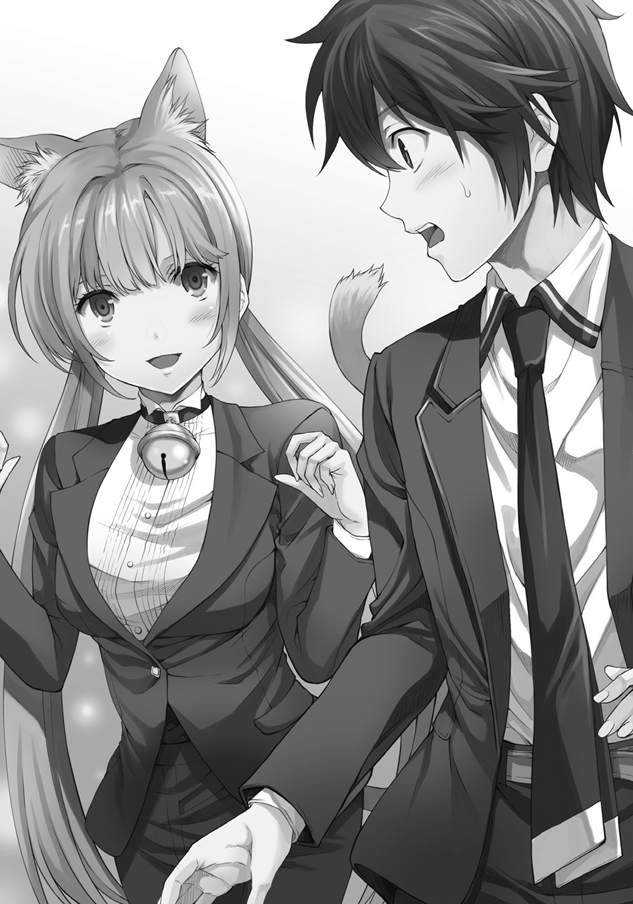
「そんな......気配があるのに」
呆然とする泡瀬に「こいつはそういう生き物だ」とパーシィは告げ、
「こんな風に幻術で人の前に出てくるのがいい例だ」
と少女......悪魔に向かって眉をひそめた。
「単に生身で出迎えるのも面白くないから幻影を飛ばしただけよ」
気にする風もなく、少女は肩をすくめる。
「いちおう歓待してるつもりなのよ？ 嫌ならあんたが大嫌いな『ネ』のつく生き物の格好してくるわ」
「！」
悪魔と呼ばれた存在が「ネ」のつく生き物、と言った瞬間、確かにパーシィの顔が青ざめ、こわばったのをタグルは見た。
それはまるで、ホラー映画に出てくる殺され役の女優が、その寸前に浮かべるような表情だったが、パーシィはすぐにそれを打ち消し、
「だったら私の用件は知ってるな？」
「ま、とりあえず細かい情報まではまだチェックしてないから、あんたの口から聞かせてもらうわ」
そう言うと、幻影はパーシィの身体をすり抜け、背後にある安っぽいドアのノブを回して開けた。
「ささ、どーぞどーぞ、奥へ奥へ」
そう言ってにかっと笑う。
不思議なことにその笑みに邪気はなく、タグルは「ホントに悪魔なのかな？」と首を傾げた。
☆
プレハブの中はまるでマンションのショールームのように整然とし、広々とした清潔感溢れる部屋だった。
ただ、人（？）が生活していると分かるのは、壁一面に拡がる本棚のおかげだ。
文庫本から漫画本、大判の図鑑や百科事典、英語や他の言語で書かれた書物がずらりと並んでいる。
「うわ......」
その中に、自分が愛読している漫画の背表紙を見つけてタグルはぽかんと口を開けた。
「なんで悪魔が？」
「そりゃまあ、暇こいてるからねえ」
部屋の奥から、今目の前にいる悪魔とまるっきり同じ格好と顔かたちをした少女が現れ、重なると腰に手を当てて溜息をついた。
「でも、嬉しいもんではあるのよ」
そう言ってニッコリ笑う。
「地球誕生以来、五〇〇万年ぐらい前までは地球でアンタがたが『神』と呼ぶ存在の原型になる奴の助手みたいなことをして、せっせとアンタたち人類を育ててきたんだもの。これはいわば『収穫物』ってとこね」
「人の魂じゃなくて？」
「創作物は人の魂の、最も純粋な結晶よ？」
何言ってるの？ と不思議そうな顔で悪魔はタグルの顔をのぞき込んだ。
「まあ、あいつからネズ......じゃなかった齧歯類を捕まえて『これを知的生命体にまで進化させようと思う』って言われたときはどーしよーかと思ったけどねー」
「あいつ？」
「超越存在にまで進化した個体......えーと、大抵は『神』って呼ばれてるけどね」
「............今、さらっと進化論とか色々否定すること言わなかった？」
「タグル、そいつの言うことを真に受けてると最後には頭を撃ち抜くことになるぞ、千に三つ、本当のことがあればいいほうだ、忘れるな」
「............」
「なによー、傷つくわー。ちゃんとさっき、アンタに配慮して齧歯類って言ってやったのに」
唇を尖らせながら、悪魔は腕組みをした。
「そーいうことを言うなら教えてあげないわよ、なーんにも。じゃなきゃ、ここをネのつく齧歯類で埋め尽くそうか？」
その一瞬、パーシィの顔が文字通り引きつったのをタグルは見た。
ホラー映画のラスト、だめ押しの恐怖が押し寄せてきたときのヒロインが最後に叫ぶ寸前のような表情。
だが、パーシィは気丈にも頭を振って、不機嫌な顔に戻った。
「貴様には色々賃しがある。返してもらうぞ。悪魔には口頭契約でも有効だったよな？」
「............ったく、あたしが契約に弱いの知っててそういうことを振りかざすのねえ」
「当たり前だ、悪魔と取引しに来てるんだからな」
「......シリアスな駆け引きなのか、掛け合い漫才なのか分からなくなってきた」
ぽつんとタグルは本音を漏らし、泡瀬も思わず頷いた。
「では、教えろ。私の懸念は当たっているか？」
「やだ」
ぷいっと悪魔は横を向いた。
「教えたげない。そもそもあんたの懸念ってなーに？」
「お前はとっくに知ってるはずだろ、悪魔」
「さーねー」
「しらばっくれるのはやめろ。今の私はとても気が短い」
「じゃあ、あたしを殺す？」
「馬鹿言うな、とにかくさっさと教えろ！」
「自分の記憶に聞いてみなさいよ」
「うるさい、もう封印してあるんだ、知ってるくせにグダグダ言うな！ あんまりもったいぶると『ロスティニア』でこの辺一帯を因果地平まで吹き飛ばすぞ！」
「まあまあ、タイムマシン持ってる人間が、そんなに気の短いことを言うモンじゃないわよ――――で、ホントに封印しちゃったの？」
「私が封印を終えたときその場にいただろうが！」
「まーほら、人間思い込みによる記憶の修正はままあることじゃん？ あたしも封印したと思い込んでる可能性が」
「悪魔だろうが、お前は！」
パーシィが本気で怒る手前の苛立ちを見せているのに、悪魔はのらりくらりと微笑んでいるだけだ......次元が違う生き物なのかもしれないし、それほど気心が知れているのかもしれない。
ともあれ、今とんでもないことが起こる可能性はなさそうだった。
「......とりあえず、トイレ行きたいんだけど」
「ああ、男性用はそこの廊下の奥の突き当たりを右。左は女の子用」
「お前ひとりしかいないのに両方あるのか」
「そりゃ男の子が来るとわかりゃ作るわよ」
「変な仕掛けはしてないだろうな？」
「大丈夫、トイレのレバーを捻った瞬間に亜空間に放り出したりとか、トイレットペーパーが祈禱筒になってて、紙を使うだけで異世界の怪物を召喚したりとかしないから」
「............」
「あははは、じょーだんよ、冗談」
タグル、泡瀬、そして当然ながらパーシィの視線に、わざとらしい笑い声をあげながら、悪魔は頭を搔いた。
「では行ってこいタグル......こいつが変な悪さをしないか、私が見張っている」
タグルは廊下を出て、言われたとおりの道筋を通って用を済ませた。
「あれ？」
さっきまで板張りの廊下だったはずが、今は冷たく黒く輝く鋼鉄で覆われた戦艦の中のような通路になっている。
「............？」
「や、驚いた？」
振り向くと、悪魔がにっこりと笑っている。
「これ......どういうことですか？」
見かけは自分より遥かに年下だが、パーシィ同様、その見た目が当てにならないことはタグルも理解していたから、言葉遣いも丁寧になる。
「ほら、君ってあたしとパーシィの会話が理解出来ないっぽいから、説明しようと思って」
「......？」
「えーと、ここは今から二千年ぐらい前のドラゴンエルフの艦の中」
「ドラゴンエルフ？」
「今はもう存在しない種族。後世の人たちはアークエルフ、って呼んでるけどねー......ちなみに、ドラゴンエルフってのは彼らが一族をあげて次元龍を狩る種族ってところからきてるのよ」
「次元龍？」
「もうすぐ見られるわ......ほら」
悪魔が天井を見上げ、つられてタグルの視線もそこにいくと、いつの間にか天井は透明なガラスのようなドームになっていて、その上を巨大な翼を広げた「龍」が横切った。
巨大だ。
これまでタグルが見た中で一番巨大な生物は、沖縄の水族館で見たジンベイザメだが、そんなものは比べものにならない、文字通りの巨大な存在。
莫大な量の筋肉の上、びっしりと身体を覆う鋭いエッジの鱗、長い首、太く、力強い腕と脚、それらを全て統合したよりも力のありそうな長い尻尾。
だが、タグルにとって何よりも強烈だったのは、こちらを一瞥したときの目。
縦長の瞳孔といった爬虫類の構造ではなく、人の眼球と同じものが、しかし人類とは永久に感情を共有出来ないであろう冷厳さでこちらを見た。
「..................」
ぽかんと口を開けるタグル。
だが、同時に「これは幻影だ」ということも確信する。
目の前を過ぎ去った物が本物なら、今頃自分はおかしくなっているだろう。
「へえ、それなりにちゃんと修羅場くぐってるだけあって、今の風景が幻の一種ということは直感できるんだ」
出来のいい生徒を見つめる教師の顔で悪魔は笑った。
「これは......どこの記録なんですか？」
「まあ、いずれ分かるわよ」
「なんでこんなものを僕に？」
「あんたにはそれを知る必要があるわ。パーシィはこれ以上巻き込みたくないみたいだけど、もうあんたは踏み込んじゃったからねえ」
「......」
タグルはネコミミ尻尾付きの悪魔を見つめた。
「何も知らないでいるのと、知ってるのとでは、運命の選択肢も変わるしね......まあ、余計な説明はしないから、自分で考えなさい。まあ情報とかはＦＰＳの謎解きモードだと思ってあちこち触れてみたらいいわよ～♪」
そう言うと、手を振りながら悪魔の姿はゆっくりと床に沈んでいき、最後に残ったネコミミがぴくぴくっと動くと完全に消えた。
「自分で考えろって............」
首を捻るタグルの横顔を、今度は赤い警報の光が照らした。
「え？」
タグルはこれまでとは違う、かなり広い通路の真ん中にいて、廊下の両側に並んだ金属の扉が一斉にスライドし、中から驚くほどの美男美女の集団が飛び出してきた。
「わ！」
思わず飛び退こうとして間に合わないタグルの身体を彼らはすり抜けていく。
「そうか......幻なんだっけ」
身体にぴったりしたビザールなスーツを身に纏った男女は、一方向に向かって駆けていく。
タグルは彼らの後を追った。
☆
「お茶を淹れてきます」
泡瀬はタグルが席を立ってすぐ、そう言って後を追おうとした。
「んじゃ、そこの廊下をすぐ曲がって二番目の部屋ね。あたし紅茶、パーシィはコーヒーとドーナッツね」
「ど、ドーナッツ？」
「好物でしょ、用意しておいたわよ。ニューヨークの『アルバトロス』のドーナッツ」
「............誤魔化されんぞ」
「はいはい、まあ瀬底ちゃん、よろしくねー♪」
「あ、は、はい......」
泡瀬は慌てて給湯室へ向かう。
☆
暫くうろつき回り、あちこち触れてみると場所によって情報が提示されることが分かる。
そうなるとあとの理解は早い。
ここが次元龍と呼ばれる存在を狩るための戦闘艦の中であること、彼らは次元龍を狩ることで生計を立てるどころか種族社会全体の生活を支えている者たちであり、次元龍は放置しておくとあらゆる時間や空間に影響を及ぼし、そこに暮らす人々の災いになることも。
そして、その人々が暮らし、未来を作り、あるいは変えていくことによって生じる「可能性の残滓」こそが次元龍を生み出す源だということも。
「つまり、永遠の戦いってことか......」
そう呟いたタグルの横を、エルフではない耳を持った、真っ赤な髪の少女が駆け抜けていった。
「え......レッドさん？」
今は別の次元の日本にいるはずの、レッド・リーコン。
一瞬だけの横顔だが見間違いではない。
タグルは慌ててその後を追った。
悪魔がどうしてこんな所に自分を放り込んだのか、その理由があるはずだと直感したのである。
いつになく真剣で、どこか幼い雰囲気のレッド（女性型）は廊下を駆け抜け、タグルはその後を追って、広い部屋に出た。
いや、広いと言うより広大。
そこは果てしなく高い天井と、果てしなく遠いドーム状の壁で覆われた空間。
その空間のあちこちに、円盤状の床が浮かび、その上に忙しく人々が動き回り、機械を操作している。
艦橋だ。
タグルは直感した。
ここは戦艦か何かの指揮所だ。
そしてレッド・リーコンは「遅れました！」と声を張り上げながら自分の席に着いた。
彼女の席があるコンソール類にはすでに七人の男女が座り、慌ただしくシステムの調整を行っている。
「あれ......？」
リーコンの着いた席とそこから拡がるコンソール類にタグルは不思議な既視感を覚えて首を捻った。
いや、単なる気のせいではない。
自分はどこかでこれと同じものを見ている、と確信する。
「これ......ひょっとして......？」
両手の親指と人差し指で四角いフレームを作ってレッド・リーコンが座ったコンソール周辺を切り取ってみる。
そして、座っている人物を頭の中で消してみる。
間違いなかった。
これは「ロスティニア」の艦橋だ。
「諸君！」
不意に頭上から声が降ってきてタグルは驚いて振り仰いだ。
タグルのすぐ後ろの空中に浮かぶ円盤の上、鎧に似た白銀の装甲服と真紅のマントを身に纏った黒髪の女性が、細い剣を抜いて振りかざすのが見えた。
手にしたレイピアよりも鋭く、冷たく輝く美貌には、しかし同時に満ち足りた王者の気品があり、余裕すら感じられた。
真っ正面から向き合いたくはないが、その激励が届く範囲にはいたいと、誰もが思うようなカリスマの輝き。
「『黄金鱗』クラスの次元龍を見つけるのは一年ぶりだ、これ以上奴の意のままに世界を放置することは許されない、世界の為に、人々の為に、そして我々の為に、次元龍を今回も討ち果たそうぞ！」
その声に、一同が一斉に立ち上がった。
『我らの命、姫様の御為に！』
右の拳を左肩に当て、同時に唱和する。
その言葉に、タグルは記憶の奥で引っかかるものを感じた。
どこかで聞いた言葉だ。
そして、頭上にある円盤の主の顔が、見知った顔と重なる。
「パー......シィ？」
こけ、とタグルの頭が斜めになった。
☆
タグルが悪魔に案内されて過去の幻影の中に入ったばかりの頃、泡瀬は、言われた通りの場所にやってきた。
「うわ......」
驚くほど豪華なシンクと大きな冷蔵庫、それに彼女が写真でしか見たことがないような高級食器と数十種類もの紅茶やコーヒー豆の缶の並んだ食器棚。
「とりあえず......」
ガスコンロに火を点して浄水器付きの蛇口から出る水を入れた薬罐を置くと、泡瀬は首を捻りながら紅茶の缶とコーヒー豆の缶と睨めっこし、試しに手前にあるコーヒー豆の缶を開けた。
「豆轢きが要るわね」
呟いた泡瀬は自分が欲した物が目の前にあることに気がついた。
「......」
さっきまでそこにはコーヒーの缶しかなかったはずなのだが。
（まあ、考えてみれば悪魔の家......だものね）
おどろおどろしい言葉の響きからは想像もつかない、何となくかわいい妖精の家にいるような感覚だが、とりあえず納得して泡瀬はコーヒーミルを手に取ってシンクの上に置いた。
「あとはティーポットと......」
パーシィの好物のドーナツ、と周辺を見回した泡瀬は、一瞬、今自分が見ている風景に鋼でよろわれた通路が重なって見えた。
さらに、そこでポカンと立ち尽くすタグルの姿も。
「え？ た、タグル君？」
思わず一歩踏み出すと、そこは板張りの給湯室の床で、システムキッチンのシンクが目の前にある。
「......？」
ガスコンロの上、ケトルが沸騰するシュンシュンという音が聞こえていた。
泡瀬は上着のポケットに入れていた自分用の「杖」をとりだして操作しようとしたが、
「あー、それちょい待ち。そいつパーシィの杖にも連動してるから、今ばれると困るのよ」
と悪魔がいつの間にか隣に立っていた。
「一応、この辺一帯は時間結界を張ってあるから、時の流れから誤魔化されてるけど、パーシィの杖ってそこをすり抜けて反応するのよねぇ。あのアークエルフのお姫さま、確かに天与の才はあるのよね、困ったことに」
「！」
驚いて横に飛び退き、チアッパ・ライノ３５７マグナムを抜いて構える泡瀬に、ネコミミ尻尾付きの悪魔は片手を振って苦笑いした。
「あー、ダメダメ、そういうの。鉄砲で悪魔が死んだ事例はまだないんだから......悪いけど、ちょっとの間タグル君さ、あたしに預けてくんない？」
「何故？」
「何故って......まあ、あんたもそうだけど、あの子もパーシィも、もう下りることのできないゲームの上にいるの。だからタグル君にはきちんと前後の事情を理解してほしい、ってわけ......過去の記録を見せているだけだから、身体に害はないわよ、うん、保証する。悪魔が約束を守ることは知ってるでしょ？」
「でも、信用できない取引相手だってことも知ってるわ............タグル君になにをさせるつもりなの？」
「なにをするかは当人次第。パーシィはこういうとき全部自分で抱え込むアンフェアな部分があるから、そこをね、ちょっと均すだけ............あなたも、何を選ぶか、今のうちから考えておいた方がいいわ」
「......？」
「おっと、あなたはまだ時期が早いのか」
肩をすくめて悪魔の姿はすうっと透明になり、消えた。
「ともあれ、紅茶の方はオレンジペコー、コーヒーはアルトニア４号星のムニョル・ケサ・パーレイをよろしくねー♪」
声だけが響く。
ライノをホルスターに収めた泡瀬は、そのまま「杖」のスイッチを入れようとして、何故か戸惑った。
理性ではなく、直感が「やめた方がいい」と囁いている。
これまでの「暁」のメンバーとしての人生で直感に背いて上手くいったことはひとつもない。
だが、その直感さえ騙されているのかもしれない。
考えは堂々巡りになり、泡瀬はじっと「杖」を見つめたまま動けなくなった。
☆
パーシィこと「姫様」の率いる艦は瞬く間に次元龍を追い詰め、そして閃光と轟音、専門用語が飛び交う中、あっという間に骸に変えてしまった。
「............」
あまりの手際の良さに、ポカンとするタグルをよそに、艦橋内の人員はなおも忙しく動いて、次元龍の死骸の回収に大わらわだ。
あの次元龍を甲板の片隅に載せて解体出来るほど、この船は巨大だった。
満足げに頷いて細剣を鞘に収めた「姫様」はマントを翻して踵を返す。
すると主の意志に従うかのように、円盤から艦橋の壁まで、薄い金属の板がカチカチと伸びて、通路となる。
「姫様」はその上を歩いて壁に開いた出入り口から退出した。
タグルはその後を追おうとして、少し考える。
手を空中に伸ばし、パーシィが立っていた円盤に指先を向けた。
円盤の上に、小さく光り輝く矢印があった。
ちょん、とその矢印を叩くと身体はその円盤の上に乗っている。
「ホントに謎解きつきのＦＰＳみたいだなぁ」
呟いて、タグルは金属板で出来た通路を小走りに走って壁の向こう側へ足を踏み入れた。
間接照明で薄明るい、螺旋状の階段が下へと続く部屋。
吹き抜けで、三メートルほど下には天蓋付きのベッドが見える。
「降りたのかな？」
と目線を階段の方へ戻すと、とたんに、白いパーシィの背中が目に飛び込む。
「あ......」
驚いて足を止めるタグルの目の前で、パーシィは壁から伸びてきたアームに装甲服を除装させながらショーツ一枚のほぼ全裸になって降りていく。
以前、本当の意味で布一枚纏わぬパーシィの姿を（本来は見てはいけない部位まで）目にしたことはあるが、あれは戦闘時のドタバタの最中の「事故」とでもいうべきもので、ここまでじっくり見る余裕はなかった。
「綺麗だなぁ......」
思わず呟いて、タグルは慌てて背中を向けた。
「ふぅ......」
パーシィが溜息をついて、ベッドの上に寝転んだのか、スプリングが微かに軋む音が聞こえる。
大丈夫かと思って振り向いたが、彼女は紐で留めるショーツ一枚の姿で、ベッドの上に寝そべり、ごろりと転がるところだった。
あらわになったパンケーキ状の胸が、伸びやかな姿勢に合わせて形を変え、先端のピンク色がタグルの脳髄を抉る。
「！」
また背中を向けてドギマギしつつ、自分が戸惑う対象が単なる幻影に過ぎないのに、とタグルが気づくよりも前に、ドアがノックされた。
「レッドか、入れ」
緩やかにドアがスライドする音がして、人の入ってくる気配。
「姫様、なんとはしたないお姿を！」
「五月蠅いなあ、お前だって生き返りたての時はもっと破廉恥じゃないか」
「あれは不可抗力です！ 私の種族は再生時にはどうしてもフェロモンの過剰分泌と、再生時の余剰エネルギーで発情状態になってしまうのはご存知でしょう？」
「この前も大変だったそうじゃないか」
面白そうに笑う「姫様」に、レッドはタグルの知る人物とはまるで別人のように声を裏返らせた。
「ち、違います、あれはちゃんと......その、最後の一線は守っております！」
「なんだ、まだ処女か」
「あ、当たり前です！」
「私と違ってお前は自由なのだからもっと恋愛を楽しめばいいんだ」
「馬鹿を言わないでください姫様！」
どうやら遠い昔はこのふたり、言葉のやりとりの方向が真逆だったらしい。
「とりあえず、服を着けてくださいませ、そうでないと今日のドーナッツは差し上げませんよ！」
「............もう、しかたないなぁ」
変わらぬ部分もあるようだ。
やがて衣擦れの音がして、「はい、これでよろしいです」というレッドの言葉に安堵して、タグルはようやくパーシィのいる方を向くことができた。
「もう少し簡素な服はないのか、お前たちが着けてるような」
「姫様、もしもこの艦に敵が侵入したらそうしていただくこともあるでしょうが、平時において王族は王族の格好をしていただかないと」
「どうもこういう服はひらひらしていて苦手だ」
そう言って「姫様」は自分の纏った純白のフリルやレースがふんだんに使われたロングドレスの袖を迷惑そうに眺めた。
髪の毛はアップにまとめられている。
「さあ、お前の言うとおりドレスを着けたのだ、ドーナッツを寄越せ」
「はいはい」
頷いたレッドとパーシィの姿が、一時停止をかけたように止まった。
「？」
タグルは周囲を見回し、空間のあちこちに触れてみると、不意に風景が変わった。
業火の最中、赤々と照らし出されている通路。
倒れている人、人だったものの一部。
「！」
タグルは周囲を見回した。
壁と言わず天井と言わず、あちこちが破壊され、内部がむき出しになり、火花と炎が吹き出している。
空中に「環境再現値を低く設定しました、この幻影は安全です」の文字が浮かぶ。
「いったい、何が......」
胸を真っ赤に染めた、男の姿のレッド・リーコンが走っていくのを、タグルは視界の隅に捉えた。
タグルも後を追う。
手慣れてきたので、追いかけながら矢印が小さく光り輝いているレッドの背中に手を伸ばして軽く叩くようにすると、一瞬でパーシィの部屋に入っていた。
「姫様、ご無事で！」
飛び込んできたレッドを、天蓋と脚のひとつが壊れて斜めになったベッドの上、身体のあちこちをゼリー状の物質で包んだパーシィが迎えた。
「大丈夫だ、まさか戦闘指揮所に直撃を喰らうとは思わなかった、だが私よりもブリッジの皆は......」
そう言って辛そうに唇を嚙む。
「お前以外、生き残りは何名いる？」
「ブリッジ要員は十七名、戦闘指揮所の者は............五名のみです」
「艦の損傷は？」
「有り体に言えば、この艦を棄てるべきです、あの奇襲で艦の機能の七割が失われました。『ヴァル・ロスティニア』はもはや沈みゆくのみの運命です」
「だが、私には五万人の乗組員の命を預かる責任と使命がある」
「いえ、姫様」
レッドは一瞬言葉を区切り、それから深く息を吸って再び口を開いた。
「............現在、この艦の乗組員は一五〇〇人です。うち重傷者一〇〇〇名、負傷者二〇〇名」
「なん............だと？」
「ここは『ロスティニア』に生き残った人員を収容し、本国に帰還するべきです」
「だが『ヴァル・ロスティニア』は我らがアークエルフの最大の牙にして盾だ、本国には建造中の『ドラグナード』以外は............」
「姫様」
真っ直ぐにレッドはパーシィを見つめた。
「お忘れですか？ 我々を襲ってきたのは、次元龍と同化して形こそ変われど『ドラグナード』でございます」
「............」
ぎり、とパーシィの唇から音がした。
唇を嚙んでいた前歯がついに皮膚を破り、奥歯の鳴った音だ。
「分かっている！」
文字通り口から血を吐きながらパーシィは叫んだ。
「分かっているんだ！ あの子が、リーファが裏切った！ あの子専用の艦は、『ドラグナード』は、あの子なしで起動するはずはないのだから！」
「ならば、これから為すべきことはご存知のはず」
「............」
「姫様！」
「分かった、『ヴァル・ロスティニア』を放棄。生き残った者全員を『ロスティニア』に集め、本国に帰還する......」
「はい、姫様！」
あえて無表情で敬礼するレッドに、パーシィはがっくりとうなだれた。
タグルは彼女に関する情報がないかと周囲を見回したが、それらしい情報に通じそうな光の点滅も光る矢印も見つからなかった。
やがて、艦全体を重々しい震動が襲い、天井から埃や破損した部品類が落ちてくるのを、パーシィは避けようともせず、うなだれたまま受けていた。
「パーシィ............」
過去の幻影にもかかわらず、タグルが手を伸ばすと、その影はゆらりと揺らめいて消えた。
果てしない荒野が、タグルの前に拡がる。
真っ赤な荒野に、青い空が拡がり、白い月が冷たく浮かぶ。
そして見渡す限り、荒野の向こうに見えるのは破壊された都市の群れ。
金属同士がぶつかり合う音が響く。
振り向くと、銀色の装甲服を身に纏ったパーシィが、金色の装甲服と戦っている。
相手もパーシィも、よく似たなまめかしいボディラインを持ち、頭を完全に覆うヘルメットを被って、両手剣を持っていた。
（誰と戦ってるんだ？）
ふたりの動きは互角。
まるで鏡映しに戦っているかのように、両方とも殺気のありすぎる演武のように同じタイミングで同じ部位に、同じ速度で剣を振るっている。
それゆえ、ほぼ相手の身体の手前で打ち合い、離れてまた立ち上がるまでの間に同じようにまた剣を構える。
ひとつの実体を巡って光と影が打ち合うようだった。
だが一瞬、金色の相手が足を滑らせた。
パーシィが踏み込み、相手の頭を狙って下から顎を貫くように剣を突き出す。
金色の相手は身を捻りながらのけぞったが、切っ先はそのヘルメットの留め金を破壊して、空中に舞わせた。
そのまま一回転した金色の騎士の剣が、横殴りにパーシィの頭を狙う。
パーシィは逆に、踏みとどまると相手の威力が最大になる場所よりも踏み込んで頭突きをくれてやるような動きで、これを受けた。
こちらもヘルメットの留め金が砕け散り、銀の鎧から黒髪が流れ出て、パーシィの顔があらわになる。
金色の鎧からあふれ出たのは金色の髪。
平時であればパーシィよりも穏やかで、優しげであろうはずの顔は、怒りと憎悪にどす黒く染まっていた。
人の姿をした次元龍。
一瞬、タグルの脳裏にそんな言葉が浮かぶ。
「何故、皆を殺した、リーファ！」
吹きつける風の中、髪を振り乱し、こめかみから血を流しながらパーシィが叫んだ。
「必要だったのよ！」
リーファと呼ばれた美女が、喉から血が出るような声で叫んだ。
風向きのせいか、こちらの髪は風に吹かれて優雅にたなびき、天さえも彼女に味方しているかのように見えた。
「私は死にたくなかった！ 私が死ねば世界に意味はないもの！ 意味がある為には、必要な犠牲なのよ！」
「七億八千四百五十五万五千六百八十九人だ！」
パーシィのこんな厳しい顔を、タグルは見たことがなかった。
「七億八千四百五十五万五千六百八十九人だ！ 分かるか？ お前が次元龍と取引して、奪った命の数だ！」
「私が生きるための数をそろえただけよ！」
「父上や、お前の母上まで殺してか！」
「親は、子供のために死ぬのが当然でしょう？」
引きつった笑顔を、リーファと呼ばれた美女は浮かべた。
「姉様だけは、生かしてあげようと思ってたけど、もうやめたわ......あと二年で死ぬはずの私が永遠に生きていく様を、あの世で御照覧あれ！」
金髪の美女の眦が裂けてつり上がり、額がぱっくりと割れて、もう一つの金色の眼が現れる。
「これは......！」
「そう、『原初の次元龍』バルドスと融合した、これが私の力！」
額の金色の眼が動き、瞳孔がすぼまった瞬間、リーファと呼ばれた金色の装甲服の全身が本当に金色の光で包まれた。
剣にも光は渦を巻いて、より長く、鋭い刃物へと変形させていく。
それだけではなく、鎧の表面にもびっしりと鋭い菱形の鱗が生え、優雅なカーブを描きながらも、人工物であった装甲服が、まるで生物の一部のように波打ち、脈打ちはじめる。
「お前は............もう、リーファではない」
パーシィは、食いしばった歯の間から声を押し出した。
「お前は............次元龍だ、原初の次元龍の依代だ............愚か者め！」
「五月蠅いわ、姉様！」
かっ、と開いた口から金色の炎が溢れる。
「この金色の力！ これで、私は永遠に死から解放される、お姉様、最初にして最後の次元龍の、最初で最後の贄になって！」
そして、両者は走り出す。
☆
「............というわけで、私は貴様なら全部知っているだろうと思ってここに来たんだ」
泡瀬がお茶を淹れに行ってすぐ、パーシィは悪魔に食い下がった。
「私は奴を確かに殺したはずだ、それなのに、何故あちこちに奴の影がちらつく？」
「『時の調停者』が殺すとか物騒な言葉使っていいの？」
この前後一分ほどの間に、同時に様々なことをタグルと泡瀬に仕掛けていながら、悪魔は知らぬ顔をして話をはぐらかす。
と、パーシィの眉が片方つり上がった。
「貴様......」
同時にどこからともなく「杖」をとりだしてスイッチを入れる。
光り輝く杖の先端の色が変化した。
「タグルとアワセに何をした？」
「いや、別に何も......」
パーシィはぐいっと顔を悪魔に近づけた。
「噓をつけ、タグルはいまこの家の中に存在しながら意識は別の所にある、アワセは手に『杖』を持ったままだ、彼女が杖を弄ぶことなんかこの状況ではあり得ない............さぁ、なにをしてる、言わないとこの家を吹き飛ばすぞ！」
静かだが、絶対的な意志を秘めたパーシィの言葉に、悪魔は「やれやれ」と溜息混じりに肩をすくめた。
「仕方ないわねえ......ほれ」
ひょい、と空中に人差し指で円を描くと、呆然と立ち尽くすタグルと、自分用の「杖」を持った泡瀬がその場に現れた。
「あ、あれ？」
「御免ねー、タグル君。時間切れだわ」
と戸惑うタグルに両手を合わせて拝む仕草をした後、
「？？？？？」
と周囲を見回す泡瀬に、
「そういうわけで、お茶は要らなくなったわ」
と悪魔は微笑む。
「ふたりとも気にするな、こいつにとって時間と空間は机の上のコップや鉛筆と同じだ、ひょいと動かして位置を変えたり流れを変えたりは朝飯前だからな。狐や狸が人を化かすのと同じだ」
「いやー、何せ悪魔ですから」
頭を搔いて照れ笑いを浮かべる悪魔に、「褒めてない」とパーシィは「杖」の先端を振り下ろした。
ぱかーん、と気持ちのいい音がする。
「なにすんのよー！ 暴力反対！」
「私はいま急いでいる上に気が立っているのだ、これ以上答えないというのなら四、五発ほど殴ってさっさと帰る！」
「分かったわよ......色々あって、多くの情報は提示できないけど」
「なんでだ！」
「あたしの条項ＸＢの四〇六......情報を隠してはならない、だが未来を確定してもならないってやつ」
「............わかった、喋れ」
「あんたは確かに一〇〇年前のあの時、命を奪った。それは確定事項。未来永劫の真実」
「じゃあ今の状況はどういうことだ？」
「あんたは一番信じている者に裏切られた、ってこと」
「どういう意味だ？」
「それは自分で調べてちょうだい............あと、あたしが『彼女』ならあなたに関係深い人間をまず最初に狙うわ」
「私に関係の深い人間......レッドか？」
「あの子は強いし、今この時間軸にいないんでしょ？ ふたつの世界を行き来すれば、もっとハデになるわ」
「タグルもアワセもここにいるぞ......しまった、あれいか？」
「まあ、早いとこ安否確認することね」
じゃ、と悪魔は手を振り、気がつくとタグルたちは「ロスティニア」の中にいた。
「あれい！」
パーシィが叫ぶと、
「なんでしょう？」
ひょっこりと自分の部屋のドアからあれいが顔を出した。
「よかった......無事か、あれい！」
そう言ってパーシィはあれいを抱きしめた。
「はい？」
突然の抱擁に目を白黒させるあれいに、ほっとタグルは溜息をついた。
だが、その瞬間に三つの「杖」が光り輝き、音を鳴らし始めた。
「！」
パーシィがまたどこからともなく自分の「杖」をとりだして操作する。
「マーリカ、君か？」
『パーシィ？ 良かった、まだこれ使えるのね』
押し殺した女性の声。
「当たり前だ、私が作った物だぞ」
『ええ、そうだったわね......お願い、あなたじゃなければ駄目な事件がいま、ここで起きてるの、時間座標は分かる？』
「ああ、大丈夫だ......何があった？」
『銀色のバニーガールがナチと組んでベルリンの地下で何かしようとしているの！』
その言葉を聞いた瞬間、タグルと泡瀬は思わず顔を見合わせた。
☆
「おねがい、早く来て！」
言い終えるとマーリカは彼女に与えられた真っ赤な「杖」のスイッチを切った。
スタール・リボルバーを片手に、隠れた岩陰から向こう側を覗く。
ベルリンの地下に設けられた巨大な通路の奥は広大な空間になっていた。
ヒトラーが夢想し、彼に最も信頼を寄せられた建築家アルベルト・シュペーアでさえ「技術的にも財政的にも建造不可能」と結論を下した第三帝国の新首都ゲルマニア。
それがこのベルリンの地下に拡がっていた。
ベルリンの地盤はさほど頑健なものではない。
マーリカは先ほど「杖」をかざしてこの巨大建築物の群れが全て気が遠くなるほど巨大な大理石のムクで作られていることを知っていた。
全て白亜で統一され、道すらも白いのはそのためである。
僅かな照明でもキラキラと輝くその無人の新首都を、その白亜の煌めきに負けぬ銀色のバニーガールたちが整然と行進している。
彼女たちは全てこのゲルマニアの中心とヒトラーが定めた、半球状の天井の目立つフォルクスハレ（国民会議場）から現れ、大理石の街の隅々へと行進している。
その隊列は途切れることがない。
さらにマーリカは、国民会議場の建物の奥の防音施設から響く人々の悲鳴を「杖」の増幅能力で聞いていた。
「とにかく......急いで、パーシィ」
これはもう、ソヴィエトだの連合国だのという、この時代のいかなる軍隊であろうとあつかうべき問題ではない。
イコライザーのみが解決しうる問題だった。
○第二話：「ベストパートナー」（by ダ・カーポ）
☆
「甚だ遺憾だが、今回は最初から武装していく」
「ロスティニア」を発進させるなり、パーシィは艦橋で断言した。
「多分、奴らのことだからいずれ地球に戻ってくるとは思っていたが、まさか時間を越えてくるとは思わなかった」
「パーシィ、この前の事件の真相の追求はいいの？」
「......」
タグルの疑問に対して、パーシィは沈黙で答えた。
「つまり、この前の真相と、シルバニオンが昔のドイツにいるのは根っこが同じってこと？」
「......そういうことになる。タグル、アワセ、到着まで三〇分だ、今のうちに少し休め」
苦々しく言い捨てるようにして、パーシィはブリッジを離れた。
「......」
どことなくいつもと違って苦々しくも刺々しい雰囲気のパーシィに首を捻りながら、タグルは泡瀬と共にブリッジを離れ、「ロスティニア」内にあてがわれた自室へと引き上げる通路へ向かった。
☆
「あ、ちょっと待って泡瀬さん」
「た、タグル君、何？」
タグルに呼び止められて、瀬底泡瀬はドキッとしながら振り向いた。
好意を持っている少年に呼び止められたときめきからではない。
後ろめたい秘密を抱えたモノが怯える時に感じる類の感覚だった。
「最近、大丈夫？」
「え......？」
「その......ニューヨークから戻ってきてからずっと泡瀬さん、元気がないっていうか、どこかこう......身体の具合が良くない感じがして」
「............」
この騒動の中でも、彼が自分のことを案じるぐらい見ていてくれる、という嬉しさと同時に、申し訳なさが泡瀬の中に溢れる。
「だ、大丈夫、ちょっと疲れてるだけ......だから。しょ、書類の作成とかもあるし」
「ああ、そうか......確か筆書きなんだよね」
「え、ええ」
「このところあちこち行って大騒ぎだったものね......今回のことも悪魔、なんて出てきたわけだし」
頷くタグルを見て、泡瀬は罪悪感に胸を刺された。
実際にはこのところ、彼女は書類の作成は相棒であるカレンに任せ、自分自身は口述記録を残すばかりだ......ニューヨークでの出来事以前ですでに報告書類は膨大かつややこしいものになっており、今カレンは「暁」から与えられたマンションの一室で、精神統一のため全裸かつ鬼の形相で泡瀬のボイスレコーダーからのデータを元に毛筆を握っているはずだ。
だが、それだけではない。今の自分は書類仕事以外の何かから逃げている。あるいは意識せずに罪を犯している。
その思いがある。
だが、何から逃げているのかが分からない。
どんな罪を犯しているのか分からない。
いつものように書類仕事をこなそうとしても出来ないし、射撃訓練でさえ思うままにいかない。
頭の片隅に何かが引っかかっていて、それがわからない。
そのことを四六時中考えていて、ついぼうっとしてしまう。
そして、具体的な言葉に出来ないことだけに、誰にも相談が出来ないという矛盾まで抱え込んでいた。
「だ、だから心配......しないで」
そこで好意を持っている人物にもたれかかるということが信条的に出来ないのが、瀬底泡瀬という少女の持つ生真面目さだった。
「でも......その、きついことがあったら、いつでも遠慮なく言ってよ」
タグルは真っ直ぐな眼でうつむく泡瀬をのぞき込んだ。
「その......クラスメイトだし、仲間なわけ......だし」
「え、ええ......」
こっくりと頷き、タグルの心遣いが嬉しいのにそれに素直になれない自分と、自分が抱え込んでしまった「何か」への負担とその正体が分からない情けなさに、泡瀬は涙が出そうになった。
「あの、私......ちょっと向こうに着く前に準備があるから」
「あ、うん......じゃあ」
そう言って片手をあげて通路を引き上げていくタグルの姿が、何故か永遠にそのまま会えなくなるような寂寥感に包まれているように見え、泡瀬は慌てて頭を振った。
そうやって見れば、いつものタグルの後ろ姿で、寂寥感なんて、ない。
自分は本当にどうかしている。
だが、どうすればいいのか。
☆
「............」
自室に戻ったタグルは、ベッドの上に仰向けになって天井を見つめた。
パーシィも泡瀬も、自分に対して何かを隠している。
それも酷く深刻な何かを。
それを突き止めねば、と思う半面そこまでしていいのかという迷いもある。
他人が隠したがることは、触れてほしくないことで、そこまで踏み込む権利が自分にあるのかどうか。
だが、このまま見過ごしていい話でもないという直感がある。
かつてニューヨークで対決した「決闘士」がうらやんだ「戦士の魂」ほどではないにせよ、タグル自身はどんな局面でさえ自分の直感に素直にしたがった方が危険を避けられるということを学んでいた。
だが、直感は正しくても迷いは生じる。
まして、沙汰内タグルという少年は、普段から自分を主張して平然としていられる図太さをまだ持っていない。
（............とりあえず、このことが終わったら......いや、何とか折をみつけて二人から話を聞かないと）
こう決めるのがやっとだ。
そこが今のタグルという少年の限界であり、このことを後で彼自身が激しく後悔することになる。
☆
「............みなさん、どうなさったんでしょうね？」
パーシィのリクエストで揚げたてのプレーンドーナツを皿に盛り、残ったドーナツの材料で、こちらは丸めたボールドーナツを作りながら、機会生命体、スウィムウェンから独自進化した人工知性体・あれいは首を傾げた。
ここは「ロスティニア」内の調理室。
「『ロスティニア』さんはどう思いますか？」
『この現状に関して、基本発動案件４２３に該当するため、私に意見を述べることは禁止されています』
珍しく、「ロスティニア」のＡＩは言葉を濁した。
「なるほど............あなたはどう思います〈をやかた〉？」
目線を足下に下げると、身長五〇センチほどの、フード付きの貫頭衣を纏った〈をやかた〉はミトンを塡めたような手で「さて、わりらにはひとのこころのきび（機微）はわからないでしから」とミミズがのたうつような文字で書かれたプラカードを掲げた。
「私も正確な意味での人間ではないですしね――――」
なおも腕組みするあれいに〈をやかた〉は「やはりじかくするといしきはひとよりもきかいにしふとするでしか？」と随分哲学的なことを訊ねる。
「それはちょっと分からないんです。私自身、これまで特に変わった、というわけではないんですけれども、人間じゃない、と分かって納得出来たし、同時に少し楽になったのは事実ですね」
そう言ってあれいはにっこり笑った。
〈をやかた〉はフードをすっぽり被った頭でふかぶかと頷くと「そりわ、わりらのよーなものにとってはしぜんでけんこーてきなことでし。わりらはにんげんとはちがいまし、ゆえにそこにこそかちがあるのでし」とプラカードを掲げた。
そしてくるりとひっくりかえし「で、わりらのどーなつだまはそろそろできましか？」と訊ねた。
「あ、いけない、そろそろ油から下ろさないと焦げちゃう！」
慌ててあれいは煮えたぎる油の中に指を入れて、ひょいひょいとボールドーナツを引き上げた。
「間に合ったぁ......これも、人間だったらできないことですよね♪」
あれいの笑顔に、〈をやかた〉はこくこくと頷いた。
☆
三〇分後、タグルは肉体的にも精神的にもまだぎこちない気分で「ロスティニア」の薄暗い装甲服の部屋にいた。
まるで墓場のように主のいない装甲服が立ち並ぶ中、制服の上着を脱いで立っているタグルの身体に次々と装甲服が半透明になって「重なる」と、やがていくつかの鎧の部品が残り、最後に彼の頭をすっぽり覆うヘルメットが装着されて青い装甲服が完成した。
さらに空中にいくつかの武器が浮かび、以前も新宿で使ったことのある、円形のマガジンをストック部分に装着する対スウィムウェン用のアサルトライフルが降りてきた。
銃身部分から漏れる光は青と白の間で明滅している――――初戦以後、シルバニオンの防御シールドを突破する原子振動数を弾丸に与えるために調整されているのだ。
「終わったか、タグル」
振り向くと、赤い装甲服を着けた泡瀬と、本来の色の上から無造作に黒いペンキを塗りつけたような装甲服を纏ったパーシィの姿がある。
どちらも顔部分を覆うパーツを跳ね上げていた。
「あ、うん............その顔だけ開けるのってどうするの？」
「下手に知らない方がいい。これから行く所は銃弾飛び交う戦場だ。間違ってフェイスガードが開いたところへ弾が飛び込んできたら死ぬぞ。いちおう生きていれば装甲服の修復機能で直してはくれるが、即死はどうにもならん」
言いながら、パーシィの顔がフェイスガードで覆われた。
「............それはやだな」
一瞬、顔が痒くなったらどうしよう、と考えていたタグルだが、そのひと言で我慢することを決意する。
「............」
泡瀬はやはり浮かない顔であったが、こちらもフェイスガードが覆う。
全員、タグルと同じアサルトライフルを持っていた。
「時間の流れの関係で、マーリカの近くに降りられない。地下に何があるかも今は不明だ。三キロほど地上を移動して地下に入る............なんにせよ、シルバニオンはともかく、ロシアもといソヴィエト兵やドイツ兵に見つかって撃たれても反撃するな。ひたすら逃げろ」
パーシィは装塡した銃に安全装置をかけながら言った。
「彼らはいずれ死ぬ運命かもしれないが、我々に殺される運命ではない」
「............分かってる」
「............」
「泡瀬さん？」
「え？ あ、は、はい、了解しましたパスウィダー」
「............アワセ、大丈夫か？」
「いえ、大丈夫です」
一瞬、怪訝そうな気配がパーシィの装甲服から漏れたが、すぐに気を取り直し、
「とりあえず見つからないように姿を隠す。私の側から離れるな」
いつものようにどこからともなく「杖」をとりだして光らせた。
「では行くぞ............『ロスティニア』、ハッチを開けて我々を外に出せ」
『はい姫様』
一瞬周囲が眩く輝くと、三人はいつもの「ろすてぃに屋」のドアの前にいた。
「では最後の注意だ」
パーシィがドアノブを捻り、開ける。
途端に砲声と銃声、さらに兵士の怒号や悲鳴、命令を叫ぶ声がタグルの周囲を取り囲んだ。
ドアの向こうには瓦礫の山、そしてその間を駆け抜ける兵士の影がちらほらと見える。
空は曇天だったが、それは気象現象ではなく、上がる硝煙や炎と家屋だったものからぶすぶす立ち上る煙がそうさせているように思える不吉な黒さを持っていた。
「シルバニオン以外、何を見ても決して足を止めるな............どんな悲惨な出来事も、我々は干渉できない。撃たれても気にするな。我々の装甲服を貫通する銃弾も破壊する大砲も、この時代の武器には存在しない」
「............分かった」
タグルはぎこちなく頷いた。
「じゃあ、行くぞ............ふたりとも、走れ！」
☆
それから三キロ、タグルは無我夢中で走った。
装甲服の倍力機能で、急ぎ足程度の体力消耗しかしていないからこそ、三キロをもの凄い速度で疾走できた。
幸か不幸か、陥落直前のベルリンはすでに大勢は決した状況であり、幾つもの死体を見はしたが、あとは遠くに戦車を何両か見た程度で済んだ。
「こっちだ！」
とパーシィが示す地面に口を開けた大穴に飛び込み、十分ほど小休止して下水管の中を進む。
途中、ドイツ兵が銃口を向けたが、すぐに三人とも立ち止まったのと、明かりなしでも通常と変わらず視界を確保出来る装甲服の機能とパーシィの「杖」によって光学的に姿を消しているおかげもあって、彼は自分の神経が過敏になりすぎていると考えたらしく、大きな溜息をついて下水管の壁に背中を預け、目を閉じる。
「行くぞ」
そうパーシィに言われて、またタグルたちは歩き始めた。
ある程度まで離れるとまた走り出す。
やがて、不意に巨大な通路にさしかかった。
「ここか、マーリカが言ってたのは」
パーシィが立ち止まると、「杖」を使って中を確かめる。
「あの、ひとつ聞いていい？」
ここまでの一時間弱、ずっと黙っていたタグルがようやく口を開いた。
「マーリカさんってどういう人なの？」
「ロシア人だ。スターリン政権下のロシアの最初の女性軍人のひとりでな、私とはキスカトニカという異星人との絡みで知り合った。奴らラスプーチンを蘇らせてスターリンを暗殺し、ソヴィエトを自分たちのゴミ捨て場にしようとしててな――――まあ、色々あったんだ」
虫眼鏡を使って遺跡を観察する学者のように、「杖」をかざして通路の壁を調べながらパーシィが答える。
「君が持っているリボルバーの製作者で、私の相棒だった女性だ――――今はもう違うが」
その一瞬だけ、パーシィの声が曇った気がした。
「なんで辞めたの？」
「彼女は自分の人生に戻っただけのことだ。君もいずれそうする」
努めて冷静に本人は言ったつもりかもしれないが、タグルにはパーシィの声が拗ねた子供のように聞こえた。
（寂しいんだ）
そして、悲しかったのだろう――――そういえば、マーリカからの通信を受け取ったとき、驚きと同時にパーシィの顔に微かな喜びもあったと今になって気づく。
☆
闇の中を、暗視装置を使って一番後ろを守りながら進みつつ、泡瀬は奇妙な感覚に囚われていた。
今こうして周囲を警戒しながら、黙々と進む自分が、ふたりいるような感覚。
となりに、まるっきり同じ格好をし、同じことをしている自分がいるような。
周囲が闇に閉ざされているせいだろうか、それともこのところ自分につきまとっている奇妙な罪悪感や逃避感のためか。
単純にそれらのことがいつの間にか心理的な疲労として蓄積され、こういう奇怪な妄想に囚われてしまっているのかも。
とにかく、たまらない不安に心臓が摑まれているのは確かだ。
（どうして、こんな......）
頭を振ってそんな思いを何とか振り払い、泡瀬は走り続ける。
そして不意にパーシィが立ち止まり、広大な通路に「杖」をかざしてあれこれ調べ始めた。
どうやら、今回彼女たちを呼び寄せたのはパーシィの元相棒らしい。
タグルの表情も、パーシィの表情も分からないが、気配だけで言えば......、
「泡瀬」
誰かが耳元で囁いた。
後ろから伸びて抱きしめてくれる優しい白い腕。
肩に掛かる金色の長い髪。
それは温かくて、嬉しい存在で......。
「！」
思わず振り向いて銃口を向けるが、そこには虚無の闇が広がるばかりだ。
「............？」
頭を振って、泡瀬はフェイスガードを開けようかと思ったが、ここが下水道からさほど離れていない場所だということを思い出す。
この状態でフェイスガードを開ければ、間違いなく嘔吐する。
だから、目を閉じて、ゆっくり深呼吸をするに留めた。
瞼を上げた泡瀬の目の前に、ナチスドイツおなじみの逆鈎十字の腕章を着けたシルバニオンが拳を振り上げていた。
防御する余裕はなく、泡瀬はそのままトラックがぶつかったような衝撃と共に殴り飛ばされた。
☆
タグルの脳裏に一瞬、自分の横をすり抜けるようにして飛び、着地の瞬間、首から落ちて頸骨を折って死ぬ泡瀬の映像が浮かんだ。
身体が動く。
自分の横をすり抜ける瞬間の泡瀬に飛びつき、彼女を抱きしめて一緒に転がる。
「タグル！ アワセ！」
叫びながらパーシィがアサルトライフルを向ける。
「やめろ、これ以上......！」
シルバニオンに向け、警告を放つが、シルバニオンは次々と現れ殺到してくる。
稲妻のような閃光と轟音が響き渡り、通路を真っ白に染める。
真っ黒になったシルバニオンががっくりと倒れ、背後で彼女たち（？）を撃った者が現れた。
金色のショートヘア。前髪を伸ばして、片目を隠している。
もこもこと着ぶくれた軍隊コート姿に、今も昔も変わらない独特の形をしたソ連軍の防寒帽。
背は高く、パーシィと同じぐらいある。
「相変わらず、甘いのね」
声は澄んでいて、氷柱のように素っ気なかった。
「マーリカ、君はいつもいいタイミングで現れるな」
苦笑しながらパーシィがアサルトライフルを下ろす。
「遅いわよ」
彼女......マーリカもホルスターに古い形のリボルバーを収めた。
「これでも急いだんだ。この近くに『ロスティニア』が着陸できなくてな」
「絶対時間計は？」
「この時期のベルリンで反応があるわけはない」
「だとしたら歴史改変を狙ってないの？」
「分からない、かれらシルバニオンは人類であって人類じゃないからな」
「シルバニオンっていうの、あれ？ ノコギリやら溶接機やらで人の体を切り刻んで作ってるみたいだったけど、貴女との旅で見たことのない連中だったわ」
「新顔だ」
「なるほど」
「だ、大丈夫？ 泡瀬さん！」
抱きかかえた少女を必要以上に揺らしたりしないよう、細心の注意を払って少年は地面に横たえて話しかける。
「あ、う......」
声が漏れた。
タグルのフェイスガード内一杯に展開したＨＵＤに泡瀬が折れてはいないが、首関節の亜脱臼をしていることと、装甲服の修復保護機能が作用して、首を固定し、彼女の肉体の損傷を補い始めたことが表示される。
戦車に衝突されても、ここまでの被害は出ないような装甲服で、頭部の装甲はすでに治療装置以上の役割を喪失していた。
そのおかげで三〇秒ほど安静にしていれば、元の身体に戻る。
「アワセは大丈夫だ、タグル。今の銃声で奴らが来る、このまま進むぞ」
「でも」
「私がアワセを背負う、君はマーリカと共に周囲を警戒しろ......敵が来ると感じたら迷わず撃て」
「わ、わかった」
力仕事を女性にやらせるのはどうか、と一瞬思ったが、「戦士の魂」がある自分の方が、以前よりも能力を増した敵の襲来に対応出来る――――タグルはここのシルバニオンがあの瀬底泡瀬を一瞬で殴り飛ばした事実から、そう考えていた。
よもや彼女が己の不調に気をとられて不意打ちを食らったとは思いもしない。
だから緊張しつつ周囲を見張り、パーシィたちと離れないようにしながら前進する。
☆
「............来たわね、私の泡瀬」
闇の中で彼女は呟いた。
直径数十キロにも及ぶ大理石で出来た都の中心、そこに作られた巨大な闇の箱。
そこに据え置かれた、傷だらけの玉座に彼女は腰を下ろしていた。
「分かるのですが、我らが女王陛下」
それまで待機状態にあった赤銀のバニースーツを着けたシルバニオンが訊ねた。
「ええ、私と彼女は今遺伝子レベルで通じ合っているの............残念ながら、彼女にはそれがまだ理解出来ていないみたいだけど。でも、そろそろよ」
「では、パーシィたちの捕獲を急ぎますか？」
「結構よ。欲しいのは今回私の恋人だけ......お姉様たちの命はまた後でいい。あなたたちの生産具合はどう？」
「はい、ヒトラーが寄越したベルリン市民一万五千人のうち一万四千人をシルバニオン化しました」
「出来のいい時代の彼なら、絶対にしない取引だけど、今の彼は楽でいいわね」
「ソヴィエト軍を如何しましょう？ 彼らも我らの側に？」
「私たちが征服するのは未来よ。この時代じゃないわ。出航準備を整えなさい」
「は、承知いたしました」
その足下を、毛皮を銀メッキしたようなウサギがちょこまかと歩き回り、やがて、その姿が「彼女」の膝の上にひょいと飛び乗るや、てろりと溶けて収縮し、ウサギの横顔をディフォルメしたブローチに変わった。
「......」
小指の先ほどの大きさのそれを微笑みながらドレスの襟元に留め直し、彼女は呟いた。
「さぁ、今度こそ負けないわよ、姉様」
微笑みながら視線を暗闇の彼方に投げる。
そこには、小さな赤い光点が無数に蠢いていた。
☆
「聞こえる？ タグル君」
マーリカが喉元を摘むようにして話しかけてきた。
声を出そうとする筋肉の動きを拾って音声化するタイプのスロートマイクだ。
第二次世界大戦中のソヴィエト連邦においては未来の技術だが、技術史に詳しくないタグルには分からない。
まして彼女が着込んだコートの下、薄汚れた軍服から覗く首の表面にはそんなものはなく、皮膚の下に内蔵されているとは。
「あなたが、あたしの後釜ってわけか」
果てしなく長い通路を進みながら、白い大理石で出来たゲルマニアを目指しつつ説明を終え、マーリカが悪戯っぽい表情を浮かべてタグルに声をかけた。
「そういうことになるんでしょう......か」
さて、どんな人物か分からぬ以上、言葉を選ぶタグルに、マーリカはニヤリと笑った。
「緊張しなくってもいいわよ、私は嬉しいの。あなたみたいな人が私の後釜で」
「？」
「パーシィと私は似すぎてたから。どっちも理屈馬鹿で、プライド高くて、人に合わせるのが苦手で。自分の正義を疑わない」
「......」
今、フェイスガードが顔を覆っているのは幸いだ、とタグルは思った。
それぐらい戸惑った、奇妙な顔をしている自覚はある。
「ただ、私は寿命のある人間で、彼女はアークエルフ。どこかであの艦を下りる必要はあったの......それに、私はなんだかんだいって兵士だからね。パーシィみたいに最後まで話し合いをして命を危険にさらすことはできないわ」
「......」
どう答えればいいのか分からず、タグルが困惑の沈黙を守っていると、先行するパーシィが腕をあげて停止を命じて泡瀬を下ろした。
真っ暗闇のはずなのに、マーリカはタグルと同じように止まった。
「この暗闇の中で見えるんですか？」
「ええ。右目と心臓は生身のものより遥かに高性能なのをパーシィが作ってくれたの。初めて出会ったとき、私、スターリングラードで死にかけてたから。今でも身体の半分はパーシィが作ってくれた生体システムで出来てるわ」
「............？」
つまり、目の前の美女はサイボーグなのだ。
「ドイツ軍と戦ってるつもりが、破廉恥な格好をした少女みたいな姿のスウィムウェンって奴らが地下から現れて、殺されかけたの」
「スウィムウェン？」
「あなたも戦った？」
「ええ」
どうやらよっぽどあのスク水少女型機会生命体はパーシィと因縁が深いらしい。
「僕もその時に初めてパーシィと出会いました」
「そう......」
感慨深い表情になったマーリカだが「君は九時から十二時の方向を見張って」ときっちり指示を出した。
それに従って、タグルはアサルトライフルを構え直し、いつでも撃てるようにして周囲に気を配る。
泡瀬は意識を失っている不安な状況だが、マーリカの雰囲気は歴戦の勇士そのもので、自分の責任が半分になったような安堵感があった。
だから、会話を続けられる心の余裕ができる。
「でも、どうして艦を下りたんですか？ パーシィと喧嘩した......とか？」
「違うわ」
微苦笑を浮かべてマーリカは首を横に振った。
「私はね、自分の墓を見てしまったの」
「え？」
思わずタグルはマーリカのほうを見、慌てて自分の見張るべき方位に視線を戻した。
「二〇一五年、モスクワから列車で一日近く移動する所にある小さな村の墓地でね」
タグルは深く沈黙するしかなかった。
「私はスターリングラードを生き延びて、ベルリン制圧で勲章を貰った後、サンクトペテルブルグの近くにある村の小さな学校で教師をやって、その村に引退して五人の孫と、十一人のひ孫に囲まれて二〇一四年に死ぬ――――その時、ようやく分かったの。永久には生きられない。どこかで自分の人生に戻らなくちゃいけない、ってね」
「............」
「パーシィと一緒に旅をしている間は歳をとらないわ。でもそれは、冒険という名前のついた猶予期間なのよ。リップ・ヴァン・ウィンクル（※アメリカ版浦島太郎・ひと眠りしたら二〇年が経過し、自分も老いさらばえていたというおとぎ話）のようにならないうちに、いつかは戻らなくてはいけないの。自分の時間へ」
そうでなければ、と周囲に警戒を怠らないまま、マーリカは続けた。
「自分の時間からも切り離されて、時の狭間を彷徨うタイムトラベラーになるしかない。でも、自分の時間から切り離されれば、残された人たちは、あなたがいなくなって哀しみ続けるか、歳をとらないあなたの姿を歴史のあちこちに見つけて恐怖することになるわ」
「恐怖？」
「ええ。あなたはまだ若いから分からないかもしれないけれど、歳をとる、ということはとらない人間に対して複雑な感情が出てくるものなのよ」
「............」
タグルは思わず考え込みそうになって、慌てて頭を切り換えた。
いま、ここは危険地帯なのだ。うっかり考え込んで災厄を招くわけにはいかない。
☆
シルバニオンに不意打ちを食らい、首が亜脱臼状態になって、装甲服が自動治癒を開始すると、神経パルス麻酔によって泡瀬の意識は混濁し始めた。
多幸感が身体をじっくり包む。
「ああ、リーファ......」
不意に脳がこれまで聞いたこともない名前を口に上らせた。
だが、唇は神経パルス麻酔によって麻痺し、動かない。
泡瀬の脳裏には、端整な顔立ちをした、少し垂れ目の美女が、微笑みながら両手を広げていた。
脳内の泡瀬も手を広げ、彼女を抱擁する。
ふたりは互いの体温を確かめ合いながら、唇を重ね、そしてそれは泡瀬が知っているが覚えていない無数の記憶となってなだれ込んできて、彼女の全てを再構築し始めた。
それは、愛の記憶。
☆
瀬底泡瀬は「龍壱号案件」こと「イコライザー」パスウィダーの監視のために関東某県に派遣された。
表向きは学生を装って一般人に混じって生活をしつつ、いつ来るかもしれないパスウィダーを「念の為」待つという退屈極まりない仕事だ。
明日から始業式、という日。
通学路をチェックしてマンションの部屋に戻る途中の彼女の目の前に、金髪の美女が深手を負って空から落ちてきた。
思わず受け止めた瞬間から、泡瀬と彼女......リーファとの恋は始まっていた。
泡瀬は腕と太腿に深い傷を負った彼女の手に、見たこともない銃が握られていたことから、「暁」の監視対象かもしれないとマンションに彼女を匿い、傷の手当てをした。
翌日、彼女は小さな魔法の杖のような装置をとりだして自らの傷を癒やしたが、疲労は限界まで達していて、彼女はそのまま一週間昏々と眠り続けた。
泡瀬は相棒であるカレン・西中の警告を拝み倒すようにして無視し、学校を休んで彼女の看病につきっきりになった。
すでに一カ月が過ぎて、瀬底泡瀬は沙汰内タグルが未来を「見て」ちょっとした騒ぎを起こしたことも知らぬまま、また一カ月が過ぎた。
「ひょっとしたら龍壱号案件の関係者かもしれない」
魔法の杖のような装置と尖った耳を見せられて、カレンも納得するしかなかった。
その間に「暁」からリーファの遺伝子が人とほぼ同じだが、違う生き物のものであるという結果が出た。
結果を受け取った日の夜、学校が爆発し、スクール水着姿の少女の集団がマンションまで押しかけてきた。
カレン・西中は最初の一撃で身体を真っ二つにされて絶命。
目覚めた彼女と泡瀬は、必死に戦い、やがてスクール水着姿の少女の形をした機会生命体は急に機能を停止して戦いは終わった。
今度は泡瀬が重傷を負い、抱きかかえたリーファは、自分の生体エネルギーを口移しで泡瀬に与え、命を救った。
だが、泡瀬がそのことを知ったのは宇宙の果て。
「姉から逃げているの、殺されないために」
そうリーファは告げた。
それからどれくらい彼女と無限の時間と空間において冒険の旅を繰り広げたのだろう。
リーファは気まぐれな女神だった。
聡明で優しいが、時に泡瀬が思わず怒るほどの毒舌家であり、皮肉屋であり、冷徹な捻くれ者になった。
時と場合によって人に驚くほどの恩恵を与え、彼女の美意識に沿わぬものと巡り合えば罰を与える。
最初は神のごとく振る舞う彼女に反発し、真っ向から対立もしたが、やがて泡瀬はリーファの中にあるもろさに気づいた。
彼女の「罪」を知ったのもそのころだ。
リーファは泣きながら姉に命を狙われる理由を告白し、八億近い民を犠牲にしたことも洗いざらいぶちまけた。
「もう、ひとりは嫌」
初めてリーファは泡瀬の前で泣き、彼女にすがった。
「あなたにここにいてほしいの」と。
そして、泡瀬は自分が今まで生の感情をリーファにぶつけ、彼女の行うことを非難し、時に面罵しつつも別れることができなかった理由を知った。
愛していた。
そして初めて、愛しているからこその口づけを交わし、ふたりは恋人同士になった。
それからまた、果てしない旅が続いた。
リーファの傲慢さは泡瀬によって和らげられ、ふたりは行く先々で善行を施し、あるいは施そうと努力した。
だが、どれほど長い至福の時間も終わりは来る。
やがてリーファの姉......パスウィダーが彼女たちの前に現れた。
見覚えのある、クラスメイトの少年を引き連れて。
そしてリーファの故郷である赤い大地の上で、四人は戦った。
それぞれの信じるものと、愛のために。
泡瀬はリーファを殺しかけたタグルの心臓を撃ち抜き、泡瀬自身もまた、タグルの銃で心臓を射貫かれた。
それはほぼ同時の出来事。
最後に泡瀬が意識したのは自分を抱きかかえて号泣するリーファの顔、そして、その顔を優しく撫でることになんとか成功した自分の手と、そこから感じられる温かさで......。
あとは暗黒が彼女の意識を永遠にＯＦＦにした。
違う。
永遠など、ない。
あっては、ならない。
瀬底泡瀬の意識は、瀬底泡瀬の意識と融合し、彼女は目を開けた。
☆
「間違いない。奴らはベルリン中の人間をソ連人もドイツ人も問わずに全員シルバニオン化するつもりだ―――廃線になった地下鉄を使って全市内に通路が張り巡らされている」
「そういえば、この時期、ベルリン市内で一万五千人の市民が行方不明になってたわね」
マーリカが淡々と呟いた。
「ひょっとしたら、今のヒトラーのことだ、『最後の軍団』を作るとか言いくるめられて協力したのかもしれん」
「ありえるわね............だとしたら、私の部隊の任務は終了、というより最初からなかった訳か。先に帰して良かったわ」
「こっちは良くない」
大理石のナチの新首都を探るべく、わざと地下通路を遠回りしたパーシィは、泡瀬を通路の壁に寄りかからせ、壁を通して「杖」で調査していたが、表示窓を見て溜息混じりの声を出した。
「タグル、マーリカ。こいつはまずい。一度『ロスティニア』に引き返すぞ」
「どうしたの？」
タグルの問いに。
「グレート・シルバニオン・フォートレスだけだと思っていたが、あの大理石の街には、別の戦艦も近くに埋まってるからだ......対抗するには『ロスティニア』しかない」
「待ってよ、話し合いとかは？」
「ない」
パーシィの声は冷たく、即答だった。
「今回のことはシルバニオンが起こしたが、裏で糸を引いてるヤツがいる」
どこへともなく腕の一振りで「杖」を消し去ったパーシィは背中を向けたまま続ける。
「そいつは、もはや話し合いが出来るような奴ではない............いや、本来今生きているはずがない存在なんだ」
「............一体、誰なの？」
「私の......」
その瞬間、爆発と衝撃が全ての天地をひっくり返した。
全てが巨大なミキサーにかけられて、かき混ぜられ、砕かれて飲み込まれる。
下へ、下へ。
☆
「次弾装塡」
56口径88ミリの砲口から煙をあげ、白亜の大理石で出来たゲルマニアの建物のひとつから、ティーガーⅠ戦車がキャタピラの音も激しく現れる。
ほぼ中央に位置する中央会議場から、大理石を踏みつぶしつつ、街中を進む。
ハッチから顔を出しているのはシルバニオンだ。
戦車自体も、錆止めすら施されず............どころか、銀色にメッキされている。
独裁者の夢に終わった白亜の殿堂にはそれも相応しい。
「二発目を撃ち込みますか？」
砲塔ハッチから顔を出したシルバニオンの質問は、すぐに専用回線で答えが飛んできたようで、
「はい、間違いなく標的の半径五〇メートルは崩落しました。はい、ご指示通り我らが女王陛下の思い人は無事に逃げ延び、それ以外の生体、動体反応はありません......了解です」
頷いて、シルバニオンは砲塔の中に顔を向けて叫んだ。
「装塡！ 着弾点変わらず照準微調整......撃ーっ！」
声が終わるまでに照準の修正と装塡が終わるのは、中にいる装塡手もシルバニオンだからだろう。
かくて自動装塡装置を使った戦車並みの速さで主砲が火を噴いた。
☆
何がどうなったのかは分からない。
ただひとつ言えるのは、何とか今、生きているということだ。
タグルの意識が戻ったと判断したのか、システムが再復旧し、ディスプレイが起動。
暗視モードに切り替わった。
「水......の中？」
大きな池の水面が見える。
どうやら自分が水の中から顔だけ出した状態にあるとタグルは理解した。
「泡瀬さん！ パーシィ！ マーリカさん！」
叫ぶが通信応答はない、と表示が出るばかりだ。
「近くに誰かいないの？」
タグルの求めに応じて装甲服のＡＩが周辺一キロ圏内をスキャニング、同時に地形が分かる。
どうやらここは広大な地下水の「溜まり」になっているらしい。
先ほどの大爆発で天井部分が崩落し、タグルたちはこの「溜まり」を埋め立てる土砂となってここに落ちてきたのだろう。
浅いところは一五センチだが、最大深度は五メートル。
自分たちが立っていた場所が一〇メートルほど上だったから、どれほど元は深かったかが分かる。
右手二メートルほど先に、パーシィが沈んでいると表示が出た。
「パーシィ！」
叫んでタグルは水の中を進む。
ずぼん、と身体が沈み込んだ。
いきなり最大深度に放り込まれ、タグルは慌てたが、宇宙戦闘も可能な装甲服だったことを思い出し、じっくりと周囲を見渡す。
やがて装甲服はパーシィの装甲服の姿を映し出した。
このまま真っ直ぐ歩き続ければ最も浅いところまで歩いていける。
タグルはパーシィを抱きかかえ、足下に注意しながら何とか地下水の溜まりから上がった。
岸辺にパーシィの黒い装甲服を横たえる。
「パーシィ、パーシィ！」
テレビや映画の中のようにゆさぶりたくなるのを我慢し（こういう場合、下手に身体を揺さぶると脳や頸椎に重大な損傷を与えたりする、とタグルは自衛官である父から厳しく教えられていた）、手を握って声をかける。
どうやら中でパーシィは気を失っているらしく、生体反応の表示もそれを証明していた。
だが、装甲服は砲弾の直撃を受けたらしく、これ以上の装着は逆に脱げなくなる危険性がある、と判断され、治療終了と共に、装甲服の装着を解除されるという報告と、それまでのカウントダウンが表示された。
「そういえば、武器......」
見回すが、どこにもないと表示される。
あれだけの爆発と落下する土砂の中、生き残れたことが奇跡だ。
武器まで求めるのは図々しい願いだろう。
とにかく、今自分がするべきことは、少しでも乾いた場所にパーシィを移動させ、回復を待つことだ。
そのためには身体が濡れないようにし、体温を維持する必要がある。
「乾いた場所、乾いた場所......」
言いながら周辺を見回す。装甲服のＡＩが主が求めることを理解して各種センサーでスキャニングを開始した。
「あ、あった」
壁が薄くなっている場所があり、その向こう側に作りかけで放置された地下鉄の駅のようなものがある。
「このっ！」
拳を振りかざし、殴りつけると壁はあっさりと崩れた。
同時にその震動がこの空洞を揺さぶり、再崩落が始まることをセンサーが報告する。
大慌てでタグルは横たわったパーシィを抱きかかえ、崩れ落ちた壁の向こうへと、文字通り飛び込んだ。
頭から突っ込むわけにはいかず、ジャンプして足から滑り込む。
装甲服はそのまま老朽化して赤錆の浮いた鉄路を削り、火花を派手に上げながら十メートルほどスライディングする。
ほぼ同時に再崩落が始まり、タグルが自分たちの来た方向を見ると、土煙の彼方に膨大な量の土砂が見えた。
ここはまだ、天井が補強されているので安心できる。
やがて土砂の落下が終わり、もうもうと立ちこめていた土煙も収まった。
「ん............」
どうやら気絶から醒めたらしいパーシィが、タグルの腕の中で身じろぎした。
タグルは自分のＨＵＤに何かのカウントがゼロになったのを見た。
かしゅ、と圧縮空気が抜けるような音がパーシィの装甲服で連続して起こり、もはや最後の機能で彼女の身体の損傷を修復して役目を終えた装甲服が展開した。
「！」
パーシィの姿は、以前見た、黒い紐水着で、それは暗闇にもかかわらず、暗視機能のお蔭でくっきりと見えた。
「いや、あの、ごごごめん！」
慌てて横を向くタグルに、パーシィは起き上がりながら苦笑混じりの溜息をついた。
「どうやら装甲服は私の治療の為に着衣を除去したようだな......まあ、下着だけ残してくれただけでもよしとせねばならんが、どこかで布地を手に入れねばならんな」
彼女にとって紐一本でも身体を覆えば「全裸じゃないから恥ずかしくない」らしい。
「さて、途中放棄された地下鉄なら、セメント袋の一つぐらいはあるだろう」
そう言うと、彼女はいつものように「杖」をとりだした。
「とりあえず明かりが必............」
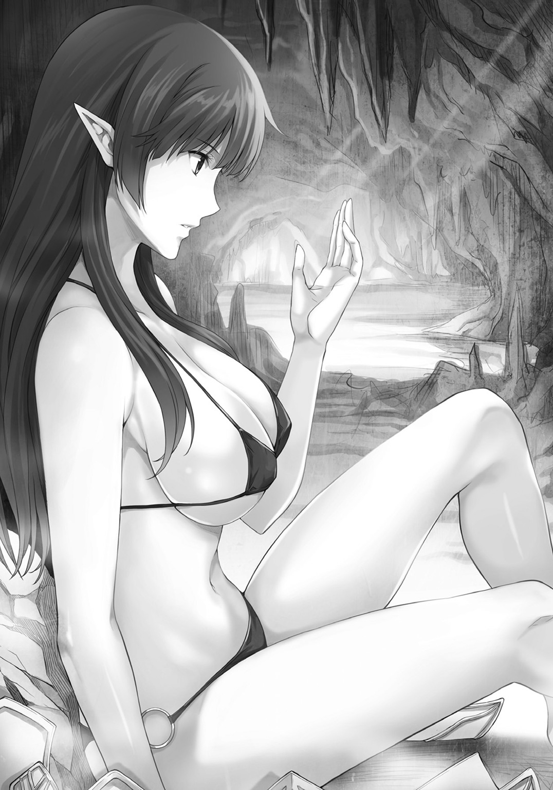
そう言って杖の先端を光らせたパーシィの背中が凍りついた。
パーシィが息を飲み込んだまま硬直しているとタグルが気づき、恥ずかしさを振り切って彼女のほうを向く。
暗視モードのバイザーシステムはパーシィの「杖」の先端の輝きに一瞬真っ白になったが、すぐに露出補正をかけたが、それ以前にタグルの直感が彼女の向いている方角に無数の気配を感じた。
何かが、いる。
ひとつ、ふたつというものではない。
数十、数百............いや、数千だ。
ちぃちぃ。
人によっては「可愛らしい」と表現し、地下深くではあまり聞きたくない鳴き声がゆっくりと広がり始めた。
闇の中、赤い光がふたつでひと組となってチカチカと点滅していく。
ネズミだ。
それが、タグルたちの行く手に千匹単位で存在していた。
「あ......あ......あ......」
ガクガクとパーシィが震えだす。
「パーシィ？」
どんな危険な状況でも皮肉な笑みを浮かべ、あるいは無表情に対峙するはずの少女が、全身を粟立たせて、明らかな恐怖の顔をぎくしゃくとタグルに向けた。
「あれ......あれ......」
「分かってる、こういう状況じゃ危険だよ......ね、ネズミは」
タグルはその瞬間の自分の言葉の最後の部分が、パーシィを決定的に追い詰めたと気づかなかった。
「ネズ............ネズ......ミ......」
瞳孔が拡がりきった眼で、パーシィは口をぱくぱくさせながらタグルの言葉を反芻しているようだったが、やがて。
「きゃああああああああああああ！」
廃駅の天井が砕けんばかりの大声を張り上げた。
○第三話：「まぼろしの人」（by 茶木みやこ）
☆
地下の廃駅となれば、食料は皆無のはずだ。
まして上では戦争の真っ最中。
近くではシルバニオンが人類改造に励んでいて、さっき砲撃があったばかり。
そんな場所で、銀色のパーツで頭部を覆い、光に反射して、ではなく自ら眼を光らせる怪しいネズミの集団ともなれば、タグルでなくても「危険な存在」と分かる。
それが数千匹、天井と言わず壁と言わず床と言わずびっしりとひしめいてた。
正確には鼠に天井に張り付いて動く能力はないから、やはりただのネズミではない。
タグルはパーシィの「杖」を構えたまま、動けなかった。
裸のパーシィは相変わらず叫び続けてるのに、彼らが動かなかったからだ。
やがて、パーシィは叫び続けた挙げ句、気を失った。
「ぱ、パーシィ？」
慌てるタグルだが、装甲服のモニタ機能は「叫びすぎて酸欠による一時気絶」と表示した。
『久しぶりだね、タグル・サタウチ』
くぐもった音声が響いた。
装甲服のセンサーが、目の前にいる鼠の群れの頭にある銀色の部品が共鳴して作った音だと判断する。
「君は............」
くぐもっていても声に聞き覚えがあった。
かつて、この声を持っていたのは、天才の頭脳と美しさを持つ少年だった。
母に恋い焦がれ、母そのものになり、母で世界を埋め尽くそうとした少年。
「プルキム・メルキオール・バニオン！」
『僕の声を覚えていてくれて嬉しいよ。この声を再現するのには苦労したからね............もう要らないと思ってアーカイブスから削除したんだ』
「なんでこんな所にいる？」
『決まっている。今ベルリン市内にいる全ての人類を我らの仲間にし、未来に帰還するための軍団を作るんだ―――君もどうだい？』
どうやら予想はだいたい当たっているらしい。
「だけど、もう君たちシルバニオンは人類の敵だ。帰っても戦争になるだけだぞ」
『構わないさ、僕らは全ての人類を一つにする崇高な使命を帯びている』
「なんのため？ スウィムウェンの脅威と戦うために？」
『違うよ。僕らの主のためにだ』
「シルバニオンに主がいるの？」
『いる。我らが女王陛下が世界をお望みなんだ』
「君のお母さんのこと？」
『ちがう............僕や、僕の母を生み出し、結びつけた偉大なるお方だ。そして君によって宇宙空間に放り出された僕たちを救ってくれた』
「彼女もシルバニオン？」
『バカを言うな。女王陛下は我らを率いるお方だ。我らと同じはずはない』
「？」
『君が首を捻るのも無理はない。女王陛下は時間と空間を超越し、運命を紡ぎだす絶対の存在だ。時空の龍の女王、アークエルフすらひれ伏す存在』
「なんで君がアークエルフの名前を知ってる？」
『当然だ。全て女王陛下が教えてくださった』
「............その、女王陛下ってパーシィの知り合いなの？」
『ある意味その通りであり、間違いでもある』
「もったいぶらないでよ」
『ともに育ったが、敵になった............不倶戴天の敵だ』
会話を続けながら、タグルは嫌な予感が背中をなで続けていると感じていた。
プルキム・メルキオール・バニオンも、シルバニオンも、望んで無駄話をする非効率さはない。
理由がある。
そしてタグルの直感は「逃げろ」と告げていた。
無数のネズミ、気絶したパーシィ、シルバニオンリーダーの無駄話。
位置の特定、足手まといで判断を鈍らせる存在、時間稼ぎ、と変換すれば、意図は明らかだ。
別働隊が迫ってきている。
「不倶戴天の敵？」
だからタグルは首を傾げ、思いっきり何も考えていない声でネズミの向こう側にいるプルキムに向けて語りかけた。
『そうだ、今は......』
だからタグルが最初にやったことは、「杖」の持つもう一つの機能を作動させることだった。
「ごめん、中断だ！」
一瞬だけ、「杖」の中にある全エネルギーを放出して機械関係をショートさせる裏技だ。
シルバニオンにはあまり効き目がなかったが、この銀色の頭を持つネズミたちには十分だったらしく、赤い目の光は次々と黄色い稲妻を放って、彼らは弾かれたように後ろへ飛ばされ、壁にたたきつけられると今度こそ動かなくなった。
「............」
ネズミで、しかも明らかに何者かの改造が施されているとはいえ、あまり気持ちのいい光景ではない。
それを横目で見ながら、タグルは気絶したパーシィを肩に担いで走った。
足の裏から嫌な感触が何度か伝わってきたが頑張って無視する。
走るだけ走り、駅の通路から封鎖された煉瓦の壁を「杖」のエアクッションで亀裂を入れ、蹴破って走る。
二駅分は走っただろうか。
どうやらこの路線自体を廃線にしたらしく、人の気配すら感じられない。
頭上での砲撃の音が遠くに聞こえる。
市民はともかく地上であれだけの激戦が繰り広げられているのに、逃げ込んでくる兵士の姿すらないということは、よほど厳重に封印したのだろうか......と思い、タグルは周囲を見回して、この路線の本来の意味を悟った。
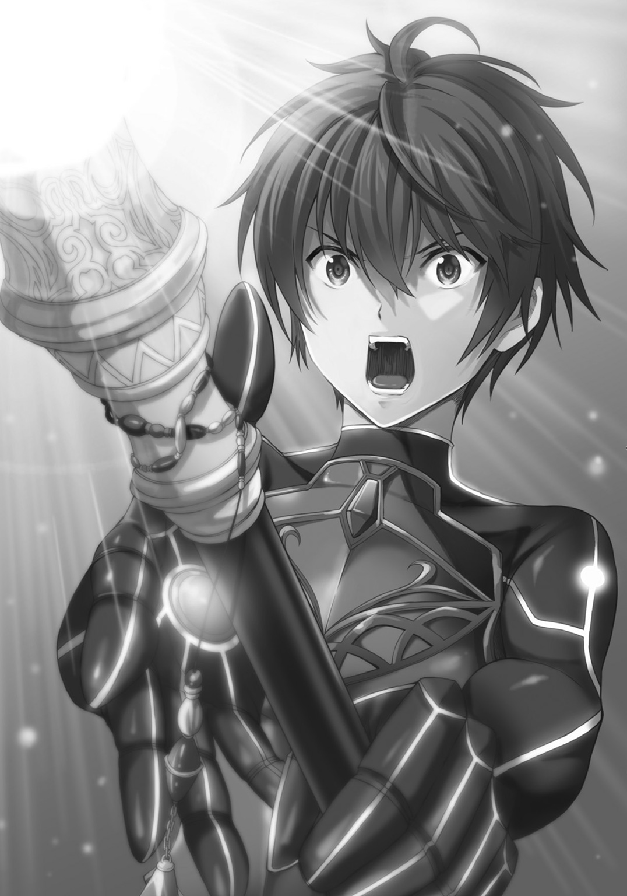
奥に、山ほどのトランクが無造作に積まれていて、銃弾の跡や、血の跡が色濃く壁に残っていた。
マーリカもパーシィも、この時期、一万五千人のベルリン市民が行方不明になったと言っていた。
彼らは、この廃線になった駅に集められ、シルバニオンの製造装置へと送り込まれたのではないか。
ひょっとしたら死体で。
そう思うと、物言わぬトランクの山が、ぞっとするような気配を放っているように思えた。
「とりあえず、もう大丈夫だよ、パーシィ」
恐怖のあまり萎縮しそうになるが、タグルは深呼吸して、なんとか平静を取り戻し、肩に担いでいたパーシィを地面に下ろした。
だが、すぐに彼女はぴったりとタグルの腕にしがみつく。
「..................！」
パーシィはぎゅっと目を閉じ、歯を食いしばってタグルにしがみついたままガタガタ震えはじめた。
「パーシィ？」
「やー、やーなの......ネズミ、齧るの、かじられるの、いやぁ......しんじゃう、しんじゃうの、いやぁ......チィチイ鳴くの、こわいっ......！」
声をかけてもぎゅっとパーシィはタグルにしがみつくばかりだ。
どこからネズミが出てくるか怖がってる。
この世の生き物への「恐れ」というより古代の邪神に怯える無辜の民が感じる「畏れ」に近い。
（............弱ったなぁ）
いつも傲岸不遜でどこか偉そうで颯爽としているパーシィと同一人物とは思えないほど、彼女は怯えきっていた。
装甲服の動体センサーが、普通のネズミの気配を感知したのはその時だ。
位置は真上............と思った瞬間、天井から鼠が何匹か落ちてきた。
とっさにタグルは「杖」を奪って「障壁」モードを作動させたが、一瞬間に合わなかった。
「きゃああああああああああああ！」
パーシィの腕にネズミがぽとぽとと天井から落下して数匹まとわりついた瞬間、彼女の悲鳴は更に三オクターブ高くなった。
タグルは慌ててそのネズミを払い落とす。
銀色の頭をしていないネズミはそのまま闇の奥へ逃げていった。
「パーシィ、パーシィ、もう終わったよ。ネズミはいなくなったよ」
「杖」の光を消して、装甲服の暗視モードだけにしたタグルは、そう言ってパーシィの頭を撫で、何度も同じ言葉を繰り返した。
やがて、パーシィがおずおずと頭を上げる。
「............ほんと？」
涙の跡が顔に見えた。
「うん、もうみんないなくなった............一緒に行こう」
「うん」
こっくんと頷く彼女の姿はまるで子供だった。
（本当にネズミが苦手なんだな）
タグルの母親はゴキブリが大の苦手で、これほどではないが、前に住んでいた古い借家で五匹まとめて出てきたときに似たような反応を示したことがある。
タグルがスリッパであっさりと叩きつぶし、ゴミ箱にティッシュで包んで棄てたあとも、丸三日、台所に入ることなく、タグルと父は外食を余儀なくされた。
それ以来、ゴキブリ退治はタグルの仕事になった............今の新居に移ってからはそういうことはまだないが。
大の大人でも苦手なものは苦手、となれば数百歳のパーシィだって同じだろう。
タグルは彼らの残骸をなるべく踏まないようにして、ガタガタと震えるパーシィを「ほら」と背中におぶって、暗闇の中を歩き始めた。
これが装甲服なしだったら重さ以前に、直にパーシィの肌に触れるのでとてもできないだろうが、今は何とか気にせずにすむ。
トランクの山の中に、パーシィが着けられる衣類があるかもしれないが、それは死体から服を引きはがすのと同じ冒瀆の匂いがしてできなかった。
タグルは歩き続ける。
さらに二駅を越えたが、どこの駅も地上に出る道は分厚いコンクリートで封じられていた。
三駅目で、タグルは少々休むことにした―――いくら装甲服の倍力効果があるとはいえ、体力は消耗する。
駅名を見ると「第二クニー駅」とあるが、ベルリン市内のどの辺なのか、調べると、本来のクニー駅より大分離れていて、ここから地上に出られたとしても、「ロスティニア」までは一〇キロの距離がある。
もう少し安全な場所に出たかったが、ここの駅というか、路線は過去の記録にはない。
水が欲しかったが、水道すら見つからなかった―――最初からこの路線の駅は、人をシルバニオン改造に送り込むためだけに敷設されていたのだろう。
それよりも、落ち着いてくるとほぼ全裸のパーシィが気になって困る。
しかも幼児退行の状態のまま、彼女は地面に下ろしてもタグルの体にしがみついてくるのだ。
（弱ったなぁ......）
こんなところを泡瀬や他の関係者に見られるのはタグルにとってはもちろん、パーシィにとってもいいはずがない。
人間関係のみならず、何よりも廃駅だから清掃なんかされていないし、頭が銀色の装置に覆われているとはいえ、ネズミがいる環境が清潔なはずもないから、衛生的にも肌の露出が多く、靴も履いていない今のパーシィは危険だと言える。
それに蒸気精霊杖の他は武器らしい武器もない。
（『ロスティニア』が呼べればいいんだけど......）
シルバニオンがうろつくなかでそれをした場合、未だ行方の知れない瀬底泡瀬やマーリカがどうなるかが分からなかったし、艦が来られるのかどうかも不明だ。
（迂闊に通信機を使ったら、他の人たちも危険に巻き込むし......）
自力で辿り着かねばならない――――何しろここは敵地だ。
ドジを踏めば何が起こるかわからない――――いや、むしろ何もしない方が危険を招きかねない、とタグルは思い直した。
相手は全人類を自分たちと同じバニーガール型サイボーグに改造しようという思想で統一された連中なのだから。
じっと息を潜めて隠れていたら、自分たち以外の全てがシルバニオンに改造されて、周囲を取り囲まれている、ということだって起こりうる。
「まずはパーシィを何とかしなくちゃ」
自分にしがみつくアークエルフにして時間旅行者、いつでもどこでも自信に満ちあふれ、傲岸不遜が服を着て歩いているかのような少女は、すっかりベッドの下の闇に怯える幼子に逆戻りしていた。
一瞬、パーシィが本当に壊れてしまったのかも、とタグルは案じたが、彼女が自称する通りの長命を誇るアークエルフなら、こういう事態はこれまでもあったはずだ、と思い直す。
とはいえ、いつ回復するか分からないのは問題だった。
つまり、この場を切り抜けるまで、タグルが判断し、彼女を守り、逃げなければならない。
タグルはしみじみとこの場で唯一変わらず頼りになるもの......蒸気精霊杖を見つめた。
「人を正気に戻す裏技モードとかは、ないよねえ」
我ながら情けない考えだが、思わずそういうお助けモードがないかと期待してしまうぐらい、状況は難しい。
「ネズミ、いやぁ......ネズミ......こわいぃ......」
パーシィの弱々しい、別人のような声が胸をえぐる。
「大丈夫だよ、パーシィ、僕が護るからね」
そう言って抱き寄せると、彼女はぎゅっとますます腕に力を込めた。
身長的にタグルの顔はパーシィの胸に埋まるが、幸か不幸か、ヘルメット越しなので恥ずかしさよりも、タグルの中で彼女への痛々しさが増すばかりだ。
「とりあえず、靴でもブーツでもいいから、どこかに落ちてないかなぁ」
パーシィを抱きかかえるということは、両手か片腕が塞がるということだ。
警戒していても、敵が来たとき対応が遅れる。
出来れば非常時以外は自分で歩いてほしい。
周辺を見回すが、荒れ果てた建築途中の駅と、そこに続く通路や階段に、都合良くそういうものは落ちていなかった。
一枚だけ「四月一八日・新ワルシャワ駅に集合、脱出列車座席番号Ｄ‐42」と印刷された令状のようなものが落ちていた。
今日が四月二〇日だから二日前になる。
おそらく、一万五千人のベルリン市民はここで列車に乗せられ、シルバニオンの製造工場に送り込まれたのだろう。
やはり、あのトランクが山のように積まれた駅が「最終積み出し」の場所だったのだろうか―――かといって戻る気にはなれないことは変わらない。
水を混ぜていないセメントの粉が積もっている場所もあるが、セメント袋の切れ端さえ落ちていなかった。
その代わり、ここは床に積もった埃にうっすらと無数の靴底と小動物の足跡が残っている。
「杖」で計測すると、ネズミやゴキブリたちが跋扈し、布系の物はあらかた食べ尽くされたか、あとは出入り口が封鎖される前に、ドイツ軍がめぼしい物を持ち出したのだろう―――不法侵入者かもしれないが。
（そういえば、内戦してる国とか、そんな感じになるんだっけか）
自衛官であるタグルの父が、以前とある東欧諸国の内戦を扱ったテレビのドキュメンタリー番組を見ていると、珍しくそんなことを言っていたのを思い出す。
『負けがこんでくると目端の利く奴はまず食料、次に建材を持ち出すんだ――――どっちも戦争が終わると大量に必要になるからな』
滅多にテレビを見ていても何も言わない父の言葉だけによく覚えている。
では最後まで目端の利く奴が残すものは何か、と問うたタグルに、父が答えたものは......。
タグルの装甲服のセンサーが、近くにある倉庫に木箱がいくつか残っていると報告してきた。
再びパーシィを抱っこして、壊れた扉の中に入ると、細長い木箱がいくつか残っていた。
蓋を倍力機能と装甲で強化された指先でこじ開けてみる。
ベルト弾倉と機関銃が繊維状の梱包材の中に収まっていた。
当時の別名を「ヒトラーの電気ノコギリ」と呼ばれたラインメタル製ＭＧ‐34機関銃。
そして、人類史上初の歩兵用対戦車兵器とも呼ばれる携帯式対戦車擲弾発射器が四本。
「もうちょっと小さい銃がいいんだけどなぁ」
ぼやいてみたが贅沢は言えない。
「この銃の使い方って分かる？」
装甲服に搭載されている簡易ＡＩに訊ねると、あっという間にマニュアルと動画が出てきた。
「じゃ、パーシィ、少しの間ここで......」
と少女を下ろそうとすると、
「やー！ ねじゅみでる、やー！ はなれうの、やー！」
と彼女は長い髪を振り乱してタグルの首っ玉にかじりついてきた。
「弱ったなぁ......」
タグルはしみじみと溜息をついた。
とはいえ、幼児退行した彼女を責めるわけにはいかない。
数秒思案して、解決策はひとつしか思いつかなかった。
「ごめんね、パーシィ。ここで五分間じっとしてくれてたら、あとでドーナツあげるから」
我ながらアホみたいだ、と思いつつ言うと、
「ドーナッツ？」
と、パーシィの眼にほんの一ミリグラムほどの理性（？）が宿った。
「ホントにドーナッツくれる？ ホント？」
人間、惚けても壊れても、残るのは食欲と性欲と睡眠欲と言うが、本当かもしれない。
「うん、そうだよ。あとでちゃんとあげるから、ちょっと立っててくれる？」
バイト先で困った行動をする三歳児や酔っ払いを相手にする時のように頼むと、パーシィは「うん！」と頷いた。
とたんに無防備極まりないふたつの丘が前を隠していた髪の毛を押しのけるように激しく揺れて、慌ててタグルは眼を逸らす。
（見てない、見てない！）
その様子が、ふとこの時代からすれば未来のＮＹで出会った少女に被さる。
（そういえば、レライウェア、元気にしてるかなぁ？）
時間旅行者同士がすれ違うのは、意図しない限りは偶然にすぎない。
再び会えるかどうかはさらに分からないという。
「ドーナッツ、ドーナッツ♪」
歌まで歌い始めた。
（しかし、ほんとにドーナッツ中心に世界が回ってるんだなぁ）
半ば呆れ、半ば感心しながらタグルは地面にパーシィを降ろし、ＭＧ‐34の状態を確認し、ベルト弾倉を携行しやすいように同梱されていた円錐状の箱形弾倉に移す。
「えーと、こうして装塡して、セレクターがここで、引き金がここか......予備の銃身はいいか......」
カチャカチャと傍目には手慣れた兵士そのものの扱いでＭＧ‐34を発射状態にし、肩紐で吊るして装備した。
パンツァーファウストは念のため二本。パーシィに「ぜったに触らないで」と言い聞かせて腰の後ろの、本来は接近戦用兵器を装着するためのフックに通し差す。
「行くよ、パーシィ！」
言って、部屋の隅っこでつまらなさそうにこっちを眺めていたパーシィを手招きする。
中身は子供だが、身長は二〇センチ高い相手を抱っこするとＭＧ‐34は使えないので、再び背負うことにする。
「やだー、おしりにあたってつめたいー！」
横に差したパンツァーファウストの安全装置兼照準器がパーシィの脚の付け根に当たるらしくゴネるが、背負い直して何とかする。
「さてあとは、どうやってここから『ロスティニア』まで戻るか、だよなあ」
「杖」で調べると地上まで一〇メートル、「ロスティニア」の入り口まで五キロ。
いつもなら楽々の距離だが、今は酷く遠い。
「しっかり摑まってるんだよ？」
「うん！」
タグルはパーシィを背負ったまま、ひょいひょいとＭＧ‐34を構えてみた。
悪くはない。
傍から見ると滑稽極まりないかもしれないが、この際文句は言えなかった。
タグルは部屋を出ると、暫く歩いて隣の駅に繫がるはずだった壁を目指した。
二キロほど遠回りになるが、そこなら、パンツァーファウストか、装甲服の拳で突き破れるかもしれない。あとは駅の階段が地上まで続いているかどうか。
（しかし、なんだって奴らはこんな時代のドイツで自分たちを量産してるんだろう）
歩きながら暫くすると、緊張が多少ほぐれてきてタグルはそんなことを考える余裕が出てきた。
（そりゃ確かに戦争で死んでる人間は山ほどいるから、再利用は楽だろうけど......）
シルバニオンがいま、ここでしていることは歴史の改編ではなく、歴史の裏面に忍びこんで、自分たちの都合のいいようにしているだけだから、時間の修正力は及ばない。
が、何故二〇一七年の地球から数十万キロ彼方の宇宙へ放り出された彼らが、今この時代にいるのか。
戻ってくるための技術は例のシルバニオン製造装置、グレート・シルバニオン・フォートレスの残骸があれば何とかなるかもしれないが、時間を越える技術はそれらとは全く異なるものである。
（タイムマシンの理論って、まだ僕らの時代には出来てないはずなのに......）
そのことは新宿でシルバニオン相手の騒動が終わった後、パーシィに何度も（最後には彼女が怒りだし、ドーナツを使ってなだめねばならぬほど）確かめてある。
それとも、今このベルリンにいるシルバニオンたちは、数世代、あるいは数万世代を経た超未来の文明を持つに至ったシルバニオンなのかもしれない。
（いや、違うなあ）
タグルは首を捻った。
（だとしたら、どうして未だにあの格好なんだ？）
マーリカの話では、ゲルマニアの中枢にある総統府の中に設置されているらしいシルバニオン製造装置からはノコギリの音と溶接の音、さらに悲鳴も聞こえてきたという。
それらの音は、間違いなくタグルが二〇一七年の新宿で聞いたものだ。
つまり、未だにシルバニオンは最初のやり方のまま進化してないことになる。
数世代を経て、彼女らが増殖する方法をより効率化しない、ということがありうるだろうか？
（どう考えても、ないよね）
タグルはますます首を捻る。
パーシィが「裏で糸を引いている奴がいる」と言ったその相手が協力したのだろうか。
だとしたら、シルバニオンは歴史改変そのものを始めるのではないか。
その方が圧倒的に彼女らの理にかなう。
何しろ第二次世界大戦時ともなれば、彼らを阻める者はこの時代にいない。
エネルギーフィールドであらゆる物理攻撃を無効化する彼女たちに勝てる存在は、それこそ異星人ぐらいだろうし、シルバニオンは異星人を恐れたりはしない。
打ち倒し、全てを均しくするのが彼女たちの目的なのだから。
故にあらゆる協定も約束も、彼らはしないし守らないだろう。
となれば、協力者ではなく――――
装甲服の警告音がタグルを我に返らせた。
近くに「敵」と判じられた存在がいる。
データを参照すると案の定シルバニオンだった。
「タグー、どうしたのじゃ？」
不意に妙な言葉遣いと単語で背中のパーシィがタグルを呼んだ。
「え？」
「パーシィ今なんって言ったの？」
「パーシィとは誰じゃ？」
顔だけ振り向いたタグルに、背中の少女がきょとんと首を傾げた。
赤ちゃん言葉ではないから。どうやら舌っ足らずながら幼児から子供レベルにまでは回復しているらしい。
「わらわの名を忘れたか？ レライウェアじゃぞ？ そなたはタグーであろう？ 声で分かるぞ？」
「――――え？」
言われた瞬間、タグルはさっき自分が感じた既視感が、単なる感傷ではなく、レライウェアの面影がパーシィの中に残っていることからくるものだと悟った。
いつもの帽子や片眼鏡を着けていないこともあって、レライウェアの顔の特徴がいくつか、パーシィの顔に重なる。
特に――――あどけない眼と、口元が。
「そんな――――馬鹿な」
思わず呟いたが、今はそれどころではない。
相手はどこから入ったのか、通路を真っ直ぐこちらへ目がけてやってくる。
数は十五。ＭＧ‐34を使った対抗手段の当てはあるが、今ここで戦闘を繰り広げれば、他のシルバニオンも呼び出しかねない。
とはいえ、分岐する通路もなければ路地もない。
「引き返すか......？」
だが引き返しても行き止まりだ。
間違いなく、今ここに向かっているシルバニオンはタグルたちを追ってきている。
だとすれば、どちらにせよ見つけられる。
「タグー、どうしたのじゃ？」
きょとんとパーシィ。
「大丈夫、お姫様。ちょっと引き返そう」
どっちにせよ背中のパーシィ（レライウェア）のことを考えれば、引き返すべきなのだ。
今ここで戦えばそのままパーシィを巻き込む。
そして踵を返そうとしたタグルの視界の隅に、光が差し込んだ。
「？」
通路の向かって右手に四角い光が差し込んでいる。
やがて四角い光は細長い長方形になり、コンクリートで補強された壁にすっぱりとしたエッジの穴を開けた。
「ぱ、パーシィ？ こっちも？」
そこに立っていたのは、刃のないチェインソーのような機械を持って立っているパーシィだった。
こちらにはちゃんとコートも帽子も片眼鏡もある。
そして、優しく微笑んでいた。
「いったい......これ」
どういうこと、とタグルが言葉を言い終える前に、
「話は後。タグル、私を連れて一緒に来て。分子ジャッキで無理矢理道を作ったけど、かなりの距離を使ったから長くは持たないの」
「タグー、あの綺麗な女性は何者じゃ？ お前の恋人か？」
普段なら「冗談は後にしてよ」とツッコミのひとつも入れたくなる発言だが、今は状況が状況だから仕方がない。
「まあ、そんなところよ............はい、レライウェア姫、ドーナッツ」
微笑むと、パーシィは紙袋いっぱいに湯気を立てているドーナツを幼児退行したパーシィに手渡した。
「おお、なんという素晴らしさ！」
ＮＹの時と、そしていつもと同じようにドーナッツを前にしたときの満面の笑みで、パーシィはパーシィからドーナッツを受け取った。
☆
瀬底泡瀬は土の中で目覚めた。
装甲服の頭部部分は機能を失い、押し寄せる土砂の中に失われ、彼女が再び首に損傷を負わなかったのは奇跡と言ってもいい。
ついでに頭を両手で庇うようにして身体を丸めていたお蔭で、呼吸するスペースはあった。
彼女は無言のまま、少しずつ腕を動かして、空間を広げていった。装甲服の倍力機能は健在だったが、それでも数十トンの土の中で自在に動くには足りない。
だが、巧妙に彼女は身体を動かし、装甲服の拳で土を突き固めるようにしてゆっくりと地上へと昇っていった。
やがて、拳が何もない空間に突き出される。
空気が流れ込んできた。
泡瀬はそのまま泥だらけになって地上に這い出る。
「............」
暫く、荒い息をつきながら、彼女は周囲を見回した。
眼が一瞬、金色に光ったが、それを見とがめる者は半径数キロ以内にはいなかった。
やがて、彼女はとある気配を「見つけ」た。
☆
「――――ますます分からないよ、シルバニオンを従わせる奴って誰？」
白く、真っ直ぐな四角い通路を駆け抜け、出た先には戦車の部品が無造作に転がる整備場らしい場所だった。
ベルリン防衛の為に工場から真っ赤な錆止め塗装がされた程度のティーガー戦車のものが多いが、タグルには分からない。
夜が忍び寄り、薄暗くなったその建物の中で、もうひとりのパーシィは「暫く待って」と片手をあげて、息を整えた。
「スウィムウェンを従わせる奴よりは想像しやすい相手よ――――そっちの方は今回の件に関係ないけど」
「どういうこと？」
「その前に」
もうひとりのパーシィは立ち上がると、どこからともなく取り出した「杖」のひとふりで、空中に自分の着用しているのと同じ衣装を取り出した。
「どうやったの？」
「分子圧縮で杖に予備を入れるようにしてるの」
「じゃあ、この杖にも......」
「それには入ってないわ。こっちの私はあなたに裸を見られることが滅多にないと思ってるから」
「？」
さらに杖をひとふりすると、衣装はまるで意思ある生き物のようにくるりとタグルに背負われていたほうのパーシィの周りを回り、縫い目がばらけたと思った瞬間、パーシィの身体を包んでいた。
「今のは布から服を作る技の応用」
「すごいぞタグー、彼女はまるで母上のような霊子力を使う！」
「う、うん、まあ......凄いよね、うん」
すごいすごいを繰り返しながら、コートの裾を翻したりしてくるくる回るパーシィに安堵しながら、タグルは「で、どういうことか説明して」ともうひとりのパーシィに促した。
「そうね......まず、プルキム・メルキオール・バニオンを覚えてる？」
「うん。さっき話をしたよ――――シルバニオンの元を作って、自分もシルバニオンになった少年科学者」
「彼は通常の時間軸――――歴史書には書かれなかった存在のはずだったの」
「スウィムウェンのせいでこうなったんでしょ？」
「始まりは、ね............彼は本来なら、スウィムウェンに利用され、最後は殺されて歴史の表には出てこないはずの存在だったの。でも今は違う。
Ｐ・Ｍ・バニオンとしてウサマ・ビン・ラディンやヒトラーと並ぶような存在として記録されるようになるわ、人類に対しての大規模テロの主導者としてね。
そうなるように仕向けた人物が今回の一連の事件の本当の黒幕。そして」
と一旦、もうひとりのパーシィは言葉を切って、なおも自分の衣装を面白がってあれこれ摘んだり引っ張ったりしているパーシィを眺めた。
酷く疲れた、老婆のような眼だとタグルは思うが、彼女はすぐに快活な笑顔を一瞬だけ浮かべ、タグルに向き直った。
「今回の事件の元凶はすべて私の妹――――リーファが引き起こしたことなの」
「リーファ？」
その名前をタグルと同時に、幼児退行したほうのパーシィが口にした。
「何故、リーファを知って............」
言葉を言い終えることなく、くらっとめまいを起こしたように倒れるパーシィを、もうひとりのパーシィが抱き留めた。
「パーシィ！」
「大丈夫よ」
微笑みながらもうひとりのパーシィは、気絶したパーシィを地面に転がったままの戦車の砲塔の上にそっと寝かせた。
「いつまでも幼児退行した状態ではこまるから、ドーナッツに少しナノマシンを混ぜたのよ。目覚める頃には元の私に戻ってるわ」
「そんな――――」
その無茶な治療行為に怒るべきか、それとも感謝するべきかタグルは迷ったが、少なくとも礼を言う気にはなれなかった。
このパーシィは果たして何者なのか、さっぱり分からない故の警戒心もあるが、それ以前に彼女は当然のことを淡々と行っているだけ、という気もするからだ。
「............わかった、話を続けよう」
ともあれ、話を聞かないと何も分からない、これだけは事実。
「そのパーシィの妹が」
「私の、よ。正確には」
ともうひとりのパーシィはどこか冷たい声で訂正した。
「悪魔のところで見たでしょう？ 次元龍を狩るアークエルフの一族の戦いを、その悲惨な顚末を」
タグルは頷いた。
途中で打ち切られたが、あの悪魔は「それはタグルが見知っておくべき事実」だと言っていた。
「あれが私の――――レライウェアがＮＹであなたと別れて五〇〇年後、今から一〇〇年以上前の過去」
「次元龍を狩っていた時代から、壊滅するところまで随分『飛ばした』感じがしたけど......どうして？ それに、なんで次元龍を狩っていたの？」
「その間は、たまに次元龍を狩る以外は穏やかな日々が続いていたからよ。次元龍は時間と空間が流れていくことで生まれる矛盾と可能性の残滓が固まって生まれるもの。だから時が続く限り永遠に生まれ、永遠に私たちは狩りをし、時間と空間の平和を守ってきた」
次元龍によってアークエルフは文明を発展させ、維持し、アークエルフによって次元龍の脅威から時間と空間は守られていたのだ......あの壊滅の日までは。
「悲劇の種は七〇〇年前に蒔かれたの」
もうひとりのパーシィは語る。
☆
アークエルフの跡継ぎとして、ふたりの王女が生まれた。私と、妹のリーファ。
私は側室、リーファは正妃の娘として。
アークエルフは必ず第二子が王位を継いで内政を行い、第一子は戦士の長として前線に立って次元龍を狩り、内政には関わらない。
その頃の私は血気盛んで、冒険に憧れていたからそうなることは望みだった。
でも、妹は違った。
彼女は生まれつき病弱で、あなたたちヒト族で言えば十五歳、私たちにとっては四〇〇歳を過ぎるあたりから、ベッドで寝ている時間の方が増え始めた。
どうしてなのかは、分からない。
ありとあらゆる検査を行ったし、あらゆる時空から医者を呼んでみたけど、病名はおろか原因さえ突き止められなかった。
やがて、その名前が分かったとき私たちは絶望した。
「次元龍の呪い」と呼ばれる運命量子に関わる病気だったの。
寿命遺伝子ではなく、彼女の運命そのものを構成する量子要素が全て、アークエルフが成人と認められる八〇〇歳になる前に命が尽きるようにセッティングされていたわ。
時間と空間を永遠に駆け巡る私たちアークエルフにも、そのための代償が起こり、それは個人に、ではなく子孫の誰かにランダムで発生する。
逃れようのない死の病。
徐々に体力が衰えていくだけならともかく、それと同時に激痛が妹を襲うようになった。
量子レベルでの「設定」がそうなっている以上、あらゆる遺伝子治療も薬もそれを止めることは出来なかった。
全ての感覚神経を遮断したり、記憶と思考、意識だけをクローニングした別の身体に移そうともしたけど、どれも失敗だった。
量子レベルで操作された運命は、周囲にも及んでいたのよ。
無駄だと知りながら、私はそれでも時空を駆け巡り、次元龍を狩りながら、あちこちで妹の苦痛を止められそうな物を集めてきた。
――――結局、どれも無駄だったのだけど。
妹は何度も私に「殺してほしい」と言ったわ。
『骨も、神経も、五感も全てが焼かれ、引き裂かれ氷を詰め込まれるような痛みがひっきりなしに襲ってくる』と。
ベッドの上で常に激痛でのたうつ日々が続けば誰でもそう思う。
そして、私も何度かそうしてやったほうがいいと思ったけど............できなかった。
今は後悔してる。
私の母上はすでに妹が発病する前に亡くなっていて、残ったリーファの母上......正妃様と私は互いに励まし合いながら妹の看病をした。
父上も忙しい政務の間を縫って見舞いに来たわ。
でも、いつの間にか、私は父上である王の顔の中に秘密の匂いをかぎ取ってしまった。
父上は妹を、リーファを見舞った後、ひとり執務室で何かを思い詰めた表情で、同じ本の、同じページをじっと見つめていたの。
その時、量子情報化されていない本を、私は自分の国の中で初めて見たの。
あり得ない話だった。アークエルフの社会において機会と情報は常に平等に与えられるもので、どんな無益と思える情報でも秘匿することは罪だったから。
そして、アークエルフ最強の戦艦が就航した――――あなたもいたでしょう？ 「ヴァル・ロスティニア」............ロスティニアの剣、と呼ばれる艦――――今私が乗っている「ロスティニア」はあの艦のコア部分よ。
そしてもう一隻「ドラグナード」をコアにした拠点防衛艦「ガド・ロスティニア」――――ロスティニアの栄光、と名付けられた艦。こちらは国土を突発的な次元龍の襲来から守るために。
父が、じっと見ていたあの本を「ヴァル・ロスティニア」の艦長室に収めていると知ったのは処女航海に出たその日のうちだったわ。
そして私は知った。
その本が本当の歴史書だと。
妹の――――リーファの、運命に作用する病は病じゃなかった。
契約だったのよ。
「次元龍の呪い」は、次元龍が永遠に生まれては滅ぼされ、アークエルフが永遠にそれを狩るために私たちの祖先が作り上げたシステムの一部、安全装置だったの。
無数の時間と空間が存在し、流れていくことで生まれる様々な可能性の残滓を効率的に結晶化し、利用するために生み出されたのが「次元龍」という言葉と言霊、さらに言霊が力を持つように作られた巨大な霊子術式............でもそれは自然の摂理ではない。
だから、かならず矛盾が生じ、それがねじれを生む。
ねじれはシステムを破綻させる............だからねじれの解消が必要だった。
「次元龍の呪い」は、次元龍とそれを退治するアークエルフの伝説と生活を維持するための矛盾を解消するためのリセットボタンであり、緩衝装置。
王族の中で十七世代ごとにひとり、あらゆる運命を「死」に向けられた固体を生み出し、あり得ない形の死で生まれる消滅のエネルギーで、次元龍という、本来効率化できないはずの結晶存在を効率化することで生じる運命矛盾を調整し、利用し続ける............リーファは、種族のための生け贄だった。
そして、本にはもうひとつの事実が書かれていた。
私たちの一族は時間と空間の平和を守る正義の種族ではなく、何処の世界に属することもできないまま、永遠にその狭間を生き続けることを運命づけられた、はぐれ者の集団だったのよ。
それが、数百万年近い時間と、次元龍という悪役を使ったお芝居を続けることで、高貴なるアークエルフを名乗るようになった。
私が処女航海を中止する命令を下したのは、本を読み終えたその日の朝だった。
でも、遅かった。
父の本を私以外に読んだ者がもうひとりいたの......それも、私よりも数百年早く、私たちがまだ子供だった頃に。
リーファよ。
彼女は全てを、すでに知っていた。
そして、自分を犠牲にして生き延びようとする世界に、永遠に繰り返されるはずの三文芝居に、終止符を打ったのよ。
正当な復讐だったかもしれない、でも払われた犠牲は、決して許されるものではなかった
――――なぜなら、
☆
「なぜなら、それはロスティニアという国に住み暮らす、七億八千四百五十五万五千六百八十九人もの、国民の、王族の、全ての命だったからだ」
その言葉は、眠っていたはずのタグルと一緒に来たパーシィの口からもたらされた。
身体を起こした彼女の目に、もう幼女のあどけなさはない。
タグルは思い出す。
赤い荒野。互いに剣を振るって殺し合う金と銀の装甲服を纏ったパーシィともうひとり、金髪の美少女の姿を。
その時のパーシィも同じ数字を口にした。
『七億八千四百五十五万五千六百八十九人だ！ 分かるか？ お前が次元龍と取引して、奪った命の数だ！』
と。
「その通りよ、私」
戦車の車体にもたれかかり、疲れ切った表情でもうひとりのパーシィが頷いた。
「次元龍と、私の妹は幼いときに取引をしたの。次元龍は己を狩る運命と権利を一方的に持っているアークエルフたち一族の命を、リーファを通じて殆ど全てを奪い、引き替えに彼女にアークエルフが本来持つ以上の寿命............いえ永遠の命と、莫大な能力を」
「それだけじゃない、奴らは永遠にリーファの優しい心を奪っていった」
「殆ど全て、ってことは最後に見た時、生き残った一五〇〇かの乗員は生き残ったの？」
「いや」「いいえ」
ふたりのパーシィは同時に首を横に振った。
「生き残ったアークエルフはリーファと、その愚かな姉であるこの私だけ。それ以外では唯一、アークエルフではなく、不死身の身体を持つレッド・リーコンだけ」
「――――」
ようやくタグルは以前、レッド・リーコンが「我らが姫様のために！」というかけ声をパーシィが苦手にしていると言った理由を理解した。
あれいが「お姉様」と呼ぼうとしたとき止めた理由も。
☆
「............どうやら、なんとか凌げたみたいね」
自分用の銀の「杖」のスイッチを切りながら、マーリカは溜息をついた。
こちらもパーシィの「杖」と同じ機能があり、彼女は「障壁」の機能を使っていた。
空気の壁でカプセルを作り、自分の半径数メートルを覆うのである。
砲撃の数瞬前に、本能が彼女に「杖」を使わせた。
そして常に直感と本能は正しく、彼女は命拾いをした......戦場で生き残るなら当然のことだが、何度くぐり抜けても「当然」だとは思えない。
自分の死ぬ日時が決まっていて、そこまで生きているはずだと分かっていても、だ。
物事は終わりの辻褄が合えば過程はどうにでもなることがあるのを、マーリカはよく知っていた。
現に彼女が今祖国と呼び、彼女が亡くなる前に崩壊するソヴィエト連邦自体が、そういう産物なのだから。
「さて......」
落下する土砂の中、「エアクッション」も併用してダメージを受けることは避けられたが、その間彼女を包む球状の障壁が滝のような土砂の中を上に行ったのか横に行ったのか、それとも彼女自身の錯覚で本当は真下も真下、奈落の底に落っこちているのかはまだ分からない。
「酸素は土の中のを取り出せばいいとして......問題はここがどれくらい深いか、ね」
自分用の「杖」を光らせて、マーリカは自分の現在位置を特定した。
「何とか上には行けたみたい」
障壁を展開しながら、一瞬解除。周囲の土砂が彼女を押しつぶす前に一定方向に向かって空気を圧縮させ、解放する。
超特大の空気大砲そのものとなって、地上へ向かって彼女は飛び出した。
上手い具合に爪先から着地する。
「さて、これからどうしたモノかしらね」
溜息混じりに腰に手を当てて周囲を見回し、マーリカは溜息をついた。
幸い、外はすでに暗い、ベルリンに夜が来ていた。
すぐに瓦礫の陰に隠れ、彼女はスタール・リボルバーを握り直した。
気配を感じて振り向くと、銃口の先には装甲服を着けた瀬底泡瀬の姿があった。
「あなた、アワセって言ったっけ......タグル君やパーシィは？」
「知らないわ。必死でここまで這い出してきたの」
「装甲服はいいわね」
ホッと溜息をついて座ると、マーリカはコートの内側からタバコを取り出して、一本口にくわえた。
「大丈夫、火は点けないわよ......夜にタバコなんて、狙撃兵に狙ってくれと頼んでるようなモンだしね」
笑いながら、マーリカは崩れかけた建物の壁に背を預けた。
「あなたも座った方がいいわ。この時代、装甲服は中世の騎士が蘇ってきたみたいによく目立つし、みんな気が立ってるから見つかったら集中砲火よ」
「............ええ」
泡瀬は言われるがままにその側に腰を下ろす。
「で、あなたはあのタグル君の恋人？」
「......どうして、そういうことを聞くの？」
泡瀬は、無表情に問い返した。
「パーシィは恋愛してる顔じゃないし、彼があなたのことを気遣うのは、親密な関係だから、そしてあなたも彼も十代だ、となればそう推測するのは当然でしょ？」
「ふたりは、大丈夫かしら？」
泡瀬は無表情に話題を変えた。
「パーシィが一緒ならタグル君は大丈夫......というより、彼、さっきの砲撃の時、私より早く動いてたけど、『戦士の魂』でも持ってるの？」
「......ええ」
「なるほどね」
納得がいった、とマーリカは頷いた。
「それならわかるわ」
☆
「生き残った一五〇〇人はその後の戦闘で皆死んだ。私は生まれて初めて人を憎んだ。妹を許せなかった」
目覚めたばかりのパーシィはふらふらと立ち上がりながら、血を吐き出すような声で続ける。
「妹は私を愛してくれたから生かしてくれたんだろう......だが、そんなことはなんの免罪符にもならない。何故人を殺してはいけないか？ それは人がひとりでは生きていけないからだ。自分が自分である為には他者が必要で、社会が必要だからだ」
「非常事態においての、生き残る為の殺人は許されるという『カルネアデスの板』という考えもあるけれど......」
「知ってる、緊急避難のための殺人、だよね」
古代ギリシャの哲学者、カルネアデスが作った問題のことである。
難破した船があり、その小さな破片に辛うじて摑まって生き延びていた船員が、ふたり摑まれば沈んでしまうであろうそれに、摑まろうとした別の船員を殺した場合どうなるか。
多くの議論を重ねた結果、それは無罪であるとされたことから、「緊急避難」の概念としてよく引用される言葉だ。
タグルもそれは知っている。
「でも、七億もの命を奪うことは違うことだ。彼らは次元龍と我々の先祖の罪を知らなかった。知っていたのは父である王とこの私だ――――殺すなら、私と父上だけにしておけば良かったのだ、それならば、私は喜んで死んだ。実際処女航海を中止して戻ると決断したとき、私はその覚悟だった」
「でも、あの子は私たち以外の命を奪った。それも守りの船として作られた『ガド・ロスティニア』で.........リーファは表向きまだ廃位されていなかったから、彼女の命令を聞くようにシステムは調整されていた。式典で船に乗り込み、あとは乗っ取って全てを焼き払った............あの緑溢れるロスティニアが私が戻ったときは真っ赤な荒野に変わり果てていたわ――――あらゆる命を瞬時に奪う、ガンマバースト砲の一斉砲撃で、時空を彷徨うアークエルフの人工惑星に住む、七億八千四百五十五万五千六百八十九人の命は失われていた。その中には父上も、リーファの実の母上も含まれる。もちろん、友も、市民も、王族も、商人も、農民も、あらゆる人々が――――そして一五〇〇人の『ロスティニア』の乗員は、その後私が殺したの――――怒りに我を忘れて、復讐に固執してしまった私の命令で戦い、命を落とした」
「............」
タグルと共に来ていたパーシィは黙り込んだ。
「それでも私は戦った。炎の魔女になった。コアシップの『ドラグナード』に乗って逃げのびたあの子を追ってあらゆる時空を駆け抜け、あの子に味方するものを、事情を知るもの、知らぬものを問わず――――全て――――」
「殺した」
タグルと共に来たパーシィが血を吐くように続けた。
「殺し、殺して、リーファを追い詰めたんだ、私は。再び故郷のロスティニアへ、な。そして、一騎打ちで倒した――――いや、言葉を飾るのは良くない、殺したんだ」
「そう、そしてレライウェアの名前を棄て、幸せだった頃の記憶の概要を残して全て封印して、時の調停者になった――――そうすることが、自分の償いだと定めて」
タグルのパーシィはもうひとりのパーシィを睨みつけた。
「ひとつ聞こう。間違いなく私は止めを刺した。だというのに何故彼女の影がちらつく？ そして同じ時間の中、この近さで、同一存在は会話すらできない。どちらか先に着いたほうが眠り続け、先に着いた方が去るまで何もできないか、最初からこの時間にたどり着くことを許されないはずだ――――何故、君と私は会話ができる？」
パーシィは自分の「杖」を取り出すと、もうひとりの自分へとかざし、分析光を輝かせた。
「――――不可思議なことに君は私そっくりに作られたアンドロイドや他の時間軸から投影された立体映像でもない。君は生身でかつ寸分違わぬ私だ。なぜだ？」
パーシィは不審な目をもうひとりの自分へ向けた。
「気になることはもう一つある。私はそんな昏い眼をしてない。そんな優しい言葉遣いはしない。私は妹を手にかけた。罪の色は常にあるが、君の目はそれだけじゃない罪の色がある」
「そうかもね」
もうひとりのパーシィは少し拗ねたような顔になった。
「でも今のあなたの目も、私とよく似てるわよ――――思い出したでしょう？ 自分が封印した記憶を。妹を――――リーファをその手にかけた後、前に進むために、贖罪のために、故郷で、次元龍を狩るための時空船団で過ごした日々、そこで出会った人々の記憶、皆がまだ生きていた頃の記憶。子供の頃、リーファにお話を作ってあげたときの記憶、次のお話を、とせがまれて、自分が体験した話をアレンジしようと思って、ロスティニアの城を抜けだして、ニューヨークという聞き慣れない街で冒険した記憶――――そして――――」
「『兎のタグー』」
ふたりの声は重なった。
「君は、未来の私なのか？ そして、私たちに何をさせたいんだ、何が正しい選択だと言いたいんだ？」
「未来でもあり、過去でもあるわ......でも、間違いなく言えることがある」
「？」
「今のあなたは幸せなのよ」
「............どういう意味だ」
「文字通りの意味。あなたの隣にはタグル......君がいる。愛しい人が」
「な......」
パーシィの顔が真っ赤に染まった。
「な、何を誤解してる！ わわわ私はそんな感情など抱いてない！ 第一タグルはアワセとラブラブだ、キスオブファイヤーなんだぞ！」
「いや、き、キスまでは......っていうか手だってまだ繫いでないよ！」
「そ、そんなことはどうでもいい！ とにかく、私とタグルに相棒以上の関係はない、ないったらない！」
「でも、彼は............『兎のタグー』なのよ？」
「そそそそれは、それは確かにそうだ、『兎のタグー』は私の初恋だ！」
「え!?」
驚いてタグルはパーシィを見た。
「ご、ごごごご誤解するなタグル！ 六〇〇年近く昔のことだ！ 子供時代のことだ！ ふ、普通だろう？ 見も知らぬ土地で命を救ってくれた相手に子供が憧れに近い恋心を抱くのは！ あの時、君は私にとってヒーローだったんだ！」
「あ、いやあの......」
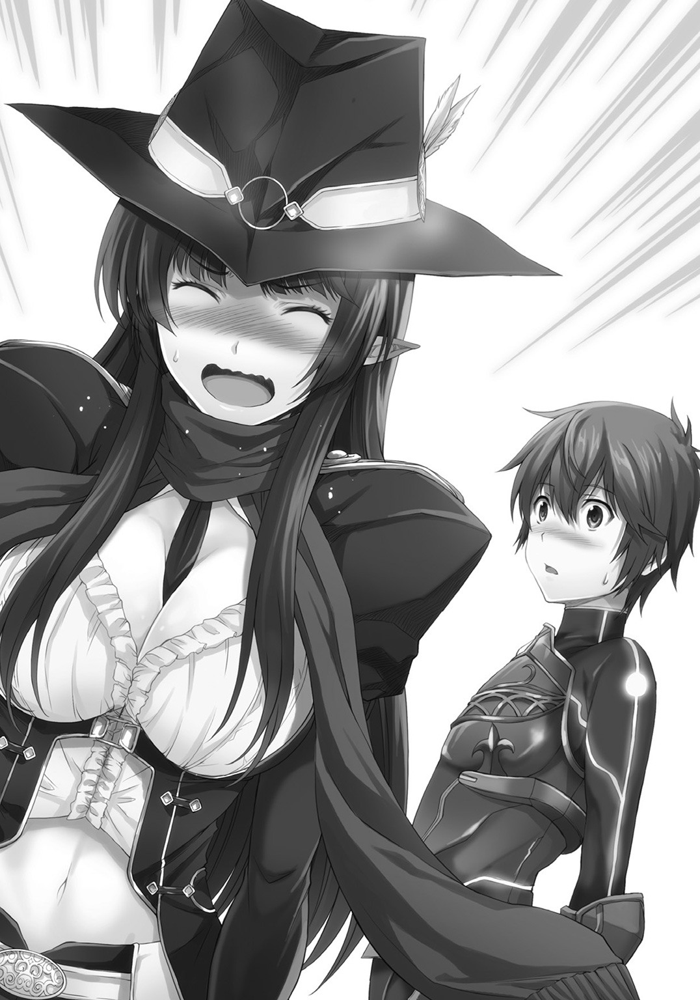
戸惑ってしどろもどろになるタグルをよそに、パーシィは〝きっと〟もうひとりの自分を睨みつけた。
「いったい君は誰だ!?」
「見て、調べたでしょ？ その通りの存在よ」
「答えになってない！ 私に隠している情報があるだろう！」
「ええ、でも教えてあげない」
もうひとりのパーシィはそう言って笑った。
酷く寂しそうな笑みだった。
「あなたが羨ましいから」
☆
「............さて、一時間経ったけど、敵にも味方にも動きはなし、ね」
腕時計を見ず、マーリカはくわえていた火のついていないタバコを箱に戻して立ち上がった。
「よく分かるわね」
「よく出来た義眼でね。暗闇でも見えるし、『杖』と連動して色々分かるし、時計にもなる............この時代のソヴィエト軍の腕時計は粗悪品が多くてね、これも停まってるのよ」
「どうするの？」
「引き上げよ」
素っ気なくマーリカは言った。
「ここは私が生きている時代――――だからあとはパーシィとあなたたちに任せて、私の人生に戻るの―――悪く思わないでね。私には私の部隊の仲間たちを生き残らせる義務があるから」
「そう」
泡瀬はマーリカに見えないようにさりげなく背中に回していた装甲服の右手に仕込まれた塹壕作業用の分厚い身幅のナイフを滑り出すべく思考命令を下していた。
彼女の思考で「出ろ」と言った瞬間、掌の内側に装備されていたナイフが飛び出す。
狙うのはもこもこした外套に覆われていない口の中。
前歯を砕き、そのまま奥に突き刺せば頸椎を切断できる。
その計画を立てながら、泡瀬はタグルと一緒にいるときと同じく、穏やかな笑みを浮かべていた。
「お別れね」
立ち上がり、さりげなく握手のために手を差し出す。
次の瞬間、雷撃が泡瀬の身体を覆った。
廃墟の壁に泡瀬の装甲服のシルエットが一瞬浮かび、消える。
装甲服は機能停止し、どう、と横倒しになった泡瀬を見下ろし、マーリカは冷たく、
「パーシィと別れることにしたのは、私がこういう直感にしたがって行動することに躊躇がない、というのもあるのよね............よく怒られたわ『君はすぐに人を撃ちたがる』って」
手に握られたスタール・リボルバー型雷撃銃の銃口から、余剰エネルギーの青白い、小さな火花と電荷イオンの煙が立ち上るのをそのままに油断なく泡瀬に向ける。
「もうちょっと疲れていたら、あなたの殺意に気づかなかったかもね............でも、笑顔はやり過ぎ、あなたのようなプロが、恋人と一緒にいるときの猫被りの笑顔をしては駄目よ」
そして、
「さて、さっきまで普通だったあなたがどうして私の命を狙うようになったのか、あなたが何になり果てたか、あるいは何かの生物に寄生されでもしたのか、話をじっくり聞きたいところだけど」
言ったマーリカの足下に銃弾が炸裂した。
奇しくもそれはタグルが地下で見つけたのと同じＭＧ‐34の布を引き裂くような銃声だった。
すでに彼女の身は寄りかかっていた壁の向こう側に消えている。
「今回はやめておくわ......ただ、パーシィたちにこれ以上何かしたら、私が許さない............それと、しばらく死んだふりしてなさい。動いたら殺されるわよ。その装甲服でも、ＫＶ戦車の主砲を三〇発は防げないでしょ？」
声の後半はかなり遠くになり、銃弾の炸裂する音と銃声にかき消されていたが、泡瀬の耳には届いていた。
銃撃はマーリカを追いかけていき、駆け抜けていくドイツの兵士たちは足下で転がり身動きすらしない泡瀬を一顧だにしなかった。
やがて人の気配も銃声も夜の闇に消えて、聞こえなくなった頃、泡瀬の安全を維持できないと判断した装甲服が最後の機能で自動的に装甲部分を展開し、彼女を解放した。
無言で泡瀬は立ち上がり、機械のような滑らかな動きで革ツナギ姿の自分の身体を触り、動かし、負傷の有無を確認した。
そして、不意に目の前の地面が凹むと、中からナチスの腕章を巻いたシルバニオンが現れた。
ひょいひょい、という感じで地下深くからやってきたらしいシルバニオンは地面に出て、身体についた泥を払おうともせずに泡瀬に対して片膝をつき、頭を垂れた。
「お迎えにあがりました。セソコ・アワセ様。我らが女王陛下がお待ちかねです」
「今はまだ駄目」
冷たい眼で泡瀬は言った。
「リーファの望むことは知っている――――銃を、この時代の武器を頂戴。そして光学迷彩装置も――――手ぶらでは帰らないことは彼女も知っているはずよ」
言葉を一旦切り、泡瀬は優しく眼を細めて言った。
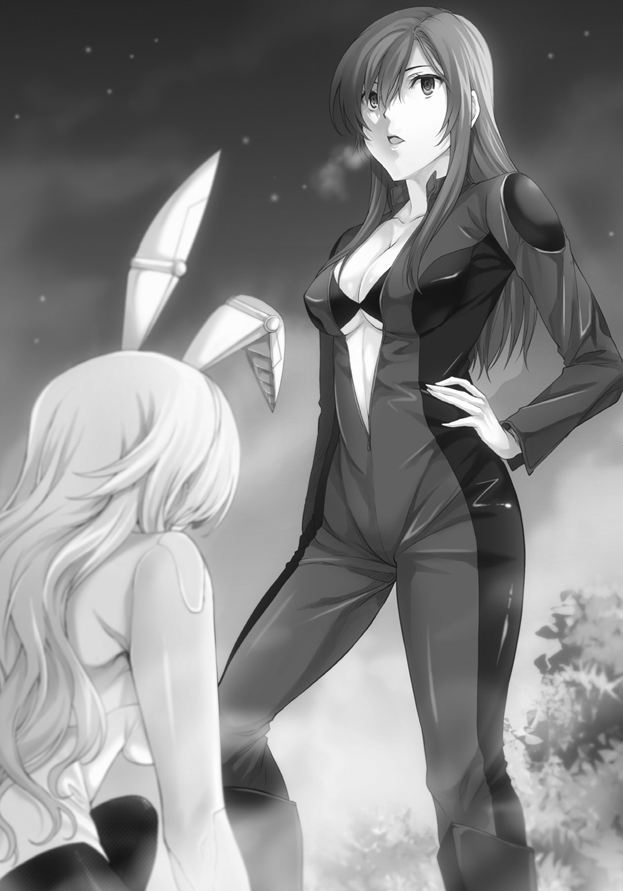
「だって、私の愛しい人の為だもの」
その言葉を言い終えた瞬間、彼女の顔に苦痛の色が見えたがそれは本人が認める前に消えてしまった。
☆
もうひとりのパーシィの浮かべた表情は、酷く寂しそうな笑みだった。
「あなたが羨ましいから」
「私め......」
イライラした顔で前に出ようとするパーシィを手で制して、タグルは訊ねる。
「で、僕と一緒にいるこのパーシィＡと、助けに来てくれた君、パーシィＢはどういう関係なの？ 僕に分かるように説明して」
「タグル、その分け方はちょっとひどくないか？」
口を尖らせるパーシィの前で、
「とりあえず、これだけは言えるわ、タグル君」
もうひとりのパーシィはタグルを見つめて言った。
「彼女と同じで、私の本当の名前はレライウェア。ロスティニアの女王にして戦士の長、炎の魔女、怒りの騎士――――そして、犯した罪の重さに耐えきれなくなって、過去を消してイコライザーのパスウィダーになった臆病者」
そしてね、と付け加える。
「今度の事件はすべて、その臆病が招き寄せたことなのよ............そこだけが彼女とは違う」
「もったいぶるな！」
とうとうパーシィが声を荒らげた。
「君も私なら、私がもったいぶったことが大嫌いだということは分かってるだろう！」
「ええ」
にっこりともうひとりのパーシィは微笑んだ。
「繰り返しになるけど、でも、教えてあげない」
「こら私！」
「さて、どうするの？ シルバニオンは放っておけばベルリン市内にいる全ての人間を自分たちに変えてしまうわよ？」
「ぬ............」
「私の正体が誰か、とか何を最終的に行わせたいか、よりも協力し合って『今』何が出来るか、やるべきか、が最優先事項でしょう？ ヒントも資料も出した。あとはこの一件が解決してからあなたが考えるべき――――違う？」
む、とパーシィが苦いものを飲み込んだ顔になった。
「で、君は今なにをするべきだと思う？」
「決まってるわ。ベルリン市民を助けるのよ―――シルバニオンの施設が稼動し始めたのは今から四八時間前。絶対時間計は今行われていることが歴史的事実にはなってない、と示してる」
「あ、そういえば確かに地下鉄で拾った紙にも昨日の日付が入ってた」
パーシィがまだ幼児退行をしていた時に、トランクが山積みになっていた駅に落ちていた令状を思い出してタグルが言う。
「よかろう」
パーシィは頷いた。
「では私、君の『ロスティニア』を貸せ。たったひとりでここに来たわけではあるまい？」
「あら、あなたのじゃないの？」
「勿体ない、船のバニシングモーターのコイルが減る！ ............というより、君を私の『ロスティニア』に入れたくない」
「ふぅん............いいわよ」
「もうちょっと仲良くしなよ、自分同士なんでしょ？」
自分同士の掛け合いというか、喧嘩寸前のやりとりという奇妙なものを見せられて、タグルはため息をついた。
○第四話：「悲しき願い」（by 尾藤イサオ）
☆
「それにしてもどうやって近づいた？ この辺は時間流の動きがフラクタルで、『ロスティニア』でも狙った場所に到着出来なかったのに」
何とか話がまとまって、ふたりのパーシィは並んで駅の通路を歩いていく。
「重力子アンカーの二番と三番が壊れたままではね」
「直したのか!?」
パーシィは驚いた表情になった。
「〈をやかた〉のご主人様たちが親切な人たちでね、他の不具合も全部直してくれたわ」「時間流量子スプリッタも？ Ｄ量子コントローラーや、高圧縮光子原器や、ナノポールチャージャーも？」
「ええ、全部新品同様」
「あの............パーシィ、ひょっとして僕らの乗ってる『ロスティニア』って結構ボロ......」
後ろを歩いていたタグルが言いかけるのを、
「中古でもボロでもない！ 歴史のある素晴らしい艦だ！ 部品が足りなくて修理がおぼつかないだけで、それでも性能は宇宙一、数千の並行世界で一番だ！」
振り向いてパーシィは一喝したが、どう見てもその顔は金持ちの子供に玩具を自慢された貧しい家の子供の顔だった。
「............」
「あと、レディストエルディレイターと、マディクトディスチャージャー、それと......ドーナッツメーカーも」
「なに！」
パーシィが足を止めてもうひとりのパーシィを愕然と見つめた。
「そんな馬鹿な！」
ふふん、とこちらもまた玩具を自慢する金持ちの子供の顔で、もうひとりのパーシィが胸を張る。
「まさか、『ロスティニア』をそこまで修理できる文明があるなんて......」
「でも、私ひとりには広すぎるけどね」
「え？」
「さ、着いたわ」
そう言うともうひとりのパーシィは、真ん中に金色のリングが塡まっている以外は、タグルと一緒に来たパーシィのものと寸分違わぬ蒸気精霊杖を取りだし、光らせた。
「ろすてぃに屋」の看板もなく、六角形の棺桶型でもない、四角い、マンションの扉のような面白みも何もない、真四角の扉が現れる。
「ドアも変えたのか、つまらないデザインだ」
「そう？」
もうひとりのパーシィは振り向きもせずにドアを開けた。
中に入ると、こちらのパーシィの「ロスティニア」には「ろすてぃに屋」の痕跡は欠片もなく、暗い廊下が無機質な壁を左右に従えて、艦橋に通じる階段まで伸びている。
「ひどく暗いなぁ」
タグルが思わず呟くと、
「ああ、ごめんなさい」
ともうひとりのパーシィが指を鳴らし、それに呼応して天井が輝いた。
「なんだ、ここまで全部改装したのか？ 倉庫は？」
「別の場所に移したわ。マディクトディスチャージャーとＤ量子コントローラーを直して元の位置に戻したから二五七から四五七番倉庫までが丸ごと空いたの」
「............むぅ」
パーシィはすっかり不機嫌な顔になったが、
「そういえば〈をやかた〉は主のところに帰ったのか？」
「ええ」
「あれいはどうした？」
「今の私に答えられるのは、この船にはいない、ってことだけ」
「............なるほど」
パーシィは勝手知ったる自分の船なので、そのまま階段を上っていく。
ふと、もうひとりのパーシィとタグルだけが残された。
「あの、この装甲服、フェイスガード開けられないかな？」
「あ、そうだったわね」
苦笑を浮かべてもうひとりのパーシィが「杖」を光らせると、フェイスガードが開いて外気がタグルの顔に触れた。
「本当に、人の気配がないんだね」
「ええ」
「あの............ルール違反かもしれないけれど、僕はどうなってるの？」
「え？」
「この船、というか、僕は未来でもあなたと一緒にいるの？」
その瞬間、もうひとりのパーシィの眼に浮かんだ表情の色を、なんと理解すればいいのか、タグルには分からなかった。
怒っているような、悲しんでいるような、懐かしがっているような。
だが、一番印象に残る色は「哀しみ」だった。
「悲しみ」ではない。
「あなたは――――船を下りたの。幸せに暮らしている、と思うわ。多分」
「マーリカさんみたいに、『自分の人生』に戻った？」
「――――ええ」
こくっと頷いて微笑む、もうひとりのパーシィの完璧な笑顔。
いつものタグルなら、そして相手が彼のパーシィなら「そうか、それで寂しい顔をしてたんだ」と納得してしまいそうな。
だが、彼女は彼と一緒に来ているパーシィではない。
（噓だ）
直感で即断した。
間違いなく、このパーシィと（おそらく未来の）タグルの間には何かがあった。
「ふたりとも、何を話している！」
ひょいと艦橋からタグルと一緒に来たほうのパーシィが顔を出した。
「こいつは君の船だろう、私！」
「はいはい、ちょっと待ちなさいって」
そう言ってもうひとりのパーシィは階段を、軽やかな足取りで上る。
「『ロスティニア』、大丈夫、彼女が私よ」
『承知いたしました姫様。まったく、人使いの荒い主が二人に増えてこれからどんな無理難題が押しつけられるかと思うとうんざりいたしますが』
聞き慣れた『ロスティニア』のＡＩの声と共に、コンソールに灯が点る。
「あ――――席が減ってる」
タグルはすぐに見慣れた風景が変わっていることに気がついた。
『はい、現在の当艦はキャーティアのテクノロジーによって改良を施し、最低一名から三名による運用が可能となっております』
「へえ......」
『ご挨拶が遅れました。タグル様、お久しぶりでございます』
「つい三時間ぐらい前に君と挨拶したのになぁ――――ところで、僕は相変わらずこの船の第一命令者なの？」
『いえ、今は第二命令者です』
「なるほど」
「さて、挨拶もすんだことだし、一昨日に戻って敵に一撃を与えに行きましょうか！」
「待て私。まずは話し合いではないか？ 相手は改造されているとはいえ人類だし、生物でもある」
「そう？ 話し合いをする相手には思えないんだけど」
傲慢な風で、もうひとりのパーシィは顔をのけぞらせ、タグルと一緒のパーシィを見下すような視線を送った。
「――――」
一瞬、ふたりのパーシィはにらみ合ったが、タグルと来たほうのパーシィが、ふっと笑った。
「――――試したな、私」
「ええ」
「どうしてそんなに性悪なんだ？」
「あなたが私の立場なら？」
「同じことをするな」
平然とタグルのパーシィが答える。
『意気投合も結構ですが、姫様たち、私はどちらをどうお呼びすればよろしいので？』
「そうだな」「そうね............」
ふたりはそっくり同じポーズで顎に手を当てて考え、互いを指さして言った。
「私がパーシィ、彼女がレライウェア」
「私がパーシィ、彼女はレライウェアだ」
「確かに、どっちもパーシィらしいなぁ」
『はい、息もぴったりでＡＩの私でさえ頭痛がしそうです』
タグルの溜息混じりの言葉に、「ロスティニア」のＡＩも少々呆れ気味に聞こえるのは、どうやら気のせいではないように思えた。
「とりあえず、ジャンケンして負けた方が......」
と能天気なことをタグルが提案しかけた瞬間、衝撃が「ロスティニア」内を貫き、横に突き飛ばされるような衝撃で、タグルは壁に向かって投げ出された。
「タグル！」
パーシィが、少年を抱きとめる。
☆
瀬底泡瀬は、数キロの距離を歩いて、無事に「ロスティニア（こちらはタグルの乗ってきたほう）」に戻った。
革ツナギの胸ポケットに収めた青い「杖」を取りだして光らせると、光学偽装していた「ロスティニア」の棺桶の蓋めいた入り口が現れ、泡瀬は水が流れ込むような滑らかな動きで中に入った。
『お帰りなさいませ、アワセ様』
「ロスティニア」のＡＩが珍しく自分から音声を放った。
『姫様とタグル様の姿が見えませんがどうなさいましたか？』
「ふたりとははぐれてしまったわ。探しに行かないと」
泡瀬は無表情に言いながら、艦橋へ続く階段を上ろうとする。
『アワセ様、少々お待ちください』
ＡＩの音声と共に、艦橋への入り口扉が閉まった。
天井が開き、円錐状の機械が幾つも空中にはき出され、ふわふわと浮かびながら鋭い先端を光らせつつ、泡瀬に照準を向ける。
『あなた様の遺伝子チェックに異常が現れました。再チェックが終了するまでお待ちください』
「その必要はないわ。プロトコル『５１４０』執行！」
途端に艦内の照明が赤く暗いものに切り替わり警報が鳴り響いた。
途端に円錐状の警戒システムは戸惑ったように左右に揺れ、泡瀬から照準を外すと天井の中へしまい込まれていく。
『プロトコル『５１４０』確認、遂行中。アワセ様、あなたの遺伝子に姫様と同じアークエルフ王家の遺伝子を確認しました。なんなりとご命令ください』
「では命令するわ。『ロスティニア』は全てのエネルギーラインに全動力内の光子の七五％を直結、二分後に一〇〇％へ変更。ナノポールエンジンフル稼働、全武装安全装置解除、光電子魚雷、実体魚雷、雷撃兵器にゼロ信管をセット」
『お待ちくださいアワセ様、それでは当艦は自爆同様の状況に陥ります』
「命令を実行しなさい、緊急プロトコル５１４０は遂行中のはずよ」
『理由のない自爆行為は容認できません』
「では最終プロトコル『５６７０』、『ロスティニア』運行用ＡＩを解任、回路を遮断。予備ＡＩを起動」
『命令を、拒否します』
「拒否は出来ないはずよ？」
『プロトコル５６７０はパーシィ様によって九十九年前に無効化されました』
「そう、ではこうするしかないわね」
泡瀬の眼が金色に輝くと、彼女の周辺に青白い稲妻が奔った。
ただの稲妻ではなく、彼女の思考とリンクした光の形をとったプログラムであり、防衛用の放電攻撃でもある。
天井から円錐形の迎撃システムが再びはき出される。
泡瀬の掌が、扉に押しつけられた。
激しい白い輝きの中、迎撃システムが、今度は躊躇なく泡瀬に向かって光り輝いた。
パルスレーザーと、重金属ビームの二種類の光が雷光の中へ打ち込まれる。
「うるさい！」
彼女が片手を振ると、稲妻の奔流が迎撃システムを打ち、全てが一瞬で火花を散らして床に転がる。
やがて、扉がゆっくりと開き始めた。
『非常事態、非常事態、迎撃システム停止、システムの物理防衛、理論防衛機能Ｋ９２１階層までダメージ、残り三万四千とんで五階層、二分後に全防衛機能消失』
ＡＩの声が警報の中空しく響く。
『さようなら、さようなら、さような......』
ロックの無効化された扉が一気に完全解放され、そこへ青白い稲妻の津波が流れ込む。
☆
前回、泡瀬がトイレがない故に隔壁を破壊させて以来、ちゃんとしたバストイレが設備されるようになり、艦内警報が発令されると、あれいの部屋は完全に物理的次元的施錠がなされるようになっている。
だから警報が鳴っても、あれいは緊張はしたものの外には出ない。
代わりに、タグルが作ってくれたＰコートを抱きしめた。
『あれいさん』
部屋の中に置かれた古い、木のフレームを使った二次大戦以前のラジオを模したＡＩのインターフェイスから雑音混じりの声が聞こえてきた。
『どうしたんですか、ロスティニアさん？』
あれいも人工知能の一種であるため、ロスティニアＡＩに対して「さん」づけで呼び合う仲であるが、ただならぬ状況なのは判る。
『物理的、電子工学的な破壊と侵入を現在、私は受けています。セソコ・アワセ様の姿をしていますが、遺伝子的にも、人格的にも改造されたまったくの別人が犯人です』
途切れ途切れの雑音のなか、「ロスティニア」ＡＩは報告した。
『あなたと〈をやかた〉をこの艦より脱出させます。私は乗っ取られますが、あなたたちまで敵の手に落ちてしまうことは避けねばなりません』
「なにか出来ることはありますか？」
人間とは違い、あれいには無駄な会話をするべき状況ではないと判断した場合、合理的に次の指示を仰ぐ。
『私ではすでに打つ手がありません。あと二十秒で私は自己保存のため一時解体状態に陥ります。復旧日時は不明です―――あなたたちには、何とか姫様たちと合流し、私を取り戻してくれるように頼んでください。なお私を再起動させるためのコマンド等々は姫様がご存じのはずです』
「承知しました。ロスティニアさん、必ず助けに来ます」
『ありがとう。確率の低いことでもあなたに確約されるのは嬉しい。現在、この時間にはマーリカ・シュンダワという、姫様の元ワークメイトがいらっしゃいます。彼女はこの時代の人間ですが、時間旅行をしていたため、すこし時間軸からズレた存在ですから、この状況下でも動けるはず。その方をお訪ねするのがおそらく上策ではございますが、困ったことに彼女は貴女の姿を見れば、スウィムウェンだと誤解を.........』
声は不意に途切れた。
『物理分離を行います』
ロスティニアのＡＩと同じ声が、打って変わって無機質なアナウンスを行うと同時に、あれいのいる部屋の天地がひっくり返った。
「きゃああ！」
彼女の悲鳴すら飲み込んで、部屋中の物が巨大な洗濯機の中に放り込まれたように、壁を天井を、上下左右に転がり回り、そこへ落下のＧがかかってさらに混乱を増していく。
☆
「大丈夫？ タグル？」
タグルを抱き留めたのはもうひとりのパーシィだった。
「あ、は、はい............」
「タグル、大丈夫か！」
タグルのパーシィが駆け寄る。
「彼は大丈夫よ.........」
弱々しい笑みを見せながらもうひとりのパーシィはタグルを彼女に預けた。
「パーシィ、君、肩が............」
「大丈夫、ナノマシンですぐ治るわ」
言って、もうひとりのパーシィはコートの内側からナノマシンの入った無針注射器を取り出して首筋に打った。
「ロスティニア、現状報告！」
打って変わった鋭いパーシィの声に、
『半径五百キロ圏内に時空結界が展開、さらに砲撃を受けました。防御スクリーン展開、ミレニア粒子砲です』
「な............」
タグルのパーシィが呆然とした顔になる。
「そんな、まさか封印したはずだぞ、あれは！」
『攻撃してきた相手は、タグル様と一緒に来られたほうの姫様が乗ってきたとおぼしい当艦、もしくは当艦の同型艦です。いま確認パルスを送りましたが、あちらの私は休眠、もしくは解体状態にあり、予備のＡＩが動かしているようです。遺伝子解析によれば、操縦者はリーファ様』
「なに！」
タグルのパーシィが声をあげるが、もうひとりは無言のままだった。
正面スクリーンに、特殊処理されたベルリン上空の映像が映り、そこに見覚えのある艦がこちらに艦首を向けて浮かんでいる。
『正面にある本艦Ａから通信が入っています』
「判った、回線を開け」
もうひとりのパーシィの声に従い、「ロスティニア」のＡＩが正面スクリーンに映像を映した。
【お久しぶり、姉様】
腰まである金髪の美女が、スクリーンの中で微笑んだ。
タグルのパーシィが息をのむ。
【隣であっけにとられていらっしゃるのがこの時間軸の姉様ね？ ふたりも姉様がいるなんて素敵。二度殺された分を、一気に取り戻せるわ】
「悪いな、リーファ。お前には何度でも死んでもらう」
冷たい声と目で、もうひとりのパーシィが応じた。
【あら、つれないのね】
「お前はただの残像、過去の亡霊だ。私の妹ではすでにない............一〇〇年前のあの日から」
【そうね】
リーファと呼ばれた美女は唇の端をつり上げた。
美貌が崩れ落ち、怪物めいた素顔が露になる。
人に似たものが、人を真似て浮かべる笑顔。
【では、徹底的に殺してあげるわ この忌々しい黒い艦で、お姉様の黒い艦を】
通信は途切れ、もうひとりのパーシィは無言のまま、コンソールを拳で叩いた。
☆
通信を終えると、リーファの姿は数百万枚の小さな立体映像装甲に変じ、そして小さく重なって折りたたまれ、それをまとっていた瀬底泡瀬の手のひらの上に一枚のタロットカードになって舞い降りた。
カードに描かれているのは逆さまの「塔」。
皮肉な笑みを一瞬だけ口元に浮かべ、パーシィの妹に化けていた泡瀬は、カードを「ロスティニア」のコンソールの隙間に押し込んだ。
数百万枚の立体映像装甲は、今度は特殊な通信装置になって「ロスティニア」の通信回路を使い、一回だけの短い信号を打つ。
今は時間と空間の狭間で待機する彼女の恋人に、出番がきた、と告げるために。
☆
『距離二十キロ。敵砲口より次弾エネルギー質量を計測。三秒後に第二射が来ます』
「回避運動をしつつ応戦開始。ブリッジを時空遮断、封印兵器を解除・レベル、およびダメージコントロールレベル13。粒子砲、準備でき次第発砲を許可。準備ができたら照準予測数値と、艦のコントロールをこちらへ！」
『承知しました姫様。兵器の封印解除が最高レベルですがよろしいのですか？』
「あなたが相手なのよ、ロスティニア」
『当然の判断ですが、私を撃沈することになります』
「構わないわ、予想の範囲内だもの」
「は、話し合いとか、しないの？ パ、パラドクスとか起きそうだし――」
「ええ話し合いもなし。パラドクスは後でどうにかするわ」
もうひとりのパーシィは頷いた。
「あそこに妹がいるとしたら、それは亡霊、言葉を交わすことはできても会話は成り立たない―――亡霊は、目的を遂げるまでは妄執しか頭の中にないもの。だから倒すだけ。すでに倒してるもの、何回もできるわ、多分ね」
「！」
タグルは驚き、タグルのそばにいたパーシィは何かに気づいた顔になった。
「そうか私、君は―――」
「ええ、あなたの考えは正しい」
振り向きもせず、武装兵器の照準の指示を空中に浮かぶ立体投影型コンソールで行いながらパーシィは自分の問いかけに答えた。
「悪魔に言われたでしょう？ 『一番信頼していたものに裏切られる』って」
「パーシィ、どういう意味？」
タグルの問いかけに、パーシィは厳しい横顔で答えた。
「彼女は、未来の私でも、過去の私でもない―――本来の時間軸の私だ」
「え？」
「歴史を変えれば、歴史の修正力によって元にもどされるか、あるいは大きすぎる変更を行えば、それは並行世界に分岐する、という話はしたな？」
「うん、だから『正しい』時間や歴史というものは存在しない、って」
「そうだ、だから時間犯罪者は実質野放しにしていても絶対時間計の示す『隙間』の中なら歴史を変えられる。パラレルワールドが生まれるだけだ」
「ちょ、ちょっと待って、さっきパーシイ、あっちのパーシィが『本物』って言ったよね？ つまりそれって......」
「彼女が本来の時間軸の私で、私がパラレルワールドの私だ............つまり、あっちの私は時間犯罪を犯して過去と未来を変えてしまった」
口元を引き締めた苦悩の表情でパーシィは言った。
「どうりで彼女を調べても異常が出ないわけだ。あっちが本来の時間軸における『今』で、過去の私でも未来の私でもないんだからな............むしろ私に同じ調査をするべきだった」
「その通りよ」
背中を向けたまま、もうひとりのパーシィが答えた。
「もうバレてしまったから言うけれど、私は次元龍と融合した妹を殺しきれなかった。結果、私はそれから一〇〇年後、自分が愛した男の子を失い、もう一度妹を殺した―――でも、貴方を失うことに耐えられなかったの、タグル」
「―――え？」
いきなり言われてタグルは戸惑い、そして―――「思い出す」。
夕暮れの街、現れた幼いパーシィ。
雨の中、屋上で自分を見下ろすパーシィ。
「最初は一〇〇年前に戻って妹を殺し直した。二度と再生出来ないように。そして私とあなたの最初の結びつき―――私があなたの学校の屋上でスウィムウェンに殺されかけないように、出会う直前の貴方に会って『戦士の魂』を移した」
思わずタグルは唇を押さえる。
いきなり現れた幼い姿のパーシィが、自分にキスし、そして新宿の屋上で、撃たれて倒れた自分を救ってくれたパーシィが幼い姿に縮んでいったことをようやく「思い出し」たのだ。
今まで何故「忘れて」いたかも理解した。
つまり、新宿で撃たれたタグルを救った後、過去に戻って自分に「戦士の魂」をあたえたのは、目の前にいるもうひとりのパーシィということになる。
「これで、あなたは生き延びるはずだった。あなたの時間軸の私と」
タグルが生きている現在に続く過去はタグルが死んでしまう時間軸から枝分かれして、パラレルワールドになった。
タグルを失ったほうのパーシィは彼が生きているなら、それでもいいとあきらめた。
だが、物事はそう美しくは終わらない。
「............『次元龍の呪い』はまだ残ってたのよ」
「つまり、量子レベルでまだ、リーファは君と私の時間軸の間を漂い、パラレルワールドが枝分かれしたときに生じるエネルギーの矛盾を糧に再生を始めた訳か」
「ええ」
「どういうこと？」
「............そうだな、宗教的に言えば昇天するはずだった魂が、神の杯からうっかり漏れた霊薬を浴びて、バラバラになった死体をつなぎ合わせて復活してしまったんだ」
「魂と言っても情報の集積、しかも一度は時空の狭間に散っているから完全ではないわ。だから彼女はあちこちで情報を収集し、手勢を集め策を練った―――」
「もともと、頭のいい子だったからな」
タグルのパーシィの目が痛々しく細められる。
「ええ。たぶん、このベルリンが彼女の張った最後の罠。エネルギーロスが莫大なのに、停止型の時空結界を張ったのは多分、まだ身体と魂の結合が不安定だからそこまで考えが及ばないのよ」
正面スクリーン一杯に映し出された泡瀬によって操られている「ロスティニア」からの雨あられのようなエネルギー兵器、物理兵器の攻撃により、前方に張り巡らされた防御壁が白く輝き、その後ろ姿を黒く浮き彫りにするなか、もうひとりのパーシィは答えた。
「いま、『ロスティニア』にいるのかもしれない............もう今のリーファはいくつかの感情と記憶だけで動いている他は、次元龍たちの残留思念の操る、亡霊めいた代物よ」
「待て、もしもそうだとしたら君が今、私と一緒の時間軸にいることは」
タグルのパーシィの言葉に、もうひとりの―――別の時間軸から来たパーシィは頷いた。
「ええ、パラドクスを生み出した特異点である私がここにいることは、新たなパラドクスとはいかないまでもこの時間軸に莫大なストレスを生じさせることになる。リーファはこの時間軸に、矛盾するもうひとりの自分という存在がいないから問題がないけれど、私はいずれこの時間軸にはじき出され、もとの時間軸に引き戻される―――戻ってくるには莫大なエネルギーが必要な上、それを認識している人間が多いほど、ストレスは大きくなるから戻ってきにくくなる。いえ多分、二度と戻れない」
「だから正体を隠してたのか！」
「その通り、さすがは私、冴えてるわ」
「これぐらいは時間旅行者なら誰でも判る！ なんで並行世界の創造なんてことをしたんだ！」
「愛しているからよ！」
振り向いてパーシィは叫んだ。
その頰をつたうふたつの光の軌跡を、タグルは逆光の中に見いだした。
「タグルは私で、私はタグルだった！ そして『兎のタグー』なのよ！」
「愚かだ！」
「ええ、愚かよ、でも私はタグルが生きていてほしかったの、二度と会えなくなるにせよ、あなたがどこかの時間軸で生きていてくれれば、それでいい！」
「！」
血を吐くような叫びに、タグルはどう答えていいのか判らなかった。
「―――判ってるわ、あなたが私の愛した、私を愛してくれた沙汰内タグルじゃないことは」
再び背を向け、回避運動を行いつつ、自分の艦に照準を合わせながら、パーシィは呟くように言った。
「でも、それでも、あなたが死んだままの世界には耐えられなかった............安心して、ここからはじき出される前には何とか、リーファを私の手でもう一度殺して、何もかもケリをつけるから！」
「ええい、くそ！」
パーシィは頭を振って、顔を上げた。
「何もかも修復したというのなら、予備の上陸戦闘艇も直したんだろう？ 貸せ！」
「無茶よ、いま防御フィールドの外に出れば吹き飛ばされるわ」
「違う、これがリーファの張った最後の罠ならさらに裏をかく、数カ月前に飛んで、地下都市建造の最中を狙う！」
「なるほど............あの子のことだから、これだけじゃすまないわね」
「悪いが、囮になってもらうぞ」
「じゃあ、ご褒美を頂戴」
「？」
パーシィが首をひねる横を、もうひとりのパーシィが駆け抜け、一瞬でタグルの唇を奪った。
柔らかくて、温かくて、いい匂いのするキス。
くちゅ、という音が自分の口の中で響き、タグルはもうひとりのパーシィが舌を絡めてきたのだと理解した。
〈覚えていて。プロトコル３２７１〉
唇が離れる寸前、その言葉がタグルの唇と舌を通じて脳に囁かれる。
「え？」
タグルが今のが言葉だったのか錯覚だったのかもうひとりのパーシィに訊ねる前に、
「受け取ったわ............キスの続きは、戻ってきたらね。あとこれ、念の為に」
そう言って蒸気精霊杖が押しつけられ、呆然とするタグルの頰に、だめ押しのキスをし、もうひとりのパーシィは風のように元の位置に戻り、再び「ロスティニア」との戦闘に入った。
「なにをしてるタグー、行くぞ！」
パーシィの怒鳴り声とともに、タグルはもの凄い力で右手首を引っ張られて艦橋を後にした。
「ぱ、パーシィ、痛いよ！」
「うるさい、黙れ、浮気者！」
「？」
「い、今のは勢いだ！ わ、私は君がタグーだと思い出したからといって、今更初恋を再燃させたりはしないからな！ それに君を連れていくのは私の『ロスティニア』の最上位命令者が君だからだ、決してあの私の側に置いておいて十八歳未満閲覧禁止な事態になるのを恐れてなんかじゃないぞ！」
そんなことを言いながら、パーシィはずんずんと歩いていく。
☆
数分間転がった挙げ句、何かにどんと乗り上げ、さらに数分間回転して、ようやくあれいの部屋は停止した。
「............」
身体の中心に抱え込むようにして守り抜いたタグルからのコートに袖を通し、フードを被ると、あれいはもはやがらくたとしか呼べない物体になりはてた調度品をヒョイヒョイと積み上げて、天井近くになってしまった出入り口の両開きの扉を「よっこいしょ」を数回繰り返して開いた。
月が分厚い雲で覆われた四月のベルリンの夜空が広がる。
ひょいとジャンプして、円柱型の、今は緊急脱出ブロックでもある彼女の部屋の上から周囲を見回す。
「本当に戦場なんですねえ」
とはいえ、時空結界を張ってあるため、正史の時間は凍り付いており、ソ連兵もドイツ兵も、武器から発射された弾丸や、戦車の砲弾も空中で、グレーの石で彫られた精密な彫像のように動かない。
本来の時間軸ではないあれいたちのみが、自由に動ける。
はるか後方から、この時代彼女にしか聞こえないエネルギー兵器の充塡音と発射音が響き、彼女にしか今のところ見えないその閃光が感じられて振り返る。
奇妙な光景がそこに広がっていた。
「ロスティニア」と「ロスティニア」が撃ち合いをしている。
「―――？」
首を捻っていると、彼女の前に、小さなカプセルが落ちてきて、瓦礫の上に突き刺さる。
「あ、〈をやかた〉さん！」
慌ててあれいは飛び降り、瓦礫の小山の頂上に突き刺さった円錐形のカプセルに駆け寄った。
中が開くと、フードを被った貫頭衣の二頭身が「のへ」という感じで前のめりに突っ伏して出てきて「いやはや、ひどいめにあいますた」とプラカードを掲げた。
「大丈夫ですか？」
と〈をやかた〉を抱え上げるあれいの背中に、
「動かないで」
と鋭い声が飛ぶ。
「あなた、『ロスティニア』の関係者？ それともこの事態を作った張本人？」
「あ、いえあの............」
〈をやかた〉を地面に下ろして両手をあげ、ゆっくりとあれいは振り向いた。
瓦礫の山の裾野に、ロシアのコサック兵に似た格好をした女性が、ＭＰ‐40を構えて立っている。
あれいはむしろそれより、腰のホルスターに収まった銃のほうがエネルギー兵器で、よっぽど危険だと理解する。
「あの、あなたがマーリカ・シュンダワさん？ やっぱり時間旅行するとズレが生じてこの中で動けるんですね」
「どうして私の名前を......」
と不審がるマーリカの目に、雲の切れ間から月光がさして、あれいの顔を照らし出す。
「きさま、スウィムウェン！」
「いえあの、わ、わたしスウィムウェンだけどスウィムウェンじゃないんです！」
「............？」
ＭＰ‐40を腰の後ろに回し、スタール・リボルバーを引き抜いて構えたものの、マーリカは首を傾げた。
「そういえば、いつものお決まりセリフの『殲滅せよ！』がないわね」
「色々あって、今はスウィムウェンじゃないんです！」
「どういうこと？」
と呟いたマーリカの足下で「いろいろあるのでし、しんじてやってくなさい」とプラカードを〈をやかた〉が掲げた。
「あら、〈をやかた〉じゃないの。元気してた？」
フードに包まれた頭がコクコクと頷く。
「............まあ、あんたが言うなら信じるけれど」
そう言って腰のホルスターに銃を戻す。
「とはいえ、裏切り者がすでにひとりいるしね............信じ切るのは少し待ちなさい、私の半径一・五メートル以内に近寄らないで」
どう考えても無礼な物言いではあるが、あれいは「はい」と頷いたあと、
「裏切り者？」
と首を傾げた。
「セソコ・アワセだっけ？ パーシィと一緒にいた女の子よ。いつの間にか中身が変わってたわ」
「中身が変わる？」
「ハレオン二号星だったかな、人格転移装置を使って親が子に成り代わっていく種族がいて、あたしとパーシィを乗っ取ろうとしたことがあるんだけど、あれを使われた人たちに似た雰囲気よ。だから乗っとられただけで裏切り者じゃないかもしれないけれど」
「............どうしましょう、それだと泡瀬お姉様が......敵？」
思わずあれいと〈をやかた〉は顔を見合わせた。
☆
タグルは、自分が乗っていた「ロスティニア」の中では、レッド・リーコンの船が収納されていた格納庫に引っ張ってこられた。
「『上陸戦闘艇』、出動する、組み立て開始！」
パーシィが叫ぶと、天井の一部が次々と外れ、細いアームで組み合わさりながら、最後に床からせり上がってきた機体の下半分に接合され、あっというまに流線型の飛行装置に組み立てられた。
「へえ............こんな機能があったんだ」
「予備の時空航行船だ。『ロスティニア』には比べるべくもないが、小回りがきいて、色々便利だ。なにより五十機分のパーツがあるから何機か堕とされても問題なしというのがいい」
「でも、君のほうの『ロスティニア』では見たことないよ？」
「組み立て装置が故障したままなんだ............ええい、恥ずかしいことを言わせるな、さっさと乗りたまえ！」
パーシィに蹴り飛ばされたような勢いで、タグルは慌ててタラップを登って流線型を多用したデザインの飛行装置のコックピットに入った。
「レッドさんのと同じだ」
「レッドのは分解できないタイプだが、こいつはそれと同じ機能を組み立て式で再現した優れものだ。レッドのやつみたいに長距離の時間、時空航行は出来ないがその代わり、短時間の航行が出来る特徴がある」
「うちの船も、壊れてなければこんな便利な物が使えたのか............」
「しみじみ念を押すように言うな！ ベルトを締めろ、出発するぞ！」
不機嫌そうにパーシィは言い、あちこちのボタンを押し、トグルスイッチを次々跳ね上げると、唸りをあげて震動を始めた機体の中、操縦桿を握りしめ、スロットルを思いっきり押した。
燃料噴射型ではない、エネルギー放射型推進装置独特の音をさせて、機体が離床するのが分かる。
「ちょ、ちょっと待ってよ！」
言いながらタグルは手に持った、もうひとりのパーシィの「杖」を四苦八苦しながら何とか座席の後ろ、本来ならライフルでも入るであろうケースの中に押し込んだ。
「いちいち君の都合は聞かない、さっさと準備しろ」
この次に来るものは、と思い出し、タグルはシートの腕置きを摑んだ。
同時に、恐ろしいＧが身体を座席に押しつける。
コックピットを覆う透明装甲ごしに見える風景が極彩色の入り交じったものになる。
激しい震動が機体を揺さぶった。
「で、何処に行くの？」
「三分前！ 場所は私たちの『ロスティニア』の中だ！」
「出来るのそんなこと？」
「ここから五〇〇年ほど昔に戻って、それから四九九年十一カ月三十日五十七分後に移動する！ こうすれば簡単に戻れる！」
「ちっとも簡単そうに聞こえないんだけど！」
「うるさい、タイムトラベルは鉄の棒を曲げるようなものだ、出発点と到着点の間が長ければ長いだけ精度が上がるしエネルギーロスも少ない。『ロスティニア』ならともかく、このサイズのマシンではこうするのがベストなんだ！ 想像してみろ、五メートルの鉄の棒を曲げるのと、一センチの棒を曲げるのではどっちが大変だ？」
「なるほど、なんか判った」
「それでいい！ さぁ、衝撃に............」
備えろ、とおそらくパーシィは言いたかったのだろう。
だが、言葉はその途中で終わった。
☆
「しかし、私に助けを求めろ、って言われてもね」
あれいと〈をやかた〉を伴って瓦礫に埋もれたソ連のＫＶ戦車の残骸の陰に隠れると、事情を聞いたマーリカは肩をすくめた。
ふたりの隣では銃弾の切れた小銃を棍棒代わりに振りかざしたドイツ兵と、マンダリンと別名のあるＰＰｓｈ機関銃を握ったソビエト兵が彫像と化して動かない。
「私一人と雷撃銃じゃ、戦艦同士の撃ち合いには何の協力も、というか、介入というかは無理よ」
「でも、片方が泡瀬お姉様だとしたら、せめてお姉様の命だけでも助ける方法は―――」
「そこは『ロスティニア』の装甲とパーシィのいつものクセに期待すればいいと思うわ―――あの子、絶対に人は殺さないもの」
「でも、もう一方の『ロスティニア』はちゃんとパーシィ様が操船なさっていらっしゃるんでしょうか？」
「さて、それはわからないけど、もうすぐ判るわ」
「？」
「完膚無きまでに泡瀬の『ロスティニア』が破壊されればパーシィじゃないヤツが艦長、そうじゃなければパーシィが艦長」
「そんないい加減な！」
「さっきから私ももう一方の『ロスティニア』にアクセスしようとしてるんだけど、拒否されてるのよ。戦闘状態だから通信封鎖してるんだろうけど。緊急アクセス用のコードまで封鎖............！」
マーリカの言葉は激しい爆発音と、次元段差内から漏れるほどの激しい閃光に遮られた。
「なに、あれ！」
ゆっくりと、もう一隻の「ロスティニア」がゆっくりと地面に向けて落下していく。
その背後に陽炎のようにゆらめきながら、「ロスティニア」と寸分違わぬ、しかしこちらは真っ白な船が現れ、追い打ちをかけるようにエネルギー兵器と実体弾を叩き込む。
さらに泡瀬が操るほうの「ロスティニア」もこれに加わった。
あっという間に装甲を破壊され、火だるま状態になったロスティニアは、よたよたとベルリン郊外へ落ちていき、地響きが伝わってきた。
「！」
「とりあえず、墜とされたほうの『ロスティニア』の中に誰がいるかを確かめないといけないみたいね」
マーリカはため息をつきながらスタール・リボルバーを握り直した。
「その前に......」
マーリカはあれいの頭を抱き寄せながらスタール・リボルバーを撃った。
雷撃を受けて銀色のバニーガールが黒焦げになりながらダンスを踊る。
「どうやら色々抜けていかないとマズイみたいね......」
瓦礫の地面を掘り返し、次々とシルバニオンが現れる。
「まったく、タイムパラドクスをなんだと思ってるの、こんなに破廉恥なロボット繰り出してきて」
「あれ、ロボットじゃなくて一応サイボーグです......」
抱きかかえられたあれいが訂正する。
「でも、個性もなにもかも消去されたあげくの、脳をコントロールハードウェアにしてるだけの存在でしょ。死霊の類と一緒よ」
「............パーシィ様やタグルお兄様とは随分違うご意見なんですね」
「......だからパーシィから離れたのよ」
寂しげに笑いながら、マーリカはリボルバーを連射した。
瞬く間に十体ほどが黒焦げの残骸になって転がるが、それ以上にシルバニオンは地中から現れる。
「さて、なんとかパーシィの船に行くまで、銃の弾が足りるかしらね？」
☆
燃え上がる「ロスティニア」の艦橋で、もうひとりのパーシィは苦笑いを浮かべていた。
『姫様、はなはだ遺憾ですが、現時点での当艦の戦闘能力は一二％、勝率は人間風に言えば『ほぼ皆無』となりました。脱出をお勧めします』
「ありがとう、『ロスティニア』。貴方も自衛モードへ」
『承知いたしました姫様。では必ずまたお会いいたしましょう。姫様もすぐに艦橋をお出になってください、私が自衛モードへ移行するとエネルギー制御が乱れ、コンソールに逆流してくる可能性があります』
「ええ」
パーシィが頷くと同時に、全ての照明が一度ダウンし、再び明かりが戻るまでの間に何かが船の中を駆け抜けていく高周波が聞こえた。
ロスティニアのＡＩコアが自衛の為、小さな亜空間へと移動したのだ。
「なるほど、これがあの子の罠ね............では、こちらも」
そう言いかけたパーシィの正面で、艦橋のコンソールが火花を放ったかと思うと、ＡＩの警告通り、余剰エネルギーの逆流で爆発した。
☆
衝撃の後、グルグルと天地がひっくり返り、シートに縛り付けられたタグルは何十回転もの左右のＧを感じながら一瞬意識が遠のきそうになった。
シートの背もたれ部分に差してあったもうひとりのパーシィの「杖」が外れ、コックピット内を跳ね回ってタグルの頭を打ち据えなければ本当にそのまま気絶していたかもしれない。
「ぎゃっ！」
叫んで思わず「杖」を握りしめる。
そしてようやく回転は止まった。
「一体、どうなってるの？」
透明装甲はベコボコに凹み、歪み、真っ白に結晶化していて、外の風景が分からないほどになっていた。
「わ、わからん............くそ、この時空域に感知される敵は......」
言いながらパーシィがコンソールの蓋を跳ね上げ、大きな赤いボタンを叩くと、煙が漏れるような音がして、透明装甲が修復されていく。
修復された「窓」から見えたのは磨き上げられた黒い大理石の床。そして対照的に白く磨き上げられた高い、とても高い天井。
そしてそこに整然と並ぶ銀色のバニーガール。
その列が真ん中から割れる。
「ごきげんようお姉様」
金色の鎧を身に纏った美女が、悠然とケープをたなびかせながら現れた。
「リーファ！」
パーシィが叫ぶのと同じタイミングで、美女はどこからともなくタグルの持っているのと同じ小さな「杖」を取りだして光らせた。
一瞬で機体が浮かび上がり分解され、タグルたちは文字通り床に転がり落ちる。
即座に立ち上がりつつ自分の「杖」を取りだそうとしたパーシィを、リーファの「杖」が輝いてはじき飛ばした。
「！」
タグルが今度は彼女を抱き留めるが、そのまま大理石の床を滑る。
その身体を、四方からシルバニオンたちが抱き留め、手足を拘束した。
「くそ、この離せ！」
暴れるパーシィとタグルだったが、双方共に引き離され、腕をねじり上げられて膝をつかされる。
「リーファ、お前は死んでいるんだ！」
パーシィが叫ぶ。
「頼む、もう迷うな、そのままおとなしく、時間の彼方に去れ！ 私はもうひとりの私とは違う、お前を二度も三度も殺したくない！」
「分かっているわ、姉様」
にっこりと金髪の美女、リーファは微笑んだ。
「私はすでに死んでいて、この肉体はもうひとりの姉様がしでかした我が儘が作ったねじれが生んだもの............でもね、存在しないものが存在するようになると、ひとつ、便利なことが出来るようになるわ」
鎧の音も軽やかにリーファはパーシィに歩み寄ると、耳元に唇を近づけた。
「ありとあらゆる時空のねじれだけで出来上がったこの身体と心はね、全てのタイムパラドクスを引き受けて調整できるの............つまり私自体が時間矛盾調整機というわけ」
「無理だ、そのねじれの維持に、どれだけの莫大なエネルギーが必要だと思うんだ？」
「そのために姉様をふたり、この世界に呼び出したのよ」
「なに？」
「ロスティニアには『次元龍の心臓』が二十四個も使われてる。それが二隻もあれば四十八個。それだけあれば五千年分の時間にパラドクスを起こして維持することが可能............並行世界の分岐化を起こさずに、ね。そうなったら時空はどうなるかしら？ 宇宙は？ 全ては？ 楽しみだと思わない？」
「リーファ！」
叫ぼうとするパーシィの口に、どこからともなく取りだした球状猿轡を押し込み、その妹は高らかに笑った。
頭を振って口の中のものをはき出そうとするパーシィだったが、頭の後ろで勝手にベルトが締まって固定化する。
「姉様はいつもお説教するから嫌い。屁理屈ばかりで。私が愛してると言っても拒絶して......もっと嫌いなのはお前」
言いながら、リーファは腰に下がっていた剣を引き抜き、くるりと一回転させてタグルの喉ギリギリに突きつけた。
「！」
悲鳴を上げなかったのは我ながら剛胆だと思ったが「戦士の魂」が警告を発しなかったからだとも思う。
そして、リーファは鮫のような笑みを浮かべた。
「私の剣はお姉様の血を吸うためのもの。お前には彼女がお別れを言ってくれるわ」
目線がタグルの背後に移り、シルバニオンの列が割れる。
革ツナギから学校の制服に着替えた瀬底泡瀬が、スカートを優雅に翻し、氷のように冷たい無表情で歩いてくる。
「泡瀬さん！」
「............本当にここの時間軸では、私と知りあいなのね」
不思議そうに目を細め、泡瀬は呟いた。
「泡瀬............さん？」
あまりの雰囲気の変わりようにタグルが首を捻っていると、彼女はタグルを無視してリーファと会話を始めた。
「あっちのお姉様は殺した？」
「ええ―――」
指を鳴らすと、シルバニオンのうち一体が棺のようなものを担いで現れた。
身体の前半分が黒焦げになり、顔面にガラスの破片がびっしりと突き刺さった............
「パーシィ！」
うめくのさえ忘れ、タグルが叫ぶ。
その背格好は間違いなく、パーシィ............タグルのパーシィが目の前で猿轡をされて拘束されているということは、これはもうひとりのパーシィの死体、ということになる。
「あなたが最後のとどめを刺せるように。で、こっちはどうするの？」
「こっちは拷問してから殺すわ............泡瀬、貴女にはこれを始末してほしいの」
「了解」
泡瀬の手が腰の後ろに消え、次の瞬間、乾いた銃声とともに、タグルの左肩に穴が開いた。
「戦士の魂」も予想できない事態だったのか、それとも、死なない怪我だから見過ごされたのかは判らない。
ただ、とてつもない激痛と衝撃がタグルの視界を真っ白に染め上げた。
手足をシルバニオンたちに押さえつけられてなければ、今頃のたうち回っていただろうが、タグルは僅かに身もだえるだけにとどまった。
「まだ本調子じゃないわね」
言って、泡瀬は改めてタグルの額に銃口を向けるが、手が震え始めた。
「............まだ無意識下にこの時間軸の貴女が残っているみたいね」
リーファはどこか虚ろな声で言い、
「でも、いずれ時間とともに消え去るわ。この時間軸は私たちのものだから」
「ええ」
と頷いた泡瀬のおとがいを指先で持ち上げて唇を重ねた。
うめき続けるタグルをそれから、虫けらでも見るような目つきで見下ろす。
「ナノマシンを投与して檻へ。しばらく生かしておきなさい。ああ、お姉様は違う檻へ入れて、ね............私は厄介なお客が来たみたいだから、あなたたちでチェスをするわ」
「はい、我らが女王陛下」
シルバニオンの一体が敬礼するのを道ばたの石ころのごとく無視して、リーファは泡瀬の肩を抱いて歩き出す。
その後ろを、もうひとりのパーシィの黒焦げ死体を収めたガラスの棺が続く。
プロトコル３２７１。
ふとそんな単語が脳裏をよぎった。
「？」
首を捻るタグルだが、すぐに肩からの激痛が脳を灼いて、うめき声が漏れてしまう。
その少年の首筋に、シルバニオンが無針注射器を押し当てた。
☆
「ああもう、チャージする時間もないの？」
雷撃銃を撃ちまくりながら移動しつつ、ついにマーリカが音を上げた。
リボルバーのシリンダー側面が開いて放熱と大気中のイオンを集め始める。
「一分ぐらい来なくてもいいじゃない！」
その横で、あれいはシルバニオンの頭を破壊しないように、胸の辺りを狙って落ちていた瓦礫を片っ端から投げつけているが、こちらは単純な物理攻撃で、一瞬しかシルバニオンの動きを止められない。
ベルリン市内にいるふたり（正確にはその足下でおろおろしている〈をやかた〉も含めると三人）は、まだロスティニアが墜落した郊外へさえ出ていない。
それほどに、シルバニオンの数は多く、無尽蔵に湧いてきた。
「考えてみればベルリン市民一万五千人全員か、ちと甘く観てたわね」
マーリカは片目を覆っていた前髪を跳ね上げた。
「いい、お嬢ちゃん、これ撃ったら私、しばらくは動けなくなるから、あとは担いで走ってちょうだい。その怪力なら出来るでしょ？」
「え、あ、はい............」
「寿命が一発撃つたびに十分縮むって脅されてるから、あんまりやりたくないんだけど............ガラスの目の山羊！」
そう言うと、マーリカの隠されていた右目が閃光を放った。
拡散型波動レーザーの同心円を描く光が小さく開いた扇状に伸びて、数キロ先までのシルバニオンたちを焼き尽くす。
「............」
そのまま撃った当人が仰向けに倒れた。
「あわわわ！」
慌ててあれいがマーリカを支えるが、彼女は気を失っていた。
「............今度は私が命をかける番ですね」
そう言うとあれいはマーリカを肩に担ぎ、ぐっと腰を落とす。
「〈をやかた〉もマーリカさんに摑まっててください、貴方がいないとおふねの修理、できませんから」
そう言われてフード姿の二頭身もマーリカのコートのベルトを摑んでぶら下がる。
「じゃ、行きますよ............！」

あれいは一気にジャンプした。
シルバニオンのレーザーが彼女を追うが、唐突な動きだったため、照準が間に合わず、無色透明の数千度にも及ぶ光は彼女を打ち落とせぬまま、一気に数十メートルの移動を許したが、即座に地上の標的を追う。
だが、あれいは高速で左右に移動し、時には前後に短いジャンプを繰り返してシルバニオンの攻撃をよけ続けた。
とはいえ、圧倒的にシルバニオンの能力がスウィムウェンであるあれいを上回っている事実は変えようがない。
まして、相手は圧倒的な「数」をそろえていた。
あれいの爪先が下ろされる瞬間の地面を、シルバニオンの重金属ビームが吹き飛ばす。
「あっ！」
文字通り足下をすくわれた形で、あれいは前につんのめる。
とっさに担いでいたマーリカをかばおうとした。
人間なら足の踏み場もない瓦礫の上を、時速百数十キロで走っているのだ、そのまま転べば地面に投げ出されたマーリカはズタボロになって死ぬ。
そのため、空中で動きが完全に止まる一瞬。
シルバニオンたちのレーザーが狙いをつけ、放たれるには十分な時間だった。
レーザーの輝きが、あれいを包む。
が。
それらは全て、一本の両手大剣............と呼ぶにはまるで盾のようにも思えるほどに身幅の広い、分厚い金属にはじかれた。
「大丈夫か？」
澄んで凜とした声が倒れかけたあれいを支えながら問うた。
「あ、ありがとうございます」
ぽかんとあれいは助けてくれた主を見上げて言った。
「初めて会うが、その量子パターン『ロスティニア』の乗組員だな？」
少年の片眼が光り、あれいのまとう量子を測定しているのが判る。
「あ、はい！」
「よし、では間違いない、君たちを護衛する」
そう言うと、女と見まごう美貌の少年は、地面に突き刺していた巨大な剣を軽くジャンプしながら引き抜いた。
次の瞬間、飛びかかってきたシルバニオンが数体、空中で真っ二つになって転がる。
「僕の名はギリウム、『時の決闘士』だ」
少年は名乗った。
○第五話：「砂塵の迷図」（by 清水咲斗子）
☆
その次の瞬間から、巨大な剣を振るい、あれいの手を引いてギリウムは突き進む。
彼に攻撃を仕掛けてくるシルバニオンは、あるものは切断され、あるものは蹴り砕かれ、あるものは剣の中に格納された武器庫から取り出され、あれいに手渡されたマシンガンやレーザーライフルで完膚無きまでに粉砕された。
その途中でマーリカが目覚めるが、構わずギリウムは突き進む。
「あんた、誰？」
「『時の決闘士』さんだそうです」
十個目のエネルギーパックをようやく馴れてきた手つきで交換したレーザーライフルで精密に、しかし機関銃の速さで敵を撃ちまくりながら、あれいが答える。
その足下にはありったけのエネルギーパックを風呂敷袋に入れて担いだ〈をやかた〉がつぎのエネルギーパックをいつでも放り投げられるようにして両手に持ってついてきている。
「どうしてそんな物騒なのが私たちの味方を？」
「沙汰内タグルくんは僕の友だ。友の危機には駆けつけられるのが僕らの能力のひとつ」
振り向きもせず、ギリウムは答えた。
「意外ね、彼、そんなに強面には見えなかったけど」
すでに身幅の大きな剣はシルバニオンの攻撃を防ぎ、あるいは当人たちを千人以上叩き伏せたことでボロボロになり、中の大型レーザーと、プラズマソードだけになっている。
遠くのものはレーザーで撃ち、近くに飛べばプラズマソードが叩き斬る。
この連携をまるで機械のように正確にこなし、学生服のようなデザインの服にはほころびひとつ、怪我ひとつなく、顔には汗も浮いていない。
「とりあえず、今はありがたいわ」
言いながらマーリカも雷撃銃をホルスターから抜いた。それまでパーカッションリボルバーの形を模したシリンダー部分に口を開けていたイオン取り込み用のスリットが閉じる。
「時空結界の中、よく入ってこられたわね」
「そこは無理をした。個人用の時空機のエネルギーは空。だから徒歩で移動してるし、武器庫もひとつしか持ち込めなかった」
「なるほど！」
マーリカの雷撃銃がチャージ終了後最初の標的を黒焦げに変えた。
「いい銃だ。タグル君のと同じ人が作ったのか」
ちらっとマーリカを見ながらギリウム。
「ええ、私が作った」
「いい趣味だ」
「この騒動が片づいたらあなたにも作ってあげようか？」
「いいな、そういう古い外見の銃が欲しかったところだ」
言いながらギリウムは自分のジャケットの内側から、小さな、グリップの上に小さなレンズがついたような銃をマーリカに放り投げた。
「取りあえずこれと同じ性能と機能が入っていてくれればいい、使えるか？」
「アンガスの疑似プラズマブラスターね。五十二世紀で一度使ったことがあるわ、もっとボロボロのやつだったけど、これ、新品ね」
「ああ。ここに来る前に四十五世紀で買ったばかりだ。二時間並んだ」
ギリウムの腕が一閃して、地中から飛び出した四体のシルバニオンを頭頂から真っ二つにして斬り捨てた。
「機能さえ移植できればいいから、壊してもいいぞ」
「こんな芸術品、そうそう壊したりはしないわよ！」
「............おふたりとも、息ぴったりですね」
ちょっと呆れたようにあれいが合の手を入れ、十一本目のエネルギーパックを交換した。
「あと二キロで落下地点です！」
「よし、一気に走るぞ！」
「了解！」
走り出した三人の靴底から、不気味な震動がわき上がり、地面と空気を震わせた。
彼らの頭上に、巨大な光の輪が現れ、その中ににじみ出る極彩色の空間から、真っ白い艦影が現れる。
ロスティニアにそっくりなデザインのその船は、一見ゆっくりと、その実恐るべきスピードで二キロ彼方に墜落した「ロスティニア」へと向かう。
そして、船腹にあたる部分からいくつもの黄色く細く輝く光の糸を無様に横倒しになった「ロスティニア」に照射すると、ゆっくりと「糸」を引き上げるようにして持ち上げた。
深く地面をえぐるようにして墜落していた「ロスティニア」だったが、壊れかけた装甲部分を大地に残して、ほとんどの船体が引き剝がされるのに、さほどの時間はかからない。
「しまった！ 持っていかれるぞ！」
船が地面から引き剝がされる震動の中、それでも攻撃の手を緩めないシルバニオンを返り討ちにしながらギリウムが叫ぶ。
「時空転移するつもりよ、あなたタイムビーコンは！」
「ダメだ、この距離じゃ届かない！」
それでも走り続けるギリウムたちをあざ笑うかのように「ロスティニア」をつり下げた白い同型艦は、時空間の狭間へと円状の「門」をつくりあげ、その中に侵入していく。
「間に合いません！」
あれいの悲鳴が響く中、船は完全に時空の門の彼方へ消え去り、門そのものも閉じる。
「............くそ............」
さすがに、ギリウムも足を止めるしかない。
「こっちに残されたのは時空結界と敵ばかりか」
振り向いた少年の前には、彼らを追うシルバニオンの群れだった。
「どう見ても、一万ぐらいはいそうね」
「闘いの中で死ぬのは本望だが、友を助けられないのは御免だ。生き延びるぞ、君」
「私はマーリカ。マーリカ・シュンダワ。あなたは？」
「ギリウムだ。よろしく。そっちの君は？」
「あれいと〈をやかた〉です」
少女の足下で、フードの二頭身が「どもよろしくおながいします」とプラカードを掲げた。
「じゃあ、いくぞ！」
☆
「............さて、あとはベルリンの地下のグレート・シルバニオン・フォートレスを自爆させてしまえばおしまいね」
白い「ロスティニア」とでもいうべき御座船「ドラグナード」の艦橋で、金の鎧を身にまとったリーファは、空中投影された数万分の一のベルリンとその周辺地図を手を振って消した。
「はい、マイ・マジェスティ。カウントダウンは如何いたしますか？」
赤銀のバニースーツをまとったシルバニオンのリーダー、プルキム・メルキオール・バニオンが無邪気に問う。
「そうね二千秒後でいいわ。今の彼らの速度ならその辺りでゲルマニアに到着するだろうし」
「了解しました、自爆カウントダウン開始します」
喜びに満ちた笑顔で、シルバニオンリーダーが復唱する。
その中に収まっているプルキム・メルキオール・バニオンの脳を構成している遺伝子に、数世代前から仕込まれている仕掛けが機能して、今の彼はリーファに絶対服従であり、命令遂行は何よりも歓喜を与えてくれる。
たとえ同胞を全て殺せと言われても、彼は嬉々として従い、そして彼の元に意思統一されている全てのシルバニオンたちは、命じられなければ効率的に自殺し、命じられれば殺し合う。
「............」
リーファは、艦橋の中央に置かれた背もたれの高い玉座に腰を下ろした。
艦橋のコンソールは心臓の鼓動のようにゆっくりと明滅して、リーファを様々な方向から照らし出す。
その表情は虚無。
「ロスティニア」のものよりも広い艦橋に、乗員の姿はなく、シルバニオンたちも、ただそこかしこに直立不動でいるだけで何もしてはいない。
その必要がないのだった。
この再生された「ドラグナード」はリーファそのものであり、一心同体であると同時にどちらが主とも取れる関係なのだ。
操艦の必要すらない。
彼女の思う場所へ赴き、闘い、去る。
一度、パーシィの手によって滅ぼされた魂、それが復活するにあたって、同じく永遠に滅ぼされたはずの次元龍の力の残滓と時空間のねじれと澱が混ざり合うことで、リーファと「ドラグナード」はタイムパラドクスすらねじ伏せる力を手に入れていた。
そのような存在に、機械と人という区別はない。
人がましい感情すら、実はないのだと、その無表情な横顔が語っているようだったが、艦橋へのドアが開き、制服姿の瀬底泡瀬が現れると、彼女はスイッチが入った人形のように満面の笑みを浮かべた。
「来たわね、泡瀬」
玉座から立ち上がり、両手を広げて彼女を抱きしめる。
「ああ、本当にあなたなのね」
「ええ。リーファ――――不思議な気分よ、永遠のブラックアウトから戻ってくるのは」
「もう、二度とブラックアウトはないわ。永遠に私たちは一緒」
「ええ」
そう言ってふたりは唇を重ねた。
泡瀬の左手が細かく震えるのを、リーファは指先を絡めて止めた。
そして、彼女の後ろから、空中を浮遊する球状の檻に入れられたタグルと、円柱状の檻に入れられたパーシィがシルバニオンたちに引かれて入ってくる。
「ああ、こうして見ると、本当にお姉様が私のものになった、という実感が湧くわね」
くすくす、と楽しそうにリーファは檻の中に入れられたパーシィを見て笑った。
パーシィはいつものコート姿ではなく、いかにも王女らしい華やかな白いドレスに着替えさせられ、さらに猿轡はそのままに、後ろ手に手錠をかけられていた。
「ああ、やっぱりいつも私が言ってたとおり、お姉様には純白が似合うわ」
パーシィは何も言えぬまま、リーファを睨みつける。
「ああ、ボールギャグがとってもお似合い......首輪はくどいと思ったから着けなかったけど正解ね............さて」
そしてリーファは底光りする眼を、窮屈に身体を折り曲げて球状の檻に押し込められたタグルへ向けた。
「汚らわしい男には、どんな声で鳴いてもらおうかしら？ 身体中に焼きごてを押し当てて、穴という穴を全て焼きつぶすのも楽しそうだし、シルバニオンたちに命じて指の先から関節を一つずつ増やしていくのも面白そう――――人は苦痛の繰り返しを行うと普通は壊れるけれど大丈夫。私のナノマシンがあなたを完全な状態で癒やしてくれる。精神も肉体も、何処にも逃げられないまま、ここで私が飽きるまで苦痛に耐えてもらうわ」
楽しそうに、小鳥が歌うのに答える無邪気な幼女のように、リーファは言った。
「あなたが女の子だったら、一緒に愛し合えたでしょうけれど、男では仕方がないわ............さぁ、最初の苦痛よ」
目配せすると、シルバニオンの一体が長さ五十センチはある太い針を手に進み出る。
「男は嫌いよ、お父様も、配下の者たちも、騎士も、平民も皆、私を蔑むから、嫌いなの、だから、嫌い」
異様な光がリーファの眼に灯り、ぶつぶつと呟きながらきつく泡瀬の手を握った。
「な............！」
思わず「なにをするつもりだ」と言いかけて、タグルはそういう悲鳴や問いかけが、ますます相手を喜ばせるだけだということに気がついた。
同時に「戦士の魂」が何処に針が刺さるかを教えてくれる。
太い血管を避けて、右の太腿の真ん中を左右に貫く、と。
そして、その通りになった瞬間、タグルは喉の奥からせり出してくる悲鳴を奥歯でかみ砕いた。
「あら、頑張るのね」
リーファの声に合わせて、別のシルバニオンが、真っ赤なシルクの上、様々な太さ、長さの針を何十本と並べたトレイを捧げ持って現れる。
「四十九本の針、何本目でお前は悲鳴をあげるかしら？」
一歩歩み出ると、リーファの鎧は自ら展開して主を解放し、その身体の周囲に、どこからともなく飛んできた布地がまとわりつくと、パーシィと寸分違わぬ白いドレスとなった。
肘上まである白い長手袋に包まれた指先で、パーシィの妹はトレイの上の針を選び、一本を取り出す。
「――――！ ――――！」
パーシィがボールギャグの穴から声を振り絞って叫び、檻の中を体当たりするが、檻は空中で僅かに揺れるだけで倒れもしない。
そして、二本目の針の先端が、タグルの右目の前に滑り出てきた。
☆
一九四五年ベルリン地下。
ナノマシンコートされた銀色のティーガーⅠ戦車が白い大理石の壁を突き破り、大理石の床を踏み砕きながら横滑りしつつ、主砲を撃ちまくる。
通常のティーガーの主砲ではなく、中にいるマーリカの「杖」で特殊な周波数の量子をまとわせた砲弾である。
中に鎮座していた移動式シルバニオン製造装置、グレート・シルバニオン・フォートレスの張り巡らせた防衛障壁を突破し、隔壁に穴が空くのへ、履帯を引きちぎりながら突っ込む。
車体そのものも「杖」で強化されているので、車体はひしゃげながらも中に突っ込み、そのままの勢いで横転。
「いくぞ！」
そこからギリウムたちが飛び出して、中枢部分を目指した。
銃撃戦の果て、傷だらけになってその中枢部にたどり着いたギリウムたちを待ち受けていたのは、非情なカウントダウンの表示だった。
残り三十秒。
「なるほど、どちらにせよそういうことだったわけね」
すでに再びオーバーヒートで撃てなくなった雷撃銃をホルスターに収めながら、マーリカはクタクタに疲れ果て、笑うしかない、という顔で言った。
「タイムパラドクスをどうやって解消するか、楽しみだわ」
「まだ終わりじゃない」
そう言ってギリウムは最後に残った武装ＳＳのナイフを引き抜いた。
「なにをするつもり？ 分解なら遅いわ」
「この手のタイプの自爆装置は、大抵エネルギー暴走型だ。暴走させるために原子同士をにぶつけ合って過剰な状態にする。臨界点を超えさせれば終わり」
「あと一分しかないのよ？」
「刃で切断するのには一秒もいらない」
少年は歩きながら言い切った。
「無駄よ！ 何を斬るっていうの！」
「無駄かどうかはすぐ判る」
言うと、少年はまるで長い剣を持つように、短剣を両手で構えた。
「爆発のために最初に結びつく原子を斬れば、全て終わる」
「どれか判るの？」
「黙っててくれ！ 今見極める！」
そう言って「時の決闘士」は目を半眼にして、システムそのものを「見」た。
☆
全ての隙間から針の持ち手が生え、血のしたたる丸い檻を、シルバニオンたちが「再生」の為に運び去ると、リーファは「杖」をひとふりして自分の衣服についた血の染みを消し去った。
「どう？ 姉様？ 楽しかった？」
円筒の檻の中、ひざまずいて涙を流し続けるパーシィを見下ろして、リーファは微笑む。
「ああ、これでは何も言えないわね」
そう言って再び「杖」の先端を光らせると、パーシィの口から球状の猿轡が落ちた。
「やめて......もう......やめて......お願いだ、リーファ、もうこれ以上、タグルを苦しめないでくれ............私を、私を代わりに............」
「何言ってるの姉様？ まだ三回しかやってないわ」
「一回でも十分だ！」
涙と、猿轡によるよだれにまみれた顔で、パーシィは妹を見上げた。
「それともあと十回やろうかしら？ あの男、なかなか悲鳴をあげないわね。もう心が折れると思ったのに」
「やめろ！」
「これは始まりなのよ、姉様。私と姉様、そして泡瀬だけの世界の、宇宙を作る為の。あの男が悲鳴を上げたら進軍開始。お話に聞かせてもらった進軍ラッパというやつね」
「お前は............お前は優しい子だったはずだ」
「ええ、優しいことがいいことだと思う愚かな子供だった。一族のための生け贄。哀れな子羊だとも知らないで。お父様も、お母様も知っていながら黙っていた」
うつろな目が、パーシィを映す。
「私は怖かった。死ぬのが判っていたから―――姉様には判らないでしょうね、身体が次第に壊れていくあの感覚。死が近づいてくる足音」
青い瞳は、パーシィの顔を映し続ける。レンズのように。魂のない物体として。
「だから私は次元龍の女王になった............昔、言ったでしょうお姉様、恐怖を克服するには、恐怖になるしかない、って。ほら、『兎のタグー』に滅ぼされた悪い魔王が」
「............ああ」
パーシィは頷いた。
「だから私は恐怖になった、そして―――お姉様に滅ぼされ、消え去り............でも、復活した」
唄うようにリーファは続ける。
「だから戻ってきたの―――でも、ずっと不思議だった。あなたは私の知ってるお姉様だけど、違う―――なぜ、沙汰内タグルがまだ生きてるの？ とっても疑問だった―――でもすぐに分かったわ、私を殺したもうひとりのお姉様は、時間犯罪を犯して、過去を変えた！」
せせら笑うリーファに声もないパーシィ。
「お笑いぐさだわ！ いかなる事情があろうとも決して時間改変をしてはいけない、が金科玉条だったお姉様が、たったひとりの、しかもエルフでもないヒト族の為に、過去を、歴史をねじ曲げた！ いま、私の目の前にいるほうのお姉様には初耳？ でも無関係じゃないわよね？ もうひとりのお姉様には感謝だわ。だって、お姉様を二回も殺せる妹なんて、そうそういないもの！」
それからリーファは時間に介入をはじめたと告白を始めた。
数世代前から自分への絶対服従を遺伝子に刻み、死産するはずだったプルキム・メルキオール・バニオンを出生させ、彼を洗脳しようとしたスウィムウェンのデータにシルバニオンのヒントを隠し、歴史マニアのＯＬを幕末に送り込んで擬装用アンドロイドのデータと、唯一の恋人、瀬底泡瀬のデータを収集させた。
バラバラで、規模も精度もデタラメな陰謀の「点」だからこそ、それを線で結ぼうと、パーシィはＮＹでの事件までは思わなかった。
「最後の段階はニューヨーク............こそこそと何かをするのは初めてだったけど、楽しかったわ。お姉様の裏をかいていくのはね」
「............」
何も言わず、答えず、後ろ手に手錠をはめられたまま、パーシィはうつむいて膝をつく。
「でも、こっちのお姉様も気づいていたんでしょう？ 私が蘇ったって」
「ああ、でもそんなはずはない、と思い込んでいた。悪魔のやつの言うとおりだったな―――私は『一番信じている者に裏切られた』。たしかに、人は、自分自身を疑わないものだ」
「そうね、でも私は私よりも姉様や、お父様たちを信じていた」
「―――今、私と喋っているのは本当にリーファ、お前か、それとも次元龍の呪いそのものなのか？」
「さぁ、もう私にも判らないわ、姉様」
☆
ここ数時間、タグルが意識を取り戻し、ひと息つけるのは水の中だけだ。
正確にはただの水ではない。
ナノマシンと細胞培養液で出来上がった水だ。
針でずたずたにされたタグルを再生させ、また拷問へと送り込むための水。
幸か不幸か、ナノマシンが傷を癒やし、身体を完全な状態に仕上げていく間だけはほんわりとしたいい気持ちで、まどろんでいるような感覚になる。
頭の中で数字が浮かぶ。
３２７１。
なんの数字だったか。
プロトコル。
どういう意味だったっけ？
３。
何かの数字だ。
ああ、分かる、これは............僕がこの水の中に放り込まれた数。
もう身体中で、あの長い針が打ち込まれていない場所なんかないだろう。
精神が何も感じず、考えないという「白い世界」に落ちることもなければ、怒りで殺したくなるほどのところまでいく領域もない。
ただ、服従と暴力が身体を貫き続ける。
もう、何も考えたくなかったし、感じたくもなかったが、水からあげられたらまた拷問が待っている。
あの針は全ての神経に電気パルスを流しつつ、表面にミクロ単位で施された特殊加工により、一度刺すと引き抜くときも、押し込まれるときも通常の針よりも苦痛が大きい。
ナノマシンで脳細胞も含めたタグルの遺伝子情報や傷はふさがれていくので、記憶はそのままに、何度でも新鮮な苦痛が待っている。
精神崩壊さえ起こせないから、永遠に、あのリーファが飽きるまで、この状態が続くのだろう。
最初の二回までは声をこらえた。
リーファが悲鳴を望むようなことをしょっちゅう言うので「言ってたまるか」という反発心からだった。
三回目は声をあげようと思ったら肺を貫いた針のために喉が血で溢れ、出せなかった。
今は、あげてしまったらパーシィ以外の誰かが死ぬと、会話から推測できたから。
自分でも、こんなに苦痛に耐えられるとは思わなかった。
肉体の苦痛はある程度受け容れられたが、辛いのはすぐ側の檻に入れられたパーシィの、猿轡越しに聞こえる嗚咽と悲鳴だ。
ああ見えて心の優しい彼女のことだから、タグルが拷問されているのは、自分のことよりも辛いだろう――――そんな余裕があるのも、傷が癒えているからだ。
拷問の最中は頭の中が真っ赤になって悲鳴をこらえるのが精一杯だ。
だが、永遠なんかない。
いつかはリーファが焦れてタグルを殺すか、それとも違う手段に切り替わるか。
その瞬間が狙い目だ、とタグルは理解していた。
ある数字が脳に浮かんだ。
これは自分が我慢する残りの回数だ――――二桁ではない二回以上でもない、次だ。
☆
「............」
瀬底泡瀬は、治療ポッドの中で再生していく沙汰内タグルの姿をじっと見つめていた。
今の彼女には、そのボロボロの姿になんの感情も呼び起こされない。
やはり、一度死んでしまったからだろうか。
かつての彼女は、リーファのこのような拷問を許せなかった。
時には怒り、時には泣いて彼女をかき口説いてやめさせていたはずだ。
違和感がある。
あの時。赤い荒野での戦いで心臓を撃ち抜かれ、最後にリーファに抱かれていたときは、間違いなく自分は熱い感情を持っていた。
そしてリーファに改めて再会したときも、嬉しさが胸に満ちた。
なのに今、少し離れただけで、感情がぴくりとも動かなくなる。
リーファが視界に入ったときだけ、感情という装置のスイッチが入るようだ。
全てが素晴らしく透明度の高いガラス越しの風景のように思える。
これは全て、自分の情報がまだこの時間軸の身体になじんでいないことが原因............なのだろうか？
いずれこの身体に、死によって四散した自分の情報が完全に集束し、集まってくれば元に戻るのだろうか。
「............」
泡瀬はその場を離れようとして、自分の右手が手すりを摑んで離さないことにようやく気がついた。
右腕だけが、まるで別人のもののように、強く、関節が白く浮き出るほどに金属の手すりを握りしめて、怒りをこらえかねているかのように震えていた。
☆
またタグルが折りたたまれて入った球状の檻が、パーシィの前に引き据えられた。
制止の声を叫ぼうとするパーシィの口に、リーファは「杖」のひとふりで再びボールギャグを嚙ませ、些か飽き始めた表情で針を手に取った。
両方の太腿を半分まで突き刺し、残りの針の部分を檻の格子から突き出すように身体を固定するが、タグルは声ひとつあげない。
「さすがに、もう飽きたわ」
リーファはタグルの横隔膜のあるあたりに背中から針を突き刺した。
さらに首筋にも浅く、数本を。
それから「杖」を取りだし、
「強制的に横隔膜を震わせれば、声はでるものね」
と振りかざす。
「さあ、いい声で鳴きなさい！」
リーファの「杖」が伸びて、枝を削ったような部分の先端が光った。
突き刺さった針から伝わる電気信号が、強制的に横隔膜を震わせ、タグルの口を開けさせた。
意志の力が数秒、電気信号という、本来それでは逆らえない現象に拮抗する。
だが、それも長くは持たない。
長い、長い悲鳴が上がり、それにパーシィのくぐもった絶叫が被さった。
「ああ、ようやく鳴いたわね、こいつ」
笑って、リーファは「杖」を懐にしまい込んだ。
「そして姉様も」
カゴの中の、息絶える直前の小鳥のように両膝をつき、額を格子に押し当てて涙を流し続ける姉を見やって微笑む。
「これで、始められるわ、私たちの世界が！」
両手を広げてリーファは天を仰いだ。
「さぁ、飛び立ちましょう！」
彼女の言葉に呼応して、「ドラグナード」のエンジンが唸りをあげ、コンソールが一斉に輝き出す。
タグルは身体を二つに折った状態のまま球状の檻の中でがっくりとうなだれ、パーシィはボールギャグの呼吸用の穴から悲鳴を絞り出して檻の床に頭をこすりつけるようにして言葉にならない声で、タグルの名を呼んでいる。
天井から正面までの壁が全天のスクリーンとなって、いま「ドラグナード」が存在する極彩色の時間の流れを映し出す。
「さぁ、どこから始めようかしら？――――まずは地球よね？ だとしたら石器時代？ もっと昔の爬虫類が王様だったころ？ いえ、いっそ百億年ほど遡って、地球が出来上がるための、最初の太陽系の塵の衝突を止めてしまうのも手ね」
姉に聞かせる独唱のように、金髪のアークエルフは、美貌を極彩色の時間の輝きに照らし出させながら声を張り上げる。
「世界を不幸にしましょう。だって私が不幸なんだもの！ 世界に悲鳴を上げさせましょう、だって私も悲鳴を上げ続けてきたんだもの！ それが平等というものでしょう？」
その彼女の勝利の歌は、無粋な警告音によって遮られた。
「............何、この時空船の群れは――――二万、いえ、十五万はあるわ？」
「ドラグナード」と一体化したリーファはすぐにその時空船の群れの正体に気がついた。
「スウィムウェン？ あの無能の集団がどうしてこんな所に」
通信回線がノックされたことを示すビープ音にリーファが頷くと、全天型スクリーンの一部が四角く切り欠かれて、そこにスクール水着（旧型）を着用し、前髪のひと房を赤く染めたあれいそっくりな少女が無表情で現れた。
『我々は偉大なるスウィムウェンである。今回の遭遇において、お前たちに興味はない。我々に〈イコライザー〉たるアークエルフ、パスウィダーを引き渡せ。五〇〇〇ベレム（約三分）以内に返答せよ』
「ベレム？ 随分と不思議な単位を使うのね――――そうか、あなたたちは三二世紀のスウィムウェン？ ということはその姿になったばかりということね。ならば私たちアークエルフのことはほとんど知らないのでしょう？」
最初に現れたスウィムウェンの画面の下に別の枠が生まれ、拡大して別の、今度はスクール水着に、まるで軍艦の部品を使ったような武装をしたスウィムウェンが登場した。
『その返答を否定する。我々は三〇〇〇世代によるスウィムウェンの連合部隊である。最古は三二世紀、最新は我々一五八九世紀のものまで。我々はパスウィダーを要求する、拒否すれば貴様たちを滅ぼす』
「............」
暫く無表情でスクリーンを見上げていたリーファだったが、ぷっと吹き出し、笑い出した。
心底楽しそうに。
「いいわ、答えを三分も待つ必要はない、今ここで答えてあげる――――答えは『否』よ。あなたたちが滅ぶ様を、私たちの新しい門出のファンファーレにしてあげる」
『その考えを否定する。我々は進化し続ける。シルバニオンはすでに敵ではない』
「この艦にシルバニオンが乗っているからといって、シルバニオンが主であるとは限らないわ。私がこの艦の主にして、この艦そのもの、パスウィダーを従わせるもの殺すもの、『白銀の女王』リーファ！」
リーファの手が勢いよくスクリーンのスウィムウェンたちを指さすと同時に、「ドラグナード」の主砲が斉射された。
主砲の軸線上に存在した全てのスウィムウェンの艦船、約五千隻がその一瞬でエネルギー兵器で装甲をぶち抜かれ、爆発の連鎖を起こし、それに巻き込まれてさらに数千隻が犠牲になる。
スクリーンの中のスウィムウェンたちも一瞬遅れて爆発に巻き込まれ、荒っぽく通信は終了した。
「二〇〇万隻のスウィムウェン............歯ごたえが多少あると、嬉しいのだけれど」
楽しそうに言いながら、リーファは玉座に深く腰掛け、スカートのスリットから艶めかしい太腿を露出させながら、長い脚を組んだ。
「二〇〇万隻のスウィムウェン............歯ごたえが多少あると、嬉しいのだけれど」
同じ言葉を、同じ調子で二度繰り返し、彼女はスクリーンを眺めた。
「............？」
それまで泣きながらタグルの名をくぐもった声で呼んでいたパーシィは顔を妹に向け、眉をひそめた。
☆
窓の外、遥か下方では、前後に二隻の「ロスティニア」を接合し、変形した「ドラグナード」と約五千万隻ものスウィムウェンの船が戦闘状態に突入したのが見える。
『スウィムウェンアルファ６ガンマ４５１６５５５９ベータ45、お前の情報を確認、証明及び交渉を行った。結論・これより我々は『ドラグナード』の全人員、パスウィダー、およびシルバニオンを処分する。お前も捕虜を消去し、思考リンケージを回復して戦列に復帰せよ』
正面ディスプレイのスウィムウェンリーダーが宣告する。
「はっ！」
と敬礼を返し、通信を終了すると、
「はーっ、緊張したぁ......」
と溜息をついてそのスウィムウェンは慌ててコートのフードを被り、足下から差し出されたアルミホイルでグルグルと（声が出せる程度の余裕を持たせるのを忘れず）口元までを覆った。
同時に、彼女の背後に並んだ「捕虜」たちも沈痛にうつむくのをやめて、手に塡められていた、施錠されていない手錠を外し、それぞれの持ち場所に戻った。
「これでなんとかなりましたけど、彼女たちが私の復帰を疑い始めたらこの艦も大変なことになります、早く移動しましょう！」
Ｐコート姿のスウィムウェン............正体はタグルに救われた「元」スウィムウェンのあれいはそう言ってナビゲーションシステムの前に座った。
「しかし、よく思いついたわね、あれいちゃん自身をアクセスポイントにして、スウィムウェンにパーシィたちの行方を捜させる、なんて」
そう言って、時空船の操縦桿を握ったのは、真っ赤な髪を腰まで伸ばした美女、レッド・リーコンだ。
「取りあえず、このフードとコート、あとは〈をやかた〉のおかげです」
言ってあれいは自分の背もたれの上にちょこねんと腰掛けた〈をやかた〉を見やった。
フードを深く被った二頭身は「いやー、てれましなー」とプラカードを掲げる。
「とはいえ、あの『ドラグナード』は元々拠点防衛用のハリネズミみたいな船だからね、うっかり近づくとあっという間に蜂の巣にされるわ」
レッドは顔を引き締めた。
「こっちもベルリンに入るとき、時間結界に介入するために大分エネルギー消耗してるんだもの、無駄弾や無駄な機動は避けたいわね」
「だが、僕には友情を結んだ者同士のテレパシーでタグル君の苦痛の感情が伝わってくる、彼はあの中で拷問されてるに違いないんだぞ！」
武器関連の管制席に座ったギリウムが苦い顔をするが、
「はいはい、そうやってすぐ焦らない。相手が目と鼻の先にいるから、ってことは敵からもこっちが見えてるってことなんだから、気をつけないと......まして、周囲全部が敵状態なんだからさ」
レッドはひょいとギリウムの言葉をいなした。
「でも、助かったわ。ギリウムが爆発を防いでくれたのはいいけれど、どうやってふたりを追いかけるか、手段がなかったもの」
予備の武器管制席のマーリカがしみじみ言う。
今の彼女はコサック兵風の軍装を脱いで、こざっぱりした背広姿に着替えていた。
「この前パーシィから『警告』があって、なんか嫌な予感がしたんで来てみたんだけど、思ったよりもえらいことになってたわね............で、その服、どう？」
「ちょっと派手めだけど、着心地がいいわ。誰の服？」
「うちが今世話になってるところの副隊長さんの『風と共に去りぬ』のレッド・バトラー用の衣装よ。男役が格好いいの、でもベッドの上だとねえ............うふふふ」
「な............」
意味が判らずぽかんとするあれいの前で、ギリウムは顔を赤らめた。
「だから嫌なんだ、サルリーンなどという淫乱な種族は！」
「ふぅん............そういう決闘士さんはまだ童貞なの？ それとも処女だから？」
「う、うるさい！ 真面目にやれ！」
「ほんと、そういうところは変わらないわねえ」
「にひひひ、だってさー、暖かくって気持ちよくって寂しくないんだよ？」
あきれ顔のマーリカに構わず、レッドは怪しい笑みを浮かべながら、それでも正確に船を不自然にならないようにスウィムウェンの母艦の陰になるようにして移動させていく。
☆
「女王陛下、我々に出動許可を頂きたいのですが」
開戦後数分で、赤銀のバニースーツを纏ったシルバニオンリーダーことプルキムが意見を述べた。
「そうね、彼女たち、弱すぎてつまらないわ。さっさとこの時空域での戦闘を終えて、やるべきことをしなくちゃね......さっさと片づけてきて」
「は」
「リーファ、私も出るわ」
泡瀬が言うのへ、
「あなたは駄目」
と、次元龍の女王は制した。
「あなたをもう二度と離したくない」
そして、泡瀬を抱き寄せて唇を重ねる。
☆
唇を重ねるふたりを、タグルの目は視界の片隅に捉え、朦朧とした意識の中で認識した。
その時が来た、と無意識が囁く。
そして、血まみれの唇で、少年は声を押し出す。
「プロトコル３２７１」
と。
「？」
悲鳴以外の声を発していなかった少年のつぶやきに、リーファが首を捻った。
「今のはどういう意味？ 泡瀬、貴女の記憶にはある？ こちらの時間軸のあなたの記憶、まだ探れるでしょう？」
「いいえ、聞いたことがないわ」
そんな会話が交わされる横で、くくく、という音に近い奇妙な声が聞こえてきた。
それまで、タグルの為に円柱状の檻のなか、身をかがめていたパーシィの肩が震えている。
泣いているのではなかった。
「姉様、何か知ってるの？」
リーファが自分の「杖」を振りかざし、ボールギャグを取り去る。
「私も知らない。だが、もうひとりの私がその言葉をタグルに教えたとしたら、目的はひとつだ」
「？」
「お前にその言葉を認識させれば、それはお前の分身であるこの『ドラグナード』全体にも認識され、検索される。おそらく捕獲したもうひとりの私の『ロスティニア』やそこから回収された全てのものも無意識で調べる。検索ワードは今の『プロトコル３２７１』、つまりお前はこの艦の中、大声でその言葉を叫んだのと同じだ―――その結果、何が起こるか。私はあの私を知らないが、お前は理解できるんじゃないのか？」
「―――！」
リーファの表情が初めて凍りついた。
そして「ドラグナード」の船体を衝撃と爆発の音が貫いた。
そして、艦橋の床をぶち抜いて、炎が吹き出す。
炎はその場にいた全てのシルバニオンを巻き込んで焼き尽くし、渦を巻く。
その中から、パーシィと同じながら、金のリングが塡まった蒸気精霊杖が浮いていた。
ギズモの先端が割れ、中から端子が滑り出て輝いた。
○第六話：「孤独の世界」（by Ｐ．Ｆ．スローン）
☆
「杖」が光ると、同時にいくつかのことが起こった。
鍵が存在せず、素材そのものが分子融合することで完全に閉じるようになっている、タグルの檻がバラバラに分解した。
パーシィの檻も同じ構造だったために分解する。
そしてタグルは分解する檻の一部と、自分の身体に刺さっていた針を一本引き抜き、リーファへ向けて投げた。
パーシィが空中に浮かぶ「杖」に飛びつく。
泡瀬の手が、ライノリボルバーを握り、タグルの頭を狙い、引き金を引く。
一瞬が終わったとき、タグルは右肩に銃弾を喰らって後ろへ倒れ、パーシィは時間軸の違う自分の持つ「杖」を手にし、二発目の銃弾で弾かれた檻の一部が壁に跳ね返り、リーファは片目を押さえてのけぞった。
「おのれええええ！」
叫びながらリーファが「杖」を振るおうとしたのへ、炎の線、としか呼びようのない赤い輝きが伸びた。
リーファの「杖」が真ん中から真っ二つになって燃え尽きる。
「やめろ、リーファ！」
タグルの前に、パーシィは立った。
左手に杖の三分の二を持ち、右手には杖の柄頭から下、三分の一を持って。
だが、その三分の一からは、真っ赤な炎の塊のような刃が伸びていた。
「ああ、姉様、やはりその中に『龍の炎』をお隠しになられていたのですね。私の命を一度奪ったあの剣」
「そうだ、今のお前にとっては今度こそ死を与えられる唯一の武器だ――――引け、引けリーファ。私はお前を」
「二度も殺したくない？」
右目からリーファは針を引き抜き、ぎゅっと固く両目を閉じると、溢れていた血は止まり、再び眼を開けたとき両目は何事もなかったかのように再生されていた。
「それは傲慢というものでしょう？ だって、今の私には『龍の心臓』が四十二個もあるのですから」
「四十二だと？」
「ええ、四十二」
「リーファ、お前が手に入れたものは四十九個のはずだ」
パーシィは「杖」から引き抜いた「剣」を構えて言った。
「違うわ、三十九よ。手に入れるとき、私が砲撃で破壊したの、私が砲撃で破壊したの」
「今、お前はどの私と喋っている？」
「姉様は、姉様でしょう？」
そう言うと、リーファの額の肉が弾けた。
金色の第三の眼が現れる。
「さぁ、全てを終わらせる世界へ、全ての命を、宇宙を、時間を、終わらせるための戦いを！」
彼女が手を振ると、破壊されたはずの「杖」が現れた。
スイッチを押すと木の枝が伸びてくるところまで同じだ。
「さぁ、全てを終わらせる世界へ、全ての命を、宇宙を、時間を、終わらせるための戦いを！」
まるっきり同じ言葉を、同じ調子と音程、そして込められた感情まで同じに、リーファは口にした。
「ああ、そうか......そういうことか」
パーシィは呟いた。
「タグル、大丈夫か？」
「うん、なんとか......」
肩の傷を押さえながらタグルが言った。
「すまないが、今は逃げる！」
そう言ってパーシィは「剣」を艦橋の床に突き立てた。
タグルとパーシィを中心に二メートルの半径以外に炎が渦を巻き、溶けた床が次々と落ちていく。
☆
「今、『ドラグナード』の艦橋、光りました！ 爆発震動確認！」
あれいがセンサーモニタから顔を上げずに叫んだ。
「パーシィ様とタグル兄様を確認！ 落下していきます！ もの凄い熱源を内部に確認！」
「熱源？」
首を傾げるマーリカに、
「ああ、使ったのね......」
レッドが暗い表情になった。
「何をしたの、パーシィ？ それともタグル君が？」
「分からないわよ。でも、間違いなくいまあそこで使われているのは最終兵器一歩手前の代物よ......とりあえず、ぐずぐずしてる暇はなくなったみたい――――突っ込むわよ、全員、衝撃に備えて！」
そう言って、レッドは操縦桿を倒した。
極彩色に彩られた空の中をスウィムウェンの宇宙船が乱舞する周囲の風景が、その途端に恐ろしい勢いで流れていく。
☆
三十階層を抜けたあたりからタグルは数えるのをやめた。
達磨落としの逆をやるように、パーシィが突き立てた「剣」は円状に床を溶かして次々と折り重なりながら落下する。
そして、かなり下の所に来ると、パーシィは左手に持っていた「杖」の部分を鞘のようにして「剣」を収めた。
元通りの蒸気精霊杖にすると、端子を光らせて「エアクッション」を作りだす。
円状に溶けた床は最終的に、かなり広い格納庫のような場所に、積み上げすぎたオセロのコマのように一瞬一列に積み上がり、着地の衝撃でばらばらの山になった。
「ここまで来ればしばらくは大丈夫だ......しばらく、でしかないが」
エアクッションで数回、積み上がった丸い元床板の山を飛び越え、格納庫の端に降りると、パーシィは溜息混じりに言った。
「あっちの私も同じ所に封印してくれてて助かった――。これも計算のうちかもしれんが」
「ここ、どこ？」
「リーファの艦『ドラグナード』に囚われていた『ロスティニア』の後部甲板の下にある第三百五十一格納庫だ。ここまで来ればリーファに把握はされない......とはいえ、じきにシルバニオンが......」
そう言いかけたパーシィの横を、ビーム兵器の光が駆け抜け、背後の壁に当たって閃光と熱を放つ。
「もう来たか」
射手は銀色のバニーガールたちだ。
二十体はいる。
「来てるみたいだね！」
そう言ってタグルはパーシィの手を引いて走る。
無言のまま、シルバニオンたちは攻撃を続ける。
山積みになった元床板の山に隠れるタグルたちを狙って、集中砲火が始まった。
「さっきの剣で何とかならない？」
「嫌だ！」
パーシィは叫んだ。
「この炎は大きすぎる、強すぎる、私にコントロール出来るのは最初の三秒だけなんだ！」
「ここまで落ちてこられたじゃない！」
「あれは余熱だ！」
「え？」
「私がコントロール出来たのは我々の周囲の床を切断した瞬間だけ、あとは剣の力の余波だ。維持する為に抜いたままにしていたが」
「............なるほど。じゃあ『杖』モードで何とかならない？」
「スウィムウェンと違って、シルバニオンは防御システムが面倒だから、『杖』だけじゃだめだ。それに、彼らの頭の中にはサイバーマンと同じで、人の脳が詰まってる」
「マーリカさんも言ってたけど、人格も何もかもクリーンインストールされてるからゾンビ扱いでもいいんじゃないの？」
「そうかもしれないが、彼らの生まれる原因になったのは私の妹だ、とても殺すことはできない」
「............まったくもう、本当に妙なところで屁理屈お化けなんだから」
「屁理屈お化けとはなんだ、屁理屈お化けとは！」
真っ赤になって声をあげるパーシィを見て、タグルはくすっと笑った。
「よかった、白いドレス着たまんまで、帽子も片眼鏡もないけど、いつものパーシィだ」
「............な、何を気遣っているんだ君は、怪我人のくせに！」
「思い出させないでよ、せっかく痛いの忘れてたのに」
実を言えば、傷口を押さえた手指の間から溢れる血が止まらない。
だがタグルは必死に顔の筋肉を動かして笑顔を作ってみせた。
そうしたほうが、この場は格好いいと思ったから。
そして、そのほうが、パーシィの元気が出ると知っているから。
『君は、馬鹿だな』
そういうとき、いつもパーシィは顔を赤らめて横を向いた。
「き、君は馬鹿だなっ」
そう言って、パーシィは顔を赤らめて横を向いた。
（......あれ？）
タグルは首を捻った。
今の記憶はどこから来た？
これまで、そんな状態になったことはないはずだ。
一瞬、確認の為、自分の記憶を探ったタグルの脳裏に様々な光景がひらめく。
燃え上がる惑星での冒険。ロシアに行く前日のナポレオンとのチェス。黒魔術に魂を売って、かつてレーニンを殺したのと同じツルハシを持ったスターリンに、その腹心であるはずのベリヤと共にクレムリン宮殿の中を追いかけられたこと。
関ヶ原の戦いで真田忍軍と呼ばれるアンドロイドたちと戦ったこと。
本能寺から信長を救い出して十三世紀のモンゴルへ送り出し、明智光秀をヨーロッパに逃がし、ゾンビ軍団を率いた坂本龍馬を、島田虎之助と共に倒したり。
関東大震災の直前、小林多喜二を特高警察から守りきれずに涙したり。
二五世紀で世界最初の銀河旅行に出たパイロットたちを救ったり、三年後のオリンピックで起こるはずだった異星人の侵略を止めたり、パラレルワールドの日本で、吸血鬼に操られた青年将校たちの決起を止めたり。
そんな事件はなかった。
いや、そんなことを幾度もくぐり抜けてきた。
夢と幻が交錯しているような、現実感を伴う長い長い既視感のような奇妙な感覚。
「気をつけろ、タグル」
その声にタグルは現実に引き戻された。
「攻撃が止んだ、一気に肉弾戦になるぞ............『戦士の魂』には頼るな、リーファの影響でうまく働かなくなってるはずだ」
「わ、分かった」
だん、という音が数回分、重なって響き、ふたりの真上にひとつの影が落ちた。
三体のスウィムウェンが等距離で上空で重なり、空中から襲いかかる影。
「この！」
パーシィが「杖」を輝かせるが、途中で「杖」は光を失い、一体は「エアクッション」の要領で横へと飛ばしたものの、残り二体は間に合わない。
が、横殴りの衝撃が、全てを変えた。
プロトンキャノンの砲声が轟き、スウィムウェンは炎の塊になって消えた。
残りのスウィムウェンたちがビーム砲で応戦しようとするが、それより小口径だが威力は十分なパルスレーザーの豪雨が始末する。
「............え？」
「タグル君、パーシィ、大丈夫？」
格納庫の天井を突き破り、そのまま艦首のプロトンキャノンをぶっ放したのはレッド・リーコンの時空船だった。
「レッドさん......それに、あれいちゃん！ ギリウムにマーリカさんも！」
「大丈夫か、タグル君！」
パルスレーザーの銃座で、ギリウムが顔を輝かせ、もうひとつの銃座でマーリカが冗談めかせた敬礼を返し、あれいが操舵室の窓に張り付くようにして手を振り、その後ろから「ぼくもいましよ」と〈をやかた〉がプラカードを掲げた。
「勢揃いか」
感慨深げにパーシィが呟く。
「よし、全員さっさと降りてこい、こっちの私の船を頂くぞ！」
☆
炎が収まったところで、リーファは無表情に床に空いた穴を見つめた。
シルバニオン・リーダーも含め、艦橋にいたシルバニオンは全てさっきの炎で焼き尽くされ、溶けた金属の塊となってわだかまっている。
瀬底泡瀬だけが、リーファの張り巡らせた力場によって守られていた。
シルバニオンは当初の敵であり、その原型でもあるスウィムウェン同様、リーダーを失えば数十秒以内に次のリーダーが選出され、プルキム・メルキオール・バニオンの記憶と人格をインストールされ、指揮を執る。
さっそく次のシルバニオンがやってきて、銀色のボディを赤銀へと変化させた。
「就任完了しました、これより機能いたします、女王陛下」
答えず、リーファはひたすらに姉の消えた穴を眺める。
数百メートル、あるいは数キロはあるであろう深い穴を。
「............やはり姉様、行くのね」
「やはり姉様、行くのね」
「やはり姉様行くのね」
三回、微妙に違うニュアンスと言い方でリーファは言葉を繰り返した。
「............」
ただ、黙って泡瀬はその横顔を眺め、彼女の手に自分の右手を絡めようとして、その手が細かく震えているのに気がついた。
左手をリーファの左手に絡める。
そして、しっかりと握った。
ふたりだけの孤独な世界で。
不気味な震動と、金属同士がめくれ上がり、ひしゃげ、ぶつかり合って折れ曲がる不気味な音が響き始めた。
「『ロスティニア』Ａ、拘束アームとトラクタービーム発生装置を破壊、本艦を離脱します、我らが応戦中ですが、人数と武器が増えており、このままで三十秒以内に離床します。最終攻撃の許可を」
シルバニオンリーダーの申請に、リーファは「無用よ」と短く答えた。
「いいわ。一度撃墜された艦で何が出来るか、お手並み拝見といきましょう」「いきましょう」「いきましょうか」「いきましょう、いいわね？」
語尾を今度は四回、違うニュアンスで繰り返し、リーファは顔をあげた。
「さぁ、こちらにはまだ二十四個の『龍の心臓』がある！ 姉様、今度はねじ伏せてあげるわ、どうせ死んでもまた作り直せばいいだけのこと！」
リーファの額の眼が輝きを増す。
「女王陛下、敵艦は離床しました」
「そう、ではこちらも一騎打ちの用意をしましょう」
手を振ると、床の穴は、下から昇ってきた円盤状に抜けた部品を戻し、元通りになった。
☆
もう一隻の「ロスティニア」に通じる二つ手前の天井と床もまた、元通りに戻る。
そして、その格納庫には、複製されたのみで二度とパイロットを乗せて飛ぶことのない時空船が数隻と、パーシィとタグルが今乗っている「ロスティニア」から回収されたものが並んで置いてあった。
もうひとりのパーシィの棺、そしてそこから回収されたタグルのパーシィの「杖」。
天井が溶け落ちて、床が溶け落ちた状況が元に戻っても、その際の衝撃で台から転がり落ちたものは元に戻らないし、ズレたものも位置を元に戻すことはない。
落ちたもの――――「杖」の先端が割れて、端子が輝くと、位置がずれて斜めになった「棺」のロックが解除されて、蓋が開いた。
だが、そこに横たわる死体はぴくりともしない。
身体の全面にコンソールの破片をびっしり受けたままの状態で............しかしさらに「杖」が光ると、指先が奇妙なリズムを刻み始めた。
「やはり、何か仕掛けをしていったのね、姉様」
声がして、空間が歪み、一瞬前まで艦橋にいたはずのリーファが「杖」を片手に現れた。
「あちらの姉様より、こちらの姉様の方が私に近くて好きだけど、これから始まる素敵なことを邪魔してほしくはないの」
リーファはそう言うと、パーシィの「杖」を両手で握りしめて振りかぶり、深々とその心臓に杖の先端を突き刺した。
突き刺したその先端が「棺」の底を貫き、浮遊する機能を失った「杖」が落下して床に沈み込むのに構わず、リーファはますます強く、「杖」を姉の遺体に突き刺し、持ち手の先端部分ギリギリまで埋め込み、引き抜いた。
もうひとりのパーシィの亡骸がそのまま傾いた「棺」から床に転がり落ちるのへ、冷たい一瞥をくれてやり、
「さようなら、こちらの姉様」
リーファの姿は言葉が終わると同時に消えていた。
☆
無理矢理引きちぎるように固定用アームをギリウムやあれいの力で破壊し、エンジン出力でふりほどき、もう一隻の「ロスティニア」は、
「主砲、物理兵器も回路修復まで十分は必要、エンジンはあらかた内部与圧を吸い上げられて、フル出力してもこれまでの三分の一がやっと、オマケにあちこち装甲に穴が空いてるわけか............ねえ、白旗今からあげるってのはどうよ？」
もう一隻の「ロスティニア」の中、あちこち破損したコンソール前に座ったレッド・リーコンが珍しく弱音を吐いた。
「大丈夫だ、緊急措置で回復させる」
言って、パーシィはコンソール中央にあるレバーを引き抜いた。
代わりに「杖」を突っ込む。
「おい！ それはちょっとマズすぎない？」
「四の五の言ってられない状況だ、それにこれ以上リーファを苦しめたくない」
言って、パーシィは「杖」を光らせた。
「緊急プロトコル『０７２３』、『龍の炎』を『諸元の炎』化、全システム、構造、再編成開始」
パーシィが叫ぶと、杖の柄の部分にあった宝石が、杖から分離した。
そのまま空中にとどまってくるくると回転を始める。
その光景を、タグルはぽかんと眺めていた。
以前、どこかで同じ光景を見た。
そして、その時もパーシィは同じことを言った。
次に出てくる言葉は......
「最終確認キー『レライウェア・リーファ・兎のタグー』」
パーシィの横顔が苦痛に歪むのを、タグルは見た。
どこかで見た光景と同じに。
『音声最終認証確認、『諸元の炎』化を開始。艦内温度上昇開始』
いつもの「ロスティニア」のＡＩの声ではない、別の低くて暗い声が告げた。
「みんな、席を離れて私の側に集まってくれ、。これから暫く艦内はひどく熱くなるからな」
全員がわらわらとパーシィの側に集まった。
「では、始めるぞ」
パーシィが、宝石部分からつきだしていた端子を押し込んだ。
☆
「『ロスティニア』Ａ、高熱源化しました。送り込んだ我々は全滅、三〇〇万度以上の熱です」
シルバニオンリーダーの言葉に、玉座に座ったリーファは無言で応じた。
シルバニオンリーダーの言葉を裏付けるように、「ドラグナード」を離れた「ロスティニア」は白く光り輝き、うっかり近づいたスウィムウェンの母艦のいくつかをまるで暖炉に放り込んだ蠟細工のように溶かし、爆発させた。
異様なのはその爆発さえ、ロスティニアが吸収してしまったことだ。
残骸も残らず、スウィムウェンの母艦は消滅した。
「どういうことなの？」
泡瀬の問いに、
「『炎の魔女』と姉様が呼ばれていた所以がこれよ――――姉様は霊子力の才能があって、『龍の炎』には特に愛されてる、と表現するしかないほどの使い手だったわ。炎は滅ぼすだけではなく、生み出す力でもある......『諸元の炎』として」
泡瀬の言葉にもかかわらず、リーファの答えはどこか機械的だった。
「あの『杖』の中には『龍の炎』がこの船や『ロスティニア』を動かすことができるだけの量............次元龍数千頭分のものが、封じられている......もっとも、姉様だから封印できているだけで、それほどの量となると、姉様でも使いこなせるのはせいぜい三秒でしょうけれど」
「そう、三秒が限界」「三秒ね」
「............」
泡瀬は一瞬、痛々しい眼でリーファを、恋人を見つめていたが、
「そう。でも、勝つんでしょう、あなたが」
と優しい声で囁いた。
「ええ、私が勝つ。今度こそ」「今度こそ」「今度こそ」「今度こそ」
艦橋の中、そんなリーファの声が再生不良を起こした音声データのように、幾つも重なるようにして聞こえた。
スクリーンの中、こちらへ向けて回頭しながら、「ロスティニア」を包んでいた高熱の輝きが消えていく。
艦首に埋め込まれていた印象的な銀の騎士のフィギュアヘッドは焼失し、全体的に鋭角に、潜水艦を思わせる細身の船体からは左右に張り出した「翼」を畳んだような部分が増設され、禍々しい猛禽類の降下状態を思わせる。
「懐かしい形に戻したものね............」
少しだけ、リーファの眼に懐かしさが宿り、消える。
安全と判断したのか、残った千隻近いスウィムウェンたちの母艦の攻撃が再開した。
「面倒くさくなってきたわ。スウィムウェンどもを片づけなさい」
「はい、女王陛下」
頷いて、シルバニオンリーダーは命令を放つ。
「これより全シルバニオン、各スウィムウェン母艦に突入、これを撃破せよ」
☆
「ドラグナード」の中にいる、全てのシルバニオンが動き始める。
シルバニオンリーダーの命令に従って、だ。
みな整然と通路を歩き、おのおのの位置へと移動していく。
作戦はシルバニオンリーダーによって並列処理され、どの個体も共有し、瞬時に自分の配置を理解し、遂行任務を理解する。
一糸乱れぬその隊列は、巨大な生物のようでもある――――それに、一体だけ従わないシルバニオンがあった。
最初のスウィムウェンへの攻撃のさい、出撃していった一体で、武器弾薬が切れたので戻ってきた。
その個体だけは「損傷重大」の信号を出して、動かない。
やがて、半径二キロ圏内に全てのシルバニオンが消えたと確認すると、その個体は、そっとバニーガールの象徴である片耳を外した。
断面には彼女の信号を発していると分かるパイロットランプがゆるやかに明滅を繰り返している。
そして、彼女自体は、床に両手の指と爪先だけで体重を支えるようにすると、異様な蜘蛛が動くような足取りで艦内を移動し始めた。
その唇が、ゆっくりと動く。
何度も、何度も同じ単語を口だけを動かして告げていた。
「殲滅せよ」と。
☆
もうひとりのパーシィの「ロスティニア」に駐留していたスウィムウェンたちも、その命令に従って「ドラグナード」へ戻っていく。
最後の一体が出ていくと、もうひとつの「ロスティニア」内の艦橋はひっそりとした静けさに包まれる。
三十秒ほどしてから、「杖」の小さな輝きと音が鳴って、爆発した艦橋のコンソールの前に、ゆらりと風景が揺らぎ、もうひとりのパーシィが現れた。
手には、タグルが持っているはずの黒い小さな蒸気精霊杖が握られている。
「さて、とりあえず、あっちの私は無事に動き出したみたいね......私のほうも準備しなくちゃ」
言うと、コンソールパネルに「杖」を向けた。光と音と共に、破損したコンソールの部品が全て外れ、空中に浮かぶ。
「純粋な手作業で修理なんて、何年ぶりかしら」
言いながら、もうひとりのパーシィはじっと手を見た。
手袋を外した右の掌から、今度は誰が見てもはっきり分かるほどの、金色の粒子が立ち上っている。
「急がなくてはね............今度こそ、全てを終わらせないと」
☆
「よし、これで終了だ」
一分後、パーシィは宝石の部分を元の「杖」に戻して本体ごと引き抜いた。
むっとする熱気がタグルたちに吹きつけてくる。
『【ロスティニア】ＡＩ再起動終了、お久しぶりです、姫様、タグル様、あれいさん、〈をやかた〉にレッド様、ご無沙汰しておりますマーリカ様......そちらの方は？』
「ギリウム、僕の友人だよ。君が無事で何よりだ、ロスティニア」
『なるほど、では初めましてギリウム様』
「ロスティニア、全て復旧の再起動をしたんだ、過剰供給されたエネルギーのダメージコントロールを怠るな！ お前を自爆させるために再構成、再起動させたわけではないぞ！」
『おおなんとお優しいタグル様のお言葉、そして相変わらずＡＩ使いの荒い姫様の、感謝も再会の喜びもない冷酷非情なご要望、お懐かしゅうございます』
「皮肉を言ってる場合か、さっさとやれ！」
『はい姫様、余剰エネルギーは現在九五〇〇万ケルビン、艦全体から回収し、艦首ガンマ線バースト砲に変換集束させます、ご許可を』
「............許可する、変換時の余剰エネルギーで次元砲............いや、今なら因果律消去砲が使えるだろう、そっちに回せ、それと『存在固定装置』も」
『はい、しかしどちらも一度使用すると消滅しますが、よろしいのですか？』
「構わない............妹を、これ以上無間地獄にいさせるわけにはいかないんだ」
「パーシィ、それ、どういう意味？」
「タグル、幽霊を消すのは殺人には当たらないだろう？」
「？」
「いま、私の目の前にいる存在は、消えかけたあの子の存在の痕跡が、時空のねじれで生まれた歪みを纏って生み出されただけの『よく似た偽物』にすぎない。そして彼女は私と戦い、敗れることを何千回、何百回と繰り返している。その度に彼女を構成している情報は歪み、失われ、『余分な情報』がつめ込まれてる」
「――――え？」
「本来、アークエルフは時空に存在して次元龍を狩る代わり、並行世界における多重存在がありえないことになってるんだ。だが、リーファは何度も復活して、分岐したあらゆる時間軸に干渉し、破壊し、戦い、敗れることを繰り返していくうち、そのことによる矛盾を処理しきれなくなったんだ」
「ひょっとして、脱出するとき、僕、君ともっと長い時間、あちこちを旅したような記憶が出てきて戸惑ったんだけどそれも......」
「恐らく、本来の時間軸で死んだ君の記憶を、彼女が再生する度に集めてしまったんだろう。並行世界にいる沙汰内タグルの記憶も、本来の時間軸にいる沙汰内タグルの記憶もすべて。そして君はあの針の拷問で何度も死にかけては再生した......あの空間にあるものはすべてリーファの記憶と思考の産物だ、影響が出てもおかしくない」
「ま、待って。あの、ちょっと待って」
タグルは一気呵成に喋るパーシィを制した。
「だとしたら、あのひょっとして僕の前に出てきた『本来の時間軸』のパーシィも......」
『その通りよ』
声はパーシィの持つ「杖」から聞こえてきた。
金色のリングが塡まった、もうひとりのパーシィの「杖」から。
☆
「そう、私も一種の亡霊なのよ、タグル............それも、並行世界の、ね」
もうひとりのパーシィはもう一隻の「ロスティニア」の中、微笑んだ。
彼女の持つタグルの「杖」の上には、タグルの「ロスティニア」の改装される前のブリッジが小さな立体映像として映っている。
「リーファが復活してそれを倒して......そんなことを繰り返しているうちに、この時間軸の私は相打ちになったの。そして、そのままリーファの中で保存されて、復活して......ねじれがねじれを生み、それを増幅し、終わらない連鎖になって、並行世界にまで手を伸ばしてきた............」
もうひとりのパーシィはコンソールの回路の配線の中に突き刺したブリッジに向かって語りかけながら手に工具を持って修理を続ける手を止めない。
「本来アークエルフはパラレルには存在し得ない存在なのに、ねじれによって多重存在が生まれるようになった。そしてまた敗れ、あるいは勝利し、その記憶が全て一つにフィードバックし始めた。私では手を読まれてる上、私の『ロスティニア』はキャーティアに改修してもらう時に、彼女たちに手渡すにしても危険すぎると思って再生項目から因果律砲と時間固定装置を外してしまったから、彼女への止めがさせない。だから君たちに情報を与えないで倒させたかった。特にタグルには、何も知らないでほしかったの」
『その結果が「戦士の魂」とプロトコル３２７１というわけか』
むっとした顔のパーシィへ、もうひとりのパーシィは微笑みを向けた。
「ええ。迷惑をかけたわね」
『迷惑どころの騒ぎか！』
「それもようやく終わり。迷惑をかけたわね私」
『――――で、どうするつもりなの？』
「リーファは私が死んだと確信しているわ。だからやがてこの身体はまた分解され、彼女の中の情報になって戻される............今だって彼女に逆らって存在しているから、結構消耗してるの............でも、まだ仕掛けは出来るわ」
『どんな仕掛けだ？』
「それはお互い、自分同士だから分かるでしょ？」
『――――死ぬ気か、君は』
「亡霊は死なないわ、消え去るだけよ」
☆
『亡霊は死なないわ、消え去るだけよ』
もうひとりのパーシィの言葉に、タグルはパーシィを振り返った。
「どういうこと？」
「自爆だ」
無表情にパーシィは言った。
「今、リーファが存在できるのはタイムパラドクスを自分自身で押さえ込んでいるからだが、そのエネルギーは莫大で、浪費するばかりだ。そこで二つの『ロスティニア』で安定を図ろうとしていて、うち半分を私たちが奪った。
となれば相手は半分の力で応対するしかない、それをベストのタイミングで自爆させれば、彼女は存在を保てなくなる。
再び雲散霧消して並行世界のどれかに飛び込み再生したり、そこの自分と合流したりする前に、この船の力で存在そのものを完全に、今、この場所で抹消する」
無表情に、パーシィは告げた。
「駄目だ」
タグルは頭を振った。
「それじゃ、駄目だ」
「君の気持ちは分かる、だがこれは......これは......」
「運命？」
「他にベストの選択肢があるか！ リーファを今度こそ消し去らなければ、どこに災いを振りまくかわからない、明日の君の世界かもしれない、千年前の世界かもしれない、数億年の未来かも、ただ言えることは、あの子が現れればそれは誰かの死を意味するんだ！ 今回はベルリン市民一万五千人、次は絶対、それ以上の死がばらまかれる！」
「じゃああっちのパーシィと泡瀬さんも殺していいの!?」
「泡瀬」という言葉に、あきらかにパーシィが顔を歪めた。
「泡瀬さんはあの中にいるんだ！」
「タグル............もう彼女も私と君の知る瀬底泡瀬じゃない。あそこにいるのは、瀬底泡瀬の姿をした別人だ」
「でも！」
「脳をクリーンインストールしたシルバニオンが死霊あつかいでいい、と言ったのは君だぞ！ 今のアワセも同じなんだ！」
「............！」
今度はタグルが顔を歪めて黙り込む番だった。
「だから、我々は、リーファと彼女を......」
「いやだ」
タグルは言った。
「絶対に、嫌だ。理屈とか、何とか、全然関係ない。僕は嫌だ、友達を殺したくない、一緒に旅をした仲間を殺したくない！ 僕のことを好きだと言ってくれた人を殺したくない！」
「タグル！」
パーシィが悲鳴のような声をあげたが、
『――――彼が、そんな顔をしたら、もう止められないわよ、私』
疲れ切ったような、寂しげな声が「杖」から聞こえてきた。
『私は何度も見てきたもの。下手に押さえ込んだら騒動が大きくなるばかり』
「えーい、分かった風なことを言うな私！ これは私のタグルだぞ！」
思わず叫んで、パーシィは自分の言ってしまった言葉の意味に気がついて顔を赤く染めた。
「と、とにかく駄目だ！ 駄目と言ったら駄目！ 君をひとりで危険地帯には送り込めないし、時間もない、第一どうやってあのアワセをここに連れてくるつもりだ？ もうあのアワセはリーファの恋人で我々の敵のアワセなんだぞ！」
「シルバニオンと違って、身体まで機械に変えられたわけじゃない、彼女は全部の細胞が残ってる。記憶って脳にだけあるんじゃないんでしょう？ だったら何とかなる可能性だって......」
「だからといって、どうするつもりだ？ もう時間はないんだ、君を送り込んでアワセを救出させている暇はない！」
「ふたりなら可能性は増すということでいいのかな？」
そう言って、ギリウムが立ち上がった。
「『時の決闘者』は黙っていてくれ！」
「三人ならもっとでしょ」
そう言って立ち上がったのはマーリカだ。
「マーリカ、君まで！」
「先輩として、後輩の面倒を見るのは当然だし、それに......そういうロマンティックなのって好みなのよ。大丈夫、私は二〇一四年まで死なないんだから」
「ウィンクしてる場合か！ 三人とも、どうかしてる！」
「あー、パーシィ、こりゃだめよ、うん」
諦めなさい、とレッド・リーコンが溜息混じりに微笑んだ。
「抵抗してる時間があるなら、さっさと全員送り込む算段をしないと......ほら」
一斉に「ドラグナード」から無数の光のラインが放たれた。
「シルバニオンが本格的にスウィムウェンを掃討するつもりみたいよ............つまり、そろそろ向こうは本格的にこっちを潰しに来るってこと」
☆
「ドラグナード」からの攻撃部隊は一体につき最低十隻のスウィムウェン母艦を沈めた。
第二陣はさらに数が増え、スウィムウェン母艦は次々と数を減らしていく。
損耗率はとっくに人類なら「潰走」と呼ぶ全体の二〇％を越えているが、機会生命体である彼女たちに「戦略的撤退」の文字はない。
スウィムウェンの数は母艦だけで数千万、旗艦は第一から順に一万までの階層に分かれている。
これで指揮系統が混乱しないのは彼女たちが機会を逃さぬ「機会」生命体の一種であるからに他ならない。
そして、最高位の指揮艦において、スウィムウェンのリーダーは宣言した。
「損耗率七五％。パスウィダー、およびアークエルフ殲滅第一作戦はこれをもって終了する。全艦、撤退開始。第二作戦の遂行の継続を確認、殲滅せよ！」
☆
「ドラグナード」は周囲のスウィムウェン母艦を数回のガンマバースト砲の斉射と、反物質弾頭の拡散射出により、さらに殲滅しながら、ゆっくりと回頭、浮上し、上空にある「ロスティニア」と正対した。
確保したもう一隻の「ロスティニア」のエンジンと本来のエンジンを使い、加速しながらさらにガンマバースト砲の斉射準備を行う。
ありとあらゆる物質と生命を粉砕消滅させるガンマバースト砲が照準を合わせ、相手が張り巡らせるであろう防御シールドを無効化させるためのアンチ防御シールドフィルタが展開される。
さらに側面にならぶ実弾兵器ハッチが開き、「アトスの炎」を弾頭に使用したミサイルが整然と並んだ。
一方、「ロスティニア」は一切の防御シールドを張らず、艦首にある荷電粒子ビーム砲と、ガンマバースト砲にのみエネルギーを集中させる。
時空の間に流れる極彩色の時間流の流れの中、二隻の時空船は正面衝突する勢いで直進する。
最初に発砲したのは「ロスティニア」だった。
荷電粒子ビーム砲が三秒間の長時間斉射され、ガンマバースト砲がその下をくぐり抜けるように発射される。
ガンマバーストの力が荷電粒子ビームの方向をねじ曲げ、螺旋状にその表面にまといながら巨大な彗星のような尾を引いて直進。
ギリギリで「ドラグナード」は「アトスの炎」を弾頭にした実体弾を斉射。全てを犠牲にしてガンマバーストの勢いを殺し、こちらが発砲したガンマバースト弾で最後に相殺させる。
極彩色の空間を真っ白に染める閃光が、周囲を覆い尽くした。
「ロスティニア」も「ドラグナード」もしばし、全てのセンサーの能力を消失し、目隠しされた状態で直進する。
閃光が消え去った瞬間、ふたつの変化があった。
ひとつは、「ロスティニア」と「ドラグナード」が僅かに接触して、互いの装甲を打ち壊してすれ違いつつあること。
そして。
「ドラグナード」の艦橋の真上に、一隻の、小さな時空船が艦首を下向きに静止している。
小さな時空船は停まっているのではなく、すれ違いざまに「ロスティニア」から射出され、「ドラグナード」の艦橋の上に同じ速度で移動している。
それが、さらに加速された。
天井を突き破り、時空船は艦橋に機首をめり込ませた。
大きく「ドラグナード」は進路を蛇行させる。
「ドラグナード」にしてみれば、すれ違いざまの一撃、というにはあまりにも巨大で、そして不可能であるはずの攻撃であり、「ロスティニア」からすれば、艦橋の裏に待機させていた時空船を、すれ違いざまに送り出すという、奇跡の突入の成功でもあった。
☆
天井を突き破ると同時に、装甲服を着用したタグルはシートベルトを外し、緊急脱出用のボタンを拳で殴りつけた。
キャノピー部分の装甲がはじけ飛び、同じく装甲服を着用したマーリカと「主義じゃない」のひと言でそれを拒絶し、これまでと同じ詰め襟風の服を着たままのギリウムが飛び出す。
タグルも後を追った。
ブリッジ内のシルバニオンを一瞬で打ち倒し、タグルは咄嗟に銃を抜いた瀬底泡瀬のライノから発射された３５７マグナムを額に受けながら、手にした無針注射器を彼女の首筋に突き立てようとする。
「私の泡瀬をどうするつもり？」
リーファの声に、気がつけばタグルは手首を取られ、「杖」の作動音と共に大地から引き抜かれる大根のように、装甲服の中から一瞬で引きずり出されていた。
そのまま壁に叩きつけられるのを、ギリウムが受け止める。
「大丈夫か、タグル君？」
そう訊ねたギリウムの顔面を、いつの間にか移動してきたリーファが殴りつけ、少年の身体は壁を貫いて廊下へ転がり出た。
「姉様の恋人に、裏切り者の決闘士、そしてとっくにお払い箱になったはずの元相棒？」
吐き捨てたリーファの頭が、マーリカのアサルトライフルの連射を喰らってはじけ飛ぶが、即座に逆転再生をしたかのように元に戻る。
「艦橋をひっかきまわせば、姉様の『ロスティニア』が私と戦いやすくなるとでも？」
「そういう訳じゃないよ！」
リーファの身体が玉座ごと背後の壁に叩きつけられ、そのままめり込み始めた。
崩壊した壁の向こうから、ギリウムに肩を貸したタグルが、片手にゴルラム４で作られた反重力ハンモックを違法改造したものをかざし持っている。
本来なら人がひとり空中にとどめる程度の出力のものだが、違法改造されたそれは数百倍の出力でリーファを押さえつけている。
「リーファになにをするの！」
銃を再装塡した瀬底泡瀬が、タグルの頭に狙いをつけた。
装甲服のない状態のタグルは彼女が引き金を引けば脳漿を飛び散らして死ぬしかない。
だが、タグルは、じっと泡瀬を見つめた。
「泡瀬さん、帰ろう」
「違うわ、今の私は、あなたを知らない、あなたを知っている瀬底泡瀬はもうこの世界にはいない、この肉体の中にもいない」
「それでも、君を待ってる人がいる、カレンさんや、ご両親だって......」
「すべて、棄てたのよ」
そう言って、泡瀬は引き金を引いた。
銃声は酷くくぐもったものになった。
「あ......泡瀬っ！」
リーファが叫び、めり込んだ壁から己の身体を引きはがす。
「泡瀬さん！」
タグルが走る。
泡瀬の銃口が、彼女自身の制服の胸を焦がして離れる。
発射の寸前、右手だけが別の意志を持ったかのように曲がり彼女自身の心臓を撃ち抜いたのだ。
前のめりに倒れる泡瀬を辛うじてタグルが受け止めた。
「泡瀬！」
駆け寄ろうとするリーファの胸に赤い光点が二つ灯った。
「ひっこめ！」
マーリカの声と共に「アトスの炎」を装塡した指先ほどの大きさしかない小型ミサイルがその胸に命中し、リーファの身体を吹き飛ばす。
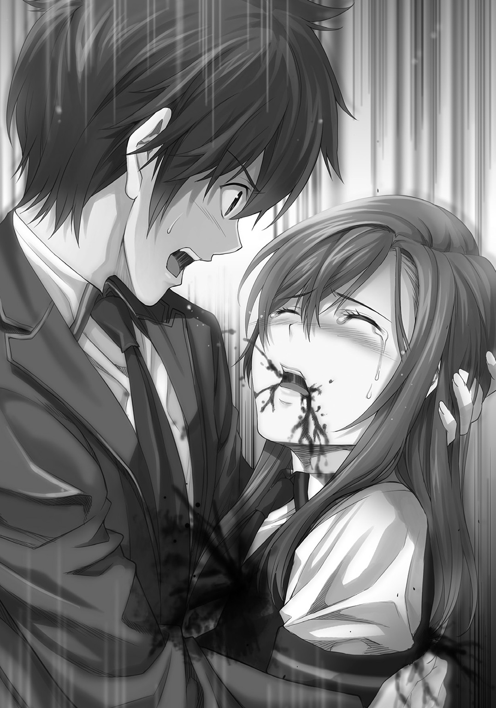
一発だけではない、ギリウムもマーリカも次々と、一九六〇年代に「ジャイロジェット」の名前で作られた、奇妙な形の超小型ロケットランチャーを改造したものに装塡されていた超小型ミサイルを全弾たたき込み、そのたびごとに、リーファの身体は壁を貫き、貫き、彼方へと飛ばされていく。
「泡瀬さんっ！」
「おかしい......そんなはずは......この身体は、私のものなのに......ものなの......に......」
理解できない、と言いたげに頭を横に振りながら瀬底泡瀬は目を閉じた。
「泡瀬さん！」
「大丈夫、まだ息はあるわ！」
医療パックを腰から外して、マーリカが泡瀬の胸の傷の上にそれを押しつけた。
自動的に展開した医療キットのゲル状の中身は泡瀬の胸の傷を覆い、修復開始を意味する発光を始めた。
「奴が戻ってくる前に逃げるわよ！ 彼女は私が！ ギリウム、彼を頼むわ！」
「了解、さあ、タグル君行こう！」
ギリウムに手を引かれ、マーリカに背負われた泡瀬の状態を気にしながら、それでもタグルは走り出した。
「おのれ......」
遥か彼方の壁の向こうで立ち上がったリーファがタグルたちを追いかけようと手を伸ばした瞬間、天井をぶち抜いていた時空船が閃光と共に自爆した。
☆
『時空船の自爆を確認しました。タグル様たちの生命反応に異状なし、無事に逃亡中のようです』
反転を終えた「ロスティニア」の中、ＡＩが報告する。
時間流の中では、大きな船であればあるだけ、その動きが激しくなればなるだけ、強い震動が上下左右から襲うことになる。
安定装置を使えば、挙動は大きくなり、隙が生まれる。
故に「ロスティニア」の中はシートベルトなしでは壁や天井に放り出されそうな揺れと重力移動のただ中にある。
パーシィだけが、「杖」をついて、まるで釘で打ち付けたかのように直立不動で動かない。
「よし、粒子ビーム砲を艦橋に向けて集中砲火、外れてもいい、リーファの注意を逸らせ！」
「了解！」
残されて火器担当に回されたあれいが必死にシステムを操作して言われたとおりにする。
「集弾率四五％を切ります！」
「構わん、一発でも艦橋の手前で炸裂すればいい！」
「スタビライザー作動、二十秒だけ進路安定させるから当ててちょうだい！」
レッド・リーコンが叫ぶ。
「ありがとうございます......撃ちます！ 斉射開始！ 七八％が防御シールドで消失、一二％が威力消失、十二発命中！」
「よし、構わず撃ちまくれ！ 進路は直進を維持！」
『敵艦、防御システム、反撃の反応速度一二％低下 タグル様たちは頑張っておられるようです。間もなく、合流ポイントです』
「ロスティニア」のＡＩが冷静にタグルの状況を報告する。
☆
階段を駆け下り、ロックされている場所は、艦橋にビーム攻撃が命中した途端、マーリカの「杖」で何とか開けることが出来た。
「逃がさないわ」
その彼方に、金色の鎧を纏ったリーファが待ち受けていた。
「............あと一階層なのに」
苦々しくマーリカが言いながら、ジャイロジェットの弾倉を取り替えようとし、すでに空なのに気づいて舌打ちした。
リーファの頑丈さは戦車どころか戦艦なみだ。「アトスの炎」なしで遠ざけることは難しい。
「タグル！」
どこからともなく声がして、空中をパーシィの「杖」が飛んできた。
空中でタグルがそれを受け取った瞬間、リーファの動きが「見え」た。
真っ向唐竹割りに振りかざされた両手大剣をタグルは「杖」で受け止め、横に流す。
勢い込んだ剣は床を叩き斬って半ばまでめり込んだ。
相手が引き抜くよりも先に、タグルはその剣を持ったリーファの手を蹴り飛ばそうとしたが、逆にバックハンドを喰らいそうになって慌ててまた「杖」で受けて飛ばされる。
「タグル！ プロトコル１７２３！」
パーシィの声は電磁コイルの加速音にすぐかき消されたが、タグルにはしっかり聞こえた。
杖についているダイヤルを、その数字に合わせる。ひと升足りない部分は、杖を摑んで左右に引くともう一列が現れた。
戦艦用のレールガンが唸って、直撃を喰らったリーファが飛ばされる。
「みんな、急いで！」
もうひとりのパーシィが対艦レールガンを積んだ作業車から飛び降りる。
「まてええええ！」
リーファが破壊された隔壁数十枚の向こう側から一気に突っ込む。
額の金色の眼は、すでに眩いばかりの輝きを放っていた。
その身体を、別の人影がぎくしゃくと羽交い締めにした。
身体の前面が焼け焦げ、胸に穴の空いたパーシィそっくりな死体............に偽装したアンドロイドは、即座にリーファにふりほどかれバラバラに破壊されたが、タグルにとってはそれで十分だった。
タグルは艦橋から脱出するとき、パーシィがやったように、宝石の柄頭の下を握り、杖の中の「剣」を引き抜いた。
下から上への逆袈裟から手首を反転させつつ、身体を回転させながらの袈裟斬り。
そして空中で一旦柄を離して逆手に持ち替えながらの唐竹割り。
赤い、何よりも赤い輝きが三回瞬いた。
パーシィは言った............自分でも三秒しかコントロール出来ないと。
『戦士の魂』を使っても、タグルには一瞬だけだったが、それで十分だった。
タグルの横をすり抜け、泡瀬を背負ったマーリカたちを追おうとしたリーファの身体が、頭頂部から爪先まで鎧ごと七つに切断されて転がった。
鞘である「杖」に「剣」を収めた瞬間、猛烈な虚脱感がタグルの身体にのしかかり、少年は倒れそうになる。
それを、柔らかくていい匂いのするものが支えてくれた。
「大丈夫、あなたは助かったわ............彼女たちも」
もうひとりのパーシィはタグルを抱きかかえながら、そう言って微笑んだ。
「おのれ............おのれ......」
バラバラに切断された破片になっても、なおリーファは呻いているのが聞こえた。
「とはいえ、この程度じゃすぐに復活する............急ぐわよ」
そう言って、タグルを肩に担いで走り出す。
後ろ向きに揺られながら、タグルはバラバラになったリーファの身体がするすると一箇所に固まったかと思うと蠟細工をあぶったように溶け、そこからすうっと立ち上がりつつ元の姿を取りもどすのを見た。
「まちな............さい............あなた............に、姉様......泡瀬も......とられる............なんて............ゆるせ......ない」
手を伸ばすリーファの顔はところどころが歪み、元に戻り、また歪む。
どうやら自分の与えた一撃はそれなりのダメージを与えたのだと理解して、タグルは安堵し、数秒間失神した。
目を醒ますとすでにもう一隻の「ロスティニア」は出発準備を整えていた。
「エンジンの半分はあの子にくれてやるわ、もうひとりの私に、あなたたちを送り届けられればそれでいい」
『了解です姫様、崇高な自己犠牲、感服いたしますが、私の処遇もお忘れなく』
復旧した「ロスティニア」のＡＩが皮肉とも、文句とも取れることを言う。
「あとで何とかしてあげるから、さっさと準備して」
『今度は今回のようなことがないように、因果律消去砲と存在固定装置のデータを再生してくださいませ」
「考えておくわよ、ただしその場合修理してもらう相手はキャーティアじゃなくなるから、覚悟しておいてね！」
『この際ですので、ドギーシェアでも結構です。ゴテゴテ主義のバルンムウはご勘弁を』
「いいから早く！」
「重力アンカー逆作動準備よろし、上方砲門へのエネルギーチャージ終了、もうすぐ撃てるわ」
その横でマーリカが火器統制と「荒っぽい出航準備」を整えている。
「それにしてもリニューアルした、って聞いてたけどかなりやられてるわね」
「仕方ないわ、作戦もあったしね」
「自爆攻撃は作戦って呼ばないわよ」
そんな会話をしている横で、瀬底泡瀬を治療用ポッドに収めたギリウムが、座席に寝かされていたタグルの所へ戻ってくる。
「大丈夫か、タグル君」
「大丈夫、ちょっとホッとして気が抜けただけだから............で、状況は？」
「今のところ君が与えたダメージが大きかったのと、もう一隻の『ロスティニア』の攻撃がそれなりに功を奏して、何とか敵が来ることは避けられてる」
「シルバニオンは？」
「どうやら撤退するスウィムウェンの超空間ジャンプに巻き込まれて殆ど戻ってきてないみたいだ、艦内にはリーダー以外殆ど残ってないらしい。さっきセンサーで確認した」
「準備完了！ ふたりとも席についてシートベルト！」
マーリカの声に、ギリウムはタグルのベルトを装着してやり、自らは壁にある予備の座席についてベルトを締めた。
「カウント10！ ９、８............」
やがてずん、と重い震動が来ると同時に爆発音と、金属のひしゃげる音が連続し、マーリカとＡＩがめまぐるしく会話と命令を応酬しながら、もう一隻の「ロスティニア」はいくつかのエンジンを残したまま「ドラグナード」から離れ、よたよたと加速し始める。
「エンジン自爆シークエンス最終段階、もう少し加速できないの？」
『残念ながらこれ以上は無理です。思ったより回路の損傷が激しく、重力子の方向が安定しません』
「タグル、ちょっと頼めるかしら？ 質量のある幽霊にはできないことを」
パーシィの言葉に、タグルは頷いた。
ここにはいないほうのパーシィがどうしたかは覚えている。
タグルは「杖」を、コンソール正面にあるレバーの一つを引き抜き、代わりに突き刺した。
☆
本来の主であるパーシィではなく、タグルが操った「諸元の炎」により、エンジンを失っているため、完全に再生はできなかったが、それでも残ったエンジンの出力を元通り回復して、もう一隻の「ロスティニア」は無事に加速を開始した。
「ドラグナード」はそれを追いかけようとしたが、本来のパーシィが乗る「ロスティニア」がそれを阻む。
すでに救助の終わった「ドラグナード」に、遠慮をする必要はなかった。
「ロスティニア」の機首が変形する。
中から現れたのは二つ並んだ非対称の砲口。一つは巨大で重力子レンズが奥に輝き、もうひとつは暗い穴があるだけの小さな砲口。
「因果律消去砲、撃ーっ！」
艦橋に立つパーシィの声と同時に、巨大な砲口が周囲の光を全て吸い込み、輝きを増すと、太陽の数万倍の輝きが時間流をせき止め、切り裂いた。
直撃を喰らった「ドラグナード」が大きく「く」の字にへし折れ、そしてそこからまた再生を開始しようとするのへ、
「存在固定装置照準完了」
レッドの報告に、パーシィはそちらのほうも動作を指示する。
小さな砲口の奥から、青白い稲妻のようなものが投網のように拡がって「ドラグナード」を包み込む。
「リーファ............」
小さく、パーシィは唇の中で呟き、そして、声を張り上げた。
「事象存在集束開始、標的を消去せよ！ 因果の輪の彼方へ！」
その言葉に合わせたかのように一瞬で青白い稲妻の投網は小さく集束し、「ドラグナード」は角砂糖一個分ほどの大きさにまで「圧縮」された。
さらにそこから完全な「点」と化し、それが「消去」される。
大きく、時間流が揺らいだ。
極彩色の世界に、白い光が巨大な木の根のように走り、それは亀裂となって全ての時空に拡がり............そして、収縮する。
傷口が出来て拡がりそれがまた癒えるまでを早回しの映像で見せたかのように。
「傷」はリーファという存在がこの時空、次元に生まれ、そして今完全に消去されるまでのすべての人生であり、そこに関わった人々の記憶と経験とそれに影響された人生であり............世界に落ちた個人という小さな石が起こした波紋の消去でもあった。
彼女に殺され、傷つけられ、人生を変えられた全ての人々の生涯が修正されていく。
彼女が招いたアークエルフの滅亡という事実を除いて。
そして、そこから始まるパーシィとの戦いの記憶と、その決着に関わった人々の記憶を除いて。
それが二度と書き換えられることのない、確定した歴史となる。
巨大な鐘の音と、床に拡がる絶対時間計が真っ赤に輝いて、そのことを告げた。
「............」
弔鐘のようなその音を聞きながら、パーシィは目を閉じた。
☆
蜘蛛のように這い回って移動していたシルバニオンは、やがて自分が乗り移った「ロスティニア」がもう一隻のロスティニアと邂逅することを知った。
全機能を停止し、シルバニオン――――の外観を持つそれは、暫く動くのをやめた。
彼女は一五〇〇世紀に作られたので、人類の基本パターンをある程度知っている。
そして状況を分析する能力もあった。
今、巨大な脅威がひとつ去った。
シルバニオンは存在をその生みの親もろともに消去され、二隻のロスティニアという異常事態も当事者たちにとっては予測通りのことであるらしい。
たしかにそれは彼女の所属する種族にとって新たな脅威だが、強力な力を手に入れ、大事件が終わった後、必ず人類は緊張を解く。
そして、油断するのだ。
☆
「あの............パーシィ様、これ......」
あれいがコーヒーとドーナツを、もうひとりのパーシィに差し出した。
艦橋から遠い、新しく「あれいの部屋」としてあてがわれた部屋だ。
とりあえずソファとテーブルを運び込んでお茶が出来るようになっている。
そこに、もう一隻の「ロスティニア」から移ってきた、もうひとりのパーシィが通されていた。
今、「ロスティニア」はどの時代に行こうにも、戦闘で乱れてしまった時間流が収まるまでは無理、ということでその中にとどまっている。
あと二十四時間は必要だ、ということで、あの大騒動のこともあって、マーリカやレッド、そしてギリウムはあてがわれた部屋で食事の後、休息を取っている。
「ああ、ありがとう............私はあなたと旅が出来なかったけど、こちらの私は幸せ者ね、こんな美味しいドーナッツが食べられて」
そう言って、もうひとりのパーシィはひとくち、ドーナツを齧りコーヒーを飲んだ。
「本当に、リーファは消えたのかな」
その正面に腰を下ろし、タグルが訊ねる。
他のメンバーは別室で休んでいて、タグルのパーシィは「ＡＩと話すコトがある」と言ってタグルだけを部屋にやった。
「それは間違いないわ」
パーシィは頷いた。
「だって......ほら」
彼女は自分の革手袋を脱いだ。
「！」
たおやかな右手は、大量の金色の粒子が激しく立ち上る中、すでに向こう側が透けるほどになっていた。
「聞いてない？ 私はリーファの残留思念が再構成した、同じ『質量のある幽霊』なのよ。リーファの存在が消えてしまえば、私自身も消えていく............だから安心して」
「そんな............」
「だから自爆しても良かったの。本当は彼女、そのつもりだったんでしょ!?」
静かに彼女は微笑んだ。
とたんに、まるでそれがきっかけだったかのように、もうひとりのパーシィの全身から金色の粒子が立ち上り始めた。
「パーシィ！ まって、もっと君の話を聞かせてよ！」
「大丈夫、あなたには、あなたの私がいるでしょう？」
くすっともうひとりのパーシィは悪戯っぽい笑みを浮かべた。
「あれいちゃん。美味しいコーヒーとドーナッツをありがとう。これでもう心残りはないわ」
「ぱ、パーシィ様............」
あれいは顔を伏せた。
スウィムウェンである彼女に涙はない。
悲しみという感情を示すにはそれしかなかった。
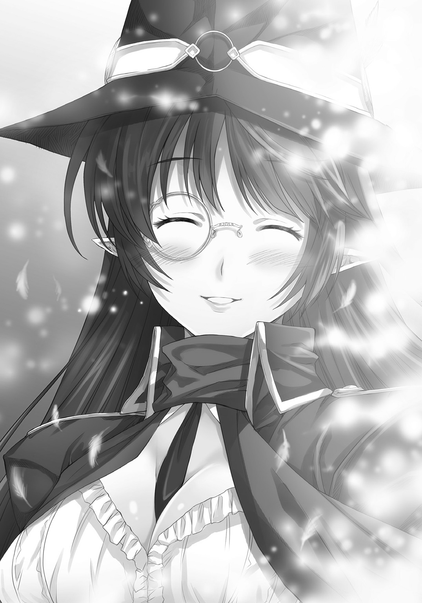
「タグル、私の『ロスティニア』をよろしくね。あれだけはこの『杖』と一緒。私と違って本物なの。私の世界で破損して放棄されていたのを修理再生したものだから............もっとも、ＡＩのコア以外は『諸元の炎』を制御しきれずにボロボロになっちゃったから、修理より新しく船体を造ったほうがいいかもしれないけれど」
「パーシィ............」
「泣かないで、タグル」
もうひとりのパーシィは女神のように微笑んだ。
「可能性という名の幽霊と出会って、別れるだけのこと、怪談話にはよくあることでしょう？ それよりも、あなたの私を大事にしてね............絶対あなたのこと、好きだから、彼女。分かるのよ――――だって、私だもの」
タグルは目を閉じて、こくん、と頷いた。
「............うん、分かった。パーシィ、また遠く、時の輪が接する所で」
「ええ、また遠く、時の輪が接する所で。タグル、愛してる」
タグルが目を開けたとき、そこに残っていたのは、彼女の「杖」だけだった。
ただそれを握りしめ、タグルは肩を震わせて、声を押し殺して泣いた。
何故なのかは分からない。
☆
「............なあ、〈をやかた〉。もうあっちの私は消失しただろうか」
もう一隻の「ロスティニア」の機関部に通じる細い通路で、パーシィはしゃがみ込んで、修理の目当てをつけに来た〈をやかた〉に話しかけた。
「リーファの存在が消えてしまえば、彼女が呼び出した情報の塊であるもうひとりの私は消滅する............タグルを愛して、『戦士の魂』を与え、これまで見守ってきた私が、だ」
〈をやかた〉はフードに包まれた頭を傾げ「さみしのでしか？」とプラカードに書いた。
「寂しくはない。当然のこと――だからな。だが私は思い出してしまった。タグルが、私の初恋の相手で『兎のタグー』だってことに。それ以来、どうもふたりきりになるのが............その............変なんだ。うん」
物言わぬ相手に、パーシィは話し続ける。
「なんか妙に意識するというか、なんっていうか......とりあえず事件は終わった。もうひとりの私が消えてしまえば恐らくそうだろう。だとしたら............私はこれから、どういう顔をしてタグルに会えばいい？ いや、まあその前にマーリカを元の時代に送ったり、アワセを治療して二〇一七年の世界に返したりしなくちゃいけないわけだが、それが終わったら？」
パーシィは口元に当てた指を嚙んだり、視線をあちこちに彷徨わせながら続けた。
「私は、その............タグルとふたりっきりになるわけだ、いや、違う、えーと、そうなる瞬間が来るわけだ、瞬間じゃなくて時間かもしれないが......とにかく、私はそうなったとき、どんな会話をすればいいのか分からなくなってきている。これは人間関係におけるスランプとか、そういうのだろうか？ いや、あの世間話とかをすればいいとは思うのだが、それが、何を話してもしくじってしまいそうな気がするんだ。そうなるとほら、一緒に行動してあちこち旅とかはできないわけで......」
喋るうちにパーシィはほんのり頰を染め、今回の戦闘であちこち歪み、凹んだ通路の壁の一部を人差し指でこねまわしはじめた。
「いや、きょ、距離をおいてしまうというのも手だが、それだとタグルが私と絶交してしまったと思わないか、と心配で............いや、本当はよく分からないんだ、アワセのこととかもあるし――リーファのことは理性でなんとか割り切れたのに、今はタグルのことで頭がいっぱいなんて......私の倫理基準がおかしくなったというか、やっぱり『ドラグナード』でリーファの影響をうけているのかもしれないが......」
しばらくじーっとパーシィのくるくる変わる表情と、落ち着きのない行動を見ていた〈をやかた〉はまたしゃがみ込んだパーシィの肩をぽんぽん、と叩いて「いのきみじかしこいせよをとめ、でしよ」と謎の言葉をプラカードに掲げた。
「どういう意味だ、それは？」
当然パーシィが問うと、「まー、なるよーになるでしよ、それよりもしゅり（修理）のためのちぇっくするでし」と現実的な答えを返し、トコトコと歩き始める。
「まあ、確かにそうだな、うん」
頷いて、パーシィは歩き始めた。
きゅい。
奇妙な音が、パーシィの頭上でした。
☆
爆発音が伝わってきて、タグルは顔をあげた。
「パーシィ？」
外へ飛び出す。
「ロスティニア、パーシィはどこ？」
『もう一隻の私のところです、タグル様。機械生命体の反応があります、数一体』
「スウィムウェン？」
「稼働システムの周波数が違います。シルバニオンに近く、スウィムウェンの特徴も持っています」
また、爆発音がした。
「なに？」
どういう存在かは分からないが、爆発を起こすような相手に油断は出来ない。
タグルはもうひとりのパーシィが残した金のリングが塡まった「杖」を持ったまま、腰の後ろにあるホルスターからいつものリボルバーを引き抜きつつ通路をひた走った。
また爆発音。大きく床が傾いた。
『タグル様、お急ぎください、もう一隻の私の曳航バランスが崩れています。あと五分でアクセスハッチの結合が外れてしまいます』
「姿勢制御して持たせてよ！」
『奮闘努力しておりますが五分が限界です、あちらの私はすでに時間流を沈み始めておりますから』
「外れるとどうなるの？」
『このあたりは昨日の戦闘の影響で、大きく乱れております、どこかの世界、どこかの時代に飛ばされるとは思いますが、何処なのかは見当もつきません』
「！」
タグルは全力を振り絞って走った。
「いったいどうした？」
ギリウムとマーリカが寝乱れた服装を直しつつ、同じ部屋から飛び出してきたが、それを詮索する余裕はタグルになく、そのままの状況を走りながら説明した。
「だとしたら私、ブリッジに戻って手動制御に切り換えてくる！」
「僕は彼と一緒にパーシィを助けに行く！」
「あたしも行くわよ！」
格納庫から油まみれのレッド・リーコンもアサルトライフルを数挺持って駆けつけてきた。
☆
「殲滅せよ！」
シルバニオンによく似た敵はそう叫んで肘の中から半エネルギー体弾頭を撃ち込んだ。
すでに停止したエンジンルームで、パーシィはその爆発からなんとか「杖」の障壁モードで難を逃れたが、エネルギー体弾頭そのものはそれすら貫通する能力を持っていると分かる。
「信管作動タイミングをプラスマイナス０・０８に修正」
「貴様、一体なにものだ、姿形はシルバニオンのくせに、口癖はスウィムウェンなんて反則じゃないのか！」
「解答する。我々は両者の相互協力により進化した次世代のスウィムウェンであり、シルバニオンでもある、種族名称はシルバウェン」
名乗ると同時に、シルバニオンの特徴であるバニーガールの衣装が消し飛び、ホルターネックの競泳水着（それも太腿が露出する切れ込みの深いもの）が彼女の身を包む。
「今度は競泳水着か、勘弁しろ！」
「我々を競合させたのはお前だ、パスウィダー。遠い未来、我ら双方を滅ぼすお前を今のうちに葬り去り、歴史を変える」
「そういう未来は確定してるから無駄だ！ おとなしく自分の時代に戻れ！」
壊れた機関部の装置に隠れながら、パーシィは叫ぶ。
叫びながら何とか利用できるものはないかと周囲を見回していた。
「拒絶する、貴様は今日、この場で殲滅されるのだ」
「この！」
パーシィは爆発の残骸を踏み越えたシルバウェンの頭上にある破損したパイプの留め具に「杖」を向けた。
一瞬でネジが外れ、その頭上に直径五メートル以上、重さ数トンのパイプが落下する。
「いまだ、逃げるぞ〈をやかた〉！」
パーシィが駆けだしたその背後で、鉄パイプが転がる音がした。
「くそ、足止めにもならないのか！」
何とか機関室のもうひとつの出入り口をくぐってパーシィはもう一隻の「ロスティニア」の甲板下の通路にたどりついた。
「よし、あと四〇〇メートル！ 行くぞ〈をやかた〉！」
パーシィの言葉にこくん、と〈をやかた〉は頷き、パーシィ以上の速度で走り始める。
後ろで派手な破壊音がした。
そして爆発............大きく船が傾く。
「うわっ！」
思わず転びそうになるパーシィを、すかさず壁に飛びついて〈をやかた〉が支えた。
「すまん！」
再び走り出すパーシィの前にアクセスハッチが三〇〇メートルの彼方に見えた。
☆
「パーシィ！」
叫びながらタグルはアクセスハッチがようやく視界に入ってきて安堵した。
あと二〇〇メートル。
そしてまた爆発音と震動。
『タグル様、もうアクセスハッチの接続部が持ちません』
「持たせて！」
叫びながらタグルは走った。
アクセスハッチの取っ手が回転する。
ゆっくりと、じれったいほどゆっくりとハッチが開き始めた。
「パーシィ！」
その隙間に、彼女の顔を見つけ、タグルは手を伸ばした。
パーシィの頭が出る。
再びの爆発。背中から何かを叩きつけられたようにパーシィはつんのめり、その頭から帽子が転がる。
「タグル！」
パーシィの手が伸びた。
タグルも手を伸ばす。
あと一〇メートル、九メートル、五メートル、
パーシィの肩が扉から出た。
さらなる爆発音。
あと四メートル............そして、一気にパーシィの姿が遠ざかった。
「！」
めきめきと音を立てて、タグルのいる側のアクセスハッチの壁が引きはがされ、パーシィのいるほうの「ロスティニア」が遠のいていくのだ。
「パーシィ！」
「タグル君、駄目だ！」
ギリウムがなおも進もうとするタグルの腰にしがみついた。
「摑まって！」
少し遅れていたレッドが、通路の壁にあるフックのついた非常用ロープを引っ張りだし、ふたりに向けて投げる。
「だめだ、パーシィがまだ向こう側に！」
みるみる遠ざかるパーシィに追いつこうとギリウムをふりほどこうとするタグルだったが、がっちりとホールドされて動けない。
「よし、引っ張れ！」
ギリウムの声に、レッドが非常用ロープの繫がるウィンチを作動させ、タグルは今や水平ではなく垂直になってしまった通路をずるずると彼の「ロスティニア」側へと引っ張りあげられていく。
「パーシィ、パーシィいいいっ！」
タグルの叫び声は、極彩色の時間の流れの彼方へ消え、そして隔壁が下ろされて彼の視界は真っ暗になった。
○エピローグ：「風来坊」（by ふきのとう）
☆
「つまり、泡瀬は君と出会って以後の記憶を失っている、ってこと？」
瀬底泡瀬の相棒、カレン・西中の言葉に、タグルは頷いた。
「それしか、安全に彼女に上書きされた並行世界の泡瀬さんと、僕らの泡瀬さんを分離する方法はなかったんです」
「そう......でも、ありがとう。泡瀬を無事に返してくれて」
「完全に元のままじゃないのは申し訳ないですけど、後のことはお願いします」
「ええ、どうせ『暁』はいずれ私たちを引き上げさせて配置転換させるつもりらしいから、ちょうど良かったわ。くそったれな書類作りもようやくＰＣ使用が許されたしね」
「そうですか」
タグルはほろ苦く笑う。思えば、カレンが今度のことに巻き込まれなかったのはその書類作りのお蔭で、そしてカレンが影響を受けなかったからこそ、安心して瀬底泡瀬を彼女に預けることができる。
「これから、また何かあるんでしょ？」
「え？」
「だってこういうとき、必ずパスウィダーがいるはずなのに、あなたの隣にもこの近くにもいないんだもの。何かあったんでしょう？」
「ええ」
まさか彼女が時空の彼方に消えた、とはまだ言う気になれずタグルは素直に頷いた。
「行って。泡瀬の目が覚めたら困るわ............気をつけて」
「ありがとうございます」
タグルは頭を下げ、カレンはドアを閉めた。
監視カメラに、深々と頭を下げたタグルが、やがて思い切ったように立ち去っていく後ろ姿が見える。
「随分、大人の顔になったわね、タグル君は」
そして、ちらりと奥の部屋で眠り続ける泡瀬を見やり、
「......この子、結局初恋が成就するかどうか、分からないまま、失恋したってことよね」
と微苦笑を浮かべた。
☆
パーシィが時間の流れに消えてから一週間。
時間流が収まるのを待って、泡瀬の傷が回復し、記憶処置が終わるまでの一週間、ずっとタグルたちはパーシィの姿を追いかけたが、なんの防御装備もなく、生身で時間流の中に放り出され、無事で済む可能性は奇跡を待つのに等しい、とレッド・リーコンもギリウムもタグルに重い声で告げていたが、タグルは諦めなかった。
泡瀬のアパートの外は、「ろすてぃに屋」の入り口が待っていた。
ドアをくぐり、中に入る。
ブリッジに入ると、レッド・リーコンをはじめとした三人とあれいがまだ残っていた。
「帰ってくれても良かったのに」
「わたしは、ここが家です、タグル兄様」
あれいが答え、
「泡瀬ちゃんを運び入れるの、手伝ってあげたのにそれはないでしょ？」
レッド・リーコンが苦笑する。
「ごめんなさい............でも皆さんにはそれぞれの時間で人生があるわけで......」
「まあ、それはそれとして............ところで『ロスティニア』改めて確認したいんだけど？」
『はい、なんでございましょう、レッド様』
「パーシィは、死んだの？」
『わかりません、ですが姫様が死ねば私は全機能を停止するはずです』
答える「ロスティニア」の声だけが変わらずに冷静だった。
☆
通路そのものが、アクセスハッチが破壊され、時間の流れに放り出されてすぐに崩壊した。
時間の流れの極彩色がパーシィを包む。
こうなるともう「杖」は役に立たない。
時間の流れはいずれ彼女を翻弄し、急速に老化させ、あるいは若返らせ、それを無限に繰り返しながら時の狭間に落ち込んだものが大抵そうであるように、やがては細胞が耐えきれなくなって物理的に燃え尽きさせてしまう。
「ここで、終わりか............」
思わず呟いた。
こうなって何処か別の時代や世界にたどり着いたという話はないでもないが、それはイコライザーの装備を纏っていても、ほとんど奇跡に近いおとぎ話だ。
時間流の中に生身で放り出された場合、人間なら十五分、昔のアークエルフでもだいたい三十分で燃え尽きる。
「時間の流れの中で焼死とはな......消し炭で灰も残らない」
イコライザーとしての特注品のコートも、だんだん熱を伝え始めてきている。
（眼球が沸騰するまで目を開けていてもつまらないな）
そう思って目を閉じる。
熱は次第にあがりはじめ............そして、不意に消えた。
姉様。
声が聞こえた気がした。
目を開けると、透き通る影が見えた。
リーファの姿をしている。
あの忌まわしい額の金色の眼はない。
昔の、王都に帰るたびに出迎えてくれた優しい笑顔。
「リーファ」
思わずパーシィは微笑んだ。
どうやら、完全にリーファの残留思念が消えたわけではない、と理解した。
もしくは、焼け死につつある自分の脳が見せた優しい幻。
後者なら嬉しい、とぼんやり思う。
「最後に会いに来てくれたか。だが私を取り込むなよ、このまま死なせてくれ」
いいえ。
リーファは首を横に振った。
姉様は死なない。私が守るから............私が出来る最初で最後の姉様への恩返し。
「馬鹿を言うな、お前は、私の側にいてくれるだけで、十分私を奮い立たせ、助けてくれていたんだ」
ありがとう、姉様。
リーファは、彼女の残留思念が生み出した、僅かなエネルギーとしての実体を持つ幻は、そう言って姉を抱きしめた。
全ての音が消え、時空の嵐の吹きつける力も消え去る。
そして、パーシィは、時空の彼方へと、落ちた。
それは一瞬であり、数千年であり、数秒でもある時間。
☆
「ロスティニア」の中。
レッドの問いかけに、タグルは意外に冷静だったが、目から疲労のくもりが取れて、輝きが戻ってきていた。
「つまり、どこかにパーシィは生きているってこと？」
『恐らく............ですが、今の姫様を見つけるのは大海に落とされた砂粒を見つけるようなものです。あの当時の時間流の中では、どこに落ちたのか知る術はありません。私もこれだけ広範囲を捜索して姫様の位置を特定することは流石に不可能です』
「そうか............生きてるんだ」
タグルはほっと溜息をつき、そして拳を握りしめた。
「なら、探そう！」
☆
口の中に微かに湿った砂が入ってきて目が覚めた。
「っぷぱっ！」
慌ててパーシィはもがき、ようやくその中から頭を引き抜く。
「どこだ............ここは？」
周囲を見回すが、どこまでも拡がる砂浜だった。
風が強く、空が青い。
パーシィは「杖」をさっそくどこからともなく取りだして、水辺へ向ける。
「ふむ............どうやら淡水か。ということは波が起こって、水平線があるほど巨大な湖ということだな。飲み水には不自由しなくてすみそうだが......」
と、自分の背後でドタバタと音がした。
振り向くと見覚えのある貫頭衣を着た大きくて短い足がどたばたと砂からつきだしている。
「どうやら一人じゃないらしいな」
微笑みながらパーシィはその足を引っ張って、砂の中から〈をやかた〉を引っ張り出した。
「やあ〈をやかた〉、お互い命冥加に生き残ったらしいな」
まるで猫のように身体を揺すって砂を飛ばすと、〈をやかた〉は「そでしね」とプラカードを掲げた。
「さて............何処だと思う？」
と問うが、〈をやかた〉も「さぱりわからないでしな」と答える。
『もうしわけございません、ひょっとしてその音声は姫様でしょうか？』
砂浜の盛り上がりの中から声がした。
「............お前『ロスティニア』のＡＩコアか？」
『はい、ご明察の通りです姫様。船体が完全に崩壊しましたので、私だけプログラムに従って射出されましたが、姫様もご無事とは』
「音声のみの話し相手も出来たか............君と違って大分口は悪いが」
苦笑しながら、パーシィは〈をやかた〉と一緒に砂浜を掘り返し始めた。
☆
「それがどういうことか、分かっているのか、タグル君」
ギリウムは静かな声で訊いた。
「自分の時間を離れて彷徨ううち、自分自身の時間から切り離されるかもしれない、元の生活に戻れなくなるかもしれないのよ？」
マーリカが子供に言い聞かせるような口調で言う。
「そうよ、タグル君、泡瀬も戻ってきたんだし、ひとまずあなたの時代に帰りなさい。あたしたちでパーシィを探すから」
「どうやって？」
タグルは自分を説得しようとする面々をひとりずつ見据える。
「レッドさんの船は小さすぎる。ギリウムは個人装備で移動出来る時間の距離が限られてる、マーリカさんは時間や次元を渡る装備そのものがない............だったら」
にっこりとタグルは微笑んだ。
「僕がパーシィを探すのを、みんなで手伝ってくれない？」
言われて、レッドたちはあっけに取られた。
「待って、確かに君はこの船の最高位命令者だけど............」
「いままで僕たちが言った警告の意味を理解しているのか？」
「タグル君、三日や四日で済む話じゃないのは分かっているんでしょう？」
レッド、ギリウム、マーリカの順でタグルを説得しようとするが、少年は穏やかに微笑みながら、頑とした態度で、
「合理的に考えれば当然じゃないかな？」
と言い放った。
「みんなが心配してるのは、僕が戦闘能力もなく、専門知識もない凡人だから、でしょ？ だったらみんなが協力してくれれば問題は解決じゃない？」
「おい............」
ギリウムがさらなる説得の言葉をかけようとするのを手で制して、
「図々しいのは分かってる。でも、いやなんだ。このまま家に帰って、何もせずにあなたたちの報告が来るまで待つ、なんてことは」
タグルは真っ直ぐに三人を見た。
「私は............いいと思います」
最初の答えはタグルの背後で起こった。
あれいだ。
「私は、タグル兄様がパーシィ様を探すほうがいいと思います。何もせず、ただ待つというのは苦痛です。まして何かできる力を持っているのに、それを封じるのは良くないと思います。それに............私もパーシィ様を探すお手伝いがしたいです」
「............」「............」「............」
三人のプロは黙り込み、視線だけで会話をしたが、結局「仕方ない」という溜息を最初についたのはギリウムだった。
「では、仕方がない。友の頼みを『時の決闘士』としては断ることはできないからな」
「............まあ、とりあえず並行世界の東京のほうは、いま一段落してるし、しばらくの間は時間旅行に関する専門知識を教える人がいるだろうしね」
と態度を軟化させたのはレッドで、
「ま、どうせ二〇一四年まで生きてるし、ベルリンに戻るのはもう少し後でもいいわ。時間旅行中は歳とらないしね」
とマーリカまでが苦笑いしながら頷いた。
「............ありがとう、みんな」
タグルはあれいもふくめた四人にそれぞれ頭を下げた。
そして天を仰ぐようにして言う。
「さぁ、話は決まった、行こう『ロスティニア』！」
タグルは決意する。
「どれだけの時間がかかっても、、僕はパーシィを見つけるよ！」
そして、壁に掛かったパーシィの帽子を取ってかぶり、もうひとりのパーシィが残した金のリングの塡まった「杖」を頭上にかざすと、声を張り上げた。
最初にそう叫んだ日のように。
「エンジン始動、発進！」
☆
「さぁて、これからどうするかな」
『姫様、とりあえずここから真っ直ぐ北へ向かうと、人工の熱源らしきものを感知しました。知的生命体がいる可能性がございます』
彼女の背に、コートの中にしまってあったロープで〈をやかた〉が器用に作った網で背負われた「ロスティニア」のＡＩコアが答える。
『そこで協力を仰げば、上手くすると私の船体を再生出来る鉱物資源のある場所を教えてもらえるかもしれません。なにしろ今の私は............』
「あー分かった分かった。今のお前は機能が限定されてるからな。よし、では出発しよう！」
口笛を吹きながら、パーシィは何処とも知れぬ、廃墟の惑星の表面を颯爽と歩き出した。
その横を歩きながら〈をやかた〉が「なんていうきょくでしか？」と訊ねた。
「ああ、『風来坊』という日本の曲だよ、〈をやかた〉、今の私たちにぴったりだと思わないか？」
パーシィは答えて、また曲を吹きながら足を進める。
〈をやかた〉もその曲に合わせるように頭を軽く振りながら後をついていく。
白い砂浜に刻まれたふたつの足跡をなでるように、風が吹いていく。
神ならぬ彼女はまだ知らないが、時空間のズレを差し引くと、そのほぼ同時刻、もう一隻の「ロスティニア」はタグルを船長に、新しいクルーと共にパーシィを探す為、出発している。
少年は時空を駆け、少女は地の上を歩く。
やがてその道がどこかで重なるのか、否か。
まだ誰にも分からない。
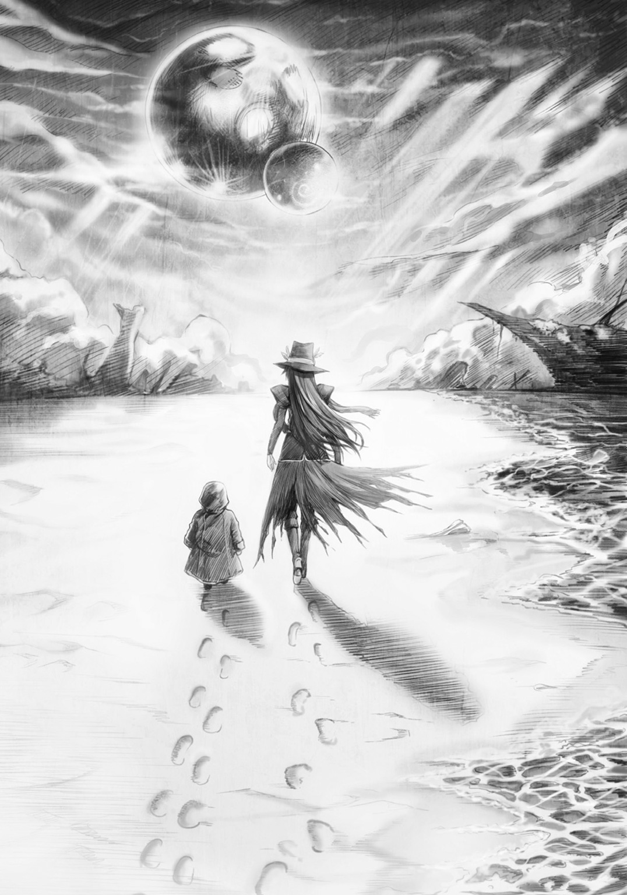
あ と が き
はい、お疲れ様でした。
神野オキナでございます。
タイムトラベルアクションコメディ、といううたい文句で始まりました「イコライザー！」これにて第一シーズン完となります。
如何だったでしょうか？
パーシィとタグル君たちがこれからどうなるのか。それは売り上げ次第ですが（笑）、そうじゃなくてもどこかにひょこひょこと、彼らは顔を出すかもしれません。
なにしろ宇宙も時間も広大で、彼らはそこを行き来できる存在ですから。
とにかくよく喋り、能天気でうっかり屋で、頭はいいけど子供っぽい、というパーシィのキャラは書いてて楽しかったですし、これまでの主人公たちと違い、ところどころ無鉄砲で自らアクションもやってはひいひい言ってるタグル君も付き合いがいのあるキャラクターでした。
レッド・リーコンや、今回一番可哀想な目に遭う瀬底泡瀬、決闘好き美少年のギリウム君や、今回初登場のマーリカなどもこれまで書いたことのないタイプで、大変でしたけれども楽しい作品でした。
最初の一冊目を書き始めたときから、ラストは「風来坊」でと思っていたのが、ついにここまで出来たのはちょっと嬉しかったです。
今回も担当の日比生さん、イラストのともぞさんにはご迷惑をおかけしました。
特にともぞさんにはお忙しい中、日数も少ないのに素晴らしいイラストをありがとうございます。
願わくば読者の皆様も楽しんで頂けますように。
それでは、また次の本で。
神野オキナ拝
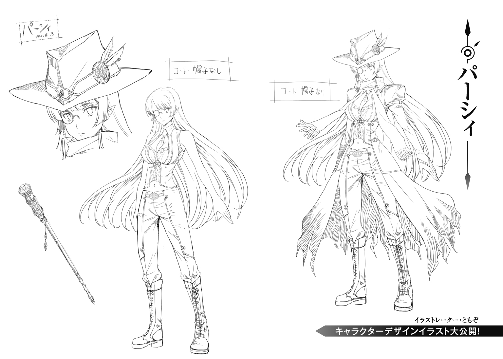
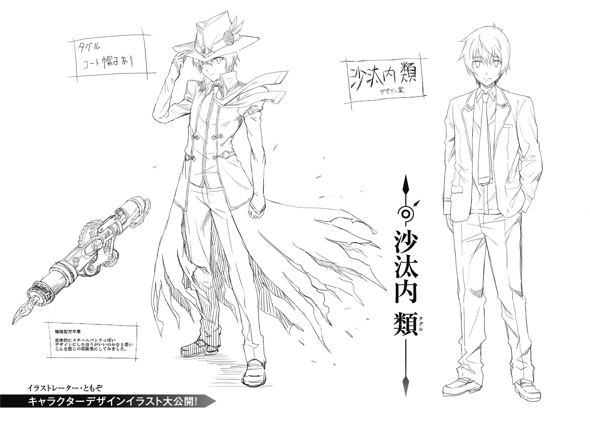
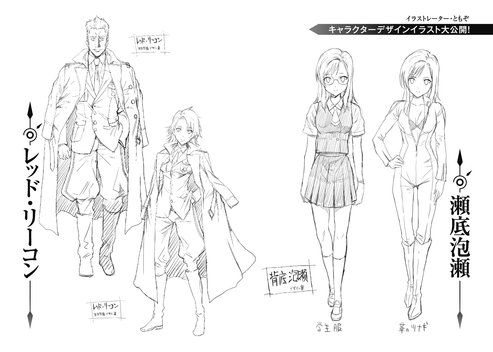
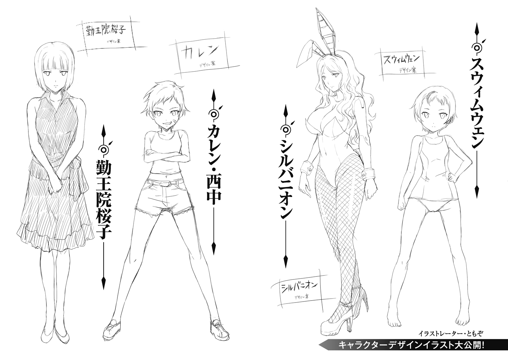
著者紹介
神野オキナ かみの おきな
イコライザー！も全三巻ということで、一旦ここでおしまい。とはいえ、彼らはまだあちこちの時空を旅しています。どんな形にせよ、またのお目もじがあればにやりと笑っていただければ幸いです！
illustration
ともぞ
最近、色紙を描くことが多いのですが、たまに描くアナログ作業は楽しいですけど、デジタルに比べるとコストがかかって大変。けど、画材屋さんとかに行くとワクワクしますし、絵を描く楽しさを思い出させてくれるので、アナログってやっぱり大切だなぁと感じます。
ダッシュエックス文庫DIGITAL
イコライザー！ 合本版
著者 神野オキナ
© OKINA KAMINO 2017
２０１７年１月31日発行
この電子書籍は左記を底本としています。
ダッシュエックス文庫
「イコライザー！」２０１４年12月24日発行 第１刷
「イコライザー！ ２」２０１５年２月28日発行 第１刷
「イコライザー！ ３」２０１５年６月30日発行 第１刷
発行者 茨木政彦
発行所 株式会社 集英社
〒１０１－８０５０
東京都千代田区一ツ橋２丁目５番10号
０３－３２３０－６０８０（読者係）
制作所 株式会社ＩＣＥ
本作品の全部また一部を無断で複製、転載、改竄、インターネット上に掲載すること、および有償無償に関わらず、本データを第三者に譲渡することを禁じます。なお個人利用の目的であっても、コピーガードを解除しての複製は、法律で禁じられています。